Date: 2019-12-03 16:42:17 CET, cola version: 1.3.2
Document is loading...
All available functions which can be applied to this res_list object:
res_list
#> A 'ConsensusPartitionList' object with 24 methods.
#> On a matrix with 51941 rows and 80 columns.
#> Top rows are extracted by 'SD, CV, MAD, ATC' methods.
#> Subgroups are detected by 'hclust, kmeans, skmeans, pam, mclust, NMF' method.
#> Number of partitions are tried for k = 2, 3, 4, 5, 6.
#> Performed in total 30000 partitions by row resampling.
#>
#> Following methods can be applied to this 'ConsensusPartitionList' object:
#> [1] "cola_report" "collect_classes" "collect_plots" "collect_stats"
#> [5] "colnames" "functional_enrichment" "get_anno_col" "get_anno"
#> [9] "get_classes" "get_matrix" "get_membership" "get_stats"
#> [13] "is_best_k" "is_stable_k" "ncol" "nrow"
#> [17] "rownames" "show" "suggest_best_k" "test_to_known_factors"
#> [21] "top_rows_heatmap" "top_rows_overlap"
#>
#> You can get result for a single method by, e.g. object["SD", "hclust"] or object["SD:hclust"]
#> or a subset of methods by object[c("SD", "CV")], c("hclust", "kmeans")]
The call of run_all_consensus_partition_methods() was:
#> run_all_consensus_partition_methods(data = mat, mc.cores = 4, anno = anno)
Dimension of the input matrix:
mat = get_matrix(res_list)
dim(mat)
#> [1] 51941 80
The density distribution for each sample is visualized as in one column in the following heatmap. The clustering is based on the distance which is the Kolmogorov-Smirnov statistic between two distributions.
library(ComplexHeatmap)
densityHeatmap(mat, top_annotation = HeatmapAnnotation(df = get_anno(res_list),
col = get_anno_col(res_list)), ylab = "value", cluster_columns = TRUE, show_column_names = FALSE,
mc.cores = 4)
Folowing table shows the best k (number of partitions) for each combination
of top-value methods and partition methods. Clicking on the method name in
the table goes to the section for a single combination of methods.
The cola vignette explains the definition of the metrics used for determining the best number of partitions.
suggest_best_k(res_list)
| The best k | 1-PAC | Mean silhouette | Concordance | Optional k | ||
|---|---|---|---|---|---|---|
| SD:hclust | 2 | 1.000 | 0.979 | 0.989 | ** | |
| SD:kmeans | 2 | 1.000 | 1.000 | 1.000 | ** | |
| SD:pam | 2 | 1.000 | 0.995 | 0.998 | ** | |
| CV:hclust | 2 | 1.000 | 0.996 | 0.998 | ** | |
| CV:kmeans | 2 | 1.000 | 1.000 | 1.000 | ** | |
| CV:pam | 2 | 1.000 | 1.000 | 1.000 | ** | |
| MAD:hclust | 2 | 1.000 | 0.999 | 0.999 | ** | |
| MAD:kmeans | 2 | 1.000 | 1.000 | 1.000 | ** | |
| MAD:pam | 2 | 1.000 | 0.983 | 0.992 | ** | |
| ATC:pam | 2 | 1.000 | 1.000 | 1.000 | ** | |
| ATC:NMF | 2 | 1.000 | 0.982 | 0.993 | ** | |
| ATC:kmeans | 4 | 1.000 | 0.934 | 0.968 | ** | 2 |
| ATC:mclust | 3 | 0.976 | 0.963 | 0.985 | ** | 2 |
| ATC:hclust | 2 | 0.949 | 0.896 | 0.966 | * | |
| CV:mclust | 2 | 0.946 | 0.937 | 0.974 | * | |
| SD:mclust | 2 | 0.923 | 0.944 | 0.974 | * | |
| ATC:skmeans | 4 | 0.901 | 0.924 | 0.953 | * | 2,3 |
| SD:skmeans | 2 | 0.753 | 0.868 | 0.946 | ||
| MAD:NMF | 2 | 0.725 | 0.851 | 0.937 | ||
| MAD:skmeans | 2 | 0.593 | 0.833 | 0.926 | ||
| SD:NMF | 3 | 0.573 | 0.746 | 0.883 | ||
| MAD:mclust | 5 | 0.569 | 0.715 | 0.806 | ||
| CV:skmeans | 2 | 0.515 | 0.786 | 0.907 | ||
| CV:NMF | 3 | 0.418 | 0.751 | 0.848 |
**: 1-PAC > 0.95, *: 1-PAC > 0.9
Cumulative distribution function curves of consensus matrix for all methods.
collect_plots(res_list, fun = plot_ecdf)
Consensus heatmaps for all methods. (What is a consensus heatmap?)
collect_plots(res_list, k = 2, fun = consensus_heatmap, mc.cores = 4)
collect_plots(res_list, k = 3, fun = consensus_heatmap, mc.cores = 4)
collect_plots(res_list, k = 4, fun = consensus_heatmap, mc.cores = 4)
collect_plots(res_list, k = 5, fun = consensus_heatmap, mc.cores = 4)
collect_plots(res_list, k = 6, fun = consensus_heatmap, mc.cores = 4)
Membership heatmaps for all methods. (What is a membership heatmap?)
collect_plots(res_list, k = 2, fun = membership_heatmap, mc.cores = 4)
collect_plots(res_list, k = 3, fun = membership_heatmap, mc.cores = 4)
collect_plots(res_list, k = 4, fun = membership_heatmap, mc.cores = 4)
collect_plots(res_list, k = 5, fun = membership_heatmap, mc.cores = 4)
collect_plots(res_list, k = 6, fun = membership_heatmap, mc.cores = 4)
Signature heatmaps for all methods. (What is a signature heatmap?)
Note in following heatmaps, rows are scaled.
collect_plots(res_list, k = 2, fun = get_signatures, mc.cores = 4)
collect_plots(res_list, k = 3, fun = get_signatures, mc.cores = 4)
collect_plots(res_list, k = 4, fun = get_signatures, mc.cores = 4)
collect_plots(res_list, k = 5, fun = get_signatures, mc.cores = 4)
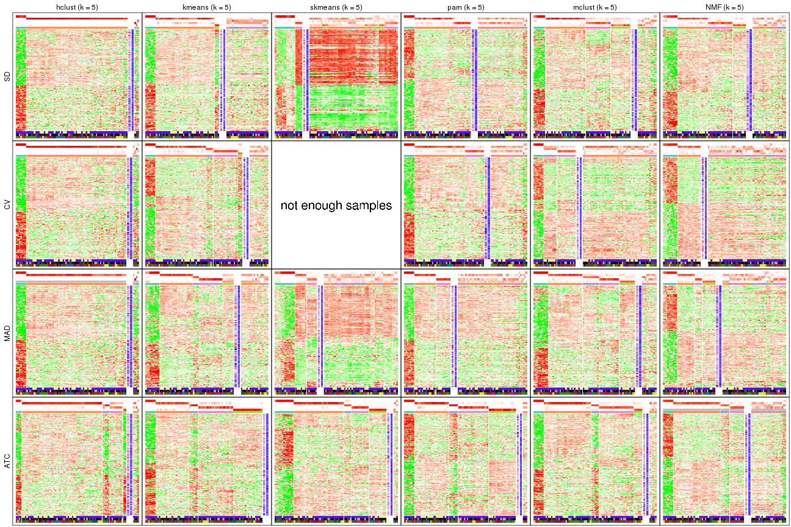
collect_plots(res_list, k = 6, fun = get_signatures, mc.cores = 4)

The statistics used for measuring the stability of consensus partitioning. (How are they defined?)
get_stats(res_list, k = 2)
#> k 1-PAC mean_silhouette concordance area_increased Rand Jaccard
#> SD:NMF 2 0.871 0.902 0.961 0.417 0.585 0.585
#> CV:NMF 2 0.642 0.835 0.927 0.439 0.575 0.575
#> MAD:NMF 2 0.725 0.851 0.937 0.492 0.499 0.499
#> ATC:NMF 2 1.000 0.982 0.993 0.233 0.778 0.778
#> SD:skmeans 2 0.753 0.868 0.946 0.476 0.519 0.519
#> CV:skmeans 2 0.515 0.786 0.907 0.469 0.532 0.532
#> MAD:skmeans 2 0.593 0.833 0.926 0.496 0.509 0.509
#> ATC:skmeans 2 1.000 0.998 0.999 0.416 0.585 0.585
#> SD:mclust 2 0.923 0.944 0.974 0.349 0.633 0.633
#> CV:mclust 2 0.946 0.937 0.974 0.258 0.760 0.760
#> MAD:mclust 2 0.803 0.841 0.941 0.300 0.708 0.708
#> ATC:mclust 2 0.923 0.898 0.963 0.320 0.676 0.676
#> SD:kmeans 2 1.000 1.000 1.000 0.222 0.778 0.778
#> CV:kmeans 2 1.000 1.000 1.000 0.222 0.778 0.778
#> MAD:kmeans 2 1.000 1.000 1.000 0.222 0.778 0.778
#> ATC:kmeans 2 1.000 1.000 1.000 0.222 0.778 0.778
#> SD:pam 2 1.000 0.995 0.998 0.167 0.838 0.838
#> CV:pam 2 1.000 1.000 1.000 0.222 0.778 0.778
#> MAD:pam 2 1.000 0.983 0.992 0.210 0.778 0.778
#> ATC:pam 2 1.000 1.000 1.000 0.222 0.778 0.778
#> SD:hclust 2 1.000 0.979 0.989 0.205 0.778 0.778
#> CV:hclust 2 1.000 0.996 0.998 0.220 0.778 0.778
#> MAD:hclust 2 1.000 0.999 0.999 0.222 0.778 0.778
#> ATC:hclust 2 0.949 0.896 0.966 0.216 0.838 0.838
get_stats(res_list, k = 3)
#> k 1-PAC mean_silhouette concordance area_increased Rand Jaccard
#> SD:NMF 3 0.573 0.746 0.883 0.5161 0.656 0.466
#> CV:NMF 3 0.418 0.751 0.848 0.4467 0.622 0.428
#> MAD:NMF 3 0.572 0.755 0.874 0.3157 0.683 0.455
#> ATC:NMF 3 0.759 0.866 0.921 0.6534 0.886 0.854
#> SD:skmeans 3 0.606 0.782 0.889 0.3279 0.810 0.654
#> CV:skmeans 3 0.280 0.523 0.720 0.3962 0.758 0.571
#> MAD:skmeans 3 0.314 0.607 0.782 0.3266 0.757 0.563
#> ATC:skmeans 3 0.942 0.901 0.966 0.4429 0.790 0.650
#> SD:mclust 3 0.502 0.654 0.839 0.4688 0.782 0.675
#> CV:mclust 3 0.365 0.672 0.826 0.9096 0.777 0.707
#> MAD:mclust 3 0.464 0.612 0.812 0.7642 0.681 0.564
#> ATC:mclust 3 0.976 0.963 0.985 0.2914 0.894 0.845
#> SD:kmeans 3 0.700 0.950 0.957 1.4614 0.651 0.551
#> CV:kmeans 3 0.581 0.841 0.898 1.3813 0.651 0.551
#> MAD:kmeans 3 0.889 0.903 0.947 1.5916 0.644 0.543
#> ATC:kmeans 3 0.595 0.856 0.892 1.1777 0.674 0.582
#> SD:pam 3 0.226 0.526 0.749 2.3709 0.596 0.518
#> CV:pam 3 0.264 0.618 0.791 1.5333 0.666 0.571
#> MAD:pam 3 0.236 0.553 0.769 1.7820 0.608 0.505
#> ATC:pam 3 0.458 0.661 0.754 1.1482 0.640 0.542
#> SD:hclust 3 1.000 0.996 0.998 0.1315 0.993 0.991
#> CV:hclust 3 1.000 0.948 0.983 0.0459 0.997 0.996
#> MAD:hclust 3 0.995 0.966 0.967 0.1454 0.995 0.993
#> ATC:hclust 3 0.846 0.931 0.971 0.4012 0.892 0.872
get_stats(res_list, k = 4)
#> k 1-PAC mean_silhouette concordance area_increased Rand Jaccard
#> SD:NMF 4 0.480 0.613 0.749 0.1384 0.816 0.552
#> CV:NMF 4 0.385 0.584 0.713 0.1410 0.940 0.845
#> MAD:NMF 4 0.442 0.463 0.694 0.1335 0.797 0.496
#> ATC:NMF 4 0.414 0.709 0.821 0.5727 0.701 0.556
#> SD:skmeans 4 0.454 0.475 0.698 0.1642 0.865 0.671
#> CV:skmeans 4 0.308 0.330 0.616 0.1326 0.867 0.666
#> MAD:skmeans 4 0.341 0.434 0.661 0.1336 0.891 0.706
#> ATC:skmeans 4 0.901 0.924 0.953 0.1516 0.853 0.654
#> SD:mclust 4 0.421 0.520 0.740 0.2358 0.640 0.427
#> CV:mclust 4 0.277 0.549 0.708 0.2244 0.766 0.628
#> MAD:mclust 4 0.399 0.572 0.728 0.2754 0.822 0.603
#> ATC:mclust 4 0.555 0.798 0.859 0.5304 0.631 0.442
#> SD:kmeans 4 0.679 0.863 0.901 0.1478 0.971 0.932
#> CV:kmeans 4 0.510 0.676 0.843 0.1676 0.945 0.875
#> MAD:kmeans 4 0.640 0.719 0.840 0.1551 0.914 0.805
#> ATC:kmeans 4 1.000 0.934 0.968 0.3220 0.715 0.479
#> SD:pam 4 0.245 0.506 0.763 0.0581 0.969 0.930
#> CV:pam 4 0.249 0.597 0.750 0.0625 0.978 0.952
#> MAD:pam 4 0.282 0.304 0.674 0.1149 0.909 0.793
#> ATC:pam 4 0.649 0.564 0.849 0.3341 0.794 0.591
#> SD:hclust 4 1.000 0.966 0.986 0.0126 0.999 0.999
#> CV:hclust 4 0.909 0.934 0.968 0.1273 0.997 0.997
#> MAD:hclust 4 0.608 0.905 0.925 0.2214 1.000 1.000
#> ATC:hclust 4 0.653 0.767 0.878 0.3926 0.865 0.815
get_stats(res_list, k = 5)
#> k 1-PAC mean_silhouette concordance area_increased Rand Jaccard
#> SD:NMF 5 0.500 0.561 0.734 0.0617 0.946 0.818
#> CV:NMF 5 0.420 0.392 0.631 0.0793 0.887 0.691
#> MAD:NMF 5 0.493 0.424 0.653 0.0679 0.897 0.649
#> ATC:NMF 5 0.425 0.566 0.727 0.1441 0.955 0.884
#> SD:skmeans 5 0.472 0.364 0.614 0.0727 0.829 0.528
#> CV:skmeans 5 0.341 0.276 0.545 0.0708 0.895 0.679
#> MAD:skmeans 5 0.399 0.350 0.598 0.0656 0.939 0.791
#> ATC:skmeans 5 0.871 0.891 0.927 0.0588 0.975 0.917
#> SD:mclust 5 0.442 0.668 0.787 0.1317 0.816 0.561
#> CV:mclust 5 0.319 0.347 0.635 0.1474 0.772 0.553
#> MAD:mclust 5 0.569 0.715 0.806 0.1268 0.885 0.631
#> ATC:mclust 5 0.590 0.816 0.860 0.1058 0.862 0.662
#> SD:kmeans 5 0.645 0.550 0.763 0.1107 0.878 0.719
#> CV:kmeans 5 0.523 0.697 0.811 0.0999 0.895 0.751
#> MAD:kmeans 5 0.593 0.596 0.766 0.0904 0.867 0.656
#> ATC:kmeans 5 0.692 0.837 0.885 0.1615 0.801 0.498
#> SD:pam 5 0.257 0.460 0.691 0.0368 0.973 0.937
#> CV:pam 5 0.209 0.562 0.743 0.0116 0.995 0.988
#> MAD:pam 5 0.308 0.325 0.674 0.0198 0.966 0.912
#> ATC:pam 5 0.769 0.834 0.913 0.1833 0.772 0.453
#> SD:hclust 5 0.975 0.930 0.971 0.1020 1.000 1.000
#> CV:hclust 5 0.895 0.904 0.948 0.0849 0.997 0.997
#> MAD:hclust 5 0.412 0.819 0.852 0.2289 1.000 1.000
#> ATC:hclust 5 0.631 0.793 0.872 0.0361 0.934 0.891
get_stats(res_list, k = 6)
#> k 1-PAC mean_silhouette concordance area_increased Rand Jaccard
#> SD:NMF 6 0.544 0.474 0.698 0.0402 0.946 0.803
#> CV:NMF 6 0.492 0.275 0.543 0.0448 0.916 0.714
#> MAD:NMF 6 0.521 0.325 0.612 0.0421 0.916 0.683
#> ATC:NMF 6 0.419 0.462 0.682 0.0462 0.838 0.604
#> SD:skmeans 6 0.512 0.319 0.579 0.0428 0.870 0.572
#> CV:skmeans 6 0.379 0.215 0.481 0.0445 0.890 0.601
#> MAD:skmeans 6 0.463 0.225 0.521 0.0421 0.943 0.782
#> ATC:skmeans 6 0.736 0.674 0.818 0.0735 0.911 0.690
#> SD:mclust 6 0.548 0.538 0.688 0.0727 0.917 0.701
#> CV:mclust 6 0.419 0.533 0.674 0.0844 0.818 0.498
#> MAD:mclust 6 0.675 0.690 0.806 0.0567 0.982 0.919
#> ATC:mclust 6 0.633 0.575 0.794 0.1026 0.808 0.465
#> SD:kmeans 6 0.635 0.641 0.738 0.0694 0.825 0.528
#> CV:kmeans 6 0.546 0.514 0.756 0.0663 0.934 0.813
#> MAD:kmeans 6 0.602 0.705 0.800 0.0555 0.905 0.673
#> ATC:kmeans 6 0.757 0.858 0.871 0.0644 0.967 0.862
#> SD:pam 6 0.292 0.481 0.710 0.0196 0.978 0.946
#> CV:pam 6 0.251 0.562 0.749 0.0257 0.998 0.995
#> MAD:pam 6 0.307 0.384 0.680 0.0139 0.930 0.819
#> ATC:pam 6 0.705 0.698 0.839 0.0264 0.971 0.886
#> SD:hclust 6 0.768 0.870 0.935 0.1023 0.998 0.997
#> CV:hclust 6 0.827 0.880 0.956 0.0756 0.978 0.971
#> MAD:hclust 6 0.393 0.528 0.821 0.1886 0.876 0.840
#> ATC:hclust 6 0.486 0.746 0.862 0.0663 0.969 0.944
Following heatmap plots the partition for each combination of methods and the lightness correspond to the silhouette scores for samples in each method. On top the consensus subgroup is inferred from all methods by taking the mean silhouette scores as weight.
collect_stats(res_list, k = 2)
collect_stats(res_list, k = 3)
collect_stats(res_list, k = 4)
collect_stats(res_list, k = 5)
collect_stats(res_list, k = 6)
Collect partitions from all methods:
collect_classes(res_list, k = 2)
collect_classes(res_list, k = 3)
collect_classes(res_list, k = 4)
collect_classes(res_list, k = 5)
collect_classes(res_list, k = 6)
Overlap of top rows from different top-row methods:
top_rows_overlap(res_list, top_n = 1000, method = "euler")
top_rows_overlap(res_list, top_n = 2000, method = "euler")
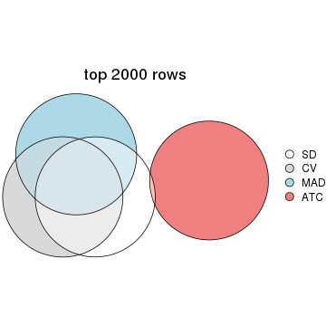
top_rows_overlap(res_list, top_n = 3000, method = "euler")
top_rows_overlap(res_list, top_n = 4000, method = "euler")
top_rows_overlap(res_list, top_n = 5000, method = "euler")
Also visualize the correspondance of rankings between different top-row methods:
top_rows_overlap(res_list, top_n = 1000, method = "correspondance")

top_rows_overlap(res_list, top_n = 2000, method = "correspondance")
top_rows_overlap(res_list, top_n = 3000, method = "correspondance")
top_rows_overlap(res_list, top_n = 4000, method = "correspondance")
top_rows_overlap(res_list, top_n = 5000, method = "correspondance")
Heatmaps of the top rows:
top_rows_heatmap(res_list, top_n = 1000)
top_rows_heatmap(res_list, top_n = 2000)
top_rows_heatmap(res_list, top_n = 3000)
top_rows_heatmap(res_list, top_n = 4000)
top_rows_heatmap(res_list, top_n = 5000)
Test correlation between subgroups and known annotations. If the known annotation is numeric, one-way ANOVA test is applied, and if the known annotation is discrete, chi-squared contingency table test is applied.
test_to_known_factors(res_list, k = 2)
#> n protocol(p) time(p) individual(p) k
#> SD:NMF 74 0.021340 0.04777 0.058155 2
#> CV:NMF 73 0.013671 0.02473 0.081893 2
#> MAD:NMF 73 0.000393 0.00118 0.052698 2
#> ATC:NMF 79 0.422092 0.37441 0.237008 2
#> SD:skmeans 72 0.001721 0.00172 0.054386 2
#> CV:skmeans 70 0.015155 0.01215 0.022327 2
#> MAD:skmeans 75 0.001446 0.00176 0.056516 2
#> ATC:skmeans 80 0.015327 0.17802 0.001594 2
#> SD:mclust 78 0.090502 0.42680 0.000101 2
#> CV:mclust 78 0.409169 0.46923 0.200343 2
#> MAD:mclust 70 0.402407 0.44525 0.003972 2
#> ATC:mclust 74 0.198733 0.19686 0.011638 2
#> SD:kmeans 80 0.434967 0.44390 0.258649 2
#> CV:kmeans 80 0.434967 0.44390 0.258649 2
#> MAD:kmeans 80 0.434967 0.44390 0.258649 2
#> ATC:kmeans 80 0.434967 0.44390 0.258649 2
#> SD:pam 80 0.253369 0.52747 0.446177 2
#> CV:pam 80 0.434967 0.44390 0.258649 2
#> MAD:pam 79 0.526092 0.64256 0.153342 2
#> ATC:pam 80 0.434967 0.44390 0.258649 2
#> SD:hclust 80 0.434967 0.44390 0.258649 2
#> CV:hclust 80 0.434967 0.44390 0.258649 2
#> MAD:hclust 80 0.434967 0.44390 0.258649 2
#> ATC:hclust 75 0.245177 0.50405 0.300892 2
test_to_known_factors(res_list, k = 3)
#> n protocol(p) time(p) individual(p) k
#> SD:NMF 70 0.001369 0.003259 0.001536 3
#> CV:NMF 75 0.066366 0.105055 0.001195 3
#> MAD:NMF 71 0.019099 0.061372 0.000243 3
#> ATC:NMF 76 0.224328 0.434938 0.018169 3
#> SD:skmeans 72 0.000123 0.000874 0.002814 3
#> CV:skmeans 49 0.004043 0.008962 0.092291 3
#> MAD:skmeans 61 0.000165 0.000727 0.007726 3
#> ATC:skmeans 76 0.004525 0.084674 0.000716 3
#> SD:mclust 61 0.011334 0.261050 0.000102 3
#> CV:mclust 65 0.137766 0.319731 0.144442 3
#> MAD:mclust 59 0.269985 0.655940 0.000341 3
#> ATC:mclust 80 0.685383 0.889326 0.010043 3
#> SD:kmeans 80 0.000386 0.001614 0.142114 3
#> CV:kmeans 76 0.002334 0.010054 0.090405 3
#> MAD:kmeans 76 0.000772 0.001464 0.180555 3
#> ATC:kmeans 75 0.054519 0.256480 0.177295 3
#> SD:pam 49 0.028911 0.147842 0.023939 3
#> CV:pam 63 0.137979 0.568592 0.037634 3
#> MAD:pam 57 0.309469 0.574745 0.002846 3
#> ATC:pam 72 0.211746 0.626200 0.035472 3
#> SD:hclust 80 0.270377 0.269088 0.069583 3
#> CV:hclust 77 0.259123 0.550003 0.422136 3
#> MAD:hclust 80 0.471243 0.170480 0.577522 3
#> ATC:hclust 79 0.249637 0.144750 0.180607 3
test_to_known_factors(res_list, k = 4)
#> n protocol(p) time(p) individual(p) k
#> SD:NMF 61 0.003551 0.02163 2.07e-05 4
#> CV:NMF 60 0.032922 0.10226 3.04e-02 4
#> MAD:NMF 46 0.114251 0.09458 2.22e-03 4
#> ATC:NMF 73 0.004983 0.03620 1.33e-02 4
#> SD:skmeans 34 0.479059 0.23142 2.13e-03 4
#> CV:skmeans 19 0.022113 0.07465 4.12e-01 4
#> MAD:skmeans 40 0.000129 0.00280 3.79e-04 4
#> ATC:skmeans 78 0.000125 0.00491 2.03e-06 4
#> SD:mclust 55 0.023685 0.21883 1.21e-04 4
#> CV:mclust 56 0.028566 0.02321 1.81e-01 4
#> MAD:mclust 60 0.046218 0.13547 2.96e-04 4
#> ATC:mclust 68 0.358693 0.52461 5.19e-05 4
#> SD:kmeans 76 0.000886 0.01003 2.41e-01 4
#> CV:kmeans 66 0.002552 0.01849 6.33e-02 4
#> MAD:kmeans 68 0.001049 0.01453 1.20e-01 4
#> ATC:kmeans 77 0.074378 0.09842 4.85e-02 4
#> SD:pam 53 0.075631 0.25849 5.34e-03 4
#> CV:pam 59 0.208712 0.69659 3.21e-02 4
#> MAD:pam 33 0.427019 0.70387 3.61e-02 4
#> ATC:pam 55 0.320963 0.30407 1.40e-02 4
#> SD:hclust 77 0.259123 0.55000 4.22e-01 4
#> CV:hclust 78 0.637508 0.73339 1.45e-01 4
#> MAD:hclust 78 0.637508 0.73339 1.45e-01 4
#> ATC:hclust 76 0.087693 0.09237 1.64e-01 4
test_to_known_factors(res_list, k = 5)
#> n protocol(p) time(p) individual(p) k
#> SD:NMF 57 4.47e-03 0.038110 6.29e-05 5
#> CV:NMF 26 9.65e-02 0.123932 1.19e-01 5
#> MAD:NMF 36 1.78e-01 0.221845 5.25e-03 5
#> ATC:NMF 56 8.10e-03 0.108797 1.79e-02 5
#> SD:skmeans 19 1.00e+00 0.153645 2.94e-02 5
#> CV:skmeans 14 NA NA NA 5
#> MAD:skmeans 29 2.59e-03 0.006380 2.63e-03 5
#> ATC:skmeans 77 5.90e-04 0.010193 6.86e-04 5
#> SD:mclust 68 4.49e-03 0.092522 2.95e-04 5
#> CV:mclust 29 3.53e-05 0.004757 9.98e-03 5
#> MAD:mclust 70 1.07e-03 0.035713 5.54e-04 5
#> ATC:mclust 75 2.80e-01 0.274342 4.61e-04 5
#> SD:kmeans 51 6.61e-02 0.044759 7.75e-02 5
#> CV:kmeans 67 1.47e-03 0.007192 7.72e-02 5
#> MAD:kmeans 61 1.84e-03 0.030626 2.16e-03 5
#> ATC:kmeans 80 2.70e-05 0.001419 1.78e-02 5
#> SD:pam 46 2.42e-02 0.127031 1.93e-02 5
#> CV:pam 55 1.04e-01 0.670871 4.76e-02 5
#> MAD:pam 33 1.46e-01 0.397099 1.56e-02 5
#> ATC:pam 77 2.00e-05 0.000823 1.01e-02 5
#> SD:hclust 77 2.59e-01 0.550003 4.22e-01 5
#> CV:hclust 76 2.52e-01 0.544801 3.71e-01 5
#> MAD:hclust 76 2.52e-01 0.544801 3.71e-01 5
#> ATC:hclust 76 1.29e-01 0.105632 6.71e-01 5
test_to_known_factors(res_list, k = 6)
#> n protocol(p) time(p) individual(p) k
#> SD:NMF 47 1.72e-02 0.231215 1.13e-05 6
#> CV:NMF 17 3.64e-02 0.150753 1.59e-01 6
#> MAD:NMF 12 7.29e-01 0.440773 2.10e-01 6
#> ATC:NMF 43 1.55e-01 0.410878 6.25e-03 6
#> SD:skmeans 13 NA NA NA 6
#> CV:skmeans 13 NA NA NA 6
#> MAD:skmeans 12 NA NA NA 6
#> ATC:skmeans 67 2.68e-03 0.006708 1.55e-02 6
#> SD:mclust 55 1.69e-03 0.076975 9.51e-04 6
#> CV:mclust 51 7.99e-03 0.082785 7.74e-03 6
#> MAD:mclust 65 3.04e-03 0.031366 8.61e-04 6
#> ATC:mclust 55 3.43e-01 0.214088 8.17e-04 6
#> SD:kmeans 66 2.25e-03 0.069671 5.35e-05 6
#> CV:kmeans 57 3.66e-04 0.013259 4.74e-02 6
#> MAD:kmeans 69 4.73e-03 0.034690 1.36e-04 6
#> ATC:kmeans 78 6.28e-05 0.001012 8.31e-03 6
#> SD:pam 49 3.57e-02 0.164704 1.56e-02 6
#> CV:pam 52 1.35e-01 0.605769 2.37e-02 6
#> MAD:pam 36 1.49e-01 0.470122 4.05e-03 6
#> ATC:pam 69 5.98e-06 0.000891 8.77e-03 6
#> SD:hclust 76 3.26e-01 0.661887 2.80e-01 6
#> CV:hclust 74 2.38e-01 0.537383 3.95e-01 6
#> MAD:hclust 57 4.82e-02 0.072582 6.65e-01 6
#> ATC:hclust 69 1.89e-01 0.127957 1.93e-01 6
The object with results only for a single top-value method and a single partition method can be extracted as:
res = res_list["SD", "hclust"]
# you can also extract it by
# res = res_list["SD:hclust"]
A summary of res and all the functions that can be applied to it:
res
#> A 'ConsensusPartition' object with k = 2, 3, 4, 5, 6.
#> On a matrix with 51941 rows and 80 columns.
#> Top rows (1000, 2000, 3000, 4000, 5000) are extracted by 'SD' method.
#> Subgroups are detected by 'hclust' method.
#> Performed in total 1250 partitions by row resampling.
#> Best k for subgroups seems to be 2.
#>
#> Following methods can be applied to this 'ConsensusPartition' object:
#> [1] "cola_report" "collect_classes" "collect_plots"
#> [4] "collect_stats" "colnames" "compare_signatures"
#> [7] "consensus_heatmap" "dimension_reduction" "functional_enrichment"
#> [10] "get_anno_col" "get_anno" "get_classes"
#> [13] "get_consensus" "get_matrix" "get_membership"
#> [16] "get_param" "get_signatures" "get_stats"
#> [19] "is_best_k" "is_stable_k" "membership_heatmap"
#> [22] "ncol" "nrow" "plot_ecdf"
#> [25] "rownames" "select_partition_number" "show"
#> [28] "suggest_best_k" "test_to_known_factors"
collect_plots() function collects all the plots made from res for all k (number of partitions)
into one single page to provide an easy and fast comparison between different k.
collect_plots(res)
The plots are:
k and the heatmap of
predicted classes for each k.k.k.k.All the plots in panels can be made by individual functions and they are plotted later in this section.
select_partition_number() produces several plots showing different
statistics for choosing “optimized” k. There are following statistics:
k;k, the area increased is defined as \(A_k - A_{k-1}\).The detailed explanations of these statistics can be found in the cola vignette.
Generally speaking, lower PAC score, higher mean silhouette score or higher
concordance corresponds to better partition. Rand index and Jaccard index
measure how similar the current partition is compared to partition with k-1.
If they are too similar, we won't accept k is better than k-1.
select_partition_number(res)
The numeric values for all these statistics can be obtained by get_stats().
get_stats(res)
#> k 1-PAC mean_silhouette concordance area_increased Rand Jaccard
#> 2 2 1.000 0.979 0.989 0.2049 0.778 0.778
#> 3 3 1.000 0.996 0.998 0.1315 0.993 0.991
#> 4 4 1.000 0.966 0.986 0.0126 0.999 0.999
#> 5 5 0.975 0.930 0.971 0.1020 1.000 1.000
#> 6 6 0.768 0.870 0.935 0.1023 0.998 0.997
suggest_best_k() suggests the best \(k\) based on these statistics. The rules are as follows:
NA.suggest_best_k(res)
#> [1] 2
Following shows the table of the partitions (You need to click the show/hide
code output link to see it). The membership matrix (columns with name p*)
is inferred by
clue::cl_consensus()
function with the SE method. Basically the value in the membership matrix
represents the probability to belong to a certain group. The finall class
label for an item is determined with the group with highest probability it
belongs to.
In get_classes() function, the entropy is calculated from the membership
matrix and the silhouette score is calculated from the consensus matrix.
cbind(get_classes(res, k = 2), get_membership(res, k = 2))
#> class entropy silhouette p1 p2
#> GSM753604 1 0.871 0.679 0.708 0.292
#> GSM753620 2 0.000 1.000 0.000 1.000
#> GSM753628 2 0.000 1.000 0.000 1.000
#> GSM753636 2 0.000 1.000 0.000 1.000
#> GSM753644 2 0.000 1.000 0.000 1.000
#> GSM753572 2 0.000 1.000 0.000 1.000
#> GSM753580 2 0.000 1.000 0.000 1.000
#> GSM753588 2 0.000 1.000 0.000 1.000
#> GSM753596 2 0.000 1.000 0.000 1.000
#> GSM753612 2 0.000 1.000 0.000 1.000
#> GSM753603 2 0.000 1.000 0.000 1.000
#> GSM753619 2 0.000 1.000 0.000 1.000
#> GSM753627 2 0.000 1.000 0.000 1.000
#> GSM753635 2 0.000 1.000 0.000 1.000
#> GSM753643 2 0.000 1.000 0.000 1.000
#> GSM753571 2 0.000 1.000 0.000 1.000
#> GSM753579 2 0.000 1.000 0.000 1.000
#> GSM753587 2 0.000 1.000 0.000 1.000
#> GSM753595 2 0.000 1.000 0.000 1.000
#> GSM753611 2 0.000 1.000 0.000 1.000
#> GSM753605 1 0.000 0.901 1.000 0.000
#> GSM753621 2 0.000 1.000 0.000 1.000
#> GSM753629 2 0.000 1.000 0.000 1.000
#> GSM753637 2 0.000 1.000 0.000 1.000
#> GSM753645 2 0.000 1.000 0.000 1.000
#> GSM753573 1 0.000 0.901 1.000 0.000
#> GSM753581 2 0.000 1.000 0.000 1.000
#> GSM753589 2 0.000 1.000 0.000 1.000
#> GSM753597 2 0.000 1.000 0.000 1.000
#> GSM753613 2 0.000 1.000 0.000 1.000
#> GSM753606 2 0.000 1.000 0.000 1.000
#> GSM753622 1 0.000 0.901 1.000 0.000
#> GSM753630 2 0.000 1.000 0.000 1.000
#> GSM753638 2 0.000 1.000 0.000 1.000
#> GSM753646 1 0.000 0.901 1.000 0.000
#> GSM753574 2 0.000 1.000 0.000 1.000
#> GSM753582 2 0.000 1.000 0.000 1.000
#> GSM753590 2 0.000 1.000 0.000 1.000
#> GSM753598 2 0.000 1.000 0.000 1.000
#> GSM753614 2 0.000 1.000 0.000 1.000
#> GSM753607 2 0.000 1.000 0.000 1.000
#> GSM753623 2 0.000 1.000 0.000 1.000
#> GSM753631 2 0.000 1.000 0.000 1.000
#> GSM753639 2 0.000 1.000 0.000 1.000
#> GSM753647 2 0.000 1.000 0.000 1.000
#> GSM753575 2 0.000 1.000 0.000 1.000
#> GSM753583 2 0.000 1.000 0.000 1.000
#> GSM753591 2 0.000 1.000 0.000 1.000
#> GSM753599 2 0.000 1.000 0.000 1.000
#> GSM753615 2 0.000 1.000 0.000 1.000
#> GSM753608 2 0.000 1.000 0.000 1.000
#> GSM753624 2 0.000 1.000 0.000 1.000
#> GSM753632 2 0.000 1.000 0.000 1.000
#> GSM753640 2 0.000 1.000 0.000 1.000
#> GSM753648 1 0.000 0.901 1.000 0.000
#> GSM753576 2 0.000 1.000 0.000 1.000
#> GSM753584 2 0.000 1.000 0.000 1.000
#> GSM753592 2 0.000 1.000 0.000 1.000
#> GSM753600 2 0.000 1.000 0.000 1.000
#> GSM753616 2 0.000 1.000 0.000 1.000
#> GSM753609 2 0.000 1.000 0.000 1.000
#> GSM753625 1 0.000 0.901 1.000 0.000
#> GSM753633 2 0.000 1.000 0.000 1.000
#> GSM753641 2 0.000 1.000 0.000 1.000
#> GSM753649 2 0.000 1.000 0.000 1.000
#> GSM753577 2 0.000 1.000 0.000 1.000
#> GSM753585 2 0.000 1.000 0.000 1.000
#> GSM753593 2 0.000 1.000 0.000 1.000
#> GSM753601 2 0.000 1.000 0.000 1.000
#> GSM753617 2 0.000 1.000 0.000 1.000
#> GSM753610 2 0.000 1.000 0.000 1.000
#> GSM753626 2 0.000 1.000 0.000 1.000
#> GSM753634 2 0.000 1.000 0.000 1.000
#> GSM753642 1 0.871 0.679 0.708 0.292
#> GSM753650 1 0.000 0.901 1.000 0.000
#> GSM753578 1 0.871 0.679 0.708 0.292
#> GSM753586 2 0.000 1.000 0.000 1.000
#> GSM753594 2 0.000 1.000 0.000 1.000
#> GSM753602 2 0.000 1.000 0.000 1.000
#> GSM753618 2 0.000 1.000 0.000 1.000
cbind(get_classes(res, k = 3), get_membership(res, k = 3))
#> class entropy silhouette p1 p2 p3
#> GSM753604 3 0.0000 1.000 0.00 0.000 1.000
#> GSM753620 2 0.0000 0.998 0.00 1.000 0.000
#> GSM753628 2 0.0000 0.998 0.00 1.000 0.000
#> GSM753636 2 0.0000 0.998 0.00 1.000 0.000
#> GSM753644 2 0.0000 0.998 0.00 1.000 0.000
#> GSM753572 2 0.0000 0.998 0.00 1.000 0.000
#> GSM753580 2 0.0000 0.998 0.00 1.000 0.000
#> GSM753588 2 0.0000 0.998 0.00 1.000 0.000
#> GSM753596 2 0.0000 0.998 0.00 1.000 0.000
#> GSM753612 2 0.0000 0.998 0.00 1.000 0.000
#> GSM753603 2 0.0000 0.998 0.00 1.000 0.000
#> GSM753619 2 0.0000 0.998 0.00 1.000 0.000
#> GSM753627 2 0.0000 0.998 0.00 1.000 0.000
#> GSM753635 2 0.0000 0.998 0.00 1.000 0.000
#> GSM753643 2 0.0000 0.998 0.00 1.000 0.000
#> GSM753571 2 0.0000 0.998 0.00 1.000 0.000
#> GSM753579 2 0.0000 0.998 0.00 1.000 0.000
#> GSM753587 2 0.0000 0.998 0.00 1.000 0.000
#> GSM753595 2 0.0000 0.998 0.00 1.000 0.000
#> GSM753611 2 0.0000 0.998 0.00 1.000 0.000
#> GSM753605 1 0.0000 0.997 1.00 0.000 0.000
#> GSM753621 2 0.1411 0.964 0.00 0.964 0.036
#> GSM753629 2 0.0000 0.998 0.00 1.000 0.000
#> GSM753637 2 0.0000 0.998 0.00 1.000 0.000
#> GSM753645 2 0.0000 0.998 0.00 1.000 0.000
#> GSM753573 1 0.0892 0.980 0.98 0.000 0.020
#> GSM753581 2 0.0000 0.998 0.00 1.000 0.000
#> GSM753589 2 0.0000 0.998 0.00 1.000 0.000
#> GSM753597 2 0.0000 0.998 0.00 1.000 0.000
#> GSM753613 2 0.0000 0.998 0.00 1.000 0.000
#> GSM753606 2 0.0000 0.998 0.00 1.000 0.000
#> GSM753622 1 0.0000 0.997 1.00 0.000 0.000
#> GSM753630 2 0.0000 0.998 0.00 1.000 0.000
#> GSM753638 2 0.0000 0.998 0.00 1.000 0.000
#> GSM753646 1 0.0000 0.997 1.00 0.000 0.000
#> GSM753574 2 0.0000 0.998 0.00 1.000 0.000
#> GSM753582 2 0.0000 0.998 0.00 1.000 0.000
#> GSM753590 2 0.0000 0.998 0.00 1.000 0.000
#> GSM753598 2 0.0000 0.998 0.00 1.000 0.000
#> GSM753614 2 0.0000 0.998 0.00 1.000 0.000
#> GSM753607 2 0.0000 0.998 0.00 1.000 0.000
#> GSM753623 2 0.0237 0.995 0.00 0.996 0.004
#> GSM753631 2 0.0000 0.998 0.00 1.000 0.000
#> GSM753639 2 0.0000 0.998 0.00 1.000 0.000
#> GSM753647 2 0.0237 0.995 0.00 0.996 0.004
#> GSM753575 2 0.0000 0.998 0.00 1.000 0.000
#> GSM753583 2 0.0000 0.998 0.00 1.000 0.000
#> GSM753591 2 0.0000 0.998 0.00 1.000 0.000
#> GSM753599 2 0.0000 0.998 0.00 1.000 0.000
#> GSM753615 2 0.0000 0.998 0.00 1.000 0.000
#> GSM753608 2 0.0237 0.995 0.00 0.996 0.004
#> GSM753624 2 0.0592 0.987 0.00 0.988 0.012
#> GSM753632 2 0.0000 0.998 0.00 1.000 0.000
#> GSM753640 2 0.0000 0.998 0.00 1.000 0.000
#> GSM753648 1 0.0000 0.997 1.00 0.000 0.000
#> GSM753576 2 0.0000 0.998 0.00 1.000 0.000
#> GSM753584 2 0.0000 0.998 0.00 1.000 0.000
#> GSM753592 2 0.0000 0.998 0.00 1.000 0.000
#> GSM753600 2 0.0000 0.998 0.00 1.000 0.000
#> GSM753616 2 0.0000 0.998 0.00 1.000 0.000
#> GSM753609 2 0.0000 0.998 0.00 1.000 0.000
#> GSM753625 1 0.0000 0.997 1.00 0.000 0.000
#> GSM753633 2 0.0000 0.998 0.00 1.000 0.000
#> GSM753641 2 0.0000 0.998 0.00 1.000 0.000
#> GSM753649 2 0.0747 0.984 0.00 0.984 0.016
#> GSM753577 2 0.0000 0.998 0.00 1.000 0.000
#> GSM753585 2 0.0000 0.998 0.00 1.000 0.000
#> GSM753593 2 0.0000 0.998 0.00 1.000 0.000
#> GSM753601 2 0.0000 0.998 0.00 1.000 0.000
#> GSM753617 2 0.0000 0.998 0.00 1.000 0.000
#> GSM753610 2 0.0000 0.998 0.00 1.000 0.000
#> GSM753626 2 0.2261 0.930 0.00 0.932 0.068
#> GSM753634 2 0.0000 0.998 0.00 1.000 0.000
#> GSM753642 3 0.0000 1.000 0.00 0.000 1.000
#> GSM753650 1 0.0000 0.997 1.00 0.000 0.000
#> GSM753578 3 0.0000 1.000 0.00 0.000 1.000
#> GSM753586 2 0.0237 0.995 0.00 0.996 0.004
#> GSM753594 2 0.0000 0.998 0.00 1.000 0.000
#> GSM753602 2 0.0000 0.998 0.00 1.000 0.000
#> GSM753618 2 0.0000 0.998 0.00 1.000 0.000
cbind(get_classes(res, k = 4), get_membership(res, k = 4))
#> class entropy silhouette p1 p2 p3 p4
#> GSM753604 4 0.4933 0.333 0.00 0.000 0.432 0.568
#> GSM753620 2 0.0000 0.996 0.00 1.000 0.000 0.000
#> GSM753628 2 0.0000 0.996 0.00 1.000 0.000 0.000
#> GSM753636 2 0.0000 0.996 0.00 1.000 0.000 0.000
#> GSM753644 2 0.0000 0.996 0.00 1.000 0.000 0.000
#> GSM753572 2 0.0000 0.996 0.00 1.000 0.000 0.000
#> GSM753580 2 0.0000 0.996 0.00 1.000 0.000 0.000
#> GSM753588 2 0.0000 0.996 0.00 1.000 0.000 0.000
#> GSM753596 2 0.0000 0.996 0.00 1.000 0.000 0.000
#> GSM753612 2 0.0188 0.994 0.00 0.996 0.004 0.000
#> GSM753603 2 0.0000 0.996 0.00 1.000 0.000 0.000
#> GSM753619 2 0.0000 0.996 0.00 1.000 0.000 0.000
#> GSM753627 2 0.0000 0.996 0.00 1.000 0.000 0.000
#> GSM753635 2 0.0000 0.996 0.00 1.000 0.000 0.000
#> GSM753643 2 0.0000 0.996 0.00 1.000 0.000 0.000
#> GSM753571 2 0.0000 0.996 0.00 1.000 0.000 0.000
#> GSM753579 2 0.0000 0.996 0.00 1.000 0.000 0.000
#> GSM753587 2 0.0000 0.996 0.00 1.000 0.000 0.000
#> GSM753595 2 0.0000 0.996 0.00 1.000 0.000 0.000
#> GSM753611 2 0.0188 0.995 0.00 0.996 0.004 0.000
#> GSM753605 1 0.0000 0.997 1.00 0.000 0.000 0.000
#> GSM753621 2 0.1724 0.951 0.00 0.948 0.032 0.020
#> GSM753629 2 0.0000 0.996 0.00 1.000 0.000 0.000
#> GSM753637 2 0.0000 0.996 0.00 1.000 0.000 0.000
#> GSM753645 2 0.0188 0.994 0.00 0.996 0.004 0.000
#> GSM753573 1 0.0707 0.980 0.98 0.000 0.020 0.000
#> GSM753581 2 0.0000 0.996 0.00 1.000 0.000 0.000
#> GSM753589 2 0.0000 0.996 0.00 1.000 0.000 0.000
#> GSM753597 2 0.0000 0.996 0.00 1.000 0.000 0.000
#> GSM753613 2 0.0188 0.995 0.00 0.996 0.004 0.000
#> GSM753606 2 0.0188 0.994 0.00 0.996 0.004 0.000
#> GSM753622 1 0.0000 0.997 1.00 0.000 0.000 0.000
#> GSM753630 2 0.0000 0.996 0.00 1.000 0.000 0.000
#> GSM753638 2 0.0000 0.996 0.00 1.000 0.000 0.000
#> GSM753646 1 0.0000 0.997 1.00 0.000 0.000 0.000
#> GSM753574 2 0.0000 0.996 0.00 1.000 0.000 0.000
#> GSM753582 2 0.0000 0.996 0.00 1.000 0.000 0.000
#> GSM753590 2 0.0000 0.996 0.00 1.000 0.000 0.000
#> GSM753598 2 0.0000 0.996 0.00 1.000 0.000 0.000
#> GSM753614 2 0.0188 0.995 0.00 0.996 0.004 0.000
#> GSM753607 2 0.0188 0.994 0.00 0.996 0.004 0.000
#> GSM753623 2 0.0376 0.992 0.00 0.992 0.004 0.004
#> GSM753631 2 0.0000 0.996 0.00 1.000 0.000 0.000
#> GSM753639 2 0.0000 0.996 0.00 1.000 0.000 0.000
#> GSM753647 2 0.0376 0.992 0.00 0.992 0.004 0.004
#> GSM753575 2 0.0000 0.996 0.00 1.000 0.000 0.000
#> GSM753583 2 0.0188 0.995 0.00 0.996 0.004 0.000
#> GSM753591 2 0.0000 0.996 0.00 1.000 0.000 0.000
#> GSM753599 2 0.0000 0.996 0.00 1.000 0.000 0.000
#> GSM753615 2 0.0188 0.995 0.00 0.996 0.004 0.000
#> GSM753608 2 0.0524 0.988 0.00 0.988 0.008 0.004
#> GSM753624 2 0.0804 0.982 0.00 0.980 0.008 0.012
#> GSM753632 2 0.0000 0.996 0.00 1.000 0.000 0.000
#> GSM753640 2 0.0000 0.996 0.00 1.000 0.000 0.000
#> GSM753648 1 0.0000 0.997 1.00 0.000 0.000 0.000
#> GSM753576 2 0.0188 0.995 0.00 0.996 0.004 0.000
#> GSM753584 2 0.0188 0.995 0.00 0.996 0.004 0.000
#> GSM753592 2 0.0188 0.995 0.00 0.996 0.004 0.000
#> GSM753600 2 0.0000 0.996 0.00 1.000 0.000 0.000
#> GSM753616 2 0.0000 0.996 0.00 1.000 0.000 0.000
#> GSM753609 2 0.0188 0.994 0.00 0.996 0.004 0.000
#> GSM753625 1 0.0000 0.997 1.00 0.000 0.000 0.000
#> GSM753633 2 0.0000 0.996 0.00 1.000 0.000 0.000
#> GSM753641 2 0.0000 0.996 0.00 1.000 0.000 0.000
#> GSM753649 2 0.0657 0.984 0.00 0.984 0.012 0.004
#> GSM753577 2 0.0188 0.995 0.00 0.996 0.004 0.000
#> GSM753585 2 0.0188 0.995 0.00 0.996 0.004 0.000
#> GSM753593 2 0.0000 0.996 0.00 1.000 0.000 0.000
#> GSM753601 2 0.0000 0.996 0.00 1.000 0.000 0.000
#> GSM753617 2 0.0188 0.995 0.00 0.996 0.004 0.000
#> GSM753610 2 0.0188 0.994 0.00 0.996 0.004 0.000
#> GSM753626 2 0.2483 0.916 0.00 0.916 0.052 0.032
#> GSM753634 2 0.0188 0.994 0.00 0.996 0.004 0.000
#> GSM753642 3 0.2216 0.000 0.00 0.000 0.908 0.092
#> GSM753650 1 0.0000 0.997 1.00 0.000 0.000 0.000
#> GSM753578 4 0.0000 0.482 0.00 0.000 0.000 1.000
#> GSM753586 2 0.0336 0.992 0.00 0.992 0.008 0.000
#> GSM753594 2 0.0000 0.996 0.00 1.000 0.000 0.000
#> GSM753602 2 0.0000 0.996 0.00 1.000 0.000 0.000
#> GSM753618 2 0.0188 0.995 0.00 0.996 0.004 0.000
cbind(get_classes(res, k = 5), get_membership(res, k = 5))
#> class entropy silhouette p1 p2 p3 p4 p5
#> GSM753604 4 0.0000 0.000 0.000 0.000 0.000 1.000 0.000
#> GSM753620 2 0.0000 0.979 0.000 1.000 0.000 0.000 0.000
#> GSM753628 2 0.0000 0.979 0.000 1.000 0.000 0.000 0.000
#> GSM753636 2 0.0000 0.979 0.000 1.000 0.000 0.000 0.000
#> GSM753644 2 0.0000 0.979 0.000 1.000 0.000 0.000 0.000
#> GSM753572 2 0.0000 0.979 0.000 1.000 0.000 0.000 0.000
#> GSM753580 2 0.0162 0.979 0.000 0.996 0.000 0.000 0.004
#> GSM753588 2 0.0000 0.979 0.000 1.000 0.000 0.000 0.000
#> GSM753596 2 0.0000 0.979 0.000 1.000 0.000 0.000 0.000
#> GSM753612 2 0.0451 0.977 0.000 0.988 0.004 0.000 0.008
#> GSM753603 2 0.0000 0.979 0.000 1.000 0.000 0.000 0.000
#> GSM753619 2 0.0404 0.976 0.000 0.988 0.012 0.000 0.000
#> GSM753627 2 0.0000 0.979 0.000 1.000 0.000 0.000 0.000
#> GSM753635 2 0.0000 0.979 0.000 1.000 0.000 0.000 0.000
#> GSM753643 2 0.0000 0.979 0.000 1.000 0.000 0.000 0.000
#> GSM753571 2 0.0000 0.979 0.000 1.000 0.000 0.000 0.000
#> GSM753579 2 0.0000 0.979 0.000 1.000 0.000 0.000 0.000
#> GSM753587 2 0.0000 0.979 0.000 1.000 0.000 0.000 0.000
#> GSM753595 2 0.0000 0.979 0.000 1.000 0.000 0.000 0.000
#> GSM753611 2 0.0798 0.975 0.000 0.976 0.016 0.000 0.008
#> GSM753605 1 0.1774 0.936 0.932 0.000 0.016 0.000 0.052
#> GSM753621 2 0.3365 0.859 0.000 0.836 0.120 0.000 0.044
#> GSM753629 2 0.0000 0.979 0.000 1.000 0.000 0.000 0.000
#> GSM753637 2 0.0000 0.979 0.000 1.000 0.000 0.000 0.000
#> GSM753645 2 0.1331 0.960 0.000 0.952 0.040 0.000 0.008
#> GSM753573 1 0.2843 0.874 0.876 0.000 0.048 0.000 0.076
#> GSM753581 2 0.0000 0.979 0.000 1.000 0.000 0.000 0.000
#> GSM753589 2 0.0000 0.979 0.000 1.000 0.000 0.000 0.000
#> GSM753597 2 0.0000 0.979 0.000 1.000 0.000 0.000 0.000
#> GSM753613 2 0.0162 0.979 0.000 0.996 0.004 0.000 0.000
#> GSM753606 2 0.0771 0.972 0.000 0.976 0.020 0.000 0.004
#> GSM753622 1 0.0162 0.961 0.996 0.000 0.000 0.000 0.004
#> GSM753630 2 0.0000 0.979 0.000 1.000 0.000 0.000 0.000
#> GSM753638 2 0.0000 0.979 0.000 1.000 0.000 0.000 0.000
#> GSM753646 1 0.0000 0.962 1.000 0.000 0.000 0.000 0.000
#> GSM753574 2 0.0162 0.979 0.000 0.996 0.004 0.000 0.000
#> GSM753582 2 0.0324 0.979 0.000 0.992 0.004 0.000 0.004
#> GSM753590 2 0.0404 0.978 0.000 0.988 0.000 0.000 0.012
#> GSM753598 2 0.0000 0.979 0.000 1.000 0.000 0.000 0.000
#> GSM753614 2 0.1216 0.969 0.000 0.960 0.020 0.000 0.020
#> GSM753607 2 0.1018 0.972 0.000 0.968 0.016 0.000 0.016
#> GSM753623 2 0.1211 0.969 0.000 0.960 0.024 0.000 0.016
#> GSM753631 2 0.0000 0.979 0.000 1.000 0.000 0.000 0.000
#> GSM753639 2 0.0162 0.979 0.000 0.996 0.004 0.000 0.000
#> GSM753647 2 0.1106 0.970 0.000 0.964 0.024 0.000 0.012
#> GSM753575 2 0.0912 0.974 0.000 0.972 0.012 0.000 0.016
#> GSM753583 2 0.1399 0.965 0.000 0.952 0.020 0.000 0.028
#> GSM753591 2 0.0798 0.975 0.000 0.976 0.008 0.000 0.016
#> GSM753599 2 0.0000 0.979 0.000 1.000 0.000 0.000 0.000
#> GSM753615 2 0.1300 0.967 0.000 0.956 0.016 0.000 0.028
#> GSM753608 2 0.1981 0.935 0.000 0.920 0.064 0.000 0.016
#> GSM753624 2 0.2074 0.944 0.000 0.920 0.044 0.000 0.036
#> GSM753632 2 0.0000 0.979 0.000 1.000 0.000 0.000 0.000
#> GSM753640 2 0.0162 0.979 0.000 0.996 0.004 0.000 0.000
#> GSM753648 1 0.1282 0.946 0.952 0.000 0.004 0.000 0.044
#> GSM753576 2 0.1300 0.967 0.000 0.956 0.016 0.000 0.028
#> GSM753584 2 0.1399 0.965 0.000 0.952 0.020 0.000 0.028
#> GSM753592 2 0.1399 0.965 0.000 0.952 0.020 0.000 0.028
#> GSM753600 2 0.0000 0.979 0.000 1.000 0.000 0.000 0.000
#> GSM753616 2 0.0912 0.974 0.000 0.972 0.012 0.000 0.016
#> GSM753609 2 0.1018 0.972 0.000 0.968 0.016 0.000 0.016
#> GSM753625 1 0.0000 0.962 1.000 0.000 0.000 0.000 0.000
#> GSM753633 2 0.0000 0.979 0.000 1.000 0.000 0.000 0.000
#> GSM753641 2 0.0579 0.977 0.000 0.984 0.008 0.000 0.008
#> GSM753649 2 0.2409 0.932 0.000 0.908 0.056 0.008 0.028
#> GSM753577 2 0.1300 0.967 0.000 0.956 0.016 0.000 0.028
#> GSM753585 2 0.1753 0.956 0.000 0.936 0.032 0.000 0.032
#> GSM753593 2 0.1668 0.959 0.000 0.940 0.028 0.000 0.032
#> GSM753601 2 0.0324 0.979 0.000 0.992 0.004 0.000 0.004
#> GSM753617 2 0.1399 0.965 0.000 0.952 0.020 0.000 0.028
#> GSM753610 2 0.1211 0.967 0.000 0.960 0.024 0.000 0.016
#> GSM753626 2 0.4127 0.810 0.000 0.796 0.144 0.016 0.044
#> GSM753634 2 0.0798 0.975 0.000 0.976 0.008 0.000 0.016
#> GSM753642 3 0.2773 0.000 0.000 0.000 0.836 0.164 0.000
#> GSM753650 1 0.0000 0.962 1.000 0.000 0.000 0.000 0.000
#> GSM753578 5 0.3183 0.000 0.000 0.000 0.016 0.156 0.828
#> GSM753586 2 0.1990 0.950 0.000 0.928 0.040 0.004 0.028
#> GSM753594 2 0.0566 0.977 0.000 0.984 0.004 0.000 0.012
#> GSM753602 2 0.0000 0.979 0.000 1.000 0.000 0.000 0.000
#> GSM753618 2 0.1211 0.969 0.000 0.960 0.016 0.000 0.024
cbind(get_classes(res, k = 6), get_membership(res, k = 6))
#> class entropy silhouette p1 p2 p3 p4 p5 p6
#> GSM753604 3 0.4709 -0.304 0.000 0.000 0.540 NA 0.412 0.048
#> GSM753620 2 0.0000 0.961 0.000 1.000 0.000 NA 0.000 0.000
#> GSM753628 2 0.0000 0.961 0.000 1.000 0.000 NA 0.000 0.000
#> GSM753636 2 0.0363 0.961 0.000 0.988 0.000 NA 0.000 0.000
#> GSM753644 2 0.0146 0.961 0.000 0.996 0.000 NA 0.000 0.000
#> GSM753572 2 0.0363 0.961 0.000 0.988 0.000 NA 0.000 0.000
#> GSM753580 2 0.0146 0.961 0.000 0.996 0.000 NA 0.000 0.000
#> GSM753588 2 0.0000 0.961 0.000 1.000 0.000 NA 0.000 0.000
#> GSM753596 2 0.0000 0.961 0.000 1.000 0.000 NA 0.000 0.000
#> GSM753612 2 0.0363 0.961 0.000 0.988 0.000 NA 0.000 0.000
#> GSM753603 2 0.0000 0.961 0.000 1.000 0.000 NA 0.000 0.000
#> GSM753619 2 0.0458 0.959 0.000 0.984 0.000 NA 0.000 0.000
#> GSM753627 2 0.0000 0.961 0.000 1.000 0.000 NA 0.000 0.000
#> GSM753635 2 0.0146 0.961 0.000 0.996 0.000 NA 0.000 0.000
#> GSM753643 2 0.0000 0.961 0.000 1.000 0.000 NA 0.000 0.000
#> GSM753571 2 0.0458 0.961 0.000 0.984 0.000 NA 0.000 0.000
#> GSM753579 2 0.0000 0.961 0.000 1.000 0.000 NA 0.000 0.000
#> GSM753587 2 0.0000 0.961 0.000 1.000 0.000 NA 0.000 0.000
#> GSM753595 2 0.0000 0.961 0.000 1.000 0.000 NA 0.000 0.000
#> GSM753611 2 0.1007 0.955 0.000 0.956 0.000 NA 0.000 0.000
#> GSM753605 1 0.1633 0.514 0.932 0.000 0.044 NA 0.000 0.000
#> GSM753621 2 0.3559 0.769 0.000 0.744 0.012 NA 0.004 0.000
#> GSM753629 2 0.0000 0.961 0.000 1.000 0.000 NA 0.000 0.000
#> GSM753637 2 0.0146 0.961 0.000 0.996 0.000 NA 0.000 0.000
#> GSM753645 2 0.1700 0.927 0.000 0.916 0.004 NA 0.000 0.000
#> GSM753573 3 0.6232 -0.317 0.212 0.000 0.392 NA 0.012 0.000
#> GSM753581 2 0.0000 0.961 0.000 1.000 0.000 NA 0.000 0.000
#> GSM753589 2 0.0000 0.961 0.000 1.000 0.000 NA 0.000 0.000
#> GSM753597 2 0.0000 0.961 0.000 1.000 0.000 NA 0.000 0.000
#> GSM753613 2 0.0146 0.962 0.000 0.996 0.000 NA 0.000 0.000
#> GSM753606 2 0.0865 0.953 0.000 0.964 0.000 NA 0.000 0.000
#> GSM753622 1 0.3620 0.774 0.648 0.000 0.352 NA 0.000 0.000
#> GSM753630 2 0.0000 0.961 0.000 1.000 0.000 NA 0.000 0.000
#> GSM753638 2 0.0363 0.962 0.000 0.988 0.000 NA 0.000 0.000
#> GSM753646 1 0.3547 0.785 0.668 0.000 0.332 NA 0.000 0.000
#> GSM753574 2 0.0547 0.961 0.000 0.980 0.000 NA 0.000 0.000
#> GSM753582 2 0.0260 0.962 0.000 0.992 0.000 NA 0.000 0.000
#> GSM753590 2 0.0713 0.959 0.000 0.972 0.000 NA 0.000 0.000
#> GSM753598 2 0.0000 0.961 0.000 1.000 0.000 NA 0.000 0.000
#> GSM753614 2 0.1556 0.939 0.000 0.920 0.000 NA 0.000 0.000
#> GSM753607 2 0.1075 0.953 0.000 0.952 0.000 NA 0.000 0.000
#> GSM753623 2 0.1387 0.947 0.000 0.932 0.000 NA 0.000 0.000
#> GSM753631 2 0.0000 0.961 0.000 1.000 0.000 NA 0.000 0.000
#> GSM753639 2 0.0547 0.961 0.000 0.980 0.000 NA 0.000 0.000
#> GSM753647 2 0.1327 0.949 0.000 0.936 0.000 NA 0.000 0.000
#> GSM753575 2 0.1267 0.950 0.000 0.940 0.000 NA 0.000 0.000
#> GSM753583 2 0.1910 0.924 0.000 0.892 0.000 NA 0.000 0.000
#> GSM753591 2 0.1007 0.955 0.000 0.956 0.000 NA 0.000 0.000
#> GSM753599 2 0.0000 0.961 0.000 1.000 0.000 NA 0.000 0.000
#> GSM753615 2 0.1387 0.946 0.000 0.932 0.000 NA 0.000 0.000
#> GSM753608 2 0.2191 0.899 0.000 0.876 0.004 NA 0.000 0.000
#> GSM753624 2 0.2146 0.917 0.000 0.880 0.004 NA 0.000 0.000
#> GSM753632 2 0.0000 0.961 0.000 1.000 0.000 NA 0.000 0.000
#> GSM753640 2 0.0547 0.961 0.000 0.980 0.000 NA 0.000 0.000
#> GSM753648 1 0.0363 0.571 0.988 0.000 0.000 NA 0.000 0.000
#> GSM753576 2 0.1610 0.938 0.000 0.916 0.000 NA 0.000 0.000
#> GSM753584 2 0.1863 0.926 0.000 0.896 0.000 NA 0.000 0.000
#> GSM753592 2 0.1814 0.928 0.000 0.900 0.000 NA 0.000 0.000
#> GSM753600 2 0.0000 0.961 0.000 1.000 0.000 NA 0.000 0.000
#> GSM753616 2 0.1141 0.953 0.000 0.948 0.000 NA 0.000 0.000
#> GSM753609 2 0.1007 0.953 0.000 0.956 0.000 NA 0.000 0.000
#> GSM753625 1 0.3563 0.785 0.664 0.000 0.336 NA 0.000 0.000
#> GSM753633 2 0.0000 0.961 0.000 1.000 0.000 NA 0.000 0.000
#> GSM753641 2 0.0865 0.959 0.000 0.964 0.000 NA 0.000 0.000
#> GSM753649 2 0.2655 0.884 0.000 0.848 0.004 NA 0.008 0.000
#> GSM753577 2 0.1765 0.931 0.000 0.904 0.000 NA 0.000 0.000
#> GSM753585 2 0.2520 0.888 0.000 0.844 0.004 NA 0.000 0.000
#> GSM753593 2 0.2482 0.891 0.000 0.848 0.004 NA 0.000 0.000
#> GSM753601 2 0.0632 0.960 0.000 0.976 0.000 NA 0.000 0.000
#> GSM753617 2 0.1863 0.926 0.000 0.896 0.000 NA 0.000 0.000
#> GSM753610 2 0.1152 0.953 0.000 0.952 0.004 NA 0.000 0.000
#> GSM753626 2 0.4193 0.691 0.000 0.688 0.028 NA 0.008 0.000
#> GSM753634 2 0.1204 0.951 0.000 0.944 0.000 NA 0.000 0.000
#> GSM753642 5 0.3409 0.000 0.000 0.000 0.000 NA 0.700 0.000
#> GSM753650 1 0.3563 0.784 0.664 0.000 0.336 NA 0.000 0.000
#> GSM753578 6 0.0000 0.000 0.000 0.000 0.000 NA 0.000 1.000
#> GSM753586 2 0.2402 0.897 0.000 0.856 0.004 NA 0.000 0.000
#> GSM753594 2 0.0865 0.957 0.000 0.964 0.000 NA 0.000 0.000
#> GSM753602 2 0.0000 0.961 0.000 1.000 0.000 NA 0.000 0.000
#> GSM753618 2 0.1556 0.940 0.000 0.920 0.000 NA 0.000 0.000
Heatmaps for the consensus matrix. It visualizes the probability of two samples to be in a same group.
consensus_heatmap(res, k = 2)

consensus_heatmap(res, k = 3)
consensus_heatmap(res, k = 4)
consensus_heatmap(res, k = 5)
consensus_heatmap(res, k = 6)
Heatmaps for the membership of samples in all partitions to see how consistent they are:
membership_heatmap(res, k = 2)
membership_heatmap(res, k = 3)
membership_heatmap(res, k = 4)
membership_heatmap(res, k = 5)
membership_heatmap(res, k = 6)
As soon as we have had the classes for columns, we can look for signatures which are significantly different between classes which can be candidate marks for certain classes. Following are the heatmaps for signatures.
Signature heatmaps where rows are scaled:
get_signatures(res, k = 2)

get_signatures(res, k = 3)
get_signatures(res, k = 4)
#> Error in mat[ceiling(1:nr/h_ratio), ceiling(1:nc/w_ratio), drop = FALSE]: subscript out of bounds

get_signatures(res, k = 5)
#> Error in mat[ceiling(1:nr/h_ratio), ceiling(1:nc/w_ratio), drop = FALSE]: subscript out of bounds

get_signatures(res, k = 6)
#> Error in mat[ceiling(1:nr/h_ratio), ceiling(1:nc/w_ratio), drop = FALSE]: subscript out of bounds

Signature heatmaps where rows are not scaled:
get_signatures(res, k = 2, scale_rows = FALSE)
get_signatures(res, k = 3, scale_rows = FALSE)
get_signatures(res, k = 4, scale_rows = FALSE)
get_signatures(res, k = 5, scale_rows = FALSE)
get_signatures(res, k = 6, scale_rows = FALSE)
Compare the overlap of signatures from different k:
compare_signatures(res)

get_signature() returns a data frame invisibly. TO get the list of signatures, the function
call should be assigned to a variable explicitly. In following code, if plot argument is set
to FALSE, no heatmap is plotted while only the differential analysis is performed.
# code only for demonstration
tb = get_signature(res, k = ..., plot = FALSE)
An example of the output of tb is:
#> which_row fdr mean_1 mean_2 scaled_mean_1 scaled_mean_2 km
#> 1 38 0.042760348 8.373488 9.131774 -0.5533452 0.5164555 1
#> 2 40 0.018707592 7.106213 8.469186 -0.6173731 0.5762149 1
#> 3 55 0.019134737 10.221463 11.207825 -0.6159697 0.5749050 1
#> 4 59 0.006059896 5.921854 7.869574 -0.6899429 0.6439467 1
#> 5 60 0.018055526 8.928898 10.211722 -0.6204761 0.5791110 1
#> 6 98 0.009384629 15.714769 14.887706 0.6635654 -0.6193277 2
...
The columns in tb are:
which_row: row indices corresponding to the input matrix.fdr: FDR for the differential test. mean_x: The mean value in group x.scaled_mean_x: The mean value in group x after rows are scaled.km: Row groups if k-means clustering is applied to rows.UMAP plot which shows how samples are separated.
dimension_reduction(res, k = 2, method = "UMAP")

dimension_reduction(res, k = 3, method = "UMAP")
dimension_reduction(res, k = 4, method = "UMAP")
dimension_reduction(res, k = 5, method = "UMAP")
dimension_reduction(res, k = 6, method = "UMAP")
Following heatmap shows how subgroups are split when increasing k:
collect_classes(res)
Test correlation between subgroups and known annotations. If the known annotation is numeric, one-way ANOVA test is applied, and if the known annotation is discrete, chi-squared contingency table test is applied.
test_to_known_factors(res)
#> n protocol(p) time(p) individual(p) k
#> SD:hclust 80 0.435 0.444 0.2586 2
#> SD:hclust 80 0.270 0.269 0.0696 3
#> SD:hclust 77 0.259 0.550 0.4221 4
#> SD:hclust 77 0.259 0.550 0.4221 5
#> SD:hclust 76 0.326 0.662 0.2799 6
If matrix rows can be associated to genes, consider to use GO_Enrichment(res,
...) to perform function enrichment for the signature genes.
The object with results only for a single top-value method and a single partition method can be extracted as:
res = res_list["SD", "kmeans"]
# you can also extract it by
# res = res_list["SD:kmeans"]
A summary of res and all the functions that can be applied to it:
res
#> A 'ConsensusPartition' object with k = 2, 3, 4, 5, 6.
#> On a matrix with 51941 rows and 80 columns.
#> Top rows (1000, 2000, 3000, 4000, 5000) are extracted by 'SD' method.
#> Subgroups are detected by 'kmeans' method.
#> Performed in total 1250 partitions by row resampling.
#> Best k for subgroups seems to be 2.
#>
#> Following methods can be applied to this 'ConsensusPartition' object:
#> [1] "cola_report" "collect_classes" "collect_plots"
#> [4] "collect_stats" "colnames" "compare_signatures"
#> [7] "consensus_heatmap" "dimension_reduction" "functional_enrichment"
#> [10] "get_anno_col" "get_anno" "get_classes"
#> [13] "get_consensus" "get_matrix" "get_membership"
#> [16] "get_param" "get_signatures" "get_stats"
#> [19] "is_best_k" "is_stable_k" "membership_heatmap"
#> [22] "ncol" "nrow" "plot_ecdf"
#> [25] "rownames" "select_partition_number" "show"
#> [28] "suggest_best_k" "test_to_known_factors"
collect_plots() function collects all the plots made from res for all k (number of partitions)
into one single page to provide an easy and fast comparison between different k.
collect_plots(res)
The plots are:
k and the heatmap of
predicted classes for each k.k.k.k.All the plots in panels can be made by individual functions and they are plotted later in this section.
select_partition_number() produces several plots showing different
statistics for choosing “optimized” k. There are following statistics:
k;k, the area increased is defined as \(A_k - A_{k-1}\).The detailed explanations of these statistics can be found in the cola vignette.
Generally speaking, lower PAC score, higher mean silhouette score or higher
concordance corresponds to better partition. Rand index and Jaccard index
measure how similar the current partition is compared to partition with k-1.
If they are too similar, we won't accept k is better than k-1.
select_partition_number(res)
The numeric values for all these statistics can be obtained by get_stats().
get_stats(res)
#> k 1-PAC mean_silhouette concordance area_increased Rand Jaccard
#> 2 2 1.000 1.000 1.000 0.2223 0.778 0.778
#> 3 3 0.700 0.950 0.957 1.4614 0.651 0.551
#> 4 4 0.679 0.863 0.901 0.1478 0.971 0.932
#> 5 5 0.645 0.550 0.763 0.1107 0.878 0.719
#> 6 6 0.635 0.641 0.738 0.0694 0.825 0.528
suggest_best_k() suggests the best \(k\) based on these statistics. The rules are as follows:
NA.suggest_best_k(res)
#> [1] 2
Following shows the table of the partitions (You need to click the show/hide
code output link to see it). The membership matrix (columns with name p*)
is inferred by
clue::cl_consensus()
function with the SE method. Basically the value in the membership matrix
represents the probability to belong to a certain group. The finall class
label for an item is determined with the group with highest probability it
belongs to.
In get_classes() function, the entropy is calculated from the membership
matrix and the silhouette score is calculated from the consensus matrix.
cbind(get_classes(res, k = 2), get_membership(res, k = 2))
#> class entropy silhouette p1 p2
#> GSM753604 1 0 1 1 0
#> GSM753620 2 0 1 0 1
#> GSM753628 2 0 1 0 1
#> GSM753636 2 0 1 0 1
#> GSM753644 2 0 1 0 1
#> GSM753572 2 0 1 0 1
#> GSM753580 2 0 1 0 1
#> GSM753588 2 0 1 0 1
#> GSM753596 2 0 1 0 1
#> GSM753612 2 0 1 0 1
#> GSM753603 2 0 1 0 1
#> GSM753619 2 0 1 0 1
#> GSM753627 2 0 1 0 1
#> GSM753635 2 0 1 0 1
#> GSM753643 2 0 1 0 1
#> GSM753571 2 0 1 0 1
#> GSM753579 2 0 1 0 1
#> GSM753587 2 0 1 0 1
#> GSM753595 2 0 1 0 1
#> GSM753611 2 0 1 0 1
#> GSM753605 1 0 1 1 0
#> GSM753621 2 0 1 0 1
#> GSM753629 2 0 1 0 1
#> GSM753637 2 0 1 0 1
#> GSM753645 2 0 1 0 1
#> GSM753573 1 0 1 1 0
#> GSM753581 2 0 1 0 1
#> GSM753589 2 0 1 0 1
#> GSM753597 2 0 1 0 1
#> GSM753613 2 0 1 0 1
#> GSM753606 2 0 1 0 1
#> GSM753622 1 0 1 1 0
#> GSM753630 2 0 1 0 1
#> GSM753638 2 0 1 0 1
#> GSM753646 1 0 1 1 0
#> GSM753574 2 0 1 0 1
#> GSM753582 2 0 1 0 1
#> GSM753590 2 0 1 0 1
#> GSM753598 2 0 1 0 1
#> GSM753614 2 0 1 0 1
#> GSM753607 2 0 1 0 1
#> GSM753623 2 0 1 0 1
#> GSM753631 2 0 1 0 1
#> GSM753639 2 0 1 0 1
#> GSM753647 2 0 1 0 1
#> GSM753575 2 0 1 0 1
#> GSM753583 2 0 1 0 1
#> GSM753591 2 0 1 0 1
#> GSM753599 2 0 1 0 1
#> GSM753615 2 0 1 0 1
#> GSM753608 2 0 1 0 1
#> GSM753624 2 0 1 0 1
#> GSM753632 2 0 1 0 1
#> GSM753640 2 0 1 0 1
#> GSM753648 1 0 1 1 0
#> GSM753576 2 0 1 0 1
#> GSM753584 2 0 1 0 1
#> GSM753592 2 0 1 0 1
#> GSM753600 2 0 1 0 1
#> GSM753616 2 0 1 0 1
#> GSM753609 2 0 1 0 1
#> GSM753625 1 0 1 1 0
#> GSM753633 2 0 1 0 1
#> GSM753641 2 0 1 0 1
#> GSM753649 2 0 1 0 1
#> GSM753577 2 0 1 0 1
#> GSM753585 2 0 1 0 1
#> GSM753593 2 0 1 0 1
#> GSM753601 2 0 1 0 1
#> GSM753617 2 0 1 0 1
#> GSM753610 2 0 1 0 1
#> GSM753626 2 0 1 0 1
#> GSM753634 2 0 1 0 1
#> GSM753642 1 0 1 1 0
#> GSM753650 1 0 1 1 0
#> GSM753578 1 0 1 1 0
#> GSM753586 2 0 1 0 1
#> GSM753594 2 0 1 0 1
#> GSM753602 2 0 1 0 1
#> GSM753618 2 0 1 0 1
cbind(get_classes(res, k = 3), get_membership(res, k = 3))
#> class entropy silhouette p1 p2 p3
#> GSM753604 1 0.3267 0.939 0.884 0.000 0.116
#> GSM753620 2 0.0000 0.980 0.000 1.000 0.000
#> GSM753628 2 0.0000 0.980 0.000 1.000 0.000
#> GSM753636 2 0.0000 0.980 0.000 1.000 0.000
#> GSM753644 2 0.0000 0.980 0.000 1.000 0.000
#> GSM753572 2 0.0000 0.980 0.000 1.000 0.000
#> GSM753580 2 0.0000 0.980 0.000 1.000 0.000
#> GSM753588 2 0.0000 0.980 0.000 1.000 0.000
#> GSM753596 2 0.0000 0.980 0.000 1.000 0.000
#> GSM753612 2 0.0237 0.977 0.000 0.996 0.004
#> GSM753603 2 0.0000 0.980 0.000 1.000 0.000
#> GSM753619 2 0.0000 0.980 0.000 1.000 0.000
#> GSM753627 2 0.0000 0.980 0.000 1.000 0.000
#> GSM753635 2 0.0000 0.980 0.000 1.000 0.000
#> GSM753643 2 0.0000 0.980 0.000 1.000 0.000
#> GSM753571 2 0.0000 0.980 0.000 1.000 0.000
#> GSM753579 2 0.0000 0.980 0.000 1.000 0.000
#> GSM753587 2 0.0000 0.980 0.000 1.000 0.000
#> GSM753595 2 0.0000 0.980 0.000 1.000 0.000
#> GSM753611 2 0.2356 0.912 0.000 0.928 0.072
#> GSM753605 1 0.0000 0.974 1.000 0.000 0.000
#> GSM753621 3 0.0592 0.863 0.000 0.012 0.988
#> GSM753629 2 0.0000 0.980 0.000 1.000 0.000
#> GSM753637 2 0.0000 0.980 0.000 1.000 0.000
#> GSM753645 2 0.0000 0.980 0.000 1.000 0.000
#> GSM753573 1 0.0000 0.974 1.000 0.000 0.000
#> GSM753581 2 0.0000 0.980 0.000 1.000 0.000
#> GSM753589 2 0.0000 0.980 0.000 1.000 0.000
#> GSM753597 2 0.0000 0.980 0.000 1.000 0.000
#> GSM753613 2 0.0000 0.980 0.000 1.000 0.000
#> GSM753606 2 0.1031 0.960 0.000 0.976 0.024
#> GSM753622 1 0.0000 0.974 1.000 0.000 0.000
#> GSM753630 2 0.0000 0.980 0.000 1.000 0.000
#> GSM753638 2 0.0000 0.980 0.000 1.000 0.000
#> GSM753646 1 0.0000 0.974 1.000 0.000 0.000
#> GSM753574 2 0.0000 0.980 0.000 1.000 0.000
#> GSM753582 2 0.0000 0.980 0.000 1.000 0.000
#> GSM753590 2 0.0000 0.980 0.000 1.000 0.000
#> GSM753598 2 0.0000 0.980 0.000 1.000 0.000
#> GSM753614 3 0.3267 0.954 0.000 0.116 0.884
#> GSM753607 3 0.3192 0.958 0.000 0.112 0.888
#> GSM753623 2 0.5254 0.609 0.000 0.736 0.264
#> GSM753631 2 0.0000 0.980 0.000 1.000 0.000
#> GSM753639 2 0.0000 0.980 0.000 1.000 0.000
#> GSM753647 2 0.5591 0.519 0.000 0.696 0.304
#> GSM753575 3 0.3267 0.955 0.000 0.116 0.884
#> GSM753583 3 0.3192 0.958 0.000 0.112 0.888
#> GSM753591 3 0.3192 0.958 0.000 0.112 0.888
#> GSM753599 2 0.0000 0.980 0.000 1.000 0.000
#> GSM753615 3 0.3192 0.958 0.000 0.112 0.888
#> GSM753608 3 0.0592 0.863 0.000 0.012 0.988
#> GSM753624 3 0.3038 0.954 0.000 0.104 0.896
#> GSM753632 2 0.0000 0.980 0.000 1.000 0.000
#> GSM753640 2 0.0892 0.964 0.000 0.980 0.020
#> GSM753648 1 0.0000 0.974 1.000 0.000 0.000
#> GSM753576 3 0.3192 0.958 0.000 0.112 0.888
#> GSM753584 3 0.3192 0.958 0.000 0.112 0.888
#> GSM753592 3 0.3192 0.958 0.000 0.112 0.888
#> GSM753600 2 0.0000 0.980 0.000 1.000 0.000
#> GSM753616 2 0.1411 0.949 0.000 0.964 0.036
#> GSM753609 3 0.3192 0.958 0.000 0.112 0.888
#> GSM753625 1 0.0000 0.974 1.000 0.000 0.000
#> GSM753633 2 0.0000 0.980 0.000 1.000 0.000
#> GSM753641 2 0.1860 0.933 0.000 0.948 0.052
#> GSM753649 3 0.0592 0.863 0.000 0.012 0.988
#> GSM753577 3 0.3192 0.958 0.000 0.112 0.888
#> GSM753585 3 0.3116 0.956 0.000 0.108 0.892
#> GSM753593 3 0.1529 0.895 0.000 0.040 0.960
#> GSM753601 2 0.1643 0.941 0.000 0.956 0.044
#> GSM753617 3 0.3192 0.958 0.000 0.112 0.888
#> GSM753610 3 0.3192 0.958 0.000 0.112 0.888
#> GSM753626 3 0.0000 0.845 0.000 0.000 1.000
#> GSM753634 3 0.4291 0.879 0.000 0.180 0.820
#> GSM753642 1 0.3267 0.939 0.884 0.000 0.116
#> GSM753650 1 0.0000 0.974 1.000 0.000 0.000
#> GSM753578 1 0.3267 0.939 0.884 0.000 0.116
#> GSM753586 3 0.2711 0.941 0.000 0.088 0.912
#> GSM753594 3 0.4235 0.883 0.000 0.176 0.824
#> GSM753602 2 0.0000 0.980 0.000 1.000 0.000
#> GSM753618 3 0.3192 0.958 0.000 0.112 0.888
cbind(get_classes(res, k = 4), get_membership(res, k = 4))
#> class entropy silhouette p1 p2 p3 p4
#> GSM753604 3 0.4222 0.497 0.272 0.000 0.728 0.000
#> GSM753620 2 0.1389 0.897 0.000 0.952 0.048 0.000
#> GSM753628 2 0.0707 0.906 0.000 0.980 0.020 0.000
#> GSM753636 2 0.2011 0.887 0.000 0.920 0.080 0.000
#> GSM753644 2 0.1716 0.894 0.000 0.936 0.064 0.000
#> GSM753572 2 0.2011 0.887 0.000 0.920 0.080 0.000
#> GSM753580 2 0.1118 0.907 0.000 0.964 0.036 0.000
#> GSM753588 2 0.2530 0.896 0.000 0.888 0.112 0.000
#> GSM753596 2 0.2704 0.891 0.000 0.876 0.124 0.000
#> GSM753612 2 0.3401 0.878 0.000 0.840 0.152 0.008
#> GSM753603 2 0.1022 0.907 0.000 0.968 0.032 0.000
#> GSM753619 2 0.1118 0.901 0.000 0.964 0.036 0.000
#> GSM753627 2 0.0336 0.905 0.000 0.992 0.008 0.000
#> GSM753635 2 0.1557 0.896 0.000 0.944 0.056 0.000
#> GSM753643 2 0.1389 0.897 0.000 0.952 0.048 0.000
#> GSM753571 2 0.1867 0.890 0.000 0.928 0.072 0.000
#> GSM753579 2 0.2647 0.892 0.000 0.880 0.120 0.000
#> GSM753587 2 0.2760 0.890 0.000 0.872 0.128 0.000
#> GSM753595 2 0.2647 0.892 0.000 0.880 0.120 0.000
#> GSM753611 2 0.5670 0.787 0.000 0.720 0.152 0.128
#> GSM753605 1 0.0188 0.998 0.996 0.000 0.000 0.004
#> GSM753621 3 0.4843 0.519 0.000 0.000 0.604 0.396
#> GSM753629 2 0.0336 0.905 0.000 0.992 0.008 0.000
#> GSM753637 2 0.1637 0.895 0.000 0.940 0.060 0.000
#> GSM753645 2 0.2281 0.882 0.000 0.904 0.096 0.000
#> GSM753573 1 0.0188 0.998 0.996 0.000 0.000 0.004
#> GSM753581 2 0.2589 0.894 0.000 0.884 0.116 0.000
#> GSM753589 2 0.3157 0.882 0.000 0.852 0.144 0.004
#> GSM753597 2 0.2704 0.893 0.000 0.876 0.124 0.000
#> GSM753613 2 0.2589 0.894 0.000 0.884 0.116 0.000
#> GSM753606 2 0.2714 0.892 0.000 0.884 0.112 0.004
#> GSM753622 1 0.0000 0.998 1.000 0.000 0.000 0.000
#> GSM753630 2 0.0469 0.905 0.000 0.988 0.012 0.000
#> GSM753638 2 0.1940 0.889 0.000 0.924 0.076 0.000
#> GSM753646 1 0.0000 0.998 1.000 0.000 0.000 0.000
#> GSM753574 2 0.2011 0.887 0.000 0.920 0.080 0.000
#> GSM753582 2 0.2831 0.893 0.000 0.876 0.120 0.004
#> GSM753590 2 0.3300 0.880 0.000 0.848 0.144 0.008
#> GSM753598 2 0.3300 0.880 0.000 0.848 0.144 0.008
#> GSM753614 4 0.2987 0.827 0.000 0.016 0.104 0.880
#> GSM753607 4 0.1743 0.912 0.000 0.004 0.056 0.940
#> GSM753623 2 0.4843 0.787 0.000 0.784 0.112 0.104
#> GSM753631 2 0.0469 0.906 0.000 0.988 0.012 0.000
#> GSM753639 2 0.2011 0.887 0.000 0.920 0.080 0.000
#> GSM753647 2 0.5361 0.735 0.000 0.744 0.108 0.148
#> GSM753575 4 0.2089 0.890 0.000 0.020 0.048 0.932
#> GSM753583 4 0.0376 0.925 0.000 0.004 0.004 0.992
#> GSM753591 4 0.1743 0.907 0.000 0.004 0.056 0.940
#> GSM753599 2 0.2921 0.885 0.000 0.860 0.140 0.000
#> GSM753615 4 0.1109 0.922 0.000 0.004 0.028 0.968
#> GSM753608 4 0.4477 0.400 0.000 0.000 0.312 0.688
#> GSM753624 4 0.1004 0.920 0.000 0.004 0.024 0.972
#> GSM753632 2 0.0336 0.906 0.000 0.992 0.008 0.000
#> GSM753640 2 0.3198 0.865 0.000 0.880 0.080 0.040
#> GSM753648 1 0.0188 0.998 0.996 0.000 0.000 0.004
#> GSM753576 4 0.1305 0.913 0.000 0.004 0.036 0.960
#> GSM753584 4 0.0524 0.926 0.000 0.004 0.008 0.988
#> GSM753592 4 0.0524 0.926 0.000 0.004 0.008 0.988
#> GSM753600 2 0.2469 0.896 0.000 0.892 0.108 0.000
#> GSM753616 2 0.5011 0.832 0.000 0.764 0.160 0.076
#> GSM753609 4 0.1902 0.911 0.000 0.004 0.064 0.932
#> GSM753625 1 0.0000 0.998 1.000 0.000 0.000 0.000
#> GSM753633 2 0.0707 0.907 0.000 0.980 0.020 0.000
#> GSM753641 2 0.4039 0.828 0.000 0.836 0.080 0.084
#> GSM753649 3 0.4790 0.544 0.000 0.000 0.620 0.380
#> GSM753577 4 0.0376 0.925 0.000 0.004 0.004 0.992
#> GSM753585 4 0.0376 0.925 0.000 0.004 0.004 0.992
#> GSM753593 4 0.0336 0.921 0.000 0.000 0.008 0.992
#> GSM753601 2 0.5056 0.830 0.000 0.760 0.164 0.076
#> GSM753617 4 0.0376 0.925 0.000 0.004 0.004 0.992
#> GSM753610 4 0.1661 0.914 0.000 0.004 0.052 0.944
#> GSM753626 3 0.4776 0.557 0.000 0.000 0.624 0.376
#> GSM753634 4 0.4055 0.766 0.000 0.108 0.060 0.832
#> GSM753642 3 0.4193 0.499 0.268 0.000 0.732 0.000
#> GSM753650 1 0.0000 0.998 1.000 0.000 0.000 0.000
#> GSM753578 3 0.4222 0.497 0.272 0.000 0.728 0.000
#> GSM753586 4 0.0376 0.925 0.000 0.004 0.004 0.992
#> GSM753594 4 0.3056 0.843 0.000 0.040 0.072 0.888
#> GSM753602 2 0.3300 0.880 0.000 0.848 0.144 0.008
#> GSM753618 4 0.1004 0.924 0.000 0.004 0.024 0.972
cbind(get_classes(res, k = 5), get_membership(res, k = 5))
#> class entropy silhouette p1 p2 p3 p4 p5
#> GSM753604 5 0.1282 0.9952 0.044 0.000 0.004 0.000 0.952
#> GSM753620 2 0.4313 0.7269 0.000 0.636 0.000 0.356 0.008
#> GSM753628 2 0.2930 0.7974 0.000 0.832 0.000 0.164 0.004
#> GSM753636 2 0.4249 0.6913 0.000 0.568 0.000 0.432 0.000
#> GSM753644 2 0.4299 0.7128 0.000 0.608 0.000 0.388 0.004
#> GSM753572 2 0.4249 0.6913 0.000 0.568 0.000 0.432 0.000
#> GSM753580 2 0.2286 0.8004 0.000 0.888 0.000 0.108 0.004
#> GSM753588 2 0.1569 0.7932 0.000 0.944 0.008 0.044 0.004
#> GSM753596 2 0.0833 0.7862 0.000 0.976 0.004 0.016 0.004
#> GSM753612 2 0.2067 0.7581 0.000 0.920 0.048 0.032 0.000
#> GSM753603 2 0.2921 0.7993 0.000 0.844 0.004 0.148 0.004
#> GSM753619 2 0.4235 0.7367 0.000 0.656 0.000 0.336 0.008
#> GSM753627 2 0.3086 0.7946 0.000 0.816 0.000 0.180 0.004
#> GSM753635 2 0.4299 0.7128 0.000 0.608 0.000 0.388 0.004
#> GSM753643 2 0.4264 0.7175 0.000 0.620 0.000 0.376 0.004
#> GSM753571 2 0.4242 0.6928 0.000 0.572 0.000 0.428 0.000
#> GSM753579 2 0.0404 0.7876 0.000 0.988 0.000 0.012 0.000
#> GSM753587 2 0.0671 0.7882 0.000 0.980 0.004 0.016 0.000
#> GSM753595 2 0.1095 0.7828 0.000 0.968 0.012 0.012 0.008
#> GSM753611 2 0.3981 0.6696 0.000 0.800 0.060 0.136 0.004
#> GSM753605 1 0.0404 0.9914 0.988 0.000 0.000 0.012 0.000
#> GSM753621 3 0.5204 -0.1548 0.000 0.000 0.580 0.052 0.368
#> GSM753629 2 0.3086 0.7946 0.000 0.816 0.000 0.180 0.004
#> GSM753637 2 0.4299 0.7128 0.000 0.608 0.000 0.388 0.004
#> GSM753645 4 0.6986 -0.2911 0.000 0.264 0.340 0.388 0.008
#> GSM753573 1 0.0290 0.9931 0.992 0.000 0.000 0.008 0.000
#> GSM753581 2 0.0451 0.7889 0.000 0.988 0.000 0.008 0.004
#> GSM753589 2 0.2053 0.7588 0.000 0.924 0.048 0.024 0.004
#> GSM753597 2 0.0981 0.7845 0.000 0.972 0.012 0.008 0.008
#> GSM753613 2 0.0854 0.7878 0.000 0.976 0.008 0.012 0.004
#> GSM753606 3 0.7361 -0.0985 0.000 0.260 0.416 0.292 0.032
#> GSM753622 1 0.0000 0.9948 1.000 0.000 0.000 0.000 0.000
#> GSM753630 2 0.3086 0.7946 0.000 0.816 0.000 0.180 0.004
#> GSM753638 2 0.4249 0.6924 0.000 0.568 0.000 0.432 0.000
#> GSM753646 1 0.0162 0.9947 0.996 0.000 0.000 0.004 0.000
#> GSM753574 2 0.4262 0.6904 0.000 0.560 0.000 0.440 0.000
#> GSM753582 2 0.1960 0.7820 0.000 0.928 0.020 0.048 0.004
#> GSM753590 2 0.2178 0.7586 0.000 0.920 0.048 0.024 0.008
#> GSM753598 2 0.2278 0.7600 0.000 0.916 0.044 0.032 0.008
#> GSM753614 4 0.5913 0.3034 0.000 0.112 0.364 0.524 0.000
#> GSM753607 3 0.5214 -0.3834 0.000 0.012 0.540 0.424 0.024
#> GSM753623 4 0.6207 -0.1899 0.000 0.140 0.400 0.460 0.000
#> GSM753631 2 0.3160 0.7955 0.000 0.808 0.000 0.188 0.004
#> GSM753639 2 0.4256 0.6906 0.000 0.564 0.000 0.436 0.000
#> GSM753647 4 0.6219 -0.1854 0.000 0.144 0.384 0.472 0.000
#> GSM753575 4 0.4582 0.3680 0.000 0.012 0.416 0.572 0.000
#> GSM753583 4 0.4305 0.4579 0.000 0.000 0.488 0.512 0.000
#> GSM753591 4 0.5157 0.3992 0.000 0.024 0.468 0.500 0.008
#> GSM753599 2 0.2116 0.7628 0.000 0.924 0.040 0.028 0.008
#> GSM753615 4 0.4273 0.4408 0.000 0.000 0.448 0.552 0.000
#> GSM753608 3 0.3455 0.1315 0.000 0.000 0.784 0.008 0.208
#> GSM753624 3 0.4305 -0.4662 0.000 0.000 0.512 0.488 0.000
#> GSM753632 2 0.3123 0.7952 0.000 0.812 0.000 0.184 0.004
#> GSM753640 2 0.4727 0.6633 0.000 0.532 0.016 0.452 0.000
#> GSM753648 1 0.0290 0.9931 0.992 0.000 0.000 0.008 0.000
#> GSM753576 4 0.4287 0.4183 0.000 0.000 0.460 0.540 0.000
#> GSM753584 4 0.4304 0.4583 0.000 0.000 0.484 0.516 0.000
#> GSM753592 4 0.4297 0.4538 0.000 0.000 0.472 0.528 0.000
#> GSM753600 2 0.1200 0.7911 0.000 0.964 0.008 0.016 0.012
#> GSM753616 2 0.3758 0.6959 0.000 0.816 0.052 0.128 0.004
#> GSM753609 3 0.5247 -0.3299 0.000 0.012 0.560 0.400 0.028
#> GSM753625 1 0.0162 0.9947 0.996 0.000 0.000 0.004 0.000
#> GSM753633 2 0.2930 0.7989 0.000 0.832 0.000 0.164 0.004
#> GSM753641 4 0.4830 -0.6543 0.000 0.488 0.020 0.492 0.000
#> GSM753649 3 0.5484 -0.1993 0.000 0.000 0.540 0.068 0.392
#> GSM753577 4 0.4304 0.4578 0.000 0.000 0.484 0.516 0.000
#> GSM753585 4 0.4305 0.4579 0.000 0.000 0.488 0.512 0.000
#> GSM753593 4 0.4305 0.4579 0.000 0.000 0.488 0.512 0.000
#> GSM753601 2 0.3669 0.7105 0.000 0.828 0.048 0.116 0.008
#> GSM753617 4 0.4305 0.4579 0.000 0.000 0.488 0.512 0.000
#> GSM753610 3 0.5229 -0.3341 0.000 0.012 0.568 0.392 0.028
#> GSM753626 3 0.4410 -0.2543 0.000 0.000 0.556 0.004 0.440
#> GSM753634 4 0.6273 0.2287 0.000 0.116 0.408 0.468 0.008
#> GSM753642 5 0.1408 0.9945 0.044 0.000 0.000 0.008 0.948
#> GSM753650 1 0.0162 0.9947 0.996 0.000 0.000 0.004 0.000
#> GSM753578 5 0.1121 0.9959 0.044 0.000 0.000 0.000 0.956
#> GSM753586 4 0.4304 0.4583 0.000 0.000 0.484 0.516 0.000
#> GSM753594 4 0.5693 0.3555 0.000 0.068 0.440 0.488 0.004
#> GSM753602 2 0.2278 0.7600 0.000 0.916 0.044 0.032 0.008
#> GSM753618 4 0.4294 0.4481 0.000 0.000 0.468 0.532 0.000
cbind(get_classes(res, k = 6), get_membership(res, k = 6))
#> class entropy silhouette p1 p2 p3 p4 p5 p6
#> GSM753604 3 0.1332 0.9594 0.028 0.000 0.952 0.000 0.008 0.012
#> GSM753620 5 0.3890 0.6897 0.000 0.400 0.000 0.000 0.596 0.004
#> GSM753628 2 0.3899 0.0349 0.000 0.592 0.000 0.000 0.404 0.004
#> GSM753636 5 0.3997 0.7968 0.000 0.288 0.004 0.000 0.688 0.020
#> GSM753644 5 0.3819 0.7341 0.000 0.372 0.000 0.000 0.624 0.004
#> GSM753572 5 0.3997 0.7968 0.000 0.288 0.004 0.000 0.688 0.020
#> GSM753580 2 0.3448 0.3942 0.000 0.716 0.000 0.000 0.280 0.004
#> GSM753588 2 0.1801 0.6841 0.000 0.924 0.000 0.004 0.056 0.016
#> GSM753596 2 0.1471 0.6860 0.000 0.932 0.000 0.000 0.064 0.004
#> GSM753612 2 0.1819 0.6570 0.000 0.932 0.004 0.008 0.024 0.032
#> GSM753603 2 0.3975 0.0629 0.000 0.600 0.000 0.000 0.392 0.008
#> GSM753619 5 0.4086 0.4683 0.000 0.464 0.000 0.000 0.528 0.008
#> GSM753627 2 0.4157 -0.1357 0.000 0.544 0.000 0.000 0.444 0.012
#> GSM753635 5 0.3830 0.7286 0.000 0.376 0.000 0.000 0.620 0.004
#> GSM753643 5 0.3841 0.7268 0.000 0.380 0.000 0.000 0.616 0.004
#> GSM753571 5 0.3954 0.7945 0.000 0.296 0.004 0.000 0.684 0.016
#> GSM753579 2 0.1556 0.6804 0.000 0.920 0.000 0.000 0.080 0.000
#> GSM753587 2 0.1588 0.6842 0.000 0.924 0.000 0.000 0.072 0.004
#> GSM753595 2 0.2342 0.6764 0.000 0.888 0.004 0.000 0.088 0.020
#> GSM753611 2 0.4160 0.5363 0.000 0.784 0.012 0.108 0.084 0.012
#> GSM753605 1 0.1418 0.9659 0.944 0.000 0.000 0.000 0.032 0.024
#> GSM753621 6 0.3833 0.5913 0.000 0.004 0.108 0.068 0.016 0.804
#> GSM753629 2 0.4136 -0.0795 0.000 0.560 0.000 0.000 0.428 0.012
#> GSM753637 5 0.3830 0.7329 0.000 0.376 0.000 0.000 0.620 0.004
#> GSM753645 6 0.5158 0.4463 0.000 0.084 0.004 0.000 0.356 0.556
#> GSM753573 1 0.1218 0.9693 0.956 0.000 0.004 0.000 0.028 0.012
#> GSM753581 2 0.1714 0.6819 0.000 0.908 0.000 0.000 0.092 0.000
#> GSM753589 2 0.0520 0.6789 0.000 0.984 0.000 0.000 0.008 0.008
#> GSM753597 2 0.2476 0.6740 0.000 0.880 0.004 0.000 0.092 0.024
#> GSM753613 2 0.2398 0.6717 0.000 0.876 0.000 0.000 0.104 0.020
#> GSM753606 6 0.4940 0.4954 0.000 0.144 0.004 0.004 0.168 0.680
#> GSM753622 1 0.0146 0.9785 0.996 0.000 0.000 0.000 0.000 0.004
#> GSM753630 2 0.4136 -0.0628 0.000 0.560 0.000 0.000 0.428 0.012
#> GSM753638 5 0.3997 0.7967 0.000 0.288 0.004 0.000 0.688 0.020
#> GSM753646 1 0.0000 0.9783 1.000 0.000 0.000 0.000 0.000 0.000
#> GSM753574 5 0.3977 0.7957 0.000 0.284 0.004 0.000 0.692 0.020
#> GSM753582 2 0.2039 0.6667 0.000 0.908 0.000 0.004 0.072 0.016
#> GSM753590 2 0.1116 0.6732 0.000 0.960 0.000 0.004 0.008 0.028
#> GSM753598 2 0.1788 0.6638 0.000 0.928 0.004 0.004 0.012 0.052
#> GSM753614 4 0.4522 0.6802 0.000 0.216 0.012 0.720 0.028 0.024
#> GSM753607 4 0.5615 0.7100 0.000 0.092 0.008 0.676 0.084 0.140
#> GSM753623 6 0.4731 0.4699 0.000 0.016 0.004 0.016 0.412 0.552
#> GSM753631 2 0.4072 -0.1101 0.000 0.544 0.000 0.000 0.448 0.008
#> GSM753639 5 0.3957 0.7930 0.000 0.280 0.004 0.000 0.696 0.020
#> GSM753647 5 0.5193 -0.4108 0.000 0.032 0.004 0.024 0.492 0.448
#> GSM753575 4 0.3826 0.7656 0.000 0.012 0.004 0.796 0.132 0.056
#> GSM753583 4 0.1124 0.8401 0.000 0.000 0.000 0.956 0.036 0.008
#> GSM753591 4 0.3994 0.8034 0.000 0.104 0.008 0.804 0.044 0.040
#> GSM753599 2 0.1268 0.6762 0.000 0.952 0.004 0.000 0.008 0.036
#> GSM753615 4 0.2208 0.8394 0.000 0.008 0.012 0.912 0.052 0.016
#> GSM753608 6 0.4515 0.5043 0.000 0.004 0.060 0.076 0.092 0.768
#> GSM753624 4 0.2404 0.8231 0.000 0.000 0.000 0.884 0.036 0.080
#> GSM753632 2 0.4083 -0.1559 0.000 0.532 0.000 0.000 0.460 0.008
#> GSM753640 5 0.4391 0.7630 0.000 0.252 0.004 0.024 0.700 0.020
#> GSM753648 1 0.1421 0.9673 0.944 0.000 0.000 0.000 0.028 0.028
#> GSM753576 4 0.2796 0.8062 0.000 0.000 0.008 0.868 0.080 0.044
#> GSM753584 4 0.1718 0.8408 0.000 0.000 0.008 0.932 0.044 0.016
#> GSM753592 4 0.0810 0.8450 0.000 0.008 0.004 0.976 0.004 0.008
#> GSM753600 2 0.2804 0.6549 0.000 0.852 0.004 0.000 0.120 0.024
#> GSM753616 2 0.3824 0.5680 0.000 0.824 0.012 0.048 0.072 0.044
#> GSM753609 4 0.6423 0.6058 0.000 0.104 0.008 0.576 0.100 0.212
#> GSM753625 1 0.0146 0.9784 0.996 0.000 0.000 0.000 0.000 0.004
#> GSM753633 2 0.4109 0.0110 0.000 0.576 0.000 0.000 0.412 0.012
#> GSM753641 5 0.4657 0.7147 0.000 0.248 0.004 0.036 0.688 0.024
#> GSM753649 6 0.4231 0.5771 0.000 0.004 0.136 0.076 0.016 0.768
#> GSM753577 4 0.1148 0.8426 0.000 0.000 0.004 0.960 0.016 0.020
#> GSM753585 4 0.1124 0.8410 0.000 0.000 0.000 0.956 0.036 0.008
#> GSM753593 4 0.1297 0.8392 0.000 0.000 0.000 0.948 0.040 0.012
#> GSM753601 2 0.3702 0.5770 0.000 0.828 0.012 0.028 0.084 0.048
#> GSM753617 4 0.1307 0.8415 0.000 0.000 0.008 0.952 0.032 0.008
#> GSM753610 4 0.6174 0.6288 0.000 0.088 0.008 0.604 0.096 0.204
#> GSM753626 6 0.3728 0.5692 0.000 0.000 0.140 0.068 0.004 0.788
#> GSM753634 4 0.5633 0.6286 0.000 0.196 0.000 0.640 0.104 0.060
#> GSM753642 3 0.2084 0.9464 0.024 0.000 0.916 0.000 0.044 0.016
#> GSM753650 1 0.0146 0.9784 0.996 0.000 0.000 0.000 0.000 0.004
#> GSM753578 3 0.1829 0.9546 0.028 0.000 0.928 0.000 0.036 0.008
#> GSM753586 4 0.1850 0.8412 0.000 0.000 0.008 0.924 0.052 0.016
#> GSM753594 4 0.4376 0.7614 0.000 0.164 0.008 0.756 0.044 0.028
#> GSM753602 2 0.2017 0.6567 0.000 0.920 0.008 0.004 0.020 0.048
#> GSM753618 4 0.1635 0.8447 0.000 0.012 0.012 0.944 0.016 0.016
Heatmaps for the consensus matrix. It visualizes the probability of two samples to be in a same group.
consensus_heatmap(res, k = 2)

consensus_heatmap(res, k = 3)
consensus_heatmap(res, k = 4)
consensus_heatmap(res, k = 5)

consensus_heatmap(res, k = 6)
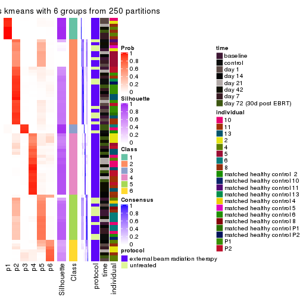
Heatmaps for the membership of samples in all partitions to see how consistent they are:
membership_heatmap(res, k = 2)
membership_heatmap(res, k = 3)
membership_heatmap(res, k = 4)
membership_heatmap(res, k = 5)
membership_heatmap(res, k = 6)
As soon as we have had the classes for columns, we can look for signatures which are significantly different between classes which can be candidate marks for certain classes. Following are the heatmaps for signatures.
Signature heatmaps where rows are scaled:
get_signatures(res, k = 2)

get_signatures(res, k = 3)
get_signatures(res, k = 4)
#> Error in mat[ceiling(1:nr/h_ratio), ceiling(1:nc/w_ratio), drop = FALSE]: subscript out of bounds

get_signatures(res, k = 5)
#> Error in mat[ceiling(1:nr/h_ratio), ceiling(1:nc/w_ratio), drop = FALSE]: subscript out of bounds

get_signatures(res, k = 6)
#> Error: The width or height of the raster image is zero, maybe you forget to turn off the
#> previous graphic device or it was corrupted. Run `dev.off()` to close it.

Signature heatmaps where rows are not scaled:
get_signatures(res, k = 2, scale_rows = FALSE)

get_signatures(res, k = 3, scale_rows = FALSE)
get_signatures(res, k = 4, scale_rows = FALSE)
get_signatures(res, k = 5, scale_rows = FALSE)
get_signatures(res, k = 6, scale_rows = FALSE)
Compare the overlap of signatures from different k:
compare_signatures(res)
get_signature() returns a data frame invisibly. TO get the list of signatures, the function
call should be assigned to a variable explicitly. In following code, if plot argument is set
to FALSE, no heatmap is plotted while only the differential analysis is performed.
# code only for demonstration
tb = get_signature(res, k = ..., plot = FALSE)
An example of the output of tb is:
#> which_row fdr mean_1 mean_2 scaled_mean_1 scaled_mean_2 km
#> 1 38 0.042760348 8.373488 9.131774 -0.5533452 0.5164555 1
#> 2 40 0.018707592 7.106213 8.469186 -0.6173731 0.5762149 1
#> 3 55 0.019134737 10.221463 11.207825 -0.6159697 0.5749050 1
#> 4 59 0.006059896 5.921854 7.869574 -0.6899429 0.6439467 1
#> 5 60 0.018055526 8.928898 10.211722 -0.6204761 0.5791110 1
#> 6 98 0.009384629 15.714769 14.887706 0.6635654 -0.6193277 2
...
The columns in tb are:
which_row: row indices corresponding to the input matrix.fdr: FDR for the differential test. mean_x: The mean value in group x.scaled_mean_x: The mean value in group x after rows are scaled.km: Row groups if k-means clustering is applied to rows.UMAP plot which shows how samples are separated.
dimension_reduction(res, k = 2, method = "UMAP")
dimension_reduction(res, k = 3, method = "UMAP")
dimension_reduction(res, k = 4, method = "UMAP")
dimension_reduction(res, k = 5, method = "UMAP")
dimension_reduction(res, k = 6, method = "UMAP")
Following heatmap shows how subgroups are split when increasing k:
collect_classes(res)

Test correlation between subgroups and known annotations. If the known annotation is numeric, one-way ANOVA test is applied, and if the known annotation is discrete, chi-squared contingency table test is applied.
test_to_known_factors(res)
#> n protocol(p) time(p) individual(p) k
#> SD:kmeans 80 0.434967 0.44390 2.59e-01 2
#> SD:kmeans 80 0.000386 0.00161 1.42e-01 3
#> SD:kmeans 76 0.000886 0.01003 2.41e-01 4
#> SD:kmeans 51 0.066104 0.04476 7.75e-02 5
#> SD:kmeans 66 0.002249 0.06967 5.35e-05 6
If matrix rows can be associated to genes, consider to use GO_Enrichment(res,
...) to perform function enrichment for the signature genes.
The object with results only for a single top-value method and a single partition method can be extracted as:
res = res_list["SD", "skmeans"]
# you can also extract it by
# res = res_list["SD:skmeans"]
A summary of res and all the functions that can be applied to it:
res
#> A 'ConsensusPartition' object with k = 2, 3, 4, 5, 6.
#> On a matrix with 51941 rows and 80 columns.
#> Top rows (1000, 2000, 3000, 4000, 5000) are extracted by 'SD' method.
#> Subgroups are detected by 'skmeans' method.
#> Performed in total 1250 partitions by row resampling.
#> Best k for subgroups seems to be 2.
#>
#> Following methods can be applied to this 'ConsensusPartition' object:
#> [1] "cola_report" "collect_classes" "collect_plots"
#> [4] "collect_stats" "colnames" "compare_signatures"
#> [7] "consensus_heatmap" "dimension_reduction" "functional_enrichment"
#> [10] "get_anno_col" "get_anno" "get_classes"
#> [13] "get_consensus" "get_matrix" "get_membership"
#> [16] "get_param" "get_signatures" "get_stats"
#> [19] "is_best_k" "is_stable_k" "membership_heatmap"
#> [22] "ncol" "nrow" "plot_ecdf"
#> [25] "rownames" "select_partition_number" "show"
#> [28] "suggest_best_k" "test_to_known_factors"
collect_plots() function collects all the plots made from res for all k (number of partitions)
into one single page to provide an easy and fast comparison between different k.
collect_plots(res)
The plots are:
k and the heatmap of
predicted classes for each k.k.k.k.All the plots in panels can be made by individual functions and they are plotted later in this section.
select_partition_number() produces several plots showing different
statistics for choosing “optimized” k. There are following statistics:
k;k, the area increased is defined as \(A_k - A_{k-1}\).The detailed explanations of these statistics can be found in the cola vignette.
Generally speaking, lower PAC score, higher mean silhouette score or higher
concordance corresponds to better partition. Rand index and Jaccard index
measure how similar the current partition is compared to partition with k-1.
If they are too similar, we won't accept k is better than k-1.
select_partition_number(res)
The numeric values for all these statistics can be obtained by get_stats().
get_stats(res)
#> k 1-PAC mean_silhouette concordance area_increased Rand Jaccard
#> 2 2 0.753 0.868 0.946 0.4760 0.519 0.519
#> 3 3 0.606 0.782 0.889 0.3279 0.810 0.654
#> 4 4 0.454 0.475 0.698 0.1642 0.865 0.671
#> 5 5 0.472 0.364 0.614 0.0727 0.829 0.528
#> 6 6 0.512 0.319 0.579 0.0428 0.870 0.572
suggest_best_k() suggests the best \(k\) based on these statistics. The rules are as follows:
NA.suggest_best_k(res)
#> [1] 2
Following shows the table of the partitions (You need to click the show/hide
code output link to see it). The membership matrix (columns with name p*)
is inferred by
clue::cl_consensus()
function with the SE method. Basically the value in the membership matrix
represents the probability to belong to a certain group. The finall class
label for an item is determined with the group with highest probability it
belongs to.
In get_classes() function, the entropy is calculated from the membership
matrix and the silhouette score is calculated from the consensus matrix.
cbind(get_classes(res, k = 2), get_membership(res, k = 2))
#> class entropy silhouette p1 p2
#> GSM753604 1 0.0000 0.9136 1.000 0.000
#> GSM753620 2 0.0000 0.9585 0.000 1.000
#> GSM753628 2 0.0000 0.9585 0.000 1.000
#> GSM753636 2 0.0000 0.9585 0.000 1.000
#> GSM753644 2 0.0000 0.9585 0.000 1.000
#> GSM753572 2 0.0000 0.9585 0.000 1.000
#> GSM753580 2 0.0000 0.9585 0.000 1.000
#> GSM753588 2 0.0000 0.9585 0.000 1.000
#> GSM753596 2 0.0000 0.9585 0.000 1.000
#> GSM753612 2 0.6048 0.8064 0.148 0.852
#> GSM753603 2 0.0000 0.9585 0.000 1.000
#> GSM753619 2 0.0000 0.9585 0.000 1.000
#> GSM753627 2 0.0000 0.9585 0.000 1.000
#> GSM753635 2 0.0000 0.9585 0.000 1.000
#> GSM753643 2 0.0000 0.9585 0.000 1.000
#> GSM753571 2 0.0000 0.9585 0.000 1.000
#> GSM753579 2 0.0000 0.9585 0.000 1.000
#> GSM753587 2 0.0000 0.9585 0.000 1.000
#> GSM753595 2 0.0000 0.9585 0.000 1.000
#> GSM753611 2 0.0000 0.9585 0.000 1.000
#> GSM753605 1 0.0000 0.9136 1.000 0.000
#> GSM753621 1 0.0000 0.9136 1.000 0.000
#> GSM753629 2 0.0000 0.9585 0.000 1.000
#> GSM753637 2 0.0000 0.9585 0.000 1.000
#> GSM753645 2 0.3114 0.9102 0.056 0.944
#> GSM753573 1 0.0000 0.9136 1.000 0.000
#> GSM753581 2 0.0000 0.9585 0.000 1.000
#> GSM753589 2 0.0000 0.9585 0.000 1.000
#> GSM753597 2 0.0000 0.9585 0.000 1.000
#> GSM753613 2 0.0000 0.9585 0.000 1.000
#> GSM753606 2 0.9988 -0.0190 0.480 0.520
#> GSM753622 1 0.0000 0.9136 1.000 0.000
#> GSM753630 2 0.0000 0.9585 0.000 1.000
#> GSM753638 2 0.0000 0.9585 0.000 1.000
#> GSM753646 1 0.0000 0.9136 1.000 0.000
#> GSM753574 2 0.0000 0.9585 0.000 1.000
#> GSM753582 2 0.0000 0.9585 0.000 1.000
#> GSM753590 2 0.0000 0.9585 0.000 1.000
#> GSM753598 2 0.0000 0.9585 0.000 1.000
#> GSM753614 2 0.2778 0.9166 0.048 0.952
#> GSM753607 1 0.9580 0.4543 0.620 0.380
#> GSM753623 1 0.9866 0.2653 0.568 0.432
#> GSM753631 2 0.0000 0.9585 0.000 1.000
#> GSM753639 2 0.0000 0.9585 0.000 1.000
#> GSM753647 2 0.9580 0.3499 0.380 0.620
#> GSM753575 2 0.5737 0.8152 0.136 0.864
#> GSM753583 1 0.0376 0.9122 0.996 0.004
#> GSM753591 1 0.9710 0.4064 0.600 0.400
#> GSM753599 2 0.0000 0.9585 0.000 1.000
#> GSM753615 1 0.9580 0.4564 0.620 0.380
#> GSM753608 1 0.0000 0.9136 1.000 0.000
#> GSM753624 1 0.0000 0.9136 1.000 0.000
#> GSM753632 2 0.0000 0.9585 0.000 1.000
#> GSM753640 2 0.0000 0.9585 0.000 1.000
#> GSM753648 1 0.0000 0.9136 1.000 0.000
#> GSM753576 1 0.2423 0.8942 0.960 0.040
#> GSM753584 1 0.6438 0.7888 0.836 0.164
#> GSM753592 1 0.4690 0.8518 0.900 0.100
#> GSM753600 2 0.0000 0.9585 0.000 1.000
#> GSM753616 2 0.0000 0.9585 0.000 1.000
#> GSM753609 2 0.9944 0.0753 0.456 0.544
#> GSM753625 1 0.0000 0.9136 1.000 0.000
#> GSM753633 2 0.0000 0.9585 0.000 1.000
#> GSM753641 2 0.0376 0.9552 0.004 0.996
#> GSM753649 1 0.0000 0.9136 1.000 0.000
#> GSM753577 1 0.3114 0.8835 0.944 0.056
#> GSM753585 1 0.0376 0.9122 0.996 0.004
#> GSM753593 1 0.0000 0.9136 1.000 0.000
#> GSM753601 2 0.0000 0.9585 0.000 1.000
#> GSM753617 1 0.0000 0.9136 1.000 0.000
#> GSM753610 1 0.0376 0.9122 0.996 0.004
#> GSM753626 1 0.0000 0.9136 1.000 0.000
#> GSM753634 2 0.5059 0.8463 0.112 0.888
#> GSM753642 1 0.0000 0.9136 1.000 0.000
#> GSM753650 1 0.0000 0.9136 1.000 0.000
#> GSM753578 1 0.0000 0.9136 1.000 0.000
#> GSM753586 1 0.0000 0.9136 1.000 0.000
#> GSM753594 1 0.9661 0.4283 0.608 0.392
#> GSM753602 2 0.0000 0.9585 0.000 1.000
#> GSM753618 1 0.5178 0.8387 0.884 0.116
cbind(get_classes(res, k = 3), get_membership(res, k = 3))
#> class entropy silhouette p1 p2 p3
#> GSM753604 1 0.0000 0.8935 1.000 0.000 0.000
#> GSM753620 2 0.0237 0.8679 0.000 0.996 0.004
#> GSM753628 2 0.0237 0.8680 0.000 0.996 0.004
#> GSM753636 2 0.1643 0.8663 0.000 0.956 0.044
#> GSM753644 2 0.0237 0.8679 0.000 0.996 0.004
#> GSM753572 2 0.3038 0.8407 0.000 0.896 0.104
#> GSM753580 2 0.0747 0.8696 0.000 0.984 0.016
#> GSM753588 2 0.3192 0.8402 0.000 0.888 0.112
#> GSM753596 2 0.2537 0.8576 0.000 0.920 0.080
#> GSM753612 2 0.8703 0.4825 0.228 0.592 0.180
#> GSM753603 2 0.0000 0.8675 0.000 1.000 0.000
#> GSM753619 2 0.0475 0.8681 0.004 0.992 0.004
#> GSM753627 2 0.0000 0.8675 0.000 1.000 0.000
#> GSM753635 2 0.0237 0.8679 0.000 0.996 0.004
#> GSM753643 2 0.0237 0.8679 0.000 0.996 0.004
#> GSM753571 2 0.0237 0.8679 0.000 0.996 0.004
#> GSM753579 2 0.3038 0.8461 0.000 0.896 0.104
#> GSM753587 2 0.2796 0.8516 0.000 0.908 0.092
#> GSM753595 2 0.0592 0.8680 0.000 0.988 0.012
#> GSM753611 2 0.6675 0.4076 0.012 0.584 0.404
#> GSM753605 1 0.0000 0.8935 1.000 0.000 0.000
#> GSM753621 1 0.0424 0.8883 0.992 0.000 0.008
#> GSM753629 2 0.0424 0.8681 0.000 0.992 0.008
#> GSM753637 2 0.0237 0.8679 0.000 0.996 0.004
#> GSM753645 1 0.7289 0.0784 0.504 0.468 0.028
#> GSM753573 1 0.0000 0.8935 1.000 0.000 0.000
#> GSM753581 2 0.2261 0.8625 0.000 0.932 0.068
#> GSM753589 2 0.3879 0.8132 0.000 0.848 0.152
#> GSM753597 2 0.0424 0.8681 0.000 0.992 0.008
#> GSM753613 2 0.0424 0.8680 0.000 0.992 0.008
#> GSM753606 1 0.8291 0.4333 0.580 0.320 0.100
#> GSM753622 1 0.0000 0.8935 1.000 0.000 0.000
#> GSM753630 2 0.0000 0.8675 0.000 1.000 0.000
#> GSM753638 2 0.1163 0.8684 0.000 0.972 0.028
#> GSM753646 1 0.0000 0.8935 1.000 0.000 0.000
#> GSM753574 2 0.3551 0.8249 0.000 0.868 0.132
#> GSM753582 2 0.4555 0.7626 0.000 0.800 0.200
#> GSM753590 2 0.5882 0.5525 0.000 0.652 0.348
#> GSM753598 2 0.5406 0.7263 0.012 0.764 0.224
#> GSM753614 3 0.2261 0.8662 0.000 0.068 0.932
#> GSM753607 3 0.2663 0.8841 0.024 0.044 0.932
#> GSM753623 1 0.8300 0.5014 0.620 0.244 0.136
#> GSM753631 2 0.1289 0.8692 0.000 0.968 0.032
#> GSM753639 2 0.1753 0.8642 0.000 0.952 0.048
#> GSM753647 2 0.9974 -0.0770 0.308 0.368 0.324
#> GSM753575 3 0.2261 0.8700 0.000 0.068 0.932
#> GSM753583 3 0.1289 0.8902 0.032 0.000 0.968
#> GSM753591 3 0.1453 0.8904 0.008 0.024 0.968
#> GSM753599 2 0.2165 0.8616 0.000 0.936 0.064
#> GSM753615 3 0.0000 0.8897 0.000 0.000 1.000
#> GSM753608 1 0.3482 0.7676 0.872 0.000 0.128
#> GSM753624 3 0.5291 0.6770 0.268 0.000 0.732
#> GSM753632 2 0.1031 0.8698 0.000 0.976 0.024
#> GSM753640 2 0.5397 0.6568 0.000 0.720 0.280
#> GSM753648 1 0.0000 0.8935 1.000 0.000 0.000
#> GSM753576 3 0.0661 0.8910 0.004 0.008 0.988
#> GSM753584 3 0.0829 0.8922 0.012 0.004 0.984
#> GSM753592 3 0.0661 0.8923 0.008 0.004 0.988
#> GSM753600 2 0.0237 0.8680 0.000 0.996 0.004
#> GSM753616 2 0.6302 0.2331 0.000 0.520 0.480
#> GSM753609 3 0.6860 0.7093 0.092 0.176 0.732
#> GSM753625 1 0.0000 0.8935 1.000 0.000 0.000
#> GSM753633 2 0.2796 0.8498 0.000 0.908 0.092
#> GSM753641 2 0.6859 0.3401 0.016 0.564 0.420
#> GSM753649 1 0.0000 0.8935 1.000 0.000 0.000
#> GSM753577 3 0.0592 0.8919 0.012 0.000 0.988
#> GSM753585 3 0.2165 0.8785 0.064 0.000 0.936
#> GSM753593 3 0.5254 0.6826 0.264 0.000 0.736
#> GSM753601 2 0.6291 0.2594 0.000 0.532 0.468
#> GSM753617 3 0.0892 0.8914 0.020 0.000 0.980
#> GSM753610 3 0.5020 0.7729 0.192 0.012 0.796
#> GSM753626 1 0.0000 0.8935 1.000 0.000 0.000
#> GSM753634 3 0.6322 0.5669 0.024 0.276 0.700
#> GSM753642 1 0.0000 0.8935 1.000 0.000 0.000
#> GSM753650 1 0.0000 0.8935 1.000 0.000 0.000
#> GSM753578 1 0.0000 0.8935 1.000 0.000 0.000
#> GSM753586 3 0.4555 0.7690 0.200 0.000 0.800
#> GSM753594 3 0.2804 0.8733 0.016 0.060 0.924
#> GSM753602 2 0.5291 0.6861 0.000 0.732 0.268
#> GSM753618 3 0.0661 0.8919 0.008 0.004 0.988
cbind(get_classes(res, k = 4), get_membership(res, k = 4))
#> class entropy silhouette p1 p2 p3 p4
#> GSM753604 1 0.000 0.9326 1.000 0.000 0.000 0.000
#> GSM753620 2 0.292 0.4622 0.000 0.860 0.140 0.000
#> GSM753628 2 0.398 0.4063 0.000 0.760 0.240 0.000
#> GSM753636 2 0.398 0.4144 0.000 0.796 0.192 0.012
#> GSM753644 2 0.322 0.4695 0.000 0.836 0.164 0.000
#> GSM753572 2 0.525 0.3648 0.000 0.708 0.248 0.044
#> GSM753580 2 0.509 0.2993 0.000 0.660 0.324 0.016
#> GSM753588 3 0.670 0.2329 0.000 0.428 0.484 0.088
#> GSM753596 2 0.570 -0.0935 0.000 0.496 0.480 0.024
#> GSM753612 3 0.914 0.3960 0.128 0.248 0.456 0.168
#> GSM753603 2 0.443 0.3279 0.000 0.696 0.304 0.000
#> GSM753619 2 0.415 0.4503 0.004 0.784 0.204 0.008
#> GSM753627 2 0.376 0.4226 0.000 0.784 0.216 0.000
#> GSM753635 2 0.147 0.4714 0.000 0.948 0.052 0.000
#> GSM753643 2 0.234 0.4747 0.000 0.900 0.100 0.000
#> GSM753571 2 0.300 0.4605 0.000 0.864 0.132 0.004
#> GSM753579 2 0.627 -0.1275 0.000 0.496 0.448 0.056
#> GSM753587 2 0.642 0.0031 0.000 0.540 0.388 0.072
#> GSM753595 2 0.495 0.0643 0.000 0.560 0.440 0.000
#> GSM753611 3 0.801 0.3964 0.008 0.328 0.424 0.240
#> GSM753605 1 0.000 0.9326 1.000 0.000 0.000 0.000
#> GSM753621 1 0.185 0.9024 0.948 0.008 0.024 0.020
#> GSM753629 2 0.466 0.3915 0.000 0.716 0.272 0.012
#> GSM753637 2 0.156 0.4754 0.000 0.944 0.056 0.000
#> GSM753645 2 0.763 0.1139 0.264 0.532 0.192 0.012
#> GSM753573 1 0.000 0.9326 1.000 0.000 0.000 0.000
#> GSM753581 2 0.623 -0.0325 0.000 0.528 0.416 0.056
#> GSM753589 3 0.621 0.3089 0.000 0.408 0.536 0.056
#> GSM753597 2 0.497 0.0061 0.000 0.544 0.456 0.000
#> GSM753613 2 0.522 0.2550 0.000 0.632 0.352 0.016
#> GSM753606 1 0.910 -0.2635 0.364 0.320 0.248 0.068
#> GSM753622 1 0.000 0.9326 1.000 0.000 0.000 0.000
#> GSM753630 2 0.391 0.4199 0.000 0.768 0.232 0.000
#> GSM753638 2 0.372 0.4237 0.000 0.812 0.180 0.008
#> GSM753646 1 0.000 0.9326 1.000 0.000 0.000 0.000
#> GSM753574 2 0.624 0.2399 0.000 0.636 0.268 0.096
#> GSM753582 2 0.697 -0.2105 0.000 0.452 0.436 0.112
#> GSM753590 3 0.697 0.5022 0.000 0.308 0.552 0.140
#> GSM753598 3 0.652 0.4587 0.000 0.348 0.564 0.088
#> GSM753614 4 0.595 0.5890 0.000 0.068 0.288 0.644
#> GSM753607 4 0.552 0.6847 0.016 0.028 0.256 0.700
#> GSM753623 2 0.919 -0.0568 0.352 0.356 0.204 0.088
#> GSM753631 2 0.588 0.2309 0.000 0.608 0.344 0.048
#> GSM753639 2 0.389 0.4342 0.000 0.804 0.184 0.012
#> GSM753647 2 0.948 -0.0246 0.148 0.408 0.244 0.200
#> GSM753575 4 0.680 0.5163 0.000 0.152 0.252 0.596
#> GSM753583 4 0.177 0.7525 0.012 0.000 0.044 0.944
#> GSM753591 4 0.449 0.7072 0.000 0.028 0.200 0.772
#> GSM753599 3 0.579 0.3181 0.000 0.416 0.552 0.032
#> GSM753615 4 0.385 0.7473 0.000 0.020 0.160 0.820
#> GSM753608 1 0.362 0.7930 0.852 0.000 0.036 0.112
#> GSM753624 4 0.699 0.5835 0.268 0.016 0.112 0.604
#> GSM753632 2 0.609 0.2691 0.000 0.608 0.328 0.064
#> GSM753640 2 0.606 0.2726 0.000 0.672 0.220 0.108
#> GSM753648 1 0.000 0.9326 1.000 0.000 0.000 0.000
#> GSM753576 4 0.452 0.7239 0.008 0.036 0.156 0.800
#> GSM753584 4 0.190 0.7527 0.004 0.000 0.064 0.932
#> GSM753592 4 0.274 0.7572 0.000 0.012 0.096 0.892
#> GSM753600 2 0.496 0.2014 0.000 0.616 0.380 0.004
#> GSM753616 3 0.765 0.4124 0.000 0.320 0.452 0.228
#> GSM753609 4 0.840 0.3272 0.084 0.100 0.360 0.456
#> GSM753625 1 0.000 0.9326 1.000 0.000 0.000 0.000
#> GSM753633 2 0.597 0.1551 0.000 0.564 0.392 0.044
#> GSM753641 2 0.754 0.0395 0.004 0.500 0.308 0.188
#> GSM753649 1 0.100 0.9165 0.972 0.000 0.004 0.024
#> GSM753577 4 0.253 0.7515 0.008 0.004 0.080 0.908
#> GSM753585 4 0.339 0.7570 0.056 0.000 0.072 0.872
#> GSM753593 4 0.502 0.6297 0.264 0.000 0.028 0.708
#> GSM753601 3 0.722 0.4439 0.000 0.240 0.548 0.212
#> GSM753617 4 0.145 0.7525 0.008 0.000 0.036 0.956
#> GSM753610 4 0.703 0.6381 0.116 0.028 0.224 0.632
#> GSM753626 1 0.115 0.9129 0.968 0.000 0.008 0.024
#> GSM753634 4 0.862 0.1957 0.048 0.216 0.288 0.448
#> GSM753642 1 0.000 0.9326 1.000 0.000 0.000 0.000
#> GSM753650 1 0.000 0.9326 1.000 0.000 0.000 0.000
#> GSM753578 1 0.000 0.9326 1.000 0.000 0.000 0.000
#> GSM753586 4 0.531 0.6832 0.188 0.000 0.076 0.736
#> GSM753594 4 0.568 0.6382 0.020 0.036 0.240 0.704
#> GSM753602 3 0.675 0.5301 0.000 0.280 0.588 0.132
#> GSM753618 4 0.454 0.7504 0.032 0.020 0.136 0.812
cbind(get_classes(res, k = 5), get_membership(res, k = 5))
#> class entropy silhouette p1 p2 p3 p4 p5
#> GSM753604 1 0.000 0.9012 1.000 0.000 0.000 0.000 0.000
#> GSM753620 2 0.522 0.0227 0.000 0.520 0.044 0.000 0.436
#> GSM753628 2 0.492 0.2576 0.000 0.644 0.048 0.000 0.308
#> GSM753636 5 0.507 0.4530 0.000 0.200 0.064 0.020 0.716
#> GSM753644 5 0.558 0.1819 0.000 0.388 0.076 0.000 0.536
#> GSM753572 5 0.687 0.3592 0.000 0.216 0.152 0.060 0.572
#> GSM753580 2 0.689 0.2593 0.000 0.520 0.144 0.040 0.296
#> GSM753588 2 0.746 0.3248 0.000 0.468 0.268 0.060 0.204
#> GSM753596 2 0.697 0.4044 0.000 0.544 0.244 0.052 0.160
#> GSM753612 2 0.887 -0.0207 0.080 0.380 0.312 0.104 0.124
#> GSM753603 2 0.458 0.3523 0.000 0.712 0.052 0.000 0.236
#> GSM753619 2 0.637 0.0628 0.004 0.464 0.124 0.004 0.404
#> GSM753627 2 0.504 0.2489 0.000 0.628 0.052 0.000 0.320
#> GSM753635 5 0.492 0.1881 0.000 0.420 0.028 0.000 0.552
#> GSM753643 2 0.581 -0.0155 0.000 0.476 0.092 0.000 0.432
#> GSM753571 5 0.509 0.4005 0.000 0.288 0.048 0.008 0.656
#> GSM753579 2 0.705 0.3852 0.000 0.548 0.216 0.060 0.176
#> GSM753587 2 0.743 0.3324 0.000 0.504 0.192 0.076 0.228
#> GSM753595 2 0.448 0.4493 0.000 0.756 0.144 0.000 0.100
#> GSM753611 2 0.848 -0.0689 0.000 0.324 0.264 0.180 0.232
#> GSM753605 1 0.000 0.9012 1.000 0.000 0.000 0.000 0.000
#> GSM753621 1 0.364 0.8007 0.848 0.000 0.072 0.044 0.036
#> GSM753629 2 0.624 0.2600 0.000 0.556 0.128 0.012 0.304
#> GSM753637 5 0.487 0.3497 0.000 0.328 0.040 0.000 0.632
#> GSM753645 5 0.804 0.2487 0.204 0.192 0.104 0.016 0.484
#> GSM753573 1 0.000 0.9012 1.000 0.000 0.000 0.000 0.000
#> GSM753581 2 0.738 0.3337 0.000 0.524 0.184 0.088 0.204
#> GSM753589 2 0.628 0.4058 0.000 0.624 0.232 0.060 0.084
#> GSM753597 2 0.439 0.4420 0.000 0.764 0.100 0.000 0.136
#> GSM753613 2 0.595 0.3831 0.000 0.616 0.148 0.008 0.228
#> GSM753606 1 0.945 -0.3538 0.308 0.224 0.224 0.068 0.176
#> GSM753622 1 0.000 0.9012 1.000 0.000 0.000 0.000 0.000
#> GSM753630 2 0.528 0.2810 0.000 0.640 0.084 0.000 0.276
#> GSM753638 5 0.448 0.4484 0.000 0.224 0.036 0.008 0.732
#> GSM753646 1 0.000 0.9012 1.000 0.000 0.000 0.000 0.000
#> GSM753574 5 0.589 0.4337 0.000 0.148 0.096 0.068 0.688
#> GSM753582 2 0.793 0.2177 0.000 0.412 0.260 0.092 0.236
#> GSM753590 2 0.692 0.2007 0.000 0.560 0.252 0.112 0.076
#> GSM753598 2 0.656 0.2582 0.000 0.564 0.292 0.052 0.092
#> GSM753614 4 0.724 0.0795 0.000 0.124 0.248 0.532 0.096
#> GSM753607 4 0.775 -0.1767 0.012 0.108 0.348 0.436 0.096
#> GSM753623 5 0.904 -0.0440 0.216 0.100 0.196 0.084 0.404
#> GSM753631 2 0.685 0.3072 0.000 0.520 0.212 0.024 0.244
#> GSM753639 5 0.582 0.3320 0.000 0.264 0.096 0.016 0.624
#> GSM753647 5 0.790 0.1488 0.108 0.068 0.128 0.128 0.568
#> GSM753575 4 0.732 -0.1014 0.000 0.044 0.180 0.420 0.356
#> GSM753583 4 0.279 0.5206 0.016 0.004 0.080 0.888 0.012
#> GSM753591 4 0.667 0.1604 0.000 0.112 0.268 0.568 0.052
#> GSM753599 2 0.574 0.3919 0.000 0.660 0.228 0.032 0.080
#> GSM753615 4 0.520 0.4479 0.000 0.024 0.192 0.712 0.072
#> GSM753608 1 0.559 0.5650 0.680 0.012 0.192 0.112 0.004
#> GSM753624 4 0.780 0.2284 0.220 0.012 0.156 0.508 0.104
#> GSM753632 2 0.664 0.2391 0.000 0.532 0.136 0.028 0.304
#> GSM753640 5 0.528 0.4548 0.000 0.096 0.080 0.080 0.744
#> GSM753648 1 0.000 0.9012 1.000 0.000 0.000 0.000 0.000
#> GSM753576 4 0.532 0.3727 0.004 0.000 0.108 0.676 0.212
#> GSM753584 4 0.336 0.5047 0.000 0.020 0.112 0.848 0.020
#> GSM753592 4 0.456 0.4727 0.000 0.024 0.136 0.776 0.064
#> GSM753600 2 0.542 0.3913 0.000 0.652 0.124 0.000 0.224
#> GSM753616 2 0.838 -0.2080 0.000 0.320 0.312 0.204 0.164
#> GSM753609 3 0.879 0.2768 0.032 0.156 0.344 0.320 0.148
#> GSM753625 1 0.000 0.9012 1.000 0.000 0.000 0.000 0.000
#> GSM753633 2 0.725 0.2983 0.000 0.496 0.212 0.048 0.244
#> GSM753641 5 0.693 0.2068 0.000 0.104 0.128 0.176 0.592
#> GSM753649 1 0.251 0.8485 0.908 0.000 0.044 0.020 0.028
#> GSM753577 4 0.385 0.5049 0.016 0.000 0.072 0.828 0.084
#> GSM753585 4 0.366 0.5120 0.052 0.000 0.064 0.848 0.036
#> GSM753593 4 0.491 0.3283 0.264 0.000 0.052 0.680 0.004
#> GSM753601 2 0.802 -0.1028 0.000 0.384 0.328 0.148 0.140
#> GSM753617 4 0.239 0.5211 0.008 0.000 0.060 0.908 0.024
#> GSM753610 4 0.795 -0.0444 0.128 0.068 0.320 0.452 0.032
#> GSM753626 1 0.247 0.8453 0.908 0.000 0.036 0.044 0.012
#> GSM753634 3 0.894 0.3302 0.024 0.216 0.300 0.296 0.164
#> GSM753642 1 0.000 0.9012 1.000 0.000 0.000 0.000 0.000
#> GSM753650 1 0.000 0.9012 1.000 0.000 0.000 0.000 0.000
#> GSM753578 1 0.000 0.9012 1.000 0.000 0.000 0.000 0.000
#> GSM753586 4 0.619 0.3815 0.168 0.020 0.140 0.656 0.016
#> GSM753594 4 0.698 0.1611 0.012 0.100 0.272 0.560 0.056
#> GSM753602 2 0.642 0.2830 0.000 0.572 0.300 0.064 0.064
#> GSM753618 4 0.551 0.4102 0.012 0.020 0.208 0.696 0.064
cbind(get_classes(res, k = 6), get_membership(res, k = 6))
#> class entropy silhouette p1 p2 p3 p4 p5 p6
#> GSM753604 1 0.0260 0.8798 0.992 0.000 0.000 0.000 0.000 0.008
#> GSM753620 5 0.4962 0.4217 0.000 0.144 0.060 0.000 0.716 0.080
#> GSM753628 5 0.6123 0.2818 0.000 0.256 0.080 0.000 0.568 0.096
#> GSM753636 5 0.6001 0.1178 0.000 0.064 0.248 0.024 0.608 0.056
#> GSM753644 5 0.4891 0.4203 0.000 0.116 0.092 0.000 0.728 0.064
#> GSM753572 5 0.6915 0.0878 0.000 0.124 0.284 0.028 0.500 0.064
#> GSM753580 5 0.6926 0.2151 0.000 0.252 0.100 0.016 0.512 0.120
#> GSM753588 2 0.8124 0.2258 0.000 0.312 0.096 0.056 0.268 0.268
#> GSM753596 2 0.7672 0.3259 0.000 0.444 0.132 0.032 0.216 0.176
#> GSM753612 2 0.9015 0.0989 0.084 0.316 0.108 0.068 0.124 0.300
#> GSM753603 5 0.5325 0.2049 0.000 0.348 0.036 0.000 0.568 0.048
#> GSM753619 5 0.6472 0.3540 0.000 0.144 0.140 0.004 0.580 0.132
#> GSM753627 5 0.5649 0.3199 0.000 0.272 0.060 0.000 0.600 0.068
#> GSM753635 5 0.2593 0.4443 0.000 0.068 0.036 0.000 0.884 0.012
#> GSM753643 5 0.4128 0.4498 0.000 0.096 0.072 0.000 0.788 0.044
#> GSM753571 5 0.5520 0.2586 0.000 0.076 0.180 0.016 0.676 0.052
#> GSM753579 2 0.7849 0.3162 0.000 0.404 0.084 0.056 0.256 0.200
#> GSM753587 2 0.7593 0.2786 0.000 0.372 0.060 0.036 0.276 0.256
#> GSM753595 2 0.5488 0.2459 0.000 0.584 0.040 0.004 0.320 0.052
#> GSM753611 2 0.8735 0.0672 0.004 0.336 0.132 0.152 0.156 0.220
#> GSM753605 1 0.0000 0.8826 1.000 0.000 0.000 0.000 0.000 0.000
#> GSM753621 1 0.4618 0.7008 0.768 0.008 0.116 0.040 0.008 0.060
#> GSM753629 5 0.6897 0.2309 0.000 0.264 0.088 0.008 0.492 0.148
#> GSM753637 5 0.3961 0.3966 0.000 0.060 0.096 0.000 0.800 0.044
#> GSM753645 5 0.7910 -0.1832 0.112 0.072 0.256 0.008 0.448 0.104
#> GSM753573 1 0.0000 0.8826 1.000 0.000 0.000 0.000 0.000 0.000
#> GSM753581 2 0.7800 0.2590 0.000 0.368 0.092 0.040 0.304 0.196
#> GSM753589 2 0.7280 0.3534 0.000 0.488 0.072 0.036 0.216 0.188
#> GSM753597 2 0.5590 0.2027 0.000 0.556 0.032 0.004 0.344 0.064
#> GSM753613 5 0.6587 -0.0578 0.000 0.416 0.084 0.012 0.416 0.072
#> GSM753606 1 0.9083 -0.3510 0.288 0.100 0.132 0.028 0.212 0.240
#> GSM753622 1 0.0000 0.8826 1.000 0.000 0.000 0.000 0.000 0.000
#> GSM753630 5 0.6110 0.2758 0.000 0.272 0.080 0.000 0.560 0.088
#> GSM753638 5 0.5476 0.1449 0.000 0.064 0.252 0.004 0.632 0.048
#> GSM753646 1 0.0000 0.8826 1.000 0.000 0.000 0.000 0.000 0.000
#> GSM753574 5 0.7262 -0.1833 0.000 0.088 0.344 0.072 0.436 0.060
#> GSM753582 2 0.8553 0.1640 0.000 0.292 0.184 0.072 0.220 0.232
#> GSM753590 2 0.6616 0.3201 0.000 0.560 0.052 0.048 0.088 0.252
#> GSM753598 2 0.6338 0.3549 0.000 0.628 0.056 0.048 0.116 0.152
#> GSM753614 4 0.7662 -0.0174 0.000 0.216 0.108 0.404 0.024 0.248
#> GSM753607 4 0.7657 -0.1379 0.016 0.100 0.140 0.388 0.016 0.340
#> GSM753623 3 0.8923 0.2929 0.192 0.068 0.332 0.044 0.248 0.116
#> GSM753631 5 0.8068 0.0826 0.000 0.268 0.196 0.036 0.348 0.152
#> GSM753639 5 0.6307 0.1708 0.000 0.136 0.240 0.016 0.568 0.040
#> GSM753647 3 0.8119 0.4143 0.092 0.028 0.412 0.096 0.304 0.068
#> GSM753575 4 0.7412 0.0224 0.000 0.072 0.344 0.416 0.112 0.056
#> GSM753583 4 0.3597 0.4575 0.020 0.024 0.060 0.840 0.000 0.056
#> GSM753591 4 0.6803 0.1471 0.000 0.148 0.080 0.504 0.008 0.260
#> GSM753599 2 0.6213 0.3974 0.000 0.616 0.040 0.040 0.200 0.104
#> GSM753615 4 0.6549 0.3183 0.000 0.080 0.168 0.596 0.028 0.128
#> GSM753608 1 0.6420 0.4772 0.620 0.036 0.092 0.096 0.000 0.156
#> GSM753624 4 0.7209 0.2561 0.176 0.020 0.216 0.500 0.004 0.084
#> GSM753632 5 0.7744 0.1238 0.000 0.288 0.128 0.040 0.408 0.136
#> GSM753640 5 0.6729 -0.1835 0.000 0.056 0.348 0.076 0.480 0.040
#> GSM753648 1 0.0000 0.8826 1.000 0.000 0.000 0.000 0.000 0.000
#> GSM753576 4 0.5681 0.3462 0.004 0.020 0.276 0.616 0.032 0.052
#> GSM753584 4 0.4365 0.4300 0.000 0.060 0.072 0.780 0.004 0.084
#> GSM753592 4 0.5396 0.3908 0.000 0.036 0.116 0.668 0.004 0.176
#> GSM753600 2 0.6326 0.0929 0.000 0.468 0.060 0.004 0.376 0.092
#> GSM753616 2 0.8247 0.0223 0.000 0.412 0.184 0.116 0.112 0.176
#> GSM753609 6 0.8802 0.1866 0.040 0.164 0.156 0.236 0.052 0.352
#> GSM753625 1 0.0000 0.8826 1.000 0.000 0.000 0.000 0.000 0.000
#> GSM753633 5 0.8112 -0.0544 0.000 0.288 0.192 0.028 0.300 0.192
#> GSM753641 3 0.7454 0.2753 0.004 0.040 0.396 0.132 0.360 0.068
#> GSM753649 1 0.3420 0.7828 0.848 0.004 0.072 0.036 0.004 0.036
#> GSM753577 4 0.4925 0.4218 0.008 0.028 0.136 0.736 0.008 0.084
#> GSM753585 4 0.4888 0.4280 0.048 0.016 0.072 0.744 0.000 0.120
#> GSM753593 4 0.5331 0.3315 0.220 0.012 0.048 0.668 0.000 0.052
#> GSM753601 2 0.7491 0.0938 0.000 0.520 0.152 0.096 0.084 0.148
#> GSM753617 4 0.3268 0.4567 0.016 0.008 0.056 0.852 0.000 0.068
#> GSM753610 4 0.9122 -0.1386 0.148 0.116 0.136 0.312 0.036 0.252
#> GSM753626 1 0.2201 0.8361 0.912 0.000 0.028 0.028 0.000 0.032
#> GSM753634 6 0.8920 0.2472 0.008 0.156 0.192 0.260 0.116 0.268
#> GSM753642 1 0.0291 0.8800 0.992 0.000 0.004 0.000 0.000 0.004
#> GSM753650 1 0.0000 0.8826 1.000 0.000 0.000 0.000 0.000 0.000
#> GSM753578 1 0.0146 0.8811 0.996 0.000 0.000 0.004 0.000 0.000
#> GSM753586 4 0.6869 0.3351 0.116 0.032 0.128 0.584 0.004 0.136
#> GSM753594 4 0.7523 -0.0198 0.004 0.228 0.064 0.436 0.032 0.236
#> GSM753602 2 0.6038 0.3475 0.000 0.668 0.080 0.052 0.080 0.120
#> GSM753618 4 0.6644 0.3281 0.012 0.100 0.144 0.592 0.008 0.144
Heatmaps for the consensus matrix. It visualizes the probability of two samples to be in a same group.
consensus_heatmap(res, k = 2)
consensus_heatmap(res, k = 3)
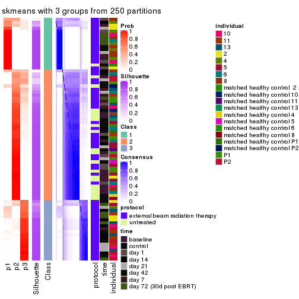
consensus_heatmap(res, k = 4)
consensus_heatmap(res, k = 5)
consensus_heatmap(res, k = 6)
Heatmaps for the membership of samples in all partitions to see how consistent they are:
membership_heatmap(res, k = 2)
membership_heatmap(res, k = 3)
membership_heatmap(res, k = 4)
membership_heatmap(res, k = 5)

membership_heatmap(res, k = 6)
As soon as we have had the classes for columns, we can look for signatures which are significantly different between classes which can be candidate marks for certain classes. Following are the heatmaps for signatures.
Signature heatmaps where rows are scaled:
get_signatures(res, k = 2)
get_signatures(res, k = 3)
get_signatures(res, k = 4)
#> Error: The width or height of the raster image is zero, maybe you forget to turn off the
#> previous graphic device or it was corrupted. Run `dev.off()` to close it.

get_signatures(res, k = 5)
#> Error in mat[ceiling(1:nr/h_ratio), ceiling(1:nc/w_ratio), drop = FALSE]: subscript out of bounds

get_signatures(res, k = 6)

Signature heatmaps where rows are not scaled:
get_signatures(res, k = 2, scale_rows = FALSE)
get_signatures(res, k = 3, scale_rows = FALSE)
get_signatures(res, k = 4, scale_rows = FALSE)
#> Error in mat[ceiling(1:nr/h_ratio), ceiling(1:nc/w_ratio), drop = FALSE]: subscript out of bounds
get_signatures(res, k = 5, scale_rows = FALSE)
get_signatures(res, k = 6, scale_rows = FALSE)

Compare the overlap of signatures from different k:
compare_signatures(res)
get_signature() returns a data frame invisibly. TO get the list of signatures, the function
call should be assigned to a variable explicitly. In following code, if plot argument is set
to FALSE, no heatmap is plotted while only the differential analysis is performed.
# code only for demonstration
tb = get_signature(res, k = ..., plot = FALSE)
An example of the output of tb is:
#> which_row fdr mean_1 mean_2 scaled_mean_1 scaled_mean_2 km
#> 1 38 0.042760348 8.373488 9.131774 -0.5533452 0.5164555 1
#> 2 40 0.018707592 7.106213 8.469186 -0.6173731 0.5762149 1
#> 3 55 0.019134737 10.221463 11.207825 -0.6159697 0.5749050 1
#> 4 59 0.006059896 5.921854 7.869574 -0.6899429 0.6439467 1
#> 5 60 0.018055526 8.928898 10.211722 -0.6204761 0.5791110 1
#> 6 98 0.009384629 15.714769 14.887706 0.6635654 -0.6193277 2
...
The columns in tb are:
which_row: row indices corresponding to the input matrix.fdr: FDR for the differential test. mean_x: The mean value in group x.scaled_mean_x: The mean value in group x after rows are scaled.km: Row groups if k-means clustering is applied to rows.UMAP plot which shows how samples are separated.
dimension_reduction(res, k = 2, method = "UMAP")
dimension_reduction(res, k = 3, method = "UMAP")
dimension_reduction(res, k = 4, method = "UMAP")
dimension_reduction(res, k = 5, method = "UMAP")
dimension_reduction(res, k = 6, method = "UMAP")
Following heatmap shows how subgroups are split when increasing k:
collect_classes(res)
Test correlation between subgroups and known annotations. If the known annotation is numeric, one-way ANOVA test is applied, and if the known annotation is discrete, chi-squared contingency table test is applied.
test_to_known_factors(res)
#> n protocol(p) time(p) individual(p) k
#> SD:skmeans 72 0.001721 0.001723 0.05439 2
#> SD:skmeans 72 0.000123 0.000874 0.00281 3
#> SD:skmeans 34 0.479059 0.231418 0.00213 4
#> SD:skmeans 19 1.000000 0.153645 0.02943 5
#> SD:skmeans 13 NA NA NA 6
If matrix rows can be associated to genes, consider to use GO_Enrichment(res,
...) to perform function enrichment for the signature genes.
The object with results only for a single top-value method and a single partition method can be extracted as:
res = res_list["SD", "pam"]
# you can also extract it by
# res = res_list["SD:pam"]
A summary of res and all the functions that can be applied to it:
res
#> A 'ConsensusPartition' object with k = 2, 3, 4, 5, 6.
#> On a matrix with 51941 rows and 80 columns.
#> Top rows (1000, 2000, 3000, 4000, 5000) are extracted by 'SD' method.
#> Subgroups are detected by 'pam' method.
#> Performed in total 1250 partitions by row resampling.
#> Best k for subgroups seems to be 2.
#>
#> Following methods can be applied to this 'ConsensusPartition' object:
#> [1] "cola_report" "collect_classes" "collect_plots"
#> [4] "collect_stats" "colnames" "compare_signatures"
#> [7] "consensus_heatmap" "dimension_reduction" "functional_enrichment"
#> [10] "get_anno_col" "get_anno" "get_classes"
#> [13] "get_consensus" "get_matrix" "get_membership"
#> [16] "get_param" "get_signatures" "get_stats"
#> [19] "is_best_k" "is_stable_k" "membership_heatmap"
#> [22] "ncol" "nrow" "plot_ecdf"
#> [25] "rownames" "select_partition_number" "show"
#> [28] "suggest_best_k" "test_to_known_factors"
collect_plots() function collects all the plots made from res for all k (number of partitions)
into one single page to provide an easy and fast comparison between different k.
collect_plots(res)
The plots are:
k and the heatmap of
predicted classes for each k.k.k.k.All the plots in panels can be made by individual functions and they are plotted later in this section.
select_partition_number() produces several plots showing different
statistics for choosing “optimized” k. There are following statistics:
k;k, the area increased is defined as \(A_k - A_{k-1}\).The detailed explanations of these statistics can be found in the cola vignette.
Generally speaking, lower PAC score, higher mean silhouette score or higher
concordance corresponds to better partition. Rand index and Jaccard index
measure how similar the current partition is compared to partition with k-1.
If they are too similar, we won't accept k is better than k-1.
select_partition_number(res)
The numeric values for all these statistics can be obtained by get_stats().
get_stats(res)
#> k 1-PAC mean_silhouette concordance area_increased Rand Jaccard
#> 2 2 1.000 0.995 0.998 0.1665 0.838 0.838
#> 3 3 0.226 0.526 0.749 2.3709 0.596 0.518
#> 4 4 0.245 0.506 0.763 0.0581 0.969 0.930
#> 5 5 0.257 0.460 0.691 0.0368 0.973 0.937
#> 6 6 0.292 0.481 0.710 0.0196 0.978 0.946
suggest_best_k() suggests the best \(k\) based on these statistics. The rules are as follows:
NA.suggest_best_k(res)
#> [1] 2
Following shows the table of the partitions (You need to click the show/hide
code output link to see it). The membership matrix (columns with name p*)
is inferred by
clue::cl_consensus()
function with the SE method. Basically the value in the membership matrix
represents the probability to belong to a certain group. The finall class
label for an item is determined with the group with highest probability it
belongs to.
In get_classes() function, the entropy is calculated from the membership
matrix and the silhouette score is calculated from the consensus matrix.
cbind(get_classes(res, k = 2), get_membership(res, k = 2))
#> class entropy silhouette p1 p2
#> GSM753604 2 0.529 0.864 0.120 0.880
#> GSM753620 2 0.000 0.997 0.000 1.000
#> GSM753628 2 0.000 0.997 0.000 1.000
#> GSM753636 2 0.000 0.997 0.000 1.000
#> GSM753644 2 0.000 0.997 0.000 1.000
#> GSM753572 2 0.000 0.997 0.000 1.000
#> GSM753580 2 0.000 0.997 0.000 1.000
#> GSM753588 2 0.000 0.997 0.000 1.000
#> GSM753596 2 0.000 0.997 0.000 1.000
#> GSM753612 2 0.000 0.997 0.000 1.000
#> GSM753603 2 0.000 0.997 0.000 1.000
#> GSM753619 2 0.000 0.997 0.000 1.000
#> GSM753627 2 0.000 0.997 0.000 1.000
#> GSM753635 2 0.000 0.997 0.000 1.000
#> GSM753643 2 0.000 0.997 0.000 1.000
#> GSM753571 2 0.000 0.997 0.000 1.000
#> GSM753579 2 0.000 0.997 0.000 1.000
#> GSM753587 2 0.000 0.997 0.000 1.000
#> GSM753595 2 0.000 0.997 0.000 1.000
#> GSM753611 2 0.000 0.997 0.000 1.000
#> GSM753605 1 0.000 1.000 1.000 0.000
#> GSM753621 2 0.000 0.997 0.000 1.000
#> GSM753629 2 0.000 0.997 0.000 1.000
#> GSM753637 2 0.000 0.997 0.000 1.000
#> GSM753645 2 0.000 0.997 0.000 1.000
#> GSM753573 1 0.000 1.000 1.000 0.000
#> GSM753581 2 0.000 0.997 0.000 1.000
#> GSM753589 2 0.000 0.997 0.000 1.000
#> GSM753597 2 0.000 0.997 0.000 1.000
#> GSM753613 2 0.000 0.997 0.000 1.000
#> GSM753606 2 0.000 0.997 0.000 1.000
#> GSM753622 1 0.000 1.000 1.000 0.000
#> GSM753630 2 0.000 0.997 0.000 1.000
#> GSM753638 2 0.000 0.997 0.000 1.000
#> GSM753646 1 0.000 1.000 1.000 0.000
#> GSM753574 2 0.000 0.997 0.000 1.000
#> GSM753582 2 0.000 0.997 0.000 1.000
#> GSM753590 2 0.000 0.997 0.000 1.000
#> GSM753598 2 0.000 0.997 0.000 1.000
#> GSM753614 2 0.000 0.997 0.000 1.000
#> GSM753607 2 0.000 0.997 0.000 1.000
#> GSM753623 2 0.000 0.997 0.000 1.000
#> GSM753631 2 0.000 0.997 0.000 1.000
#> GSM753639 2 0.000 0.997 0.000 1.000
#> GSM753647 2 0.000 0.997 0.000 1.000
#> GSM753575 2 0.000 0.997 0.000 1.000
#> GSM753583 2 0.000 0.997 0.000 1.000
#> GSM753591 2 0.000 0.997 0.000 1.000
#> GSM753599 2 0.000 0.997 0.000 1.000
#> GSM753615 2 0.000 0.997 0.000 1.000
#> GSM753608 2 0.000 0.997 0.000 1.000
#> GSM753624 2 0.000 0.997 0.000 1.000
#> GSM753632 2 0.000 0.997 0.000 1.000
#> GSM753640 2 0.000 0.997 0.000 1.000
#> GSM753648 1 0.000 1.000 1.000 0.000
#> GSM753576 2 0.000 0.997 0.000 1.000
#> GSM753584 2 0.000 0.997 0.000 1.000
#> GSM753592 2 0.000 0.997 0.000 1.000
#> GSM753600 2 0.000 0.997 0.000 1.000
#> GSM753616 2 0.000 0.997 0.000 1.000
#> GSM753609 2 0.000 0.997 0.000 1.000
#> GSM753625 1 0.000 1.000 1.000 0.000
#> GSM753633 2 0.000 0.997 0.000 1.000
#> GSM753641 2 0.000 0.997 0.000 1.000
#> GSM753649 2 0.000 0.997 0.000 1.000
#> GSM753577 2 0.000 0.997 0.000 1.000
#> GSM753585 2 0.000 0.997 0.000 1.000
#> GSM753593 2 0.000 0.997 0.000 1.000
#> GSM753601 2 0.000 0.997 0.000 1.000
#> GSM753617 2 0.000 0.997 0.000 1.000
#> GSM753610 2 0.000 0.997 0.000 1.000
#> GSM753626 2 0.000 0.997 0.000 1.000
#> GSM753634 2 0.000 0.997 0.000 1.000
#> GSM753642 2 0.000 0.997 0.000 1.000
#> GSM753650 1 0.000 1.000 1.000 0.000
#> GSM753578 2 0.388 0.918 0.076 0.924
#> GSM753586 2 0.000 0.997 0.000 1.000
#> GSM753594 2 0.000 0.997 0.000 1.000
#> GSM753602 2 0.000 0.997 0.000 1.000
#> GSM753618 2 0.000 0.997 0.000 1.000
cbind(get_classes(res, k = 3), get_membership(res, k = 3))
#> class entropy silhouette p1 p2 p3
#> GSM753604 2 0.8708 -0.078487 0.108 0.488 0.404
#> GSM753620 2 0.2261 0.654307 0.000 0.932 0.068
#> GSM753628 2 0.5497 0.578210 0.000 0.708 0.292
#> GSM753636 2 0.0237 0.667020 0.000 0.996 0.004
#> GSM753644 2 0.0000 0.665821 0.000 1.000 0.000
#> GSM753572 2 0.4346 0.661173 0.000 0.816 0.184
#> GSM753580 2 0.5529 0.378315 0.000 0.704 0.296
#> GSM753588 2 0.6291 0.087100 0.000 0.532 0.468
#> GSM753596 3 0.6026 0.389482 0.000 0.376 0.624
#> GSM753612 3 0.5497 0.513198 0.000 0.292 0.708
#> GSM753603 2 0.2448 0.655643 0.000 0.924 0.076
#> GSM753619 2 0.2448 0.674339 0.000 0.924 0.076
#> GSM753627 2 0.0747 0.668964 0.000 0.984 0.016
#> GSM753635 2 0.0000 0.665821 0.000 1.000 0.000
#> GSM753643 2 0.1753 0.665143 0.000 0.952 0.048
#> GSM753571 2 0.3816 0.646837 0.000 0.852 0.148
#> GSM753579 3 0.5678 0.468237 0.000 0.316 0.684
#> GSM753587 2 0.5733 0.347015 0.000 0.676 0.324
#> GSM753595 2 0.6302 -0.057458 0.000 0.520 0.480
#> GSM753611 3 0.5621 0.483911 0.000 0.308 0.692
#> GSM753605 1 0.0000 1.000000 1.000 0.000 0.000
#> GSM753621 2 0.4750 0.601669 0.000 0.784 0.216
#> GSM753629 2 0.5968 0.314983 0.000 0.636 0.364
#> GSM753637 2 0.0000 0.665821 0.000 1.000 0.000
#> GSM753645 2 0.1289 0.669689 0.000 0.968 0.032
#> GSM753573 1 0.0000 1.000000 1.000 0.000 0.000
#> GSM753581 3 0.6026 0.390664 0.000 0.376 0.624
#> GSM753589 2 0.5560 0.496825 0.000 0.700 0.300
#> GSM753597 2 0.5859 0.295010 0.000 0.656 0.344
#> GSM753613 2 0.4750 0.634486 0.000 0.784 0.216
#> GSM753606 2 0.6280 0.000101 0.000 0.540 0.460
#> GSM753622 1 0.0000 1.000000 1.000 0.000 0.000
#> GSM753630 2 0.3038 0.681173 0.000 0.896 0.104
#> GSM753638 2 0.4235 0.624679 0.000 0.824 0.176
#> GSM753646 1 0.0000 1.000000 1.000 0.000 0.000
#> GSM753574 2 0.4931 0.577073 0.000 0.768 0.232
#> GSM753582 3 0.5678 0.486960 0.000 0.316 0.684
#> GSM753590 3 0.5905 0.412684 0.000 0.352 0.648
#> GSM753598 3 0.6235 0.327385 0.000 0.436 0.564
#> GSM753614 3 0.1860 0.635877 0.000 0.052 0.948
#> GSM753607 3 0.5431 0.448408 0.000 0.284 0.716
#> GSM753623 2 0.4002 0.641334 0.000 0.840 0.160
#> GSM753631 2 0.5058 0.624212 0.000 0.756 0.244
#> GSM753639 2 0.4235 0.624679 0.000 0.824 0.176
#> GSM753647 2 0.4555 0.654481 0.000 0.800 0.200
#> GSM753575 3 0.6079 0.251119 0.000 0.388 0.612
#> GSM753583 3 0.1964 0.637820 0.000 0.056 0.944
#> GSM753591 3 0.2625 0.622447 0.000 0.084 0.916
#> GSM753599 3 0.6111 0.405028 0.000 0.396 0.604
#> GSM753615 2 0.6154 0.256740 0.000 0.592 0.408
#> GSM753608 2 0.6095 0.303669 0.000 0.608 0.392
#> GSM753624 3 0.6302 0.055984 0.000 0.480 0.520
#> GSM753632 2 0.4887 0.618735 0.000 0.772 0.228
#> GSM753640 2 0.4235 0.624679 0.000 0.824 0.176
#> GSM753648 1 0.0000 1.000000 1.000 0.000 0.000
#> GSM753576 2 0.6286 0.086079 0.000 0.536 0.464
#> GSM753584 3 0.1411 0.635664 0.000 0.036 0.964
#> GSM753592 3 0.6235 0.167423 0.000 0.436 0.564
#> GSM753600 2 0.5327 0.584495 0.000 0.728 0.272
#> GSM753616 2 0.6267 0.160139 0.000 0.548 0.452
#> GSM753609 2 0.6260 0.180017 0.000 0.552 0.448
#> GSM753625 1 0.0000 1.000000 1.000 0.000 0.000
#> GSM753633 2 0.5905 0.335972 0.000 0.648 0.352
#> GSM753641 2 0.4178 0.626974 0.000 0.828 0.172
#> GSM753649 2 0.3482 0.663940 0.000 0.872 0.128
#> GSM753577 3 0.6286 0.098708 0.000 0.464 0.536
#> GSM753585 3 0.0892 0.633928 0.000 0.020 0.980
#> GSM753593 3 0.2066 0.638150 0.000 0.060 0.940
#> GSM753601 3 0.6252 0.077735 0.000 0.444 0.556
#> GSM753617 3 0.3340 0.611785 0.000 0.120 0.880
#> GSM753610 3 0.4605 0.579802 0.000 0.204 0.796
#> GSM753626 3 0.3340 0.615939 0.000 0.120 0.880
#> GSM753634 2 0.3482 0.664288 0.000 0.872 0.128
#> GSM753642 2 0.3619 0.667653 0.000 0.864 0.136
#> GSM753650 1 0.0000 1.000000 1.000 0.000 0.000
#> GSM753578 3 0.6648 0.377603 0.016 0.364 0.620
#> GSM753586 3 0.0592 0.630759 0.000 0.012 0.988
#> GSM753594 3 0.5760 0.457828 0.000 0.328 0.672
#> GSM753602 3 0.4235 0.609576 0.000 0.176 0.824
#> GSM753618 3 0.3412 0.629589 0.000 0.124 0.876
cbind(get_classes(res, k = 4), get_membership(res, k = 4))
#> class entropy silhouette p1 p2 p3 p4
#> GSM753604 2 0.8107 -0.1286 0.008 0.400 0.272 0.320
#> GSM753620 2 0.1978 0.6242 0.000 0.928 0.004 0.068
#> GSM753628 2 0.5321 0.5481 0.000 0.672 0.032 0.296
#> GSM753636 2 0.0927 0.6449 0.000 0.976 0.016 0.008
#> GSM753644 2 0.0000 0.6408 0.000 1.000 0.000 0.000
#> GSM753572 2 0.4050 0.6367 0.000 0.808 0.024 0.168
#> GSM753580 2 0.4356 0.3526 0.000 0.708 0.000 0.292
#> GSM753588 2 0.6707 0.0877 0.000 0.468 0.088 0.444
#> GSM753596 4 0.4917 0.4559 0.000 0.336 0.008 0.656
#> GSM753612 4 0.4737 0.5474 0.000 0.252 0.020 0.728
#> GSM753603 2 0.1978 0.6281 0.000 0.928 0.004 0.068
#> GSM753619 2 0.2521 0.6489 0.000 0.912 0.024 0.064
#> GSM753627 2 0.0779 0.6437 0.000 0.980 0.004 0.016
#> GSM753635 2 0.0000 0.6408 0.000 1.000 0.000 0.000
#> GSM753643 2 0.1302 0.6371 0.000 0.956 0.000 0.044
#> GSM753571 2 0.4436 0.6155 0.000 0.800 0.052 0.148
#> GSM753579 4 0.4304 0.5230 0.000 0.284 0.000 0.716
#> GSM753587 2 0.4543 0.3198 0.000 0.676 0.000 0.324
#> GSM753595 2 0.5167 -0.1027 0.000 0.508 0.004 0.488
#> GSM753611 4 0.4718 0.5270 0.000 0.280 0.012 0.708
#> GSM753605 1 0.0000 1.0000 1.000 0.000 0.000 0.000
#> GSM753621 2 0.5457 0.5895 0.000 0.728 0.088 0.184
#> GSM753629 2 0.4936 0.2841 0.000 0.624 0.004 0.372
#> GSM753637 2 0.0000 0.6408 0.000 1.000 0.000 0.000
#> GSM753645 2 0.0921 0.6428 0.000 0.972 0.000 0.028
#> GSM753573 1 0.0000 1.0000 1.000 0.000 0.000 0.000
#> GSM753581 4 0.4624 0.4536 0.000 0.340 0.000 0.660
#> GSM753589 2 0.5069 0.4528 0.000 0.664 0.016 0.320
#> GSM753597 2 0.4819 0.2709 0.000 0.652 0.004 0.344
#> GSM753613 2 0.4507 0.6020 0.000 0.756 0.020 0.224
#> GSM753606 2 0.5738 0.0037 0.000 0.540 0.028 0.432
#> GSM753622 1 0.0000 1.0000 1.000 0.000 0.000 0.000
#> GSM753630 2 0.2796 0.6553 0.000 0.892 0.016 0.092
#> GSM753638 2 0.4832 0.5889 0.000 0.768 0.056 0.176
#> GSM753646 1 0.0000 1.0000 1.000 0.000 0.000 0.000
#> GSM753574 2 0.5833 0.5413 0.000 0.692 0.096 0.212
#> GSM753582 4 0.5256 0.5208 0.000 0.272 0.036 0.692
#> GSM753590 4 0.5786 0.4388 0.000 0.308 0.052 0.640
#> GSM753598 4 0.5172 0.3978 0.000 0.404 0.008 0.588
#> GSM753614 4 0.2214 0.6163 0.000 0.044 0.028 0.928
#> GSM753607 4 0.5742 0.3563 0.000 0.276 0.060 0.664
#> GSM753623 2 0.4804 0.6023 0.000 0.776 0.064 0.160
#> GSM753631 2 0.5179 0.6032 0.000 0.728 0.052 0.220
#> GSM753639 2 0.4832 0.5889 0.000 0.768 0.056 0.176
#> GSM753647 2 0.4994 0.6158 0.000 0.744 0.048 0.208
#> GSM753575 4 0.6757 0.0690 0.000 0.376 0.100 0.524
#> GSM753583 4 0.1576 0.6298 0.000 0.048 0.004 0.948
#> GSM753591 4 0.2402 0.6104 0.000 0.076 0.012 0.912
#> GSM753599 4 0.5984 0.3933 0.000 0.372 0.048 0.580
#> GSM753615 2 0.6549 0.3318 0.000 0.556 0.088 0.356
#> GSM753608 2 0.5174 0.3415 0.000 0.620 0.012 0.368
#> GSM753624 2 0.6887 0.0724 0.000 0.456 0.104 0.440
#> GSM753632 2 0.4353 0.5919 0.000 0.756 0.012 0.232
#> GSM753640 2 0.4832 0.5889 0.000 0.768 0.056 0.176
#> GSM753648 1 0.0000 1.0000 1.000 0.000 0.000 0.000
#> GSM753576 2 0.6791 0.2229 0.000 0.508 0.100 0.392
#> GSM753584 4 0.0804 0.6161 0.000 0.012 0.008 0.980
#> GSM753592 4 0.6477 0.0274 0.000 0.420 0.072 0.508
#> GSM753600 2 0.5837 0.5487 0.000 0.668 0.072 0.260
#> GSM753616 2 0.6389 0.1666 0.000 0.488 0.064 0.448
#> GSM753609 2 0.6483 0.2728 0.000 0.532 0.076 0.392
#> GSM753625 1 0.0000 1.0000 1.000 0.000 0.000 0.000
#> GSM753633 2 0.5460 0.3117 0.000 0.632 0.028 0.340
#> GSM753641 2 0.4789 0.5911 0.000 0.772 0.056 0.172
#> GSM753649 2 0.3612 0.6413 0.000 0.856 0.044 0.100
#> GSM753577 4 0.6705 -0.0569 0.000 0.440 0.088 0.472
#> GSM753585 4 0.1624 0.6191 0.000 0.020 0.028 0.952
#> GSM753593 4 0.1833 0.6231 0.000 0.032 0.024 0.944
#> GSM753601 4 0.6586 -0.0856 0.000 0.420 0.080 0.500
#> GSM753617 4 0.3876 0.6037 0.000 0.124 0.040 0.836
#> GSM753610 4 0.5142 0.5536 0.000 0.192 0.064 0.744
#> GSM753626 4 0.2987 0.6026 0.000 0.104 0.016 0.880
#> GSM753634 2 0.3638 0.6416 0.000 0.848 0.032 0.120
#> GSM753642 2 0.5784 0.5658 0.000 0.700 0.200 0.100
#> GSM753650 1 0.0000 1.0000 1.000 0.000 0.000 0.000
#> GSM753578 3 0.3632 0.0000 0.008 0.004 0.832 0.156
#> GSM753586 4 0.0927 0.6198 0.000 0.008 0.016 0.976
#> GSM753594 4 0.4647 0.5244 0.000 0.288 0.008 0.704
#> GSM753602 4 0.3711 0.6387 0.000 0.140 0.024 0.836
#> GSM753618 4 0.3464 0.6242 0.000 0.108 0.032 0.860
cbind(get_classes(res, k = 5), get_membership(res, k = 5))
#> class entropy silhouette p1 p2 p3 p4 p5
#> GSM753604 3 0.6746 0.032102 0.000 0.200 0.576 0.180 0.044
#> GSM753620 2 0.1894 0.517773 0.000 0.920 0.000 0.072 0.008
#> GSM753628 2 0.4887 0.532372 0.000 0.660 0.000 0.288 0.052
#> GSM753636 2 0.1082 0.554022 0.000 0.964 0.000 0.008 0.028
#> GSM753644 2 0.0162 0.544241 0.000 0.996 0.000 0.000 0.004
#> GSM753572 2 0.3764 0.575528 0.000 0.800 0.000 0.156 0.044
#> GSM753580 2 0.3838 0.265175 0.000 0.716 0.000 0.280 0.004
#> GSM753588 2 0.6220 0.110525 0.000 0.432 0.000 0.428 0.140
#> GSM753596 4 0.4418 0.386445 0.000 0.332 0.000 0.652 0.016
#> GSM753612 4 0.4276 0.532200 0.000 0.244 0.000 0.724 0.032
#> GSM753603 2 0.1557 0.538215 0.000 0.940 0.000 0.052 0.008
#> GSM753619 2 0.2278 0.564145 0.000 0.908 0.000 0.060 0.032
#> GSM753627 2 0.0992 0.552595 0.000 0.968 0.000 0.008 0.024
#> GSM753635 2 0.0162 0.547137 0.000 0.996 0.000 0.000 0.004
#> GSM753643 2 0.1124 0.543425 0.000 0.960 0.000 0.036 0.004
#> GSM753571 2 0.4519 0.556156 0.000 0.752 0.000 0.148 0.100
#> GSM753579 4 0.3684 0.462672 0.000 0.280 0.000 0.720 0.000
#> GSM753587 2 0.3990 0.282199 0.000 0.688 0.000 0.308 0.004
#> GSM753595 2 0.4450 -0.111091 0.000 0.508 0.000 0.488 0.004
#> GSM753611 4 0.3992 0.471228 0.000 0.268 0.000 0.720 0.012
#> GSM753605 1 0.0000 0.996223 1.000 0.000 0.000 0.000 0.000
#> GSM753621 2 0.5109 0.520917 0.000 0.696 0.000 0.172 0.132
#> GSM753629 2 0.4444 0.291298 0.000 0.624 0.000 0.364 0.012
#> GSM753637 2 0.0162 0.544241 0.000 0.996 0.000 0.000 0.004
#> GSM753645 2 0.0955 0.545873 0.000 0.968 0.000 0.028 0.004
#> GSM753573 1 0.0703 0.976994 0.976 0.000 0.024 0.000 0.000
#> GSM753581 4 0.3966 0.380147 0.000 0.336 0.000 0.664 0.000
#> GSM753589 2 0.4661 0.419611 0.000 0.656 0.000 0.312 0.032
#> GSM753597 2 0.4118 0.225753 0.000 0.660 0.000 0.336 0.004
#> GSM753613 2 0.4394 0.549661 0.000 0.732 0.000 0.220 0.048
#> GSM753606 2 0.5131 0.000264 0.000 0.540 0.000 0.420 0.040
#> GSM753622 1 0.0000 0.996223 1.000 0.000 0.000 0.000 0.000
#> GSM753630 2 0.2653 0.580128 0.000 0.880 0.000 0.096 0.024
#> GSM753638 2 0.4936 0.535066 0.000 0.712 0.000 0.172 0.116
#> GSM753646 1 0.0000 0.996223 1.000 0.000 0.000 0.000 0.000
#> GSM753574 2 0.5653 0.488718 0.000 0.632 0.000 0.208 0.160
#> GSM753582 4 0.4793 0.497653 0.000 0.260 0.000 0.684 0.056
#> GSM753590 4 0.5200 0.407533 0.000 0.304 0.000 0.628 0.068
#> GSM753598 4 0.4649 0.341371 0.000 0.404 0.000 0.580 0.016
#> GSM753614 4 0.2209 0.569307 0.000 0.032 0.000 0.912 0.056
#> GSM753607 4 0.5357 0.313511 0.000 0.264 0.000 0.640 0.096
#> GSM753623 2 0.4840 0.543394 0.000 0.724 0.000 0.152 0.124
#> GSM753631 2 0.4994 0.550144 0.000 0.696 0.000 0.208 0.096
#> GSM753639 2 0.4936 0.535066 0.000 0.712 0.000 0.172 0.116
#> GSM753647 2 0.4497 0.564336 0.000 0.732 0.000 0.208 0.060
#> GSM753575 4 0.6374 -0.024265 0.000 0.360 0.000 0.468 0.172
#> GSM753583 4 0.1568 0.586652 0.000 0.036 0.000 0.944 0.020
#> GSM753591 4 0.1942 0.560311 0.000 0.068 0.000 0.920 0.012
#> GSM753599 4 0.5535 0.333034 0.000 0.352 0.000 0.568 0.080
#> GSM753615 2 0.6235 0.298780 0.000 0.500 0.000 0.344 0.156
#> GSM753608 2 0.5094 0.298507 0.000 0.600 0.000 0.352 0.048
#> GSM753624 2 0.6438 0.119249 0.000 0.424 0.000 0.400 0.176
#> GSM753632 2 0.4193 0.546009 0.000 0.748 0.000 0.212 0.040
#> GSM753640 2 0.4936 0.535066 0.000 0.712 0.000 0.172 0.116
#> GSM753648 1 0.0000 0.996223 1.000 0.000 0.000 0.000 0.000
#> GSM753576 2 0.6428 0.211615 0.000 0.456 0.000 0.364 0.180
#> GSM753584 4 0.0798 0.576761 0.000 0.008 0.000 0.976 0.016
#> GSM753592 4 0.6281 -0.016232 0.000 0.388 0.000 0.460 0.152
#> GSM753600 2 0.5572 0.529722 0.000 0.628 0.000 0.248 0.124
#> GSM753616 2 0.5959 0.207543 0.000 0.472 0.000 0.420 0.108
#> GSM753609 2 0.6240 0.267917 0.000 0.488 0.000 0.360 0.152
#> GSM753625 1 0.0000 0.996223 1.000 0.000 0.000 0.000 0.000
#> GSM753633 2 0.4857 0.292160 0.000 0.636 0.000 0.324 0.040
#> GSM753641 2 0.4891 0.536668 0.000 0.716 0.000 0.172 0.112
#> GSM753649 2 0.3346 0.548341 0.000 0.844 0.000 0.092 0.064
#> GSM753577 4 0.6431 -0.061819 0.000 0.388 0.000 0.436 0.176
#> GSM753585 4 0.1774 0.576490 0.000 0.016 0.000 0.932 0.052
#> GSM753593 4 0.2054 0.575186 0.000 0.028 0.000 0.920 0.052
#> GSM753601 4 0.6146 -0.147699 0.000 0.400 0.000 0.468 0.132
#> GSM753617 4 0.3946 0.538052 0.000 0.120 0.000 0.800 0.080
#> GSM753610 4 0.4808 0.495317 0.000 0.168 0.000 0.724 0.108
#> GSM753626 4 0.2561 0.546100 0.000 0.096 0.000 0.884 0.020
#> GSM753634 2 0.3780 0.574172 0.000 0.812 0.000 0.116 0.072
#> GSM753642 3 0.6729 0.267205 0.000 0.424 0.444 0.068 0.064
#> GSM753650 1 0.0000 0.996223 1.000 0.000 0.000 0.000 0.000
#> GSM753578 5 0.4054 0.000000 0.000 0.000 0.140 0.072 0.788
#> GSM753586 4 0.0771 0.580582 0.000 0.004 0.000 0.976 0.020
#> GSM753594 4 0.4025 0.473755 0.000 0.292 0.000 0.700 0.008
#> GSM753602 4 0.3152 0.577001 0.000 0.136 0.000 0.840 0.024
#> GSM753618 4 0.3427 0.558966 0.000 0.108 0.000 0.836 0.056
cbind(get_classes(res, k = 6), get_membership(res, k = 6))
#> class entropy silhouette p1 p2 p3 p4 p5 p6
#> GSM753604 5 0.3689 0.0000 0.000 0.056 0.056 0.032 0.836 0.020
#> GSM753620 2 0.1787 0.6010 0.000 0.920 0.008 0.068 0.000 0.004
#> GSM753628 2 0.4481 0.5352 0.000 0.656 0.000 0.284 0.000 0.060
#> GSM753636 2 0.1149 0.6334 0.000 0.960 0.008 0.008 0.000 0.024
#> GSM753644 2 0.0260 0.6268 0.000 0.992 0.008 0.000 0.000 0.000
#> GSM753572 2 0.3544 0.6281 0.000 0.804 0.008 0.140 0.000 0.048
#> GSM753580 2 0.3512 0.3449 0.000 0.720 0.008 0.272 0.000 0.000
#> GSM753588 4 0.5703 -0.0863 0.000 0.412 0.000 0.428 0.000 0.160
#> GSM753596 4 0.3969 0.4333 0.000 0.332 0.000 0.652 0.000 0.016
#> GSM753612 4 0.3964 0.5322 0.000 0.232 0.000 0.724 0.000 0.044
#> GSM753603 2 0.1410 0.6174 0.000 0.944 0.008 0.044 0.000 0.004
#> GSM753619 2 0.2058 0.6377 0.000 0.908 0.000 0.056 0.000 0.036
#> GSM753627 2 0.1268 0.6355 0.000 0.952 0.004 0.008 0.000 0.036
#> GSM753635 2 0.0146 0.6298 0.000 0.996 0.000 0.000 0.000 0.004
#> GSM753643 2 0.1049 0.6216 0.000 0.960 0.008 0.032 0.000 0.000
#> GSM753571 2 0.4237 0.5832 0.000 0.736 0.000 0.144 0.000 0.120
#> GSM753579 4 0.3288 0.4998 0.000 0.276 0.000 0.724 0.000 0.000
#> GSM753587 2 0.3565 0.3281 0.000 0.692 0.004 0.304 0.000 0.000
#> GSM753595 2 0.3996 -0.0915 0.000 0.512 0.000 0.484 0.000 0.004
#> GSM753611 4 0.3695 0.5019 0.000 0.272 0.000 0.712 0.000 0.016
#> GSM753605 1 0.0146 0.9813 0.996 0.000 0.000 0.004 0.000 0.000
#> GSM753621 2 0.4771 0.5686 0.000 0.688 0.004 0.164 0.000 0.144
#> GSM753629 2 0.4076 0.2912 0.000 0.620 0.000 0.364 0.000 0.016
#> GSM753637 2 0.0260 0.6268 0.000 0.992 0.008 0.000 0.000 0.000
#> GSM753645 2 0.1003 0.6294 0.000 0.964 0.004 0.028 0.000 0.004
#> GSM753573 1 0.2197 0.8993 0.900 0.000 0.056 0.000 0.044 0.000
#> GSM753581 4 0.3563 0.4273 0.000 0.336 0.000 0.664 0.000 0.000
#> GSM753589 2 0.4219 0.4452 0.000 0.660 0.000 0.304 0.000 0.036
#> GSM753597 2 0.3774 0.2795 0.000 0.664 0.000 0.328 0.000 0.008
#> GSM753613 2 0.4149 0.5849 0.000 0.720 0.000 0.216 0.000 0.064
#> GSM753606 2 0.4764 0.0319 0.000 0.548 0.008 0.408 0.000 0.036
#> GSM753622 1 0.0000 0.9836 1.000 0.000 0.000 0.000 0.000 0.000
#> GSM753630 2 0.2555 0.6409 0.000 0.876 0.008 0.096 0.000 0.020
#> GSM753638 2 0.4589 0.5479 0.000 0.696 0.000 0.172 0.000 0.132
#> GSM753646 1 0.0000 0.9836 1.000 0.000 0.000 0.000 0.000 0.000
#> GSM753574 2 0.5223 0.4827 0.000 0.612 0.000 0.208 0.000 0.180
#> GSM753582 4 0.4325 0.5045 0.000 0.244 0.000 0.692 0.000 0.064
#> GSM753590 4 0.4736 0.4059 0.000 0.308 0.000 0.620 0.000 0.072
#> GSM753598 4 0.4387 0.3796 0.000 0.392 0.008 0.584 0.000 0.016
#> GSM753614 4 0.2046 0.6159 0.000 0.032 0.000 0.908 0.000 0.060
#> GSM753607 4 0.4973 0.3097 0.000 0.264 0.000 0.624 0.000 0.112
#> GSM753623 2 0.4496 0.5635 0.000 0.708 0.000 0.156 0.000 0.136
#> GSM753631 2 0.4599 0.5707 0.000 0.684 0.000 0.212 0.000 0.104
#> GSM753639 2 0.4589 0.5479 0.000 0.696 0.000 0.172 0.000 0.132
#> GSM753647 2 0.4286 0.5974 0.000 0.720 0.004 0.208 0.000 0.068
#> GSM753575 4 0.5831 0.0153 0.000 0.348 0.000 0.456 0.000 0.196
#> GSM753583 4 0.1572 0.6324 0.000 0.036 0.000 0.936 0.000 0.028
#> GSM753591 4 0.1686 0.6181 0.000 0.064 0.000 0.924 0.000 0.012
#> GSM753599 4 0.5025 0.3692 0.000 0.356 0.000 0.560 0.000 0.084
#> GSM753615 2 0.5697 0.2795 0.000 0.492 0.000 0.332 0.000 0.176
#> GSM753608 2 0.5033 0.2449 0.000 0.572 0.012 0.360 0.000 0.056
#> GSM753624 2 0.5887 0.0640 0.000 0.404 0.000 0.396 0.000 0.200
#> GSM753632 2 0.3819 0.5913 0.000 0.756 0.004 0.200 0.000 0.040
#> GSM753640 2 0.4589 0.5479 0.000 0.696 0.000 0.172 0.000 0.132
#> GSM753648 1 0.0000 0.9836 1.000 0.000 0.000 0.000 0.000 0.000
#> GSM753576 2 0.5878 0.1731 0.000 0.440 0.000 0.356 0.000 0.204
#> GSM753584 4 0.0717 0.6217 0.000 0.008 0.000 0.976 0.000 0.016
#> GSM753592 4 0.5741 0.0348 0.000 0.372 0.000 0.456 0.000 0.172
#> GSM753600 2 0.5130 0.5050 0.000 0.612 0.000 0.252 0.000 0.136
#> GSM753616 2 0.5475 0.1609 0.000 0.460 0.000 0.416 0.000 0.124
#> GSM753609 2 0.5819 0.2400 0.000 0.476 0.004 0.352 0.000 0.168
#> GSM753625 1 0.0000 0.9836 1.000 0.000 0.000 0.000 0.000 0.000
#> GSM753633 2 0.4466 0.2794 0.000 0.620 0.000 0.336 0.000 0.044
#> GSM753641 2 0.4552 0.5499 0.000 0.700 0.000 0.172 0.000 0.128
#> GSM753649 2 0.3167 0.6236 0.000 0.832 0.000 0.096 0.000 0.072
#> GSM753577 4 0.5852 0.0164 0.000 0.364 0.000 0.440 0.000 0.196
#> GSM753585 4 0.1563 0.6186 0.000 0.012 0.000 0.932 0.000 0.056
#> GSM753593 4 0.1970 0.6194 0.000 0.028 0.000 0.912 0.000 0.060
#> GSM753601 4 0.5591 -0.0925 0.000 0.388 0.000 0.468 0.000 0.144
#> GSM753617 4 0.3745 0.5722 0.000 0.116 0.000 0.784 0.000 0.100
#> GSM753610 4 0.4519 0.5454 0.000 0.148 0.008 0.724 0.000 0.120
#> GSM753626 4 0.2432 0.6004 0.000 0.100 0.000 0.876 0.000 0.024
#> GSM753634 2 0.3602 0.6190 0.000 0.796 0.000 0.116 0.000 0.088
#> GSM753642 3 0.2682 0.0000 0.000 0.084 0.876 0.020 0.000 0.020
#> GSM753650 1 0.0000 0.9836 1.000 0.000 0.000 0.000 0.000 0.000
#> GSM753578 6 0.4131 0.0000 0.000 0.000 0.064 0.028 0.132 0.776
#> GSM753586 4 0.0692 0.6267 0.000 0.004 0.000 0.976 0.000 0.020
#> GSM753594 4 0.3809 0.4801 0.000 0.304 0.004 0.684 0.000 0.008
#> GSM753602 4 0.2831 0.6113 0.000 0.136 0.000 0.840 0.000 0.024
#> GSM753618 4 0.3159 0.6108 0.000 0.100 0.000 0.832 0.000 0.068
Heatmaps for the consensus matrix. It visualizes the probability of two samples to be in a same group.
consensus_heatmap(res, k = 2)
consensus_heatmap(res, k = 3)
consensus_heatmap(res, k = 4)
consensus_heatmap(res, k = 5)
consensus_heatmap(res, k = 6)
Heatmaps for the membership of samples in all partitions to see how consistent they are:
membership_heatmap(res, k = 2)
membership_heatmap(res, k = 3)
membership_heatmap(res, k = 4)
membership_heatmap(res, k = 5)
membership_heatmap(res, k = 6)
As soon as we have had the classes for columns, we can look for signatures which are significantly different between classes which can be candidate marks for certain classes. Following are the heatmaps for signatures.
Signature heatmaps where rows are scaled:
get_signatures(res, k = 2)
get_signatures(res, k = 3)
#> Error in mat[ceiling(1:nr/h_ratio), ceiling(1:nc/w_ratio), drop = FALSE]: subscript out of bounds

get_signatures(res, k = 4)
#> Error in mat[ceiling(1:nr/h_ratio), ceiling(1:nc/w_ratio), drop = FALSE]: subscript out of bounds

get_signatures(res, k = 5)
#> Error in mat[ceiling(1:nr/h_ratio), ceiling(1:nc/w_ratio), drop = FALSE]: subscript out of bounds

get_signatures(res, k = 6)
#> Error in mat[ceiling(1:nr/h_ratio), ceiling(1:nc/w_ratio), drop = FALSE]: subscript out of bounds

Signature heatmaps where rows are not scaled:
get_signatures(res, k = 2, scale_rows = FALSE)
get_signatures(res, k = 3, scale_rows = FALSE)
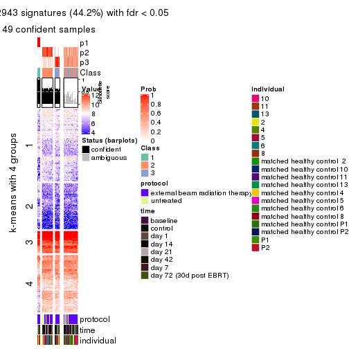
get_signatures(res, k = 4, scale_rows = FALSE)
get_signatures(res, k = 5, scale_rows = FALSE)

get_signatures(res, k = 6, scale_rows = FALSE)
Compare the overlap of signatures from different k:
compare_signatures(res)
get_signature() returns a data frame invisibly. TO get the list of signatures, the function
call should be assigned to a variable explicitly. In following code, if plot argument is set
to FALSE, no heatmap is plotted while only the differential analysis is performed.
# code only for demonstration
tb = get_signature(res, k = ..., plot = FALSE)
An example of the output of tb is:
#> which_row fdr mean_1 mean_2 scaled_mean_1 scaled_mean_2 km
#> 1 38 0.042760348 8.373488 9.131774 -0.5533452 0.5164555 1
#> 2 40 0.018707592 7.106213 8.469186 -0.6173731 0.5762149 1
#> 3 55 0.019134737 10.221463 11.207825 -0.6159697 0.5749050 1
#> 4 59 0.006059896 5.921854 7.869574 -0.6899429 0.6439467 1
#> 5 60 0.018055526 8.928898 10.211722 -0.6204761 0.5791110 1
#> 6 98 0.009384629 15.714769 14.887706 0.6635654 -0.6193277 2
...
The columns in tb are:
which_row: row indices corresponding to the input matrix.fdr: FDR for the differential test. mean_x: The mean value in group x.scaled_mean_x: The mean value in group x after rows are scaled.km: Row groups if k-means clustering is applied to rows.UMAP plot which shows how samples are separated.
dimension_reduction(res, k = 2, method = "UMAP")
dimension_reduction(res, k = 3, method = "UMAP")
dimension_reduction(res, k = 4, method = "UMAP")
dimension_reduction(res, k = 5, method = "UMAP")
dimension_reduction(res, k = 6, method = "UMAP")
Following heatmap shows how subgroups are split when increasing k:
collect_classes(res)
Test correlation between subgroups and known annotations. If the known annotation is numeric, one-way ANOVA test is applied, and if the known annotation is discrete, chi-squared contingency table test is applied.
test_to_known_factors(res)
#> n protocol(p) time(p) individual(p) k
#> SD:pam 80 0.2534 0.527 0.44618 2
#> SD:pam 49 0.0289 0.148 0.02394 3
#> SD:pam 53 0.0756 0.258 0.00534 4
#> SD:pam 46 0.0242 0.127 0.01935 5
#> SD:pam 49 0.0357 0.165 0.01556 6
If matrix rows can be associated to genes, consider to use GO_Enrichment(res,
...) to perform function enrichment for the signature genes.
The object with results only for a single top-value method and a single partition method can be extracted as:
res = res_list["SD", "mclust"]
# you can also extract it by
# res = res_list["SD:mclust"]
A summary of res and all the functions that can be applied to it:
res
#> A 'ConsensusPartition' object with k = 2, 3, 4, 5, 6.
#> On a matrix with 51941 rows and 80 columns.
#> Top rows (1000, 2000, 3000, 4000, 5000) are extracted by 'SD' method.
#> Subgroups are detected by 'mclust' method.
#> Performed in total 1250 partitions by row resampling.
#> Best k for subgroups seems to be 2.
#>
#> Following methods can be applied to this 'ConsensusPartition' object:
#> [1] "cola_report" "collect_classes" "collect_plots"
#> [4] "collect_stats" "colnames" "compare_signatures"
#> [7] "consensus_heatmap" "dimension_reduction" "functional_enrichment"
#> [10] "get_anno_col" "get_anno" "get_classes"
#> [13] "get_consensus" "get_matrix" "get_membership"
#> [16] "get_param" "get_signatures" "get_stats"
#> [19] "is_best_k" "is_stable_k" "membership_heatmap"
#> [22] "ncol" "nrow" "plot_ecdf"
#> [25] "rownames" "select_partition_number" "show"
#> [28] "suggest_best_k" "test_to_known_factors"
collect_plots() function collects all the plots made from res for all k (number of partitions)
into one single page to provide an easy and fast comparison between different k.
collect_plots(res)
The plots are:
k and the heatmap of
predicted classes for each k.k.k.k.All the plots in panels can be made by individual functions and they are plotted later in this section.
select_partition_number() produces several plots showing different
statistics for choosing “optimized” k. There are following statistics:
k;k, the area increased is defined as \(A_k - A_{k-1}\).The detailed explanations of these statistics can be found in the cola vignette.
Generally speaking, lower PAC score, higher mean silhouette score or higher
concordance corresponds to better partition. Rand index and Jaccard index
measure how similar the current partition is compared to partition with k-1.
If they are too similar, we won't accept k is better than k-1.
select_partition_number(res)
The numeric values for all these statistics can be obtained by get_stats().
get_stats(res)
#> k 1-PAC mean_silhouette concordance area_increased Rand Jaccard
#> 2 2 0.923 0.944 0.974 0.3493 0.633 0.633
#> 3 3 0.502 0.654 0.839 0.4688 0.782 0.675
#> 4 4 0.421 0.520 0.740 0.2358 0.640 0.427
#> 5 5 0.442 0.668 0.787 0.1317 0.816 0.561
#> 6 6 0.548 0.538 0.688 0.0727 0.917 0.701
suggest_best_k() suggests the best \(k\) based on these statistics. The rules are as follows:
NA.suggest_best_k(res)
#> [1] 2
Following shows the table of the partitions (You need to click the show/hide
code output link to see it). The membership matrix (columns with name p*)
is inferred by
clue::cl_consensus()
function with the SE method. Basically the value in the membership matrix
represents the probability to belong to a certain group. The finall class
label for an item is determined with the group with highest probability it
belongs to.
In get_classes() function, the entropy is calculated from the membership
matrix and the silhouette score is calculated from the consensus matrix.
cbind(get_classes(res, k = 2), get_membership(res, k = 2))
#> class entropy silhouette p1 p2
#> GSM753604 1 0.0000 0.907 1.000 0.000
#> GSM753620 2 0.0000 0.992 0.000 1.000
#> GSM753628 2 0.0000 0.992 0.000 1.000
#> GSM753636 2 0.0000 0.992 0.000 1.000
#> GSM753644 2 0.2043 0.957 0.032 0.968
#> GSM753572 2 0.0000 0.992 0.000 1.000
#> GSM753580 2 0.0000 0.992 0.000 1.000
#> GSM753588 2 0.0000 0.992 0.000 1.000
#> GSM753596 2 0.0000 0.992 0.000 1.000
#> GSM753612 2 0.0938 0.980 0.012 0.988
#> GSM753603 2 0.0000 0.992 0.000 1.000
#> GSM753619 1 0.9815 0.395 0.580 0.420
#> GSM753627 2 0.0000 0.992 0.000 1.000
#> GSM753635 2 0.0000 0.992 0.000 1.000
#> GSM753643 2 0.9635 0.243 0.388 0.612
#> GSM753571 2 0.0000 0.992 0.000 1.000
#> GSM753579 2 0.0000 0.992 0.000 1.000
#> GSM753587 2 0.0000 0.992 0.000 1.000
#> GSM753595 2 0.0000 0.992 0.000 1.000
#> GSM753611 2 0.0000 0.992 0.000 1.000
#> GSM753605 1 0.0000 0.907 1.000 0.000
#> GSM753621 1 0.1414 0.903 0.980 0.020
#> GSM753629 2 0.0000 0.992 0.000 1.000
#> GSM753637 2 0.0000 0.992 0.000 1.000
#> GSM753645 1 0.7528 0.770 0.784 0.216
#> GSM753573 1 0.0000 0.907 1.000 0.000
#> GSM753581 2 0.0000 0.992 0.000 1.000
#> GSM753589 2 0.0000 0.992 0.000 1.000
#> GSM753597 2 0.0000 0.992 0.000 1.000
#> GSM753613 2 0.0000 0.992 0.000 1.000
#> GSM753606 1 0.7528 0.769 0.784 0.216
#> GSM753622 1 0.0000 0.907 1.000 0.000
#> GSM753630 2 0.0000 0.992 0.000 1.000
#> GSM753638 2 0.0000 0.992 0.000 1.000
#> GSM753646 1 0.0000 0.907 1.000 0.000
#> GSM753574 2 0.0000 0.992 0.000 1.000
#> GSM753582 2 0.0000 0.992 0.000 1.000
#> GSM753590 2 0.0000 0.992 0.000 1.000
#> GSM753598 2 0.0000 0.992 0.000 1.000
#> GSM753614 2 0.0000 0.992 0.000 1.000
#> GSM753607 2 0.0376 0.988 0.004 0.996
#> GSM753623 1 0.6712 0.807 0.824 0.176
#> GSM753631 2 0.0000 0.992 0.000 1.000
#> GSM753639 2 0.0000 0.992 0.000 1.000
#> GSM753647 1 0.9044 0.618 0.680 0.320
#> GSM753575 2 0.0000 0.992 0.000 1.000
#> GSM753583 2 0.0000 0.992 0.000 1.000
#> GSM753591 2 0.0000 0.992 0.000 1.000
#> GSM753599 2 0.0000 0.992 0.000 1.000
#> GSM753615 2 0.0000 0.992 0.000 1.000
#> GSM753608 1 0.7883 0.731 0.764 0.236
#> GSM753624 2 0.0376 0.988 0.004 0.996
#> GSM753632 2 0.0000 0.992 0.000 1.000
#> GSM753640 2 0.0000 0.992 0.000 1.000
#> GSM753648 1 0.0000 0.907 1.000 0.000
#> GSM753576 2 0.0000 0.992 0.000 1.000
#> GSM753584 2 0.0000 0.992 0.000 1.000
#> GSM753592 2 0.0000 0.992 0.000 1.000
#> GSM753600 2 0.0000 0.992 0.000 1.000
#> GSM753616 2 0.0000 0.992 0.000 1.000
#> GSM753609 2 0.0376 0.988 0.004 0.996
#> GSM753625 1 0.0000 0.907 1.000 0.000
#> GSM753633 2 0.0000 0.992 0.000 1.000
#> GSM753641 2 0.0000 0.992 0.000 1.000
#> GSM753649 1 0.1414 0.903 0.980 0.020
#> GSM753577 2 0.0000 0.992 0.000 1.000
#> GSM753585 2 0.0000 0.992 0.000 1.000
#> GSM753593 2 0.0000 0.992 0.000 1.000
#> GSM753601 2 0.0000 0.992 0.000 1.000
#> GSM753617 2 0.0000 0.992 0.000 1.000
#> GSM753610 2 0.0672 0.984 0.008 0.992
#> GSM753626 1 0.1184 0.904 0.984 0.016
#> GSM753634 2 0.0000 0.992 0.000 1.000
#> GSM753642 1 0.0000 0.907 1.000 0.000
#> GSM753650 1 0.0000 0.907 1.000 0.000
#> GSM753578 1 0.0000 0.907 1.000 0.000
#> GSM753586 2 0.0000 0.992 0.000 1.000
#> GSM753594 2 0.0000 0.992 0.000 1.000
#> GSM753602 2 0.0000 0.992 0.000 1.000
#> GSM753618 2 0.0000 0.992 0.000 1.000
cbind(get_classes(res, k = 3), get_membership(res, k = 3))
#> class entropy silhouette p1 p2 p3
#> GSM753604 1 0.0592 0.9549 0.988 0.000 0.012
#> GSM753620 2 0.6460 -0.1554 0.004 0.556 0.440
#> GSM753628 2 0.0237 0.8409 0.000 0.996 0.004
#> GSM753636 3 0.6305 0.3153 0.000 0.484 0.516
#> GSM753644 3 0.6081 0.5610 0.004 0.344 0.652
#> GSM753572 2 0.5678 0.3816 0.000 0.684 0.316
#> GSM753580 2 0.0592 0.8404 0.000 0.988 0.012
#> GSM753588 2 0.0237 0.8409 0.000 0.996 0.004
#> GSM753596 2 0.0237 0.8409 0.000 0.996 0.004
#> GSM753612 2 0.2860 0.8109 0.004 0.912 0.084
#> GSM753603 2 0.0237 0.8409 0.000 0.996 0.004
#> GSM753619 3 0.4979 0.5707 0.020 0.168 0.812
#> GSM753627 2 0.0237 0.8409 0.000 0.996 0.004
#> GSM753635 3 0.6314 0.5119 0.004 0.392 0.604
#> GSM753643 3 0.5269 0.5835 0.016 0.200 0.784
#> GSM753571 2 0.6309 -0.3181 0.000 0.500 0.500
#> GSM753579 2 0.0000 0.8408 0.000 1.000 0.000
#> GSM753587 2 0.0000 0.8408 0.000 1.000 0.000
#> GSM753595 2 0.0000 0.8408 0.000 1.000 0.000
#> GSM753611 2 0.2537 0.8274 0.000 0.920 0.080
#> GSM753605 1 0.0000 0.9592 1.000 0.000 0.000
#> GSM753621 3 0.5775 0.1840 0.260 0.012 0.728
#> GSM753629 2 0.0237 0.8409 0.000 0.996 0.004
#> GSM753637 3 0.6282 0.5204 0.004 0.384 0.612
#> GSM753645 3 0.6488 0.3971 0.160 0.084 0.756
#> GSM753573 1 0.1163 0.9473 0.972 0.000 0.028
#> GSM753581 2 0.0592 0.8405 0.000 0.988 0.012
#> GSM753589 2 0.0892 0.8378 0.000 0.980 0.020
#> GSM753597 2 0.0000 0.8408 0.000 1.000 0.000
#> GSM753613 2 0.0424 0.8409 0.000 0.992 0.008
#> GSM753606 3 0.9052 0.4217 0.216 0.228 0.556
#> GSM753622 1 0.0000 0.9592 1.000 0.000 0.000
#> GSM753630 2 0.0424 0.8394 0.000 0.992 0.008
#> GSM753638 3 0.6302 0.3270 0.000 0.480 0.520
#> GSM753646 1 0.0000 0.9592 1.000 0.000 0.000
#> GSM753574 2 0.6235 -0.0729 0.000 0.564 0.436
#> GSM753582 2 0.0237 0.8409 0.000 0.996 0.004
#> GSM753590 2 0.0237 0.8410 0.000 0.996 0.004
#> GSM753598 2 0.1031 0.8388 0.000 0.976 0.024
#> GSM753614 2 0.2959 0.8111 0.000 0.900 0.100
#> GSM753607 2 0.3031 0.8164 0.012 0.912 0.076
#> GSM753623 3 0.5178 0.3447 0.164 0.028 0.808
#> GSM753631 2 0.0237 0.8409 0.000 0.996 0.004
#> GSM753639 2 0.6274 -0.1550 0.000 0.544 0.456
#> GSM753647 3 0.7451 0.4962 0.156 0.144 0.700
#> GSM753575 2 0.5529 0.5957 0.000 0.704 0.296
#> GSM753583 2 0.4291 0.7658 0.000 0.820 0.180
#> GSM753591 2 0.2448 0.8207 0.000 0.924 0.076
#> GSM753599 2 0.0000 0.8408 0.000 1.000 0.000
#> GSM753615 2 0.4504 0.7559 0.000 0.804 0.196
#> GSM753608 2 0.9858 -0.2369 0.256 0.396 0.348
#> GSM753624 3 0.7493 -0.0685 0.036 0.476 0.488
#> GSM753632 2 0.0237 0.8409 0.000 0.996 0.004
#> GSM753640 3 0.6286 0.3379 0.000 0.464 0.536
#> GSM753648 1 0.0000 0.9592 1.000 0.000 0.000
#> GSM753576 2 0.6386 0.3246 0.004 0.584 0.412
#> GSM753584 2 0.3192 0.8078 0.000 0.888 0.112
#> GSM753592 2 0.4605 0.7495 0.000 0.796 0.204
#> GSM753600 2 0.0237 0.8409 0.000 0.996 0.004
#> GSM753616 2 0.1031 0.8405 0.000 0.976 0.024
#> GSM753609 2 0.2356 0.8223 0.000 0.928 0.072
#> GSM753625 1 0.0000 0.9592 1.000 0.000 0.000
#> GSM753633 2 0.0237 0.8409 0.000 0.996 0.004
#> GSM753641 3 0.6168 0.3873 0.000 0.412 0.588
#> GSM753649 3 0.5919 0.1588 0.276 0.012 0.712
#> GSM753577 2 0.4931 0.7203 0.000 0.768 0.232
#> GSM753585 2 0.4605 0.7471 0.000 0.796 0.204
#> GSM753593 2 0.6621 0.6572 0.052 0.720 0.228
#> GSM753601 2 0.1643 0.8369 0.000 0.956 0.044
#> GSM753617 2 0.4605 0.7471 0.000 0.796 0.204
#> GSM753610 2 0.4349 0.7840 0.020 0.852 0.128
#> GSM753626 3 0.6180 0.0158 0.332 0.008 0.660
#> GSM753634 2 0.2448 0.8300 0.000 0.924 0.076
#> GSM753642 1 0.3116 0.8940 0.892 0.000 0.108
#> GSM753650 1 0.0000 0.9592 1.000 0.000 0.000
#> GSM753578 1 0.4931 0.7303 0.768 0.000 0.232
#> GSM753586 2 0.5414 0.7242 0.016 0.772 0.212
#> GSM753594 2 0.2261 0.8249 0.000 0.932 0.068
#> GSM753602 2 0.0237 0.8410 0.000 0.996 0.004
#> GSM753618 2 0.4235 0.7691 0.000 0.824 0.176
cbind(get_classes(res, k = 4), get_membership(res, k = 4))
#> class entropy silhouette p1 p2 p3 p4
#> GSM753604 1 0.2530 0.8328 0.888 0.000 0.112 0.000
#> GSM753620 2 0.1406 0.4567 0.000 0.960 0.024 0.016
#> GSM753628 2 0.5592 0.6232 0.000 0.656 0.300 0.044
#> GSM753636 2 0.2411 0.3949 0.000 0.920 0.040 0.040
#> GSM753644 2 0.3550 0.2560 0.000 0.860 0.096 0.044
#> GSM753572 2 0.1820 0.4533 0.000 0.944 0.020 0.036
#> GSM753580 2 0.5936 0.6282 0.000 0.620 0.324 0.056
#> GSM753588 2 0.5936 0.6263 0.000 0.576 0.380 0.044
#> GSM753596 2 0.5860 0.6272 0.000 0.580 0.380 0.040
#> GSM753612 2 0.7811 0.4324 0.000 0.412 0.320 0.268
#> GSM753603 2 0.5678 0.6254 0.000 0.640 0.316 0.044
#> GSM753619 2 0.5812 -0.1797 0.000 0.708 0.156 0.136
#> GSM753627 2 0.5592 0.6221 0.000 0.656 0.300 0.044
#> GSM753635 2 0.1610 0.4246 0.000 0.952 0.016 0.032
#> GSM753643 2 0.5722 -0.1563 0.000 0.716 0.148 0.136
#> GSM753571 2 0.2036 0.4139 0.000 0.936 0.032 0.032
#> GSM753579 2 0.5936 0.6263 0.000 0.576 0.380 0.044
#> GSM753587 2 0.5936 0.6263 0.000 0.576 0.380 0.044
#> GSM753595 2 0.5835 0.6291 0.000 0.588 0.372 0.040
#> GSM753611 2 0.7164 0.4407 0.000 0.556 0.240 0.204
#> GSM753605 1 0.0469 0.8745 0.988 0.000 0.012 0.000
#> GSM753621 3 0.7738 0.7976 0.052 0.244 0.580 0.124
#> GSM753629 2 0.5923 0.6276 0.000 0.580 0.376 0.044
#> GSM753637 2 0.2411 0.3764 0.000 0.920 0.040 0.040
#> GSM753645 2 0.5708 -0.5915 0.000 0.556 0.416 0.028
#> GSM753573 1 0.2976 0.8124 0.872 0.008 0.120 0.000
#> GSM753581 2 0.5807 0.6296 0.000 0.612 0.344 0.044
#> GSM753589 2 0.6925 0.5872 0.000 0.544 0.328 0.128
#> GSM753597 2 0.5835 0.6291 0.000 0.588 0.372 0.040
#> GSM753613 2 0.5835 0.6300 0.000 0.588 0.372 0.040
#> GSM753606 2 0.8354 -0.1269 0.036 0.472 0.284 0.208
#> GSM753622 1 0.0000 0.8770 1.000 0.000 0.000 0.000
#> GSM753630 2 0.5557 0.6246 0.000 0.652 0.308 0.040
#> GSM753638 2 0.3156 0.3358 0.000 0.884 0.068 0.048
#> GSM753646 1 0.0188 0.8758 0.996 0.000 0.004 0.000
#> GSM753574 2 0.2494 0.3875 0.000 0.916 0.048 0.036
#> GSM753582 2 0.5936 0.6263 0.000 0.576 0.380 0.044
#> GSM753590 2 0.6263 0.6207 0.000 0.576 0.356 0.068
#> GSM753598 2 0.7156 0.5607 0.000 0.520 0.328 0.152
#> GSM753614 4 0.6750 0.5760 0.000 0.356 0.104 0.540
#> GSM753607 4 0.6616 0.6666 0.000 0.308 0.108 0.584
#> GSM753623 3 0.6605 0.6560 0.000 0.440 0.480 0.080
#> GSM753631 2 0.5848 0.6284 0.000 0.584 0.376 0.040
#> GSM753639 2 0.2494 0.3963 0.000 0.916 0.036 0.048
#> GSM753647 2 0.6748 -0.7032 0.000 0.476 0.432 0.092
#> GSM753575 4 0.5933 0.6290 0.000 0.408 0.040 0.552
#> GSM753583 4 0.4360 0.7592 0.000 0.248 0.008 0.744
#> GSM753591 4 0.6319 0.6854 0.000 0.312 0.084 0.604
#> GSM753599 2 0.6263 0.6202 0.000 0.576 0.356 0.068
#> GSM753615 4 0.5312 0.7519 0.000 0.268 0.040 0.692
#> GSM753608 4 0.6010 0.1894 0.044 0.104 0.108 0.744
#> GSM753624 4 0.6983 0.0596 0.008 0.156 0.228 0.608
#> GSM753632 2 0.5923 0.6283 0.000 0.580 0.376 0.044
#> GSM753640 2 0.4356 0.1611 0.000 0.804 0.148 0.048
#> GSM753648 1 0.0000 0.8770 1.000 0.000 0.000 0.000
#> GSM753576 4 0.5594 0.6551 0.004 0.352 0.024 0.620
#> GSM753584 4 0.4855 0.7626 0.000 0.268 0.020 0.712
#> GSM753592 4 0.5256 0.7563 0.000 0.260 0.040 0.700
#> GSM753600 2 0.5923 0.6276 0.000 0.580 0.376 0.044
#> GSM753616 2 0.6808 0.5565 0.000 0.572 0.300 0.128
#> GSM753609 4 0.7419 0.3412 0.000 0.396 0.168 0.436
#> GSM753625 1 0.0000 0.8770 1.000 0.000 0.000 0.000
#> GSM753633 2 0.5860 0.6292 0.000 0.580 0.380 0.040
#> GSM753641 2 0.5184 -0.0835 0.000 0.732 0.212 0.056
#> GSM753649 3 0.7620 0.7928 0.056 0.244 0.592 0.108
#> GSM753577 4 0.5200 0.7538 0.000 0.264 0.036 0.700
#> GSM753585 4 0.3400 0.7064 0.000 0.180 0.000 0.820
#> GSM753593 4 0.1677 0.4851 0.000 0.040 0.012 0.948
#> GSM753601 2 0.6896 0.5392 0.000 0.568 0.292 0.140
#> GSM753617 4 0.3982 0.7430 0.000 0.220 0.004 0.776
#> GSM753610 4 0.5361 0.6331 0.000 0.148 0.108 0.744
#> GSM753626 3 0.7934 0.6235 0.076 0.108 0.572 0.244
#> GSM753634 2 0.7279 -0.2714 0.000 0.444 0.148 0.408
#> GSM753642 1 0.5406 0.3312 0.508 0.012 0.480 0.000
#> GSM753650 1 0.0000 0.8770 1.000 0.000 0.000 0.000
#> GSM753578 1 0.5298 0.5300 0.612 0.016 0.372 0.000
#> GSM753586 4 0.2662 0.5789 0.000 0.084 0.016 0.900
#> GSM753594 4 0.6746 0.6275 0.000 0.316 0.116 0.568
#> GSM753602 2 0.6478 0.6099 0.000 0.576 0.336 0.088
#> GSM753618 4 0.5312 0.7553 0.000 0.268 0.040 0.692
cbind(get_classes(res, k = 5), get_membership(res, k = 5))
#> class entropy silhouette p1 p2 p3 p4 p5
#> GSM753604 1 0.3333 0.6947 0.788 0.000 0.208 0.000 0.004
#> GSM753620 5 0.3895 0.6699 0.000 0.264 0.004 0.004 0.728
#> GSM753628 2 0.4497 0.6805 0.000 0.732 0.060 0.000 0.208
#> GSM753636 5 0.6685 0.7090 0.000 0.256 0.140 0.040 0.564
#> GSM753644 5 0.2074 0.6209 0.000 0.104 0.000 0.000 0.896
#> GSM753572 5 0.6881 0.5958 0.000 0.340 0.108 0.052 0.500
#> GSM753580 2 0.3543 0.7876 0.000 0.828 0.040 0.004 0.128
#> GSM753588 2 0.0324 0.8401 0.000 0.992 0.004 0.004 0.000
#> GSM753596 2 0.0162 0.8406 0.000 0.996 0.000 0.000 0.004
#> GSM753612 2 0.4704 0.6635 0.000 0.764 0.024 0.144 0.068
#> GSM753603 2 0.4488 0.6986 0.000 0.748 0.060 0.004 0.188
#> GSM753619 5 0.1682 0.5168 0.000 0.044 0.012 0.004 0.940
#> GSM753627 2 0.4860 0.6465 0.000 0.704 0.064 0.004 0.228
#> GSM753635 5 0.3676 0.6873 0.000 0.232 0.004 0.004 0.760
#> GSM753643 5 0.1442 0.5192 0.000 0.032 0.012 0.004 0.952
#> GSM753571 5 0.6601 0.7133 0.000 0.240 0.140 0.040 0.580
#> GSM753579 2 0.0451 0.8414 0.000 0.988 0.000 0.004 0.008
#> GSM753587 2 0.0290 0.8396 0.000 0.992 0.000 0.008 0.000
#> GSM753595 2 0.2659 0.8237 0.000 0.888 0.052 0.000 0.060
#> GSM753611 2 0.4350 0.7075 0.000 0.784 0.008 0.108 0.100
#> GSM753605 1 0.0703 0.8981 0.976 0.000 0.024 0.000 0.000
#> GSM753621 3 0.6333 0.4875 0.016 0.000 0.552 0.128 0.304
#> GSM753629 2 0.2459 0.8321 0.000 0.904 0.040 0.004 0.052
#> GSM753637 5 0.3398 0.6847 0.000 0.216 0.004 0.000 0.780
#> GSM753645 5 0.3264 0.4733 0.008 0.020 0.116 0.004 0.852
#> GSM753573 1 0.3910 0.5507 0.720 0.000 0.272 0.000 0.008
#> GSM753581 2 0.1857 0.8253 0.000 0.928 0.004 0.008 0.060
#> GSM753589 2 0.2506 0.8062 0.000 0.904 0.008 0.052 0.036
#> GSM753597 2 0.3018 0.8189 0.000 0.872 0.056 0.004 0.068
#> GSM753613 2 0.2504 0.8311 0.000 0.896 0.040 0.000 0.064
#> GSM753606 5 0.6500 0.2439 0.012 0.304 0.064 0.044 0.576
#> GSM753622 1 0.0162 0.9085 0.996 0.000 0.004 0.000 0.000
#> GSM753630 2 0.4914 0.5900 0.000 0.676 0.064 0.000 0.260
#> GSM753638 5 0.6601 0.7134 0.000 0.240 0.140 0.040 0.580
#> GSM753646 1 0.0000 0.9101 1.000 0.000 0.000 0.000 0.000
#> GSM753574 5 0.6719 0.7086 0.000 0.256 0.144 0.040 0.560
#> GSM753582 2 0.0486 0.8412 0.000 0.988 0.004 0.004 0.004
#> GSM753590 2 0.0566 0.8392 0.000 0.984 0.000 0.012 0.004
#> GSM753598 2 0.2887 0.7834 0.000 0.884 0.016 0.072 0.028
#> GSM753614 4 0.5131 0.5702 0.000 0.364 0.048 0.588 0.000
#> GSM753607 4 0.6072 0.6300 0.000 0.316 0.128 0.552 0.004
#> GSM753623 5 0.5848 0.3494 0.008 0.024 0.220 0.084 0.664
#> GSM753631 2 0.1485 0.8412 0.000 0.948 0.020 0.000 0.032
#> GSM753639 5 0.6644 0.7123 0.000 0.248 0.140 0.040 0.572
#> GSM753647 5 0.6194 0.3591 0.008 0.024 0.252 0.096 0.620
#> GSM753575 4 0.6743 0.4985 0.000 0.276 0.052 0.556 0.116
#> GSM753583 4 0.2439 0.7508 0.000 0.120 0.004 0.876 0.000
#> GSM753591 4 0.6067 0.6794 0.000 0.272 0.124 0.592 0.012
#> GSM753599 2 0.0579 0.8400 0.000 0.984 0.008 0.008 0.000
#> GSM753615 4 0.3719 0.7351 0.000 0.208 0.012 0.776 0.004
#> GSM753608 4 0.6164 0.4885 0.004 0.068 0.156 0.672 0.100
#> GSM753624 4 0.4140 0.5667 0.000 0.012 0.148 0.792 0.048
#> GSM753632 2 0.1369 0.8434 0.000 0.956 0.008 0.008 0.028
#> GSM753640 5 0.6866 0.7066 0.000 0.248 0.144 0.052 0.556
#> GSM753648 1 0.0000 0.9101 1.000 0.000 0.000 0.000 0.000
#> GSM753576 4 0.5105 0.6811 0.000 0.164 0.052 0.736 0.048
#> GSM753584 4 0.2890 0.7570 0.000 0.160 0.004 0.836 0.000
#> GSM753592 4 0.3562 0.7346 0.000 0.196 0.016 0.788 0.000
#> GSM753600 2 0.1854 0.8406 0.000 0.936 0.020 0.008 0.036
#> GSM753616 2 0.3641 0.7692 0.000 0.844 0.020 0.060 0.076
#> GSM753609 2 0.6058 -0.0903 0.000 0.532 0.116 0.348 0.004
#> GSM753625 1 0.0000 0.9101 1.000 0.000 0.000 0.000 0.000
#> GSM753633 2 0.1857 0.8368 0.000 0.928 0.008 0.004 0.060
#> GSM753641 5 0.7025 0.6336 0.000 0.160 0.164 0.096 0.580
#> GSM753649 3 0.6235 0.5146 0.016 0.000 0.576 0.128 0.280
#> GSM753577 4 0.2824 0.7360 0.000 0.116 0.020 0.864 0.000
#> GSM753585 4 0.1732 0.7297 0.000 0.080 0.000 0.920 0.000
#> GSM753593 4 0.2354 0.6700 0.000 0.032 0.032 0.916 0.020
#> GSM753601 2 0.3260 0.7749 0.000 0.856 0.004 0.084 0.056
#> GSM753617 4 0.1851 0.7356 0.000 0.088 0.000 0.912 0.000
#> GSM753610 4 0.5348 0.6302 0.000 0.148 0.140 0.700 0.012
#> GSM753626 3 0.6104 0.4831 0.040 0.000 0.608 0.276 0.076
#> GSM753634 2 0.6656 -0.2055 0.000 0.480 0.064 0.392 0.064
#> GSM753642 3 0.4663 0.1570 0.376 0.000 0.604 0.000 0.020
#> GSM753650 1 0.0000 0.9101 1.000 0.000 0.000 0.000 0.000
#> GSM753578 3 0.4637 -0.0448 0.452 0.000 0.536 0.000 0.012
#> GSM753586 4 0.2339 0.6942 0.000 0.052 0.028 0.912 0.008
#> GSM753594 4 0.5997 0.6387 0.000 0.292 0.108 0.588 0.012
#> GSM753602 2 0.1306 0.8361 0.000 0.960 0.016 0.016 0.008
#> GSM753618 4 0.3659 0.7487 0.000 0.220 0.012 0.768 0.000
cbind(get_classes(res, k = 6), get_membership(res, k = 6))
#> class entropy silhouette p1 p2 p3 p4 p5 p6
#> GSM753604 1 0.5781 0.2852 0.548 0.000 0.344 0.012 0.032 0.064
#> GSM753620 5 0.3104 0.4827 0.000 0.204 0.000 0.004 0.788 0.004
#> GSM753628 2 0.4799 0.6170 0.000 0.652 0.008 0.000 0.268 0.072
#> GSM753636 6 0.7274 0.2744 0.000 0.140 0.160 0.000 0.348 0.352
#> GSM753644 5 0.1951 0.5691 0.000 0.060 0.004 0.000 0.916 0.020
#> GSM753572 6 0.7647 0.2082 0.000 0.212 0.160 0.004 0.296 0.328
#> GSM753580 2 0.3951 0.7613 0.000 0.768 0.004 0.004 0.168 0.056
#> GSM753588 2 0.0912 0.8345 0.000 0.972 0.004 0.012 0.004 0.008
#> GSM753596 2 0.0748 0.8381 0.000 0.976 0.000 0.004 0.004 0.016
#> GSM753612 2 0.4179 0.7032 0.000 0.760 0.008 0.172 0.048 0.012
#> GSM753603 2 0.5042 0.6292 0.000 0.652 0.012 0.004 0.252 0.080
#> GSM753619 5 0.1820 0.5547 0.000 0.056 0.008 0.000 0.924 0.012
#> GSM753627 2 0.4949 0.5975 0.000 0.636 0.012 0.000 0.280 0.072
#> GSM753635 5 0.2790 0.5445 0.000 0.140 0.000 0.000 0.840 0.020
#> GSM753643 5 0.1578 0.5587 0.000 0.048 0.004 0.000 0.936 0.012
#> GSM753571 5 0.7255 -0.4066 0.000 0.140 0.156 0.000 0.360 0.344
#> GSM753579 2 0.0870 0.8343 0.000 0.972 0.004 0.012 0.000 0.012
#> GSM753587 2 0.0717 0.8347 0.000 0.976 0.000 0.016 0.000 0.008
#> GSM753595 2 0.3810 0.8048 0.000 0.816 0.012 0.016 0.072 0.084
#> GSM753611 2 0.4582 0.7060 0.000 0.780 0.028 0.072 0.060 0.060
#> GSM753605 1 0.0982 0.8797 0.968 0.000 0.020 0.004 0.004 0.004
#> GSM753621 3 0.4783 0.4616 0.000 0.000 0.724 0.040 0.152 0.084
#> GSM753629 2 0.2579 0.8218 0.000 0.884 0.008 0.000 0.060 0.048
#> GSM753637 5 0.2624 0.5556 0.000 0.124 0.000 0.000 0.856 0.020
#> GSM753645 5 0.5330 0.3118 0.000 0.016 0.252 0.000 0.620 0.112
#> GSM753573 1 0.3078 0.7163 0.796 0.000 0.192 0.000 0.000 0.012
#> GSM753581 2 0.1692 0.8345 0.000 0.940 0.008 0.008 0.020 0.024
#> GSM753589 2 0.3430 0.7929 0.000 0.836 0.012 0.104 0.032 0.016
#> GSM753597 2 0.4062 0.7888 0.000 0.796 0.012 0.016 0.096 0.080
#> GSM753613 2 0.3014 0.8170 0.000 0.860 0.008 0.004 0.076 0.052
#> GSM753606 2 0.7076 -0.0365 0.000 0.388 0.172 0.032 0.372 0.036
#> GSM753622 1 0.0000 0.8935 1.000 0.000 0.000 0.000 0.000 0.000
#> GSM753630 2 0.5046 0.5189 0.000 0.592 0.008 0.000 0.328 0.072
#> GSM753638 6 0.7227 0.2602 0.000 0.128 0.164 0.000 0.352 0.356
#> GSM753646 1 0.0260 0.8917 0.992 0.000 0.000 0.000 0.000 0.008
#> GSM753574 6 0.7330 0.2786 0.000 0.152 0.160 0.000 0.332 0.356
#> GSM753582 2 0.0912 0.8348 0.000 0.972 0.004 0.008 0.004 0.012
#> GSM753590 2 0.1679 0.8306 0.000 0.936 0.012 0.036 0.000 0.016
#> GSM753598 2 0.3374 0.7624 0.000 0.824 0.004 0.132 0.024 0.016
#> GSM753614 4 0.5046 0.5836 0.000 0.256 0.000 0.620 0.000 0.124
#> GSM753607 4 0.4433 0.5329 0.000 0.224 0.036 0.716 0.004 0.020
#> GSM753623 3 0.6517 -0.1926 0.000 0.012 0.420 0.024 0.384 0.160
#> GSM753631 2 0.1534 0.8392 0.000 0.944 0.004 0.004 0.032 0.016
#> GSM753639 6 0.7256 0.2726 0.000 0.140 0.156 0.000 0.348 0.356
#> GSM753647 5 0.6797 0.0328 0.000 0.016 0.376 0.024 0.376 0.208
#> GSM753575 4 0.7727 0.3771 0.000 0.144 0.076 0.384 0.064 0.332
#> GSM753583 4 0.4917 0.6388 0.000 0.076 0.000 0.576 0.000 0.348
#> GSM753591 4 0.3353 0.5641 0.000 0.156 0.028 0.808 0.000 0.008
#> GSM753599 2 0.1377 0.8352 0.000 0.952 0.004 0.024 0.004 0.016
#> GSM753615 4 0.5437 0.5952 0.000 0.080 0.008 0.504 0.004 0.404
#> GSM753608 4 0.5876 0.2777 0.004 0.048 0.148 0.672 0.032 0.096
#> GSM753624 6 0.5417 -0.5589 0.000 0.000 0.080 0.428 0.012 0.480
#> GSM753632 2 0.1007 0.8381 0.000 0.968 0.004 0.004 0.008 0.016
#> GSM753640 6 0.7235 0.2383 0.000 0.112 0.192 0.000 0.336 0.360
#> GSM753648 1 0.0146 0.8926 0.996 0.000 0.000 0.000 0.000 0.004
#> GSM753576 6 0.6032 -0.5820 0.000 0.044 0.060 0.432 0.012 0.452
#> GSM753584 4 0.4863 0.6526 0.000 0.092 0.000 0.624 0.000 0.284
#> GSM753592 4 0.5271 0.6080 0.000 0.088 0.000 0.516 0.004 0.392
#> GSM753600 2 0.2256 0.8319 0.000 0.908 0.008 0.004 0.048 0.032
#> GSM753616 2 0.3593 0.7574 0.000 0.832 0.032 0.096 0.016 0.024
#> GSM753609 4 0.4912 0.2838 0.000 0.392 0.028 0.560 0.004 0.016
#> GSM753625 1 0.0000 0.8935 1.000 0.000 0.000 0.000 0.000 0.000
#> GSM753633 2 0.1723 0.8375 0.000 0.932 0.004 0.004 0.048 0.012
#> GSM753641 5 0.7648 -0.2307 0.000 0.084 0.244 0.024 0.348 0.300
#> GSM753649 3 0.4059 0.5250 0.004 0.000 0.796 0.044 0.108 0.048
#> GSM753577 4 0.5111 0.5692 0.000 0.056 0.004 0.484 0.004 0.452
#> GSM753585 4 0.4798 0.6281 0.000 0.060 0.000 0.564 0.000 0.376
#> GSM753593 4 0.4284 0.5956 0.000 0.012 0.008 0.596 0.000 0.384
#> GSM753601 2 0.3257 0.7788 0.000 0.856 0.032 0.076 0.016 0.020
#> GSM753617 4 0.4806 0.6291 0.000 0.060 0.000 0.560 0.000 0.380
#> GSM753610 4 0.3767 0.4798 0.000 0.132 0.032 0.804 0.004 0.028
#> GSM753626 3 0.5240 0.4591 0.012 0.000 0.696 0.120 0.028 0.144
#> GSM753634 4 0.5664 0.2217 0.000 0.440 0.028 0.476 0.028 0.028
#> GSM753642 3 0.4449 0.2515 0.272 0.000 0.672 0.000 0.004 0.052
#> GSM753650 1 0.0000 0.8935 1.000 0.000 0.000 0.000 0.000 0.000
#> GSM753578 3 0.5231 0.1579 0.304 0.000 0.600 0.004 0.008 0.084
#> GSM753586 4 0.3917 0.6230 0.000 0.024 0.008 0.728 0.000 0.240
#> GSM753594 4 0.4029 0.5258 0.000 0.204 0.036 0.748 0.004 0.008
#> GSM753602 2 0.2200 0.8162 0.000 0.900 0.004 0.080 0.004 0.012
#> GSM753618 4 0.5488 0.6402 0.000 0.160 0.004 0.576 0.000 0.260
Heatmaps for the consensus matrix. It visualizes the probability of two samples to be in a same group.
consensus_heatmap(res, k = 2)

consensus_heatmap(res, k = 3)
consensus_heatmap(res, k = 4)

consensus_heatmap(res, k = 5)
consensus_heatmap(res, k = 6)

Heatmaps for the membership of samples in all partitions to see how consistent they are:
membership_heatmap(res, k = 2)
membership_heatmap(res, k = 3)
membership_heatmap(res, k = 4)
membership_heatmap(res, k = 5)
membership_heatmap(res, k = 6)
As soon as we have had the classes for columns, we can look for signatures which are significantly different between classes which can be candidate marks for certain classes. Following are the heatmaps for signatures.
Signature heatmaps where rows are scaled:
get_signatures(res, k = 2)
#> Error in mat[ceiling(1:nr/h_ratio), ceiling(1:nc/w_ratio), drop = FALSE]: subscript out of bounds
get_signatures(res, k = 3)
#> Error in mat[ceiling(1:nr/h_ratio), ceiling(1:nc/w_ratio), drop = FALSE]: subscript out of bounds

get_signatures(res, k = 4)
#> Error in mat[ceiling(1:nr/h_ratio), ceiling(1:nc/w_ratio), drop = FALSE]: subscript out of bounds

get_signatures(res, k = 5)
#> Error in mat[ceiling(1:nr/h_ratio), ceiling(1:nc/w_ratio), drop = FALSE]: subscript out of bounds

get_signatures(res, k = 6)
#> Error in mat[ceiling(1:nr/h_ratio), ceiling(1:nc/w_ratio), drop = FALSE]: subscript out of bounds

Signature heatmaps where rows are not scaled:
get_signatures(res, k = 2, scale_rows = FALSE)
get_signatures(res, k = 3, scale_rows = FALSE)
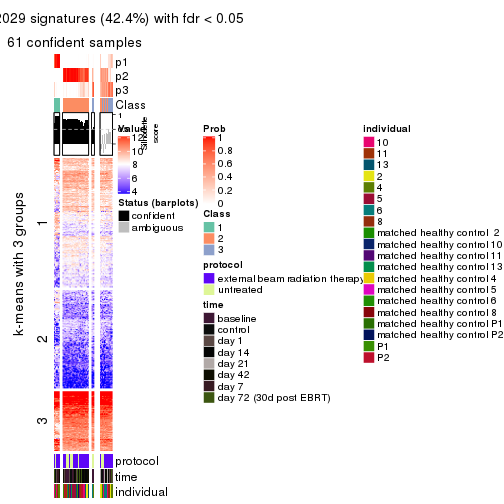
get_signatures(res, k = 4, scale_rows = FALSE)
get_signatures(res, k = 5, scale_rows = FALSE)
get_signatures(res, k = 6, scale_rows = FALSE)
Compare the overlap of signatures from different k:
compare_signatures(res)
get_signature() returns a data frame invisibly. TO get the list of signatures, the function
call should be assigned to a variable explicitly. In following code, if plot argument is set
to FALSE, no heatmap is plotted while only the differential analysis is performed.
# code only for demonstration
tb = get_signature(res, k = ..., plot = FALSE)
An example of the output of tb is:
#> which_row fdr mean_1 mean_2 scaled_mean_1 scaled_mean_2 km
#> 1 38 0.042760348 8.373488 9.131774 -0.5533452 0.5164555 1
#> 2 40 0.018707592 7.106213 8.469186 -0.6173731 0.5762149 1
#> 3 55 0.019134737 10.221463 11.207825 -0.6159697 0.5749050 1
#> 4 59 0.006059896 5.921854 7.869574 -0.6899429 0.6439467 1
#> 5 60 0.018055526 8.928898 10.211722 -0.6204761 0.5791110 1
#> 6 98 0.009384629 15.714769 14.887706 0.6635654 -0.6193277 2
...
The columns in tb are:
which_row: row indices corresponding to the input matrix.fdr: FDR for the differential test. mean_x: The mean value in group x.scaled_mean_x: The mean value in group x after rows are scaled.km: Row groups if k-means clustering is applied to rows.UMAP plot which shows how samples are separated.
dimension_reduction(res, k = 2, method = "UMAP")
dimension_reduction(res, k = 3, method = "UMAP")
dimension_reduction(res, k = 4, method = "UMAP")
dimension_reduction(res, k = 5, method = "UMAP")
dimension_reduction(res, k = 6, method = "UMAP")
Following heatmap shows how subgroups are split when increasing k:
collect_classes(res)
Test correlation between subgroups and known annotations. If the known annotation is numeric, one-way ANOVA test is applied, and if the known annotation is discrete, chi-squared contingency table test is applied.
test_to_known_factors(res)
#> n protocol(p) time(p) individual(p) k
#> SD:mclust 78 0.09050 0.4268 0.000101 2
#> SD:mclust 61 0.01133 0.2610 0.000102 3
#> SD:mclust 55 0.02369 0.2188 0.000121 4
#> SD:mclust 68 0.00449 0.0925 0.000295 5
#> SD:mclust 55 0.00169 0.0770 0.000951 6
If matrix rows can be associated to genes, consider to use GO_Enrichment(res,
...) to perform function enrichment for the signature genes.
The object with results only for a single top-value method and a single partition method can be extracted as:
res = res_list["SD", "NMF"]
# you can also extract it by
# res = res_list["SD:NMF"]
A summary of res and all the functions that can be applied to it:
res
#> A 'ConsensusPartition' object with k = 2, 3, 4, 5, 6.
#> On a matrix with 51941 rows and 80 columns.
#> Top rows (1000, 2000, 3000, 4000, 5000) are extracted by 'SD' method.
#> Subgroups are detected by 'NMF' method.
#> Performed in total 1250 partitions by row resampling.
#> Best k for subgroups seems to be 3.
#>
#> Following methods can be applied to this 'ConsensusPartition' object:
#> [1] "cola_report" "collect_classes" "collect_plots"
#> [4] "collect_stats" "colnames" "compare_signatures"
#> [7] "consensus_heatmap" "dimension_reduction" "functional_enrichment"
#> [10] "get_anno_col" "get_anno" "get_classes"
#> [13] "get_consensus" "get_matrix" "get_membership"
#> [16] "get_param" "get_signatures" "get_stats"
#> [19] "is_best_k" "is_stable_k" "membership_heatmap"
#> [22] "ncol" "nrow" "plot_ecdf"
#> [25] "rownames" "select_partition_number" "show"
#> [28] "suggest_best_k" "test_to_known_factors"
collect_plots() function collects all the plots made from res for all k (number of partitions)
into one single page to provide an easy and fast comparison between different k.
collect_plots(res)
The plots are:
k and the heatmap of
predicted classes for each k.k.k.k.All the plots in panels can be made by individual functions and they are plotted later in this section.
select_partition_number() produces several plots showing different
statistics for choosing “optimized” k. There are following statistics:
k;k, the area increased is defined as \(A_k - A_{k-1}\).The detailed explanations of these statistics can be found in the cola vignette.
Generally speaking, lower PAC score, higher mean silhouette score or higher
concordance corresponds to better partition. Rand index and Jaccard index
measure how similar the current partition is compared to partition with k-1.
If they are too similar, we won't accept k is better than k-1.
select_partition_number(res)
The numeric values for all these statistics can be obtained by get_stats().
get_stats(res)
#> k 1-PAC mean_silhouette concordance area_increased Rand Jaccard
#> 2 2 0.871 0.902 0.961 0.4168 0.585 0.585
#> 3 3 0.573 0.746 0.883 0.5161 0.656 0.466
#> 4 4 0.480 0.613 0.749 0.1384 0.816 0.552
#> 5 5 0.500 0.561 0.734 0.0617 0.946 0.818
#> 6 6 0.544 0.474 0.698 0.0402 0.946 0.803
suggest_best_k() suggests the best \(k\) based on these statistics. The rules are as follows:
NA.suggest_best_k(res)
#> [1] 3
Following shows the table of the partitions (You need to click the show/hide
code output link to see it). The membership matrix (columns with name p*)
is inferred by
clue::cl_consensus()
function with the SE method. Basically the value in the membership matrix
represents the probability to belong to a certain group. The finall class
label for an item is determined with the group with highest probability it
belongs to.
In get_classes() function, the entropy is calculated from the membership
matrix and the silhouette score is calculated from the consensus matrix.
cbind(get_classes(res, k = 2), get_membership(res, k = 2))
#> class entropy silhouette p1 p2
#> GSM753604 1 0.0000 0.9340 1.000 0.000
#> GSM753620 2 0.0000 0.9662 0.000 1.000
#> GSM753628 2 0.0000 0.9662 0.000 1.000
#> GSM753636 2 0.0000 0.9662 0.000 1.000
#> GSM753644 2 0.0000 0.9662 0.000 1.000
#> GSM753572 2 0.0000 0.9662 0.000 1.000
#> GSM753580 2 0.0000 0.9662 0.000 1.000
#> GSM753588 2 0.0000 0.9662 0.000 1.000
#> GSM753596 2 0.0000 0.9662 0.000 1.000
#> GSM753612 2 0.0000 0.9662 0.000 1.000
#> GSM753603 2 0.0000 0.9662 0.000 1.000
#> GSM753619 2 0.0000 0.9662 0.000 1.000
#> GSM753627 2 0.0000 0.9662 0.000 1.000
#> GSM753635 2 0.0000 0.9662 0.000 1.000
#> GSM753643 2 0.0000 0.9662 0.000 1.000
#> GSM753571 2 0.0000 0.9662 0.000 1.000
#> GSM753579 2 0.0000 0.9662 0.000 1.000
#> GSM753587 2 0.0000 0.9662 0.000 1.000
#> GSM753595 2 0.0000 0.9662 0.000 1.000
#> GSM753611 2 0.0000 0.9662 0.000 1.000
#> GSM753605 1 0.0000 0.9340 1.000 0.000
#> GSM753621 1 0.0000 0.9340 1.000 0.000
#> GSM753629 2 0.0000 0.9662 0.000 1.000
#> GSM753637 2 0.0000 0.9662 0.000 1.000
#> GSM753645 2 0.1633 0.9479 0.024 0.976
#> GSM753573 1 0.0000 0.9340 1.000 0.000
#> GSM753581 2 0.0000 0.9662 0.000 1.000
#> GSM753589 2 0.0000 0.9662 0.000 1.000
#> GSM753597 2 0.0000 0.9662 0.000 1.000
#> GSM753613 2 0.0000 0.9662 0.000 1.000
#> GSM753606 2 0.6712 0.7765 0.176 0.824
#> GSM753622 1 0.0000 0.9340 1.000 0.000
#> GSM753630 2 0.0000 0.9662 0.000 1.000
#> GSM753638 2 0.0000 0.9662 0.000 1.000
#> GSM753646 1 0.0000 0.9340 1.000 0.000
#> GSM753574 2 0.0000 0.9662 0.000 1.000
#> GSM753582 2 0.0000 0.9662 0.000 1.000
#> GSM753590 2 0.0000 0.9662 0.000 1.000
#> GSM753598 2 0.0000 0.9662 0.000 1.000
#> GSM753614 2 0.0000 0.9662 0.000 1.000
#> GSM753607 2 0.1184 0.9545 0.016 0.984
#> GSM753623 1 0.9996 0.0377 0.512 0.488
#> GSM753631 2 0.0000 0.9662 0.000 1.000
#> GSM753639 2 0.0000 0.9662 0.000 1.000
#> GSM753647 2 0.9393 0.4349 0.356 0.644
#> GSM753575 2 0.0000 0.9662 0.000 1.000
#> GSM753583 1 0.4161 0.8689 0.916 0.084
#> GSM753591 2 0.1414 0.9515 0.020 0.980
#> GSM753599 2 0.0000 0.9662 0.000 1.000
#> GSM753615 2 0.2948 0.9229 0.052 0.948
#> GSM753608 1 0.0000 0.9340 1.000 0.000
#> GSM753624 1 0.0000 0.9340 1.000 0.000
#> GSM753632 2 0.0000 0.9662 0.000 1.000
#> GSM753640 2 0.0000 0.9662 0.000 1.000
#> GSM753648 1 0.0000 0.9340 1.000 0.000
#> GSM753576 1 0.9635 0.3800 0.612 0.388
#> GSM753584 2 0.9170 0.4877 0.332 0.668
#> GSM753592 2 0.6343 0.7991 0.160 0.840
#> GSM753600 2 0.0000 0.9662 0.000 1.000
#> GSM753616 2 0.0000 0.9662 0.000 1.000
#> GSM753609 2 0.0376 0.9634 0.004 0.996
#> GSM753625 1 0.0000 0.9340 1.000 0.000
#> GSM753633 2 0.0000 0.9662 0.000 1.000
#> GSM753641 2 0.0000 0.9662 0.000 1.000
#> GSM753649 1 0.0000 0.9340 1.000 0.000
#> GSM753577 1 0.9248 0.4979 0.660 0.340
#> GSM753585 1 0.0000 0.9340 1.000 0.000
#> GSM753593 1 0.0000 0.9340 1.000 0.000
#> GSM753601 2 0.0000 0.9662 0.000 1.000
#> GSM753617 1 0.2778 0.9014 0.952 0.048
#> GSM753610 2 0.9896 0.1767 0.440 0.560
#> GSM753626 1 0.0000 0.9340 1.000 0.000
#> GSM753634 2 0.0000 0.9662 0.000 1.000
#> GSM753642 1 0.0000 0.9340 1.000 0.000
#> GSM753650 1 0.0000 0.9340 1.000 0.000
#> GSM753578 1 0.0000 0.9340 1.000 0.000
#> GSM753586 1 0.1843 0.9163 0.972 0.028
#> GSM753594 2 0.3584 0.9085 0.068 0.932
#> GSM753602 2 0.0000 0.9662 0.000 1.000
#> GSM753618 2 0.5178 0.8570 0.116 0.884
cbind(get_classes(res, k = 3), get_membership(res, k = 3))
#> class entropy silhouette p1 p2 p3
#> GSM753604 1 0.0000 0.9210 1.000 0.000 0.000
#> GSM753620 2 0.0237 0.8516 0.004 0.996 0.000
#> GSM753628 2 0.0237 0.8535 0.000 0.996 0.004
#> GSM753636 2 0.1163 0.8559 0.000 0.972 0.028
#> GSM753644 2 0.1289 0.8399 0.032 0.968 0.000
#> GSM753572 2 0.5216 0.6899 0.000 0.740 0.260
#> GSM753580 2 0.0237 0.8535 0.000 0.996 0.004
#> GSM753588 3 0.6308 0.0485 0.000 0.492 0.508
#> GSM753596 2 0.5760 0.5434 0.000 0.672 0.328
#> GSM753612 3 0.5859 0.5069 0.000 0.344 0.656
#> GSM753603 2 0.0237 0.8532 0.000 0.996 0.004
#> GSM753619 2 0.1860 0.8266 0.052 0.948 0.000
#> GSM753627 2 0.0000 0.8523 0.000 1.000 0.000
#> GSM753635 2 0.0237 0.8513 0.004 0.996 0.000
#> GSM753643 2 0.1529 0.8352 0.040 0.960 0.000
#> GSM753571 2 0.1643 0.8554 0.000 0.956 0.044
#> GSM753579 2 0.6252 0.1669 0.000 0.556 0.444
#> GSM753587 2 0.6260 0.1639 0.000 0.552 0.448
#> GSM753595 2 0.3116 0.8338 0.000 0.892 0.108
#> GSM753611 3 0.5178 0.6297 0.000 0.256 0.744
#> GSM753605 1 0.0000 0.9210 1.000 0.000 0.000
#> GSM753621 1 0.0237 0.9191 0.996 0.004 0.000
#> GSM753629 2 0.2165 0.8524 0.000 0.936 0.064
#> GSM753637 2 0.0892 0.8456 0.020 0.980 0.000
#> GSM753645 2 0.4702 0.6494 0.212 0.788 0.000
#> GSM753573 1 0.0000 0.9210 1.000 0.000 0.000
#> GSM753581 3 0.6252 0.2084 0.000 0.444 0.556
#> GSM753589 2 0.3941 0.7962 0.000 0.844 0.156
#> GSM753597 2 0.1643 0.8548 0.000 0.956 0.044
#> GSM753613 2 0.2711 0.8454 0.000 0.912 0.088
#> GSM753606 2 0.5254 0.5721 0.264 0.736 0.000
#> GSM753622 1 0.0237 0.9206 0.996 0.000 0.004
#> GSM753630 2 0.0000 0.8523 0.000 1.000 0.000
#> GSM753638 2 0.0592 0.8547 0.000 0.988 0.012
#> GSM753646 1 0.0000 0.9210 1.000 0.000 0.000
#> GSM753574 2 0.4062 0.7917 0.000 0.836 0.164
#> GSM753582 3 0.6168 0.3386 0.000 0.412 0.588
#> GSM753590 3 0.5138 0.6531 0.000 0.252 0.748
#> GSM753598 3 0.5968 0.4608 0.000 0.364 0.636
#> GSM753614 3 0.0424 0.8369 0.000 0.008 0.992
#> GSM753607 3 0.0237 0.8366 0.000 0.004 0.996
#> GSM753623 1 0.6280 0.1565 0.540 0.460 0.000
#> GSM753631 2 0.2878 0.8440 0.000 0.904 0.096
#> GSM753639 2 0.2165 0.8529 0.000 0.936 0.064
#> GSM753647 2 0.6398 0.3452 0.372 0.620 0.008
#> GSM753575 3 0.1289 0.8343 0.000 0.032 0.968
#> GSM753583 3 0.0747 0.8306 0.016 0.000 0.984
#> GSM753591 3 0.0237 0.8356 0.004 0.000 0.996
#> GSM753599 3 0.6267 0.1757 0.000 0.452 0.548
#> GSM753615 3 0.0237 0.8356 0.004 0.000 0.996
#> GSM753608 1 0.6008 0.4337 0.628 0.000 0.372
#> GSM753624 3 0.3619 0.7152 0.136 0.000 0.864
#> GSM753632 2 0.4399 0.7686 0.000 0.812 0.188
#> GSM753640 2 0.4235 0.7898 0.000 0.824 0.176
#> GSM753648 1 0.0000 0.9210 1.000 0.000 0.000
#> GSM753576 3 0.0592 0.8328 0.012 0.000 0.988
#> GSM753584 3 0.0424 0.8347 0.008 0.000 0.992
#> GSM753592 3 0.0000 0.8361 0.000 0.000 1.000
#> GSM753600 2 0.3412 0.8242 0.000 0.876 0.124
#> GSM753616 3 0.3038 0.7993 0.000 0.104 0.896
#> GSM753609 3 0.1163 0.8350 0.000 0.028 0.972
#> GSM753625 1 0.0592 0.9180 0.988 0.000 0.012
#> GSM753633 2 0.3551 0.8227 0.000 0.868 0.132
#> GSM753641 2 0.5291 0.6648 0.000 0.732 0.268
#> GSM753649 1 0.0424 0.9197 0.992 0.000 0.008
#> GSM753577 3 0.0747 0.8306 0.016 0.000 0.984
#> GSM753585 3 0.1753 0.8057 0.048 0.000 0.952
#> GSM753593 3 0.4291 0.6512 0.180 0.000 0.820
#> GSM753601 3 0.2448 0.8156 0.000 0.076 0.924
#> GSM753617 3 0.0892 0.8279 0.020 0.000 0.980
#> GSM753610 3 0.0424 0.8347 0.008 0.000 0.992
#> GSM753626 1 0.3816 0.8047 0.852 0.000 0.148
#> GSM753634 3 0.3192 0.7949 0.000 0.112 0.888
#> GSM753642 1 0.0000 0.9210 1.000 0.000 0.000
#> GSM753650 1 0.0747 0.9160 0.984 0.000 0.016
#> GSM753578 1 0.1753 0.8958 0.952 0.000 0.048
#> GSM753586 3 0.1163 0.8226 0.028 0.000 0.972
#> GSM753594 3 0.0983 0.8374 0.004 0.016 0.980
#> GSM753602 3 0.3686 0.7726 0.000 0.140 0.860
#> GSM753618 3 0.0424 0.8347 0.008 0.000 0.992
cbind(get_classes(res, k = 4), get_membership(res, k = 4))
#> class entropy silhouette p1 p2 p3 p4
#> GSM753604 1 0.3067 0.8302 0.888 0.024 0.084 0.004
#> GSM753620 2 0.3300 0.5824 0.008 0.848 0.144 0.000
#> GSM753628 2 0.1902 0.6585 0.000 0.932 0.064 0.004
#> GSM753636 3 0.5474 0.6537 0.008 0.300 0.668 0.024
#> GSM753644 2 0.4635 0.3918 0.012 0.720 0.268 0.000
#> GSM753572 3 0.7540 0.4837 0.000 0.328 0.468 0.204
#> GSM753580 2 0.2197 0.6519 0.004 0.916 0.080 0.000
#> GSM753588 2 0.5440 0.3753 0.000 0.596 0.020 0.384
#> GSM753596 2 0.4818 0.6252 0.004 0.772 0.044 0.180
#> GSM753612 2 0.7393 0.0117 0.020 0.448 0.096 0.436
#> GSM753603 2 0.0188 0.6821 0.000 0.996 0.004 0.000
#> GSM753619 2 0.4420 0.4601 0.012 0.748 0.240 0.000
#> GSM753627 2 0.1637 0.6657 0.000 0.940 0.060 0.000
#> GSM753635 2 0.4584 0.3213 0.004 0.696 0.300 0.000
#> GSM753643 2 0.4059 0.5143 0.012 0.788 0.200 0.000
#> GSM753571 3 0.5894 0.4357 0.000 0.428 0.536 0.036
#> GSM753579 2 0.5268 0.4732 0.004 0.636 0.012 0.348
#> GSM753587 2 0.5003 0.5442 0.000 0.676 0.016 0.308
#> GSM753595 2 0.1888 0.6895 0.000 0.940 0.016 0.044
#> GSM753611 4 0.6420 0.5057 0.004 0.268 0.096 0.632
#> GSM753605 1 0.0779 0.8577 0.980 0.000 0.016 0.004
#> GSM753621 3 0.5055 -0.0981 0.368 0.000 0.624 0.008
#> GSM753629 2 0.1406 0.6881 0.000 0.960 0.016 0.024
#> GSM753637 2 0.4594 0.3720 0.008 0.712 0.280 0.000
#> GSM753645 3 0.6739 0.5381 0.120 0.304 0.576 0.000
#> GSM753573 1 0.2081 0.8409 0.916 0.000 0.084 0.000
#> GSM753581 2 0.5822 0.3920 0.004 0.576 0.028 0.392
#> GSM753589 2 0.4160 0.6532 0.012 0.828 0.028 0.132
#> GSM753597 2 0.1406 0.6863 0.000 0.960 0.024 0.016
#> GSM753613 2 0.2578 0.6790 0.000 0.912 0.052 0.036
#> GSM753606 2 0.6673 0.3485 0.200 0.636 0.160 0.004
#> GSM753622 1 0.1042 0.8587 0.972 0.000 0.020 0.008
#> GSM753630 2 0.1557 0.6662 0.000 0.944 0.056 0.000
#> GSM753638 3 0.5865 0.5734 0.008 0.364 0.600 0.028
#> GSM753646 1 0.1109 0.8579 0.968 0.000 0.028 0.004
#> GSM753574 3 0.5881 0.6780 0.000 0.240 0.676 0.084
#> GSM753582 2 0.5928 0.1333 0.000 0.508 0.036 0.456
#> GSM753590 4 0.6166 0.1585 0.008 0.412 0.036 0.544
#> GSM753598 2 0.6923 0.3912 0.036 0.572 0.052 0.340
#> GSM753614 4 0.1406 0.7928 0.000 0.024 0.016 0.960
#> GSM753607 4 0.3508 0.7780 0.004 0.060 0.064 0.872
#> GSM753623 3 0.4663 0.5501 0.148 0.064 0.788 0.000
#> GSM753631 2 0.2907 0.6853 0.004 0.900 0.064 0.032
#> GSM753639 3 0.5989 0.6466 0.004 0.300 0.640 0.056
#> GSM753647 3 0.4954 0.5677 0.112 0.044 0.804 0.040
#> GSM753575 4 0.4655 0.5641 0.004 0.000 0.312 0.684
#> GSM753583 4 0.1510 0.7912 0.016 0.000 0.028 0.956
#> GSM753591 4 0.3304 0.7824 0.012 0.052 0.048 0.888
#> GSM753599 2 0.5464 0.5214 0.008 0.656 0.020 0.316
#> GSM753615 4 0.4218 0.7082 0.012 0.008 0.184 0.796
#> GSM753608 1 0.8283 0.3504 0.472 0.032 0.204 0.292
#> GSM753624 4 0.5773 0.4894 0.044 0.000 0.336 0.620
#> GSM753632 2 0.3761 0.6679 0.000 0.852 0.068 0.080
#> GSM753640 3 0.5432 0.6846 0.000 0.136 0.740 0.124
#> GSM753648 1 0.0376 0.8578 0.992 0.000 0.004 0.004
#> GSM753576 4 0.5548 0.3789 0.024 0.000 0.388 0.588
#> GSM753584 4 0.0524 0.7924 0.008 0.004 0.000 0.988
#> GSM753592 4 0.2976 0.7529 0.008 0.000 0.120 0.872
#> GSM753600 2 0.1798 0.6900 0.000 0.944 0.016 0.040
#> GSM753616 4 0.4706 0.7307 0.000 0.140 0.072 0.788
#> GSM753609 4 0.4136 0.7706 0.008 0.060 0.092 0.840
#> GSM753625 1 0.1042 0.8562 0.972 0.000 0.020 0.008
#> GSM753633 2 0.3144 0.6817 0.000 0.884 0.044 0.072
#> GSM753641 3 0.5593 0.6199 0.016 0.072 0.744 0.168
#> GSM753649 1 0.4456 0.6949 0.716 0.000 0.280 0.004
#> GSM753577 4 0.2944 0.7456 0.004 0.000 0.128 0.868
#> GSM753585 4 0.2224 0.7849 0.032 0.000 0.040 0.928
#> GSM753593 4 0.4153 0.7320 0.132 0.000 0.048 0.820
#> GSM753601 4 0.4389 0.7506 0.000 0.116 0.072 0.812
#> GSM753617 4 0.1722 0.7867 0.008 0.000 0.048 0.944
#> GSM753610 4 0.5905 0.7253 0.060 0.100 0.084 0.756
#> GSM753626 1 0.6942 0.5824 0.576 0.004 0.292 0.128
#> GSM753634 4 0.5041 0.7488 0.008 0.116 0.092 0.784
#> GSM753642 1 0.3942 0.7476 0.764 0.000 0.236 0.000
#> GSM753650 1 0.1042 0.8542 0.972 0.000 0.020 0.008
#> GSM753578 1 0.2654 0.8448 0.888 0.000 0.108 0.004
#> GSM753586 4 0.1911 0.7932 0.020 0.004 0.032 0.944
#> GSM753594 4 0.5037 0.7359 0.040 0.112 0.048 0.800
#> GSM753602 4 0.5743 0.1960 0.004 0.396 0.024 0.576
#> GSM753618 4 0.2060 0.7862 0.016 0.000 0.052 0.932
cbind(get_classes(res, k = 5), get_membership(res, k = 5))
#> class entropy silhouette p1 p2 p3 p4 p5
#> GSM753604 1 0.4323 0.5861 0.656 0.000 0.332 0.000 0.012
#> GSM753620 2 0.4062 0.5717 0.000 0.764 0.040 0.000 0.196
#> GSM753628 2 0.2674 0.6343 0.000 0.856 0.004 0.000 0.140
#> GSM753636 5 0.3544 0.7126 0.000 0.164 0.008 0.016 0.812
#> GSM753644 2 0.4620 0.2574 0.000 0.592 0.016 0.000 0.392
#> GSM753572 5 0.6072 0.6010 0.000 0.188 0.012 0.184 0.616
#> GSM753580 2 0.3239 0.6252 0.000 0.828 0.012 0.004 0.156
#> GSM753588 2 0.5364 0.5225 0.000 0.648 0.072 0.272 0.008
#> GSM753596 2 0.4243 0.6396 0.000 0.772 0.056 0.168 0.004
#> GSM753612 2 0.6658 0.2876 0.000 0.496 0.208 0.288 0.008
#> GSM753603 2 0.2036 0.6749 0.000 0.920 0.024 0.000 0.056
#> GSM753619 2 0.5119 0.4186 0.004 0.656 0.060 0.000 0.280
#> GSM753627 2 0.2660 0.6441 0.000 0.864 0.008 0.000 0.128
#> GSM753635 2 0.4794 0.0311 0.000 0.520 0.012 0.004 0.464
#> GSM753643 2 0.4650 0.4534 0.004 0.684 0.032 0.000 0.280
#> GSM753571 5 0.4479 0.6364 0.000 0.264 0.000 0.036 0.700
#> GSM753579 2 0.5456 0.5339 0.000 0.628 0.048 0.304 0.020
#> GSM753587 2 0.4352 0.6272 0.004 0.748 0.032 0.212 0.004
#> GSM753595 2 0.2199 0.6862 0.000 0.916 0.008 0.060 0.016
#> GSM753611 4 0.6797 0.3995 0.004 0.264 0.052 0.568 0.112
#> GSM753605 1 0.1410 0.7972 0.940 0.000 0.060 0.000 0.000
#> GSM753621 3 0.6377 0.2281 0.128 0.000 0.448 0.008 0.416
#> GSM753629 2 0.2775 0.6771 0.000 0.888 0.036 0.008 0.068
#> GSM753637 2 0.4752 0.1738 0.000 0.556 0.012 0.004 0.428
#> GSM753645 5 0.6391 0.3886 0.048 0.112 0.228 0.000 0.612
#> GSM753573 1 0.2927 0.7724 0.872 0.000 0.068 0.000 0.060
#> GSM753581 2 0.5756 0.4266 0.004 0.556 0.028 0.380 0.032
#> GSM753589 2 0.4296 0.6608 0.008 0.804 0.056 0.116 0.016
#> GSM753597 2 0.1485 0.6803 0.000 0.948 0.020 0.032 0.000
#> GSM753613 2 0.3494 0.6789 0.000 0.848 0.012 0.056 0.084
#> GSM753606 3 0.7043 0.3533 0.092 0.324 0.516 0.008 0.060
#> GSM753622 1 0.1442 0.8019 0.952 0.000 0.032 0.004 0.012
#> GSM753630 2 0.2462 0.6471 0.000 0.880 0.008 0.000 0.112
#> GSM753638 5 0.4029 0.6806 0.000 0.232 0.000 0.024 0.744
#> GSM753646 1 0.1106 0.7967 0.964 0.000 0.024 0.000 0.012
#> GSM753574 5 0.3816 0.7193 0.000 0.100 0.016 0.056 0.828
#> GSM753582 2 0.6420 0.2412 0.000 0.472 0.048 0.420 0.060
#> GSM753590 2 0.5785 0.2028 0.000 0.504 0.068 0.420 0.008
#> GSM753598 2 0.5786 0.5565 0.008 0.668 0.100 0.208 0.016
#> GSM753614 4 0.1820 0.7073 0.000 0.020 0.020 0.940 0.020
#> GSM753607 4 0.5804 0.5346 0.004 0.088 0.268 0.628 0.012
#> GSM753623 5 0.4615 0.4607 0.048 0.012 0.168 0.008 0.764
#> GSM753631 2 0.3690 0.6662 0.000 0.832 0.068 0.008 0.092
#> GSM753639 5 0.3803 0.7292 0.000 0.124 0.012 0.044 0.820
#> GSM753647 5 0.3403 0.5975 0.032 0.008 0.064 0.028 0.868
#> GSM753575 4 0.5341 0.4481 0.000 0.004 0.052 0.580 0.364
#> GSM753583 4 0.2002 0.7091 0.020 0.000 0.020 0.932 0.028
#> GSM753591 4 0.4366 0.6508 0.004 0.072 0.140 0.780 0.004
#> GSM753599 2 0.4729 0.5907 0.000 0.708 0.052 0.236 0.004
#> GSM753615 4 0.3621 0.6634 0.000 0.000 0.020 0.788 0.192
#> GSM753608 3 0.6391 0.4515 0.104 0.040 0.684 0.124 0.048
#> GSM753624 4 0.6897 0.3120 0.008 0.000 0.264 0.440 0.288
#> GSM753632 2 0.5108 0.6383 0.000 0.728 0.020 0.092 0.160
#> GSM753640 5 0.3429 0.6795 0.000 0.040 0.012 0.100 0.848
#> GSM753648 1 0.1364 0.8022 0.952 0.000 0.036 0.000 0.012
#> GSM753576 4 0.5663 0.3316 0.000 0.000 0.080 0.508 0.412
#> GSM753584 4 0.2026 0.7043 0.004 0.024 0.032 0.932 0.008
#> GSM753592 4 0.4059 0.6648 0.000 0.000 0.052 0.776 0.172
#> GSM753600 2 0.2993 0.6895 0.000 0.884 0.024 0.044 0.048
#> GSM753616 4 0.5414 0.5785 0.004 0.192 0.024 0.704 0.076
#> GSM753609 4 0.6405 0.3047 0.004 0.068 0.408 0.488 0.032
#> GSM753625 1 0.0671 0.7958 0.980 0.000 0.016 0.004 0.000
#> GSM753633 2 0.3729 0.6764 0.000 0.844 0.064 0.036 0.056
#> GSM753641 5 0.4454 0.6286 0.020 0.024 0.028 0.132 0.796
#> GSM753649 1 0.6510 0.2304 0.484 0.000 0.232 0.000 0.284
#> GSM753577 4 0.4637 0.6494 0.000 0.000 0.100 0.740 0.160
#> GSM753585 4 0.3275 0.7092 0.008 0.000 0.064 0.860 0.068
#> GSM753593 4 0.4044 0.6538 0.120 0.000 0.076 0.800 0.004
#> GSM753601 4 0.5305 0.6230 0.000 0.160 0.032 0.720 0.088
#> GSM753617 4 0.2460 0.7070 0.004 0.000 0.024 0.900 0.072
#> GSM753610 4 0.7214 0.2341 0.036 0.104 0.400 0.440 0.020
#> GSM753626 3 0.6806 0.3814 0.196 0.004 0.592 0.052 0.156
#> GSM753634 4 0.6961 0.5111 0.004 0.084 0.264 0.560 0.088
#> GSM753642 1 0.5844 0.5227 0.600 0.000 0.244 0.000 0.156
#> GSM753650 1 0.0771 0.7950 0.976 0.000 0.020 0.004 0.000
#> GSM753578 1 0.4671 0.6554 0.712 0.000 0.240 0.008 0.040
#> GSM753586 4 0.3499 0.7067 0.012 0.020 0.080 0.860 0.028
#> GSM753594 4 0.5684 0.5847 0.052 0.140 0.084 0.716 0.008
#> GSM753602 2 0.5850 0.1773 0.004 0.480 0.060 0.448 0.008
#> GSM753618 4 0.2476 0.7091 0.012 0.000 0.020 0.904 0.064
cbind(get_classes(res, k = 6), get_membership(res, k = 6))
#> class entropy silhouette p1 p2 p3 p4 p5 p6
#> GSM753604 1 0.615 0.3322 0.500 0.000 0.288 0.008 0.008 0.196
#> GSM753620 2 0.452 0.5457 0.000 0.728 0.032 0.000 0.188 0.052
#> GSM753628 2 0.237 0.6623 0.000 0.888 0.004 0.000 0.084 0.024
#> GSM753636 5 0.312 0.6258 0.000 0.124 0.012 0.020 0.840 0.004
#> GSM753644 2 0.542 0.1503 0.000 0.524 0.044 0.000 0.392 0.040
#> GSM753572 5 0.598 0.5192 0.000 0.156 0.040 0.172 0.620 0.012
#> GSM753580 2 0.390 0.6391 0.000 0.800 0.024 0.004 0.120 0.052
#> GSM753588 2 0.545 0.5499 0.000 0.656 0.012 0.180 0.016 0.136
#> GSM753596 2 0.420 0.6446 0.004 0.772 0.016 0.128 0.000 0.080
#> GSM753612 2 0.761 -0.0286 0.008 0.376 0.144 0.208 0.000 0.264
#> GSM753603 2 0.122 0.6812 0.000 0.956 0.004 0.000 0.012 0.028
#> GSM753619 2 0.565 0.4059 0.004 0.604 0.088 0.000 0.268 0.036
#> GSM753627 2 0.258 0.6567 0.000 0.876 0.004 0.000 0.088 0.032
#> GSM753635 5 0.487 -0.0174 0.000 0.472 0.016 0.000 0.484 0.028
#> GSM753643 2 0.514 0.3568 0.000 0.612 0.040 0.000 0.308 0.040
#> GSM753571 5 0.391 0.5636 0.000 0.224 0.012 0.024 0.740 0.000
#> GSM753579 2 0.488 0.5245 0.000 0.640 0.012 0.296 0.008 0.044
#> GSM753587 2 0.419 0.6521 0.000 0.768 0.016 0.156 0.008 0.052
#> GSM753595 2 0.284 0.6800 0.000 0.880 0.016 0.044 0.008 0.052
#> GSM753611 4 0.719 0.2810 0.004 0.264 0.036 0.504 0.100 0.092
#> GSM753605 1 0.193 0.7821 0.916 0.000 0.048 0.000 0.000 0.036
#> GSM753621 3 0.652 0.4602 0.056 0.000 0.476 0.000 0.312 0.156
#> GSM753629 2 0.320 0.6824 0.000 0.856 0.012 0.016 0.036 0.080
#> GSM753637 2 0.494 -0.0197 0.000 0.488 0.020 0.000 0.464 0.028
#> GSM753645 5 0.652 0.1597 0.024 0.092 0.240 0.000 0.568 0.076
#> GSM753573 1 0.191 0.7798 0.920 0.000 0.052 0.000 0.024 0.004
#> GSM753581 2 0.528 0.3805 0.000 0.544 0.016 0.388 0.012 0.040
#> GSM753589 2 0.395 0.6625 0.004 0.796 0.008 0.100 0.004 0.088
#> GSM753597 2 0.243 0.6787 0.000 0.900 0.020 0.020 0.004 0.056
#> GSM753613 2 0.378 0.6824 0.000 0.832 0.024 0.056 0.052 0.036
#> GSM753606 6 0.751 -0.0863 0.044 0.248 0.308 0.004 0.032 0.364
#> GSM753622 1 0.177 0.7876 0.924 0.000 0.060 0.000 0.004 0.012
#> GSM753630 2 0.263 0.6629 0.000 0.880 0.008 0.000 0.068 0.044
#> GSM753638 5 0.327 0.6222 0.000 0.140 0.008 0.032 0.820 0.000
#> GSM753646 1 0.119 0.7882 0.956 0.000 0.032 0.000 0.004 0.008
#> GSM753574 5 0.351 0.6160 0.000 0.048 0.032 0.064 0.844 0.012
#> GSM753582 2 0.622 0.1726 0.004 0.464 0.028 0.416 0.032 0.056
#> GSM753590 2 0.602 0.1948 0.000 0.456 0.012 0.364 0.000 0.168
#> GSM753598 2 0.655 0.4604 0.008 0.580 0.056 0.212 0.016 0.128
#> GSM753614 4 0.284 0.5965 0.004 0.036 0.008 0.884 0.016 0.052
#> GSM753607 6 0.479 0.2785 0.000 0.036 0.008 0.428 0.000 0.528
#> GSM753623 5 0.431 0.2932 0.024 0.008 0.248 0.000 0.708 0.012
#> GSM753631 2 0.488 0.6543 0.000 0.744 0.032 0.028 0.064 0.132
#> GSM753639 5 0.306 0.6293 0.004 0.076 0.012 0.040 0.864 0.004
#> GSM753647 5 0.276 0.5213 0.012 0.000 0.080 0.036 0.872 0.000
#> GSM753575 4 0.596 0.2978 0.000 0.000 0.048 0.500 0.368 0.084
#> GSM753583 4 0.329 0.5815 0.016 0.004 0.028 0.856 0.016 0.080
#> GSM753591 4 0.388 0.4793 0.000 0.024 0.040 0.784 0.000 0.152
#> GSM753599 2 0.534 0.5386 0.000 0.644 0.028 0.220 0.000 0.108
#> GSM753615 4 0.483 0.5545 0.000 0.008 0.036 0.716 0.188 0.052
#> GSM753608 6 0.572 0.1528 0.032 0.008 0.264 0.080 0.004 0.612
#> GSM753624 4 0.788 -0.1200 0.008 0.000 0.196 0.292 0.264 0.240
#> GSM753632 2 0.517 0.6315 0.000 0.720 0.016 0.068 0.136 0.060
#> GSM753640 5 0.284 0.6009 0.004 0.020 0.032 0.068 0.876 0.000
#> GSM753648 1 0.120 0.7897 0.944 0.000 0.056 0.000 0.000 0.000
#> GSM753576 5 0.580 -0.1393 0.000 0.000 0.044 0.412 0.476 0.068
#> GSM753584 4 0.264 0.5855 0.004 0.000 0.036 0.884 0.008 0.068
#> GSM753592 4 0.460 0.5345 0.000 0.000 0.024 0.724 0.176 0.076
#> GSM753600 2 0.265 0.6852 0.000 0.892 0.016 0.012 0.028 0.052
#> GSM753616 4 0.602 0.4030 0.000 0.216 0.032 0.628 0.060 0.064
#> GSM753609 6 0.510 0.5217 0.000 0.024 0.052 0.288 0.004 0.632
#> GSM753625 1 0.120 0.7891 0.960 0.000 0.012 0.004 0.004 0.020
#> GSM753633 2 0.495 0.6216 0.000 0.724 0.036 0.032 0.036 0.172
#> GSM753641 5 0.326 0.5438 0.000 0.004 0.028 0.132 0.828 0.008
#> GSM753649 3 0.753 0.2521 0.276 0.000 0.344 0.008 0.268 0.104
#> GSM753577 4 0.533 0.4459 0.000 0.000 0.032 0.664 0.152 0.152
#> GSM753585 4 0.471 0.5105 0.020 0.000 0.040 0.748 0.044 0.148
#> GSM753593 4 0.457 0.4908 0.080 0.000 0.048 0.760 0.004 0.108
#> GSM753601 4 0.690 0.3636 0.004 0.192 0.048 0.576 0.084 0.096
#> GSM753617 4 0.267 0.6010 0.000 0.000 0.012 0.880 0.044 0.064
#> GSM753610 6 0.548 0.5125 0.008 0.036 0.056 0.292 0.000 0.608
#> GSM753626 3 0.672 0.2524 0.072 0.000 0.568 0.052 0.080 0.228
#> GSM753634 6 0.806 0.2298 0.020 0.036 0.148 0.320 0.100 0.376
#> GSM753642 1 0.611 0.1513 0.488 0.000 0.348 0.000 0.132 0.032
#> GSM753650 1 0.130 0.7870 0.952 0.000 0.012 0.004 0.000 0.032
#> GSM753578 1 0.566 0.4793 0.580 0.000 0.284 0.008 0.012 0.116
#> GSM753586 4 0.475 0.5514 0.000 0.000 0.096 0.736 0.048 0.120
#> GSM753594 4 0.468 0.4883 0.016 0.092 0.036 0.760 0.000 0.096
#> GSM753602 2 0.618 0.2547 0.000 0.480 0.036 0.368 0.004 0.112
#> GSM753618 4 0.332 0.6133 0.000 0.008 0.028 0.852 0.068 0.044
Heatmaps for the consensus matrix. It visualizes the probability of two samples to be in a same group.
consensus_heatmap(res, k = 2)
consensus_heatmap(res, k = 3)
consensus_heatmap(res, k = 4)
consensus_heatmap(res, k = 5)
consensus_heatmap(res, k = 6)

Heatmaps for the membership of samples in all partitions to see how consistent they are:
membership_heatmap(res, k = 2)
membership_heatmap(res, k = 3)
membership_heatmap(res, k = 4)
membership_heatmap(res, k = 5)
membership_heatmap(res, k = 6)
As soon as we have had the classes for columns, we can look for signatures which are significantly different between classes which can be candidate marks for certain classes. Following are the heatmaps for signatures.
Signature heatmaps where rows are scaled:
get_signatures(res, k = 2)
#> Error in mat[ceiling(1:nr/h_ratio), ceiling(1:nc/w_ratio), drop = FALSE]: subscript out of bounds
get_signatures(res, k = 3)
get_signatures(res, k = 4)
#> Error in mat[ceiling(1:nr/h_ratio), ceiling(1:nc/w_ratio), drop = FALSE]: subscript out of bounds

get_signatures(res, k = 5)
#> Error in mat[ceiling(1:nr/h_ratio), ceiling(1:nc/w_ratio), drop = FALSE]: subscript out of bounds

get_signatures(res, k = 6)
#> Error: The width or height of the raster image is zero, maybe you forget to turn off the
#> previous graphic device or it was corrupted. Run `dev.off()` to close it.

Signature heatmaps where rows are not scaled:
get_signatures(res, k = 2, scale_rows = FALSE)
get_signatures(res, k = 3, scale_rows = FALSE)

get_signatures(res, k = 4, scale_rows = FALSE)
get_signatures(res, k = 5, scale_rows = FALSE)
get_signatures(res, k = 6, scale_rows = FALSE)
#> Error in mat[ceiling(1:nr/h_ratio), ceiling(1:nc/w_ratio), drop = FALSE]: subscript out of bounds
Compare the overlap of signatures from different k:
compare_signatures(res)
get_signature() returns a data frame invisibly. TO get the list of signatures, the function
call should be assigned to a variable explicitly. In following code, if plot argument is set
to FALSE, no heatmap is plotted while only the differential analysis is performed.
# code only for demonstration
tb = get_signature(res, k = ..., plot = FALSE)
An example of the output of tb is:
#> which_row fdr mean_1 mean_2 scaled_mean_1 scaled_mean_2 km
#> 1 38 0.042760348 8.373488 9.131774 -0.5533452 0.5164555 1
#> 2 40 0.018707592 7.106213 8.469186 -0.6173731 0.5762149 1
#> 3 55 0.019134737 10.221463 11.207825 -0.6159697 0.5749050 1
#> 4 59 0.006059896 5.921854 7.869574 -0.6899429 0.6439467 1
#> 5 60 0.018055526 8.928898 10.211722 -0.6204761 0.5791110 1
#> 6 98 0.009384629 15.714769 14.887706 0.6635654 -0.6193277 2
...
The columns in tb are:
which_row: row indices corresponding to the input matrix.fdr: FDR for the differential test. mean_x: The mean value in group x.scaled_mean_x: The mean value in group x after rows are scaled.km: Row groups if k-means clustering is applied to rows.UMAP plot which shows how samples are separated.
dimension_reduction(res, k = 2, method = "UMAP")
dimension_reduction(res, k = 3, method = "UMAP")
dimension_reduction(res, k = 4, method = "UMAP")
dimension_reduction(res, k = 5, method = "UMAP")
dimension_reduction(res, k = 6, method = "UMAP")
Following heatmap shows how subgroups are split when increasing k:
collect_classes(res)
Test correlation between subgroups and known annotations. If the known annotation is numeric, one-way ANOVA test is applied, and if the known annotation is discrete, chi-squared contingency table test is applied.
test_to_known_factors(res)
#> n protocol(p) time(p) individual(p) k
#> SD:NMF 74 0.02134 0.04777 5.82e-02 2
#> SD:NMF 70 0.00137 0.00326 1.54e-03 3
#> SD:NMF 61 0.00355 0.02163 2.07e-05 4
#> SD:NMF 57 0.00447 0.03811 6.29e-05 5
#> SD:NMF 47 0.01723 0.23122 1.13e-05 6
If matrix rows can be associated to genes, consider to use GO_Enrichment(res,
...) to perform function enrichment for the signature genes.
The object with results only for a single top-value method and a single partition method can be extracted as:
res = res_list["CV", "hclust"]
# you can also extract it by
# res = res_list["CV:hclust"]
A summary of res and all the functions that can be applied to it:
res
#> A 'ConsensusPartition' object with k = 2, 3, 4, 5, 6.
#> On a matrix with 51941 rows and 80 columns.
#> Top rows (1000, 2000, 3000, 4000, 5000) are extracted by 'CV' method.
#> Subgroups are detected by 'hclust' method.
#> Performed in total 1250 partitions by row resampling.
#> Best k for subgroups seems to be 2.
#>
#> Following methods can be applied to this 'ConsensusPartition' object:
#> [1] "cola_report" "collect_classes" "collect_plots"
#> [4] "collect_stats" "colnames" "compare_signatures"
#> [7] "consensus_heatmap" "dimension_reduction" "functional_enrichment"
#> [10] "get_anno_col" "get_anno" "get_classes"
#> [13] "get_consensus" "get_matrix" "get_membership"
#> [16] "get_param" "get_signatures" "get_stats"
#> [19] "is_best_k" "is_stable_k" "membership_heatmap"
#> [22] "ncol" "nrow" "plot_ecdf"
#> [25] "rownames" "select_partition_number" "show"
#> [28] "suggest_best_k" "test_to_known_factors"
collect_plots() function collects all the plots made from res for all k (number of partitions)
into one single page to provide an easy and fast comparison between different k.
collect_plots(res)
The plots are:
k and the heatmap of
predicted classes for each k.k.k.k.All the plots in panels can be made by individual functions and they are plotted later in this section.
select_partition_number() produces several plots showing different
statistics for choosing “optimized” k. There are following statistics:
k;k, the area increased is defined as \(A_k - A_{k-1}\).The detailed explanations of these statistics can be found in the cola vignette.
Generally speaking, lower PAC score, higher mean silhouette score or higher
concordance corresponds to better partition. Rand index and Jaccard index
measure how similar the current partition is compared to partition with k-1.
If they are too similar, we won't accept k is better than k-1.
select_partition_number(res)
The numeric values for all these statistics can be obtained by get_stats().
get_stats(res)
#> k 1-PAC mean_silhouette concordance area_increased Rand Jaccard
#> 2 2 1.000 0.996 0.998 0.2201 0.778 0.778
#> 3 3 1.000 0.948 0.983 0.0459 0.997 0.996
#> 4 4 0.909 0.934 0.968 0.1273 0.997 0.997
#> 5 5 0.895 0.904 0.948 0.0849 0.997 0.997
#> 6 6 0.827 0.880 0.956 0.0756 0.978 0.971
suggest_best_k() suggests the best \(k\) based on these statistics. The rules are as follows:
NA.suggest_best_k(res)
#> [1] 2
Following shows the table of the partitions (You need to click the show/hide
code output link to see it). The membership matrix (columns with name p*)
is inferred by
clue::cl_consensus()
function with the SE method. Basically the value in the membership matrix
represents the probability to belong to a certain group. The finall class
label for an item is determined with the group with highest probability it
belongs to.
In get_classes() function, the entropy is calculated from the membership
matrix and the silhouette score is calculated from the consensus matrix.
cbind(get_classes(res, k = 2), get_membership(res, k = 2))
#> class entropy silhouette p1 p2
#> GSM753604 1 0.3274 0.946 0.940 0.060
#> GSM753620 2 0.0000 0.999 0.000 1.000
#> GSM753628 2 0.0000 0.999 0.000 1.000
#> GSM753636 2 0.0000 0.999 0.000 1.000
#> GSM753644 2 0.0000 0.999 0.000 1.000
#> GSM753572 2 0.0000 0.999 0.000 1.000
#> GSM753580 2 0.0000 0.999 0.000 1.000
#> GSM753588 2 0.0000 0.999 0.000 1.000
#> GSM753596 2 0.0000 0.999 0.000 1.000
#> GSM753612 2 0.0000 0.999 0.000 1.000
#> GSM753603 2 0.0000 0.999 0.000 1.000
#> GSM753619 2 0.0000 0.999 0.000 1.000
#> GSM753627 2 0.0000 0.999 0.000 1.000
#> GSM753635 2 0.0000 0.999 0.000 1.000
#> GSM753643 2 0.0000 0.999 0.000 1.000
#> GSM753571 2 0.0000 0.999 0.000 1.000
#> GSM753579 2 0.0000 0.999 0.000 1.000
#> GSM753587 2 0.0000 0.999 0.000 1.000
#> GSM753595 2 0.0000 0.999 0.000 1.000
#> GSM753611 2 0.0000 0.999 0.000 1.000
#> GSM753605 1 0.0000 0.984 1.000 0.000
#> GSM753621 2 0.0000 0.999 0.000 1.000
#> GSM753629 2 0.0000 0.999 0.000 1.000
#> GSM753637 2 0.0000 0.999 0.000 1.000
#> GSM753645 2 0.0000 0.999 0.000 1.000
#> GSM753573 1 0.0000 0.984 1.000 0.000
#> GSM753581 2 0.0000 0.999 0.000 1.000
#> GSM753589 2 0.0000 0.999 0.000 1.000
#> GSM753597 2 0.0000 0.999 0.000 1.000
#> GSM753613 2 0.0000 0.999 0.000 1.000
#> GSM753606 2 0.0000 0.999 0.000 1.000
#> GSM753622 1 0.0000 0.984 1.000 0.000
#> GSM753630 2 0.0000 0.999 0.000 1.000
#> GSM753638 2 0.0000 0.999 0.000 1.000
#> GSM753646 1 0.0000 0.984 1.000 0.000
#> GSM753574 2 0.0000 0.999 0.000 1.000
#> GSM753582 2 0.0000 0.999 0.000 1.000
#> GSM753590 2 0.0000 0.999 0.000 1.000
#> GSM753598 2 0.0000 0.999 0.000 1.000
#> GSM753614 2 0.0000 0.999 0.000 1.000
#> GSM753607 2 0.0000 0.999 0.000 1.000
#> GSM753623 2 0.0000 0.999 0.000 1.000
#> GSM753631 2 0.0000 0.999 0.000 1.000
#> GSM753639 2 0.0000 0.999 0.000 1.000
#> GSM753647 2 0.0000 0.999 0.000 1.000
#> GSM753575 2 0.0000 0.999 0.000 1.000
#> GSM753583 2 0.0000 0.999 0.000 1.000
#> GSM753591 2 0.0000 0.999 0.000 1.000
#> GSM753599 2 0.0000 0.999 0.000 1.000
#> GSM753615 2 0.0000 0.999 0.000 1.000
#> GSM753608 2 0.1184 0.984 0.016 0.984
#> GSM753624 2 0.0000 0.999 0.000 1.000
#> GSM753632 2 0.0000 0.999 0.000 1.000
#> GSM753640 2 0.0000 0.999 0.000 1.000
#> GSM753648 1 0.0000 0.984 1.000 0.000
#> GSM753576 2 0.0000 0.999 0.000 1.000
#> GSM753584 2 0.0000 0.999 0.000 1.000
#> GSM753592 2 0.0000 0.999 0.000 1.000
#> GSM753600 2 0.0000 0.999 0.000 1.000
#> GSM753616 2 0.0000 0.999 0.000 1.000
#> GSM753609 2 0.0000 0.999 0.000 1.000
#> GSM753625 1 0.0000 0.984 1.000 0.000
#> GSM753633 2 0.0000 0.999 0.000 1.000
#> GSM753641 2 0.0000 0.999 0.000 1.000
#> GSM753649 2 0.0672 0.992 0.008 0.992
#> GSM753577 2 0.0000 0.999 0.000 1.000
#> GSM753585 2 0.0000 0.999 0.000 1.000
#> GSM753593 2 0.0000 0.999 0.000 1.000
#> GSM753601 2 0.0000 0.999 0.000 1.000
#> GSM753617 2 0.0000 0.999 0.000 1.000
#> GSM753610 2 0.0000 0.999 0.000 1.000
#> GSM753626 2 0.0376 0.996 0.004 0.996
#> GSM753634 2 0.0000 0.999 0.000 1.000
#> GSM753642 1 0.2043 0.968 0.968 0.032
#> GSM753650 1 0.0000 0.984 1.000 0.000
#> GSM753578 1 0.2948 0.953 0.948 0.052
#> GSM753586 2 0.0672 0.992 0.008 0.992
#> GSM753594 2 0.0000 0.999 0.000 1.000
#> GSM753602 2 0.0000 0.999 0.000 1.000
#> GSM753618 2 0.0000 0.999 0.000 1.000
cbind(get_classes(res, k = 3), get_membership(res, k = 3))
#> class entropy silhouette p1 p2 p3
#> GSM753604 1 0.5201 0.3621 0.760 0.004 0.236
#> GSM753620 2 0.0000 0.9963 0.000 1.000 0.000
#> GSM753628 2 0.0000 0.9963 0.000 1.000 0.000
#> GSM753636 2 0.0000 0.9963 0.000 1.000 0.000
#> GSM753644 2 0.0000 0.9963 0.000 1.000 0.000
#> GSM753572 2 0.0000 0.9963 0.000 1.000 0.000
#> GSM753580 2 0.0000 0.9963 0.000 1.000 0.000
#> GSM753588 2 0.0000 0.9963 0.000 1.000 0.000
#> GSM753596 2 0.0000 0.9963 0.000 1.000 0.000
#> GSM753612 2 0.0000 0.9963 0.000 1.000 0.000
#> GSM753603 2 0.0000 0.9963 0.000 1.000 0.000
#> GSM753619 2 0.0000 0.9963 0.000 1.000 0.000
#> GSM753627 2 0.0000 0.9963 0.000 1.000 0.000
#> GSM753635 2 0.0000 0.9963 0.000 1.000 0.000
#> GSM753643 2 0.0000 0.9963 0.000 1.000 0.000
#> GSM753571 2 0.0000 0.9963 0.000 1.000 0.000
#> GSM753579 2 0.0000 0.9963 0.000 1.000 0.000
#> GSM753587 2 0.0000 0.9963 0.000 1.000 0.000
#> GSM753595 2 0.0000 0.9963 0.000 1.000 0.000
#> GSM753611 2 0.0000 0.9963 0.000 1.000 0.000
#> GSM753605 1 0.0000 0.8501 1.000 0.000 0.000
#> GSM753621 2 0.0424 0.9923 0.000 0.992 0.008
#> GSM753629 2 0.0000 0.9963 0.000 1.000 0.000
#> GSM753637 2 0.0000 0.9963 0.000 1.000 0.000
#> GSM753645 2 0.0000 0.9963 0.000 1.000 0.000
#> GSM753573 1 0.0000 0.8501 1.000 0.000 0.000
#> GSM753581 2 0.0000 0.9963 0.000 1.000 0.000
#> GSM753589 2 0.0000 0.9963 0.000 1.000 0.000
#> GSM753597 2 0.0000 0.9963 0.000 1.000 0.000
#> GSM753613 2 0.0237 0.9950 0.000 0.996 0.004
#> GSM753606 2 0.0000 0.9963 0.000 1.000 0.000
#> GSM753622 1 0.0000 0.8501 1.000 0.000 0.000
#> GSM753630 2 0.0000 0.9963 0.000 1.000 0.000
#> GSM753638 2 0.0000 0.9963 0.000 1.000 0.000
#> GSM753646 1 0.0000 0.8501 1.000 0.000 0.000
#> GSM753574 2 0.0000 0.9963 0.000 1.000 0.000
#> GSM753582 2 0.0237 0.9950 0.000 0.996 0.004
#> GSM753590 2 0.0000 0.9963 0.000 1.000 0.000
#> GSM753598 2 0.0237 0.9950 0.000 0.996 0.004
#> GSM753614 2 0.0000 0.9963 0.000 1.000 0.000
#> GSM753607 2 0.0237 0.9950 0.000 0.996 0.004
#> GSM753623 2 0.0237 0.9950 0.000 0.996 0.004
#> GSM753631 2 0.0000 0.9963 0.000 1.000 0.000
#> GSM753639 2 0.0000 0.9963 0.000 1.000 0.000
#> GSM753647 2 0.0000 0.9963 0.000 1.000 0.000
#> GSM753575 2 0.0237 0.9950 0.000 0.996 0.004
#> GSM753583 2 0.0237 0.9950 0.000 0.996 0.004
#> GSM753591 2 0.0000 0.9963 0.000 1.000 0.000
#> GSM753599 2 0.0000 0.9963 0.000 1.000 0.000
#> GSM753615 2 0.0237 0.9950 0.000 0.996 0.004
#> GSM753608 2 0.2711 0.9106 0.000 0.912 0.088
#> GSM753624 2 0.0424 0.9923 0.000 0.992 0.008
#> GSM753632 2 0.0000 0.9963 0.000 1.000 0.000
#> GSM753640 2 0.0000 0.9963 0.000 1.000 0.000
#> GSM753648 1 0.0000 0.8501 1.000 0.000 0.000
#> GSM753576 2 0.0237 0.9950 0.000 0.996 0.004
#> GSM753584 2 0.0000 0.9963 0.000 1.000 0.000
#> GSM753592 2 0.0237 0.9950 0.000 0.996 0.004
#> GSM753600 2 0.0000 0.9963 0.000 1.000 0.000
#> GSM753616 2 0.0237 0.9950 0.000 0.996 0.004
#> GSM753609 2 0.0237 0.9950 0.000 0.996 0.004
#> GSM753625 1 0.0000 0.8501 1.000 0.000 0.000
#> GSM753633 2 0.0000 0.9963 0.000 1.000 0.000
#> GSM753641 2 0.0000 0.9963 0.000 1.000 0.000
#> GSM753649 2 0.1289 0.9707 0.000 0.968 0.032
#> GSM753577 2 0.0000 0.9963 0.000 1.000 0.000
#> GSM753585 2 0.0237 0.9950 0.000 0.996 0.004
#> GSM753593 2 0.0237 0.9950 0.000 0.996 0.004
#> GSM753601 2 0.0000 0.9963 0.000 1.000 0.000
#> GSM753617 2 0.0237 0.9950 0.000 0.996 0.004
#> GSM753610 2 0.0237 0.9939 0.000 0.996 0.004
#> GSM753626 2 0.0892 0.9825 0.000 0.980 0.020
#> GSM753634 2 0.0237 0.9950 0.000 0.996 0.004
#> GSM753642 3 0.6386 0.0000 0.412 0.004 0.584
#> GSM753650 1 0.0000 0.8501 1.000 0.000 0.000
#> GSM753578 1 0.6274 -0.0262 0.544 0.000 0.456
#> GSM753586 2 0.1411 0.9668 0.000 0.964 0.036
#> GSM753594 2 0.0000 0.9963 0.000 1.000 0.000
#> GSM753602 2 0.0237 0.9950 0.000 0.996 0.004
#> GSM753618 2 0.0237 0.9950 0.000 0.996 0.004
cbind(get_classes(res, k = 4), get_membership(res, k = 4))
#> class entropy silhouette p1 p2 p3 p4
#> GSM753604 1 0.5321 0.536 0.716 0.000 0.228 0.056
#> GSM753620 2 0.0000 0.978 0.000 1.000 0.000 0.000
#> GSM753628 2 0.0188 0.978 0.000 0.996 0.000 0.004
#> GSM753636 2 0.0336 0.978 0.000 0.992 0.000 0.008
#> GSM753644 2 0.0000 0.978 0.000 1.000 0.000 0.000
#> GSM753572 2 0.0336 0.978 0.000 0.992 0.000 0.008
#> GSM753580 2 0.0188 0.978 0.000 0.996 0.000 0.004
#> GSM753588 2 0.0188 0.978 0.000 0.996 0.000 0.004
#> GSM753596 2 0.0000 0.978 0.000 1.000 0.000 0.000
#> GSM753612 2 0.1854 0.951 0.000 0.940 0.012 0.048
#> GSM753603 2 0.0336 0.978 0.000 0.992 0.000 0.008
#> GSM753619 2 0.0657 0.978 0.000 0.984 0.004 0.012
#> GSM753627 2 0.0188 0.978 0.000 0.996 0.000 0.004
#> GSM753635 2 0.0000 0.978 0.000 1.000 0.000 0.000
#> GSM753643 2 0.0188 0.978 0.000 0.996 0.000 0.004
#> GSM753571 2 0.0188 0.978 0.000 0.996 0.000 0.004
#> GSM753579 2 0.0376 0.978 0.000 0.992 0.004 0.004
#> GSM753587 2 0.0188 0.978 0.000 0.996 0.000 0.004
#> GSM753595 2 0.0336 0.978 0.000 0.992 0.000 0.008
#> GSM753611 2 0.0779 0.975 0.000 0.980 0.004 0.016
#> GSM753605 1 0.0000 0.949 1.000 0.000 0.000 0.000
#> GSM753621 2 0.3013 0.907 0.000 0.888 0.032 0.080
#> GSM753629 2 0.0336 0.978 0.000 0.992 0.000 0.008
#> GSM753637 2 0.0000 0.978 0.000 1.000 0.000 0.000
#> GSM753645 2 0.1913 0.948 0.000 0.940 0.020 0.040
#> GSM753573 1 0.0000 0.949 1.000 0.000 0.000 0.000
#> GSM753581 2 0.0524 0.978 0.000 0.988 0.004 0.008
#> GSM753589 2 0.0376 0.978 0.000 0.992 0.004 0.004
#> GSM753597 2 0.0188 0.978 0.000 0.996 0.000 0.004
#> GSM753613 2 0.0657 0.978 0.000 0.984 0.004 0.012
#> GSM753606 2 0.0657 0.976 0.000 0.984 0.004 0.012
#> GSM753622 1 0.0000 0.949 1.000 0.000 0.000 0.000
#> GSM753630 2 0.0000 0.978 0.000 1.000 0.000 0.000
#> GSM753638 2 0.0000 0.978 0.000 1.000 0.000 0.000
#> GSM753646 1 0.0000 0.949 1.000 0.000 0.000 0.000
#> GSM753574 2 0.0000 0.978 0.000 1.000 0.000 0.000
#> GSM753582 2 0.0657 0.977 0.000 0.984 0.004 0.012
#> GSM753590 2 0.0188 0.978 0.000 0.996 0.000 0.004
#> GSM753598 2 0.1004 0.973 0.000 0.972 0.004 0.024
#> GSM753614 2 0.0376 0.978 0.000 0.992 0.004 0.004
#> GSM753607 2 0.0657 0.976 0.000 0.984 0.004 0.012
#> GSM753623 2 0.0376 0.978 0.000 0.992 0.004 0.004
#> GSM753631 2 0.0000 0.978 0.000 1.000 0.000 0.000
#> GSM753639 2 0.0188 0.978 0.000 0.996 0.000 0.004
#> GSM753647 2 0.0336 0.978 0.000 0.992 0.000 0.008
#> GSM753575 2 0.0779 0.975 0.000 0.980 0.004 0.016
#> GSM753583 2 0.0804 0.976 0.000 0.980 0.012 0.008
#> GSM753591 2 0.0592 0.978 0.000 0.984 0.000 0.016
#> GSM753599 2 0.0336 0.978 0.000 0.992 0.000 0.008
#> GSM753615 2 0.0524 0.977 0.000 0.988 0.004 0.008
#> GSM753608 2 0.5102 0.742 0.000 0.764 0.100 0.136
#> GSM753624 2 0.1151 0.973 0.000 0.968 0.008 0.024
#> GSM753632 2 0.0336 0.978 0.000 0.992 0.000 0.008
#> GSM753640 2 0.0188 0.978 0.000 0.996 0.000 0.004
#> GSM753648 1 0.0000 0.949 1.000 0.000 0.000 0.000
#> GSM753576 2 0.1042 0.973 0.000 0.972 0.008 0.020
#> GSM753584 2 0.1388 0.966 0.000 0.960 0.012 0.028
#> GSM753592 2 0.0804 0.976 0.000 0.980 0.008 0.012
#> GSM753600 2 0.0000 0.978 0.000 1.000 0.000 0.000
#> GSM753616 2 0.0657 0.977 0.000 0.984 0.004 0.012
#> GSM753609 2 0.0779 0.976 0.000 0.980 0.004 0.016
#> GSM753625 1 0.0000 0.949 1.000 0.000 0.000 0.000
#> GSM753633 2 0.0469 0.977 0.000 0.988 0.000 0.012
#> GSM753641 2 0.0188 0.978 0.000 0.996 0.000 0.004
#> GSM753649 2 0.3505 0.872 0.000 0.864 0.048 0.088
#> GSM753577 2 0.0927 0.974 0.000 0.976 0.008 0.016
#> GSM753585 2 0.0672 0.977 0.000 0.984 0.008 0.008
#> GSM753593 2 0.1584 0.960 0.000 0.952 0.012 0.036
#> GSM753601 2 0.0188 0.978 0.000 0.996 0.000 0.004
#> GSM753617 2 0.1388 0.968 0.000 0.960 0.012 0.028
#> GSM753610 2 0.1833 0.955 0.000 0.944 0.024 0.032
#> GSM753626 2 0.4919 0.766 0.000 0.772 0.076 0.152
#> GSM753634 2 0.0804 0.977 0.000 0.980 0.008 0.012
#> GSM753642 3 0.3074 0.000 0.152 0.000 0.848 0.000
#> GSM753650 1 0.0000 0.949 1.000 0.000 0.000 0.000
#> GSM753578 4 0.4399 0.000 0.212 0.000 0.020 0.768
#> GSM753586 2 0.3667 0.863 0.000 0.856 0.056 0.088
#> GSM753594 2 0.1356 0.965 0.000 0.960 0.008 0.032
#> GSM753602 2 0.0376 0.978 0.000 0.992 0.004 0.004
#> GSM753618 2 0.1706 0.958 0.000 0.948 0.016 0.036
cbind(get_classes(res, k = 5), get_membership(res, k = 5))
#> class entropy silhouette p1 p2 p3 p4 p5
#> GSM753604 4 0.6576 -0.0871 0.352 0.000 0.212 0.436 0.000
#> GSM753620 2 0.0000 0.9643 0.000 1.000 0.000 0.000 0.000
#> GSM753628 2 0.0162 0.9641 0.000 0.996 0.000 0.000 0.004
#> GSM753636 2 0.0324 0.9645 0.000 0.992 0.000 0.004 0.004
#> GSM753644 2 0.0000 0.9643 0.000 1.000 0.000 0.000 0.000
#> GSM753572 2 0.0324 0.9645 0.000 0.992 0.000 0.004 0.004
#> GSM753580 2 0.0451 0.9648 0.000 0.988 0.000 0.004 0.008
#> GSM753588 2 0.0162 0.9641 0.000 0.996 0.000 0.000 0.004
#> GSM753596 2 0.0000 0.9643 0.000 1.000 0.000 0.000 0.000
#> GSM753612 2 0.2077 0.9179 0.000 0.908 0.000 0.008 0.084
#> GSM753603 2 0.0451 0.9642 0.000 0.988 0.000 0.008 0.004
#> GSM753619 2 0.0794 0.9612 0.000 0.972 0.000 0.000 0.028
#> GSM753627 2 0.0162 0.9641 0.000 0.996 0.000 0.000 0.004
#> GSM753635 2 0.0000 0.9643 0.000 1.000 0.000 0.000 0.000
#> GSM753643 2 0.0162 0.9648 0.000 0.996 0.000 0.004 0.000
#> GSM753571 2 0.0162 0.9647 0.000 0.996 0.000 0.004 0.000
#> GSM753579 2 0.0290 0.9649 0.000 0.992 0.000 0.000 0.008
#> GSM753587 2 0.0162 0.9641 0.000 0.996 0.000 0.000 0.004
#> GSM753595 2 0.0324 0.9646 0.000 0.992 0.000 0.004 0.004
#> GSM753611 2 0.0703 0.9615 0.000 0.976 0.000 0.000 0.024
#> GSM753605 1 0.0162 0.9945 0.996 0.000 0.004 0.000 0.000
#> GSM753621 2 0.3803 0.8146 0.000 0.804 0.000 0.056 0.140
#> GSM753629 2 0.0324 0.9645 0.000 0.992 0.000 0.004 0.004
#> GSM753637 2 0.0000 0.9643 0.000 1.000 0.000 0.000 0.000
#> GSM753645 2 0.2221 0.9143 0.000 0.912 0.000 0.036 0.052
#> GSM753573 1 0.0000 0.9991 1.000 0.000 0.000 0.000 0.000
#> GSM753581 2 0.0404 0.9647 0.000 0.988 0.000 0.000 0.012
#> GSM753589 2 0.0404 0.9642 0.000 0.988 0.000 0.000 0.012
#> GSM753597 2 0.0162 0.9642 0.000 0.996 0.000 0.000 0.004
#> GSM753613 2 0.0566 0.9648 0.000 0.984 0.000 0.004 0.012
#> GSM753606 2 0.1408 0.9446 0.000 0.948 0.000 0.008 0.044
#> GSM753622 1 0.0000 0.9991 1.000 0.000 0.000 0.000 0.000
#> GSM753630 2 0.0162 0.9649 0.000 0.996 0.000 0.004 0.000
#> GSM753638 2 0.0000 0.9643 0.000 1.000 0.000 0.000 0.000
#> GSM753646 1 0.0000 0.9991 1.000 0.000 0.000 0.000 0.000
#> GSM753574 2 0.0000 0.9643 0.000 1.000 0.000 0.000 0.000
#> GSM753582 2 0.0671 0.9634 0.000 0.980 0.000 0.004 0.016
#> GSM753590 2 0.0162 0.9642 0.000 0.996 0.000 0.000 0.004
#> GSM753598 2 0.1012 0.9607 0.000 0.968 0.000 0.012 0.020
#> GSM753614 2 0.0290 0.9648 0.000 0.992 0.000 0.000 0.008
#> GSM753607 2 0.0609 0.9629 0.000 0.980 0.000 0.000 0.020
#> GSM753623 2 0.0404 0.9644 0.000 0.988 0.000 0.000 0.012
#> GSM753631 2 0.0000 0.9643 0.000 1.000 0.000 0.000 0.000
#> GSM753639 2 0.0162 0.9641 0.000 0.996 0.000 0.000 0.004
#> GSM753647 2 0.0290 0.9650 0.000 0.992 0.000 0.000 0.008
#> GSM753575 2 0.0794 0.9604 0.000 0.972 0.000 0.000 0.028
#> GSM753583 2 0.0880 0.9602 0.000 0.968 0.000 0.000 0.032
#> GSM753591 2 0.0794 0.9623 0.000 0.972 0.000 0.000 0.028
#> GSM753599 2 0.0324 0.9646 0.000 0.992 0.000 0.004 0.004
#> GSM753615 2 0.0609 0.9627 0.000 0.980 0.000 0.000 0.020
#> GSM753608 2 0.5646 0.5222 0.000 0.632 0.000 0.156 0.212
#> GSM753624 2 0.1205 0.9563 0.000 0.956 0.000 0.004 0.040
#> GSM753632 2 0.0324 0.9645 0.000 0.992 0.000 0.004 0.004
#> GSM753640 2 0.0162 0.9647 0.000 0.996 0.000 0.004 0.000
#> GSM753648 1 0.0000 0.9991 1.000 0.000 0.000 0.000 0.000
#> GSM753576 2 0.1043 0.9563 0.000 0.960 0.000 0.000 0.040
#> GSM753584 2 0.1341 0.9474 0.000 0.944 0.000 0.000 0.056
#> GSM753592 2 0.1041 0.9591 0.000 0.964 0.000 0.004 0.032
#> GSM753600 2 0.0000 0.9643 0.000 1.000 0.000 0.000 0.000
#> GSM753616 2 0.0510 0.9643 0.000 0.984 0.000 0.000 0.016
#> GSM753609 2 0.0898 0.9607 0.000 0.972 0.000 0.020 0.008
#> GSM753625 1 0.0000 0.9991 1.000 0.000 0.000 0.000 0.000
#> GSM753633 2 0.0510 0.9643 0.000 0.984 0.000 0.000 0.016
#> GSM753641 2 0.0290 0.9650 0.000 0.992 0.000 0.000 0.008
#> GSM753649 2 0.4550 0.7428 0.000 0.760 0.004 0.100 0.136
#> GSM753577 2 0.0963 0.9579 0.000 0.964 0.000 0.000 0.036
#> GSM753585 2 0.0963 0.9583 0.000 0.964 0.000 0.000 0.036
#> GSM753593 2 0.1732 0.9295 0.000 0.920 0.000 0.000 0.080
#> GSM753601 2 0.0290 0.9644 0.000 0.992 0.000 0.000 0.008
#> GSM753617 2 0.1341 0.9499 0.000 0.944 0.000 0.000 0.056
#> GSM753610 2 0.1831 0.9277 0.000 0.920 0.000 0.004 0.076
#> GSM753626 2 0.4415 0.3281 0.000 0.552 0.004 0.000 0.444
#> GSM753634 2 0.0794 0.9627 0.000 0.972 0.000 0.000 0.028
#> GSM753642 3 0.0609 0.0000 0.020 0.000 0.980 0.000 0.000
#> GSM753650 1 0.0000 0.9991 1.000 0.000 0.000 0.000 0.000
#> GSM753578 4 0.5876 -0.0823 0.100 0.000 0.000 0.488 0.412
#> GSM753586 2 0.4844 0.7149 0.000 0.740 0.008 0.104 0.148
#> GSM753594 2 0.1282 0.9519 0.000 0.952 0.000 0.004 0.044
#> GSM753602 2 0.0451 0.9649 0.000 0.988 0.000 0.004 0.008
#> GSM753618 2 0.1341 0.9462 0.000 0.944 0.000 0.000 0.056
cbind(get_classes(res, k = 6), get_membership(res, k = 6))
#> class entropy silhouette p1 p2 p3 p4 p5 p6
#> GSM753604 4 0.2868 0.000 0.028 0.000 0.132 0.840 0.000 0.000
#> GSM753620 2 0.0000 0.954 0.000 1.000 0.000 0.000 0.000 0.000
#> GSM753628 2 0.0146 0.954 0.000 0.996 0.000 0.004 0.000 0.000
#> GSM753636 2 0.0291 0.954 0.000 0.992 0.000 0.004 0.004 0.000
#> GSM753644 2 0.0146 0.955 0.000 0.996 0.000 0.004 0.000 0.000
#> GSM753572 2 0.0291 0.954 0.000 0.992 0.000 0.004 0.004 0.000
#> GSM753580 2 0.0653 0.954 0.000 0.980 0.000 0.012 0.004 0.004
#> GSM753588 2 0.0146 0.954 0.000 0.996 0.000 0.004 0.000 0.000
#> GSM753596 2 0.0146 0.954 0.000 0.996 0.000 0.004 0.000 0.000
#> GSM753612 2 0.2663 0.866 0.000 0.876 0.000 0.028 0.012 0.084
#> GSM753603 2 0.0405 0.954 0.000 0.988 0.000 0.008 0.004 0.000
#> GSM753619 2 0.0909 0.950 0.000 0.968 0.000 0.012 0.000 0.020
#> GSM753627 2 0.0146 0.954 0.000 0.996 0.000 0.004 0.000 0.000
#> GSM753635 2 0.0000 0.954 0.000 1.000 0.000 0.000 0.000 0.000
#> GSM753643 2 0.0260 0.955 0.000 0.992 0.000 0.008 0.000 0.000
#> GSM753571 2 0.0146 0.954 0.000 0.996 0.000 0.000 0.004 0.000
#> GSM753579 2 0.0260 0.955 0.000 0.992 0.000 0.000 0.000 0.008
#> GSM753587 2 0.0146 0.954 0.000 0.996 0.000 0.004 0.000 0.000
#> GSM753595 2 0.0260 0.954 0.000 0.992 0.000 0.008 0.000 0.000
#> GSM753611 2 0.0777 0.951 0.000 0.972 0.000 0.004 0.000 0.024
#> GSM753605 1 0.0146 0.996 0.996 0.000 0.000 0.004 0.000 0.000
#> GSM753621 2 0.4391 0.699 0.000 0.764 0.004 0.076 0.028 0.128
#> GSM753629 2 0.0291 0.954 0.000 0.992 0.000 0.004 0.004 0.000
#> GSM753637 2 0.0000 0.954 0.000 1.000 0.000 0.000 0.000 0.000
#> GSM753645 2 0.2533 0.875 0.000 0.892 0.004 0.044 0.008 0.052
#> GSM753573 1 0.0000 0.999 1.000 0.000 0.000 0.000 0.000 0.000
#> GSM753581 2 0.0363 0.955 0.000 0.988 0.000 0.000 0.000 0.012
#> GSM753589 2 0.0520 0.955 0.000 0.984 0.000 0.008 0.000 0.008
#> GSM753597 2 0.0146 0.954 0.000 0.996 0.000 0.000 0.000 0.004
#> GSM753613 2 0.0665 0.954 0.000 0.980 0.000 0.008 0.004 0.008
#> GSM753606 2 0.1937 0.912 0.000 0.924 0.004 0.032 0.004 0.036
#> GSM753622 1 0.0000 0.999 1.000 0.000 0.000 0.000 0.000 0.000
#> GSM753630 2 0.0146 0.955 0.000 0.996 0.000 0.000 0.004 0.000
#> GSM753638 2 0.0000 0.954 0.000 1.000 0.000 0.000 0.000 0.000
#> GSM753646 1 0.0000 0.999 1.000 0.000 0.000 0.000 0.000 0.000
#> GSM753574 2 0.0146 0.954 0.000 0.996 0.000 0.004 0.000 0.000
#> GSM753582 2 0.0914 0.951 0.000 0.968 0.000 0.016 0.000 0.016
#> GSM753590 2 0.0146 0.954 0.000 0.996 0.000 0.000 0.000 0.004
#> GSM753598 2 0.1148 0.949 0.000 0.960 0.000 0.016 0.004 0.020
#> GSM753614 2 0.0260 0.955 0.000 0.992 0.000 0.000 0.000 0.008
#> GSM753607 2 0.0993 0.949 0.000 0.964 0.000 0.012 0.000 0.024
#> GSM753623 2 0.0622 0.954 0.000 0.980 0.000 0.008 0.000 0.012
#> GSM753631 2 0.0146 0.954 0.000 0.996 0.000 0.004 0.000 0.000
#> GSM753639 2 0.0146 0.954 0.000 0.996 0.000 0.004 0.000 0.000
#> GSM753647 2 0.0520 0.955 0.000 0.984 0.000 0.008 0.000 0.008
#> GSM753575 2 0.0713 0.951 0.000 0.972 0.000 0.000 0.000 0.028
#> GSM753583 2 0.1010 0.947 0.000 0.960 0.000 0.004 0.000 0.036
#> GSM753591 2 0.1074 0.949 0.000 0.960 0.000 0.012 0.000 0.028
#> GSM753599 2 0.0260 0.954 0.000 0.992 0.000 0.008 0.000 0.000
#> GSM753615 2 0.0806 0.952 0.000 0.972 0.000 0.008 0.000 0.020
#> GSM753608 2 0.6278 0.212 0.000 0.584 0.008 0.164 0.056 0.188
#> GSM753624 2 0.1297 0.942 0.000 0.948 0.000 0.012 0.000 0.040
#> GSM753632 2 0.0291 0.954 0.000 0.992 0.000 0.004 0.004 0.000
#> GSM753640 2 0.0146 0.954 0.000 0.996 0.000 0.000 0.004 0.000
#> GSM753648 1 0.0000 0.999 1.000 0.000 0.000 0.000 0.000 0.000
#> GSM753576 2 0.1152 0.943 0.000 0.952 0.000 0.004 0.000 0.044
#> GSM753584 2 0.1807 0.918 0.000 0.920 0.000 0.020 0.000 0.060
#> GSM753592 2 0.1226 0.944 0.000 0.952 0.000 0.004 0.004 0.040
#> GSM753600 2 0.0000 0.954 0.000 1.000 0.000 0.000 0.000 0.000
#> GSM753616 2 0.0820 0.953 0.000 0.972 0.000 0.016 0.000 0.012
#> GSM753609 2 0.1036 0.949 0.000 0.964 0.000 0.024 0.004 0.008
#> GSM753625 1 0.0000 0.999 1.000 0.000 0.000 0.000 0.000 0.000
#> GSM753633 2 0.0820 0.952 0.000 0.972 0.000 0.012 0.000 0.016
#> GSM753641 2 0.0291 0.955 0.000 0.992 0.000 0.004 0.000 0.004
#> GSM753649 2 0.5172 0.551 0.000 0.700 0.004 0.128 0.040 0.128
#> GSM753577 2 0.1082 0.945 0.000 0.956 0.000 0.004 0.000 0.040
#> GSM753585 2 0.1391 0.939 0.000 0.944 0.000 0.016 0.000 0.040
#> GSM753593 2 0.2250 0.887 0.000 0.888 0.000 0.020 0.000 0.092
#> GSM753601 2 0.0260 0.954 0.000 0.992 0.000 0.000 0.000 0.008
#> GSM753617 2 0.1349 0.937 0.000 0.940 0.000 0.004 0.000 0.056
#> GSM753610 2 0.2209 0.895 0.000 0.900 0.004 0.024 0.000 0.072
#> GSM753626 6 0.2491 0.000 0.000 0.164 0.000 0.000 0.000 0.836
#> GSM753634 2 0.1151 0.948 0.000 0.956 0.000 0.012 0.000 0.032
#> GSM753642 3 0.0260 0.000 0.008 0.000 0.992 0.000 0.000 0.000
#> GSM753650 1 0.0000 0.999 1.000 0.000 0.000 0.000 0.000 0.000
#> GSM753578 5 0.1007 0.000 0.044 0.000 0.000 0.000 0.956 0.000
#> GSM753586 2 0.5460 0.473 0.000 0.668 0.004 0.140 0.040 0.148
#> GSM753594 2 0.1633 0.927 0.000 0.932 0.000 0.024 0.000 0.044
#> GSM753602 2 0.0717 0.953 0.000 0.976 0.000 0.016 0.000 0.008
#> GSM753618 2 0.1625 0.926 0.000 0.928 0.000 0.012 0.000 0.060
Heatmaps for the consensus matrix. It visualizes the probability of two samples to be in a same group.
consensus_heatmap(res, k = 2)
consensus_heatmap(res, k = 3)
consensus_heatmap(res, k = 4)
consensus_heatmap(res, k = 5)
consensus_heatmap(res, k = 6)
Heatmaps for the membership of samples in all partitions to see how consistent they are:
membership_heatmap(res, k = 2)
membership_heatmap(res, k = 3)
membership_heatmap(res, k = 4)
membership_heatmap(res, k = 5)
membership_heatmap(res, k = 6)
As soon as we have had the classes for columns, we can look for signatures which are significantly different between classes which can be candidate marks for certain classes. Following are the heatmaps for signatures.
Signature heatmaps where rows are scaled:
get_signatures(res, k = 2)
get_signatures(res, k = 3)
#> Error in mat[ceiling(1:nr/h_ratio), ceiling(1:nc/w_ratio), drop = FALSE]: subscript out of bounds

get_signatures(res, k = 4)
#> Error in mat[ceiling(1:nr/h_ratio), ceiling(1:nc/w_ratio), drop = FALSE]: subscript out of bounds
get_signatures(res, k = 5)
#> Error in mat[ceiling(1:nr/h_ratio), ceiling(1:nc/w_ratio), drop = FALSE]: subscript out of bounds

get_signatures(res, k = 6)
#> Error in mat[ceiling(1:nr/h_ratio), ceiling(1:nc/w_ratio), drop = FALSE]: subscript out of bounds

Signature heatmaps where rows are not scaled:
get_signatures(res, k = 2, scale_rows = FALSE)
get_signatures(res, k = 3, scale_rows = FALSE)
get_signatures(res, k = 4, scale_rows = FALSE)
get_signatures(res, k = 5, scale_rows = FALSE)
get_signatures(res, k = 6, scale_rows = FALSE)
Compare the overlap of signatures from different k:
compare_signatures(res)
get_signature() returns a data frame invisibly. TO get the list of signatures, the function
call should be assigned to a variable explicitly. In following code, if plot argument is set
to FALSE, no heatmap is plotted while only the differential analysis is performed.
# code only for demonstration
tb = get_signature(res, k = ..., plot = FALSE)
An example of the output of tb is:
#> which_row fdr mean_1 mean_2 scaled_mean_1 scaled_mean_2 km
#> 1 38 0.042760348 8.373488 9.131774 -0.5533452 0.5164555 1
#> 2 40 0.018707592 7.106213 8.469186 -0.6173731 0.5762149 1
#> 3 55 0.019134737 10.221463 11.207825 -0.6159697 0.5749050 1
#> 4 59 0.006059896 5.921854 7.869574 -0.6899429 0.6439467 1
#> 5 60 0.018055526 8.928898 10.211722 -0.6204761 0.5791110 1
#> 6 98 0.009384629 15.714769 14.887706 0.6635654 -0.6193277 2
...
The columns in tb are:
which_row: row indices corresponding to the input matrix.fdr: FDR for the differential test. mean_x: The mean value in group x.scaled_mean_x: The mean value in group x after rows are scaled.km: Row groups if k-means clustering is applied to rows.UMAP plot which shows how samples are separated.
dimension_reduction(res, k = 2, method = "UMAP")

dimension_reduction(res, k = 3, method = "UMAP")
dimension_reduction(res, k = 4, method = "UMAP")
dimension_reduction(res, k = 5, method = "UMAP")
dimension_reduction(res, k = 6, method = "UMAP")
Following heatmap shows how subgroups are split when increasing k:
collect_classes(res)
Test correlation between subgroups and known annotations. If the known annotation is numeric, one-way ANOVA test is applied, and if the known annotation is discrete, chi-squared contingency table test is applied.
test_to_known_factors(res)
#> n protocol(p) time(p) individual(p) k
#> CV:hclust 80 0.435 0.444 0.259 2
#> CV:hclust 77 0.259 0.550 0.422 3
#> CV:hclust 78 0.638 0.733 0.145 4
#> CV:hclust 76 0.252 0.545 0.371 5
#> CV:hclust 74 0.238 0.537 0.395 6
If matrix rows can be associated to genes, consider to use GO_Enrichment(res,
...) to perform function enrichment for the signature genes.
The object with results only for a single top-value method and a single partition method can be extracted as:
res = res_list["CV", "kmeans"]
# you can also extract it by
# res = res_list["CV:kmeans"]
A summary of res and all the functions that can be applied to it:
res
#> A 'ConsensusPartition' object with k = 2, 3, 4, 5, 6.
#> On a matrix with 51941 rows and 80 columns.
#> Top rows (1000, 2000, 3000, 4000, 5000) are extracted by 'CV' method.
#> Subgroups are detected by 'kmeans' method.
#> Performed in total 1250 partitions by row resampling.
#> Best k for subgroups seems to be 2.
#>
#> Following methods can be applied to this 'ConsensusPartition' object:
#> [1] "cola_report" "collect_classes" "collect_plots"
#> [4] "collect_stats" "colnames" "compare_signatures"
#> [7] "consensus_heatmap" "dimension_reduction" "functional_enrichment"
#> [10] "get_anno_col" "get_anno" "get_classes"
#> [13] "get_consensus" "get_matrix" "get_membership"
#> [16] "get_param" "get_signatures" "get_stats"
#> [19] "is_best_k" "is_stable_k" "membership_heatmap"
#> [22] "ncol" "nrow" "plot_ecdf"
#> [25] "rownames" "select_partition_number" "show"
#> [28] "suggest_best_k" "test_to_known_factors"
collect_plots() function collects all the plots made from res for all k (number of partitions)
into one single page to provide an easy and fast comparison between different k.
collect_plots(res)
The plots are:
k and the heatmap of
predicted classes for each k.k.k.k.All the plots in panels can be made by individual functions and they are plotted later in this section.
select_partition_number() produces several plots showing different
statistics for choosing “optimized” k. There are following statistics:
k;k, the area increased is defined as \(A_k - A_{k-1}\).The detailed explanations of these statistics can be found in the cola vignette.
Generally speaking, lower PAC score, higher mean silhouette score or higher
concordance corresponds to better partition. Rand index and Jaccard index
measure how similar the current partition is compared to partition with k-1.
If they are too similar, we won't accept k is better than k-1.
select_partition_number(res)
The numeric values for all these statistics can be obtained by get_stats().
get_stats(res)
#> k 1-PAC mean_silhouette concordance area_increased Rand Jaccard
#> 2 2 1.000 1.000 1.000 0.2223 0.778 0.778
#> 3 3 0.581 0.841 0.898 1.3813 0.651 0.551
#> 4 4 0.510 0.676 0.843 0.1676 0.945 0.875
#> 5 5 0.523 0.697 0.811 0.0999 0.895 0.751
#> 6 6 0.546 0.514 0.756 0.0663 0.934 0.813
suggest_best_k() suggests the best \(k\) based on these statistics. The rules are as follows:
NA.suggest_best_k(res)
#> [1] 2
Following shows the table of the partitions (You need to click the show/hide
code output link to see it). The membership matrix (columns with name p*)
is inferred by
clue::cl_consensus()
function with the SE method. Basically the value in the membership matrix
represents the probability to belong to a certain group. The finall class
label for an item is determined with the group with highest probability it
belongs to.
In get_classes() function, the entropy is calculated from the membership
matrix and the silhouette score is calculated from the consensus matrix.
cbind(get_classes(res, k = 2), get_membership(res, k = 2))
#> class entropy silhouette p1 p2
#> GSM753604 1 0 1 1 0
#> GSM753620 2 0 1 0 1
#> GSM753628 2 0 1 0 1
#> GSM753636 2 0 1 0 1
#> GSM753644 2 0 1 0 1
#> GSM753572 2 0 1 0 1
#> GSM753580 2 0 1 0 1
#> GSM753588 2 0 1 0 1
#> GSM753596 2 0 1 0 1
#> GSM753612 2 0 1 0 1
#> GSM753603 2 0 1 0 1
#> GSM753619 2 0 1 0 1
#> GSM753627 2 0 1 0 1
#> GSM753635 2 0 1 0 1
#> GSM753643 2 0 1 0 1
#> GSM753571 2 0 1 0 1
#> GSM753579 2 0 1 0 1
#> GSM753587 2 0 1 0 1
#> GSM753595 2 0 1 0 1
#> GSM753611 2 0 1 0 1
#> GSM753605 1 0 1 1 0
#> GSM753621 2 0 1 0 1
#> GSM753629 2 0 1 0 1
#> GSM753637 2 0 1 0 1
#> GSM753645 2 0 1 0 1
#> GSM753573 1 0 1 1 0
#> GSM753581 2 0 1 0 1
#> GSM753589 2 0 1 0 1
#> GSM753597 2 0 1 0 1
#> GSM753613 2 0 1 0 1
#> GSM753606 2 0 1 0 1
#> GSM753622 1 0 1 1 0
#> GSM753630 2 0 1 0 1
#> GSM753638 2 0 1 0 1
#> GSM753646 1 0 1 1 0
#> GSM753574 2 0 1 0 1
#> GSM753582 2 0 1 0 1
#> GSM753590 2 0 1 0 1
#> GSM753598 2 0 1 0 1
#> GSM753614 2 0 1 0 1
#> GSM753607 2 0 1 0 1
#> GSM753623 2 0 1 0 1
#> GSM753631 2 0 1 0 1
#> GSM753639 2 0 1 0 1
#> GSM753647 2 0 1 0 1
#> GSM753575 2 0 1 0 1
#> GSM753583 2 0 1 0 1
#> GSM753591 2 0 1 0 1
#> GSM753599 2 0 1 0 1
#> GSM753615 2 0 1 0 1
#> GSM753608 2 0 1 0 1
#> GSM753624 2 0 1 0 1
#> GSM753632 2 0 1 0 1
#> GSM753640 2 0 1 0 1
#> GSM753648 1 0 1 1 0
#> GSM753576 2 0 1 0 1
#> GSM753584 2 0 1 0 1
#> GSM753592 2 0 1 0 1
#> GSM753600 2 0 1 0 1
#> GSM753616 2 0 1 0 1
#> GSM753609 2 0 1 0 1
#> GSM753625 1 0 1 1 0
#> GSM753633 2 0 1 0 1
#> GSM753641 2 0 1 0 1
#> GSM753649 2 0 1 0 1
#> GSM753577 2 0 1 0 1
#> GSM753585 2 0 1 0 1
#> GSM753593 2 0 1 0 1
#> GSM753601 2 0 1 0 1
#> GSM753617 2 0 1 0 1
#> GSM753610 2 0 1 0 1
#> GSM753626 2 0 1 0 1
#> GSM753634 2 0 1 0 1
#> GSM753642 1 0 1 1 0
#> GSM753650 1 0 1 1 0
#> GSM753578 1 0 1 1 0
#> GSM753586 2 0 1 0 1
#> GSM753594 2 0 1 0 1
#> GSM753602 2 0 1 0 1
#> GSM753618 2 0 1 0 1
cbind(get_classes(res, k = 3), get_membership(res, k = 3))
#> class entropy silhouette p1 p2 p3
#> GSM753604 1 0.3816 0.9231 0.852 0.000 0.148
#> GSM753620 2 0.0000 0.9216 0.000 1.000 0.000
#> GSM753628 2 0.0000 0.9216 0.000 1.000 0.000
#> GSM753636 2 0.0000 0.9216 0.000 1.000 0.000
#> GSM753644 2 0.0000 0.9216 0.000 1.000 0.000
#> GSM753572 2 0.0592 0.9190 0.000 0.988 0.012
#> GSM753580 2 0.0592 0.9197 0.000 0.988 0.012
#> GSM753588 2 0.1411 0.9062 0.000 0.964 0.036
#> GSM753596 2 0.0424 0.9200 0.000 0.992 0.008
#> GSM753612 3 0.4002 0.8630 0.000 0.160 0.840
#> GSM753603 2 0.0237 0.9208 0.000 0.996 0.004
#> GSM753619 2 0.0424 0.9202 0.000 0.992 0.008
#> GSM753627 2 0.0237 0.9208 0.000 0.996 0.004
#> GSM753635 2 0.0000 0.9216 0.000 1.000 0.000
#> GSM753643 2 0.0237 0.9208 0.000 0.996 0.004
#> GSM753571 2 0.0000 0.9216 0.000 1.000 0.000
#> GSM753579 2 0.0237 0.9210 0.000 0.996 0.004
#> GSM753587 2 0.0000 0.9216 0.000 1.000 0.000
#> GSM753595 2 0.1289 0.9099 0.000 0.968 0.032
#> GSM753611 2 0.5948 0.2951 0.000 0.640 0.360
#> GSM753605 1 0.0000 0.9697 1.000 0.000 0.000
#> GSM753621 3 0.1643 0.7449 0.000 0.044 0.956
#> GSM753629 2 0.0000 0.9216 0.000 1.000 0.000
#> GSM753637 2 0.0000 0.9216 0.000 1.000 0.000
#> GSM753645 2 0.6180 0.0465 0.000 0.584 0.416
#> GSM753573 1 0.0000 0.9697 1.000 0.000 0.000
#> GSM753581 2 0.0237 0.9210 0.000 0.996 0.004
#> GSM753589 2 0.2537 0.8729 0.000 0.920 0.080
#> GSM753597 2 0.0237 0.9208 0.000 0.996 0.004
#> GSM753613 2 0.2796 0.8609 0.000 0.908 0.092
#> GSM753606 2 0.6299 -0.2475 0.000 0.524 0.476
#> GSM753622 1 0.0000 0.9697 1.000 0.000 0.000
#> GSM753630 2 0.0237 0.9208 0.000 0.996 0.004
#> GSM753638 2 0.0000 0.9216 0.000 1.000 0.000
#> GSM753646 1 0.0000 0.9697 1.000 0.000 0.000
#> GSM753574 2 0.0000 0.9216 0.000 1.000 0.000
#> GSM753582 2 0.4178 0.7527 0.000 0.828 0.172
#> GSM753590 2 0.1753 0.8976 0.000 0.952 0.048
#> GSM753598 2 0.5560 0.4852 0.000 0.700 0.300
#> GSM753614 3 0.6140 0.6283 0.000 0.404 0.596
#> GSM753607 3 0.4750 0.8802 0.000 0.216 0.784
#> GSM753623 2 0.4702 0.6742 0.000 0.788 0.212
#> GSM753631 2 0.0237 0.9208 0.000 0.996 0.004
#> GSM753639 2 0.0000 0.9216 0.000 1.000 0.000
#> GSM753647 2 0.3619 0.7946 0.000 0.864 0.136
#> GSM753575 2 0.3879 0.7732 0.000 0.848 0.152
#> GSM753583 3 0.5138 0.8620 0.000 0.252 0.748
#> GSM753591 3 0.4931 0.8734 0.000 0.232 0.768
#> GSM753599 2 0.0747 0.9171 0.000 0.984 0.016
#> GSM753615 3 0.5882 0.7431 0.000 0.348 0.652
#> GSM753608 3 0.1289 0.7309 0.000 0.032 0.968
#> GSM753624 3 0.4346 0.8753 0.000 0.184 0.816
#> GSM753632 2 0.0000 0.9216 0.000 1.000 0.000
#> GSM753640 2 0.0000 0.9216 0.000 1.000 0.000
#> GSM753648 1 0.0000 0.9697 1.000 0.000 0.000
#> GSM753576 3 0.5291 0.8450 0.000 0.268 0.732
#> GSM753584 3 0.4702 0.8797 0.000 0.212 0.788
#> GSM753592 3 0.5678 0.7929 0.000 0.316 0.684
#> GSM753600 2 0.0237 0.9208 0.000 0.996 0.004
#> GSM753616 2 0.1289 0.9086 0.000 0.968 0.032
#> GSM753609 3 0.4702 0.8796 0.000 0.212 0.788
#> GSM753625 1 0.0000 0.9697 1.000 0.000 0.000
#> GSM753633 2 0.1529 0.9044 0.000 0.960 0.040
#> GSM753641 2 0.0000 0.9216 0.000 1.000 0.000
#> GSM753649 3 0.1529 0.7429 0.000 0.040 0.960
#> GSM753577 3 0.4750 0.8791 0.000 0.216 0.784
#> GSM753585 3 0.5016 0.8689 0.000 0.240 0.760
#> GSM753593 3 0.4235 0.8714 0.000 0.176 0.824
#> GSM753601 2 0.1643 0.8995 0.000 0.956 0.044
#> GSM753617 3 0.4702 0.8797 0.000 0.212 0.788
#> GSM753610 3 0.3752 0.8510 0.000 0.144 0.856
#> GSM753626 3 0.1031 0.7176 0.000 0.024 0.976
#> GSM753634 3 0.6274 0.5173 0.000 0.456 0.544
#> GSM753642 1 0.3941 0.9188 0.844 0.000 0.156
#> GSM753650 1 0.0000 0.9697 1.000 0.000 0.000
#> GSM753578 1 0.3551 0.9301 0.868 0.000 0.132
#> GSM753586 3 0.1753 0.7532 0.000 0.048 0.952
#> GSM753594 3 0.5327 0.8417 0.000 0.272 0.728
#> GSM753602 2 0.2711 0.8634 0.000 0.912 0.088
#> GSM753618 3 0.4750 0.8791 0.000 0.216 0.784
cbind(get_classes(res, k = 4), get_membership(res, k = 4))
#> class entropy silhouette p1 p2 p3 p4
#> GSM753604 3 0.4898 -0.07235 0.416 0.000 0.584 0.000
#> GSM753620 2 0.0336 0.86574 0.000 0.992 0.008 0.000
#> GSM753628 2 0.0188 0.86565 0.000 0.996 0.004 0.000
#> GSM753636 2 0.0524 0.86604 0.000 0.988 0.008 0.004
#> GSM753644 2 0.1004 0.86769 0.000 0.972 0.004 0.024
#> GSM753572 2 0.2918 0.83386 0.000 0.876 0.008 0.116
#> GSM753580 2 0.1182 0.86709 0.000 0.968 0.016 0.016
#> GSM753588 2 0.4983 0.67286 0.000 0.704 0.024 0.272
#> GSM753596 2 0.3910 0.80317 0.000 0.820 0.024 0.156
#> GSM753612 4 0.4606 0.55365 0.000 0.012 0.264 0.724
#> GSM753603 2 0.0336 0.86533 0.000 0.992 0.008 0.000
#> GSM753619 2 0.1411 0.86682 0.000 0.960 0.020 0.020
#> GSM753627 2 0.0336 0.86578 0.000 0.992 0.008 0.000
#> GSM753635 2 0.0336 0.86574 0.000 0.992 0.008 0.000
#> GSM753643 2 0.0336 0.86533 0.000 0.992 0.008 0.000
#> GSM753571 2 0.0376 0.86644 0.000 0.992 0.004 0.004
#> GSM753579 2 0.1913 0.86377 0.000 0.940 0.020 0.040
#> GSM753587 2 0.2300 0.85585 0.000 0.920 0.016 0.064
#> GSM753595 2 0.2670 0.84921 0.000 0.904 0.024 0.072
#> GSM753611 4 0.5673 -0.03597 0.000 0.448 0.024 0.528
#> GSM753605 1 0.0000 0.91201 1.000 0.000 0.000 0.000
#> GSM753621 4 0.5229 0.27566 0.000 0.008 0.428 0.564
#> GSM753629 2 0.0657 0.86595 0.000 0.984 0.012 0.004
#> GSM753637 2 0.0376 0.86644 0.000 0.992 0.004 0.004
#> GSM753645 2 0.7754 -0.06140 0.000 0.420 0.244 0.336
#> GSM753573 1 0.0188 0.90864 0.996 0.000 0.004 0.000
#> GSM753581 2 0.2635 0.85235 0.000 0.904 0.020 0.076
#> GSM753589 2 0.4679 0.76510 0.000 0.772 0.044 0.184
#> GSM753597 2 0.0937 0.86720 0.000 0.976 0.012 0.012
#> GSM753613 2 0.3812 0.81329 0.000 0.832 0.028 0.140
#> GSM753606 2 0.7475 -0.08142 0.000 0.448 0.180 0.372
#> GSM753622 1 0.0000 0.91201 1.000 0.000 0.000 0.000
#> GSM753630 2 0.0336 0.86533 0.000 0.992 0.008 0.000
#> GSM753638 2 0.0376 0.86644 0.000 0.992 0.004 0.004
#> GSM753646 1 0.0000 0.91201 1.000 0.000 0.000 0.000
#> GSM753574 2 0.0524 0.86683 0.000 0.988 0.008 0.004
#> GSM753582 2 0.5523 0.47860 0.000 0.596 0.024 0.380
#> GSM753590 2 0.4079 0.77940 0.000 0.800 0.020 0.180
#> GSM753598 4 0.5917 0.00344 0.000 0.444 0.036 0.520
#> GSM753614 4 0.3836 0.67487 0.000 0.168 0.016 0.816
#> GSM753607 4 0.2919 0.75984 0.000 0.060 0.044 0.896
#> GSM753623 2 0.5569 0.56751 0.000 0.660 0.044 0.296
#> GSM753631 2 0.1059 0.86843 0.000 0.972 0.012 0.016
#> GSM753639 2 0.0524 0.86604 0.000 0.988 0.008 0.004
#> GSM753647 2 0.4617 0.72807 0.000 0.764 0.032 0.204
#> GSM753575 2 0.5673 0.46606 0.000 0.596 0.032 0.372
#> GSM753583 4 0.2813 0.76116 0.000 0.080 0.024 0.896
#> GSM753591 4 0.3474 0.75798 0.000 0.064 0.068 0.868
#> GSM753599 2 0.4050 0.78995 0.000 0.808 0.024 0.168
#> GSM753615 4 0.3907 0.73085 0.000 0.120 0.044 0.836
#> GSM753608 4 0.5167 0.10306 0.000 0.004 0.488 0.508
#> GSM753624 4 0.3616 0.72662 0.000 0.036 0.112 0.852
#> GSM753632 2 0.0188 0.86614 0.000 0.996 0.004 0.000
#> GSM753640 2 0.0524 0.86723 0.000 0.988 0.004 0.008
#> GSM753648 1 0.0000 0.91201 1.000 0.000 0.000 0.000
#> GSM753576 4 0.2915 0.75828 0.000 0.080 0.028 0.892
#> GSM753584 4 0.1913 0.75613 0.000 0.040 0.020 0.940
#> GSM753592 4 0.3080 0.75404 0.000 0.096 0.024 0.880
#> GSM753600 2 0.0779 0.86663 0.000 0.980 0.016 0.004
#> GSM753616 2 0.4910 0.67059 0.000 0.704 0.020 0.276
#> GSM753609 4 0.3037 0.74204 0.000 0.036 0.076 0.888
#> GSM753625 1 0.0000 0.91201 1.000 0.000 0.000 0.000
#> GSM753633 2 0.3384 0.83081 0.000 0.860 0.024 0.116
#> GSM753641 2 0.1677 0.86375 0.000 0.948 0.012 0.040
#> GSM753649 3 0.5168 -0.38684 0.000 0.004 0.504 0.492
#> GSM753577 4 0.1767 0.75807 0.000 0.044 0.012 0.944
#> GSM753585 4 0.2644 0.76205 0.000 0.060 0.032 0.908
#> GSM753593 4 0.1256 0.74985 0.000 0.028 0.008 0.964
#> GSM753601 2 0.4661 0.69060 0.000 0.728 0.016 0.256
#> GSM753617 4 0.2111 0.75823 0.000 0.044 0.024 0.932
#> GSM753610 4 0.3529 0.65234 0.000 0.012 0.152 0.836
#> GSM753626 4 0.4925 0.20930 0.000 0.000 0.428 0.572
#> GSM753634 4 0.4436 0.64568 0.000 0.216 0.020 0.764
#> GSM753642 3 0.5080 -0.08013 0.420 0.000 0.576 0.004
#> GSM753650 1 0.0000 0.91201 1.000 0.000 0.000 0.000
#> GSM753578 1 0.4999 -0.11981 0.508 0.000 0.492 0.000
#> GSM753586 4 0.5070 0.26331 0.000 0.004 0.416 0.580
#> GSM753594 4 0.2909 0.75207 0.000 0.092 0.020 0.888
#> GSM753602 2 0.5013 0.63872 0.000 0.688 0.020 0.292
#> GSM753618 4 0.1635 0.75866 0.000 0.044 0.008 0.948
cbind(get_classes(res, k = 5), get_membership(res, k = 5))
#> class entropy silhouette p1 p2 p3 p4 p5
#> GSM753604 5 0.4134 0.9023 0.196 0.000 0.044 0.000 0.760
#> GSM753620 2 0.0451 0.8300 0.000 0.988 0.004 0.000 0.008
#> GSM753628 2 0.0290 0.8293 0.000 0.992 0.000 0.000 0.008
#> GSM753636 2 0.0854 0.8290 0.000 0.976 0.012 0.008 0.004
#> GSM753644 2 0.2095 0.8313 0.000 0.928 0.024 0.028 0.020
#> GSM753572 2 0.3916 0.7515 0.000 0.772 0.012 0.204 0.012
#> GSM753580 2 0.2899 0.8171 0.000 0.888 0.024 0.056 0.032
#> GSM753588 2 0.6268 0.2517 0.000 0.480 0.024 0.416 0.080
#> GSM753596 2 0.5576 0.6501 0.000 0.660 0.024 0.244 0.072
#> GSM753612 3 0.6221 0.2776 0.000 0.016 0.492 0.400 0.092
#> GSM753603 2 0.0693 0.8314 0.000 0.980 0.000 0.008 0.012
#> GSM753619 2 0.3250 0.8151 0.000 0.872 0.044 0.040 0.044
#> GSM753627 2 0.0510 0.8296 0.000 0.984 0.000 0.000 0.016
#> GSM753635 2 0.0290 0.8285 0.000 0.992 0.008 0.000 0.000
#> GSM753643 2 0.0451 0.8295 0.000 0.988 0.004 0.000 0.008
#> GSM753571 2 0.0981 0.8291 0.000 0.972 0.012 0.008 0.008
#> GSM753579 2 0.2775 0.8249 0.000 0.888 0.008 0.068 0.036
#> GSM753587 2 0.3229 0.8101 0.000 0.860 0.008 0.088 0.044
#> GSM753595 2 0.4374 0.7852 0.000 0.792 0.020 0.112 0.076
#> GSM753611 4 0.6831 0.2965 0.000 0.316 0.056 0.524 0.104
#> GSM753605 1 0.0162 0.9963 0.996 0.000 0.004 0.000 0.000
#> GSM753621 3 0.3320 0.6411 0.000 0.004 0.820 0.164 0.012
#> GSM753629 2 0.0613 0.8306 0.000 0.984 0.004 0.004 0.008
#> GSM753637 2 0.0613 0.8296 0.000 0.984 0.008 0.004 0.004
#> GSM753645 3 0.6943 0.4342 0.000 0.212 0.532 0.220 0.036
#> GSM753573 1 0.0000 0.9985 1.000 0.000 0.000 0.000 0.000
#> GSM753581 2 0.4160 0.7906 0.000 0.804 0.016 0.112 0.068
#> GSM753589 2 0.6407 0.5903 0.000 0.612 0.056 0.232 0.100
#> GSM753597 2 0.2284 0.8269 0.000 0.912 0.004 0.028 0.056
#> GSM753613 2 0.4943 0.7585 0.000 0.748 0.036 0.156 0.060
#> GSM753606 3 0.7720 0.3495 0.000 0.284 0.448 0.176 0.092
#> GSM753622 1 0.0000 0.9985 1.000 0.000 0.000 0.000 0.000
#> GSM753630 2 0.1012 0.8304 0.000 0.968 0.000 0.012 0.020
#> GSM753638 2 0.0854 0.8290 0.000 0.976 0.012 0.008 0.004
#> GSM753646 1 0.0000 0.9985 1.000 0.000 0.000 0.000 0.000
#> GSM753574 2 0.1314 0.8310 0.000 0.960 0.016 0.012 0.012
#> GSM753582 4 0.6570 -0.0236 0.000 0.404 0.040 0.472 0.084
#> GSM753590 2 0.5721 0.5856 0.000 0.640 0.020 0.256 0.084
#> GSM753598 4 0.6442 0.4126 0.000 0.244 0.048 0.600 0.108
#> GSM753614 4 0.4168 0.6765 0.000 0.076 0.036 0.816 0.072
#> GSM753607 4 0.3790 0.6863 0.000 0.016 0.068 0.832 0.084
#> GSM753623 2 0.6753 0.3837 0.000 0.520 0.104 0.328 0.048
#> GSM753631 2 0.2536 0.8304 0.000 0.904 0.012 0.052 0.032
#> GSM753639 2 0.0968 0.8291 0.000 0.972 0.012 0.012 0.004
#> GSM753647 2 0.5586 0.5772 0.000 0.644 0.056 0.272 0.028
#> GSM753575 4 0.6066 0.2355 0.000 0.360 0.032 0.548 0.060
#> GSM753583 4 0.2857 0.7135 0.000 0.028 0.064 0.888 0.020
#> GSM753591 4 0.4933 0.6597 0.000 0.064 0.092 0.768 0.076
#> GSM753599 2 0.6055 0.6259 0.000 0.640 0.040 0.224 0.096
#> GSM753615 4 0.3299 0.7017 0.000 0.060 0.036 0.868 0.036
#> GSM753608 3 0.3165 0.6143 0.000 0.000 0.848 0.116 0.036
#> GSM753624 4 0.4003 0.6568 0.000 0.012 0.156 0.796 0.036
#> GSM753632 2 0.0566 0.8311 0.000 0.984 0.000 0.012 0.004
#> GSM753640 2 0.0981 0.8291 0.000 0.972 0.012 0.008 0.008
#> GSM753648 1 0.0162 0.9963 0.996 0.000 0.004 0.000 0.000
#> GSM753576 4 0.2815 0.7143 0.000 0.024 0.056 0.892 0.028
#> GSM753584 4 0.3126 0.6929 0.000 0.008 0.076 0.868 0.048
#> GSM753592 4 0.2617 0.7113 0.000 0.036 0.032 0.904 0.028
#> GSM753600 2 0.1412 0.8307 0.000 0.952 0.004 0.008 0.036
#> GSM753616 2 0.5899 0.3405 0.000 0.520 0.012 0.396 0.072
#> GSM753609 4 0.4168 0.6449 0.000 0.012 0.132 0.796 0.060
#> GSM753625 1 0.0000 0.9985 1.000 0.000 0.000 0.000 0.000
#> GSM753633 2 0.4871 0.7655 0.000 0.760 0.032 0.128 0.080
#> GSM753641 2 0.2947 0.8164 0.000 0.876 0.016 0.088 0.020
#> GSM753649 3 0.3921 0.6056 0.000 0.000 0.800 0.128 0.072
#> GSM753577 4 0.2721 0.7076 0.000 0.012 0.068 0.892 0.028
#> GSM753585 4 0.3563 0.6776 0.000 0.008 0.092 0.840 0.060
#> GSM753593 4 0.3375 0.6710 0.000 0.000 0.104 0.840 0.056
#> GSM753601 2 0.6157 0.4366 0.000 0.560 0.016 0.320 0.104
#> GSM753617 4 0.3357 0.6879 0.000 0.008 0.092 0.852 0.048
#> GSM753610 4 0.5474 0.1121 0.000 0.000 0.348 0.576 0.076
#> GSM753626 3 0.3772 0.6306 0.000 0.000 0.792 0.172 0.036
#> GSM753634 4 0.3938 0.6644 0.000 0.104 0.032 0.824 0.040
#> GSM753642 5 0.4426 0.9022 0.196 0.000 0.052 0.004 0.748
#> GSM753650 1 0.0000 0.9985 1.000 0.000 0.000 0.000 0.000
#> GSM753578 5 0.4657 0.8238 0.296 0.000 0.036 0.000 0.668
#> GSM753586 3 0.5218 0.5668 0.000 0.000 0.632 0.296 0.072
#> GSM753594 4 0.3186 0.7058 0.000 0.020 0.056 0.872 0.052
#> GSM753602 2 0.6871 0.3443 0.000 0.504 0.052 0.336 0.108
#> GSM753618 4 0.3073 0.7031 0.000 0.008 0.052 0.872 0.068
cbind(get_classes(res, k = 6), get_membership(res, k = 6))
#> class entropy silhouette p1 p2 p3 p4 p5 p6
#> GSM753604 3 0.2265 0.8386 0.076 0.000 0.896 0.000 0.004 0.024
#> GSM753620 2 0.0000 0.7526 0.000 1.000 0.000 0.000 0.000 0.000
#> GSM753628 2 0.0777 0.7535 0.000 0.972 0.000 0.000 0.024 0.004
#> GSM753636 2 0.0603 0.7521 0.000 0.980 0.000 0.004 0.016 0.000
#> GSM753644 2 0.1964 0.7420 0.000 0.920 0.008 0.012 0.056 0.004
#> GSM753572 2 0.3727 0.5807 0.000 0.748 0.000 0.216 0.036 0.000
#> GSM753580 2 0.3472 0.6869 0.000 0.812 0.004 0.044 0.136 0.004
#> GSM753588 5 0.6451 0.1088 0.000 0.300 0.004 0.336 0.352 0.008
#> GSM753596 2 0.6152 -0.0852 0.000 0.456 0.000 0.260 0.276 0.008
#> GSM753612 5 0.6495 -0.1621 0.000 0.000 0.036 0.192 0.440 0.332
#> GSM753603 2 0.0458 0.7520 0.000 0.984 0.000 0.000 0.016 0.000
#> GSM753619 2 0.3911 0.6404 0.000 0.772 0.004 0.044 0.172 0.008
#> GSM753627 2 0.0363 0.7522 0.000 0.988 0.000 0.000 0.012 0.000
#> GSM753635 2 0.0146 0.7523 0.000 0.996 0.000 0.000 0.004 0.000
#> GSM753643 2 0.0458 0.7536 0.000 0.984 0.000 0.000 0.016 0.000
#> GSM753571 2 0.0458 0.7513 0.000 0.984 0.000 0.000 0.016 0.000
#> GSM753579 2 0.3923 0.6507 0.000 0.772 0.000 0.080 0.144 0.004
#> GSM753587 2 0.4444 0.5226 0.000 0.708 0.000 0.108 0.184 0.000
#> GSM753595 2 0.5176 0.5255 0.000 0.672 0.012 0.076 0.220 0.020
#> GSM753611 4 0.6239 0.0383 0.000 0.148 0.004 0.496 0.324 0.028
#> GSM753605 1 0.0146 0.9967 0.996 0.000 0.000 0.000 0.004 0.000
#> GSM753621 6 0.3095 0.6898 0.000 0.000 0.008 0.036 0.116 0.840
#> GSM753629 2 0.0692 0.7519 0.000 0.976 0.000 0.004 0.020 0.000
#> GSM753637 2 0.0146 0.7523 0.000 0.996 0.000 0.000 0.004 0.000
#> GSM753645 6 0.6936 0.2732 0.000 0.184 0.020 0.060 0.232 0.504
#> GSM753573 1 0.0000 0.9987 1.000 0.000 0.000 0.000 0.000 0.000
#> GSM753581 2 0.4936 0.4997 0.000 0.668 0.000 0.168 0.160 0.004
#> GSM753589 2 0.6502 -0.2242 0.000 0.408 0.008 0.208 0.360 0.016
#> GSM753597 2 0.3301 0.6511 0.000 0.788 0.000 0.024 0.188 0.000
#> GSM753613 2 0.5613 0.4075 0.000 0.596 0.004 0.124 0.260 0.016
#> GSM753606 5 0.7538 -0.2455 0.000 0.140 0.024 0.120 0.396 0.320
#> GSM753622 1 0.0000 0.9987 1.000 0.000 0.000 0.000 0.000 0.000
#> GSM753630 2 0.0405 0.7523 0.000 0.988 0.000 0.004 0.008 0.000
#> GSM753638 2 0.0547 0.7520 0.000 0.980 0.000 0.000 0.020 0.000
#> GSM753646 1 0.0000 0.9987 1.000 0.000 0.000 0.000 0.000 0.000
#> GSM753574 2 0.0748 0.7522 0.000 0.976 0.004 0.000 0.016 0.004
#> GSM753582 4 0.6654 -0.1423 0.000 0.220 0.012 0.428 0.320 0.020
#> GSM753590 2 0.6214 -0.3434 0.000 0.388 0.000 0.308 0.300 0.004
#> GSM753598 4 0.6277 0.0543 0.000 0.132 0.016 0.460 0.376 0.016
#> GSM753614 4 0.3964 0.5012 0.000 0.032 0.004 0.740 0.220 0.004
#> GSM753607 4 0.4782 0.5047 0.000 0.008 0.028 0.696 0.228 0.040
#> GSM753623 2 0.6758 -0.0532 0.000 0.456 0.012 0.280 0.220 0.032
#> GSM753631 2 0.2468 0.7281 0.000 0.880 0.000 0.016 0.096 0.008
#> GSM753639 2 0.0547 0.7529 0.000 0.980 0.000 0.000 0.020 0.000
#> GSM753647 2 0.5558 0.2392 0.000 0.572 0.000 0.296 0.116 0.016
#> GSM753575 4 0.5803 0.1076 0.000 0.248 0.008 0.580 0.152 0.012
#> GSM753583 4 0.2594 0.5940 0.000 0.012 0.008 0.888 0.072 0.020
#> GSM753591 4 0.5017 0.4984 0.000 0.028 0.016 0.672 0.248 0.036
#> GSM753599 2 0.6600 -0.3136 0.000 0.376 0.012 0.236 0.364 0.012
#> GSM753615 4 0.4291 0.5613 0.000 0.044 0.012 0.776 0.136 0.032
#> GSM753608 6 0.3386 0.6790 0.000 0.000 0.040 0.024 0.104 0.832
#> GSM753624 4 0.4526 0.5278 0.000 0.004 0.012 0.740 0.116 0.128
#> GSM753632 2 0.0603 0.7545 0.000 0.980 0.000 0.004 0.016 0.000
#> GSM753640 2 0.0547 0.7525 0.000 0.980 0.000 0.000 0.020 0.000
#> GSM753648 1 0.0146 0.9967 0.996 0.000 0.000 0.000 0.004 0.000
#> GSM753576 4 0.2290 0.5923 0.000 0.008 0.004 0.904 0.060 0.024
#> GSM753584 4 0.2950 0.5687 0.000 0.000 0.028 0.864 0.080 0.028
#> GSM753592 4 0.2932 0.5896 0.000 0.028 0.004 0.868 0.080 0.020
#> GSM753600 2 0.2118 0.7234 0.000 0.888 0.000 0.008 0.104 0.000
#> GSM753616 4 0.6359 -0.2845 0.000 0.320 0.004 0.364 0.308 0.004
#> GSM753609 4 0.5288 0.4150 0.000 0.004 0.008 0.584 0.320 0.084
#> GSM753625 1 0.0000 0.9987 1.000 0.000 0.000 0.000 0.000 0.000
#> GSM753633 2 0.5464 0.4892 0.000 0.644 0.016 0.136 0.196 0.008
#> GSM753641 2 0.3852 0.6226 0.000 0.784 0.000 0.136 0.072 0.008
#> GSM753649 6 0.3046 0.6716 0.000 0.000 0.076 0.032 0.032 0.860
#> GSM753577 4 0.1552 0.5972 0.000 0.000 0.004 0.940 0.036 0.020
#> GSM753585 4 0.3153 0.5682 0.000 0.004 0.012 0.848 0.100 0.036
#> GSM753593 4 0.2724 0.5703 0.000 0.000 0.016 0.876 0.076 0.032
#> GSM753601 4 0.6235 -0.3190 0.000 0.296 0.000 0.356 0.344 0.004
#> GSM753617 4 0.2528 0.5813 0.000 0.000 0.024 0.892 0.056 0.028
#> GSM753610 4 0.6734 -0.1724 0.000 0.000 0.036 0.376 0.308 0.280
#> GSM753626 6 0.3798 0.6796 0.000 0.000 0.040 0.060 0.088 0.812
#> GSM753634 4 0.4663 0.5252 0.000 0.072 0.008 0.708 0.204 0.008
#> GSM753642 3 0.3526 0.8333 0.088 0.000 0.820 0.000 0.080 0.012
#> GSM753650 1 0.0000 0.9987 1.000 0.000 0.000 0.000 0.000 0.000
#> GSM753578 3 0.5204 0.7530 0.192 0.000 0.660 0.000 0.128 0.020
#> GSM753586 6 0.5578 0.5169 0.000 0.000 0.076 0.204 0.076 0.644
#> GSM753594 4 0.3839 0.5624 0.000 0.012 0.020 0.784 0.168 0.016
#> GSM753602 5 0.6708 0.1497 0.000 0.320 0.012 0.320 0.336 0.012
#> GSM753618 4 0.3020 0.5715 0.000 0.000 0.012 0.824 0.156 0.008
Heatmaps for the consensus matrix. It visualizes the probability of two samples to be in a same group.
consensus_heatmap(res, k = 2)

consensus_heatmap(res, k = 3)
consensus_heatmap(res, k = 4)
consensus_heatmap(res, k = 5)
consensus_heatmap(res, k = 6)
Heatmaps for the membership of samples in all partitions to see how consistent they are:
membership_heatmap(res, k = 2)

membership_heatmap(res, k = 3)
membership_heatmap(res, k = 4)
membership_heatmap(res, k = 5)
membership_heatmap(res, k = 6)
As soon as we have had the classes for columns, we can look for signatures which are significantly different between classes which can be candidate marks for certain classes. Following are the heatmaps for signatures.
Signature heatmaps where rows are scaled:
get_signatures(res, k = 2)

get_signatures(res, k = 3)
#> Error in mat[ceiling(1:nr/h_ratio), ceiling(1:nc/w_ratio), drop = FALSE]: subscript out of bounds

get_signatures(res, k = 4)
#> Error in mat[ceiling(1:nr/h_ratio), ceiling(1:nc/w_ratio), drop = FALSE]: subscript out of bounds

get_signatures(res, k = 5)
#> Error: The width or height of the raster image is zero, maybe you forget to turn off the
#> previous graphic device or it was corrupted. Run `dev.off()` to close it.

get_signatures(res, k = 6)
#> Error: The width or height of the raster image is zero, maybe you forget to turn off the
#> previous graphic device or it was corrupted. Run `dev.off()` to close it.

Signature heatmaps where rows are not scaled:
get_signatures(res, k = 2, scale_rows = FALSE)

get_signatures(res, k = 3, scale_rows = FALSE)
get_signatures(res, k = 4, scale_rows = FALSE)
get_signatures(res, k = 5, scale_rows = FALSE)
get_signatures(res, k = 6, scale_rows = FALSE)
Compare the overlap of signatures from different k:
compare_signatures(res)
get_signature() returns a data frame invisibly. TO get the list of signatures, the function
call should be assigned to a variable explicitly. In following code, if plot argument is set
to FALSE, no heatmap is plotted while only the differential analysis is performed.
# code only for demonstration
tb = get_signature(res, k = ..., plot = FALSE)
An example of the output of tb is:
#> which_row fdr mean_1 mean_2 scaled_mean_1 scaled_mean_2 km
#> 1 38 0.042760348 8.373488 9.131774 -0.5533452 0.5164555 1
#> 2 40 0.018707592 7.106213 8.469186 -0.6173731 0.5762149 1
#> 3 55 0.019134737 10.221463 11.207825 -0.6159697 0.5749050 1
#> 4 59 0.006059896 5.921854 7.869574 -0.6899429 0.6439467 1
#> 5 60 0.018055526 8.928898 10.211722 -0.6204761 0.5791110 1
#> 6 98 0.009384629 15.714769 14.887706 0.6635654 -0.6193277 2
...
The columns in tb are:
which_row: row indices corresponding to the input matrix.fdr: FDR for the differential test. mean_x: The mean value in group x.scaled_mean_x: The mean value in group x after rows are scaled.km: Row groups if k-means clustering is applied to rows.UMAP plot which shows how samples are separated.
dimension_reduction(res, k = 2, method = "UMAP")
dimension_reduction(res, k = 3, method = "UMAP")
dimension_reduction(res, k = 4, method = "UMAP")

dimension_reduction(res, k = 5, method = "UMAP")

dimension_reduction(res, k = 6, method = "UMAP")
Following heatmap shows how subgroups are split when increasing k:
collect_classes(res)
Test correlation between subgroups and known annotations. If the known annotation is numeric, one-way ANOVA test is applied, and if the known annotation is discrete, chi-squared contingency table test is applied.
test_to_known_factors(res)
#> n protocol(p) time(p) individual(p) k
#> CV:kmeans 80 0.434967 0.44390 0.2586 2
#> CV:kmeans 76 0.002334 0.01005 0.0904 3
#> CV:kmeans 66 0.002552 0.01849 0.0633 4
#> CV:kmeans 67 0.001472 0.00719 0.0772 5
#> CV:kmeans 57 0.000366 0.01326 0.0474 6
If matrix rows can be associated to genes, consider to use GO_Enrichment(res,
...) to perform function enrichment for the signature genes.
The object with results only for a single top-value method and a single partition method can be extracted as:
res = res_list["CV", "skmeans"]
# you can also extract it by
# res = res_list["CV:skmeans"]
A summary of res and all the functions that can be applied to it:
res
#> A 'ConsensusPartition' object with k = 2, 3, 4, 5, 6.
#> On a matrix with 51941 rows and 80 columns.
#> Top rows (1000, 2000, 3000, 4000, 5000) are extracted by 'CV' method.
#> Subgroups are detected by 'skmeans' method.
#> Performed in total 1250 partitions by row resampling.
#> Best k for subgroups seems to be 2.
#>
#> Following methods can be applied to this 'ConsensusPartition' object:
#> [1] "cola_report" "collect_classes" "collect_plots"
#> [4] "collect_stats" "colnames" "compare_signatures"
#> [7] "consensus_heatmap" "dimension_reduction" "functional_enrichment"
#> [10] "get_anno_col" "get_anno" "get_classes"
#> [13] "get_consensus" "get_matrix" "get_membership"
#> [16] "get_param" "get_signatures" "get_stats"
#> [19] "is_best_k" "is_stable_k" "membership_heatmap"
#> [22] "ncol" "nrow" "plot_ecdf"
#> [25] "rownames" "select_partition_number" "show"
#> [28] "suggest_best_k" "test_to_known_factors"
collect_plots() function collects all the plots made from res for all k (number of partitions)
into one single page to provide an easy and fast comparison between different k.
collect_plots(res)
The plots are:
k and the heatmap of
predicted classes for each k.k.k.k.All the plots in panels can be made by individual functions and they are plotted later in this section.
select_partition_number() produces several plots showing different
statistics for choosing “optimized” k. There are following statistics:
k;k, the area increased is defined as \(A_k - A_{k-1}\).The detailed explanations of these statistics can be found in the cola vignette.
Generally speaking, lower PAC score, higher mean silhouette score or higher
concordance corresponds to better partition. Rand index and Jaccard index
measure how similar the current partition is compared to partition with k-1.
If they are too similar, we won't accept k is better than k-1.
select_partition_number(res)
The numeric values for all these statistics can be obtained by get_stats().
get_stats(res)
#> k 1-PAC mean_silhouette concordance area_increased Rand Jaccard
#> 2 2 0.515 0.786 0.907 0.4689 0.532 0.532
#> 3 3 0.280 0.523 0.720 0.3962 0.758 0.571
#> 4 4 0.308 0.330 0.616 0.1326 0.867 0.666
#> 5 5 0.341 0.276 0.545 0.0708 0.895 0.679
#> 6 6 0.379 0.215 0.481 0.0445 0.890 0.601
suggest_best_k() suggests the best \(k\) based on these statistics. The rules are as follows:
NA.suggest_best_k(res)
#> [1] 2
Following shows the table of the partitions (You need to click the show/hide
code output link to see it). The membership matrix (columns with name p*)
is inferred by
clue::cl_consensus()
function with the SE method. Basically the value in the membership matrix
represents the probability to belong to a certain group. The finall class
label for an item is determined with the group with highest probability it
belongs to.
In get_classes() function, the entropy is calculated from the membership
matrix and the silhouette score is calculated from the consensus matrix.
cbind(get_classes(res, k = 2), get_membership(res, k = 2))
#> class entropy silhouette p1 p2
#> GSM753604 1 0.0000 0.861 1.000 0.000
#> GSM753620 2 0.0000 0.911 0.000 1.000
#> GSM753628 2 0.0000 0.911 0.000 1.000
#> GSM753636 2 0.0000 0.911 0.000 1.000
#> GSM753644 2 0.0000 0.911 0.000 1.000
#> GSM753572 2 0.0000 0.911 0.000 1.000
#> GSM753580 2 0.4562 0.853 0.096 0.904
#> GSM753588 2 0.1633 0.902 0.024 0.976
#> GSM753596 2 0.0000 0.911 0.000 1.000
#> GSM753612 1 0.5294 0.804 0.880 0.120
#> GSM753603 2 0.0000 0.911 0.000 1.000
#> GSM753619 2 0.6801 0.760 0.180 0.820
#> GSM753627 2 0.0000 0.911 0.000 1.000
#> GSM753635 2 0.0000 0.911 0.000 1.000
#> GSM753643 2 0.0000 0.911 0.000 1.000
#> GSM753571 2 0.0000 0.911 0.000 1.000
#> GSM753579 2 0.0000 0.911 0.000 1.000
#> GSM753587 2 0.0000 0.911 0.000 1.000
#> GSM753595 2 0.0000 0.911 0.000 1.000
#> GSM753611 2 0.6247 0.794 0.156 0.844
#> GSM753605 1 0.0000 0.861 1.000 0.000
#> GSM753621 1 0.0000 0.861 1.000 0.000
#> GSM753629 2 0.0000 0.911 0.000 1.000
#> GSM753637 2 0.0000 0.911 0.000 1.000
#> GSM753645 1 0.9881 0.302 0.564 0.436
#> GSM753573 1 0.0000 0.861 1.000 0.000
#> GSM753581 2 0.0000 0.911 0.000 1.000
#> GSM753589 2 0.9754 0.254 0.408 0.592
#> GSM753597 2 0.0000 0.911 0.000 1.000
#> GSM753613 2 0.0376 0.909 0.004 0.996
#> GSM753606 1 0.6973 0.749 0.812 0.188
#> GSM753622 1 0.0000 0.861 1.000 0.000
#> GSM753630 2 0.0000 0.911 0.000 1.000
#> GSM753638 2 0.0000 0.911 0.000 1.000
#> GSM753646 1 0.0000 0.861 1.000 0.000
#> GSM753574 2 0.0000 0.911 0.000 1.000
#> GSM753582 2 0.3584 0.875 0.068 0.932
#> GSM753590 2 0.1633 0.902 0.024 0.976
#> GSM753598 2 1.0000 -0.114 0.500 0.500
#> GSM753614 2 0.4815 0.845 0.104 0.896
#> GSM753607 1 0.9815 0.353 0.580 0.420
#> GSM753623 2 0.9393 0.423 0.356 0.644
#> GSM753631 2 0.0000 0.911 0.000 1.000
#> GSM753639 2 0.0000 0.911 0.000 1.000
#> GSM753647 2 0.4161 0.864 0.084 0.916
#> GSM753575 2 0.1184 0.906 0.016 0.984
#> GSM753583 1 0.9286 0.530 0.656 0.344
#> GSM753591 2 0.8661 0.582 0.288 0.712
#> GSM753599 2 0.0000 0.911 0.000 1.000
#> GSM753615 2 0.6973 0.753 0.188 0.812
#> GSM753608 1 0.0000 0.861 1.000 0.000
#> GSM753624 1 0.6247 0.780 0.844 0.156
#> GSM753632 2 0.0000 0.911 0.000 1.000
#> GSM753640 2 0.0000 0.911 0.000 1.000
#> GSM753648 1 0.0000 0.861 1.000 0.000
#> GSM753576 2 0.5842 0.810 0.140 0.860
#> GSM753584 1 0.9427 0.500 0.640 0.360
#> GSM753592 2 0.9608 0.343 0.384 0.616
#> GSM753600 2 0.0000 0.911 0.000 1.000
#> GSM753616 2 0.0376 0.910 0.004 0.996
#> GSM753609 1 0.9427 0.504 0.640 0.360
#> GSM753625 1 0.0000 0.861 1.000 0.000
#> GSM753633 2 0.2423 0.893 0.040 0.960
#> GSM753641 2 0.1184 0.905 0.016 0.984
#> GSM753649 1 0.0000 0.861 1.000 0.000
#> GSM753577 1 0.9993 0.132 0.516 0.484
#> GSM753585 1 0.4939 0.812 0.892 0.108
#> GSM753593 1 0.0000 0.861 1.000 0.000
#> GSM753601 2 0.1633 0.902 0.024 0.976
#> GSM753617 1 0.6887 0.755 0.816 0.184
#> GSM753610 1 0.0000 0.861 1.000 0.000
#> GSM753626 1 0.0000 0.861 1.000 0.000
#> GSM753634 2 0.6887 0.756 0.184 0.816
#> GSM753642 1 0.0000 0.861 1.000 0.000
#> GSM753650 1 0.0000 0.861 1.000 0.000
#> GSM753578 1 0.0000 0.861 1.000 0.000
#> GSM753586 1 0.0000 0.861 1.000 0.000
#> GSM753594 2 0.9795 0.237 0.416 0.584
#> GSM753602 2 0.6531 0.780 0.168 0.832
#> GSM753618 1 0.9732 0.395 0.596 0.404
cbind(get_classes(res, k = 3), get_membership(res, k = 3))
#> class entropy silhouette p1 p2 p3
#> GSM753604 1 0.000 0.82525 1.000 0.000 0.000
#> GSM753620 2 0.288 0.68035 0.000 0.904 0.096
#> GSM753628 2 0.348 0.68344 0.000 0.872 0.128
#> GSM753636 2 0.440 0.66696 0.000 0.812 0.188
#> GSM753644 2 0.480 0.65920 0.000 0.780 0.220
#> GSM753572 2 0.614 0.40871 0.000 0.596 0.404
#> GSM753580 2 0.781 0.35442 0.068 0.596 0.336
#> GSM753588 2 0.658 0.37241 0.008 0.572 0.420
#> GSM753596 2 0.613 0.48574 0.000 0.600 0.400
#> GSM753612 1 0.903 0.12632 0.540 0.168 0.292
#> GSM753603 2 0.348 0.67626 0.000 0.872 0.128
#> GSM753619 2 0.859 0.23920 0.128 0.572 0.300
#> GSM753627 2 0.271 0.66530 0.000 0.912 0.088
#> GSM753635 2 0.186 0.66811 0.000 0.948 0.052
#> GSM753643 2 0.304 0.67593 0.000 0.896 0.104
#> GSM753571 2 0.355 0.67218 0.000 0.868 0.132
#> GSM753579 2 0.553 0.57569 0.000 0.704 0.296
#> GSM753587 2 0.590 0.51215 0.000 0.648 0.352
#> GSM753595 2 0.525 0.63523 0.000 0.736 0.264
#> GSM753611 3 0.839 0.15050 0.084 0.428 0.488
#> GSM753605 1 0.000 0.82525 1.000 0.000 0.000
#> GSM753621 1 0.249 0.80184 0.932 0.008 0.060
#> GSM753629 2 0.489 0.64780 0.000 0.772 0.228
#> GSM753637 2 0.245 0.67375 0.000 0.924 0.076
#> GSM753645 1 0.976 -0.39913 0.388 0.384 0.228
#> GSM753573 1 0.000 0.82525 1.000 0.000 0.000
#> GSM753581 2 0.581 0.56468 0.000 0.664 0.336
#> GSM753589 2 0.927 0.00566 0.180 0.504 0.316
#> GSM753597 2 0.475 0.66280 0.000 0.784 0.216
#> GSM753613 2 0.623 0.57433 0.012 0.672 0.316
#> GSM753606 1 0.930 0.02994 0.524 0.240 0.236
#> GSM753622 1 0.000 0.82525 1.000 0.000 0.000
#> GSM753630 2 0.369 0.67910 0.000 0.860 0.140
#> GSM753638 2 0.400 0.66650 0.000 0.840 0.160
#> GSM753646 1 0.000 0.82525 1.000 0.000 0.000
#> GSM753574 2 0.553 0.58882 0.000 0.704 0.296
#> GSM753582 3 0.769 0.14816 0.048 0.416 0.536
#> GSM753590 2 0.709 0.31818 0.024 0.560 0.416
#> GSM753598 3 0.954 0.33327 0.192 0.380 0.428
#> GSM753614 3 0.696 0.39078 0.036 0.316 0.648
#> GSM753607 3 0.887 0.52802 0.196 0.228 0.576
#> GSM753623 3 0.970 0.33810 0.216 0.392 0.392
#> GSM753631 2 0.584 0.63491 0.016 0.732 0.252
#> GSM753639 2 0.369 0.67599 0.000 0.860 0.140
#> GSM753647 3 0.784 0.14311 0.052 0.456 0.492
#> GSM753575 3 0.658 0.19261 0.008 0.420 0.572
#> GSM753583 3 0.862 0.54800 0.240 0.164 0.596
#> GSM753591 3 0.820 0.47666 0.100 0.304 0.596
#> GSM753599 2 0.660 0.39250 0.008 0.564 0.428
#> GSM753615 3 0.777 0.44515 0.064 0.344 0.592
#> GSM753608 1 0.153 0.81320 0.960 0.000 0.040
#> GSM753624 1 0.888 -0.08033 0.468 0.120 0.412
#> GSM753632 2 0.475 0.66664 0.000 0.784 0.216
#> GSM753640 2 0.445 0.66258 0.000 0.808 0.192
#> GSM753648 1 0.000 0.82525 1.000 0.000 0.000
#> GSM753576 3 0.735 0.45562 0.052 0.316 0.632
#> GSM753584 3 0.813 0.55753 0.208 0.148 0.644
#> GSM753592 3 0.834 0.52836 0.132 0.256 0.612
#> GSM753600 2 0.455 0.67028 0.000 0.800 0.200
#> GSM753616 2 0.674 0.37392 0.012 0.560 0.428
#> GSM753609 3 0.943 0.49933 0.260 0.236 0.504
#> GSM753625 1 0.000 0.82525 1.000 0.000 0.000
#> GSM753633 2 0.716 0.43107 0.032 0.596 0.372
#> GSM753641 2 0.586 0.58250 0.008 0.704 0.288
#> GSM753649 1 0.175 0.80958 0.952 0.000 0.048
#> GSM753577 3 0.689 0.54323 0.088 0.184 0.728
#> GSM753585 3 0.816 0.31653 0.364 0.080 0.556
#> GSM753593 1 0.580 0.56015 0.712 0.008 0.280
#> GSM753601 2 0.747 0.22099 0.036 0.520 0.444
#> GSM753617 3 0.807 0.49909 0.284 0.100 0.616
#> GSM753610 1 0.645 0.60781 0.740 0.056 0.204
#> GSM753626 1 0.196 0.80613 0.944 0.000 0.056
#> GSM753634 3 0.734 0.15340 0.032 0.428 0.540
#> GSM753642 1 0.000 0.82525 1.000 0.000 0.000
#> GSM753650 1 0.000 0.82525 1.000 0.000 0.000
#> GSM753578 1 0.000 0.82525 1.000 0.000 0.000
#> GSM753586 1 0.385 0.74641 0.860 0.004 0.136
#> GSM753594 3 0.868 0.49476 0.144 0.280 0.576
#> GSM753602 2 0.799 0.20409 0.064 0.532 0.404
#> GSM753618 3 0.905 0.53396 0.228 0.216 0.556
cbind(get_classes(res, k = 4), get_membership(res, k = 4))
#> class entropy silhouette p1 p2 p3 p4
#> GSM753604 1 0.000 0.825447 1.000 0.000 0.000 0.000
#> GSM753620 2 0.406 0.503355 0.000 0.816 0.152 0.032
#> GSM753628 2 0.521 0.483110 0.000 0.740 0.192 0.068
#> GSM753636 2 0.586 0.461655 0.000 0.700 0.180 0.120
#> GSM753644 2 0.571 0.442841 0.000 0.704 0.204 0.092
#> GSM753572 2 0.768 0.149192 0.000 0.460 0.264 0.276
#> GSM753580 2 0.798 0.224298 0.044 0.536 0.276 0.144
#> GSM753588 3 0.776 0.181338 0.004 0.356 0.436 0.204
#> GSM753596 2 0.766 0.005834 0.000 0.436 0.344 0.220
#> GSM753612 1 0.943 -0.257328 0.376 0.120 0.300 0.204
#> GSM753603 2 0.455 0.488622 0.000 0.776 0.188 0.036
#> GSM753619 2 0.811 0.209551 0.084 0.548 0.264 0.104
#> GSM753627 2 0.358 0.493568 0.000 0.852 0.116 0.032
#> GSM753635 2 0.249 0.494338 0.000 0.912 0.068 0.020
#> GSM753643 2 0.420 0.500528 0.000 0.824 0.108 0.068
#> GSM753571 2 0.466 0.501524 0.000 0.784 0.160 0.056
#> GSM753579 2 0.750 0.141851 0.000 0.492 0.292 0.216
#> GSM753587 2 0.709 0.240918 0.000 0.532 0.320 0.148
#> GSM753595 2 0.699 0.220221 0.000 0.532 0.336 0.132
#> GSM753611 3 0.875 0.180879 0.036 0.300 0.336 0.328
#> GSM753605 1 0.000 0.825447 1.000 0.000 0.000 0.000
#> GSM753621 1 0.480 0.708553 0.812 0.024 0.064 0.100
#> GSM753629 2 0.643 0.435791 0.000 0.636 0.236 0.128
#> GSM753637 2 0.371 0.502186 0.000 0.840 0.132 0.028
#> GSM753645 2 0.992 -0.242928 0.220 0.304 0.208 0.268
#> GSM753573 1 0.000 0.825447 1.000 0.000 0.000 0.000
#> GSM753581 2 0.737 0.196288 0.000 0.524 0.252 0.224
#> GSM753589 3 0.948 0.177119 0.112 0.300 0.352 0.236
#> GSM753597 2 0.645 0.368180 0.000 0.624 0.260 0.116
#> GSM753613 2 0.717 0.219937 0.000 0.540 0.288 0.172
#> GSM753606 1 0.974 -0.273726 0.368 0.208 0.232 0.192
#> GSM753622 1 0.000 0.825447 1.000 0.000 0.000 0.000
#> GSM753630 2 0.484 0.491328 0.000 0.764 0.184 0.052
#> GSM753638 2 0.483 0.492227 0.000 0.784 0.124 0.092
#> GSM753646 1 0.000 0.825447 1.000 0.000 0.000 0.000
#> GSM753574 2 0.668 0.419523 0.000 0.616 0.228 0.156
#> GSM753582 3 0.847 0.228922 0.024 0.344 0.372 0.260
#> GSM753590 2 0.830 -0.156678 0.020 0.380 0.372 0.228
#> GSM753598 3 0.936 0.000637 0.140 0.184 0.424 0.252
#> GSM753614 3 0.780 -0.105841 0.016 0.152 0.428 0.404
#> GSM753607 4 0.852 0.208817 0.096 0.104 0.332 0.468
#> GSM753623 2 0.926 -0.166927 0.092 0.380 0.220 0.308
#> GSM753631 2 0.679 0.298512 0.000 0.548 0.340 0.112
#> GSM753639 2 0.548 0.480431 0.000 0.736 0.124 0.140
#> GSM753647 2 0.851 -0.023985 0.036 0.408 0.208 0.348
#> GSM753575 4 0.806 -0.069842 0.008 0.252 0.328 0.412
#> GSM753583 4 0.809 0.261884 0.080 0.112 0.252 0.556
#> GSM753591 4 0.808 0.115517 0.040 0.164 0.276 0.520
#> GSM753599 3 0.747 0.199181 0.004 0.356 0.480 0.160
#> GSM753615 4 0.824 0.066883 0.032 0.240 0.236 0.492
#> GSM753608 1 0.250 0.795239 0.920 0.004 0.032 0.044
#> GSM753624 4 0.885 0.232329 0.300 0.052 0.248 0.400
#> GSM753632 2 0.552 0.485650 0.000 0.716 0.204 0.080
#> GSM753640 2 0.640 0.416993 0.000 0.652 0.184 0.164
#> GSM753648 1 0.000 0.825447 1.000 0.000 0.000 0.000
#> GSM753576 4 0.735 0.198593 0.024 0.172 0.200 0.604
#> GSM753584 4 0.777 0.303446 0.092 0.072 0.260 0.576
#> GSM753592 4 0.863 0.247366 0.092 0.144 0.264 0.500
#> GSM753600 2 0.556 0.446369 0.000 0.708 0.216 0.076
#> GSM753616 2 0.810 -0.106716 0.008 0.400 0.324 0.268
#> GSM753609 4 0.940 0.124805 0.128 0.184 0.300 0.388
#> GSM753625 1 0.000 0.825447 1.000 0.000 0.000 0.000
#> GSM753633 2 0.819 -0.014911 0.016 0.436 0.296 0.252
#> GSM753641 2 0.746 0.233968 0.004 0.532 0.216 0.248
#> GSM753649 1 0.249 0.791817 0.916 0.000 0.036 0.048
#> GSM753577 4 0.739 0.307129 0.060 0.100 0.216 0.624
#> GSM753585 4 0.815 0.312563 0.172 0.048 0.248 0.532
#> GSM753593 1 0.692 0.198020 0.536 0.004 0.104 0.356
#> GSM753601 2 0.802 -0.100225 0.008 0.404 0.356 0.232
#> GSM753617 4 0.764 0.321549 0.120 0.072 0.192 0.616
#> GSM753610 1 0.781 0.323919 0.572 0.044 0.152 0.232
#> GSM753626 1 0.280 0.778232 0.892 0.000 0.016 0.092
#> GSM753634 3 0.888 0.059068 0.048 0.260 0.348 0.344
#> GSM753642 1 0.000 0.825447 1.000 0.000 0.000 0.000
#> GSM753650 1 0.000 0.825447 1.000 0.000 0.000 0.000
#> GSM753578 1 0.000 0.825447 1.000 0.000 0.000 0.000
#> GSM753586 1 0.569 0.613580 0.732 0.008 0.096 0.164
#> GSM753594 4 0.845 0.206802 0.068 0.140 0.308 0.484
#> GSM753602 3 0.844 0.275204 0.056 0.296 0.484 0.164
#> GSM753618 4 0.904 0.229093 0.148 0.132 0.252 0.468
cbind(get_classes(res, k = 5), get_membership(res, k = 5))
#> class entropy silhouette p1 p2 p3 p4 p5
#> GSM753604 1 0.000 0.8130 1.000 0.000 0.000 0.000 0.000
#> GSM753620 2 0.466 0.4499 0.000 0.776 0.084 0.028 0.112
#> GSM753628 2 0.577 0.4135 0.000 0.684 0.108 0.040 0.168
#> GSM753636 2 0.630 0.4172 0.000 0.640 0.192 0.064 0.104
#> GSM753644 2 0.617 0.3773 0.000 0.640 0.144 0.036 0.180
#> GSM753572 2 0.798 0.1281 0.000 0.424 0.280 0.160 0.136
#> GSM753580 2 0.836 0.1724 0.036 0.460 0.236 0.096 0.172
#> GSM753588 5 0.853 0.0784 0.004 0.252 0.184 0.204 0.356
#> GSM753596 5 0.823 0.1421 0.000 0.316 0.236 0.120 0.328
#> GSM753612 4 0.933 0.1342 0.268 0.060 0.184 0.312 0.176
#> GSM753603 2 0.599 0.4096 0.000 0.640 0.112 0.028 0.220
#> GSM753619 2 0.864 0.1202 0.068 0.448 0.236 0.088 0.160
#> GSM753627 2 0.525 0.4356 0.000 0.720 0.120 0.020 0.140
#> GSM753635 2 0.367 0.4623 0.000 0.844 0.068 0.024 0.064
#> GSM753643 2 0.568 0.4046 0.000 0.676 0.140 0.020 0.164
#> GSM753571 2 0.574 0.4412 0.000 0.684 0.168 0.036 0.112
#> GSM753579 2 0.816 -0.0844 0.000 0.364 0.160 0.152 0.324
#> GSM753587 2 0.796 -0.0286 0.000 0.368 0.184 0.104 0.344
#> GSM753595 5 0.735 0.0905 0.000 0.356 0.104 0.092 0.448
#> GSM753611 5 0.890 0.0873 0.016 0.196 0.248 0.232 0.308
#> GSM753605 1 0.000 0.8130 1.000 0.000 0.000 0.000 0.000
#> GSM753621 1 0.590 0.5885 0.704 0.016 0.128 0.112 0.040
#> GSM753629 2 0.768 0.2123 0.000 0.504 0.164 0.152 0.180
#> GSM753637 2 0.423 0.4598 0.000 0.804 0.096 0.020 0.080
#> GSM753645 3 0.960 0.1081 0.168 0.240 0.324 0.148 0.120
#> GSM753573 1 0.000 0.8130 1.000 0.000 0.000 0.000 0.000
#> GSM753581 2 0.816 -0.0878 0.000 0.352 0.156 0.156 0.336
#> GSM753589 5 0.952 0.0708 0.080 0.272 0.188 0.172 0.288
#> GSM753597 2 0.686 0.1193 0.000 0.480 0.120 0.040 0.360
#> GSM753613 5 0.817 0.1049 0.012 0.332 0.140 0.120 0.396
#> GSM753606 1 0.992 -0.3931 0.264 0.176 0.184 0.176 0.200
#> GSM753622 1 0.000 0.8130 1.000 0.000 0.000 0.000 0.000
#> GSM753630 2 0.632 0.3275 0.000 0.580 0.136 0.020 0.264
#> GSM753638 2 0.501 0.4497 0.000 0.752 0.124 0.036 0.088
#> GSM753646 1 0.000 0.8130 1.000 0.000 0.000 0.000 0.000
#> GSM753574 2 0.708 0.3648 0.000 0.576 0.164 0.104 0.156
#> GSM753582 5 0.864 0.1255 0.012 0.204 0.248 0.168 0.368
#> GSM753590 5 0.852 0.1585 0.012 0.284 0.200 0.136 0.368
#> GSM753598 5 0.878 0.0921 0.072 0.144 0.112 0.232 0.440
#> GSM753614 5 0.842 -0.0728 0.016 0.096 0.216 0.324 0.348
#> GSM753607 4 0.907 0.1180 0.076 0.076 0.264 0.316 0.268
#> GSM753623 3 0.888 0.1365 0.080 0.248 0.424 0.124 0.124
#> GSM753631 2 0.833 0.0470 0.004 0.344 0.220 0.120 0.312
#> GSM753639 2 0.587 0.4449 0.000 0.688 0.132 0.056 0.124
#> GSM753647 2 0.823 -0.0181 0.016 0.404 0.320 0.148 0.112
#> GSM753575 3 0.830 0.0895 0.000 0.224 0.388 0.220 0.168
#> GSM753583 4 0.835 0.1838 0.076 0.084 0.176 0.508 0.156
#> GSM753591 4 0.873 0.0981 0.048 0.108 0.168 0.408 0.268
#> GSM753599 5 0.721 0.2708 0.000 0.196 0.104 0.144 0.556
#> GSM753615 4 0.894 -0.1256 0.020 0.232 0.260 0.308 0.180
#> GSM753608 1 0.358 0.7314 0.840 0.000 0.076 0.076 0.008
#> GSM753624 4 0.921 0.1381 0.236 0.060 0.208 0.352 0.144
#> GSM753632 2 0.741 0.3262 0.000 0.508 0.176 0.080 0.236
#> GSM753640 2 0.638 0.4037 0.000 0.608 0.240 0.048 0.104
#> GSM753648 1 0.000 0.8130 1.000 0.000 0.000 0.000 0.000
#> GSM753576 3 0.809 0.0489 0.016 0.160 0.392 0.348 0.084
#> GSM753584 4 0.686 0.2223 0.044 0.060 0.112 0.648 0.136
#> GSM753592 4 0.820 0.0756 0.016 0.124 0.224 0.464 0.172
#> GSM753600 2 0.681 0.2625 0.000 0.540 0.116 0.052 0.292
#> GSM753616 2 0.855 -0.1721 0.004 0.308 0.248 0.152 0.288
#> GSM753609 4 0.922 0.0145 0.068 0.128 0.284 0.332 0.188
#> GSM753625 1 0.000 0.8130 1.000 0.000 0.000 0.000 0.000
#> GSM753633 2 0.872 -0.0952 0.012 0.328 0.200 0.176 0.284
#> GSM753641 2 0.750 0.2644 0.004 0.504 0.272 0.108 0.112
#> GSM753649 1 0.338 0.7448 0.860 0.000 0.068 0.052 0.020
#> GSM753577 4 0.749 0.1743 0.020 0.052 0.260 0.520 0.148
#> GSM753585 4 0.758 0.2183 0.104 0.028 0.192 0.564 0.112
#> GSM753593 1 0.753 0.0588 0.472 0.008 0.124 0.320 0.076
#> GSM753601 5 0.818 0.1404 0.008 0.256 0.212 0.104 0.420
#> GSM753617 4 0.789 0.1979 0.068 0.044 0.168 0.532 0.188
#> GSM753610 1 0.844 -0.0369 0.436 0.024 0.132 0.248 0.160
#> GSM753626 1 0.361 0.7326 0.840 0.000 0.024 0.104 0.032
#> GSM753634 3 0.878 0.0258 0.016 0.168 0.328 0.284 0.204
#> GSM753642 1 0.000 0.8130 1.000 0.000 0.000 0.000 0.000
#> GSM753650 1 0.000 0.8130 1.000 0.000 0.000 0.000 0.000
#> GSM753578 1 0.000 0.8130 1.000 0.000 0.000 0.000 0.000
#> GSM753586 1 0.686 0.4231 0.604 0.016 0.064 0.220 0.096
#> GSM753594 4 0.855 0.1177 0.040 0.128 0.144 0.444 0.244
#> GSM753602 5 0.768 0.2261 0.028 0.200 0.076 0.152 0.544
#> GSM753618 4 0.864 0.1645 0.080 0.052 0.184 0.400 0.284
cbind(get_classes(res, k = 6), get_membership(res, k = 6))
#> class entropy silhouette p1 p2 p3 p4 p5 p6
#> GSM753604 1 0.0260 0.76572 0.992 0.000 0.000 0.000 0.000 0.008
#> GSM753620 5 0.6669 0.32212 0.000 0.196 0.056 0.032 0.568 0.148
#> GSM753628 5 0.6732 0.26975 0.000 0.260 0.036 0.044 0.532 0.128
#> GSM753636 5 0.6980 0.30688 0.000 0.128 0.068 0.064 0.564 0.176
#> GSM753644 5 0.6925 0.29982 0.000 0.172 0.052 0.056 0.556 0.164
#> GSM753572 5 0.8281 0.11059 0.000 0.172 0.108 0.116 0.400 0.204
#> GSM753580 5 0.8757 -0.02798 0.024 0.232 0.108 0.072 0.312 0.252
#> GSM753588 2 0.8859 -0.03748 0.000 0.256 0.224 0.188 0.132 0.200
#> GSM753596 3 0.8376 0.00635 0.000 0.208 0.356 0.092 0.228 0.116
#> GSM753612 1 0.9466 -0.36647 0.240 0.116 0.236 0.176 0.048 0.184
#> GSM753603 5 0.6100 0.28686 0.000 0.304 0.068 0.012 0.556 0.060
#> GSM753619 5 0.8908 0.01780 0.056 0.212 0.152 0.060 0.372 0.148
#> GSM753627 5 0.5848 0.32427 0.000 0.252 0.020 0.028 0.608 0.092
#> GSM753635 5 0.3904 0.40171 0.000 0.148 0.024 0.012 0.792 0.024
#> GSM753643 5 0.6282 0.33021 0.000 0.224 0.060 0.012 0.584 0.120
#> GSM753571 5 0.5886 0.36197 0.000 0.156 0.052 0.048 0.668 0.076
#> GSM753579 2 0.8339 0.11824 0.000 0.316 0.176 0.132 0.300 0.076
#> GSM753587 2 0.8442 0.10965 0.000 0.312 0.152 0.100 0.300 0.136
#> GSM753595 2 0.8120 0.15996 0.000 0.400 0.200 0.092 0.220 0.088
#> GSM753611 3 0.8909 0.08079 0.024 0.212 0.356 0.140 0.112 0.156
#> GSM753605 1 0.0000 0.76744 1.000 0.000 0.000 0.000 0.000 0.000
#> GSM753621 1 0.7260 0.32627 0.552 0.056 0.064 0.116 0.016 0.196
#> GSM753629 5 0.7975 0.06262 0.000 0.292 0.080 0.096 0.392 0.140
#> GSM753637 5 0.3861 0.40822 0.000 0.064 0.056 0.016 0.824 0.040
#> GSM753645 6 0.9265 0.12338 0.116 0.152 0.072 0.112 0.200 0.348
#> GSM753573 1 0.0000 0.76744 1.000 0.000 0.000 0.000 0.000 0.000
#> GSM753581 5 0.8239 -0.07130 0.000 0.284 0.176 0.128 0.344 0.068
#> GSM753589 3 0.9367 -0.02613 0.040 0.236 0.252 0.120 0.204 0.148
#> GSM753597 2 0.7432 0.08445 0.000 0.456 0.096 0.060 0.296 0.092
#> GSM753613 2 0.7748 0.16922 0.000 0.440 0.144 0.060 0.256 0.100
#> GSM753606 1 0.9775 -0.40618 0.236 0.148 0.160 0.120 0.112 0.224
#> GSM753622 1 0.0000 0.76744 1.000 0.000 0.000 0.000 0.000 0.000
#> GSM753630 5 0.6134 0.26595 0.000 0.312 0.044 0.012 0.544 0.088
#> GSM753638 5 0.4948 0.39213 0.000 0.060 0.052 0.024 0.744 0.120
#> GSM753646 1 0.0000 0.76744 1.000 0.000 0.000 0.000 0.000 0.000
#> GSM753574 5 0.7590 0.22278 0.000 0.192 0.112 0.056 0.488 0.152
#> GSM753582 3 0.8826 0.03177 0.008 0.212 0.328 0.140 0.188 0.124
#> GSM753590 2 0.8695 0.05925 0.004 0.340 0.228 0.128 0.156 0.144
#> GSM753598 3 0.9036 0.08363 0.092 0.228 0.376 0.108 0.088 0.108
#> GSM753614 4 0.8134 0.04493 0.008 0.152 0.332 0.348 0.060 0.100
#> GSM753607 4 0.8814 0.05684 0.044 0.224 0.104 0.328 0.056 0.244
#> GSM753623 6 0.8442 0.11431 0.064 0.076 0.080 0.132 0.188 0.460
#> GSM753631 5 0.8344 0.02488 0.004 0.268 0.180 0.060 0.348 0.140
#> GSM753639 5 0.5996 0.36792 0.000 0.116 0.048 0.060 0.668 0.108
#> GSM753647 5 0.8444 -0.05844 0.008 0.120 0.104 0.120 0.332 0.316
#> GSM753575 6 0.8964 0.05682 0.008 0.156 0.140 0.200 0.196 0.300
#> GSM753583 4 0.7253 0.19791 0.032 0.096 0.136 0.588 0.056 0.092
#> GSM753591 4 0.8892 0.06496 0.032 0.180 0.252 0.324 0.068 0.144
#> GSM753599 2 0.7547 -0.03454 0.000 0.376 0.372 0.096 0.100 0.056
#> GSM753615 4 0.8460 0.03189 0.000 0.076 0.180 0.332 0.172 0.240
#> GSM753608 1 0.4878 0.63378 0.760 0.012 0.068 0.068 0.008 0.084
#> GSM753624 6 0.9241 -0.00254 0.204 0.092 0.120 0.252 0.052 0.280
#> GSM753632 5 0.6797 0.24709 0.000 0.292 0.052 0.060 0.520 0.076
#> GSM753640 5 0.6541 0.31783 0.000 0.164 0.052 0.028 0.580 0.176
#> GSM753648 1 0.0000 0.76744 1.000 0.000 0.000 0.000 0.000 0.000
#> GSM753576 4 0.8527 -0.04050 0.004 0.112 0.108 0.324 0.164 0.288
#> GSM753584 4 0.7980 0.18458 0.068 0.132 0.152 0.496 0.020 0.132
#> GSM753592 4 0.8308 0.12786 0.028 0.112 0.092 0.464 0.124 0.180
#> GSM753600 5 0.6358 0.08805 0.000 0.416 0.060 0.028 0.448 0.048
#> GSM753616 3 0.8368 0.03218 0.004 0.220 0.360 0.104 0.232 0.080
#> GSM753609 6 0.9391 -0.02464 0.048 0.128 0.208 0.180 0.144 0.292
#> GSM753625 1 0.0000 0.76744 1.000 0.000 0.000 0.000 0.000 0.000
#> GSM753633 2 0.8823 0.09677 0.004 0.304 0.160 0.124 0.232 0.176
#> GSM753641 5 0.7718 0.21753 0.000 0.124 0.120 0.084 0.488 0.184
#> GSM753649 1 0.4781 0.63899 0.768 0.020 0.068 0.060 0.004 0.080
#> GSM753577 4 0.8079 0.10452 0.008 0.112 0.200 0.424 0.052 0.204
#> GSM753585 4 0.8012 0.13998 0.100 0.092 0.124 0.508 0.028 0.148
#> GSM753593 4 0.7430 0.03039 0.356 0.024 0.096 0.424 0.024 0.076
#> GSM753601 3 0.8989 -0.00647 0.012 0.212 0.296 0.116 0.200 0.164
#> GSM753617 4 0.7514 0.17683 0.024 0.064 0.216 0.524 0.056 0.116
#> GSM753610 1 0.8438 -0.03856 0.400 0.048 0.136 0.200 0.024 0.192
#> GSM753626 1 0.4742 0.63125 0.760 0.020 0.052 0.060 0.000 0.108
#> GSM753634 4 0.9234 -0.04333 0.016 0.180 0.156 0.244 0.192 0.212
#> GSM753642 1 0.0146 0.76632 0.996 0.000 0.004 0.000 0.000 0.000
#> GSM753650 1 0.0000 0.76744 1.000 0.000 0.000 0.000 0.000 0.000
#> GSM753578 1 0.0291 0.76550 0.992 0.000 0.000 0.004 0.000 0.004
#> GSM753586 1 0.7325 0.34824 0.552 0.048 0.124 0.164 0.012 0.100
#> GSM753594 4 0.8572 0.05748 0.036 0.132 0.312 0.348 0.068 0.104
#> GSM753602 3 0.8473 0.07303 0.036 0.288 0.380 0.064 0.096 0.136
#> GSM753618 3 0.8163 -0.14021 0.072 0.100 0.384 0.316 0.016 0.112
Heatmaps for the consensus matrix. It visualizes the probability of two samples to be in a same group.
consensus_heatmap(res, k = 2)
consensus_heatmap(res, k = 3)

consensus_heatmap(res, k = 4)
consensus_heatmap(res, k = 5)
consensus_heatmap(res, k = 6)
Heatmaps for the membership of samples in all partitions to see how consistent they are:
membership_heatmap(res, k = 2)
membership_heatmap(res, k = 3)
membership_heatmap(res, k = 4)
membership_heatmap(res, k = 5)
membership_heatmap(res, k = 6)
As soon as we have had the classes for columns, we can look for signatures which are significantly different between classes which can be candidate marks for certain classes. Following are the heatmaps for signatures.
Signature heatmaps where rows are scaled:
get_signatures(res, k = 2)
get_signatures(res, k = 3)
#> Error in mat[ceiling(1:nr/h_ratio), ceiling(1:nc/w_ratio), drop = FALSE]: subscript out of bounds

get_signatures(res, k = 4)
#> Error in mat[ceiling(1:nr/h_ratio), ceiling(1:nc/w_ratio), drop = FALSE]: subscript out of bounds

get_signatures(res, k = 5)

get_signatures(res, k = 6)

Signature heatmaps where rows are not scaled:
get_signatures(res, k = 2, scale_rows = FALSE)
get_signatures(res, k = 3, scale_rows = FALSE)
get_signatures(res, k = 4, scale_rows = FALSE)
get_signatures(res, k = 5, scale_rows = FALSE)

get_signatures(res, k = 6, scale_rows = FALSE)

Compare the overlap of signatures from different k:
compare_signatures(res)
get_signature() returns a data frame invisibly. TO get the list of signatures, the function
call should be assigned to a variable explicitly. In following code, if plot argument is set
to FALSE, no heatmap is plotted while only the differential analysis is performed.
# code only for demonstration
tb = get_signature(res, k = ..., plot = FALSE)
An example of the output of tb is:
#> which_row fdr mean_1 mean_2 scaled_mean_1 scaled_mean_2 km
#> 1 38 0.042760348 8.373488 9.131774 -0.5533452 0.5164555 1
#> 2 40 0.018707592 7.106213 8.469186 -0.6173731 0.5762149 1
#> 3 55 0.019134737 10.221463 11.207825 -0.6159697 0.5749050 1
#> 4 59 0.006059896 5.921854 7.869574 -0.6899429 0.6439467 1
#> 5 60 0.018055526 8.928898 10.211722 -0.6204761 0.5791110 1
#> 6 98 0.009384629 15.714769 14.887706 0.6635654 -0.6193277 2
...
The columns in tb are:
which_row: row indices corresponding to the input matrix.fdr: FDR for the differential test. mean_x: The mean value in group x.scaled_mean_x: The mean value in group x after rows are scaled.km: Row groups if k-means clustering is applied to rows.UMAP plot which shows how samples are separated.
dimension_reduction(res, k = 2, method = "UMAP")
dimension_reduction(res, k = 3, method = "UMAP")
dimension_reduction(res, k = 4, method = "UMAP")
dimension_reduction(res, k = 5, method = "UMAP")
dimension_reduction(res, k = 6, method = "UMAP")
Following heatmap shows how subgroups are split when increasing k:
collect_classes(res)
Test correlation between subgroups and known annotations. If the known annotation is numeric, one-way ANOVA test is applied, and if the known annotation is discrete, chi-squared contingency table test is applied.
test_to_known_factors(res)
#> n protocol(p) time(p) individual(p) k
#> CV:skmeans 70 0.01516 0.01215 0.0223 2
#> CV:skmeans 49 0.00404 0.00896 0.0923 3
#> CV:skmeans 19 0.02211 0.07465 0.4117 4
#> CV:skmeans 14 NA NA NA 5
#> CV:skmeans 13 NA NA NA 6
If matrix rows can be associated to genes, consider to use GO_Enrichment(res,
...) to perform function enrichment for the signature genes.
The object with results only for a single top-value method and a single partition method can be extracted as:
res = res_list["CV", "pam"]
# you can also extract it by
# res = res_list["CV:pam"]
A summary of res and all the functions that can be applied to it:
res
#> A 'ConsensusPartition' object with k = 2, 3, 4, 5, 6.
#> On a matrix with 51941 rows and 80 columns.
#> Top rows (1000, 2000, 3000, 4000, 5000) are extracted by 'CV' method.
#> Subgroups are detected by 'pam' method.
#> Performed in total 1250 partitions by row resampling.
#> Best k for subgroups seems to be 2.
#>
#> Following methods can be applied to this 'ConsensusPartition' object:
#> [1] "cola_report" "collect_classes" "collect_plots"
#> [4] "collect_stats" "colnames" "compare_signatures"
#> [7] "consensus_heatmap" "dimension_reduction" "functional_enrichment"
#> [10] "get_anno_col" "get_anno" "get_classes"
#> [13] "get_consensus" "get_matrix" "get_membership"
#> [16] "get_param" "get_signatures" "get_stats"
#> [19] "is_best_k" "is_stable_k" "membership_heatmap"
#> [22] "ncol" "nrow" "plot_ecdf"
#> [25] "rownames" "select_partition_number" "show"
#> [28] "suggest_best_k" "test_to_known_factors"
collect_plots() function collects all the plots made from res for all k (number of partitions)
into one single page to provide an easy and fast comparison between different k.
collect_plots(res)
The plots are:
k and the heatmap of
predicted classes for each k.k.k.k.All the plots in panels can be made by individual functions and they are plotted later in this section.
select_partition_number() produces several plots showing different
statistics for choosing “optimized” k. There are following statistics:
k;k, the area increased is defined as \(A_k - A_{k-1}\).The detailed explanations of these statistics can be found in the cola vignette.
Generally speaking, lower PAC score, higher mean silhouette score or higher
concordance corresponds to better partition. Rand index and Jaccard index
measure how similar the current partition is compared to partition with k-1.
If they are too similar, we won't accept k is better than k-1.
select_partition_number(res)
The numeric values for all these statistics can be obtained by get_stats().
get_stats(res)
#> k 1-PAC mean_silhouette concordance area_increased Rand Jaccard
#> 2 2 1.000 1.000 1.000 0.2220 0.778 0.778
#> 3 3 0.264 0.618 0.791 1.5333 0.666 0.571
#> 4 4 0.249 0.597 0.750 0.0625 0.978 0.952
#> 5 5 0.209 0.562 0.743 0.0116 0.995 0.988
#> 6 6 0.251 0.562 0.749 0.0257 0.998 0.995
suggest_best_k() suggests the best \(k\) based on these statistics. The rules are as follows:
NA.suggest_best_k(res)
#> [1] 2
Following shows the table of the partitions (You need to click the show/hide
code output link to see it). The membership matrix (columns with name p*)
is inferred by
clue::cl_consensus()
function with the SE method. Basically the value in the membership matrix
represents the probability to belong to a certain group. The finall class
label for an item is determined with the group with highest probability it
belongs to.
In get_classes() function, the entropy is calculated from the membership
matrix and the silhouette score is calculated from the consensus matrix.
cbind(get_classes(res, k = 2), get_membership(res, k = 2))
#> class entropy silhouette p1 p2
#> GSM753604 1 0.0938 0.989 0.988 0.012
#> GSM753620 2 0.0000 1.000 0.000 1.000
#> GSM753628 2 0.0000 1.000 0.000 1.000
#> GSM753636 2 0.0000 1.000 0.000 1.000
#> GSM753644 2 0.0000 1.000 0.000 1.000
#> GSM753572 2 0.0000 1.000 0.000 1.000
#> GSM753580 2 0.0000 1.000 0.000 1.000
#> GSM753588 2 0.0000 1.000 0.000 1.000
#> GSM753596 2 0.0000 1.000 0.000 1.000
#> GSM753612 2 0.0000 1.000 0.000 1.000
#> GSM753603 2 0.0000 1.000 0.000 1.000
#> GSM753619 2 0.0000 1.000 0.000 1.000
#> GSM753627 2 0.0000 1.000 0.000 1.000
#> GSM753635 2 0.0000 1.000 0.000 1.000
#> GSM753643 2 0.0000 1.000 0.000 1.000
#> GSM753571 2 0.0000 1.000 0.000 1.000
#> GSM753579 2 0.0000 1.000 0.000 1.000
#> GSM753587 2 0.0000 1.000 0.000 1.000
#> GSM753595 2 0.0000 1.000 0.000 1.000
#> GSM753611 2 0.0000 1.000 0.000 1.000
#> GSM753605 1 0.0000 0.998 1.000 0.000
#> GSM753621 2 0.0000 1.000 0.000 1.000
#> GSM753629 2 0.0000 1.000 0.000 1.000
#> GSM753637 2 0.0000 1.000 0.000 1.000
#> GSM753645 2 0.0000 1.000 0.000 1.000
#> GSM753573 1 0.0000 0.998 1.000 0.000
#> GSM753581 2 0.0000 1.000 0.000 1.000
#> GSM753589 2 0.0000 1.000 0.000 1.000
#> GSM753597 2 0.0000 1.000 0.000 1.000
#> GSM753613 2 0.0000 1.000 0.000 1.000
#> GSM753606 2 0.0000 1.000 0.000 1.000
#> GSM753622 1 0.0000 0.998 1.000 0.000
#> GSM753630 2 0.0000 1.000 0.000 1.000
#> GSM753638 2 0.0000 1.000 0.000 1.000
#> GSM753646 1 0.0000 0.998 1.000 0.000
#> GSM753574 2 0.0000 1.000 0.000 1.000
#> GSM753582 2 0.0000 1.000 0.000 1.000
#> GSM753590 2 0.0000 1.000 0.000 1.000
#> GSM753598 2 0.0000 1.000 0.000 1.000
#> GSM753614 2 0.0000 1.000 0.000 1.000
#> GSM753607 2 0.0000 1.000 0.000 1.000
#> GSM753623 2 0.0000 1.000 0.000 1.000
#> GSM753631 2 0.0000 1.000 0.000 1.000
#> GSM753639 2 0.0000 1.000 0.000 1.000
#> GSM753647 2 0.0000 1.000 0.000 1.000
#> GSM753575 2 0.0000 1.000 0.000 1.000
#> GSM753583 2 0.0000 1.000 0.000 1.000
#> GSM753591 2 0.0000 1.000 0.000 1.000
#> GSM753599 2 0.0000 1.000 0.000 1.000
#> GSM753615 2 0.0000 1.000 0.000 1.000
#> GSM753608 2 0.0000 1.000 0.000 1.000
#> GSM753624 2 0.0000 1.000 0.000 1.000
#> GSM753632 2 0.0000 1.000 0.000 1.000
#> GSM753640 2 0.0000 1.000 0.000 1.000
#> GSM753648 1 0.0000 0.998 1.000 0.000
#> GSM753576 2 0.0000 1.000 0.000 1.000
#> GSM753584 2 0.0000 1.000 0.000 1.000
#> GSM753592 2 0.0000 1.000 0.000 1.000
#> GSM753600 2 0.0000 1.000 0.000 1.000
#> GSM753616 2 0.0000 1.000 0.000 1.000
#> GSM753609 2 0.0000 1.000 0.000 1.000
#> GSM753625 1 0.0000 0.998 1.000 0.000
#> GSM753633 2 0.0000 1.000 0.000 1.000
#> GSM753641 2 0.0000 1.000 0.000 1.000
#> GSM753649 2 0.0000 1.000 0.000 1.000
#> GSM753577 2 0.0000 1.000 0.000 1.000
#> GSM753585 2 0.0000 1.000 0.000 1.000
#> GSM753593 2 0.0000 1.000 0.000 1.000
#> GSM753601 2 0.0000 1.000 0.000 1.000
#> GSM753617 2 0.0000 1.000 0.000 1.000
#> GSM753610 2 0.0000 1.000 0.000 1.000
#> GSM753626 2 0.0000 1.000 0.000 1.000
#> GSM753634 2 0.0000 1.000 0.000 1.000
#> GSM753642 1 0.0376 0.996 0.996 0.004
#> GSM753650 1 0.0000 0.998 1.000 0.000
#> GSM753578 1 0.0376 0.996 0.996 0.004
#> GSM753586 2 0.0000 1.000 0.000 1.000
#> GSM753594 2 0.0000 1.000 0.000 1.000
#> GSM753602 2 0.0000 1.000 0.000 1.000
#> GSM753618 2 0.0000 1.000 0.000 1.000
cbind(get_classes(res, k = 3), get_membership(res, k = 3))
#> class entropy silhouette p1 p2 p3
#> GSM753604 1 0.1877 0.9640 0.956 0.012 0.032
#> GSM753620 2 0.3482 0.7208 0.000 0.872 0.128
#> GSM753628 2 0.4702 0.6670 0.000 0.788 0.212
#> GSM753636 2 0.5678 0.6089 0.000 0.684 0.316
#> GSM753644 2 0.0892 0.7110 0.000 0.980 0.020
#> GSM753572 2 0.5529 0.6385 0.000 0.704 0.296
#> GSM753580 2 0.6111 0.2225 0.000 0.604 0.396
#> GSM753588 2 0.5810 0.4750 0.000 0.664 0.336
#> GSM753596 2 0.5397 0.5227 0.000 0.720 0.280
#> GSM753612 2 0.4842 0.6567 0.000 0.776 0.224
#> GSM753603 2 0.2448 0.7121 0.000 0.924 0.076
#> GSM753619 2 0.3116 0.7182 0.000 0.892 0.108
#> GSM753627 2 0.3482 0.7053 0.000 0.872 0.128
#> GSM753635 2 0.0592 0.7125 0.000 0.988 0.012
#> GSM753643 2 0.1753 0.7199 0.000 0.952 0.048
#> GSM753571 2 0.5058 0.6662 0.000 0.756 0.244
#> GSM753579 3 0.4178 0.6965 0.000 0.172 0.828
#> GSM753587 2 0.5948 0.3747 0.000 0.640 0.360
#> GSM753595 2 0.6291 -0.1426 0.000 0.532 0.468
#> GSM753611 3 0.4399 0.6936 0.000 0.188 0.812
#> GSM753605 1 0.0000 0.9866 1.000 0.000 0.000
#> GSM753621 2 0.4399 0.7121 0.000 0.812 0.188
#> GSM753629 3 0.6291 0.0341 0.000 0.468 0.532
#> GSM753637 2 0.1411 0.7112 0.000 0.964 0.036
#> GSM753645 2 0.3192 0.7213 0.000 0.888 0.112
#> GSM753573 1 0.0000 0.9866 1.000 0.000 0.000
#> GSM753581 3 0.5497 0.6623 0.000 0.292 0.708
#> GSM753589 2 0.3551 0.6967 0.000 0.868 0.132
#> GSM753597 2 0.6026 0.3859 0.000 0.624 0.376
#> GSM753613 2 0.5291 0.5277 0.000 0.732 0.268
#> GSM753606 3 0.5948 0.5298 0.000 0.360 0.640
#> GSM753622 1 0.0000 0.9866 1.000 0.000 0.000
#> GSM753630 2 0.4291 0.7029 0.000 0.820 0.180
#> GSM753638 2 0.1031 0.7118 0.000 0.976 0.024
#> GSM753646 1 0.0000 0.9866 1.000 0.000 0.000
#> GSM753574 2 0.3752 0.7116 0.000 0.856 0.144
#> GSM753582 2 0.6260 -0.0543 0.000 0.552 0.448
#> GSM753590 2 0.5621 0.5836 0.000 0.692 0.308
#> GSM753598 3 0.6286 0.3123 0.000 0.464 0.536
#> GSM753614 3 0.3816 0.6922 0.000 0.148 0.852
#> GSM753607 3 0.6192 0.4122 0.000 0.420 0.580
#> GSM753623 2 0.4178 0.7049 0.000 0.828 0.172
#> GSM753631 2 0.2796 0.7227 0.000 0.908 0.092
#> GSM753639 2 0.1529 0.7196 0.000 0.960 0.040
#> GSM753647 2 0.5968 0.5449 0.000 0.636 0.364
#> GSM753575 3 0.6244 0.3128 0.000 0.440 0.560
#> GSM753583 3 0.4974 0.6967 0.000 0.236 0.764
#> GSM753591 3 0.2537 0.6779 0.000 0.080 0.920
#> GSM753599 3 0.4504 0.6928 0.000 0.196 0.804
#> GSM753615 2 0.2625 0.7245 0.000 0.916 0.084
#> GSM753608 3 0.6291 0.2022 0.000 0.468 0.532
#> GSM753624 2 0.5760 0.5636 0.000 0.672 0.328
#> GSM753632 2 0.2959 0.7233 0.000 0.900 0.100
#> GSM753640 2 0.2959 0.7293 0.000 0.900 0.100
#> GSM753648 1 0.0000 0.9866 1.000 0.000 0.000
#> GSM753576 2 0.5810 0.4995 0.000 0.664 0.336
#> GSM753584 3 0.5254 0.6774 0.000 0.264 0.736
#> GSM753592 2 0.5216 0.6564 0.000 0.740 0.260
#> GSM753600 2 0.6274 -0.0196 0.000 0.544 0.456
#> GSM753616 2 0.5216 0.5758 0.000 0.740 0.260
#> GSM753609 2 0.3816 0.7088 0.000 0.852 0.148
#> GSM753625 1 0.0000 0.9866 1.000 0.000 0.000
#> GSM753633 3 0.6168 0.2188 0.000 0.412 0.588
#> GSM753641 2 0.2165 0.7226 0.000 0.936 0.064
#> GSM753649 2 0.5968 0.4325 0.000 0.636 0.364
#> GSM753577 3 0.5760 0.4751 0.000 0.328 0.672
#> GSM753585 2 0.6260 0.1554 0.000 0.552 0.448
#> GSM753593 3 0.5621 0.6409 0.000 0.308 0.692
#> GSM753601 2 0.4504 0.6573 0.000 0.804 0.196
#> GSM753617 3 0.5859 0.5241 0.000 0.344 0.656
#> GSM753610 3 0.5810 0.5679 0.000 0.336 0.664
#> GSM753626 3 0.3752 0.6984 0.000 0.144 0.856
#> GSM753634 2 0.4504 0.7076 0.000 0.804 0.196
#> GSM753642 1 0.0747 0.9806 0.984 0.000 0.016
#> GSM753650 1 0.0000 0.9866 1.000 0.000 0.000
#> GSM753578 1 0.2625 0.9176 0.916 0.000 0.084
#> GSM753586 3 0.4121 0.6947 0.000 0.168 0.832
#> GSM753594 2 0.3619 0.6909 0.000 0.864 0.136
#> GSM753602 2 0.5058 0.5862 0.000 0.756 0.244
#> GSM753618 3 0.2959 0.6847 0.000 0.100 0.900
cbind(get_classes(res, k = 4), get_membership(res, k = 4))
#> class entropy silhouette p1 p2 p3 p4
#> GSM753604 1 0.4761 0.7422 0.628 0.000 NA 0.000
#> GSM753620 2 0.4100 0.6951 0.000 0.816 NA 0.036
#> GSM753628 2 0.3751 0.6680 0.000 0.800 NA 0.196
#> GSM753636 2 0.7114 0.5233 0.000 0.564 NA 0.232
#> GSM753644 2 0.1411 0.7012 0.000 0.960 NA 0.020
#> GSM753572 2 0.6690 0.5933 0.000 0.620 NA 0.188
#> GSM753580 2 0.7216 0.2599 0.000 0.536 NA 0.284
#> GSM753588 2 0.5472 0.4952 0.000 0.676 NA 0.280
#> GSM753596 2 0.5614 0.4373 0.000 0.652 NA 0.304
#> GSM753612 2 0.5265 0.6632 0.000 0.748 NA 0.160
#> GSM753603 2 0.2871 0.7039 0.000 0.896 NA 0.072
#> GSM753619 2 0.2480 0.7049 0.000 0.904 NA 0.088
#> GSM753627 2 0.4938 0.6703 0.000 0.772 NA 0.080
#> GSM753635 2 0.0524 0.7002 0.000 0.988 NA 0.008
#> GSM753643 2 0.2494 0.7122 0.000 0.916 NA 0.048
#> GSM753571 2 0.6001 0.6262 0.000 0.688 NA 0.184
#> GSM753579 4 0.4589 0.6701 0.000 0.168 NA 0.784
#> GSM753587 2 0.6544 0.4452 0.000 0.604 NA 0.284
#> GSM753595 4 0.5861 0.2115 0.000 0.480 NA 0.488
#> GSM753611 4 0.3695 0.6672 0.000 0.156 NA 0.828
#> GSM753605 1 0.0000 0.9329 1.000 0.000 NA 0.000
#> GSM753621 2 0.4046 0.7080 0.000 0.828 NA 0.124
#> GSM753629 4 0.7591 0.1052 0.000 0.368 NA 0.432
#> GSM753637 2 0.2644 0.6979 0.000 0.908 NA 0.032
#> GSM753645 2 0.3182 0.7136 0.000 0.876 NA 0.096
#> GSM753573 1 0.0000 0.9329 1.000 0.000 NA 0.000
#> GSM753581 4 0.4253 0.6545 0.000 0.208 NA 0.776
#> GSM753589 2 0.4534 0.6661 0.000 0.800 NA 0.132
#> GSM753597 2 0.7039 0.4422 0.000 0.568 NA 0.256
#> GSM753613 2 0.4635 0.4966 0.000 0.720 NA 0.268
#> GSM753606 4 0.6005 0.5195 0.000 0.324 NA 0.616
#> GSM753622 1 0.0000 0.9329 1.000 0.000 NA 0.000
#> GSM753630 2 0.5330 0.6722 0.000 0.748 NA 0.120
#> GSM753638 2 0.1297 0.7001 0.000 0.964 NA 0.016
#> GSM753646 1 0.0000 0.9329 1.000 0.000 NA 0.000
#> GSM753574 2 0.4055 0.7050 0.000 0.832 NA 0.108
#> GSM753582 2 0.5503 -0.0984 0.000 0.516 NA 0.468
#> GSM753590 2 0.5334 0.5762 0.000 0.680 NA 0.284
#> GSM753598 4 0.7081 0.3849 0.000 0.388 NA 0.484
#> GSM753614 4 0.3706 0.6713 0.000 0.112 NA 0.848
#> GSM753607 4 0.5440 0.4216 0.000 0.384 NA 0.596
#> GSM753623 2 0.4417 0.6883 0.000 0.796 NA 0.160
#> GSM753631 2 0.2480 0.7119 0.000 0.904 NA 0.088
#> GSM753639 2 0.2227 0.7100 0.000 0.928 NA 0.036
#> GSM753647 2 0.6942 0.5421 0.000 0.584 NA 0.240
#> GSM753575 4 0.5894 0.2891 0.000 0.428 NA 0.536
#> GSM753583 4 0.6142 0.6561 0.000 0.184 NA 0.676
#> GSM753591 4 0.2048 0.6616 0.000 0.064 NA 0.928
#> GSM753599 4 0.5248 0.6636 0.000 0.164 NA 0.748
#> GSM753615 2 0.2915 0.7157 0.000 0.892 NA 0.080
#> GSM753608 4 0.7076 0.1722 0.000 0.416 NA 0.460
#> GSM753624 2 0.6595 0.5157 0.000 0.604 NA 0.276
#> GSM753632 2 0.3587 0.7128 0.000 0.860 NA 0.088
#> GSM753640 2 0.3398 0.7205 0.000 0.872 NA 0.068
#> GSM753648 1 0.0000 0.9329 1.000 0.000 NA 0.000
#> GSM753576 2 0.6680 0.4488 0.000 0.604 NA 0.260
#> GSM753584 4 0.4139 0.6714 0.000 0.176 NA 0.800
#> GSM753592 2 0.5432 0.6447 0.000 0.716 NA 0.216
#> GSM753600 2 0.6653 -0.0808 0.000 0.480 NA 0.436
#> GSM753616 2 0.4295 0.5643 0.000 0.752 NA 0.240
#> GSM753609 2 0.3999 0.6902 0.000 0.824 NA 0.140
#> GSM753625 1 0.0000 0.9329 1.000 0.000 NA 0.000
#> GSM753633 4 0.7463 0.1179 0.000 0.364 NA 0.456
#> GSM753641 2 0.2214 0.7127 0.000 0.928 NA 0.044
#> GSM753649 2 0.6052 0.4634 0.000 0.616 NA 0.320
#> GSM753577 4 0.6429 0.3907 0.000 0.324 NA 0.588
#> GSM753585 2 0.6464 0.1720 0.000 0.540 NA 0.384
#> GSM753593 4 0.4502 0.6439 0.000 0.236 NA 0.748
#> GSM753601 2 0.3668 0.6453 0.000 0.808 NA 0.188
#> GSM753617 4 0.6519 0.4967 0.000 0.320 NA 0.584
#> GSM753610 4 0.7237 0.4969 0.000 0.296 NA 0.528
#> GSM753626 4 0.2704 0.6721 0.000 0.124 NA 0.876
#> GSM753634 2 0.4920 0.6927 0.000 0.768 NA 0.164
#> GSM753642 1 0.3266 0.8818 0.868 0.000 NA 0.024
#> GSM753650 1 0.0000 0.9329 1.000 0.000 NA 0.000
#> GSM753578 1 0.6790 0.6742 0.576 0.000 NA 0.128
#> GSM753586 4 0.3196 0.6681 0.000 0.136 NA 0.856
#> GSM753594 2 0.4820 0.6542 0.000 0.772 NA 0.168
#> GSM753602 2 0.4964 0.5434 0.000 0.724 NA 0.244
#> GSM753618 4 0.4552 0.6605 0.000 0.072 NA 0.800
cbind(get_classes(res, k = 5), get_membership(res, k = 5))
#> class entropy silhouette p1 p2 p3 p4 p5
#> GSM753604 3 0.6653 0.0000 0.328 0.000 0.432 0.000 0.240
#> GSM753620 2 0.3649 0.6886 0.000 0.808 0.152 0.040 0.000
#> GSM753628 2 0.3231 0.6600 0.000 0.800 0.004 0.196 0.000
#> GSM753636 2 0.6225 0.5047 0.000 0.548 0.224 0.228 0.000
#> GSM753644 2 0.1216 0.6947 0.000 0.960 0.020 0.020 0.000
#> GSM753572 2 0.5925 0.5674 0.000 0.596 0.216 0.188 0.000
#> GSM753580 2 0.6326 0.2638 0.000 0.524 0.208 0.268 0.000
#> GSM753588 2 0.4666 0.4868 0.000 0.676 0.040 0.284 0.000
#> GSM753596 2 0.5029 0.4492 0.000 0.648 0.060 0.292 0.000
#> GSM753612 2 0.4637 0.6579 0.000 0.748 0.088 0.160 0.004
#> GSM753603 2 0.2782 0.6972 0.000 0.880 0.048 0.072 0.000
#> GSM753619 2 0.2248 0.6977 0.000 0.900 0.012 0.088 0.000
#> GSM753627 2 0.4373 0.6607 0.000 0.760 0.160 0.080 0.000
#> GSM753635 2 0.0451 0.6935 0.000 0.988 0.004 0.008 0.000
#> GSM753643 2 0.2228 0.7061 0.000 0.912 0.040 0.048 0.000
#> GSM753571 2 0.5210 0.6187 0.000 0.684 0.132 0.184 0.000
#> GSM753579 4 0.4010 0.6667 0.000 0.160 0.056 0.784 0.000
#> GSM753587 2 0.5778 0.4486 0.000 0.596 0.132 0.272 0.000
#> GSM753595 4 0.5192 0.2144 0.000 0.476 0.032 0.488 0.004
#> GSM753611 4 0.3141 0.6625 0.000 0.152 0.016 0.832 0.000
#> GSM753605 1 0.0000 0.9150 1.000 0.000 0.000 0.000 0.000
#> GSM753621 2 0.3641 0.7000 0.000 0.820 0.060 0.120 0.000
#> GSM753629 4 0.6637 0.1236 0.000 0.348 0.228 0.424 0.000
#> GSM753637 2 0.2473 0.6906 0.000 0.896 0.072 0.032 0.000
#> GSM753645 2 0.2824 0.7074 0.000 0.872 0.032 0.096 0.000
#> GSM753573 1 0.0000 0.9150 1.000 0.000 0.000 0.000 0.000
#> GSM753581 4 0.3724 0.6501 0.000 0.204 0.020 0.776 0.000
#> GSM753589 2 0.4083 0.6565 0.000 0.788 0.080 0.132 0.000
#> GSM753597 2 0.6202 0.4420 0.000 0.564 0.172 0.260 0.004
#> GSM753613 2 0.3992 0.4874 0.000 0.720 0.012 0.268 0.000
#> GSM753606 4 0.5338 0.5034 0.000 0.324 0.072 0.604 0.000
#> GSM753622 1 0.0000 0.9150 1.000 0.000 0.000 0.000 0.000
#> GSM753630 2 0.4636 0.6661 0.000 0.744 0.132 0.124 0.000
#> GSM753638 2 0.1117 0.6929 0.000 0.964 0.020 0.016 0.000
#> GSM753646 1 0.0000 0.9150 1.000 0.000 0.000 0.000 0.000
#> GSM753574 2 0.3631 0.6979 0.000 0.824 0.072 0.104 0.000
#> GSM753582 2 0.4740 -0.1005 0.000 0.516 0.016 0.468 0.000
#> GSM753590 2 0.4694 0.5631 0.000 0.676 0.032 0.288 0.004
#> GSM753598 4 0.6276 0.3637 0.000 0.388 0.132 0.476 0.004
#> GSM753614 4 0.3141 0.6663 0.000 0.108 0.040 0.852 0.000
#> GSM753607 4 0.4757 0.4175 0.000 0.380 0.024 0.596 0.000
#> GSM753623 2 0.4138 0.6727 0.000 0.776 0.064 0.160 0.000
#> GSM753631 2 0.2351 0.7066 0.000 0.896 0.016 0.088 0.000
#> GSM753639 2 0.1997 0.7040 0.000 0.924 0.040 0.036 0.000
#> GSM753647 2 0.6093 0.5231 0.000 0.568 0.192 0.240 0.000
#> GSM753575 4 0.5077 0.2706 0.000 0.428 0.036 0.536 0.000
#> GSM753583 4 0.5329 0.6513 0.000 0.184 0.144 0.672 0.000
#> GSM753591 4 0.1877 0.6589 0.000 0.064 0.012 0.924 0.000
#> GSM753599 4 0.4521 0.6587 0.000 0.164 0.088 0.748 0.000
#> GSM753615 2 0.2595 0.7092 0.000 0.888 0.032 0.080 0.000
#> GSM753608 4 0.6386 0.1314 0.000 0.412 0.144 0.440 0.004
#> GSM753624 2 0.5999 0.4907 0.000 0.584 0.140 0.272 0.004
#> GSM753632 2 0.3090 0.7084 0.000 0.860 0.052 0.088 0.000
#> GSM753640 2 0.2992 0.7136 0.000 0.868 0.064 0.068 0.000
#> GSM753648 1 0.0000 0.9150 1.000 0.000 0.000 0.000 0.000
#> GSM753576 2 0.5819 0.4459 0.000 0.600 0.148 0.252 0.000
#> GSM753584 4 0.3732 0.6653 0.000 0.176 0.032 0.792 0.000
#> GSM753592 2 0.4841 0.6438 0.000 0.708 0.084 0.208 0.000
#> GSM753600 2 0.5994 -0.0778 0.000 0.472 0.096 0.428 0.004
#> GSM753616 2 0.3700 0.5557 0.000 0.752 0.008 0.240 0.000
#> GSM753609 2 0.3667 0.6796 0.000 0.812 0.048 0.140 0.000
#> GSM753625 1 0.0000 0.9150 1.000 0.000 0.000 0.000 0.000
#> GSM753633 4 0.6455 0.1535 0.000 0.352 0.188 0.460 0.000
#> GSM753641 2 0.1907 0.7050 0.000 0.928 0.028 0.044 0.000
#> GSM753649 2 0.5342 0.4717 0.000 0.612 0.076 0.312 0.000
#> GSM753577 4 0.5764 0.3808 0.000 0.320 0.096 0.580 0.004
#> GSM753585 2 0.5576 0.1502 0.000 0.536 0.076 0.388 0.000
#> GSM753593 4 0.3878 0.6396 0.000 0.236 0.016 0.748 0.000
#> GSM753601 2 0.3160 0.6368 0.000 0.808 0.004 0.188 0.000
#> GSM753617 4 0.5644 0.4959 0.000 0.316 0.100 0.584 0.000
#> GSM753610 4 0.6483 0.4694 0.000 0.296 0.192 0.508 0.004
#> GSM753626 4 0.2488 0.6678 0.000 0.124 0.004 0.872 0.000
#> GSM753634 2 0.4482 0.6792 0.000 0.752 0.088 0.160 0.000
#> GSM753642 1 0.5820 0.1288 0.600 0.000 0.316 0.044 0.040
#> GSM753650 1 0.0000 0.9150 1.000 0.000 0.000 0.000 0.000
#> GSM753578 5 0.4302 0.0000 0.248 0.000 0.000 0.032 0.720
#> GSM753586 4 0.2674 0.6634 0.000 0.140 0.004 0.856 0.000
#> GSM753594 2 0.4293 0.6567 0.000 0.772 0.064 0.160 0.004
#> GSM753602 2 0.4522 0.5213 0.000 0.708 0.044 0.248 0.000
#> GSM753618 4 0.4123 0.6546 0.000 0.072 0.132 0.792 0.004
cbind(get_classes(res, k = 6), get_membership(res, k = 6))
#> class entropy silhouette p1 p2 p3 p4 p5 p6
#> GSM753604 3 0.2135 0.0000 0.128 0.000 0.872 0.000 0.000 0.000
#> GSM753620 2 0.3315 0.6872 0.000 0.804 0.000 0.040 0.000 0.156
#> GSM753628 2 0.2980 0.6637 0.000 0.800 0.000 0.192 0.000 0.008
#> GSM753636 2 0.5703 0.4848 0.000 0.524 0.000 0.232 0.000 0.244
#> GSM753644 2 0.1092 0.6916 0.000 0.960 0.000 0.020 0.000 0.020
#> GSM753572 2 0.5501 0.5475 0.000 0.564 0.000 0.200 0.000 0.236
#> GSM753580 2 0.5778 0.2685 0.000 0.504 0.000 0.268 0.000 0.228
#> GSM753588 2 0.4253 0.4946 0.000 0.672 0.000 0.284 0.000 0.044
#> GSM753596 2 0.4535 0.4428 0.000 0.644 0.000 0.296 0.000 0.060
#> GSM753612 2 0.4095 0.6618 0.000 0.756 0.004 0.152 0.000 0.088
#> GSM753603 2 0.2660 0.6923 0.000 0.868 0.000 0.084 0.000 0.048
#> GSM753619 2 0.2199 0.6945 0.000 0.892 0.000 0.088 0.000 0.020
#> GSM753627 2 0.4094 0.6520 0.000 0.744 0.000 0.088 0.000 0.168
#> GSM753635 2 0.0520 0.6894 0.000 0.984 0.000 0.008 0.000 0.008
#> GSM753643 2 0.2001 0.7022 0.000 0.912 0.000 0.048 0.000 0.040
#> GSM753571 2 0.4729 0.6148 0.000 0.676 0.000 0.196 0.000 0.128
#> GSM753579 4 0.3626 0.6561 0.000 0.144 0.000 0.788 0.000 0.068
#> GSM753587 2 0.5314 0.4472 0.000 0.584 0.000 0.264 0.000 0.152
#> GSM753595 4 0.4825 0.2125 0.000 0.448 0.004 0.504 0.000 0.044
#> GSM753611 4 0.2538 0.6556 0.000 0.124 0.000 0.860 0.000 0.016
#> GSM753605 1 0.0000 1.0000 1.000 0.000 0.000 0.000 0.000 0.000
#> GSM753621 2 0.3481 0.6956 0.000 0.804 0.000 0.124 0.000 0.072
#> GSM753629 4 0.6018 0.0811 0.000 0.324 0.000 0.420 0.000 0.256
#> GSM753637 2 0.2277 0.6866 0.000 0.892 0.000 0.032 0.000 0.076
#> GSM753645 2 0.2679 0.7043 0.000 0.864 0.000 0.096 0.000 0.040
#> GSM753573 1 0.0000 1.0000 1.000 0.000 0.000 0.000 0.000 0.000
#> GSM753581 4 0.3189 0.6418 0.000 0.184 0.000 0.796 0.000 0.020
#> GSM753589 2 0.3907 0.6383 0.000 0.764 0.000 0.152 0.000 0.084
#> GSM753597 2 0.5630 0.4400 0.000 0.552 0.004 0.268 0.000 0.176
#> GSM753613 2 0.3717 0.4822 0.000 0.708 0.000 0.276 0.000 0.016
#> GSM753606 4 0.4829 0.4938 0.000 0.308 0.000 0.612 0.000 0.080
#> GSM753622 1 0.0000 1.0000 1.000 0.000 0.000 0.000 0.000 0.000
#> GSM753630 2 0.4281 0.6633 0.000 0.732 0.000 0.132 0.000 0.136
#> GSM753638 2 0.0914 0.6882 0.000 0.968 0.000 0.016 0.000 0.016
#> GSM753646 1 0.0000 1.0000 1.000 0.000 0.000 0.000 0.000 0.000
#> GSM753574 2 0.3449 0.6907 0.000 0.808 0.000 0.116 0.000 0.076
#> GSM753582 2 0.4336 -0.0751 0.000 0.504 0.000 0.476 0.000 0.020
#> GSM753590 2 0.4197 0.5752 0.000 0.680 0.004 0.284 0.000 0.032
#> GSM753598 4 0.5694 0.3583 0.000 0.368 0.004 0.484 0.000 0.144
#> GSM753614 4 0.2542 0.6597 0.000 0.080 0.000 0.876 0.000 0.044
#> GSM753607 4 0.4312 0.3820 0.000 0.368 0.000 0.604 0.000 0.028
#> GSM753623 2 0.3943 0.6659 0.000 0.760 0.000 0.156 0.000 0.084
#> GSM753631 2 0.2432 0.7007 0.000 0.876 0.000 0.100 0.000 0.024
#> GSM753639 2 0.1794 0.7004 0.000 0.924 0.000 0.036 0.000 0.040
#> GSM753647 2 0.5605 0.5091 0.000 0.544 0.000 0.244 0.000 0.212
#> GSM753575 4 0.4615 0.2213 0.000 0.424 0.000 0.536 0.000 0.040
#> GSM753583 4 0.4636 0.6473 0.000 0.160 0.000 0.692 0.000 0.148
#> GSM753591 4 0.1225 0.6397 0.000 0.036 0.000 0.952 0.000 0.012
#> GSM753599 4 0.3901 0.6487 0.000 0.136 0.000 0.768 0.000 0.096
#> GSM753615 2 0.2474 0.7059 0.000 0.880 0.000 0.080 0.000 0.040
#> GSM753608 4 0.5921 0.1323 0.000 0.384 0.004 0.432 0.000 0.180
#> GSM753624 2 0.5567 0.4811 0.000 0.560 0.004 0.272 0.000 0.164
#> GSM753632 2 0.3103 0.7010 0.000 0.836 0.000 0.100 0.000 0.064
#> GSM753640 2 0.2629 0.7092 0.000 0.872 0.000 0.068 0.000 0.060
#> GSM753648 1 0.0000 1.0000 1.000 0.000 0.000 0.000 0.000 0.000
#> GSM753576 2 0.5196 0.4566 0.000 0.604 0.000 0.252 0.000 0.144
#> GSM753584 4 0.3102 0.6585 0.000 0.156 0.000 0.816 0.000 0.028
#> GSM753592 2 0.4503 0.6452 0.000 0.696 0.000 0.204 0.000 0.100
#> GSM753600 2 0.5423 -0.0533 0.000 0.456 0.004 0.440 0.000 0.100
#> GSM753616 2 0.3420 0.5585 0.000 0.748 0.000 0.240 0.000 0.012
#> GSM753609 2 0.3530 0.6634 0.000 0.792 0.000 0.152 0.000 0.056
#> GSM753625 1 0.0000 1.0000 1.000 0.000 0.000 0.000 0.000 0.000
#> GSM753633 4 0.5803 0.1401 0.000 0.332 0.000 0.472 0.000 0.196
#> GSM753641 2 0.1633 0.7003 0.000 0.932 0.000 0.044 0.000 0.024
#> GSM753649 2 0.4947 0.4677 0.000 0.596 0.000 0.316 0.000 0.088
#> GSM753577 4 0.5289 0.3444 0.000 0.308 0.004 0.576 0.000 0.112
#> GSM753585 2 0.5059 0.1677 0.000 0.528 0.000 0.392 0.000 0.080
#> GSM753593 4 0.3376 0.6300 0.000 0.220 0.000 0.764 0.000 0.016
#> GSM753601 2 0.2805 0.6409 0.000 0.812 0.000 0.184 0.000 0.004
#> GSM753617 4 0.5074 0.4884 0.000 0.296 0.000 0.596 0.000 0.108
#> GSM753610 4 0.5881 0.4550 0.000 0.276 0.004 0.504 0.000 0.216
#> GSM753626 4 0.1806 0.6392 0.000 0.088 0.000 0.908 0.000 0.004
#> GSM753634 2 0.4309 0.6662 0.000 0.724 0.000 0.172 0.000 0.104
#> GSM753642 6 0.4777 0.0000 0.152 0.000 0.124 0.000 0.016 0.708
#> GSM753650 1 0.0000 1.0000 1.000 0.000 0.000 0.000 0.000 0.000
#> GSM753578 5 0.0508 0.0000 0.012 0.000 0.000 0.004 0.984 0.000
#> GSM753586 4 0.2100 0.6559 0.000 0.112 0.000 0.884 0.000 0.004
#> GSM753594 2 0.3835 0.6541 0.000 0.772 0.004 0.164 0.000 0.060
#> GSM753602 2 0.4291 0.4977 0.000 0.680 0.000 0.268 0.000 0.052
#> GSM753618 4 0.3409 0.6460 0.000 0.044 0.004 0.808 0.000 0.144
Heatmaps for the consensus matrix. It visualizes the probability of two samples to be in a same group.
consensus_heatmap(res, k = 2)
consensus_heatmap(res, k = 3)
consensus_heatmap(res, k = 4)
consensus_heatmap(res, k = 5)
consensus_heatmap(res, k = 6)
Heatmaps for the membership of samples in all partitions to see how consistent they are:
membership_heatmap(res, k = 2)
membership_heatmap(res, k = 3)
membership_heatmap(res, k = 4)
membership_heatmap(res, k = 5)
membership_heatmap(res, k = 6)
As soon as we have had the classes for columns, we can look for signatures which are significantly different between classes which can be candidate marks for certain classes. Following are the heatmaps for signatures.
Signature heatmaps where rows are scaled:
get_signatures(res, k = 2)
get_signatures(res, k = 3)
#> Error in mat[ceiling(1:nr/h_ratio), ceiling(1:nc/w_ratio), drop = FALSE]: subscript out of bounds

get_signatures(res, k = 4)
#> Error in mat[ceiling(1:nr/h_ratio), ceiling(1:nc/w_ratio), drop = FALSE]: subscript out of bounds

get_signatures(res, k = 5)
#> Error in mat[ceiling(1:nr/h_ratio), ceiling(1:nc/w_ratio), drop = FALSE]: subscript out of bounds

get_signatures(res, k = 6)
#> Error in mat[ceiling(1:nr/h_ratio), ceiling(1:nc/w_ratio), drop = FALSE]: subscript out of bounds

Signature heatmaps where rows are not scaled:
get_signatures(res, k = 2, scale_rows = FALSE)
get_signatures(res, k = 3, scale_rows = FALSE)
get_signatures(res, k = 4, scale_rows = FALSE)

get_signatures(res, k = 5, scale_rows = FALSE)
get_signatures(res, k = 6, scale_rows = FALSE)
Compare the overlap of signatures from different k:
compare_signatures(res)
get_signature() returns a data frame invisibly. TO get the list of signatures, the function
call should be assigned to a variable explicitly. In following code, if plot argument is set
to FALSE, no heatmap is plotted while only the differential analysis is performed.
# code only for demonstration
tb = get_signature(res, k = ..., plot = FALSE)
An example of the output of tb is:
#> which_row fdr mean_1 mean_2 scaled_mean_1 scaled_mean_2 km
#> 1 38 0.042760348 8.373488 9.131774 -0.5533452 0.5164555 1
#> 2 40 0.018707592 7.106213 8.469186 -0.6173731 0.5762149 1
#> 3 55 0.019134737 10.221463 11.207825 -0.6159697 0.5749050 1
#> 4 59 0.006059896 5.921854 7.869574 -0.6899429 0.6439467 1
#> 5 60 0.018055526 8.928898 10.211722 -0.6204761 0.5791110 1
#> 6 98 0.009384629 15.714769 14.887706 0.6635654 -0.6193277 2
...
The columns in tb are:
which_row: row indices corresponding to the input matrix.fdr: FDR for the differential test. mean_x: The mean value in group x.scaled_mean_x: The mean value in group x after rows are scaled.km: Row groups if k-means clustering is applied to rows.UMAP plot which shows how samples are separated.
dimension_reduction(res, k = 2, method = "UMAP")

dimension_reduction(res, k = 3, method = "UMAP")
dimension_reduction(res, k = 4, method = "UMAP")
dimension_reduction(res, k = 5, method = "UMAP")
dimension_reduction(res, k = 6, method = "UMAP")
Following heatmap shows how subgroups are split when increasing k:
collect_classes(res)
Test correlation between subgroups and known annotations. If the known annotation is numeric, one-way ANOVA test is applied, and if the known annotation is discrete, chi-squared contingency table test is applied.
test_to_known_factors(res)
#> n protocol(p) time(p) individual(p) k
#> CV:pam 80 0.435 0.444 0.2586 2
#> CV:pam 63 0.138 0.569 0.0376 3
#> CV:pam 59 0.209 0.697 0.0321 4
#> CV:pam 55 0.104 0.671 0.0476 5
#> CV:pam 52 0.135 0.606 0.0237 6
If matrix rows can be associated to genes, consider to use GO_Enrichment(res,
...) to perform function enrichment for the signature genes.
The object with results only for a single top-value method and a single partition method can be extracted as:
res = res_list["CV", "mclust"]
# you can also extract it by
# res = res_list["CV:mclust"]
A summary of res and all the functions that can be applied to it:
res
#> A 'ConsensusPartition' object with k = 2, 3, 4, 5, 6.
#> On a matrix with 51941 rows and 80 columns.
#> Top rows (1000, 2000, 3000, 4000, 5000) are extracted by 'CV' method.
#> Subgroups are detected by 'mclust' method.
#> Performed in total 1250 partitions by row resampling.
#> Best k for subgroups seems to be 2.
#>
#> Following methods can be applied to this 'ConsensusPartition' object:
#> [1] "cola_report" "collect_classes" "collect_plots"
#> [4] "collect_stats" "colnames" "compare_signatures"
#> [7] "consensus_heatmap" "dimension_reduction" "functional_enrichment"
#> [10] "get_anno_col" "get_anno" "get_classes"
#> [13] "get_consensus" "get_matrix" "get_membership"
#> [16] "get_param" "get_signatures" "get_stats"
#> [19] "is_best_k" "is_stable_k" "membership_heatmap"
#> [22] "ncol" "nrow" "plot_ecdf"
#> [25] "rownames" "select_partition_number" "show"
#> [28] "suggest_best_k" "test_to_known_factors"
collect_plots() function collects all the plots made from res for all k (number of partitions)
into one single page to provide an easy and fast comparison between different k.
collect_plots(res)
The plots are:
k and the heatmap of
predicted classes for each k.k.k.k.All the plots in panels can be made by individual functions and they are plotted later in this section.
select_partition_number() produces several plots showing different
statistics for choosing “optimized” k. There are following statistics:
k;k, the area increased is defined as \(A_k - A_{k-1}\).The detailed explanations of these statistics can be found in the cola vignette.
Generally speaking, lower PAC score, higher mean silhouette score or higher
concordance corresponds to better partition. Rand index and Jaccard index
measure how similar the current partition is compared to partition with k-1.
If they are too similar, we won't accept k is better than k-1.
select_partition_number(res)
The numeric values for all these statistics can be obtained by get_stats().
get_stats(res)
#> k 1-PAC mean_silhouette concordance area_increased Rand Jaccard
#> 2 2 0.946 0.937 0.974 0.2579 0.760 0.760
#> 3 3 0.365 0.672 0.826 0.9096 0.777 0.707
#> 4 4 0.277 0.549 0.708 0.2244 0.766 0.628
#> 5 5 0.319 0.347 0.635 0.1474 0.772 0.553
#> 6 6 0.419 0.533 0.674 0.0844 0.818 0.498
suggest_best_k() suggests the best \(k\) based on these statistics. The rules are as follows:
NA.suggest_best_k(res)
#> [1] 2
Following shows the table of the partitions (You need to click the show/hide
code output link to see it). The membership matrix (columns with name p*)
is inferred by
clue::cl_consensus()
function with the SE method. Basically the value in the membership matrix
represents the probability to belong to a certain group. The finall class
label for an item is determined with the group with highest probability it
belongs to.
In get_classes() function, the entropy is calculated from the membership
matrix and the silhouette score is calculated from the consensus matrix.
cbind(get_classes(res, k = 2), get_membership(res, k = 2))
#> class entropy silhouette p1 p2
#> GSM753604 1 0.0000 0.9479 1.000 0.000
#> GSM753620 2 0.0000 0.9760 0.000 1.000
#> GSM753628 2 0.0000 0.9760 0.000 1.000
#> GSM753636 2 0.0000 0.9760 0.000 1.000
#> GSM753644 2 0.0000 0.9760 0.000 1.000
#> GSM753572 2 0.0000 0.9760 0.000 1.000
#> GSM753580 2 0.0000 0.9760 0.000 1.000
#> GSM753588 2 0.0000 0.9760 0.000 1.000
#> GSM753596 2 0.0000 0.9760 0.000 1.000
#> GSM753612 2 0.2778 0.9367 0.048 0.952
#> GSM753603 2 0.0000 0.9760 0.000 1.000
#> GSM753619 2 0.1843 0.9542 0.028 0.972
#> GSM753627 2 0.0000 0.9760 0.000 1.000
#> GSM753635 2 0.0000 0.9760 0.000 1.000
#> GSM753643 2 0.0000 0.9760 0.000 1.000
#> GSM753571 2 0.0000 0.9760 0.000 1.000
#> GSM753579 2 0.0000 0.9760 0.000 1.000
#> GSM753587 2 0.0000 0.9760 0.000 1.000
#> GSM753595 2 0.0000 0.9760 0.000 1.000
#> GSM753611 2 0.0000 0.9760 0.000 1.000
#> GSM753605 1 0.0000 0.9479 1.000 0.000
#> GSM753621 2 0.7815 0.7050 0.232 0.768
#> GSM753629 2 0.0000 0.9760 0.000 1.000
#> GSM753637 2 0.0000 0.9760 0.000 1.000
#> GSM753645 2 0.3733 0.9142 0.072 0.928
#> GSM753573 1 0.0000 0.9479 1.000 0.000
#> GSM753581 2 0.0000 0.9760 0.000 1.000
#> GSM753589 2 0.0000 0.9760 0.000 1.000
#> GSM753597 2 0.0000 0.9760 0.000 1.000
#> GSM753613 2 0.0000 0.9760 0.000 1.000
#> GSM753606 2 0.4562 0.8897 0.096 0.904
#> GSM753622 1 0.0000 0.9479 1.000 0.000
#> GSM753630 2 0.0000 0.9760 0.000 1.000
#> GSM753638 2 0.0000 0.9760 0.000 1.000
#> GSM753646 1 0.0000 0.9479 1.000 0.000
#> GSM753574 2 0.0000 0.9760 0.000 1.000
#> GSM753582 2 0.0000 0.9760 0.000 1.000
#> GSM753590 2 0.0000 0.9760 0.000 1.000
#> GSM753598 2 0.0000 0.9760 0.000 1.000
#> GSM753614 2 0.0000 0.9760 0.000 1.000
#> GSM753607 2 0.0000 0.9760 0.000 1.000
#> GSM753623 2 0.2043 0.9507 0.032 0.968
#> GSM753631 2 0.0000 0.9760 0.000 1.000
#> GSM753639 2 0.0000 0.9760 0.000 1.000
#> GSM753647 2 0.0000 0.9760 0.000 1.000
#> GSM753575 2 0.0000 0.9760 0.000 1.000
#> GSM753583 2 0.0376 0.9731 0.004 0.996
#> GSM753591 2 0.0000 0.9760 0.000 1.000
#> GSM753599 2 0.0000 0.9760 0.000 1.000
#> GSM753615 2 0.0000 0.9760 0.000 1.000
#> GSM753608 1 0.9998 -0.0537 0.508 0.492
#> GSM753624 2 0.0000 0.9760 0.000 1.000
#> GSM753632 2 0.0000 0.9760 0.000 1.000
#> GSM753640 2 0.0000 0.9760 0.000 1.000
#> GSM753648 1 0.0000 0.9479 1.000 0.000
#> GSM753576 2 0.0000 0.9760 0.000 1.000
#> GSM753584 2 0.0000 0.9760 0.000 1.000
#> GSM753592 2 0.0000 0.9760 0.000 1.000
#> GSM753600 2 0.0000 0.9760 0.000 1.000
#> GSM753616 2 0.0000 0.9760 0.000 1.000
#> GSM753609 2 0.0376 0.9732 0.004 0.996
#> GSM753625 1 0.0000 0.9479 1.000 0.000
#> GSM753633 2 0.0000 0.9760 0.000 1.000
#> GSM753641 2 0.0000 0.9760 0.000 1.000
#> GSM753649 2 0.9552 0.4021 0.376 0.624
#> GSM753577 2 0.0000 0.9760 0.000 1.000
#> GSM753585 2 0.0000 0.9760 0.000 1.000
#> GSM753593 2 0.4161 0.9009 0.084 0.916
#> GSM753601 2 0.0000 0.9760 0.000 1.000
#> GSM753617 2 0.0000 0.9760 0.000 1.000
#> GSM753610 2 0.4690 0.8851 0.100 0.900
#> GSM753626 2 0.8713 0.5960 0.292 0.708
#> GSM753634 2 0.0000 0.9760 0.000 1.000
#> GSM753642 1 0.0000 0.9479 1.000 0.000
#> GSM753650 1 0.0000 0.9479 1.000 0.000
#> GSM753578 1 0.0000 0.9479 1.000 0.000
#> GSM753586 2 0.6973 0.7710 0.188 0.812
#> GSM753594 2 0.0000 0.9760 0.000 1.000
#> GSM753602 2 0.0000 0.9760 0.000 1.000
#> GSM753618 2 0.0672 0.9702 0.008 0.992
cbind(get_classes(res, k = 3), get_membership(res, k = 3))
#> class entropy silhouette p1 p2 p3
#> GSM753604 1 0.1163 0.9841 0.972 0.000 0.028
#> GSM753620 2 0.1411 0.7811 0.000 0.964 0.036
#> GSM753628 2 0.1643 0.7777 0.000 0.956 0.044
#> GSM753636 2 0.2261 0.7805 0.000 0.932 0.068
#> GSM753644 2 0.3619 0.7493 0.000 0.864 0.136
#> GSM753572 2 0.2625 0.7789 0.000 0.916 0.084
#> GSM753580 2 0.5098 0.5662 0.000 0.752 0.248
#> GSM753588 2 0.2165 0.7889 0.000 0.936 0.064
#> GSM753596 2 0.2711 0.7757 0.000 0.912 0.088
#> GSM753612 3 0.6659 0.3419 0.008 0.460 0.532
#> GSM753603 2 0.1860 0.7752 0.000 0.948 0.052
#> GSM753619 3 0.6045 0.5672 0.000 0.380 0.620
#> GSM753627 2 0.1964 0.7739 0.000 0.944 0.056
#> GSM753635 2 0.1964 0.7796 0.000 0.944 0.056
#> GSM753643 2 0.4062 0.6901 0.000 0.836 0.164
#> GSM753571 2 0.1860 0.7827 0.000 0.948 0.052
#> GSM753579 2 0.2356 0.7844 0.000 0.928 0.072
#> GSM753587 2 0.2448 0.7890 0.000 0.924 0.076
#> GSM753595 2 0.1964 0.7896 0.000 0.944 0.056
#> GSM753611 2 0.4887 0.6739 0.000 0.772 0.228
#> GSM753605 1 0.0000 0.9943 1.000 0.000 0.000
#> GSM753621 3 0.5901 0.6582 0.048 0.176 0.776
#> GSM753629 2 0.0747 0.7861 0.000 0.984 0.016
#> GSM753637 2 0.2261 0.7734 0.000 0.932 0.068
#> GSM753645 3 0.5988 0.5588 0.000 0.368 0.632
#> GSM753573 1 0.0000 0.9943 1.000 0.000 0.000
#> GSM753581 2 0.3412 0.7562 0.000 0.876 0.124
#> GSM753589 2 0.5465 0.4786 0.000 0.712 0.288
#> GSM753597 2 0.1860 0.7894 0.000 0.948 0.052
#> GSM753613 2 0.1753 0.7870 0.000 0.952 0.048
#> GSM753606 3 0.6307 0.6101 0.012 0.328 0.660
#> GSM753622 1 0.0000 0.9943 1.000 0.000 0.000
#> GSM753630 2 0.2448 0.7659 0.000 0.924 0.076
#> GSM753638 2 0.2711 0.7745 0.000 0.912 0.088
#> GSM753646 1 0.0000 0.9943 1.000 0.000 0.000
#> GSM753574 2 0.1860 0.7826 0.000 0.948 0.052
#> GSM753582 2 0.3482 0.7712 0.000 0.872 0.128
#> GSM753590 2 0.1753 0.7888 0.000 0.952 0.048
#> GSM753598 2 0.5650 0.4756 0.000 0.688 0.312
#> GSM753614 2 0.5465 0.5496 0.000 0.712 0.288
#> GSM753607 2 0.5291 0.6116 0.000 0.732 0.268
#> GSM753623 3 0.6308 0.2814 0.000 0.492 0.508
#> GSM753631 2 0.1964 0.7848 0.000 0.944 0.056
#> GSM753639 2 0.1753 0.7778 0.000 0.952 0.048
#> GSM753647 2 0.5178 0.5879 0.000 0.744 0.256
#> GSM753575 2 0.3816 0.7419 0.000 0.852 0.148
#> GSM753583 2 0.6252 0.2311 0.000 0.556 0.444
#> GSM753591 2 0.4702 0.6601 0.000 0.788 0.212
#> GSM753599 2 0.1289 0.7891 0.000 0.968 0.032
#> GSM753615 2 0.5926 0.4372 0.000 0.644 0.356
#> GSM753608 3 0.7233 0.2938 0.264 0.064 0.672
#> GSM753624 2 0.6305 0.0319 0.000 0.516 0.484
#> GSM753632 2 0.1860 0.7819 0.000 0.948 0.052
#> GSM753640 2 0.2066 0.7817 0.000 0.940 0.060
#> GSM753648 1 0.0000 0.9943 1.000 0.000 0.000
#> GSM753576 2 0.5650 0.5378 0.000 0.688 0.312
#> GSM753584 2 0.5733 0.4788 0.000 0.676 0.324
#> GSM753592 2 0.6008 0.4255 0.000 0.628 0.372
#> GSM753600 2 0.1411 0.7879 0.000 0.964 0.036
#> GSM753616 2 0.2165 0.7898 0.000 0.936 0.064
#> GSM753609 2 0.5465 0.5825 0.000 0.712 0.288
#> GSM753625 1 0.0000 0.9943 1.000 0.000 0.000
#> GSM753633 2 0.2448 0.7796 0.000 0.924 0.076
#> GSM753641 2 0.5254 0.5744 0.000 0.736 0.264
#> GSM753649 3 0.5966 0.5611 0.104 0.104 0.792
#> GSM753577 2 0.5733 0.4976 0.000 0.676 0.324
#> GSM753585 2 0.6295 0.1232 0.000 0.528 0.472
#> GSM753593 3 0.6577 0.1926 0.008 0.420 0.572
#> GSM753601 2 0.2356 0.7900 0.000 0.928 0.072
#> GSM753617 3 0.6309 -0.0872 0.000 0.500 0.500
#> GSM753610 3 0.6908 0.6102 0.036 0.308 0.656
#> GSM753626 3 0.6910 0.5544 0.144 0.120 0.736
#> GSM753634 2 0.3267 0.7710 0.000 0.884 0.116
#> GSM753642 1 0.1031 0.9848 0.976 0.000 0.024
#> GSM753650 1 0.0000 0.9943 1.000 0.000 0.000
#> GSM753578 1 0.1031 0.9853 0.976 0.000 0.024
#> GSM753586 3 0.7259 0.6257 0.072 0.248 0.680
#> GSM753594 2 0.4974 0.6350 0.000 0.764 0.236
#> GSM753602 2 0.3038 0.7804 0.000 0.896 0.104
#> GSM753618 2 0.6598 0.2227 0.008 0.564 0.428
cbind(get_classes(res, k = 4), get_membership(res, k = 4))
#> class entropy silhouette p1 p2 p3 p4
#> GSM753604 1 0.4826 0.83248 0.716 0.000 NA 0.020
#> GSM753620 2 0.4644 0.63034 0.000 0.748 NA 0.024
#> GSM753628 2 0.3088 0.66295 0.000 0.864 NA 0.008
#> GSM753636 2 0.5989 0.57958 0.000 0.656 NA 0.080
#> GSM753644 2 0.5240 0.64147 0.000 0.740 NA 0.072
#> GSM753572 2 0.5480 0.61485 0.000 0.736 NA 0.124
#> GSM753580 2 0.5428 0.60457 0.000 0.740 NA 0.120
#> GSM753588 2 0.3833 0.60987 0.000 0.848 NA 0.080
#> GSM753596 2 0.4728 0.59945 0.000 0.792 NA 0.104
#> GSM753612 4 0.7482 0.37721 0.004 0.336 NA 0.492
#> GSM753603 2 0.3355 0.66114 0.000 0.836 NA 0.004
#> GSM753619 2 0.7145 0.32421 0.000 0.556 NA 0.252
#> GSM753627 2 0.3402 0.65966 0.000 0.832 NA 0.004
#> GSM753635 2 0.5105 0.60333 0.000 0.696 NA 0.028
#> GSM753643 2 0.5109 0.60588 0.000 0.744 NA 0.060
#> GSM753571 2 0.6015 0.57987 0.000 0.652 NA 0.080
#> GSM753579 2 0.4542 0.65243 0.000 0.804 NA 0.088
#> GSM753587 2 0.4297 0.65095 0.000 0.820 NA 0.084
#> GSM753595 2 0.2319 0.66324 0.000 0.924 NA 0.036
#> GSM753611 2 0.6015 0.36455 0.000 0.652 NA 0.268
#> GSM753605 1 0.0000 0.95133 1.000 0.000 NA 0.000
#> GSM753621 4 0.7692 0.48790 0.032 0.188 NA 0.576
#> GSM753629 2 0.2843 0.67451 0.000 0.892 NA 0.020
#> GSM753637 2 0.5599 0.58308 0.000 0.664 NA 0.048
#> GSM753645 2 0.7725 0.15107 0.004 0.476 NA 0.296
#> GSM753573 1 0.0524 0.94844 0.988 0.000 NA 0.004
#> GSM753581 2 0.5334 0.55238 0.000 0.740 NA 0.172
#> GSM753589 2 0.5689 0.55611 0.000 0.712 NA 0.184
#> GSM753597 2 0.2830 0.66528 0.000 0.900 NA 0.040
#> GSM753613 2 0.2300 0.66336 0.000 0.920 NA 0.016
#> GSM753606 2 0.7977 -0.00301 0.008 0.432 NA 0.328
#> GSM753622 1 0.0000 0.95133 1.000 0.000 NA 0.000
#> GSM753630 2 0.3757 0.65930 0.000 0.828 NA 0.020
#> GSM753638 2 0.6298 0.56929 0.000 0.632 NA 0.100
#> GSM753646 1 0.0000 0.95133 1.000 0.000 NA 0.000
#> GSM753574 2 0.5657 0.60004 0.000 0.688 NA 0.068
#> GSM753582 2 0.4292 0.61827 0.000 0.820 NA 0.100
#> GSM753590 2 0.3453 0.62912 0.000 0.868 NA 0.052
#> GSM753598 2 0.5636 0.47184 0.000 0.680 NA 0.260
#> GSM753614 2 0.5602 -0.29376 0.000 0.508 NA 0.472
#> GSM753607 2 0.6007 0.11936 0.000 0.604 NA 0.340
#> GSM753623 2 0.7180 0.28706 0.000 0.548 NA 0.264
#> GSM753631 2 0.1798 0.66758 0.000 0.944 NA 0.016
#> GSM753639 2 0.5721 0.57721 0.000 0.660 NA 0.056
#> GSM753647 2 0.6248 0.50395 0.000 0.644 NA 0.252
#> GSM753575 2 0.6242 0.31974 0.000 0.612 NA 0.308
#> GSM753583 4 0.5911 0.47732 0.000 0.372 NA 0.584
#> GSM753591 2 0.5781 -0.02154 0.000 0.584 NA 0.380
#> GSM753599 2 0.2882 0.64707 0.000 0.892 NA 0.024
#> GSM753615 4 0.5942 0.39090 0.000 0.412 NA 0.548
#> GSM753608 4 0.8582 0.18707 0.164 0.064 NA 0.468
#> GSM753624 4 0.5473 0.51287 0.000 0.324 NA 0.644
#> GSM753632 2 0.3308 0.67308 0.000 0.872 NA 0.036
#> GSM753640 2 0.5900 0.59042 0.000 0.664 NA 0.076
#> GSM753648 1 0.0000 0.95133 1.000 0.000 NA 0.000
#> GSM753576 4 0.5894 0.36369 0.000 0.428 NA 0.536
#> GSM753584 4 0.5487 0.45859 0.000 0.400 NA 0.580
#> GSM753592 4 0.5564 0.35161 0.000 0.436 NA 0.544
#> GSM753600 2 0.3015 0.67517 0.000 0.884 NA 0.024
#> GSM753616 2 0.4292 0.65310 0.000 0.820 NA 0.080
#> GSM753609 2 0.6701 0.06631 0.000 0.564 NA 0.328
#> GSM753625 1 0.0188 0.95096 0.996 0.000 NA 0.000
#> GSM753633 2 0.2739 0.67102 0.000 0.904 NA 0.036
#> GSM753641 2 0.6416 0.56133 0.000 0.648 NA 0.200
#> GSM753649 4 0.6569 0.48332 0.052 0.068 NA 0.688
#> GSM753577 4 0.5452 0.43166 0.000 0.428 NA 0.556
#> GSM753585 4 0.5349 0.52585 0.000 0.336 NA 0.640
#> GSM753593 4 0.4746 0.58914 0.004 0.140 NA 0.792
#> GSM753601 2 0.4669 0.59645 0.000 0.796 NA 0.104
#> GSM753617 4 0.4888 0.58311 0.000 0.224 NA 0.740
#> GSM753610 4 0.7230 0.51876 0.016 0.220 NA 0.600
#> GSM753626 4 0.6342 0.46916 0.060 0.060 NA 0.712
#> GSM753634 2 0.5221 0.48228 0.000 0.732 NA 0.208
#> GSM753642 1 0.3806 0.89396 0.824 0.000 NA 0.020
#> GSM753650 1 0.0188 0.95096 0.996 0.000 NA 0.000
#> GSM753578 1 0.3937 0.88107 0.800 0.000 NA 0.012
#> GSM753586 4 0.6714 0.55953 0.048 0.136 NA 0.692
#> GSM753594 2 0.5805 -0.10093 0.000 0.576 NA 0.388
#> GSM753602 2 0.4410 0.62085 0.000 0.808 NA 0.128
#> GSM753618 4 0.5355 0.52278 0.000 0.360 NA 0.620
cbind(get_classes(res, k = 5), get_membership(res, k = 5))
#> class entropy silhouette p1 p2 p3 p4 p5
#> GSM753604 5 0.6518 -0.3150 0.396 0.000 0.192 0.000 0.412
#> GSM753620 3 0.5546 0.6294 0.000 0.456 0.488 0.008 0.048
#> GSM753628 3 0.5042 0.6474 0.000 0.460 0.512 0.004 0.024
#> GSM753636 2 0.6895 -0.4680 0.000 0.428 0.392 0.024 0.156
#> GSM753644 3 0.5182 0.5827 0.000 0.464 0.504 0.016 0.016
#> GSM753572 2 0.5605 0.3786 0.000 0.704 0.128 0.128 0.040
#> GSM753580 2 0.4974 -0.3857 0.000 0.508 0.464 0.028 0.000
#> GSM753588 2 0.3454 0.4860 0.000 0.848 0.016 0.100 0.036
#> GSM753596 2 0.3491 0.4780 0.000 0.844 0.028 0.108 0.020
#> GSM753612 2 0.7702 -0.2889 0.000 0.364 0.052 0.276 0.308
#> GSM753603 3 0.4746 0.6878 0.000 0.376 0.600 0.000 0.024
#> GSM753619 3 0.6968 0.2547 0.000 0.396 0.444 0.052 0.108
#> GSM753627 3 0.4911 0.6783 0.000 0.356 0.612 0.004 0.028
#> GSM753635 3 0.4999 0.7017 0.000 0.360 0.604 0.004 0.032
#> GSM753643 3 0.4455 0.6597 0.000 0.404 0.588 0.000 0.008
#> GSM753571 3 0.6802 0.4507 0.000 0.412 0.416 0.020 0.152
#> GSM753579 2 0.4188 0.4134 0.000 0.800 0.108 0.080 0.012
#> GSM753587 2 0.4030 0.4452 0.000 0.824 0.072 0.072 0.032
#> GSM753595 2 0.4716 0.3251 0.000 0.752 0.176 0.040 0.032
#> GSM753611 2 0.4456 0.3849 0.000 0.716 0.032 0.248 0.004
#> GSM753605 1 0.0693 0.8493 0.980 0.000 0.012 0.000 0.008
#> GSM753621 4 0.8192 0.2674 0.008 0.180 0.116 0.416 0.280
#> GSM753629 2 0.4603 0.1201 0.000 0.712 0.248 0.028 0.012
#> GSM753637 3 0.5228 0.6795 0.000 0.364 0.592 0.012 0.032
#> GSM753645 2 0.7845 -0.0675 0.000 0.400 0.324 0.092 0.184
#> GSM753573 1 0.0290 0.8551 0.992 0.000 0.000 0.000 0.008
#> GSM753581 2 0.4167 0.4572 0.000 0.792 0.064 0.136 0.008
#> GSM753589 2 0.5408 0.3288 0.000 0.700 0.200 0.056 0.044
#> GSM753597 2 0.4494 0.1650 0.000 0.720 0.244 0.012 0.024
#> GSM753613 2 0.4303 0.2314 0.000 0.748 0.216 0.016 0.020
#> GSM753606 2 0.8095 0.0741 0.000 0.344 0.256 0.096 0.304
#> GSM753622 1 0.0000 0.8590 1.000 0.000 0.000 0.000 0.000
#> GSM753630 3 0.4924 0.6756 0.000 0.360 0.608 0.004 0.028
#> GSM753638 3 0.6888 0.4787 0.000 0.396 0.432 0.028 0.144
#> GSM753646 1 0.0000 0.8590 1.000 0.000 0.000 0.000 0.000
#> GSM753574 2 0.6857 -0.4019 0.000 0.472 0.360 0.032 0.136
#> GSM753582 2 0.3585 0.4847 0.000 0.844 0.016 0.088 0.052
#> GSM753590 2 0.2987 0.4750 0.000 0.884 0.028 0.056 0.032
#> GSM753598 2 0.4830 0.4627 0.000 0.768 0.068 0.120 0.044
#> GSM753614 4 0.4211 0.5866 0.000 0.360 0.000 0.636 0.004
#> GSM753607 2 0.6555 -0.2346 0.000 0.496 0.024 0.364 0.116
#> GSM753623 2 0.6893 0.2432 0.000 0.580 0.220 0.104 0.096
#> GSM753631 2 0.3916 0.0887 0.000 0.732 0.256 0.000 0.012
#> GSM753639 2 0.6587 -0.5186 0.000 0.428 0.416 0.012 0.144
#> GSM753647 2 0.6571 0.3574 0.000 0.608 0.156 0.184 0.052
#> GSM753575 2 0.5608 -0.0246 0.000 0.560 0.028 0.380 0.032
#> GSM753583 4 0.4115 0.6827 0.000 0.204 0.016 0.764 0.016
#> GSM753591 4 0.4973 0.5073 0.000 0.408 0.004 0.564 0.024
#> GSM753599 2 0.3089 0.4539 0.000 0.880 0.048 0.032 0.040
#> GSM753615 4 0.4810 0.5995 0.000 0.316 0.020 0.652 0.012
#> GSM753608 5 0.7700 0.0828 0.060 0.100 0.080 0.192 0.568
#> GSM753624 4 0.5216 0.6736 0.000 0.220 0.020 0.696 0.064
#> GSM753632 2 0.5244 -0.4102 0.000 0.568 0.392 0.016 0.024
#> GSM753640 2 0.6810 -0.3410 0.000 0.488 0.340 0.028 0.144
#> GSM753648 1 0.0324 0.8562 0.992 0.000 0.004 0.000 0.004
#> GSM753576 4 0.4240 0.6430 0.000 0.304 0.004 0.684 0.008
#> GSM753584 4 0.3124 0.6589 0.000 0.144 0.008 0.840 0.008
#> GSM753592 4 0.4455 0.6429 0.000 0.284 0.016 0.692 0.008
#> GSM753600 2 0.5136 -0.1565 0.000 0.624 0.332 0.028 0.016
#> GSM753616 2 0.3798 0.4426 0.000 0.836 0.088 0.044 0.032
#> GSM753609 2 0.6450 0.0498 0.000 0.556 0.040 0.312 0.092
#> GSM753625 1 0.0000 0.8590 1.000 0.000 0.000 0.000 0.000
#> GSM753633 2 0.3826 0.3257 0.000 0.796 0.172 0.020 0.012
#> GSM753641 2 0.6790 -0.2457 0.000 0.464 0.388 0.108 0.040
#> GSM753649 4 0.7655 0.2028 0.008 0.108 0.108 0.480 0.296
#> GSM753577 4 0.3742 0.6870 0.000 0.188 0.004 0.788 0.020
#> GSM753585 4 0.4235 0.6801 0.000 0.184 0.008 0.768 0.040
#> GSM753593 4 0.3174 0.5176 0.000 0.036 0.016 0.868 0.080
#> GSM753601 2 0.3478 0.4831 0.000 0.844 0.016 0.108 0.032
#> GSM753617 4 0.2653 0.6209 0.000 0.096 0.000 0.880 0.024
#> GSM753610 4 0.7715 0.1646 0.004 0.252 0.044 0.352 0.348
#> GSM753626 4 0.6449 0.0115 0.016 0.044 0.044 0.548 0.348
#> GSM753634 2 0.5589 0.1017 0.000 0.600 0.024 0.332 0.044
#> GSM753642 1 0.5841 0.2739 0.596 0.000 0.148 0.000 0.256
#> GSM753650 1 0.0000 0.8590 1.000 0.000 0.000 0.000 0.000
#> GSM753578 1 0.6188 0.0393 0.524 0.000 0.160 0.000 0.316
#> GSM753586 4 0.7090 0.1797 0.012 0.112 0.044 0.516 0.316
#> GSM753594 4 0.5123 0.3811 0.000 0.476 0.004 0.492 0.028
#> GSM753602 2 0.4654 0.4559 0.000 0.788 0.076 0.064 0.072
#> GSM753618 4 0.3611 0.6634 0.000 0.208 0.004 0.780 0.008
cbind(get_classes(res, k = 6), get_membership(res, k = 6))
#> class entropy silhouette p1 p2 p3 p4 p5 p6
#> GSM753604 3 0.5080 0.76266 0.236 0.000 0.624 0.000 0.000 0.140
#> GSM753620 5 0.3819 0.65485 0.000 0.164 0.036 0.008 0.784 0.008
#> GSM753628 5 0.4082 0.62354 0.000 0.204 0.024 0.004 0.748 0.020
#> GSM753636 5 0.5796 0.59209 0.000 0.212 0.124 0.020 0.624 0.020
#> GSM753644 5 0.4640 0.61487 0.000 0.208 0.044 0.008 0.716 0.024
#> GSM753572 2 0.5700 0.49623 0.000 0.660 0.076 0.072 0.180 0.012
#> GSM753580 5 0.5909 0.32487 0.000 0.348 0.024 0.020 0.536 0.072
#> GSM753588 2 0.2783 0.63159 0.000 0.884 0.012 0.020 0.060 0.024
#> GSM753596 2 0.3716 0.61745 0.000 0.820 0.028 0.056 0.092 0.004
#> GSM753612 6 0.6026 0.42406 0.000 0.340 0.004 0.132 0.020 0.504
#> GSM753603 5 0.5192 0.58282 0.000 0.088 0.116 0.000 0.704 0.092
#> GSM753619 5 0.7090 0.20088 0.000 0.260 0.020 0.044 0.436 0.240
#> GSM753627 5 0.5336 0.55795 0.000 0.072 0.132 0.004 0.696 0.096
#> GSM753635 5 0.4748 0.62542 0.000 0.072 0.104 0.012 0.756 0.056
#> GSM753643 5 0.4957 0.59690 0.000 0.128 0.064 0.004 0.728 0.076
#> GSM753571 5 0.5443 0.61628 0.000 0.200 0.096 0.020 0.664 0.020
#> GSM753579 2 0.4268 0.57996 0.000 0.760 0.028 0.044 0.164 0.004
#> GSM753587 2 0.4079 0.58290 0.000 0.772 0.020 0.028 0.168 0.012
#> GSM753595 2 0.5509 0.42583 0.000 0.632 0.032 0.024 0.264 0.048
#> GSM753611 2 0.3799 0.55887 0.000 0.804 0.016 0.136 0.024 0.020
#> GSM753605 1 0.0937 0.94798 0.960 0.000 0.040 0.000 0.000 0.000
#> GSM753621 6 0.7348 0.47727 0.004 0.136 0.056 0.260 0.056 0.488
#> GSM753629 2 0.5100 0.08446 0.000 0.540 0.008 0.016 0.404 0.032
#> GSM753637 5 0.4231 0.64654 0.000 0.092 0.080 0.008 0.788 0.032
#> GSM753645 2 0.7656 0.00655 0.000 0.340 0.044 0.052 0.276 0.288
#> GSM753573 1 0.0547 0.96704 0.980 0.000 0.020 0.000 0.000 0.000
#> GSM753581 2 0.4351 0.61374 0.000 0.780 0.036 0.084 0.092 0.008
#> GSM753589 2 0.5925 0.39750 0.000 0.604 0.008 0.048 0.240 0.100
#> GSM753597 2 0.5329 0.27097 0.000 0.572 0.028 0.004 0.348 0.048
#> GSM753613 2 0.4836 0.28200 0.000 0.604 0.012 0.004 0.344 0.036
#> GSM753606 6 0.6966 0.23496 0.000 0.216 0.024 0.044 0.232 0.484
#> GSM753622 1 0.0458 0.96870 0.984 0.000 0.016 0.000 0.000 0.000
#> GSM753630 5 0.5341 0.55915 0.000 0.080 0.132 0.000 0.688 0.100
#> GSM753638 5 0.5435 0.62296 0.000 0.176 0.112 0.024 0.672 0.016
#> GSM753646 1 0.0000 0.97475 1.000 0.000 0.000 0.000 0.000 0.000
#> GSM753574 5 0.5993 0.54647 0.000 0.264 0.108 0.024 0.584 0.020
#> GSM753582 2 0.3123 0.63418 0.000 0.872 0.032 0.032 0.036 0.028
#> GSM753590 2 0.2638 0.63322 0.000 0.888 0.012 0.020 0.068 0.012
#> GSM753598 2 0.4473 0.59641 0.000 0.764 0.000 0.060 0.080 0.096
#> GSM753614 4 0.4404 0.55842 0.000 0.400 0.000 0.576 0.008 0.016
#> GSM753607 2 0.6311 0.06734 0.000 0.520 0.004 0.244 0.028 0.204
#> GSM753623 2 0.7250 0.29415 0.000 0.492 0.044 0.060 0.224 0.180
#> GSM753631 2 0.5089 0.13544 0.000 0.540 0.012 0.004 0.400 0.044
#> GSM753639 5 0.5364 0.62495 0.000 0.172 0.108 0.024 0.680 0.016
#> GSM753647 2 0.6613 0.43856 0.000 0.600 0.064 0.096 0.180 0.060
#> GSM753575 2 0.5331 0.46778 0.000 0.688 0.048 0.192 0.048 0.024
#> GSM753583 4 0.3776 0.73373 0.000 0.208 0.016 0.760 0.004 0.012
#> GSM753591 2 0.4828 -0.44484 0.000 0.492 0.004 0.468 0.008 0.028
#> GSM753599 2 0.4071 0.59350 0.000 0.788 0.028 0.016 0.140 0.028
#> GSM753615 4 0.4995 0.66858 0.000 0.324 0.012 0.616 0.020 0.028
#> GSM753608 6 0.6324 0.45987 0.032 0.084 0.112 0.116 0.008 0.648
#> GSM753624 4 0.5111 0.62225 0.000 0.276 0.000 0.628 0.016 0.080
#> GSM753632 5 0.4639 0.55692 0.000 0.288 0.032 0.004 0.660 0.016
#> GSM753640 5 0.6367 0.46528 0.000 0.308 0.116 0.028 0.524 0.024
#> GSM753648 1 0.0713 0.96359 0.972 0.000 0.028 0.000 0.000 0.000
#> GSM753576 4 0.4647 0.69871 0.000 0.316 0.016 0.640 0.008 0.020
#> GSM753584 4 0.2833 0.70365 0.000 0.148 0.004 0.836 0.000 0.012
#> GSM753592 4 0.4341 0.72183 0.000 0.284 0.000 0.676 0.024 0.016
#> GSM753600 5 0.5222 0.22479 0.000 0.424 0.020 0.004 0.512 0.040
#> GSM753616 2 0.3626 0.62695 0.000 0.828 0.036 0.032 0.096 0.008
#> GSM753609 2 0.6011 0.31351 0.000 0.604 0.012 0.196 0.032 0.156
#> GSM753625 1 0.0146 0.97479 0.996 0.000 0.004 0.000 0.000 0.000
#> GSM753633 2 0.3972 0.41585 0.000 0.680 0.000 0.004 0.300 0.016
#> GSM753641 5 0.7317 0.14361 0.000 0.376 0.092 0.056 0.400 0.076
#> GSM753649 6 0.6721 0.54259 0.008 0.080 0.052 0.284 0.036 0.540
#> GSM753577 4 0.3514 0.73828 0.000 0.208 0.004 0.768 0.000 0.020
#> GSM753585 4 0.4499 0.71371 0.000 0.224 0.008 0.712 0.012 0.044
#> GSM753593 4 0.3237 0.41333 0.000 0.036 0.008 0.836 0.004 0.116
#> GSM753601 2 0.2890 0.63303 0.000 0.884 0.024 0.024 0.036 0.032
#> GSM753617 4 0.2565 0.65649 0.000 0.104 0.008 0.872 0.000 0.016
#> GSM753610 6 0.5852 0.53377 0.000 0.224 0.012 0.176 0.008 0.580
#> GSM753626 6 0.5960 0.41031 0.012 0.024 0.052 0.440 0.012 0.460
#> GSM753634 2 0.5065 0.42184 0.000 0.688 0.020 0.220 0.040 0.032
#> GSM753642 3 0.5201 0.72465 0.408 0.000 0.500 0.000 0.000 0.092
#> GSM753650 1 0.0146 0.97479 0.996 0.000 0.004 0.000 0.000 0.000
#> GSM753578 3 0.5284 0.76549 0.388 0.000 0.508 0.000 0.000 0.104
#> GSM753586 6 0.6339 0.46477 0.004 0.100 0.032 0.372 0.012 0.480
#> GSM753594 2 0.5101 -0.22075 0.000 0.540 0.008 0.396 0.004 0.052
#> GSM753602 2 0.4258 0.60800 0.000 0.776 0.004 0.028 0.120 0.072
#> GSM753618 4 0.3424 0.67603 0.000 0.204 0.000 0.772 0.000 0.024
Heatmaps for the consensus matrix. It visualizes the probability of two samples to be in a same group.
consensus_heatmap(res, k = 2)
consensus_heatmap(res, k = 3)
consensus_heatmap(res, k = 4)
consensus_heatmap(res, k = 5)
consensus_heatmap(res, k = 6)
Heatmaps for the membership of samples in all partitions to see how consistent they are:
membership_heatmap(res, k = 2)
membership_heatmap(res, k = 3)
membership_heatmap(res, k = 4)
membership_heatmap(res, k = 5)
membership_heatmap(res, k = 6)

As soon as we have had the classes for columns, we can look for signatures which are significantly different between classes which can be candidate marks for certain classes. Following are the heatmaps for signatures.
Signature heatmaps where rows are scaled:
get_signatures(res, k = 2)
#> Error in mat[ceiling(1:nr/h_ratio), ceiling(1:nc/w_ratio), drop = FALSE]: subscript out of bounds
get_signatures(res, k = 3)
#> Error in mat[ceiling(1:nr/h_ratio), ceiling(1:nc/w_ratio), drop = FALSE]: subscript out of bounds

get_signatures(res, k = 4)
#> Error in mat[ceiling(1:nr/h_ratio), ceiling(1:nc/w_ratio), drop = FALSE]: subscript out of bounds

get_signatures(res, k = 5)
#> Error: The width or height of the raster image is zero, maybe you forget to turn off the
#> previous graphic device or it was corrupted. Run `dev.off()` to close it.

get_signatures(res, k = 6)
#> Error: The width or height of the raster image is zero, maybe you forget to turn off the
#> previous graphic device or it was corrupted. Run `dev.off()` to close it.

Signature heatmaps where rows are not scaled:
get_signatures(res, k = 2, scale_rows = FALSE)
get_signatures(res, k = 3, scale_rows = FALSE)
get_signatures(res, k = 4, scale_rows = FALSE)
get_signatures(res, k = 5, scale_rows = FALSE)
get_signatures(res, k = 6, scale_rows = FALSE)
#> Error in mat[ceiling(1:nr/h_ratio), ceiling(1:nc/w_ratio), drop = FALSE]: subscript out of bounds
Compare the overlap of signatures from different k:
compare_signatures(res)
get_signature() returns a data frame invisibly. TO get the list of signatures, the function
call should be assigned to a variable explicitly. In following code, if plot argument is set
to FALSE, no heatmap is plotted while only the differential analysis is performed.
# code only for demonstration
tb = get_signature(res, k = ..., plot = FALSE)
An example of the output of tb is:
#> which_row fdr mean_1 mean_2 scaled_mean_1 scaled_mean_2 km
#> 1 38 0.042760348 8.373488 9.131774 -0.5533452 0.5164555 1
#> 2 40 0.018707592 7.106213 8.469186 -0.6173731 0.5762149 1
#> 3 55 0.019134737 10.221463 11.207825 -0.6159697 0.5749050 1
#> 4 59 0.006059896 5.921854 7.869574 -0.6899429 0.6439467 1
#> 5 60 0.018055526 8.928898 10.211722 -0.6204761 0.5791110 1
#> 6 98 0.009384629 15.714769 14.887706 0.6635654 -0.6193277 2
...
The columns in tb are:
which_row: row indices corresponding to the input matrix.fdr: FDR for the differential test. mean_x: The mean value in group x.scaled_mean_x: The mean value in group x after rows are scaled.km: Row groups if k-means clustering is applied to rows.UMAP plot which shows how samples are separated.
dimension_reduction(res, k = 2, method = "UMAP")
dimension_reduction(res, k = 3, method = "UMAP")
dimension_reduction(res, k = 4, method = "UMAP")
dimension_reduction(res, k = 5, method = "UMAP")
dimension_reduction(res, k = 6, method = "UMAP")
Following heatmap shows how subgroups are split when increasing k:
collect_classes(res)
Test correlation between subgroups and known annotations. If the known annotation is numeric, one-way ANOVA test is applied, and if the known annotation is discrete, chi-squared contingency table test is applied.
test_to_known_factors(res)
#> n protocol(p) time(p) individual(p) k
#> CV:mclust 78 4.09e-01 0.46923 0.20034 2
#> CV:mclust 65 1.38e-01 0.31973 0.14444 3
#> CV:mclust 56 2.86e-02 0.02321 0.18061 4
#> CV:mclust 29 3.53e-05 0.00476 0.00998 5
#> CV:mclust 51 7.99e-03 0.08278 0.00774 6
If matrix rows can be associated to genes, consider to use GO_Enrichment(res,
...) to perform function enrichment for the signature genes.
The object with results only for a single top-value method and a single partition method can be extracted as:
res = res_list["CV", "NMF"]
# you can also extract it by
# res = res_list["CV:NMF"]
A summary of res and all the functions that can be applied to it:
res
#> A 'ConsensusPartition' object with k = 2, 3, 4, 5, 6.
#> On a matrix with 51941 rows and 80 columns.
#> Top rows (1000, 2000, 3000, 4000, 5000) are extracted by 'CV' method.
#> Subgroups are detected by 'NMF' method.
#> Performed in total 1250 partitions by row resampling.
#> Best k for subgroups seems to be 3.
#>
#> Following methods can be applied to this 'ConsensusPartition' object:
#> [1] "cola_report" "collect_classes" "collect_plots"
#> [4] "collect_stats" "colnames" "compare_signatures"
#> [7] "consensus_heatmap" "dimension_reduction" "functional_enrichment"
#> [10] "get_anno_col" "get_anno" "get_classes"
#> [13] "get_consensus" "get_matrix" "get_membership"
#> [16] "get_param" "get_signatures" "get_stats"
#> [19] "is_best_k" "is_stable_k" "membership_heatmap"
#> [22] "ncol" "nrow" "plot_ecdf"
#> [25] "rownames" "select_partition_number" "show"
#> [28] "suggest_best_k" "test_to_known_factors"
collect_plots() function collects all the plots made from res for all k (number of partitions)
into one single page to provide an easy and fast comparison between different k.
collect_plots(res)
The plots are:
k and the heatmap of
predicted classes for each k.k.k.k.All the plots in panels can be made by individual functions and they are plotted later in this section.
select_partition_number() produces several plots showing different
statistics for choosing “optimized” k. There are following statistics:
k;k, the area increased is defined as \(A_k - A_{k-1}\).The detailed explanations of these statistics can be found in the cola vignette.
Generally speaking, lower PAC score, higher mean silhouette score or higher
concordance corresponds to better partition. Rand index and Jaccard index
measure how similar the current partition is compared to partition with k-1.
If they are too similar, we won't accept k is better than k-1.
select_partition_number(res)
The numeric values for all these statistics can be obtained by get_stats().
get_stats(res)
#> k 1-PAC mean_silhouette concordance area_increased Rand Jaccard
#> 2 2 0.642 0.835 0.927 0.4386 0.575 0.575
#> 3 3 0.418 0.751 0.848 0.4467 0.622 0.428
#> 4 4 0.385 0.584 0.713 0.1410 0.940 0.845
#> 5 5 0.420 0.392 0.631 0.0793 0.887 0.691
#> 6 6 0.492 0.275 0.543 0.0448 0.916 0.714
suggest_best_k() suggests the best \(k\) based on these statistics. The rules are as follows:
NA.suggest_best_k(res)
#> [1] 3
Following shows the table of the partitions (You need to click the show/hide
code output link to see it). The membership matrix (columns with name p*)
is inferred by
clue::cl_consensus()
function with the SE method. Basically the value in the membership matrix
represents the probability to belong to a certain group. The finall class
label for an item is determined with the group with highest probability it
belongs to.
In get_classes() function, the entropy is calculated from the membership
matrix and the silhouette score is calculated from the consensus matrix.
cbind(get_classes(res, k = 2), get_membership(res, k = 2))
#> class entropy silhouette p1 p2
#> GSM753604 1 0.0000 0.912 1.000 0.000
#> GSM753620 2 0.0000 0.921 0.000 1.000
#> GSM753628 2 0.0000 0.921 0.000 1.000
#> GSM753636 2 0.0000 0.921 0.000 1.000
#> GSM753644 2 0.0000 0.921 0.000 1.000
#> GSM753572 2 0.0000 0.921 0.000 1.000
#> GSM753580 2 0.0000 0.921 0.000 1.000
#> GSM753588 2 0.0000 0.921 0.000 1.000
#> GSM753596 2 0.0000 0.921 0.000 1.000
#> GSM753612 2 0.0376 0.920 0.004 0.996
#> GSM753603 2 0.0000 0.921 0.000 1.000
#> GSM753619 2 0.1184 0.914 0.016 0.984
#> GSM753627 2 0.0000 0.921 0.000 1.000
#> GSM753635 2 0.0000 0.921 0.000 1.000
#> GSM753643 2 0.0000 0.921 0.000 1.000
#> GSM753571 2 0.0000 0.921 0.000 1.000
#> GSM753579 2 0.0000 0.921 0.000 1.000
#> GSM753587 2 0.0000 0.921 0.000 1.000
#> GSM753595 2 0.0000 0.921 0.000 1.000
#> GSM753611 2 0.2948 0.893 0.052 0.948
#> GSM753605 1 0.0000 0.912 1.000 0.000
#> GSM753621 1 0.0376 0.911 0.996 0.004
#> GSM753629 2 0.0000 0.921 0.000 1.000
#> GSM753637 2 0.0000 0.921 0.000 1.000
#> GSM753645 2 0.7883 0.708 0.236 0.764
#> GSM753573 1 0.0000 0.912 1.000 0.000
#> GSM753581 2 0.0000 0.921 0.000 1.000
#> GSM753589 2 0.3733 0.879 0.072 0.928
#> GSM753597 2 0.0000 0.921 0.000 1.000
#> GSM753613 2 0.0000 0.921 0.000 1.000
#> GSM753606 2 0.7528 0.727 0.216 0.784
#> GSM753622 1 0.0000 0.912 1.000 0.000
#> GSM753630 2 0.0000 0.921 0.000 1.000
#> GSM753638 2 0.0000 0.921 0.000 1.000
#> GSM753646 1 0.0000 0.912 1.000 0.000
#> GSM753574 2 0.0000 0.921 0.000 1.000
#> GSM753582 2 0.0376 0.920 0.004 0.996
#> GSM753590 2 0.0376 0.920 0.004 0.996
#> GSM753598 2 0.5842 0.822 0.140 0.860
#> GSM753614 2 0.0938 0.916 0.012 0.988
#> GSM753607 2 0.8555 0.624 0.280 0.720
#> GSM753623 2 0.9954 0.195 0.460 0.540
#> GSM753631 2 0.0672 0.918 0.008 0.992
#> GSM753639 2 0.0000 0.921 0.000 1.000
#> GSM753647 1 0.9460 0.427 0.636 0.364
#> GSM753575 2 0.2423 0.901 0.040 0.960
#> GSM753583 1 0.3274 0.882 0.940 0.060
#> GSM753591 2 0.8608 0.634 0.284 0.716
#> GSM753599 2 0.0000 0.921 0.000 1.000
#> GSM753615 1 0.9460 0.431 0.636 0.364
#> GSM753608 1 0.0376 0.911 0.996 0.004
#> GSM753624 1 0.1843 0.900 0.972 0.028
#> GSM753632 2 0.0376 0.920 0.004 0.996
#> GSM753640 2 0.0000 0.921 0.000 1.000
#> GSM753648 1 0.0000 0.912 1.000 0.000
#> GSM753576 2 0.9866 0.264 0.432 0.568
#> GSM753584 1 0.9933 0.185 0.548 0.452
#> GSM753592 2 0.9427 0.454 0.360 0.640
#> GSM753600 2 0.0000 0.921 0.000 1.000
#> GSM753616 2 0.0000 0.921 0.000 1.000
#> GSM753609 2 0.7056 0.762 0.192 0.808
#> GSM753625 1 0.0000 0.912 1.000 0.000
#> GSM753633 2 0.0000 0.921 0.000 1.000
#> GSM753641 2 0.0672 0.919 0.008 0.992
#> GSM753649 1 0.0000 0.912 1.000 0.000
#> GSM753577 2 0.8861 0.579 0.304 0.696
#> GSM753585 1 0.4690 0.851 0.900 0.100
#> GSM753593 1 0.0000 0.912 1.000 0.000
#> GSM753601 2 0.1414 0.912 0.020 0.980
#> GSM753617 1 0.5178 0.837 0.884 0.116
#> GSM753610 1 0.8713 0.601 0.708 0.292
#> GSM753626 1 0.2778 0.890 0.952 0.048
#> GSM753634 2 0.0938 0.916 0.012 0.988
#> GSM753642 1 0.0000 0.912 1.000 0.000
#> GSM753650 1 0.0000 0.912 1.000 0.000
#> GSM753578 1 0.0000 0.912 1.000 0.000
#> GSM753586 1 0.0376 0.911 0.996 0.004
#> GSM753594 2 0.7453 0.730 0.212 0.788
#> GSM753602 2 0.7056 0.751 0.192 0.808
#> GSM753618 2 0.9710 0.373 0.400 0.600
cbind(get_classes(res, k = 3), get_membership(res, k = 3))
#> class entropy silhouette p1 p2 p3
#> GSM753604 1 0.1163 0.928 0.972 0.028 0.000
#> GSM753620 3 0.1163 0.866 0.000 0.028 0.972
#> GSM753628 3 0.1753 0.864 0.000 0.048 0.952
#> GSM753636 3 0.2229 0.866 0.012 0.044 0.944
#> GSM753644 3 0.0848 0.862 0.008 0.008 0.984
#> GSM753572 2 0.5650 0.602 0.000 0.688 0.312
#> GSM753580 3 0.1525 0.856 0.032 0.004 0.964
#> GSM753588 2 0.5363 0.692 0.000 0.724 0.276
#> GSM753596 2 0.4796 0.725 0.000 0.780 0.220
#> GSM753612 2 0.3816 0.779 0.000 0.852 0.148
#> GSM753603 3 0.1163 0.866 0.000 0.028 0.972
#> GSM753619 3 0.2176 0.856 0.032 0.020 0.948
#> GSM753627 3 0.0424 0.860 0.008 0.000 0.992
#> GSM753635 3 0.0661 0.860 0.008 0.004 0.988
#> GSM753643 3 0.1585 0.856 0.028 0.008 0.964
#> GSM753571 3 0.2959 0.851 0.000 0.100 0.900
#> GSM753579 2 0.5926 0.540 0.000 0.644 0.356
#> GSM753587 2 0.5733 0.614 0.000 0.676 0.324
#> GSM753595 2 0.6299 0.051 0.000 0.524 0.476
#> GSM753611 2 0.3038 0.783 0.000 0.896 0.104
#> GSM753605 1 0.0829 0.926 0.984 0.012 0.004
#> GSM753621 1 0.4281 0.871 0.872 0.072 0.056
#> GSM753629 3 0.4887 0.718 0.000 0.228 0.772
#> GSM753637 3 0.1315 0.858 0.020 0.008 0.972
#> GSM753645 3 0.6108 0.616 0.240 0.028 0.732
#> GSM753573 1 0.0661 0.919 0.988 0.004 0.008
#> GSM753581 2 0.4178 0.755 0.000 0.828 0.172
#> GSM753589 3 0.5292 0.784 0.028 0.172 0.800
#> GSM753597 3 0.5363 0.662 0.000 0.276 0.724
#> GSM753613 3 0.5431 0.655 0.000 0.284 0.716
#> GSM753606 3 0.5852 0.725 0.180 0.044 0.776
#> GSM753622 1 0.1163 0.928 0.972 0.028 0.000
#> GSM753630 3 0.0829 0.864 0.004 0.012 0.984
#> GSM753638 3 0.1337 0.864 0.012 0.016 0.972
#> GSM753646 1 0.0829 0.926 0.984 0.012 0.004
#> GSM753574 3 0.4233 0.814 0.004 0.160 0.836
#> GSM753582 2 0.4605 0.738 0.000 0.796 0.204
#> GSM753590 2 0.5656 0.679 0.004 0.712 0.284
#> GSM753598 2 0.5812 0.700 0.012 0.724 0.264
#> GSM753614 2 0.1289 0.786 0.000 0.968 0.032
#> GSM753607 2 0.4033 0.780 0.008 0.856 0.136
#> GSM753623 3 0.7091 0.229 0.416 0.024 0.560
#> GSM753631 3 0.3551 0.838 0.000 0.132 0.868
#> GSM753639 3 0.1031 0.866 0.000 0.024 0.976
#> GSM753647 1 0.9198 0.380 0.528 0.192 0.280
#> GSM753575 2 0.2356 0.789 0.000 0.928 0.072
#> GSM753583 2 0.4099 0.721 0.140 0.852 0.008
#> GSM753591 2 0.2681 0.787 0.028 0.932 0.040
#> GSM753599 2 0.5138 0.693 0.000 0.748 0.252
#> GSM753615 2 0.4449 0.761 0.100 0.860 0.040
#> GSM753608 1 0.5060 0.820 0.816 0.156 0.028
#> GSM753624 2 0.6189 0.390 0.364 0.632 0.004
#> GSM753632 3 0.3500 0.837 0.004 0.116 0.880
#> GSM753640 3 0.3784 0.831 0.004 0.132 0.864
#> GSM753648 1 0.0747 0.927 0.984 0.016 0.000
#> GSM753576 2 0.1337 0.779 0.016 0.972 0.012
#> GSM753584 2 0.1905 0.775 0.028 0.956 0.016
#> GSM753592 2 0.3722 0.794 0.024 0.888 0.088
#> GSM753600 3 0.4654 0.752 0.000 0.208 0.792
#> GSM753616 2 0.6267 0.260 0.000 0.548 0.452
#> GSM753609 2 0.5850 0.751 0.040 0.772 0.188
#> GSM753625 1 0.1289 0.927 0.968 0.032 0.000
#> GSM753633 3 0.5058 0.696 0.000 0.244 0.756
#> GSM753641 3 0.4045 0.845 0.024 0.104 0.872
#> GSM753649 1 0.3038 0.886 0.896 0.104 0.000
#> GSM753577 2 0.1337 0.779 0.012 0.972 0.016
#> GSM753585 2 0.7157 0.543 0.276 0.668 0.056
#> GSM753593 2 0.5363 0.536 0.276 0.724 0.000
#> GSM753601 2 0.5325 0.718 0.004 0.748 0.248
#> GSM753617 2 0.2590 0.747 0.072 0.924 0.004
#> GSM753610 2 0.5298 0.688 0.164 0.804 0.032
#> GSM753626 2 0.5291 0.520 0.268 0.732 0.000
#> GSM753634 2 0.4842 0.743 0.000 0.776 0.224
#> GSM753642 1 0.1289 0.927 0.968 0.032 0.000
#> GSM753650 1 0.1163 0.928 0.972 0.028 0.000
#> GSM753578 1 0.1860 0.917 0.948 0.052 0.000
#> GSM753586 2 0.4002 0.688 0.160 0.840 0.000
#> GSM753594 2 0.1525 0.786 0.004 0.964 0.032
#> GSM753602 2 0.7680 0.702 0.132 0.680 0.188
#> GSM753618 2 0.1170 0.777 0.016 0.976 0.008
cbind(get_classes(res, k = 4), get_membership(res, k = 4))
#> class entropy silhouette p1 p2 p3 p4
#> GSM753604 1 0.2760 0.8251 0.872 0.000 0.128 0.000
#> GSM753620 2 0.1978 0.7041 0.000 0.928 0.068 0.004
#> GSM753628 2 0.2635 0.7076 0.000 0.904 0.076 0.020
#> GSM753636 2 0.4772 0.6572 0.012 0.792 0.152 0.044
#> GSM753644 2 0.3401 0.6749 0.008 0.840 0.152 0.000
#> GSM753572 4 0.6724 0.4807 0.000 0.224 0.164 0.612
#> GSM753580 2 0.4724 0.6635 0.044 0.796 0.148 0.012
#> GSM753588 4 0.6908 0.5824 0.000 0.220 0.188 0.592
#> GSM753596 4 0.6397 0.6179 0.000 0.144 0.208 0.648
#> GSM753612 4 0.6124 0.6363 0.000 0.084 0.276 0.640
#> GSM753603 2 0.2654 0.6933 0.000 0.888 0.108 0.004
#> GSM753619 2 0.5806 0.5546 0.052 0.680 0.260 0.008
#> GSM753627 2 0.2714 0.7017 0.000 0.884 0.112 0.004
#> GSM753635 2 0.2088 0.6909 0.004 0.928 0.064 0.004
#> GSM753643 2 0.2796 0.6870 0.016 0.892 0.092 0.000
#> GSM753571 2 0.4206 0.6791 0.000 0.816 0.136 0.048
#> GSM753579 4 0.7550 0.3571 0.000 0.332 0.204 0.464
#> GSM753587 4 0.7811 0.4754 0.008 0.240 0.264 0.488
#> GSM753595 2 0.7738 0.1108 0.000 0.440 0.260 0.300
#> GSM753611 4 0.5715 0.6599 0.012 0.084 0.172 0.732
#> GSM753605 1 0.1302 0.8823 0.956 0.000 0.044 0.000
#> GSM753621 3 0.7120 0.4419 0.336 0.040 0.564 0.060
#> GSM753629 2 0.5234 0.6598 0.000 0.752 0.152 0.096
#> GSM753637 2 0.2198 0.6916 0.008 0.920 0.072 0.000
#> GSM753645 2 0.7581 -0.1512 0.136 0.440 0.412 0.012
#> GSM753573 1 0.1211 0.8773 0.960 0.000 0.040 0.000
#> GSM753581 4 0.5861 0.6298 0.000 0.152 0.144 0.704
#> GSM753589 2 0.8048 0.3699 0.068 0.512 0.324 0.096
#> GSM753597 2 0.6193 0.5956 0.000 0.672 0.180 0.148
#> GSM753613 2 0.6542 0.5491 0.000 0.636 0.196 0.168
#> GSM753606 2 0.7635 0.2159 0.108 0.488 0.376 0.028
#> GSM753622 1 0.1042 0.8868 0.972 0.000 0.020 0.008
#> GSM753630 2 0.2149 0.7045 0.000 0.912 0.088 0.000
#> GSM753638 2 0.4331 0.6506 0.004 0.800 0.168 0.028
#> GSM753646 1 0.0779 0.8870 0.980 0.000 0.016 0.004
#> GSM753574 2 0.6295 0.4942 0.000 0.616 0.296 0.088
#> GSM753582 4 0.7277 0.5472 0.000 0.232 0.228 0.540
#> GSM753590 4 0.7635 0.5158 0.004 0.216 0.284 0.496
#> GSM753598 4 0.8873 0.4174 0.056 0.284 0.248 0.412
#> GSM753614 4 0.2384 0.6595 0.004 0.008 0.072 0.916
#> GSM753607 4 0.6830 0.6058 0.012 0.108 0.268 0.612
#> GSM753623 3 0.8688 0.3457 0.248 0.312 0.400 0.040
#> GSM753631 2 0.5539 0.6573 0.016 0.744 0.176 0.064
#> GSM753639 2 0.4008 0.6553 0.000 0.820 0.148 0.032
#> GSM753647 3 0.9465 0.5458 0.216 0.180 0.424 0.180
#> GSM753575 4 0.5143 0.5859 0.000 0.036 0.256 0.708
#> GSM753583 4 0.4444 0.6396 0.068 0.004 0.112 0.816
#> GSM753591 4 0.4230 0.6478 0.008 0.004 0.212 0.776
#> GSM753599 4 0.7700 0.4460 0.000 0.248 0.304 0.448
#> GSM753615 4 0.7005 0.4894 0.056 0.048 0.292 0.604
#> GSM753608 3 0.6927 0.2516 0.384 0.016 0.528 0.072
#> GSM753624 4 0.7456 0.3384 0.168 0.012 0.268 0.552
#> GSM753632 2 0.3914 0.7040 0.004 0.840 0.120 0.036
#> GSM753640 2 0.5221 0.6261 0.000 0.732 0.208 0.060
#> GSM753648 1 0.0336 0.8884 0.992 0.000 0.008 0.000
#> GSM753576 4 0.4508 0.5656 0.004 0.008 0.244 0.744
#> GSM753584 4 0.2731 0.6548 0.008 0.004 0.092 0.896
#> GSM753592 4 0.5680 0.6187 0.032 0.044 0.188 0.736
#> GSM753600 2 0.5624 0.6270 0.000 0.720 0.172 0.108
#> GSM753616 2 0.7740 0.0103 0.012 0.452 0.160 0.376
#> GSM753609 4 0.7233 0.5299 0.020 0.092 0.360 0.528
#> GSM753625 1 0.0804 0.8862 0.980 0.000 0.012 0.008
#> GSM753633 2 0.6576 0.5676 0.000 0.632 0.200 0.168
#> GSM753641 2 0.7376 0.4354 0.048 0.604 0.252 0.096
#> GSM753649 1 0.5755 0.2870 0.624 0.000 0.332 0.044
#> GSM753577 4 0.2773 0.6416 0.004 0.000 0.116 0.880
#> GSM753585 4 0.6985 0.5065 0.100 0.020 0.276 0.604
#> GSM753593 4 0.5560 0.5668 0.156 0.000 0.116 0.728
#> GSM753601 4 0.7012 0.6182 0.016 0.148 0.212 0.624
#> GSM753617 4 0.2222 0.6485 0.016 0.000 0.060 0.924
#> GSM753610 4 0.7144 0.5060 0.084 0.024 0.336 0.556
#> GSM753626 4 0.5935 0.4997 0.080 0.000 0.256 0.664
#> GSM753634 4 0.6141 0.6187 0.004 0.108 0.208 0.680
#> GSM753642 1 0.2928 0.8309 0.880 0.000 0.108 0.012
#> GSM753650 1 0.0707 0.8888 0.980 0.000 0.020 0.000
#> GSM753578 1 0.3051 0.8329 0.884 0.000 0.088 0.028
#> GSM753586 4 0.5764 0.5735 0.052 0.000 0.304 0.644
#> GSM753594 4 0.4432 0.6626 0.016 0.028 0.144 0.812
#> GSM753602 4 0.9470 0.3589 0.120 0.220 0.284 0.376
#> GSM753618 4 0.1970 0.6564 0.008 0.000 0.060 0.932
cbind(get_classes(res, k = 5), get_membership(res, k = 5))
#> class entropy silhouette p1 p2 p3 p4 p5
#> GSM753604 1 0.3542 0.83385 0.844 0.004 0.060 0.004 0.088
#> GSM753620 2 0.2871 0.64819 0.000 0.872 0.088 0.000 0.040
#> GSM753628 2 0.3340 0.65429 0.000 0.856 0.088 0.012 0.044
#> GSM753636 2 0.5707 0.42470 0.004 0.616 0.308 0.024 0.048
#> GSM753644 2 0.4421 0.61223 0.000 0.748 0.184 0.000 0.068
#> GSM753572 3 0.7779 0.16762 0.000 0.148 0.400 0.348 0.104
#> GSM753580 2 0.5367 0.57430 0.020 0.696 0.088 0.000 0.196
#> GSM753588 4 0.7251 0.28937 0.000 0.156 0.060 0.492 0.292
#> GSM753596 4 0.7129 0.37630 0.000 0.152 0.080 0.552 0.216
#> GSM753612 4 0.7308 0.07577 0.000 0.076 0.116 0.432 0.376
#> GSM753603 2 0.3038 0.64149 0.000 0.872 0.016 0.024 0.088
#> GSM753619 2 0.6739 0.46845 0.032 0.584 0.244 0.012 0.128
#> GSM753627 2 0.2694 0.65263 0.000 0.884 0.040 0.000 0.076
#> GSM753635 2 0.2824 0.62800 0.000 0.864 0.116 0.000 0.020
#> GSM753643 2 0.3455 0.63978 0.000 0.844 0.084 0.004 0.068
#> GSM753571 2 0.5122 0.48060 0.000 0.656 0.292 0.020 0.032
#> GSM753579 4 0.7976 0.32840 0.008 0.220 0.128 0.480 0.164
#> GSM753587 4 0.7510 0.25578 0.004 0.216 0.044 0.448 0.288
#> GSM753595 2 0.7936 0.14848 0.000 0.440 0.120 0.252 0.188
#> GSM753611 4 0.7231 0.36245 0.004 0.064 0.176 0.544 0.212
#> GSM753605 1 0.0807 0.89666 0.976 0.000 0.012 0.000 0.012
#> GSM753621 3 0.6914 -0.18871 0.176 0.004 0.520 0.024 0.276
#> GSM753629 2 0.5939 0.58265 0.000 0.688 0.104 0.076 0.132
#> GSM753637 2 0.3317 0.62772 0.000 0.848 0.112 0.008 0.032
#> GSM753645 3 0.7955 0.13354 0.092 0.252 0.404 0.000 0.252
#> GSM753573 1 0.1211 0.89637 0.960 0.000 0.016 0.000 0.024
#> GSM753581 4 0.5591 0.45571 0.000 0.100 0.084 0.720 0.096
#> GSM753589 2 0.8459 0.21916 0.064 0.428 0.068 0.144 0.296
#> GSM753597 2 0.6264 0.53767 0.000 0.656 0.072 0.128 0.144
#> GSM753613 2 0.6723 0.50449 0.000 0.616 0.112 0.160 0.112
#> GSM753606 2 0.8352 0.16543 0.072 0.408 0.152 0.044 0.324
#> GSM753622 1 0.1503 0.89666 0.952 0.000 0.020 0.008 0.020
#> GSM753630 2 0.2230 0.65297 0.000 0.912 0.044 0.000 0.044
#> GSM753638 2 0.4860 0.44396 0.004 0.644 0.324 0.004 0.024
#> GSM753646 1 0.0579 0.89790 0.984 0.000 0.008 0.000 0.008
#> GSM753574 3 0.6388 0.01229 0.004 0.360 0.532 0.036 0.068
#> GSM753582 4 0.7904 0.30605 0.000 0.148 0.160 0.460 0.232
#> GSM753590 4 0.7381 0.29618 0.000 0.188 0.052 0.456 0.304
#> GSM753598 4 0.8581 0.28668 0.044 0.252 0.080 0.412 0.212
#> GSM753614 4 0.3012 0.43898 0.000 0.008 0.060 0.876 0.056
#> GSM753607 4 0.7296 0.12635 0.012 0.060 0.100 0.472 0.356
#> GSM753623 3 0.7560 0.24407 0.180 0.188 0.532 0.008 0.092
#> GSM753631 2 0.6465 0.52524 0.004 0.616 0.092 0.056 0.232
#> GSM753639 2 0.5090 0.46768 0.000 0.636 0.316 0.008 0.040
#> GSM753647 3 0.7229 0.30223 0.112 0.112 0.628 0.056 0.092
#> GSM753575 3 0.6410 0.01723 0.000 0.024 0.488 0.392 0.096
#> GSM753583 4 0.5650 0.36530 0.064 0.004 0.096 0.720 0.116
#> GSM753591 4 0.5629 0.29455 0.004 0.000 0.132 0.644 0.220
#> GSM753599 4 0.7913 0.30244 0.000 0.212 0.116 0.448 0.224
#> GSM753615 3 0.6775 0.14615 0.028 0.028 0.536 0.336 0.072
#> GSM753608 5 0.7377 0.27891 0.180 0.004 0.224 0.068 0.524
#> GSM753624 3 0.7839 -0.07807 0.128 0.000 0.424 0.312 0.136
#> GSM753632 2 0.4688 0.63159 0.004 0.788 0.080 0.040 0.088
#> GSM753640 2 0.5961 0.23900 0.000 0.512 0.408 0.024 0.056
#> GSM753648 1 0.0932 0.89858 0.972 0.000 0.004 0.004 0.020
#> GSM753576 3 0.5818 0.10739 0.000 0.008 0.536 0.380 0.076
#> GSM753584 4 0.2535 0.41881 0.000 0.000 0.032 0.892 0.076
#> GSM753592 4 0.7352 0.22595 0.040 0.036 0.276 0.536 0.112
#> GSM753600 2 0.5534 0.59014 0.000 0.720 0.060 0.104 0.116
#> GSM753616 4 0.8134 0.25548 0.012 0.320 0.124 0.412 0.132
#> GSM753609 5 0.7597 0.04129 0.016 0.024 0.220 0.344 0.396
#> GSM753625 1 0.1314 0.89541 0.960 0.000 0.012 0.012 0.016
#> GSM753633 2 0.7862 0.36313 0.008 0.496 0.148 0.128 0.220
#> GSM753641 3 0.7411 0.00398 0.028 0.388 0.448 0.068 0.068
#> GSM753649 1 0.6838 0.37819 0.568 0.004 0.180 0.036 0.212
#> GSM753577 4 0.5655 0.26953 0.004 0.000 0.224 0.640 0.132
#> GSM753585 4 0.8244 0.04932 0.076 0.028 0.260 0.440 0.196
#> GSM753593 4 0.5242 0.34036 0.104 0.000 0.060 0.744 0.092
#> GSM753601 4 0.7832 0.34437 0.004 0.124 0.180 0.492 0.200
#> GSM753617 4 0.3924 0.39583 0.000 0.004 0.120 0.808 0.068
#> GSM753610 4 0.7192 -0.12343 0.036 0.016 0.112 0.452 0.384
#> GSM753626 4 0.7155 -0.02333 0.032 0.000 0.268 0.476 0.224
#> GSM753634 4 0.8307 0.10376 0.012 0.116 0.224 0.424 0.224
#> GSM753642 1 0.3870 0.80868 0.820 0.000 0.092 0.008 0.080
#> GSM753650 1 0.0960 0.89716 0.972 0.000 0.004 0.008 0.016
#> GSM753578 1 0.3034 0.84931 0.880 0.000 0.040 0.020 0.060
#> GSM753586 4 0.7460 0.04285 0.036 0.004 0.212 0.420 0.328
#> GSM753594 4 0.4598 0.41775 0.004 0.028 0.016 0.740 0.212
#> GSM753602 4 0.9148 0.19775 0.096 0.184 0.088 0.360 0.272
#> GSM753618 4 0.3221 0.44250 0.008 0.008 0.048 0.872 0.064
cbind(get_classes(res, k = 6), get_membership(res, k = 6))
#> class entropy silhouette p1 p2 p3 p4 p5 p6
#> GSM753604 1 0.4584 0.73406 0.752 0.000 0.128 0.004 0.036 0.080
#> GSM753620 2 0.3761 0.54175 0.000 0.820 0.032 0.008 0.096 0.044
#> GSM753628 2 0.4695 0.52860 0.000 0.752 0.032 0.012 0.088 0.116
#> GSM753636 2 0.5869 0.21201 0.004 0.532 0.020 0.032 0.368 0.044
#> GSM753644 2 0.6433 0.34747 0.004 0.544 0.088 0.008 0.284 0.072
#> GSM753572 5 0.6962 0.22402 0.000 0.104 0.024 0.400 0.400 0.072
#> GSM753580 2 0.6789 0.36310 0.016 0.548 0.204 0.000 0.096 0.136
#> GSM753588 4 0.7649 -0.18042 0.000 0.156 0.084 0.368 0.044 0.348
#> GSM753596 6 0.7297 0.17151 0.000 0.100 0.048 0.340 0.080 0.432
#> GSM753612 4 0.7842 0.03112 0.000 0.044 0.224 0.336 0.080 0.316
#> GSM753603 2 0.3275 0.50241 0.000 0.820 0.016 0.004 0.012 0.148
#> GSM753619 2 0.7820 0.20261 0.028 0.444 0.160 0.016 0.248 0.104
#> GSM753627 2 0.3581 0.54853 0.000 0.828 0.068 0.000 0.036 0.068
#> GSM753635 2 0.3720 0.49811 0.000 0.784 0.012 0.008 0.176 0.020
#> GSM753643 2 0.3504 0.53568 0.000 0.832 0.060 0.000 0.076 0.032
#> GSM753571 2 0.4845 0.35536 0.000 0.628 0.004 0.012 0.312 0.044
#> GSM753579 4 0.8024 -0.25754 0.008 0.248 0.072 0.364 0.048 0.260
#> GSM753587 4 0.7899 -0.15176 0.000 0.208 0.172 0.384 0.024 0.212
#> GSM753595 2 0.7915 -0.26741 0.000 0.380 0.044 0.176 0.116 0.284
#> GSM753611 4 0.7673 -0.08690 0.012 0.048 0.068 0.396 0.124 0.352
#> GSM753605 1 0.1708 0.85614 0.932 0.000 0.040 0.000 0.004 0.024
#> GSM753621 3 0.6291 0.14685 0.064 0.012 0.464 0.008 0.408 0.044
#> GSM753629 2 0.6079 0.45022 0.000 0.648 0.092 0.080 0.028 0.152
#> GSM753637 2 0.4052 0.45732 0.000 0.752 0.020 0.004 0.200 0.024
#> GSM753645 5 0.7706 -0.01481 0.044 0.196 0.324 0.004 0.372 0.060
#> GSM753573 1 0.1464 0.85584 0.944 0.000 0.036 0.000 0.016 0.004
#> GSM753581 4 0.6384 -0.05199 0.000 0.124 0.012 0.560 0.056 0.248
#> GSM753589 2 0.8273 -0.14943 0.016 0.352 0.168 0.080 0.068 0.316
#> GSM753597 2 0.6190 0.31542 0.000 0.600 0.024 0.072 0.068 0.236
#> GSM753613 2 0.6353 0.25892 0.000 0.568 0.012 0.068 0.104 0.248
#> GSM753606 3 0.8229 0.18055 0.032 0.236 0.404 0.040 0.080 0.208
#> GSM753622 1 0.1364 0.86034 0.952 0.000 0.020 0.000 0.012 0.016
#> GSM753630 2 0.2796 0.54349 0.000 0.864 0.016 0.000 0.020 0.100
#> GSM753638 2 0.4831 0.25935 0.000 0.572 0.020 0.000 0.380 0.028
#> GSM753646 1 0.0665 0.85960 0.980 0.000 0.008 0.000 0.008 0.004
#> GSM753574 5 0.6985 0.17964 0.000 0.296 0.068 0.052 0.500 0.084
#> GSM753582 6 0.8308 0.23657 0.008 0.144 0.080 0.264 0.116 0.388
#> GSM753590 4 0.8355 -0.21763 0.004 0.200 0.180 0.308 0.040 0.268
#> GSM753598 6 0.8469 0.27836 0.044 0.240 0.060 0.252 0.052 0.352
#> GSM753614 4 0.4989 0.23394 0.004 0.012 0.036 0.724 0.060 0.164
#> GSM753607 4 0.7642 0.18502 0.020 0.044 0.248 0.432 0.032 0.224
#> GSM753623 5 0.7649 0.20918 0.088 0.156 0.152 0.024 0.528 0.052
#> GSM753631 2 0.7036 0.25162 0.012 0.496 0.092 0.016 0.088 0.296
#> GSM753639 2 0.5411 0.24347 0.000 0.528 0.024 0.016 0.400 0.032
#> GSM753647 5 0.6917 0.33566 0.048 0.092 0.096 0.092 0.628 0.044
#> GSM753575 5 0.6654 0.12679 0.004 0.012 0.064 0.384 0.448 0.088
#> GSM753583 4 0.6542 0.29125 0.060 0.004 0.056 0.620 0.100 0.160
#> GSM753591 4 0.6410 0.21601 0.000 0.004 0.216 0.556 0.064 0.160
#> GSM753599 6 0.7920 0.33087 0.000 0.248 0.060 0.272 0.068 0.352
#> GSM753615 5 0.7307 0.13663 0.012 0.012 0.080 0.284 0.460 0.152
#> GSM753608 3 0.6006 0.39237 0.100 0.016 0.680 0.024 0.068 0.112
#> GSM753624 4 0.8355 -0.01422 0.096 0.008 0.148 0.332 0.324 0.092
#> GSM753632 2 0.5880 0.50898 0.000 0.672 0.072 0.032 0.092 0.132
#> GSM753640 2 0.6262 0.08315 0.000 0.492 0.020 0.072 0.372 0.044
#> GSM753648 1 0.0692 0.86060 0.976 0.000 0.020 0.000 0.004 0.000
#> GSM753576 5 0.6019 0.12323 0.000 0.000 0.068 0.388 0.480 0.064
#> GSM753584 4 0.4305 0.30417 0.008 0.004 0.048 0.784 0.036 0.120
#> GSM753592 4 0.7500 0.18870 0.024 0.044 0.048 0.496 0.244 0.144
#> GSM753600 2 0.6128 0.33383 0.000 0.604 0.032 0.088 0.040 0.236
#> GSM753616 2 0.7778 -0.28857 0.008 0.348 0.008 0.224 0.120 0.292
#> GSM753609 3 0.8053 0.04540 0.004 0.048 0.384 0.220 0.100 0.244
#> GSM753625 1 0.1138 0.85971 0.960 0.000 0.012 0.000 0.004 0.024
#> GSM753633 2 0.7744 0.17960 0.000 0.440 0.164 0.084 0.064 0.248
#> GSM753641 5 0.7186 0.25319 0.024 0.288 0.032 0.076 0.508 0.072
#> GSM753649 1 0.7847 0.00199 0.396 0.004 0.280 0.028 0.160 0.132
#> GSM753577 4 0.5615 0.33721 0.000 0.000 0.096 0.656 0.164 0.084
#> GSM753585 4 0.7969 0.24795 0.044 0.004 0.152 0.436 0.188 0.176
#> GSM753593 4 0.5417 0.32317 0.092 0.000 0.060 0.712 0.028 0.108
#> GSM753601 4 0.7877 -0.08304 0.004 0.124 0.032 0.376 0.156 0.308
#> GSM753617 4 0.4004 0.33846 0.012 0.004 0.020 0.808 0.100 0.056
#> GSM753610 4 0.7682 0.02384 0.020 0.016 0.296 0.356 0.052 0.260
#> GSM753626 4 0.7719 0.04605 0.012 0.000 0.248 0.380 0.192 0.168
#> GSM753634 4 0.8162 0.24375 0.000 0.080 0.168 0.416 0.144 0.192
#> GSM753642 1 0.4839 0.71505 0.748 0.000 0.092 0.008 0.076 0.076
#> GSM753650 1 0.1168 0.85965 0.956 0.000 0.028 0.000 0.000 0.016
#> GSM753578 1 0.3435 0.80398 0.832 0.000 0.096 0.000 0.044 0.028
#> GSM753586 6 0.7940 -0.11272 0.016 0.004 0.204 0.312 0.148 0.316
#> GSM753594 4 0.6175 0.13503 0.008 0.048 0.040 0.592 0.040 0.272
#> GSM753602 6 0.8903 0.33262 0.072 0.204 0.088 0.216 0.060 0.360
#> GSM753618 4 0.4537 0.27117 0.012 0.008 0.016 0.756 0.052 0.156
Heatmaps for the consensus matrix. It visualizes the probability of two samples to be in a same group.
consensus_heatmap(res, k = 2)
consensus_heatmap(res, k = 3)
consensus_heatmap(res, k = 4)
consensus_heatmap(res, k = 5)
consensus_heatmap(res, k = 6)
Heatmaps for the membership of samples in all partitions to see how consistent they are:
membership_heatmap(res, k = 2)
membership_heatmap(res, k = 3)
membership_heatmap(res, k = 4)
membership_heatmap(res, k = 5)
membership_heatmap(res, k = 6)
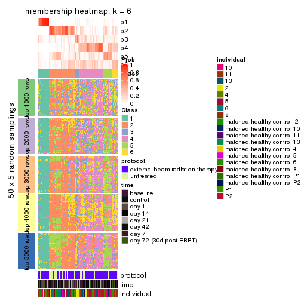
As soon as we have had the classes for columns, we can look for signatures which are significantly different between classes which can be candidate marks for certain classes. Following are the heatmaps for signatures.
Signature heatmaps where rows are scaled:
get_signatures(res, k = 2)
get_signatures(res, k = 3)
#> Error in mat[ceiling(1:nr/h_ratio), ceiling(1:nc/w_ratio), drop = FALSE]: subscript out of bounds
get_signatures(res, k = 4)
#> Error in mat[ceiling(1:nr/h_ratio), ceiling(1:nc/w_ratio), drop = FALSE]: subscript out of bounds

get_signatures(res, k = 5)
#> Error in mat[ceiling(1:nr/h_ratio), ceiling(1:nc/w_ratio), drop = FALSE]: subscript out of bounds

get_signatures(res, k = 6)
#> Error: The width or height of the raster image is zero, maybe you forget to turn off the
#> previous graphic device or it was corrupted. Run `dev.off()` to close it.

Signature heatmaps where rows are not scaled:
get_signatures(res, k = 2, scale_rows = FALSE)
get_signatures(res, k = 3, scale_rows = FALSE)
get_signatures(res, k = 4, scale_rows = FALSE)
get_signatures(res, k = 5, scale_rows = FALSE)
get_signatures(res, k = 6, scale_rows = FALSE)
Compare the overlap of signatures from different k:
compare_signatures(res)
get_signature() returns a data frame invisibly. TO get the list of signatures, the function
call should be assigned to a variable explicitly. In following code, if plot argument is set
to FALSE, no heatmap is plotted while only the differential analysis is performed.
# code only for demonstration
tb = get_signature(res, k = ..., plot = FALSE)
An example of the output of tb is:
#> which_row fdr mean_1 mean_2 scaled_mean_1 scaled_mean_2 km
#> 1 38 0.042760348 8.373488 9.131774 -0.5533452 0.5164555 1
#> 2 40 0.018707592 7.106213 8.469186 -0.6173731 0.5762149 1
#> 3 55 0.019134737 10.221463 11.207825 -0.6159697 0.5749050 1
#> 4 59 0.006059896 5.921854 7.869574 -0.6899429 0.6439467 1
#> 5 60 0.018055526 8.928898 10.211722 -0.6204761 0.5791110 1
#> 6 98 0.009384629 15.714769 14.887706 0.6635654 -0.6193277 2
...
The columns in tb are:
which_row: row indices corresponding to the input matrix.fdr: FDR for the differential test. mean_x: The mean value in group x.scaled_mean_x: The mean value in group x after rows are scaled.km: Row groups if k-means clustering is applied to rows.UMAP plot which shows how samples are separated.
dimension_reduction(res, k = 2, method = "UMAP")
dimension_reduction(res, k = 3, method = "UMAP")
dimension_reduction(res, k = 4, method = "UMAP")
dimension_reduction(res, k = 5, method = "UMAP")
dimension_reduction(res, k = 6, method = "UMAP")
Following heatmap shows how subgroups are split when increasing k:
collect_classes(res)
Test correlation between subgroups and known annotations. If the known annotation is numeric, one-way ANOVA test is applied, and if the known annotation is discrete, chi-squared contingency table test is applied.
test_to_known_factors(res)
#> n protocol(p) time(p) individual(p) k
#> CV:NMF 73 0.0137 0.0247 0.08189 2
#> CV:NMF 75 0.0664 0.1051 0.00119 3
#> CV:NMF 60 0.0329 0.1023 0.03042 4
#> CV:NMF 26 0.0965 0.1239 0.11870 5
#> CV:NMF 17 0.0364 0.1508 0.15852 6
If matrix rows can be associated to genes, consider to use GO_Enrichment(res,
...) to perform function enrichment for the signature genes.
The object with results only for a single top-value method and a single partition method can be extracted as:
res = res_list["MAD", "hclust"]
# you can also extract it by
# res = res_list["MAD:hclust"]
A summary of res and all the functions that can be applied to it:
res
#> A 'ConsensusPartition' object with k = 2, 3, 4, 5, 6.
#> On a matrix with 51941 rows and 80 columns.
#> Top rows (1000, 2000, 3000, 4000, 5000) are extracted by 'MAD' method.
#> Subgroups are detected by 'hclust' method.
#> Performed in total 1250 partitions by row resampling.
#> Best k for subgroups seems to be 2.
#>
#> Following methods can be applied to this 'ConsensusPartition' object:
#> [1] "cola_report" "collect_classes" "collect_plots"
#> [4] "collect_stats" "colnames" "compare_signatures"
#> [7] "consensus_heatmap" "dimension_reduction" "functional_enrichment"
#> [10] "get_anno_col" "get_anno" "get_classes"
#> [13] "get_consensus" "get_matrix" "get_membership"
#> [16] "get_param" "get_signatures" "get_stats"
#> [19] "is_best_k" "is_stable_k" "membership_heatmap"
#> [22] "ncol" "nrow" "plot_ecdf"
#> [25] "rownames" "select_partition_number" "show"
#> [28] "suggest_best_k" "test_to_known_factors"
collect_plots() function collects all the plots made from res for all k (number of partitions)
into one single page to provide an easy and fast comparison between different k.
collect_plots(res)
The plots are:
k and the heatmap of
predicted classes for each k.k.k.k.All the plots in panels can be made by individual functions and they are plotted later in this section.
select_partition_number() produces several plots showing different
statistics for choosing “optimized” k. There are following statistics:
k;k, the area increased is defined as \(A_k - A_{k-1}\).The detailed explanations of these statistics can be found in the cola vignette.
Generally speaking, lower PAC score, higher mean silhouette score or higher
concordance corresponds to better partition. Rand index and Jaccard index
measure how similar the current partition is compared to partition with k-1.
If they are too similar, we won't accept k is better than k-1.
select_partition_number(res)

The numeric values for all these statistics can be obtained by get_stats().
get_stats(res)
#> k 1-PAC mean_silhouette concordance area_increased Rand Jaccard
#> 2 2 1.000 0.999 0.999 0.222 0.778 0.778
#> 3 3 0.995 0.966 0.967 0.145 0.995 0.993
#> 4 4 0.608 0.905 0.925 0.221 1.000 1.000
#> 5 5 0.412 0.819 0.852 0.229 1.000 1.000
#> 6 6 0.393 0.528 0.821 0.189 0.876 0.840
suggest_best_k() suggests the best \(k\) based on these statistics. The rules are as follows:
NA.suggest_best_k(res)
#> [1] 2
Following shows the table of the partitions (You need to click the show/hide
code output link to see it). The membership matrix (columns with name p*)
is inferred by
clue::cl_consensus()
function with the SE method. Basically the value in the membership matrix
represents the probability to belong to a certain group. The finall class
label for an item is determined with the group with highest probability it
belongs to.
In get_classes() function, the entropy is calculated from the membership
matrix and the silhouette score is calculated from the consensus matrix.
cbind(get_classes(res, k = 2), get_membership(res, k = 2))
#> class entropy silhouette p1 p2
#> GSM753604 1 0.0938 0.989 0.988 0.012
#> GSM753620 2 0.0000 1.000 0.000 1.000
#> GSM753628 2 0.0000 1.000 0.000 1.000
#> GSM753636 2 0.0000 1.000 0.000 1.000
#> GSM753644 2 0.0000 1.000 0.000 1.000
#> GSM753572 2 0.0000 1.000 0.000 1.000
#> GSM753580 2 0.0000 1.000 0.000 1.000
#> GSM753588 2 0.0000 1.000 0.000 1.000
#> GSM753596 2 0.0000 1.000 0.000 1.000
#> GSM753612 2 0.0000 1.000 0.000 1.000
#> GSM753603 2 0.0000 1.000 0.000 1.000
#> GSM753619 2 0.0000 1.000 0.000 1.000
#> GSM753627 2 0.0000 1.000 0.000 1.000
#> GSM753635 2 0.0000 1.000 0.000 1.000
#> GSM753643 2 0.0000 1.000 0.000 1.000
#> GSM753571 2 0.0000 1.000 0.000 1.000
#> GSM753579 2 0.0000 1.000 0.000 1.000
#> GSM753587 2 0.0000 1.000 0.000 1.000
#> GSM753595 2 0.0000 1.000 0.000 1.000
#> GSM753611 2 0.0000 1.000 0.000 1.000
#> GSM753605 1 0.0000 0.995 1.000 0.000
#> GSM753621 2 0.0000 1.000 0.000 1.000
#> GSM753629 2 0.0000 1.000 0.000 1.000
#> GSM753637 2 0.0000 1.000 0.000 1.000
#> GSM753645 2 0.0000 1.000 0.000 1.000
#> GSM753573 1 0.0000 0.995 1.000 0.000
#> GSM753581 2 0.0000 1.000 0.000 1.000
#> GSM753589 2 0.0000 1.000 0.000 1.000
#> GSM753597 2 0.0000 1.000 0.000 1.000
#> GSM753613 2 0.0000 1.000 0.000 1.000
#> GSM753606 2 0.0000 1.000 0.000 1.000
#> GSM753622 1 0.0000 0.995 1.000 0.000
#> GSM753630 2 0.0000 1.000 0.000 1.000
#> GSM753638 2 0.0000 1.000 0.000 1.000
#> GSM753646 1 0.0000 0.995 1.000 0.000
#> GSM753574 2 0.0000 1.000 0.000 1.000
#> GSM753582 2 0.0000 1.000 0.000 1.000
#> GSM753590 2 0.0000 1.000 0.000 1.000
#> GSM753598 2 0.0000 1.000 0.000 1.000
#> GSM753614 2 0.0000 1.000 0.000 1.000
#> GSM753607 2 0.0000 1.000 0.000 1.000
#> GSM753623 2 0.0000 1.000 0.000 1.000
#> GSM753631 2 0.0000 1.000 0.000 1.000
#> GSM753639 2 0.0000 1.000 0.000 1.000
#> GSM753647 2 0.0000 1.000 0.000 1.000
#> GSM753575 2 0.0000 1.000 0.000 1.000
#> GSM753583 2 0.0000 1.000 0.000 1.000
#> GSM753591 2 0.0000 1.000 0.000 1.000
#> GSM753599 2 0.0000 1.000 0.000 1.000
#> GSM753615 2 0.0000 1.000 0.000 1.000
#> GSM753608 2 0.0376 0.996 0.004 0.996
#> GSM753624 2 0.0000 1.000 0.000 1.000
#> GSM753632 2 0.0000 1.000 0.000 1.000
#> GSM753640 2 0.0000 1.000 0.000 1.000
#> GSM753648 1 0.0000 0.995 1.000 0.000
#> GSM753576 2 0.0000 1.000 0.000 1.000
#> GSM753584 2 0.0000 1.000 0.000 1.000
#> GSM753592 2 0.0000 1.000 0.000 1.000
#> GSM753600 2 0.0000 1.000 0.000 1.000
#> GSM753616 2 0.0000 1.000 0.000 1.000
#> GSM753609 2 0.0000 1.000 0.000 1.000
#> GSM753625 1 0.0000 0.995 1.000 0.000
#> GSM753633 2 0.0000 1.000 0.000 1.000
#> GSM753641 2 0.0000 1.000 0.000 1.000
#> GSM753649 2 0.0000 1.000 0.000 1.000
#> GSM753577 2 0.0000 1.000 0.000 1.000
#> GSM753585 2 0.0000 1.000 0.000 1.000
#> GSM753593 2 0.0000 1.000 0.000 1.000
#> GSM753601 2 0.0000 1.000 0.000 1.000
#> GSM753617 2 0.0000 1.000 0.000 1.000
#> GSM753610 2 0.0376 0.996 0.004 0.996
#> GSM753626 2 0.0000 1.000 0.000 1.000
#> GSM753634 2 0.0000 1.000 0.000 1.000
#> GSM753642 1 0.1633 0.978 0.976 0.024
#> GSM753650 1 0.0000 0.995 1.000 0.000
#> GSM753578 1 0.0672 0.991 0.992 0.008
#> GSM753586 2 0.0000 1.000 0.000 1.000
#> GSM753594 2 0.0000 1.000 0.000 1.000
#> GSM753602 2 0.0000 1.000 0.000 1.000
#> GSM753618 2 0.0000 1.000 0.000 1.000
cbind(get_classes(res, k = 3), get_membership(res, k = 3))
#> class entropy silhouette p1 p2 p3
#> GSM753604 1 0.1163 0.952 0.972 0.000 0.028
#> GSM753620 2 0.0237 0.980 0.000 0.996 0.004
#> GSM753628 2 0.0237 0.980 0.000 0.996 0.004
#> GSM753636 2 0.0592 0.979 0.000 0.988 0.012
#> GSM753644 2 0.0424 0.979 0.000 0.992 0.008
#> GSM753572 2 0.0892 0.980 0.000 0.980 0.020
#> GSM753580 2 0.0592 0.980 0.000 0.988 0.012
#> GSM753588 2 0.0892 0.979 0.000 0.980 0.020
#> GSM753596 2 0.0237 0.980 0.000 0.996 0.004
#> GSM753612 2 0.1163 0.978 0.000 0.972 0.028
#> GSM753603 2 0.0592 0.979 0.000 0.988 0.012
#> GSM753619 2 0.0424 0.979 0.000 0.992 0.008
#> GSM753627 2 0.0000 0.980 0.000 1.000 0.000
#> GSM753635 2 0.0424 0.979 0.000 0.992 0.008
#> GSM753643 2 0.0592 0.979 0.000 0.988 0.012
#> GSM753571 2 0.0592 0.979 0.000 0.988 0.012
#> GSM753579 2 0.0000 0.980 0.000 1.000 0.000
#> GSM753587 2 0.0000 0.980 0.000 1.000 0.000
#> GSM753595 2 0.0424 0.979 0.000 0.992 0.008
#> GSM753611 2 0.1529 0.977 0.000 0.960 0.040
#> GSM753605 1 0.0000 0.988 1.000 0.000 0.000
#> GSM753621 2 0.2356 0.951 0.000 0.928 0.072
#> GSM753629 2 0.0237 0.979 0.000 0.996 0.004
#> GSM753637 2 0.0424 0.979 0.000 0.992 0.008
#> GSM753645 2 0.0747 0.978 0.000 0.984 0.016
#> GSM753573 1 0.1031 0.958 0.976 0.000 0.024
#> GSM753581 2 0.0424 0.979 0.000 0.992 0.008
#> GSM753589 2 0.0747 0.979 0.000 0.984 0.016
#> GSM753597 2 0.0237 0.980 0.000 0.996 0.004
#> GSM753613 2 0.0592 0.980 0.000 0.988 0.012
#> GSM753606 2 0.0747 0.978 0.000 0.984 0.016
#> GSM753622 1 0.0000 0.988 1.000 0.000 0.000
#> GSM753630 2 0.0237 0.980 0.000 0.996 0.004
#> GSM753638 2 0.0424 0.979 0.000 0.992 0.008
#> GSM753646 1 0.0000 0.988 1.000 0.000 0.000
#> GSM753574 2 0.0424 0.979 0.000 0.992 0.008
#> GSM753582 2 0.0747 0.980 0.000 0.984 0.016
#> GSM753590 2 0.0592 0.980 0.000 0.988 0.012
#> GSM753598 2 0.1031 0.979 0.000 0.976 0.024
#> GSM753614 2 0.1529 0.972 0.000 0.960 0.040
#> GSM753607 2 0.1031 0.980 0.000 0.976 0.024
#> GSM753623 2 0.1031 0.979 0.000 0.976 0.024
#> GSM753631 2 0.0747 0.980 0.000 0.984 0.016
#> GSM753639 2 0.0424 0.979 0.000 0.992 0.008
#> GSM753647 2 0.0892 0.980 0.000 0.980 0.020
#> GSM753575 2 0.1289 0.976 0.000 0.968 0.032
#> GSM753583 2 0.1529 0.972 0.000 0.960 0.040
#> GSM753591 2 0.1411 0.976 0.000 0.964 0.036
#> GSM753599 2 0.0424 0.979 0.000 0.992 0.008
#> GSM753615 2 0.1860 0.966 0.000 0.948 0.052
#> GSM753608 2 0.2261 0.949 0.000 0.932 0.068
#> GSM753624 2 0.1753 0.970 0.000 0.952 0.048
#> GSM753632 2 0.0424 0.979 0.000 0.992 0.008
#> GSM753640 2 0.0747 0.980 0.000 0.984 0.016
#> GSM753648 1 0.0000 0.988 1.000 0.000 0.000
#> GSM753576 2 0.1529 0.973 0.000 0.960 0.040
#> GSM753584 2 0.1753 0.969 0.000 0.952 0.048
#> GSM753592 2 0.1753 0.969 0.000 0.952 0.048
#> GSM753600 2 0.0237 0.979 0.000 0.996 0.004
#> GSM753616 2 0.1163 0.976 0.000 0.972 0.028
#> GSM753609 2 0.1529 0.975 0.000 0.960 0.040
#> GSM753625 1 0.0000 0.988 1.000 0.000 0.000
#> GSM753633 2 0.0592 0.980 0.000 0.988 0.012
#> GSM753641 2 0.1289 0.978 0.000 0.968 0.032
#> GSM753649 2 0.2959 0.934 0.000 0.900 0.100
#> GSM753577 2 0.1964 0.967 0.000 0.944 0.056
#> GSM753585 2 0.1860 0.967 0.000 0.948 0.052
#> GSM753593 2 0.1964 0.964 0.000 0.944 0.056
#> GSM753601 2 0.0592 0.980 0.000 0.988 0.012
#> GSM753617 2 0.1964 0.964 0.000 0.944 0.056
#> GSM753610 2 0.1163 0.972 0.000 0.972 0.028
#> GSM753626 2 0.2711 0.942 0.000 0.912 0.088
#> GSM753634 2 0.1163 0.977 0.000 0.972 0.028
#> GSM753642 3 0.5948 0.655 0.360 0.000 0.640
#> GSM753650 1 0.0000 0.988 1.000 0.000 0.000
#> GSM753578 3 0.6126 0.634 0.400 0.000 0.600
#> GSM753586 2 0.3340 0.914 0.000 0.880 0.120
#> GSM753594 2 0.1964 0.965 0.000 0.944 0.056
#> GSM753602 2 0.1163 0.980 0.000 0.972 0.028
#> GSM753618 2 0.1529 0.973 0.000 0.960 0.040
cbind(get_classes(res, k = 4), get_membership(res, k = 4))
#> class entropy silhouette p1 p2 p3 p4
#> GSM753604 1 0.1833 0.926 0.944 0.000 0.032 0.024
#> GSM753620 2 0.0188 0.941 0.000 0.996 0.004 0.000
#> GSM753628 2 0.0188 0.941 0.000 0.996 0.004 0.000
#> GSM753636 2 0.0469 0.940 0.000 0.988 0.012 0.000
#> GSM753644 2 0.0336 0.939 0.000 0.992 0.008 0.000
#> GSM753572 2 0.1389 0.944 0.000 0.952 0.048 0.000
#> GSM753580 2 0.1022 0.944 0.000 0.968 0.032 0.000
#> GSM753588 2 0.1389 0.944 0.000 0.952 0.048 0.000
#> GSM753596 2 0.0707 0.943 0.000 0.980 0.020 0.000
#> GSM753612 2 0.2011 0.939 0.000 0.920 0.080 0.000
#> GSM753603 2 0.0469 0.939 0.000 0.988 0.012 0.000
#> GSM753619 2 0.0707 0.941 0.000 0.980 0.020 0.000
#> GSM753627 2 0.0000 0.940 0.000 1.000 0.000 0.000
#> GSM753635 2 0.0336 0.939 0.000 0.992 0.008 0.000
#> GSM753643 2 0.0469 0.939 0.000 0.988 0.012 0.000
#> GSM753571 2 0.0707 0.942 0.000 0.980 0.020 0.000
#> GSM753579 2 0.0707 0.944 0.000 0.980 0.020 0.000
#> GSM753587 2 0.0707 0.944 0.000 0.980 0.020 0.000
#> GSM753595 2 0.0817 0.942 0.000 0.976 0.024 0.000
#> GSM753611 2 0.2281 0.936 0.000 0.904 0.096 0.000
#> GSM753605 1 0.0000 0.980 1.000 0.000 0.000 0.000
#> GSM753621 2 0.3945 0.851 0.000 0.780 0.216 0.004
#> GSM753629 2 0.0469 0.943 0.000 0.988 0.012 0.000
#> GSM753637 2 0.0336 0.939 0.000 0.992 0.008 0.000
#> GSM753645 2 0.0921 0.938 0.000 0.972 0.028 0.000
#> GSM753573 1 0.1722 0.924 0.944 0.000 0.008 0.048
#> GSM753581 2 0.0817 0.943 0.000 0.976 0.024 0.000
#> GSM753589 2 0.1118 0.944 0.000 0.964 0.036 0.000
#> GSM753597 2 0.0707 0.942 0.000 0.980 0.020 0.000
#> GSM753613 2 0.0921 0.943 0.000 0.972 0.028 0.000
#> GSM753606 2 0.1305 0.936 0.000 0.960 0.036 0.004
#> GSM753622 1 0.0000 0.980 1.000 0.000 0.000 0.000
#> GSM753630 2 0.0188 0.941 0.000 0.996 0.004 0.000
#> GSM753638 2 0.0336 0.939 0.000 0.992 0.008 0.000
#> GSM753646 1 0.0000 0.980 1.000 0.000 0.000 0.000
#> GSM753574 2 0.0921 0.944 0.000 0.972 0.028 0.000
#> GSM753582 2 0.1557 0.944 0.000 0.944 0.056 0.000
#> GSM753590 2 0.1792 0.941 0.000 0.932 0.068 0.000
#> GSM753598 2 0.1867 0.941 0.000 0.928 0.072 0.000
#> GSM753614 2 0.2760 0.920 0.000 0.872 0.128 0.000
#> GSM753607 2 0.2345 0.934 0.000 0.900 0.100 0.000
#> GSM753623 2 0.1302 0.942 0.000 0.956 0.044 0.000
#> GSM753631 2 0.0817 0.942 0.000 0.976 0.024 0.000
#> GSM753639 2 0.0469 0.941 0.000 0.988 0.012 0.000
#> GSM753647 2 0.1211 0.943 0.000 0.960 0.040 0.000
#> GSM753575 2 0.2973 0.913 0.000 0.856 0.144 0.000
#> GSM753583 2 0.3123 0.902 0.000 0.844 0.156 0.000
#> GSM753591 2 0.3024 0.912 0.000 0.852 0.148 0.000
#> GSM753599 2 0.1211 0.944 0.000 0.960 0.040 0.000
#> GSM753615 2 0.2814 0.918 0.000 0.868 0.132 0.000
#> GSM753608 2 0.3479 0.866 0.000 0.840 0.148 0.012
#> GSM753624 2 0.3074 0.908 0.000 0.848 0.152 0.000
#> GSM753632 2 0.0469 0.941 0.000 0.988 0.012 0.000
#> GSM753640 2 0.0921 0.944 0.000 0.972 0.028 0.000
#> GSM753648 1 0.0000 0.980 1.000 0.000 0.000 0.000
#> GSM753576 2 0.3172 0.903 0.000 0.840 0.160 0.000
#> GSM753584 2 0.3266 0.896 0.000 0.832 0.168 0.000
#> GSM753592 2 0.3219 0.898 0.000 0.836 0.164 0.000
#> GSM753600 2 0.0469 0.941 0.000 0.988 0.012 0.000
#> GSM753616 2 0.2081 0.935 0.000 0.916 0.084 0.000
#> GSM753609 2 0.2530 0.930 0.000 0.888 0.112 0.000
#> GSM753625 1 0.0000 0.980 1.000 0.000 0.000 0.000
#> GSM753633 2 0.1022 0.944 0.000 0.968 0.032 0.000
#> GSM753641 2 0.2149 0.937 0.000 0.912 0.088 0.000
#> GSM753649 2 0.4122 0.833 0.000 0.760 0.236 0.004
#> GSM753577 2 0.3583 0.887 0.000 0.816 0.180 0.004
#> GSM753585 2 0.3311 0.894 0.000 0.828 0.172 0.000
#> GSM753593 2 0.3791 0.870 0.000 0.796 0.200 0.004
#> GSM753601 2 0.1474 0.943 0.000 0.948 0.052 0.000
#> GSM753617 2 0.3486 0.882 0.000 0.812 0.188 0.000
#> GSM753610 2 0.2799 0.907 0.000 0.884 0.108 0.008
#> GSM753626 2 0.4391 0.815 0.000 0.740 0.252 0.008
#> GSM753634 2 0.2647 0.924 0.000 0.880 0.120 0.000
#> GSM753642 3 0.6722 0.000 0.200 0.000 0.616 0.184
#> GSM753650 1 0.0000 0.980 1.000 0.000 0.000 0.000
#> GSM753578 4 0.1792 0.000 0.068 0.000 0.000 0.932
#> GSM753586 2 0.4635 0.796 0.000 0.720 0.268 0.012
#> GSM753594 2 0.3123 0.902 0.000 0.844 0.156 0.000
#> GSM753602 2 0.1716 0.943 0.000 0.936 0.064 0.000
#> GSM753618 2 0.2760 0.920 0.000 0.872 0.128 0.000
cbind(get_classes(res, k = 5), get_membership(res, k = 5))
#> class entropy silhouette p1 p2 p3 p4 p5
#> GSM753604 1 0.5338 0.414 0.608 0.000 0.060 0.004 NA
#> GSM753620 2 0.0609 0.882 0.000 0.980 0.000 0.000 NA
#> GSM753628 2 0.0609 0.882 0.000 0.980 0.000 0.000 NA
#> GSM753636 2 0.0703 0.884 0.000 0.976 0.000 0.000 NA
#> GSM753644 2 0.0510 0.881 0.000 0.984 0.000 0.000 NA
#> GSM753572 2 0.1908 0.887 0.000 0.908 0.000 0.000 NA
#> GSM753580 2 0.1197 0.888 0.000 0.952 0.000 0.000 NA
#> GSM753588 2 0.1544 0.889 0.000 0.932 0.000 0.000 NA
#> GSM753596 2 0.0963 0.887 0.000 0.964 0.000 0.000 NA
#> GSM753612 2 0.2286 0.885 0.000 0.888 0.004 0.000 NA
#> GSM753603 2 0.0671 0.881 0.000 0.980 0.004 0.000 NA
#> GSM753619 2 0.1830 0.870 0.000 0.924 0.008 0.000 NA
#> GSM753627 2 0.0510 0.883 0.000 0.984 0.000 0.000 NA
#> GSM753635 2 0.0510 0.882 0.000 0.984 0.000 0.000 NA
#> GSM753643 2 0.0671 0.881 0.000 0.980 0.004 0.000 NA
#> GSM753571 2 0.0880 0.886 0.000 0.968 0.000 0.000 NA
#> GSM753579 2 0.0963 0.889 0.000 0.964 0.000 0.000 NA
#> GSM753587 2 0.0963 0.890 0.000 0.964 0.000 0.000 NA
#> GSM753595 2 0.0794 0.885 0.000 0.972 0.000 0.000 NA
#> GSM753611 2 0.2377 0.877 0.000 0.872 0.000 0.000 NA
#> GSM753605 1 0.0000 0.921 1.000 0.000 0.000 0.000 NA
#> GSM753621 2 0.4995 0.620 0.000 0.584 0.028 0.004 NA
#> GSM753629 2 0.0609 0.885 0.000 0.980 0.000 0.000 NA
#> GSM753637 2 0.0510 0.882 0.000 0.984 0.000 0.000 NA
#> GSM753645 2 0.2077 0.859 0.000 0.908 0.008 0.000 NA
#> GSM753573 1 0.2305 0.828 0.896 0.000 0.092 0.012 NA
#> GSM753581 2 0.1043 0.889 0.000 0.960 0.000 0.000 NA
#> GSM753589 2 0.1282 0.889 0.000 0.952 0.004 0.000 NA
#> GSM753597 2 0.0880 0.886 0.000 0.968 0.000 0.000 NA
#> GSM753613 2 0.0865 0.887 0.000 0.972 0.004 0.000 NA
#> GSM753606 2 0.2358 0.849 0.000 0.888 0.008 0.000 NA
#> GSM753622 1 0.0000 0.921 1.000 0.000 0.000 0.000 NA
#> GSM753630 2 0.0510 0.883 0.000 0.984 0.000 0.000 NA
#> GSM753638 2 0.0510 0.882 0.000 0.984 0.000 0.000 NA
#> GSM753646 1 0.0000 0.921 1.000 0.000 0.000 0.000 NA
#> GSM753574 2 0.1478 0.890 0.000 0.936 0.000 0.000 NA
#> GSM753582 2 0.1851 0.888 0.000 0.912 0.000 0.000 NA
#> GSM753590 2 0.2127 0.886 0.000 0.892 0.000 0.000 NA
#> GSM753598 2 0.1965 0.887 0.000 0.904 0.000 0.000 NA
#> GSM753614 2 0.3455 0.839 0.000 0.784 0.008 0.000 NA
#> GSM753607 2 0.2929 0.860 0.000 0.820 0.000 0.000 NA
#> GSM753623 2 0.2358 0.871 0.000 0.888 0.008 0.000 NA
#> GSM753631 2 0.0794 0.886 0.000 0.972 0.000 0.000 NA
#> GSM753639 2 0.0609 0.885 0.000 0.980 0.000 0.000 NA
#> GSM753647 2 0.2179 0.874 0.000 0.896 0.004 0.000 NA
#> GSM753575 2 0.3521 0.828 0.000 0.764 0.004 0.000 NA
#> GSM753583 2 0.4047 0.759 0.000 0.676 0.004 0.000 NA
#> GSM753591 2 0.3766 0.807 0.000 0.728 0.004 0.000 NA
#> GSM753599 2 0.1430 0.889 0.000 0.944 0.004 0.000 NA
#> GSM753615 2 0.3612 0.806 0.000 0.732 0.000 0.000 NA
#> GSM753608 2 0.4443 0.753 0.000 0.748 0.044 0.008 NA
#> GSM753624 2 0.3752 0.790 0.000 0.708 0.000 0.000 NA
#> GSM753632 2 0.0510 0.883 0.000 0.984 0.000 0.000 NA
#> GSM753640 2 0.0963 0.889 0.000 0.964 0.000 0.000 NA
#> GSM753648 1 0.0000 0.921 1.000 0.000 0.000 0.000 NA
#> GSM753576 2 0.4127 0.768 0.000 0.680 0.008 0.000 NA
#> GSM753584 2 0.4201 0.749 0.000 0.664 0.008 0.000 NA
#> GSM753592 2 0.4029 0.762 0.000 0.680 0.004 0.000 NA
#> GSM753600 2 0.0510 0.885 0.000 0.984 0.000 0.000 NA
#> GSM753616 2 0.2605 0.867 0.000 0.852 0.000 0.000 NA
#> GSM753609 2 0.3093 0.864 0.000 0.824 0.008 0.000 NA
#> GSM753625 1 0.0000 0.921 1.000 0.000 0.000 0.000 NA
#> GSM753633 2 0.1410 0.890 0.000 0.940 0.000 0.000 NA
#> GSM753641 2 0.2471 0.874 0.000 0.864 0.000 0.000 NA
#> GSM753649 2 0.5146 0.680 0.000 0.608 0.036 0.008 NA
#> GSM753577 2 0.4283 0.734 0.000 0.644 0.008 0.000 NA
#> GSM753585 2 0.3932 0.758 0.000 0.672 0.000 0.000 NA
#> GSM753593 2 0.4564 0.697 0.000 0.612 0.016 0.000 NA
#> GSM753601 2 0.1792 0.887 0.000 0.916 0.000 0.000 NA
#> GSM753617 2 0.4416 0.717 0.000 0.632 0.012 0.000 NA
#> GSM753610 2 0.3921 0.816 0.000 0.784 0.044 0.000 NA
#> GSM753626 2 0.4974 0.470 0.000 0.492 0.020 0.004 NA
#> GSM753634 2 0.3274 0.837 0.000 0.780 0.000 0.000 NA
#> GSM753642 3 0.3058 0.000 0.096 0.000 0.860 0.044 NA
#> GSM753650 1 0.0162 0.918 0.996 0.000 0.004 0.000 NA
#> GSM753578 4 0.0404 0.000 0.012 0.000 0.000 0.988 NA
#> GSM753586 2 0.5201 0.611 0.000 0.548 0.024 0.012 NA
#> GSM753594 2 0.3814 0.793 0.000 0.720 0.004 0.000 NA
#> GSM753602 2 0.1638 0.889 0.000 0.932 0.004 0.000 NA
#> GSM753618 2 0.3424 0.824 0.000 0.760 0.000 0.000 NA
cbind(get_classes(res, k = 6), get_membership(res, k = 6))
#> class entropy silhouette p1 p2 p3 p4 p5 p6
#> GSM753604 5 0.3862 0.000 0.388 0.000 0.000 0.000 0.608 0.004
#> GSM753620 2 0.0508 0.742 0.000 0.984 0.000 0.012 0.004 0.000
#> GSM753628 2 0.0458 0.741 0.000 0.984 0.000 0.016 0.000 0.000
#> GSM753636 2 0.0713 0.745 0.000 0.972 0.000 0.028 0.000 0.000
#> GSM753644 2 0.0405 0.740 0.000 0.988 0.000 0.008 0.004 0.000
#> GSM753572 2 0.2257 0.715 0.000 0.876 0.000 0.116 0.008 0.000
#> GSM753580 2 0.1285 0.747 0.000 0.944 0.000 0.052 0.004 0.000
#> GSM753588 2 0.1663 0.742 0.000 0.912 0.000 0.088 0.000 0.000
#> GSM753596 2 0.1349 0.749 0.000 0.940 0.000 0.056 0.004 0.000
#> GSM753612 2 0.2831 0.693 0.000 0.840 0.000 0.136 0.024 0.000
#> GSM753603 2 0.0622 0.738 0.000 0.980 0.000 0.012 0.008 0.000
#> GSM753619 2 0.2527 0.654 0.000 0.868 0.000 0.108 0.024 0.000
#> GSM753627 2 0.0363 0.742 0.000 0.988 0.000 0.012 0.000 0.000
#> GSM753635 2 0.0692 0.742 0.000 0.976 0.000 0.020 0.004 0.000
#> GSM753643 2 0.0520 0.739 0.000 0.984 0.000 0.008 0.008 0.000
#> GSM753571 2 0.0865 0.747 0.000 0.964 0.000 0.036 0.000 0.000
#> GSM753579 2 0.1204 0.748 0.000 0.944 0.000 0.056 0.000 0.000
#> GSM753587 2 0.1204 0.749 0.000 0.944 0.000 0.056 0.000 0.000
#> GSM753595 2 0.0935 0.748 0.000 0.964 0.000 0.032 0.004 0.000
#> GSM753611 2 0.2632 0.677 0.000 0.832 0.000 0.164 0.004 0.000
#> GSM753605 1 0.0000 0.963 1.000 0.000 0.000 0.000 0.000 0.000
#> GSM753621 4 0.5689 0.425 0.000 0.360 0.000 0.508 0.120 0.012
#> GSM753629 2 0.0603 0.744 0.000 0.980 0.000 0.016 0.004 0.000
#> GSM753637 2 0.0692 0.742 0.000 0.976 0.000 0.020 0.004 0.000
#> GSM753645 2 0.2926 0.596 0.000 0.844 0.000 0.124 0.028 0.004
#> GSM753573 1 0.2540 0.767 0.872 0.000 0.004 0.000 0.020 0.104
#> GSM753581 2 0.1471 0.749 0.000 0.932 0.000 0.064 0.004 0.000
#> GSM753589 2 0.1867 0.741 0.000 0.916 0.000 0.064 0.020 0.000
#> GSM753597 2 0.0865 0.747 0.000 0.964 0.000 0.036 0.000 0.000
#> GSM753613 2 0.1245 0.748 0.000 0.952 0.000 0.032 0.016 0.000
#> GSM753606 2 0.3553 0.548 0.000 0.804 0.000 0.128 0.064 0.004
#> GSM753622 1 0.0000 0.963 1.000 0.000 0.000 0.000 0.000 0.000
#> GSM753630 2 0.0547 0.743 0.000 0.980 0.000 0.020 0.000 0.000
#> GSM753638 2 0.0692 0.742 0.000 0.976 0.000 0.020 0.004 0.000
#> GSM753646 1 0.0000 0.963 1.000 0.000 0.000 0.000 0.000 0.000
#> GSM753574 2 0.1700 0.738 0.000 0.916 0.000 0.080 0.004 0.000
#> GSM753582 2 0.2633 0.714 0.000 0.864 0.000 0.112 0.020 0.004
#> GSM753590 2 0.2431 0.705 0.000 0.860 0.000 0.132 0.008 0.000
#> GSM753598 2 0.2402 0.714 0.000 0.868 0.000 0.120 0.012 0.000
#> GSM753614 2 0.3859 0.397 0.000 0.692 0.000 0.288 0.020 0.000
#> GSM753607 2 0.3911 0.488 0.000 0.720 0.000 0.252 0.020 0.008
#> GSM753623 2 0.3013 0.644 0.000 0.832 0.000 0.140 0.024 0.004
#> GSM753631 2 0.0806 0.747 0.000 0.972 0.000 0.020 0.008 0.000
#> GSM753639 2 0.1265 0.748 0.000 0.948 0.000 0.044 0.008 0.000
#> GSM753647 2 0.2765 0.664 0.000 0.848 0.000 0.132 0.016 0.004
#> GSM753575 2 0.3927 0.244 0.000 0.644 0.000 0.344 0.012 0.000
#> GSM753583 2 0.4175 -0.366 0.000 0.524 0.000 0.464 0.012 0.000
#> GSM753591 2 0.4228 -0.031 0.000 0.588 0.000 0.392 0.020 0.000
#> GSM753599 2 0.1719 0.744 0.000 0.924 0.000 0.060 0.016 0.000
#> GSM753615 2 0.4004 0.122 0.000 0.620 0.000 0.368 0.012 0.000
#> GSM753608 2 0.5770 0.136 0.000 0.608 0.000 0.156 0.200 0.036
#> GSM753624 2 0.4246 -0.100 0.000 0.580 0.000 0.400 0.020 0.000
#> GSM753632 2 0.0622 0.744 0.000 0.980 0.000 0.012 0.008 0.000
#> GSM753640 2 0.1701 0.746 0.000 0.920 0.000 0.072 0.008 0.000
#> GSM753648 1 0.0000 0.963 1.000 0.000 0.000 0.000 0.000 0.000
#> GSM753576 2 0.4141 -0.214 0.000 0.556 0.000 0.432 0.012 0.000
#> GSM753584 2 0.4315 -0.454 0.000 0.496 0.000 0.488 0.012 0.004
#> GSM753592 2 0.4328 -0.368 0.000 0.520 0.000 0.460 0.020 0.000
#> GSM753600 2 0.0547 0.746 0.000 0.980 0.000 0.020 0.000 0.000
#> GSM753616 2 0.3078 0.616 0.000 0.796 0.000 0.192 0.012 0.000
#> GSM753609 2 0.3933 0.555 0.000 0.740 0.000 0.216 0.040 0.004
#> GSM753625 1 0.0000 0.963 1.000 0.000 0.000 0.000 0.000 0.000
#> GSM753633 2 0.1204 0.748 0.000 0.944 0.000 0.056 0.000 0.000
#> GSM753641 2 0.2730 0.643 0.000 0.808 0.000 0.192 0.000 0.000
#> GSM753649 2 0.5851 -0.360 0.000 0.484 0.000 0.372 0.128 0.016
#> GSM753577 4 0.4664 0.415 0.000 0.476 0.000 0.488 0.032 0.004
#> GSM753585 2 0.4091 -0.372 0.000 0.520 0.000 0.472 0.008 0.000
#> GSM753593 4 0.4504 0.526 0.000 0.432 0.000 0.540 0.024 0.004
#> GSM753601 2 0.2446 0.709 0.000 0.864 0.000 0.124 0.012 0.000
#> GSM753617 4 0.4389 0.506 0.000 0.448 0.000 0.528 0.024 0.000
#> GSM753610 2 0.5603 0.153 0.000 0.608 0.000 0.208 0.164 0.020
#> GSM753626 4 0.4745 -0.128 0.000 0.144 0.000 0.712 0.128 0.016
#> GSM753634 2 0.3482 0.359 0.000 0.684 0.000 0.316 0.000 0.000
#> GSM753642 6 0.1152 0.000 0.044 0.000 0.004 0.000 0.000 0.952
#> GSM753650 1 0.0146 0.959 0.996 0.000 0.000 0.000 0.000 0.004
#> GSM753578 3 0.0000 0.000 0.000 0.000 1.000 0.000 0.000 0.000
#> GSM753586 4 0.5759 0.550 0.000 0.392 0.000 0.484 0.104 0.020
#> GSM753594 2 0.4261 -0.151 0.000 0.572 0.000 0.408 0.020 0.000
#> GSM753602 2 0.2070 0.735 0.000 0.896 0.000 0.092 0.012 0.000
#> GSM753618 2 0.3819 0.244 0.000 0.652 0.000 0.340 0.008 0.000
Heatmaps for the consensus matrix. It visualizes the probability of two samples to be in a same group.
consensus_heatmap(res, k = 2)

consensus_heatmap(res, k = 3)
consensus_heatmap(res, k = 4)
consensus_heatmap(res, k = 5)
consensus_heatmap(res, k = 6)
Heatmaps for the membership of samples in all partitions to see how consistent they are:
membership_heatmap(res, k = 2)
membership_heatmap(res, k = 3)
membership_heatmap(res, k = 4)
membership_heatmap(res, k = 5)
membership_heatmap(res, k = 6)
As soon as we have had the classes for columns, we can look for signatures which are significantly different between classes which can be candidate marks for certain classes. Following are the heatmaps for signatures.
Signature heatmaps where rows are scaled:
get_signatures(res, k = 2)
get_signatures(res, k = 3)
#> Error in mat[ceiling(1:nr/h_ratio), ceiling(1:nc/w_ratio), drop = FALSE]: subscript out of bounds

get_signatures(res, k = 4)
#> Error in mat[ceiling(1:nr/h_ratio), ceiling(1:nc/w_ratio), drop = FALSE]: subscript out of bounds

get_signatures(res, k = 5)
#> Error in mat[ceiling(1:nr/h_ratio), ceiling(1:nc/w_ratio), drop = FALSE]: subscript out of bounds

get_signatures(res, k = 6)
#> Error in mat[ceiling(1:nr/h_ratio), ceiling(1:nc/w_ratio), drop = FALSE]: subscript out of bounds

Signature heatmaps where rows are not scaled:
get_signatures(res, k = 2, scale_rows = FALSE)
get_signatures(res, k = 3, scale_rows = FALSE)
get_signatures(res, k = 4, scale_rows = FALSE)
get_signatures(res, k = 5, scale_rows = FALSE)
get_signatures(res, k = 6, scale_rows = FALSE)
Compare the overlap of signatures from different k:
compare_signatures(res)
get_signature() returns a data frame invisibly. TO get the list of signatures, the function
call should be assigned to a variable explicitly. In following code, if plot argument is set
to FALSE, no heatmap is plotted while only the differential analysis is performed.
# code only for demonstration
tb = get_signature(res, k = ..., plot = FALSE)
An example of the output of tb is:
#> which_row fdr mean_1 mean_2 scaled_mean_1 scaled_mean_2 km
#> 1 38 0.042760348 8.373488 9.131774 -0.5533452 0.5164555 1
#> 2 40 0.018707592 7.106213 8.469186 -0.6173731 0.5762149 1
#> 3 55 0.019134737 10.221463 11.207825 -0.6159697 0.5749050 1
#> 4 59 0.006059896 5.921854 7.869574 -0.6899429 0.6439467 1
#> 5 60 0.018055526 8.928898 10.211722 -0.6204761 0.5791110 1
#> 6 98 0.009384629 15.714769 14.887706 0.6635654 -0.6193277 2
...
The columns in tb are:
which_row: row indices corresponding to the input matrix.fdr: FDR for the differential test. mean_x: The mean value in group x.scaled_mean_x: The mean value in group x after rows are scaled.km: Row groups if k-means clustering is applied to rows.UMAP plot which shows how samples are separated.
dimension_reduction(res, k = 2, method = "UMAP")
dimension_reduction(res, k = 3, method = "UMAP")
dimension_reduction(res, k = 4, method = "UMAP")
dimension_reduction(res, k = 5, method = "UMAP")
dimension_reduction(res, k = 6, method = "UMAP")
Following heatmap shows how subgroups are split when increasing k:
collect_classes(res)
Test correlation between subgroups and known annotations. If the known annotation is numeric, one-way ANOVA test is applied, and if the known annotation is discrete, chi-squared contingency table test is applied.
test_to_known_factors(res)
#> n protocol(p) time(p) individual(p) k
#> MAD:hclust 80 0.4350 0.4439 0.259 2
#> MAD:hclust 80 0.4712 0.1705 0.578 3
#> MAD:hclust 78 0.6375 0.7334 0.145 4
#> MAD:hclust 76 0.2522 0.5448 0.371 5
#> MAD:hclust 57 0.0482 0.0726 0.665 6
If matrix rows can be associated to genes, consider to use GO_Enrichment(res,
...) to perform function enrichment for the signature genes.
The object with results only for a single top-value method and a single partition method can be extracted as:
res = res_list["MAD", "kmeans"]
# you can also extract it by
# res = res_list["MAD:kmeans"]
A summary of res and all the functions that can be applied to it:
res
#> A 'ConsensusPartition' object with k = 2, 3, 4, 5, 6.
#> On a matrix with 51941 rows and 80 columns.
#> Top rows (1000, 2000, 3000, 4000, 5000) are extracted by 'MAD' method.
#> Subgroups are detected by 'kmeans' method.
#> Performed in total 1250 partitions by row resampling.
#> Best k for subgroups seems to be 2.
#>
#> Following methods can be applied to this 'ConsensusPartition' object:
#> [1] "cola_report" "collect_classes" "collect_plots"
#> [4] "collect_stats" "colnames" "compare_signatures"
#> [7] "consensus_heatmap" "dimension_reduction" "functional_enrichment"
#> [10] "get_anno_col" "get_anno" "get_classes"
#> [13] "get_consensus" "get_matrix" "get_membership"
#> [16] "get_param" "get_signatures" "get_stats"
#> [19] "is_best_k" "is_stable_k" "membership_heatmap"
#> [22] "ncol" "nrow" "plot_ecdf"
#> [25] "rownames" "select_partition_number" "show"
#> [28] "suggest_best_k" "test_to_known_factors"
collect_plots() function collects all the plots made from res for all k (number of partitions)
into one single page to provide an easy and fast comparison between different k.
collect_plots(res)
The plots are:
k and the heatmap of
predicted classes for each k.k.k.k.All the plots in panels can be made by individual functions and they are plotted later in this section.
select_partition_number() produces several plots showing different
statistics for choosing “optimized” k. There are following statistics:
k;k, the area increased is defined as \(A_k - A_{k-1}\).The detailed explanations of these statistics can be found in the cola vignette.
Generally speaking, lower PAC score, higher mean silhouette score or higher
concordance corresponds to better partition. Rand index and Jaccard index
measure how similar the current partition is compared to partition with k-1.
If they are too similar, we won't accept k is better than k-1.
select_partition_number(res)
The numeric values for all these statistics can be obtained by get_stats().
get_stats(res)
#> k 1-PAC mean_silhouette concordance area_increased Rand Jaccard
#> 2 2 1.000 1.000 1.000 0.2223 0.778 0.778
#> 3 3 0.889 0.903 0.947 1.5916 0.644 0.543
#> 4 4 0.640 0.719 0.840 0.1551 0.914 0.805
#> 5 5 0.593 0.596 0.766 0.0904 0.867 0.656
#> 6 6 0.602 0.705 0.800 0.0555 0.905 0.673
suggest_best_k() suggests the best \(k\) based on these statistics. The rules are as follows:
NA.suggest_best_k(res)
#> [1] 2
Following shows the table of the partitions (You need to click the show/hide
code output link to see it). The membership matrix (columns with name p*)
is inferred by
clue::cl_consensus()
function with the SE method. Basically the value in the membership matrix
represents the probability to belong to a certain group. The finall class
label for an item is determined with the group with highest probability it
belongs to.
In get_classes() function, the entropy is calculated from the membership
matrix and the silhouette score is calculated from the consensus matrix.
cbind(get_classes(res, k = 2), get_membership(res, k = 2))
#> class entropy silhouette p1 p2
#> GSM753604 1 0 1 1 0
#> GSM753620 2 0 1 0 1
#> GSM753628 2 0 1 0 1
#> GSM753636 2 0 1 0 1
#> GSM753644 2 0 1 0 1
#> GSM753572 2 0 1 0 1
#> GSM753580 2 0 1 0 1
#> GSM753588 2 0 1 0 1
#> GSM753596 2 0 1 0 1
#> GSM753612 2 0 1 0 1
#> GSM753603 2 0 1 0 1
#> GSM753619 2 0 1 0 1
#> GSM753627 2 0 1 0 1
#> GSM753635 2 0 1 0 1
#> GSM753643 2 0 1 0 1
#> GSM753571 2 0 1 0 1
#> GSM753579 2 0 1 0 1
#> GSM753587 2 0 1 0 1
#> GSM753595 2 0 1 0 1
#> GSM753611 2 0 1 0 1
#> GSM753605 1 0 1 1 0
#> GSM753621 2 0 1 0 1
#> GSM753629 2 0 1 0 1
#> GSM753637 2 0 1 0 1
#> GSM753645 2 0 1 0 1
#> GSM753573 1 0 1 1 0
#> GSM753581 2 0 1 0 1
#> GSM753589 2 0 1 0 1
#> GSM753597 2 0 1 0 1
#> GSM753613 2 0 1 0 1
#> GSM753606 2 0 1 0 1
#> GSM753622 1 0 1 1 0
#> GSM753630 2 0 1 0 1
#> GSM753638 2 0 1 0 1
#> GSM753646 1 0 1 1 0
#> GSM753574 2 0 1 0 1
#> GSM753582 2 0 1 0 1
#> GSM753590 2 0 1 0 1
#> GSM753598 2 0 1 0 1
#> GSM753614 2 0 1 0 1
#> GSM753607 2 0 1 0 1
#> GSM753623 2 0 1 0 1
#> GSM753631 2 0 1 0 1
#> GSM753639 2 0 1 0 1
#> GSM753647 2 0 1 0 1
#> GSM753575 2 0 1 0 1
#> GSM753583 2 0 1 0 1
#> GSM753591 2 0 1 0 1
#> GSM753599 2 0 1 0 1
#> GSM753615 2 0 1 0 1
#> GSM753608 2 0 1 0 1
#> GSM753624 2 0 1 0 1
#> GSM753632 2 0 1 0 1
#> GSM753640 2 0 1 0 1
#> GSM753648 1 0 1 1 0
#> GSM753576 2 0 1 0 1
#> GSM753584 2 0 1 0 1
#> GSM753592 2 0 1 0 1
#> GSM753600 2 0 1 0 1
#> GSM753616 2 0 1 0 1
#> GSM753609 2 0 1 0 1
#> GSM753625 1 0 1 1 0
#> GSM753633 2 0 1 0 1
#> GSM753641 2 0 1 0 1
#> GSM753649 2 0 1 0 1
#> GSM753577 2 0 1 0 1
#> GSM753585 2 0 1 0 1
#> GSM753593 2 0 1 0 1
#> GSM753601 2 0 1 0 1
#> GSM753617 2 0 1 0 1
#> GSM753610 2 0 1 0 1
#> GSM753626 2 0 1 0 1
#> GSM753634 2 0 1 0 1
#> GSM753642 1 0 1 1 0
#> GSM753650 1 0 1 1 0
#> GSM753578 1 0 1 1 0
#> GSM753586 2 0 1 0 1
#> GSM753594 2 0 1 0 1
#> GSM753602 2 0 1 0 1
#> GSM753618 2 0 1 0 1
cbind(get_classes(res, k = 3), get_membership(res, k = 3))
#> class entropy silhouette p1 p2 p3
#> GSM753604 1 0.1529 0.9804 0.960 0.000 0.040
#> GSM753620 2 0.0000 0.9254 0.000 1.000 0.000
#> GSM753628 2 0.0000 0.9254 0.000 1.000 0.000
#> GSM753636 2 0.0000 0.9254 0.000 1.000 0.000
#> GSM753644 2 0.0000 0.9254 0.000 1.000 0.000
#> GSM753572 2 0.0000 0.9254 0.000 1.000 0.000
#> GSM753580 2 0.0000 0.9254 0.000 1.000 0.000
#> GSM753588 2 0.3267 0.8374 0.000 0.884 0.116
#> GSM753596 2 0.0237 0.9242 0.000 0.996 0.004
#> GSM753612 3 0.2356 0.9639 0.000 0.072 0.928
#> GSM753603 2 0.0000 0.9254 0.000 1.000 0.000
#> GSM753619 2 0.0237 0.9230 0.000 0.996 0.004
#> GSM753627 2 0.0000 0.9254 0.000 1.000 0.000
#> GSM753635 2 0.0000 0.9254 0.000 1.000 0.000
#> GSM753643 2 0.0000 0.9254 0.000 1.000 0.000
#> GSM753571 2 0.0000 0.9254 0.000 1.000 0.000
#> GSM753579 2 0.0237 0.9242 0.000 0.996 0.004
#> GSM753587 2 0.0237 0.9242 0.000 0.996 0.004
#> GSM753595 2 0.0000 0.9254 0.000 1.000 0.000
#> GSM753611 2 0.5363 0.6337 0.000 0.724 0.276
#> GSM753605 1 0.0000 0.9915 1.000 0.000 0.000
#> GSM753621 3 0.0592 0.9486 0.000 0.012 0.988
#> GSM753629 2 0.0000 0.9254 0.000 1.000 0.000
#> GSM753637 2 0.0000 0.9254 0.000 1.000 0.000
#> GSM753645 2 0.0424 0.9202 0.000 0.992 0.008
#> GSM753573 1 0.0000 0.9915 1.000 0.000 0.000
#> GSM753581 2 0.0592 0.9200 0.000 0.988 0.012
#> GSM753589 2 0.0424 0.9223 0.000 0.992 0.008
#> GSM753597 2 0.0000 0.9254 0.000 1.000 0.000
#> GSM753613 2 0.0000 0.9254 0.000 1.000 0.000
#> GSM753606 2 0.1031 0.9056 0.000 0.976 0.024
#> GSM753622 1 0.0000 0.9915 1.000 0.000 0.000
#> GSM753630 2 0.0000 0.9254 0.000 1.000 0.000
#> GSM753638 2 0.0000 0.9254 0.000 1.000 0.000
#> GSM753646 1 0.0000 0.9915 1.000 0.000 0.000
#> GSM753574 2 0.0237 0.9242 0.000 0.996 0.004
#> GSM753582 2 0.4702 0.7296 0.000 0.788 0.212
#> GSM753590 2 0.6235 0.2763 0.000 0.564 0.436
#> GSM753598 2 0.6168 0.3465 0.000 0.588 0.412
#> GSM753614 3 0.2625 0.9483 0.000 0.084 0.916
#> GSM753607 3 0.1860 0.9860 0.000 0.052 0.948
#> GSM753623 2 0.0424 0.9202 0.000 0.992 0.008
#> GSM753631 2 0.0000 0.9254 0.000 1.000 0.000
#> GSM753639 2 0.0000 0.9254 0.000 1.000 0.000
#> GSM753647 2 0.0592 0.9210 0.000 0.988 0.012
#> GSM753575 3 0.1860 0.9860 0.000 0.052 0.948
#> GSM753583 3 0.1860 0.9860 0.000 0.052 0.948
#> GSM753591 3 0.1860 0.9860 0.000 0.052 0.948
#> GSM753599 2 0.4002 0.7915 0.000 0.840 0.160
#> GSM753615 3 0.1860 0.9860 0.000 0.052 0.948
#> GSM753608 3 0.0592 0.9486 0.000 0.012 0.988
#> GSM753624 3 0.1643 0.9803 0.000 0.044 0.956
#> GSM753632 2 0.0000 0.9254 0.000 1.000 0.000
#> GSM753640 2 0.0000 0.9254 0.000 1.000 0.000
#> GSM753648 1 0.0000 0.9915 1.000 0.000 0.000
#> GSM753576 3 0.1860 0.9860 0.000 0.052 0.948
#> GSM753584 3 0.1860 0.9860 0.000 0.052 0.948
#> GSM753592 3 0.1860 0.9860 0.000 0.052 0.948
#> GSM753600 2 0.0000 0.9254 0.000 1.000 0.000
#> GSM753616 2 0.5431 0.6213 0.000 0.716 0.284
#> GSM753609 3 0.1860 0.9860 0.000 0.052 0.948
#> GSM753625 1 0.0000 0.9915 1.000 0.000 0.000
#> GSM753633 2 0.0592 0.9199 0.000 0.988 0.012
#> GSM753641 2 0.0424 0.9220 0.000 0.992 0.008
#> GSM753649 3 0.0892 0.9490 0.000 0.020 0.980
#> GSM753577 3 0.1860 0.9860 0.000 0.052 0.948
#> GSM753585 3 0.1860 0.9860 0.000 0.052 0.948
#> GSM753593 3 0.1860 0.9860 0.000 0.052 0.948
#> GSM753601 2 0.6307 0.0976 0.000 0.512 0.488
#> GSM753617 3 0.1860 0.9860 0.000 0.052 0.948
#> GSM753610 3 0.1529 0.9771 0.000 0.040 0.960
#> GSM753626 3 0.0237 0.9381 0.000 0.004 0.996
#> GSM753634 3 0.1964 0.9824 0.000 0.056 0.944
#> GSM753642 1 0.1643 0.9794 0.956 0.000 0.044
#> GSM753650 1 0.0000 0.9915 1.000 0.000 0.000
#> GSM753578 1 0.1643 0.9794 0.956 0.000 0.044
#> GSM753586 3 0.1860 0.9860 0.000 0.052 0.948
#> GSM753594 3 0.1860 0.9860 0.000 0.052 0.948
#> GSM753602 2 0.6140 0.3671 0.000 0.596 0.404
#> GSM753618 3 0.1860 0.9860 0.000 0.052 0.948
cbind(get_classes(res, k = 4), get_membership(res, k = 4))
#> class entropy silhouette p1 p2 p3 p4
#> GSM753604 1 0.4155 0.829 0.756 0.000 0.240 0.004
#> GSM753620 2 0.1118 0.853 0.000 0.964 0.036 0.000
#> GSM753628 2 0.0000 0.851 0.000 1.000 0.000 0.000
#> GSM753636 2 0.1211 0.848 0.000 0.960 0.040 0.000
#> GSM753644 2 0.0921 0.848 0.000 0.972 0.028 0.000
#> GSM753572 2 0.1389 0.848 0.000 0.952 0.048 0.000
#> GSM753580 2 0.2662 0.844 0.000 0.900 0.084 0.016
#> GSM753588 2 0.6019 0.688 0.000 0.672 0.228 0.100
#> GSM753596 2 0.3978 0.794 0.000 0.796 0.192 0.012
#> GSM753612 4 0.6101 0.181 0.000 0.052 0.388 0.560
#> GSM753603 2 0.0336 0.852 0.000 0.992 0.008 0.000
#> GSM753619 2 0.1474 0.847 0.000 0.948 0.052 0.000
#> GSM753627 2 0.0000 0.851 0.000 1.000 0.000 0.000
#> GSM753635 2 0.0921 0.848 0.000 0.972 0.028 0.000
#> GSM753643 2 0.0921 0.847 0.000 0.972 0.028 0.000
#> GSM753571 2 0.1118 0.849 0.000 0.964 0.036 0.000
#> GSM753579 2 0.3529 0.815 0.000 0.836 0.152 0.012
#> GSM753587 2 0.3718 0.809 0.000 0.820 0.168 0.012
#> GSM753595 2 0.3895 0.794 0.000 0.804 0.184 0.012
#> GSM753611 2 0.7293 0.481 0.000 0.536 0.248 0.216
#> GSM753605 1 0.0188 0.931 0.996 0.000 0.004 0.000
#> GSM753621 3 0.4855 0.942 0.000 0.000 0.600 0.400
#> GSM753629 2 0.0592 0.852 0.000 0.984 0.016 0.000
#> GSM753637 2 0.0921 0.848 0.000 0.972 0.028 0.000
#> GSM753645 2 0.3528 0.734 0.000 0.808 0.192 0.000
#> GSM753573 1 0.0188 0.932 0.996 0.000 0.004 0.000
#> GSM753581 2 0.4756 0.779 0.000 0.772 0.176 0.052
#> GSM753589 2 0.4225 0.788 0.000 0.792 0.184 0.024
#> GSM753597 2 0.3356 0.805 0.000 0.824 0.176 0.000
#> GSM753613 2 0.3266 0.810 0.000 0.832 0.168 0.000
#> GSM753606 2 0.4866 0.471 0.000 0.596 0.404 0.000
#> GSM753622 1 0.0000 0.932 1.000 0.000 0.000 0.000
#> GSM753630 2 0.0188 0.851 0.000 0.996 0.004 0.000
#> GSM753638 2 0.0921 0.849 0.000 0.972 0.028 0.000
#> GSM753646 1 0.0000 0.932 1.000 0.000 0.000 0.000
#> GSM753574 2 0.1398 0.849 0.000 0.956 0.040 0.004
#> GSM753582 2 0.7135 0.493 0.000 0.560 0.200 0.240
#> GSM753590 4 0.7740 0.012 0.000 0.364 0.232 0.404
#> GSM753598 2 0.7745 0.123 0.000 0.412 0.236 0.352
#> GSM753614 4 0.3764 0.580 0.000 0.012 0.172 0.816
#> GSM753607 4 0.2401 0.682 0.000 0.004 0.092 0.904
#> GSM753623 2 0.4372 0.658 0.000 0.728 0.268 0.004
#> GSM753631 2 0.1022 0.853 0.000 0.968 0.032 0.000
#> GSM753639 2 0.1022 0.849 0.000 0.968 0.032 0.000
#> GSM753647 2 0.3907 0.710 0.000 0.768 0.232 0.000
#> GSM753575 4 0.1743 0.696 0.000 0.004 0.056 0.940
#> GSM753583 4 0.0524 0.695 0.000 0.004 0.008 0.988
#> GSM753591 4 0.3157 0.628 0.000 0.004 0.144 0.852
#> GSM753599 2 0.6908 0.568 0.000 0.592 0.220 0.188
#> GSM753615 4 0.1661 0.697 0.000 0.004 0.052 0.944
#> GSM753608 3 0.4907 0.917 0.000 0.000 0.580 0.420
#> GSM753624 4 0.3982 0.296 0.000 0.004 0.220 0.776
#> GSM753632 2 0.0469 0.852 0.000 0.988 0.012 0.000
#> GSM753640 2 0.1211 0.849 0.000 0.960 0.040 0.000
#> GSM753648 1 0.0336 0.931 0.992 0.000 0.008 0.000
#> GSM753576 4 0.1109 0.692 0.000 0.004 0.028 0.968
#> GSM753584 4 0.0524 0.700 0.000 0.004 0.008 0.988
#> GSM753592 4 0.0188 0.697 0.000 0.004 0.000 0.996
#> GSM753600 2 0.2081 0.840 0.000 0.916 0.084 0.000
#> GSM753616 2 0.7553 0.291 0.000 0.476 0.216 0.308
#> GSM753609 4 0.4722 0.308 0.000 0.008 0.300 0.692
#> GSM753625 1 0.0000 0.932 1.000 0.000 0.000 0.000
#> GSM753633 2 0.2918 0.836 0.000 0.876 0.116 0.008
#> GSM753641 2 0.3764 0.779 0.000 0.844 0.040 0.116
#> GSM753649 3 0.5125 0.932 0.000 0.008 0.604 0.388
#> GSM753577 4 0.0524 0.697 0.000 0.004 0.008 0.988
#> GSM753585 4 0.1398 0.671 0.000 0.004 0.040 0.956
#> GSM753593 4 0.0524 0.696 0.000 0.004 0.008 0.988
#> GSM753601 4 0.7252 0.265 0.000 0.228 0.228 0.544
#> GSM753617 4 0.0376 0.699 0.000 0.004 0.004 0.992
#> GSM753610 4 0.4401 0.233 0.000 0.004 0.272 0.724
#> GSM753626 3 0.4916 0.924 0.000 0.000 0.576 0.424
#> GSM753634 4 0.2924 0.671 0.000 0.016 0.100 0.884
#> GSM753642 1 0.4509 0.786 0.708 0.000 0.288 0.004
#> GSM753650 1 0.0000 0.932 1.000 0.000 0.000 0.000
#> GSM753578 1 0.4155 0.831 0.756 0.000 0.240 0.004
#> GSM753586 4 0.2831 0.550 0.000 0.004 0.120 0.876
#> GSM753594 4 0.1489 0.699 0.000 0.004 0.044 0.952
#> GSM753602 4 0.7525 0.215 0.000 0.276 0.232 0.492
#> GSM753618 4 0.1305 0.698 0.000 0.004 0.036 0.960
cbind(get_classes(res, k = 5), get_membership(res, k = 5))
#> class entropy silhouette p1 p2 p3 p4 p5
#> GSM753604 1 0.6054 0.64778 0.560 0.000 0.160 0.000 0.280
#> GSM753620 2 0.2017 0.72956 0.000 0.912 0.008 0.000 0.080
#> GSM753628 2 0.2006 0.72991 0.000 0.916 0.012 0.000 0.072
#> GSM753636 2 0.0992 0.73444 0.000 0.968 0.008 0.000 0.024
#> GSM753644 2 0.1168 0.73841 0.000 0.960 0.008 0.000 0.032
#> GSM753572 2 0.1605 0.72904 0.000 0.944 0.012 0.004 0.040
#> GSM753580 2 0.3937 0.51305 0.000 0.736 0.008 0.004 0.252
#> GSM753588 5 0.6075 0.52684 0.000 0.372 0.020 0.076 0.532
#> GSM753596 2 0.4704 -0.19534 0.000 0.508 0.004 0.008 0.480
#> GSM753612 5 0.7057 0.09935 0.000 0.016 0.296 0.252 0.436
#> GSM753603 2 0.2248 0.72254 0.000 0.900 0.012 0.000 0.088
#> GSM753619 2 0.1753 0.72482 0.000 0.936 0.032 0.000 0.032
#> GSM753627 2 0.1877 0.73255 0.000 0.924 0.012 0.000 0.064
#> GSM753635 2 0.0566 0.73645 0.000 0.984 0.004 0.000 0.012
#> GSM753643 2 0.1408 0.73661 0.000 0.948 0.008 0.000 0.044
#> GSM753571 2 0.0898 0.73466 0.000 0.972 0.008 0.000 0.020
#> GSM753579 2 0.5272 -0.14365 0.000 0.528 0.008 0.032 0.432
#> GSM753587 2 0.5181 -0.19862 0.000 0.512 0.004 0.032 0.452
#> GSM753595 2 0.4791 -0.14058 0.000 0.524 0.012 0.004 0.460
#> GSM753611 5 0.6674 0.62661 0.000 0.340 0.024 0.136 0.500
#> GSM753605 1 0.0000 0.86969 1.000 0.000 0.000 0.000 0.000
#> GSM753621 3 0.3078 0.77127 0.000 0.004 0.848 0.132 0.016
#> GSM753629 2 0.2361 0.72226 0.000 0.892 0.012 0.000 0.096
#> GSM753637 2 0.0451 0.73677 0.000 0.988 0.004 0.000 0.008
#> GSM753645 2 0.3789 0.51556 0.000 0.760 0.224 0.000 0.016
#> GSM753573 1 0.0451 0.86756 0.988 0.000 0.004 0.000 0.008
#> GSM753581 5 0.5439 0.29092 0.000 0.464 0.004 0.048 0.484
#> GSM753589 5 0.5231 0.26841 0.000 0.468 0.008 0.028 0.496
#> GSM753597 2 0.4767 0.00286 0.000 0.560 0.020 0.000 0.420
#> GSM753613 2 0.4637 -0.07928 0.000 0.536 0.012 0.000 0.452
#> GSM753606 3 0.5492 0.01650 0.000 0.432 0.504 0.000 0.064
#> GSM753622 1 0.0000 0.86969 1.000 0.000 0.000 0.000 0.000
#> GSM753630 2 0.2006 0.72950 0.000 0.916 0.012 0.000 0.072
#> GSM753638 2 0.0807 0.73698 0.000 0.976 0.012 0.000 0.012
#> GSM753646 1 0.0000 0.86969 1.000 0.000 0.000 0.000 0.000
#> GSM753574 2 0.1569 0.72714 0.000 0.948 0.012 0.008 0.032
#> GSM753582 5 0.6871 0.59743 0.000 0.356 0.028 0.148 0.468
#> GSM753590 5 0.6721 0.67514 0.000 0.208 0.016 0.256 0.520
#> GSM753598 5 0.7063 0.68504 0.000 0.244 0.036 0.212 0.508
#> GSM753614 4 0.4317 0.38294 0.000 0.004 0.008 0.668 0.320
#> GSM753607 4 0.3620 0.77203 0.000 0.000 0.068 0.824 0.108
#> GSM753623 2 0.4843 0.36911 0.000 0.660 0.292 0.000 0.048
#> GSM753631 2 0.1894 0.72748 0.000 0.920 0.008 0.000 0.072
#> GSM753639 2 0.0898 0.73574 0.000 0.972 0.008 0.000 0.020
#> GSM753647 2 0.4901 0.41247 0.000 0.672 0.268 0.000 0.060
#> GSM753575 4 0.1808 0.82178 0.000 0.004 0.020 0.936 0.040
#> GSM753583 4 0.0671 0.82563 0.000 0.000 0.016 0.980 0.004
#> GSM753591 4 0.3266 0.71504 0.000 0.000 0.004 0.796 0.200
#> GSM753599 5 0.6585 0.64577 0.000 0.320 0.016 0.152 0.512
#> GSM753615 4 0.1725 0.82284 0.000 0.000 0.020 0.936 0.044
#> GSM753608 3 0.3639 0.73961 0.000 0.000 0.812 0.144 0.044
#> GSM753624 4 0.4687 0.43579 0.000 0.000 0.336 0.636 0.028
#> GSM753632 2 0.1628 0.73597 0.000 0.936 0.008 0.000 0.056
#> GSM753640 2 0.1168 0.73196 0.000 0.960 0.008 0.000 0.032
#> GSM753648 1 0.0324 0.86839 0.992 0.000 0.004 0.000 0.004
#> GSM753576 4 0.1117 0.82588 0.000 0.000 0.020 0.964 0.016
#> GSM753584 4 0.0290 0.82728 0.000 0.000 0.000 0.992 0.008
#> GSM753592 4 0.0324 0.82672 0.000 0.000 0.004 0.992 0.004
#> GSM753600 2 0.4366 0.34491 0.000 0.664 0.016 0.000 0.320
#> GSM753616 5 0.7034 0.67383 0.000 0.276 0.028 0.208 0.488
#> GSM753609 4 0.6691 0.10164 0.000 0.004 0.384 0.412 0.200
#> GSM753625 1 0.0000 0.86969 1.000 0.000 0.000 0.000 0.000
#> GSM753633 2 0.4483 0.38863 0.000 0.672 0.012 0.008 0.308
#> GSM753641 2 0.4147 0.53129 0.000 0.792 0.008 0.140 0.060
#> GSM753649 3 0.3538 0.76907 0.000 0.012 0.832 0.128 0.028
#> GSM753577 4 0.0566 0.82643 0.000 0.000 0.012 0.984 0.004
#> GSM753585 4 0.1894 0.80373 0.000 0.000 0.072 0.920 0.008
#> GSM753593 4 0.0693 0.82719 0.000 0.000 0.008 0.980 0.012
#> GSM753601 5 0.6429 0.32049 0.000 0.076 0.036 0.416 0.472
#> GSM753617 4 0.0579 0.82642 0.000 0.000 0.008 0.984 0.008
#> GSM753610 4 0.6102 0.03640 0.000 0.000 0.436 0.440 0.124
#> GSM753626 3 0.3327 0.76156 0.000 0.000 0.828 0.144 0.028
#> GSM753634 4 0.3523 0.76871 0.000 0.004 0.032 0.824 0.140
#> GSM753642 1 0.6314 0.59785 0.508 0.000 0.180 0.000 0.312
#> GSM753650 1 0.0000 0.86969 1.000 0.000 0.000 0.000 0.000
#> GSM753578 1 0.5970 0.62609 0.524 0.000 0.120 0.000 0.356
#> GSM753586 4 0.3573 0.71652 0.000 0.000 0.152 0.812 0.036
#> GSM753594 4 0.1768 0.81524 0.000 0.000 0.004 0.924 0.072
#> GSM753602 5 0.6610 0.50537 0.000 0.124 0.024 0.356 0.496
#> GSM753618 4 0.2157 0.82101 0.000 0.004 0.036 0.920 0.040
cbind(get_classes(res, k = 6), get_membership(res, k = 6))
#> class entropy silhouette p1 p2 p3 p4 p5 p6
#> GSM753604 3 0.5116 0.7983 0.360 0.016 0.568 0.000 0.000 0.056
#> GSM753620 5 0.2237 0.8018 0.000 0.080 0.020 0.000 0.896 0.004
#> GSM753628 5 0.2344 0.7988 0.000 0.076 0.028 0.000 0.892 0.004
#> GSM753636 5 0.1332 0.8128 0.000 0.012 0.028 0.000 0.952 0.008
#> GSM753644 5 0.1370 0.8144 0.000 0.036 0.012 0.000 0.948 0.004
#> GSM753572 5 0.1599 0.8112 0.000 0.024 0.028 0.000 0.940 0.008
#> GSM753580 5 0.4842 0.3063 0.000 0.324 0.040 0.008 0.620 0.008
#> GSM753588 2 0.5035 0.7757 0.000 0.700 0.032 0.072 0.188 0.008
#> GSM753596 2 0.4134 0.7117 0.000 0.684 0.020 0.004 0.288 0.004
#> GSM753612 2 0.5853 0.2288 0.000 0.604 0.040 0.120 0.004 0.232
#> GSM753603 5 0.2630 0.7872 0.000 0.092 0.032 0.000 0.872 0.004
#> GSM753619 5 0.3550 0.7849 0.000 0.064 0.056 0.000 0.832 0.048
#> GSM753627 5 0.2364 0.7983 0.000 0.072 0.032 0.000 0.892 0.004
#> GSM753635 5 0.0665 0.8162 0.000 0.008 0.008 0.000 0.980 0.004
#> GSM753643 5 0.1390 0.8142 0.000 0.032 0.016 0.000 0.948 0.004
#> GSM753571 5 0.1251 0.8142 0.000 0.012 0.024 0.000 0.956 0.008
#> GSM753579 2 0.4821 0.6468 0.000 0.600 0.020 0.024 0.352 0.004
#> GSM753587 2 0.4813 0.6797 0.000 0.620 0.028 0.020 0.328 0.004
#> GSM753595 2 0.3797 0.7043 0.000 0.692 0.016 0.000 0.292 0.000
#> GSM753611 2 0.4888 0.7571 0.000 0.732 0.028 0.104 0.124 0.012
#> GSM753605 1 0.0260 0.9783 0.992 0.000 0.008 0.000 0.000 0.000
#> GSM753621 6 0.3002 0.5684 0.000 0.040 0.068 0.028 0.000 0.864
#> GSM753629 5 0.2728 0.7892 0.000 0.100 0.032 0.000 0.864 0.004
#> GSM753637 5 0.0508 0.8156 0.000 0.004 0.012 0.000 0.984 0.000
#> GSM753645 5 0.4562 0.5564 0.000 0.024 0.048 0.000 0.704 0.224
#> GSM753573 1 0.1010 0.9470 0.960 0.004 0.036 0.000 0.000 0.000
#> GSM753581 2 0.4946 0.7521 0.000 0.660 0.020 0.056 0.260 0.004
#> GSM753589 2 0.4349 0.7579 0.000 0.716 0.024 0.024 0.232 0.004
#> GSM753597 2 0.4328 0.6181 0.000 0.620 0.024 0.000 0.352 0.004
#> GSM753613 2 0.4566 0.5628 0.000 0.596 0.036 0.000 0.364 0.004
#> GSM753606 6 0.6522 0.2772 0.000 0.128 0.088 0.000 0.264 0.520
#> GSM753622 1 0.0000 0.9823 1.000 0.000 0.000 0.000 0.000 0.000
#> GSM753630 5 0.2527 0.7929 0.000 0.084 0.032 0.000 0.880 0.004
#> GSM753638 5 0.1065 0.8143 0.000 0.008 0.020 0.000 0.964 0.008
#> GSM753646 1 0.0000 0.9823 1.000 0.000 0.000 0.000 0.000 0.000
#> GSM753574 5 0.1838 0.8071 0.000 0.020 0.040 0.000 0.928 0.012
#> GSM753582 2 0.5838 0.7246 0.000 0.636 0.044 0.100 0.204 0.016
#> GSM753590 2 0.4668 0.7221 0.000 0.732 0.020 0.148 0.096 0.004
#> GSM753598 2 0.4180 0.7336 0.000 0.768 0.016 0.116 0.100 0.000
#> GSM753614 4 0.4306 0.0720 0.000 0.464 0.012 0.520 0.000 0.004
#> GSM753607 4 0.4035 0.7442 0.000 0.140 0.052 0.780 0.000 0.028
#> GSM753623 5 0.5440 0.3430 0.000 0.028 0.072 0.000 0.572 0.328
#> GSM753631 5 0.3539 0.7362 0.000 0.136 0.044 0.000 0.808 0.012
#> GSM753639 5 0.0964 0.8144 0.000 0.012 0.016 0.000 0.968 0.004
#> GSM753647 5 0.5475 0.4872 0.000 0.044 0.072 0.004 0.636 0.244
#> GSM753575 4 0.3108 0.7960 0.000 0.088 0.048 0.852 0.008 0.004
#> GSM753583 4 0.0862 0.8309 0.000 0.008 0.016 0.972 0.000 0.004
#> GSM753591 4 0.3927 0.6350 0.000 0.260 0.024 0.712 0.000 0.004
#> GSM753599 2 0.4162 0.7602 0.000 0.760 0.008 0.104 0.128 0.000
#> GSM753615 4 0.1844 0.8299 0.000 0.048 0.024 0.924 0.000 0.004
#> GSM753608 6 0.3278 0.5664 0.000 0.064 0.056 0.032 0.000 0.848
#> GSM753624 4 0.4750 0.4954 0.000 0.012 0.064 0.664 0.000 0.260
#> GSM753632 5 0.2841 0.7928 0.000 0.092 0.032 0.000 0.864 0.012
#> GSM753640 5 0.1478 0.8111 0.000 0.020 0.032 0.000 0.944 0.004
#> GSM753648 1 0.0713 0.9642 0.972 0.000 0.028 0.000 0.000 0.000
#> GSM753576 4 0.1995 0.8222 0.000 0.024 0.036 0.924 0.004 0.012
#> GSM753584 4 0.0964 0.8326 0.000 0.012 0.016 0.968 0.000 0.004
#> GSM753592 4 0.0622 0.8301 0.000 0.008 0.012 0.980 0.000 0.000
#> GSM753600 5 0.4561 -0.0668 0.000 0.424 0.028 0.000 0.544 0.004
#> GSM753616 2 0.5287 0.7146 0.000 0.684 0.024 0.168 0.112 0.012
#> GSM753609 6 0.6859 0.3567 0.000 0.332 0.072 0.180 0.000 0.416
#> GSM753625 1 0.0000 0.9823 1.000 0.000 0.000 0.000 0.000 0.000
#> GSM753633 5 0.5081 0.2862 0.000 0.348 0.052 0.004 0.584 0.012
#> GSM753641 5 0.4288 0.6729 0.000 0.068 0.036 0.096 0.788 0.012
#> GSM753649 6 0.2027 0.5750 0.000 0.032 0.032 0.016 0.000 0.920
#> GSM753577 4 0.0951 0.8312 0.000 0.008 0.020 0.968 0.000 0.004
#> GSM753585 4 0.2322 0.8093 0.000 0.024 0.024 0.904 0.000 0.048
#> GSM753593 4 0.1592 0.8262 0.000 0.020 0.032 0.940 0.000 0.008
#> GSM753601 2 0.4827 0.5650 0.000 0.680 0.040 0.248 0.024 0.008
#> GSM753617 4 0.1167 0.8272 0.000 0.012 0.020 0.960 0.000 0.008
#> GSM753610 6 0.6936 0.2706 0.000 0.188 0.080 0.308 0.000 0.424
#> GSM753626 6 0.3559 0.5620 0.000 0.052 0.084 0.036 0.000 0.828
#> GSM753634 4 0.4102 0.7373 0.000 0.152 0.048 0.776 0.012 0.012
#> GSM753642 3 0.4949 0.8541 0.308 0.036 0.624 0.000 0.000 0.032
#> GSM753650 1 0.0000 0.9823 1.000 0.000 0.000 0.000 0.000 0.000
#> GSM753578 3 0.3872 0.8614 0.264 0.004 0.712 0.000 0.000 0.020
#> GSM753586 4 0.4975 0.6050 0.000 0.060 0.056 0.700 0.000 0.184
#> GSM753594 4 0.2231 0.8234 0.000 0.068 0.028 0.900 0.000 0.004
#> GSM753602 2 0.4086 0.6557 0.000 0.752 0.016 0.188 0.044 0.000
#> GSM753618 4 0.1970 0.8288 0.000 0.044 0.028 0.920 0.000 0.008
Heatmaps for the consensus matrix. It visualizes the probability of two samples to be in a same group.
consensus_heatmap(res, k = 2)
consensus_heatmap(res, k = 3)
consensus_heatmap(res, k = 4)
consensus_heatmap(res, k = 5)
consensus_heatmap(res, k = 6)
Heatmaps for the membership of samples in all partitions to see how consistent they are:
membership_heatmap(res, k = 2)

membership_heatmap(res, k = 3)

membership_heatmap(res, k = 4)

membership_heatmap(res, k = 5)
membership_heatmap(res, k = 6)
As soon as we have had the classes for columns, we can look for signatures which are significantly different between classes which can be candidate marks for certain classes. Following are the heatmaps for signatures.
Signature heatmaps where rows are scaled:
get_signatures(res, k = 2)

get_signatures(res, k = 3)
#> Error in mat[ceiling(1:nr/h_ratio), ceiling(1:nc/w_ratio), drop = FALSE]: subscript out of bounds

get_signatures(res, k = 4)
#> Error in mat[ceiling(1:nr/h_ratio), ceiling(1:nc/w_ratio), drop = FALSE]: subscript out of bounds

get_signatures(res, k = 5)
#> Error: The width or height of the raster image is zero, maybe you forget to turn off the
#> previous graphic device or it was corrupted. Run `dev.off()` to close it.

get_signatures(res, k = 6)
#> Error: The width or height of the raster image is zero, maybe you forget to turn off the
#> previous graphic device or it was corrupted. Run `dev.off()` to close it.

Signature heatmaps where rows are not scaled:
get_signatures(res, k = 2, scale_rows = FALSE)

get_signatures(res, k = 3, scale_rows = FALSE)
get_signatures(res, k = 4, scale_rows = FALSE)
get_signatures(res, k = 5, scale_rows = FALSE)
get_signatures(res, k = 6, scale_rows = FALSE)
Compare the overlap of signatures from different k:
compare_signatures(res)
get_signature() returns a data frame invisibly. TO get the list of signatures, the function
call should be assigned to a variable explicitly. In following code, if plot argument is set
to FALSE, no heatmap is plotted while only the differential analysis is performed.
# code only for demonstration
tb = get_signature(res, k = ..., plot = FALSE)
An example of the output of tb is:
#> which_row fdr mean_1 mean_2 scaled_mean_1 scaled_mean_2 km
#> 1 38 0.042760348 8.373488 9.131774 -0.5533452 0.5164555 1
#> 2 40 0.018707592 7.106213 8.469186 -0.6173731 0.5762149 1
#> 3 55 0.019134737 10.221463 11.207825 -0.6159697 0.5749050 1
#> 4 59 0.006059896 5.921854 7.869574 -0.6899429 0.6439467 1
#> 5 60 0.018055526 8.928898 10.211722 -0.6204761 0.5791110 1
#> 6 98 0.009384629 15.714769 14.887706 0.6635654 -0.6193277 2
...
The columns in tb are:
which_row: row indices corresponding to the input matrix.fdr: FDR for the differential test. mean_x: The mean value in group x.scaled_mean_x: The mean value in group x after rows are scaled.km: Row groups if k-means clustering is applied to rows.UMAP plot which shows how samples are separated.
dimension_reduction(res, k = 2, method = "UMAP")
dimension_reduction(res, k = 3, method = "UMAP")
dimension_reduction(res, k = 4, method = "UMAP")
dimension_reduction(res, k = 5, method = "UMAP")
dimension_reduction(res, k = 6, method = "UMAP")
Following heatmap shows how subgroups are split when increasing k:
collect_classes(res)
Test correlation between subgroups and known annotations. If the known annotation is numeric, one-way ANOVA test is applied, and if the known annotation is discrete, chi-squared contingency table test is applied.
test_to_known_factors(res)
#> n protocol(p) time(p) individual(p) k
#> MAD:kmeans 80 0.434967 0.44390 0.258649 2
#> MAD:kmeans 76 0.000772 0.00146 0.180555 3
#> MAD:kmeans 68 0.001049 0.01453 0.120467 4
#> MAD:kmeans 61 0.001842 0.03063 0.002164 5
#> MAD:kmeans 69 0.004727 0.03469 0.000136 6
If matrix rows can be associated to genes, consider to use GO_Enrichment(res,
...) to perform function enrichment for the signature genes.
The object with results only for a single top-value method and a single partition method can be extracted as:
res = res_list["MAD", "skmeans"]
# you can also extract it by
# res = res_list["MAD:skmeans"]
A summary of res and all the functions that can be applied to it:
res
#> A 'ConsensusPartition' object with k = 2, 3, 4, 5, 6.
#> On a matrix with 51941 rows and 80 columns.
#> Top rows (1000, 2000, 3000, 4000, 5000) are extracted by 'MAD' method.
#> Subgroups are detected by 'skmeans' method.
#> Performed in total 1250 partitions by row resampling.
#> Best k for subgroups seems to be 2.
#>
#> Following methods can be applied to this 'ConsensusPartition' object:
#> [1] "cola_report" "collect_classes" "collect_plots"
#> [4] "collect_stats" "colnames" "compare_signatures"
#> [7] "consensus_heatmap" "dimension_reduction" "functional_enrichment"
#> [10] "get_anno_col" "get_anno" "get_classes"
#> [13] "get_consensus" "get_matrix" "get_membership"
#> [16] "get_param" "get_signatures" "get_stats"
#> [19] "is_best_k" "is_stable_k" "membership_heatmap"
#> [22] "ncol" "nrow" "plot_ecdf"
#> [25] "rownames" "select_partition_number" "show"
#> [28] "suggest_best_k" "test_to_known_factors"
collect_plots() function collects all the plots made from res for all k (number of partitions)
into one single page to provide an easy and fast comparison between different k.
collect_plots(res)

The plots are:
k and the heatmap of
predicted classes for each k.k.k.k.All the plots in panels can be made by individual functions and they are plotted later in this section.
select_partition_number() produces several plots showing different
statistics for choosing “optimized” k. There are following statistics:
k;k, the area increased is defined as \(A_k - A_{k-1}\).The detailed explanations of these statistics can be found in the cola vignette.
Generally speaking, lower PAC score, higher mean silhouette score or higher
concordance corresponds to better partition. Rand index and Jaccard index
measure how similar the current partition is compared to partition with k-1.
If they are too similar, we won't accept k is better than k-1.
select_partition_number(res)
The numeric values for all these statistics can be obtained by get_stats().
get_stats(res)
#> k 1-PAC mean_silhouette concordance area_increased Rand Jaccard
#> 2 2 0.593 0.833 0.926 0.4963 0.509 0.509
#> 3 3 0.314 0.607 0.782 0.3266 0.757 0.563
#> 4 4 0.341 0.434 0.661 0.1336 0.891 0.706
#> 5 5 0.399 0.350 0.598 0.0656 0.939 0.791
#> 6 6 0.463 0.225 0.521 0.0421 0.943 0.782
suggest_best_k() suggests the best \(k\) based on these statistics. The rules are as follows:
NA.suggest_best_k(res)
#> [1] 2
Following shows the table of the partitions (You need to click the show/hide
code output link to see it). The membership matrix (columns with name p*)
is inferred by
clue::cl_consensus()
function with the SE method. Basically the value in the membership matrix
represents the probability to belong to a certain group. The finall class
label for an item is determined with the group with highest probability it
belongs to.
In get_classes() function, the entropy is calculated from the membership
matrix and the silhouette score is calculated from the consensus matrix.
cbind(get_classes(res, k = 2), get_membership(res, k = 2))
#> class entropy silhouette p1 p2
#> GSM753604 1 0.0000 0.9259 1.000 0.000
#> GSM753620 2 0.0000 0.9111 0.000 1.000
#> GSM753628 2 0.0000 0.9111 0.000 1.000
#> GSM753636 2 0.0000 0.9111 0.000 1.000
#> GSM753644 2 0.0000 0.9111 0.000 1.000
#> GSM753572 2 0.0000 0.9111 0.000 1.000
#> GSM753580 2 0.0672 0.9083 0.008 0.992
#> GSM753588 2 0.2043 0.8981 0.032 0.968
#> GSM753596 2 0.0000 0.9111 0.000 1.000
#> GSM753612 1 0.8443 0.6338 0.728 0.272
#> GSM753603 2 0.0000 0.9111 0.000 1.000
#> GSM753619 2 0.3733 0.8760 0.072 0.928
#> GSM753627 2 0.0000 0.9111 0.000 1.000
#> GSM753635 2 0.0000 0.9111 0.000 1.000
#> GSM753643 2 0.0000 0.9111 0.000 1.000
#> GSM753571 2 0.0000 0.9111 0.000 1.000
#> GSM753579 2 0.0000 0.9111 0.000 1.000
#> GSM753587 2 0.0000 0.9111 0.000 1.000
#> GSM753595 2 0.0000 0.9111 0.000 1.000
#> GSM753611 2 0.7950 0.7005 0.240 0.760
#> GSM753605 1 0.0000 0.9259 1.000 0.000
#> GSM753621 1 0.0376 0.9248 0.996 0.004
#> GSM753629 2 0.0000 0.9111 0.000 1.000
#> GSM753637 2 0.0000 0.9111 0.000 1.000
#> GSM753645 2 0.2778 0.8898 0.048 0.952
#> GSM753573 1 0.0000 0.9259 1.000 0.000
#> GSM753581 2 0.0000 0.9111 0.000 1.000
#> GSM753589 2 0.4815 0.8528 0.104 0.896
#> GSM753597 2 0.0000 0.9111 0.000 1.000
#> GSM753613 2 0.0000 0.9111 0.000 1.000
#> GSM753606 2 0.9460 0.4592 0.364 0.636
#> GSM753622 1 0.0000 0.9259 1.000 0.000
#> GSM753630 2 0.0000 0.9111 0.000 1.000
#> GSM753638 2 0.0000 0.9111 0.000 1.000
#> GSM753646 1 0.0000 0.9259 1.000 0.000
#> GSM753574 2 0.0000 0.9111 0.000 1.000
#> GSM753582 2 0.5629 0.8300 0.132 0.868
#> GSM753590 2 0.5946 0.8172 0.144 0.856
#> GSM753598 2 0.9988 0.0948 0.480 0.520
#> GSM753614 2 0.9922 0.2080 0.448 0.552
#> GSM753607 1 0.8813 0.5802 0.700 0.300
#> GSM753623 2 0.7745 0.7174 0.228 0.772
#> GSM753631 2 0.0000 0.9111 0.000 1.000
#> GSM753639 2 0.0000 0.9111 0.000 1.000
#> GSM753647 2 0.6343 0.8031 0.160 0.840
#> GSM753575 2 0.9977 0.1199 0.472 0.528
#> GSM753583 1 0.0376 0.9246 0.996 0.004
#> GSM753591 1 0.7950 0.6962 0.760 0.240
#> GSM753599 2 0.2043 0.8984 0.032 0.968
#> GSM753615 1 0.6048 0.8164 0.852 0.148
#> GSM753608 1 0.0000 0.9259 1.000 0.000
#> GSM753624 1 0.0000 0.9259 1.000 0.000
#> GSM753632 2 0.0000 0.9111 0.000 1.000
#> GSM753640 2 0.0000 0.9111 0.000 1.000
#> GSM753648 1 0.0000 0.9259 1.000 0.000
#> GSM753576 1 0.6801 0.7808 0.820 0.180
#> GSM753584 1 0.0938 0.9219 0.988 0.012
#> GSM753592 1 0.3114 0.8966 0.944 0.056
#> GSM753600 2 0.0000 0.9111 0.000 1.000
#> GSM753616 2 0.5946 0.8181 0.144 0.856
#> GSM753609 1 0.8081 0.6791 0.752 0.248
#> GSM753625 1 0.0000 0.9259 1.000 0.000
#> GSM753633 2 0.0376 0.9097 0.004 0.996
#> GSM753641 2 0.4562 0.8588 0.096 0.904
#> GSM753649 1 0.0000 0.9259 1.000 0.000
#> GSM753577 1 0.0376 0.9248 0.996 0.004
#> GSM753585 1 0.0672 0.9233 0.992 0.008
#> GSM753593 1 0.0000 0.9259 1.000 0.000
#> GSM753601 2 0.9000 0.5682 0.316 0.684
#> GSM753617 1 0.0672 0.9233 0.992 0.008
#> GSM753610 1 0.0000 0.9259 1.000 0.000
#> GSM753626 1 0.0000 0.9259 1.000 0.000
#> GSM753634 1 0.9963 0.1050 0.536 0.464
#> GSM753642 1 0.0000 0.9259 1.000 0.000
#> GSM753650 1 0.0000 0.9259 1.000 0.000
#> GSM753578 1 0.0000 0.9259 1.000 0.000
#> GSM753586 1 0.0000 0.9259 1.000 0.000
#> GSM753594 1 0.6148 0.8151 0.848 0.152
#> GSM753602 2 0.8267 0.6657 0.260 0.740
#> GSM753618 1 0.3431 0.8906 0.936 0.064
cbind(get_classes(res, k = 3), get_membership(res, k = 3))
#> class entropy silhouette p1 p2 p3
#> GSM753604 1 0.0000 0.84612 1.000 0.000 0.000
#> GSM753620 2 0.1289 0.76400 0.000 0.968 0.032
#> GSM753628 2 0.1031 0.76403 0.000 0.976 0.024
#> GSM753636 2 0.3192 0.76155 0.000 0.888 0.112
#> GSM753644 2 0.0424 0.75990 0.000 0.992 0.008
#> GSM753572 2 0.5988 0.62116 0.008 0.688 0.304
#> GSM753580 2 0.5267 0.73315 0.044 0.816 0.140
#> GSM753588 2 0.7878 0.33838 0.060 0.548 0.392
#> GSM753596 2 0.4974 0.70115 0.000 0.764 0.236
#> GSM753612 1 0.9483 -0.17907 0.448 0.188 0.364
#> GSM753603 2 0.0892 0.75972 0.000 0.980 0.020
#> GSM753619 2 0.6254 0.63744 0.188 0.756 0.056
#> GSM753627 2 0.0237 0.75811 0.000 0.996 0.004
#> GSM753635 2 0.0592 0.75941 0.000 0.988 0.012
#> GSM753643 2 0.0237 0.75867 0.000 0.996 0.004
#> GSM753571 2 0.2261 0.76900 0.000 0.932 0.068
#> GSM753579 2 0.6045 0.49616 0.000 0.620 0.380
#> GSM753587 2 0.5859 0.58366 0.000 0.656 0.344
#> GSM753595 2 0.4887 0.70359 0.000 0.772 0.228
#> GSM753611 2 0.9302 -0.03088 0.160 0.424 0.416
#> GSM753605 1 0.0000 0.84612 1.000 0.000 0.000
#> GSM753621 1 0.3141 0.80195 0.912 0.020 0.068
#> GSM753629 2 0.3686 0.75651 0.000 0.860 0.140
#> GSM753637 2 0.0747 0.76000 0.000 0.984 0.016
#> GSM753645 2 0.6808 0.62066 0.184 0.732 0.084
#> GSM753573 1 0.0000 0.84612 1.000 0.000 0.000
#> GSM753581 2 0.6008 0.52076 0.000 0.628 0.372
#> GSM753589 2 0.9029 0.31185 0.164 0.536 0.300
#> GSM753597 2 0.3482 0.75709 0.000 0.872 0.128
#> GSM753613 2 0.4139 0.75625 0.016 0.860 0.124
#> GSM753606 1 0.8871 0.00522 0.472 0.408 0.120
#> GSM753622 1 0.0000 0.84612 1.000 0.000 0.000
#> GSM753630 2 0.0237 0.75808 0.000 0.996 0.004
#> GSM753638 2 0.1643 0.76541 0.000 0.956 0.044
#> GSM753646 1 0.0000 0.84612 1.000 0.000 0.000
#> GSM753574 2 0.4974 0.70536 0.000 0.764 0.236
#> GSM753582 2 0.8179 0.21002 0.072 0.504 0.424
#> GSM753590 3 0.7140 0.39334 0.040 0.328 0.632
#> GSM753598 3 0.9431 0.47710 0.292 0.212 0.496
#> GSM753614 3 0.4921 0.64004 0.020 0.164 0.816
#> GSM753607 3 0.7860 0.65663 0.204 0.132 0.664
#> GSM753623 2 0.9068 0.06003 0.420 0.444 0.136
#> GSM753631 2 0.3686 0.75946 0.000 0.860 0.140
#> GSM753639 2 0.2625 0.76769 0.000 0.916 0.084
#> GSM753647 2 0.9084 0.33371 0.216 0.552 0.232
#> GSM753575 3 0.6605 0.67552 0.096 0.152 0.752
#> GSM753583 3 0.5247 0.63934 0.224 0.008 0.768
#> GSM753591 3 0.4982 0.70450 0.096 0.064 0.840
#> GSM753599 3 0.6825 -0.14958 0.012 0.492 0.496
#> GSM753615 3 0.5848 0.70282 0.124 0.080 0.796
#> GSM753608 1 0.3267 0.76460 0.884 0.000 0.116
#> GSM753624 1 0.5291 0.53663 0.732 0.000 0.268
#> GSM753632 2 0.3267 0.76475 0.000 0.884 0.116
#> GSM753640 2 0.4654 0.71328 0.000 0.792 0.208
#> GSM753648 1 0.0000 0.84612 1.000 0.000 0.000
#> GSM753576 3 0.5791 0.69104 0.148 0.060 0.792
#> GSM753584 3 0.3715 0.68668 0.128 0.004 0.868
#> GSM753592 3 0.4921 0.68610 0.164 0.020 0.816
#> GSM753600 2 0.3267 0.76580 0.000 0.884 0.116
#> GSM753616 3 0.8271 0.02377 0.076 0.444 0.480
#> GSM753609 3 0.9501 0.42245 0.324 0.204 0.472
#> GSM753625 1 0.0000 0.84612 1.000 0.000 0.000
#> GSM753633 2 0.6546 0.65740 0.044 0.716 0.240
#> GSM753641 2 0.8370 0.20307 0.084 0.500 0.416
#> GSM753649 1 0.2229 0.82011 0.944 0.012 0.044
#> GSM753577 3 0.4345 0.68590 0.136 0.016 0.848
#> GSM753585 3 0.5785 0.51894 0.332 0.000 0.668
#> GSM753593 3 0.6192 0.34898 0.420 0.000 0.580
#> GSM753601 3 0.7706 0.51464 0.088 0.264 0.648
#> GSM753617 3 0.3983 0.68083 0.144 0.004 0.852
#> GSM753610 1 0.7023 0.31705 0.624 0.032 0.344
#> GSM753626 1 0.3192 0.77262 0.888 0.000 0.112
#> GSM753634 3 0.7807 0.57426 0.108 0.236 0.656
#> GSM753642 1 0.0000 0.84612 1.000 0.000 0.000
#> GSM753650 1 0.0000 0.84612 1.000 0.000 0.000
#> GSM753578 1 0.0000 0.84612 1.000 0.000 0.000
#> GSM753586 3 0.6215 0.31990 0.428 0.000 0.572
#> GSM753594 3 0.4469 0.69773 0.120 0.028 0.852
#> GSM753602 3 0.8872 0.48078 0.156 0.288 0.556
#> GSM753618 3 0.6646 0.63431 0.240 0.048 0.712
cbind(get_classes(res, k = 4), get_membership(res, k = 4))
#> class entropy silhouette p1 p2 p3 p4
#> GSM753604 1 0.0336 0.82532 0.992 0.000 0.000 0.008
#> GSM753620 2 0.4019 0.57465 0.000 0.792 0.196 0.012
#> GSM753628 2 0.4485 0.57341 0.000 0.740 0.248 0.012
#> GSM753636 2 0.4617 0.54746 0.000 0.764 0.204 0.032
#> GSM753644 2 0.3743 0.58426 0.000 0.824 0.160 0.016
#> GSM753572 2 0.7313 0.22153 0.000 0.508 0.316 0.176
#> GSM753580 2 0.6780 0.42401 0.028 0.616 0.288 0.068
#> GSM753588 3 0.8089 0.36450 0.028 0.276 0.500 0.196
#> GSM753596 2 0.7501 0.10575 0.008 0.472 0.376 0.144
#> GSM753612 3 0.9523 0.03458 0.276 0.116 0.356 0.252
#> GSM753603 2 0.3942 0.55089 0.000 0.764 0.236 0.000
#> GSM753619 2 0.6964 0.44086 0.132 0.648 0.192 0.028
#> GSM753627 2 0.3444 0.57564 0.000 0.816 0.184 0.000
#> GSM753635 2 0.1792 0.58184 0.000 0.932 0.068 0.000
#> GSM753643 2 0.2216 0.58385 0.000 0.908 0.092 0.000
#> GSM753571 2 0.4225 0.58239 0.000 0.792 0.184 0.024
#> GSM753579 2 0.7440 -0.00887 0.000 0.440 0.388 0.172
#> GSM753587 3 0.7605 0.26228 0.000 0.336 0.452 0.212
#> GSM753595 3 0.6659 -0.14773 0.000 0.448 0.468 0.084
#> GSM753611 3 0.9111 0.32979 0.072 0.248 0.384 0.296
#> GSM753605 1 0.0000 0.82921 1.000 0.000 0.000 0.000
#> GSM753621 1 0.5812 0.67449 0.760 0.052 0.084 0.104
#> GSM753629 2 0.6876 0.35593 0.000 0.572 0.288 0.140
#> GSM753637 2 0.2053 0.58114 0.000 0.924 0.072 0.004
#> GSM753645 2 0.6379 0.44372 0.132 0.716 0.108 0.044
#> GSM753573 1 0.0000 0.82921 1.000 0.000 0.000 0.000
#> GSM753581 3 0.7687 0.24023 0.000 0.348 0.428 0.224
#> GSM753589 2 0.8933 -0.15687 0.088 0.396 0.360 0.156
#> GSM753597 2 0.6000 0.37844 0.000 0.592 0.356 0.052
#> GSM753613 2 0.6706 0.40949 0.020 0.592 0.324 0.064
#> GSM753606 1 0.9008 -0.21313 0.392 0.328 0.208 0.072
#> GSM753622 1 0.0000 0.82921 1.000 0.000 0.000 0.000
#> GSM753630 2 0.3791 0.57186 0.000 0.796 0.200 0.004
#> GSM753638 2 0.4228 0.57023 0.000 0.760 0.232 0.008
#> GSM753646 1 0.0000 0.82921 1.000 0.000 0.000 0.000
#> GSM753574 2 0.7044 0.34552 0.000 0.560 0.276 0.164
#> GSM753582 3 0.8575 0.26815 0.032 0.328 0.392 0.248
#> GSM753590 3 0.8173 0.36238 0.020 0.216 0.448 0.316
#> GSM753598 3 0.9179 0.09872 0.168 0.108 0.396 0.328
#> GSM753614 4 0.6702 0.42975 0.052 0.032 0.308 0.608
#> GSM753607 4 0.7402 0.46513 0.096 0.064 0.216 0.624
#> GSM753623 2 0.9306 -0.02596 0.216 0.408 0.268 0.108
#> GSM753631 2 0.5993 0.48407 0.000 0.628 0.308 0.064
#> GSM753639 2 0.4761 0.56606 0.000 0.768 0.184 0.048
#> GSM753647 2 0.8629 0.20043 0.116 0.520 0.232 0.132
#> GSM753575 4 0.8075 0.28821 0.052 0.148 0.260 0.540
#> GSM753583 4 0.5658 0.59598 0.100 0.008 0.156 0.736
#> GSM753591 4 0.6382 0.51543 0.056 0.036 0.232 0.676
#> GSM753599 3 0.7527 0.40018 0.000 0.216 0.484 0.300
#> GSM753615 4 0.7157 0.54833 0.136 0.040 0.180 0.644
#> GSM753608 1 0.4928 0.69114 0.788 0.008 0.072 0.132
#> GSM753624 1 0.7253 0.13876 0.532 0.012 0.116 0.340
#> GSM753632 2 0.5968 0.50893 0.000 0.664 0.252 0.084
#> GSM753640 2 0.6648 0.38925 0.000 0.612 0.248 0.140
#> GSM753648 1 0.0000 0.82921 1.000 0.000 0.000 0.000
#> GSM753576 4 0.6941 0.52367 0.080 0.084 0.156 0.680
#> GSM753584 4 0.5134 0.58606 0.068 0.012 0.144 0.776
#> GSM753592 4 0.5896 0.59077 0.092 0.024 0.148 0.736
#> GSM753600 2 0.5866 0.46832 0.000 0.624 0.324 0.052
#> GSM753616 3 0.8787 0.33974 0.040 0.284 0.360 0.316
#> GSM753609 4 0.9390 0.08387 0.176 0.148 0.256 0.420
#> GSM753625 1 0.0000 0.82921 1.000 0.000 0.000 0.000
#> GSM753633 2 0.7903 0.09717 0.028 0.464 0.372 0.136
#> GSM753641 2 0.8653 -0.00308 0.048 0.448 0.264 0.240
#> GSM753649 1 0.4479 0.73455 0.832 0.036 0.040 0.092
#> GSM753577 4 0.3928 0.59699 0.056 0.008 0.084 0.852
#> GSM753585 4 0.6436 0.57715 0.172 0.024 0.112 0.692
#> GSM753593 4 0.5772 0.52977 0.260 0.000 0.068 0.672
#> GSM753601 4 0.8085 -0.11063 0.028 0.156 0.392 0.424
#> GSM753617 4 0.4413 0.60657 0.096 0.004 0.080 0.820
#> GSM753610 1 0.8180 -0.12534 0.432 0.024 0.188 0.356
#> GSM753626 1 0.4410 0.70399 0.808 0.000 0.064 0.128
#> GSM753634 4 0.7894 0.26766 0.052 0.112 0.300 0.536
#> GSM753642 1 0.0188 0.82722 0.996 0.000 0.004 0.000
#> GSM753650 1 0.0000 0.82921 1.000 0.000 0.000 0.000
#> GSM753578 1 0.0000 0.82921 1.000 0.000 0.000 0.000
#> GSM753586 4 0.7010 0.43164 0.328 0.004 0.120 0.548
#> GSM753594 4 0.5972 0.54433 0.072 0.012 0.220 0.696
#> GSM753602 3 0.8921 0.18004 0.096 0.144 0.412 0.348
#> GSM753618 4 0.7741 0.51875 0.180 0.056 0.164 0.600
cbind(get_classes(res, k = 5), get_membership(res, k = 5))
#> class entropy silhouette p1 p2 p3 p4 p5
#> GSM753604 1 0.0486 0.7992 0.988 0.000 0.004 0.004 0.004
#> GSM753620 2 0.4621 0.5026 0.000 0.744 0.176 0.004 0.076
#> GSM753628 2 0.5572 0.4965 0.000 0.668 0.204 0.012 0.116
#> GSM753636 2 0.6459 0.3944 0.000 0.624 0.116 0.064 0.196
#> GSM753644 2 0.5089 0.5159 0.000 0.728 0.152 0.016 0.104
#> GSM753572 2 0.7793 0.1339 0.000 0.440 0.160 0.108 0.292
#> GSM753580 2 0.7855 0.2093 0.028 0.488 0.284 0.080 0.120
#> GSM753588 3 0.7710 0.1667 0.012 0.188 0.532 0.124 0.144
#> GSM753596 3 0.7510 0.0171 0.004 0.364 0.424 0.064 0.144
#> GSM753612 3 0.9472 -0.0565 0.224 0.064 0.296 0.204 0.212
#> GSM753603 2 0.5005 0.4921 0.000 0.716 0.204 0.016 0.064
#> GSM753619 2 0.7572 0.2874 0.088 0.560 0.144 0.024 0.184
#> GSM753627 2 0.4277 0.5241 0.000 0.768 0.156 0.000 0.076
#> GSM753635 2 0.2450 0.5361 0.000 0.896 0.076 0.000 0.028
#> GSM753643 2 0.4219 0.5192 0.000 0.780 0.116 0.000 0.104
#> GSM753571 2 0.5937 0.4532 0.000 0.668 0.120 0.040 0.172
#> GSM753579 3 0.8173 0.1111 0.004 0.348 0.360 0.144 0.144
#> GSM753587 3 0.8060 0.1493 0.000 0.320 0.384 0.140 0.156
#> GSM753595 3 0.6305 0.0910 0.000 0.340 0.536 0.020 0.104
#> GSM753611 3 0.9119 0.0508 0.048 0.228 0.344 0.140 0.240
#> GSM753605 1 0.0000 0.8031 1.000 0.000 0.000 0.000 0.000
#> GSM753621 1 0.6697 0.5169 0.632 0.048 0.036 0.076 0.208
#> GSM753629 2 0.7565 0.3005 0.000 0.484 0.260 0.092 0.164
#> GSM753637 2 0.2940 0.5278 0.000 0.876 0.072 0.004 0.048
#> GSM753645 2 0.7808 0.1478 0.072 0.516 0.124 0.036 0.252
#> GSM753573 1 0.0000 0.8031 1.000 0.000 0.000 0.000 0.000
#> GSM753581 3 0.7783 0.1825 0.000 0.300 0.440 0.136 0.124
#> GSM753589 3 0.8684 0.1565 0.048 0.280 0.412 0.124 0.136
#> GSM753597 2 0.6439 0.1165 0.000 0.456 0.424 0.024 0.096
#> GSM753613 2 0.6592 0.2174 0.000 0.476 0.392 0.032 0.100
#> GSM753606 1 0.9395 -0.4007 0.304 0.248 0.160 0.064 0.224
#> GSM753622 1 0.0000 0.8031 1.000 0.000 0.000 0.000 0.000
#> GSM753630 2 0.4479 0.5018 0.000 0.744 0.184 0.000 0.072
#> GSM753638 2 0.5144 0.5020 0.000 0.724 0.148 0.016 0.112
#> GSM753646 1 0.0000 0.8031 1.000 0.000 0.000 0.000 0.000
#> GSM753574 2 0.7605 0.1924 0.000 0.480 0.164 0.096 0.260
#> GSM753582 5 0.9061 -0.1151 0.024 0.208 0.264 0.220 0.284
#> GSM753590 3 0.8765 0.1542 0.020 0.172 0.376 0.220 0.212
#> GSM753598 3 0.8932 0.1078 0.108 0.084 0.424 0.152 0.232
#> GSM753614 4 0.7180 0.3550 0.012 0.044 0.232 0.548 0.164
#> GSM753607 4 0.8844 0.1733 0.092 0.056 0.188 0.368 0.296
#> GSM753623 5 0.8991 0.1027 0.112 0.284 0.128 0.088 0.388
#> GSM753631 2 0.7398 0.3057 0.008 0.500 0.276 0.052 0.164
#> GSM753639 2 0.5843 0.4587 0.000 0.656 0.136 0.020 0.188
#> GSM753647 2 0.7895 -0.0657 0.084 0.452 0.052 0.068 0.344
#> GSM753575 4 0.8304 0.1408 0.020 0.124 0.168 0.452 0.236
#> GSM753583 4 0.5682 0.5382 0.120 0.000 0.040 0.696 0.144
#> GSM753591 4 0.7854 0.3656 0.040 0.044 0.228 0.500 0.188
#> GSM753599 3 0.7779 0.2263 0.008 0.184 0.516 0.132 0.160
#> GSM753615 4 0.6707 0.5075 0.044 0.028 0.128 0.640 0.160
#> GSM753608 1 0.5592 0.6170 0.716 0.004 0.048 0.088 0.144
#> GSM753624 1 0.7571 0.0129 0.472 0.020 0.056 0.328 0.124
#> GSM753632 2 0.6803 0.3902 0.000 0.568 0.236 0.052 0.144
#> GSM753640 2 0.6774 0.3681 0.000 0.604 0.128 0.088 0.180
#> GSM753648 1 0.0000 0.8031 1.000 0.000 0.000 0.000 0.000
#> GSM753576 4 0.7068 0.4494 0.072 0.060 0.056 0.616 0.196
#> GSM753584 4 0.6304 0.5366 0.080 0.008 0.104 0.672 0.136
#> GSM753592 4 0.5904 0.5426 0.052 0.028 0.092 0.720 0.108
#> GSM753600 2 0.6455 0.2646 0.000 0.516 0.360 0.032 0.092
#> GSM753616 3 0.9060 0.0557 0.028 0.208 0.324 0.220 0.220
#> GSM753609 4 0.9584 -0.0331 0.120 0.124 0.188 0.288 0.280
#> GSM753625 1 0.0000 0.8031 1.000 0.000 0.000 0.000 0.000
#> GSM753633 2 0.7856 0.0837 0.012 0.412 0.324 0.056 0.196
#> GSM753641 2 0.8360 -0.1529 0.020 0.396 0.096 0.188 0.300
#> GSM753649 1 0.4588 0.7000 0.808 0.024 0.048 0.040 0.080
#> GSM753577 4 0.5654 0.5312 0.040 0.016 0.088 0.724 0.132
#> GSM753585 4 0.6294 0.5316 0.144 0.008 0.064 0.668 0.116
#> GSM753593 4 0.6483 0.4547 0.248 0.000 0.052 0.596 0.104
#> GSM753601 3 0.8467 0.0629 0.036 0.064 0.372 0.232 0.296
#> GSM753617 4 0.5247 0.5463 0.044 0.012 0.080 0.756 0.108
#> GSM753610 1 0.8406 -0.1039 0.400 0.012 0.124 0.260 0.204
#> GSM753626 1 0.5339 0.6056 0.712 0.004 0.012 0.128 0.144
#> GSM753634 4 0.8687 0.2012 0.044 0.100 0.208 0.416 0.232
#> GSM753642 1 0.0324 0.8014 0.992 0.000 0.004 0.000 0.004
#> GSM753650 1 0.0000 0.8031 1.000 0.000 0.000 0.000 0.000
#> GSM753578 1 0.0404 0.8002 0.988 0.000 0.000 0.000 0.012
#> GSM753586 4 0.7278 0.4028 0.252 0.008 0.072 0.540 0.128
#> GSM753594 4 0.7425 0.4754 0.056 0.048 0.144 0.588 0.164
#> GSM753602 3 0.8621 0.1417 0.052 0.096 0.444 0.196 0.212
#> GSM753618 4 0.7351 0.4798 0.084 0.028 0.136 0.592 0.160
cbind(get_classes(res, k = 6), get_membership(res, k = 6))
#> class entropy silhouette p1 p2 p3 p4 p5 p6
#> GSM753604 1 0.0520 0.77142 0.984 0.000 0.000 0.008 0.000 0.008
#> GSM753620 5 0.5630 0.29225 0.000 0.088 0.220 0.008 0.640 0.044
#> GSM753628 5 0.6195 0.20540 0.000 0.092 0.332 0.008 0.520 0.048
#> GSM753636 5 0.5742 0.33213 0.000 0.052 0.132 0.032 0.680 0.104
#> GSM753644 5 0.5268 0.32530 0.000 0.044 0.244 0.004 0.652 0.056
#> GSM753572 5 0.7593 0.15713 0.004 0.112 0.220 0.040 0.480 0.144
#> GSM753580 5 0.7551 0.05009 0.000 0.140 0.292 0.036 0.428 0.104
#> GSM753588 2 0.8456 0.09435 0.012 0.400 0.220 0.084 0.140 0.144
#> GSM753596 2 0.8207 -0.04823 0.008 0.324 0.308 0.060 0.220 0.080
#> GSM753612 4 0.9657 -0.19118 0.132 0.224 0.144 0.224 0.072 0.204
#> GSM753603 5 0.5773 0.24343 0.000 0.136 0.240 0.000 0.592 0.032
#> GSM753619 5 0.7374 0.13129 0.048 0.036 0.304 0.024 0.472 0.116
#> GSM753627 5 0.5569 0.24094 0.000 0.092 0.304 0.004 0.580 0.020
#> GSM753635 5 0.2756 0.38210 0.000 0.028 0.084 0.000 0.872 0.016
#> GSM753643 5 0.4920 0.34590 0.000 0.068 0.204 0.004 0.696 0.028
#> GSM753571 5 0.5748 0.32664 0.000 0.060 0.192 0.020 0.656 0.072
#> GSM753579 2 0.8575 0.01104 0.000 0.308 0.244 0.128 0.216 0.104
#> GSM753587 2 0.8294 0.06885 0.000 0.336 0.236 0.112 0.244 0.072
#> GSM753595 2 0.7221 0.06956 0.000 0.464 0.184 0.048 0.264 0.040
#> GSM753611 2 0.9275 0.07099 0.036 0.304 0.212 0.152 0.156 0.140
#> GSM753605 1 0.0000 0.77443 1.000 0.000 0.000 0.000 0.000 0.000
#> GSM753621 1 0.6988 0.40883 0.572 0.020 0.088 0.068 0.040 0.212
#> GSM753629 5 0.7296 -0.03800 0.000 0.116 0.380 0.052 0.392 0.060
#> GSM753637 5 0.2812 0.37992 0.000 0.040 0.072 0.000 0.872 0.016
#> GSM753645 5 0.7664 0.18647 0.044 0.064 0.208 0.032 0.508 0.144
#> GSM753573 1 0.0146 0.77364 0.996 0.000 0.000 0.000 0.000 0.004
#> GSM753581 2 0.8533 0.09912 0.000 0.356 0.172 0.140 0.212 0.120
#> GSM753589 2 0.8658 0.06335 0.032 0.372 0.200 0.096 0.228 0.072
#> GSM753597 2 0.7414 -0.04945 0.000 0.376 0.252 0.028 0.292 0.052
#> GSM753613 5 0.7865 -0.09189 0.012 0.316 0.232 0.032 0.344 0.064
#> GSM753606 1 0.9391 -0.36388 0.232 0.136 0.232 0.036 0.216 0.148
#> GSM753622 1 0.0000 0.77443 1.000 0.000 0.000 0.000 0.000 0.000
#> GSM753630 5 0.6289 0.15102 0.000 0.124 0.304 0.008 0.524 0.040
#> GSM753638 5 0.5854 0.33768 0.000 0.092 0.124 0.024 0.672 0.088
#> GSM753646 1 0.0000 0.77443 1.000 0.000 0.000 0.000 0.000 0.000
#> GSM753574 5 0.7602 0.13189 0.000 0.108 0.244 0.068 0.472 0.108
#> GSM753582 3 0.9140 -0.05929 0.012 0.220 0.240 0.140 0.172 0.216
#> GSM753590 2 0.8542 0.09769 0.008 0.356 0.220 0.180 0.068 0.168
#> GSM753598 2 0.7902 0.04086 0.080 0.508 0.116 0.164 0.020 0.112
#> GSM753614 4 0.7188 0.14565 0.008 0.308 0.076 0.460 0.016 0.132
#> GSM753607 6 0.8270 -0.05667 0.028 0.156 0.136 0.320 0.024 0.336
#> GSM753623 5 0.8809 0.03052 0.104 0.060 0.236 0.040 0.328 0.232
#> GSM753631 3 0.7617 -0.00556 0.004 0.172 0.392 0.048 0.328 0.056
#> GSM753639 5 0.6502 0.26631 0.000 0.092 0.240 0.016 0.564 0.088
#> GSM753647 5 0.8341 0.10421 0.044 0.048 0.216 0.060 0.388 0.244
#> GSM753575 4 0.8938 -0.02628 0.024 0.148 0.136 0.312 0.108 0.272
#> GSM753583 4 0.6290 0.30878 0.064 0.076 0.064 0.664 0.012 0.120
#> GSM753591 4 0.7471 0.19100 0.016 0.224 0.104 0.480 0.012 0.164
#> GSM753599 2 0.6908 0.20685 0.004 0.596 0.124 0.128 0.076 0.072
#> GSM753615 4 0.7432 0.24716 0.020 0.184 0.068 0.528 0.040 0.160
#> GSM753608 1 0.6138 0.48760 0.636 0.036 0.056 0.072 0.004 0.196
#> GSM753624 1 0.7590 0.06715 0.448 0.024 0.072 0.220 0.012 0.224
#> GSM753632 5 0.7269 -0.03800 0.000 0.112 0.384 0.052 0.392 0.060
#> GSM753640 5 0.6935 0.24035 0.000 0.044 0.196 0.056 0.544 0.160
#> GSM753648 1 0.0000 0.77443 1.000 0.000 0.000 0.000 0.000 0.000
#> GSM753576 4 0.8081 0.05170 0.036 0.080 0.080 0.432 0.080 0.292
#> GSM753584 4 0.5779 0.32033 0.044 0.084 0.036 0.700 0.016 0.120
#> GSM753592 4 0.6540 0.27335 0.040 0.092 0.048 0.636 0.028 0.156
#> GSM753600 5 0.7562 -0.00295 0.000 0.288 0.240 0.032 0.376 0.064
#> GSM753616 2 0.9049 0.05037 0.012 0.296 0.152 0.208 0.152 0.180
#> GSM753609 6 0.9258 0.16366 0.092 0.128 0.140 0.172 0.100 0.368
#> GSM753625 1 0.0000 0.77443 1.000 0.000 0.000 0.000 0.000 0.000
#> GSM753633 3 0.7726 0.10712 0.008 0.168 0.452 0.036 0.240 0.096
#> GSM753641 5 0.8351 0.08315 0.012 0.096 0.156 0.108 0.424 0.204
#> GSM753649 1 0.5584 0.59431 0.716 0.028 0.048 0.068 0.020 0.120
#> GSM753577 4 0.6381 0.23651 0.028 0.084 0.044 0.612 0.016 0.216
#> GSM753585 4 0.6888 0.24967 0.132 0.072 0.024 0.580 0.016 0.176
#> GSM753593 4 0.6210 0.24076 0.212 0.068 0.016 0.604 0.000 0.100
#> GSM753601 2 0.7972 0.00957 0.004 0.432 0.104 0.240 0.064 0.156
#> GSM753617 4 0.5389 0.32153 0.024 0.120 0.036 0.724 0.016 0.080
#> GSM753610 1 0.8300 -0.28217 0.332 0.104 0.068 0.168 0.008 0.320
#> GSM753626 1 0.5582 0.57011 0.684 0.020 0.028 0.100 0.008 0.160
#> GSM753634 4 0.9011 0.01006 0.048 0.168 0.136 0.364 0.084 0.200
#> GSM753642 1 0.0551 0.77126 0.984 0.000 0.004 0.004 0.000 0.008
#> GSM753650 1 0.0000 0.77443 1.000 0.000 0.000 0.000 0.000 0.000
#> GSM753578 1 0.0951 0.76579 0.968 0.000 0.004 0.008 0.000 0.020
#> GSM753586 4 0.7209 0.18770 0.164 0.056 0.060 0.536 0.004 0.180
#> GSM753594 4 0.6944 0.22824 0.028 0.152 0.096 0.588 0.016 0.120
#> GSM753602 2 0.8252 0.04849 0.028 0.456 0.120 0.204 0.068 0.124
#> GSM753618 4 0.7469 0.19862 0.084 0.136 0.064 0.516 0.004 0.196
Heatmaps for the consensus matrix. It visualizes the probability of two samples to be in a same group.
consensus_heatmap(res, k = 2)

consensus_heatmap(res, k = 3)

consensus_heatmap(res, k = 4)
consensus_heatmap(res, k = 5)
consensus_heatmap(res, k = 6)
Heatmaps for the membership of samples in all partitions to see how consistent they are:
membership_heatmap(res, k = 2)
membership_heatmap(res, k = 3)
membership_heatmap(res, k = 4)
membership_heatmap(res, k = 5)
membership_heatmap(res, k = 6)
As soon as we have had the classes for columns, we can look for signatures which are significantly different between classes which can be candidate marks for certain classes. Following are the heatmaps for signatures.
Signature heatmaps where rows are scaled:
get_signatures(res, k = 2)
#> Error in mat[ceiling(1:nr/h_ratio), ceiling(1:nc/w_ratio), drop = FALSE]: subscript out of bounds
get_signatures(res, k = 3)
get_signatures(res, k = 4)
#> Error in mat[ceiling(1:nr/h_ratio), ceiling(1:nc/w_ratio), drop = FALSE]: subscript out of bounds

get_signatures(res, k = 5)
#> Error: The width or height of the raster image is zero, maybe you forget to turn off the
#> previous graphic device or it was corrupted. Run `dev.off()` to close it.

get_signatures(res, k = 6)

Signature heatmaps where rows are not scaled:
get_signatures(res, k = 2, scale_rows = FALSE)
get_signatures(res, k = 3, scale_rows = FALSE)
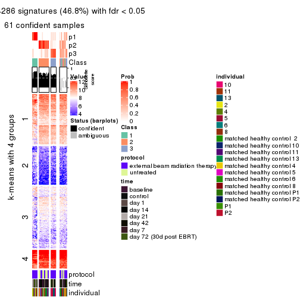
get_signatures(res, k = 4, scale_rows = FALSE)
get_signatures(res, k = 5, scale_rows = FALSE)
get_signatures(res, k = 6, scale_rows = FALSE)

Compare the overlap of signatures from different k:
compare_signatures(res)
get_signature() returns a data frame invisibly. TO get the list of signatures, the function
call should be assigned to a variable explicitly. In following code, if plot argument is set
to FALSE, no heatmap is plotted while only the differential analysis is performed.
# code only for demonstration
tb = get_signature(res, k = ..., plot = FALSE)
An example of the output of tb is:
#> which_row fdr mean_1 mean_2 scaled_mean_1 scaled_mean_2 km
#> 1 38 0.042760348 8.373488 9.131774 -0.5533452 0.5164555 1
#> 2 40 0.018707592 7.106213 8.469186 -0.6173731 0.5762149 1
#> 3 55 0.019134737 10.221463 11.207825 -0.6159697 0.5749050 1
#> 4 59 0.006059896 5.921854 7.869574 -0.6899429 0.6439467 1
#> 5 60 0.018055526 8.928898 10.211722 -0.6204761 0.5791110 1
#> 6 98 0.009384629 15.714769 14.887706 0.6635654 -0.6193277 2
...
The columns in tb are:
which_row: row indices corresponding to the input matrix.fdr: FDR for the differential test. mean_x: The mean value in group x.scaled_mean_x: The mean value in group x after rows are scaled.km: Row groups if k-means clustering is applied to rows.UMAP plot which shows how samples are separated.
dimension_reduction(res, k = 2, method = "UMAP")
dimension_reduction(res, k = 3, method = "UMAP")
dimension_reduction(res, k = 4, method = "UMAP")
dimension_reduction(res, k = 5, method = "UMAP")
dimension_reduction(res, k = 6, method = "UMAP")
Following heatmap shows how subgroups are split when increasing k:
collect_classes(res)

Test correlation between subgroups and known annotations. If the known annotation is numeric, one-way ANOVA test is applied, and if the known annotation is discrete, chi-squared contingency table test is applied.
test_to_known_factors(res)
#> n protocol(p) time(p) individual(p) k
#> MAD:skmeans 75 0.001446 0.001759 0.056516 2
#> MAD:skmeans 61 0.000165 0.000727 0.007726 3
#> MAD:skmeans 40 0.000129 0.002799 0.000379 4
#> MAD:skmeans 29 0.002587 0.006380 0.002632 5
#> MAD:skmeans 12 NA NA NA 6
If matrix rows can be associated to genes, consider to use GO_Enrichment(res,
...) to perform function enrichment for the signature genes.
The object with results only for a single top-value method and a single partition method can be extracted as:
res = res_list["MAD", "pam"]
# you can also extract it by
# res = res_list["MAD:pam"]
A summary of res and all the functions that can be applied to it:
res
#> A 'ConsensusPartition' object with k = 2, 3, 4, 5, 6.
#> On a matrix with 51941 rows and 80 columns.
#> Top rows (1000, 2000, 3000, 4000, 5000) are extracted by 'MAD' method.
#> Subgroups are detected by 'pam' method.
#> Performed in total 1250 partitions by row resampling.
#> Best k for subgroups seems to be 2.
#>
#> Following methods can be applied to this 'ConsensusPartition' object:
#> [1] "cola_report" "collect_classes" "collect_plots"
#> [4] "collect_stats" "colnames" "compare_signatures"
#> [7] "consensus_heatmap" "dimension_reduction" "functional_enrichment"
#> [10] "get_anno_col" "get_anno" "get_classes"
#> [13] "get_consensus" "get_matrix" "get_membership"
#> [16] "get_param" "get_signatures" "get_stats"
#> [19] "is_best_k" "is_stable_k" "membership_heatmap"
#> [22] "ncol" "nrow" "plot_ecdf"
#> [25] "rownames" "select_partition_number" "show"
#> [28] "suggest_best_k" "test_to_known_factors"
collect_plots() function collects all the plots made from res for all k (number of partitions)
into one single page to provide an easy and fast comparison between different k.
collect_plots(res)
The plots are:
k and the heatmap of
predicted classes for each k.k.k.k.All the plots in panels can be made by individual functions and they are plotted later in this section.
select_partition_number() produces several plots showing different
statistics for choosing “optimized” k. There are following statistics:
k;k, the area increased is defined as \(A_k - A_{k-1}\).The detailed explanations of these statistics can be found in the cola vignette.
Generally speaking, lower PAC score, higher mean silhouette score or higher
concordance corresponds to better partition. Rand index and Jaccard index
measure how similar the current partition is compared to partition with k-1.
If they are too similar, we won't accept k is better than k-1.
select_partition_number(res)
The numeric values for all these statistics can be obtained by get_stats().
get_stats(res)
#> k 1-PAC mean_silhouette concordance area_increased Rand Jaccard
#> 2 2 1.000 0.983 0.992 0.2100 0.778 0.778
#> 3 3 0.236 0.553 0.769 1.7820 0.608 0.505
#> 4 4 0.282 0.304 0.674 0.1149 0.909 0.793
#> 5 5 0.308 0.325 0.674 0.0198 0.966 0.912
#> 6 6 0.307 0.384 0.680 0.0139 0.930 0.819
suggest_best_k() suggests the best \(k\) based on these statistics. The rules are as follows:
NA.suggest_best_k(res)
#> [1] 2
Following shows the table of the partitions (You need to click the show/hide
code output link to see it). The membership matrix (columns with name p*)
is inferred by
clue::cl_consensus()
function with the SE method. Basically the value in the membership matrix
represents the probability to belong to a certain group. The finall class
label for an item is determined with the group with highest probability it
belongs to.
In get_classes() function, the entropy is calculated from the membership
matrix and the silhouette score is calculated from the consensus matrix.
cbind(get_classes(res, k = 2), get_membership(res, k = 2))
#> class entropy silhouette p1 p2
#> GSM753604 1 0.494 0.864 0.892 0.108
#> GSM753620 2 0.000 1.000 0.000 1.000
#> GSM753628 2 0.000 1.000 0.000 1.000
#> GSM753636 2 0.000 1.000 0.000 1.000
#> GSM753644 2 0.000 1.000 0.000 1.000
#> GSM753572 2 0.000 1.000 0.000 1.000
#> GSM753580 2 0.000 1.000 0.000 1.000
#> GSM753588 2 0.000 1.000 0.000 1.000
#> GSM753596 2 0.000 1.000 0.000 1.000
#> GSM753612 2 0.000 1.000 0.000 1.000
#> GSM753603 2 0.000 1.000 0.000 1.000
#> GSM753619 2 0.000 1.000 0.000 1.000
#> GSM753627 2 0.000 1.000 0.000 1.000
#> GSM753635 2 0.000 1.000 0.000 1.000
#> GSM753643 2 0.000 1.000 0.000 1.000
#> GSM753571 2 0.000 1.000 0.000 1.000
#> GSM753579 2 0.000 1.000 0.000 1.000
#> GSM753587 2 0.000 1.000 0.000 1.000
#> GSM753595 2 0.000 1.000 0.000 1.000
#> GSM753611 2 0.000 1.000 0.000 1.000
#> GSM753605 1 0.000 0.929 1.000 0.000
#> GSM753621 2 0.000 1.000 0.000 1.000
#> GSM753629 2 0.000 1.000 0.000 1.000
#> GSM753637 2 0.000 1.000 0.000 1.000
#> GSM753645 2 0.000 1.000 0.000 1.000
#> GSM753573 1 0.000 0.929 1.000 0.000
#> GSM753581 2 0.000 1.000 0.000 1.000
#> GSM753589 2 0.000 1.000 0.000 1.000
#> GSM753597 2 0.000 1.000 0.000 1.000
#> GSM753613 2 0.000 1.000 0.000 1.000
#> GSM753606 2 0.000 1.000 0.000 1.000
#> GSM753622 1 0.000 0.929 1.000 0.000
#> GSM753630 2 0.000 1.000 0.000 1.000
#> GSM753638 2 0.000 1.000 0.000 1.000
#> GSM753646 1 0.000 0.929 1.000 0.000
#> GSM753574 2 0.000 1.000 0.000 1.000
#> GSM753582 2 0.000 1.000 0.000 1.000
#> GSM753590 2 0.000 1.000 0.000 1.000
#> GSM753598 2 0.000 1.000 0.000 1.000
#> GSM753614 2 0.000 1.000 0.000 1.000
#> GSM753607 2 0.000 1.000 0.000 1.000
#> GSM753623 2 0.000 1.000 0.000 1.000
#> GSM753631 2 0.000 1.000 0.000 1.000
#> GSM753639 2 0.000 1.000 0.000 1.000
#> GSM753647 2 0.000 1.000 0.000 1.000
#> GSM753575 2 0.000 1.000 0.000 1.000
#> GSM753583 2 0.000 1.000 0.000 1.000
#> GSM753591 2 0.000 1.000 0.000 1.000
#> GSM753599 2 0.000 1.000 0.000 1.000
#> GSM753615 2 0.000 1.000 0.000 1.000
#> GSM753608 2 0.000 1.000 0.000 1.000
#> GSM753624 2 0.000 1.000 0.000 1.000
#> GSM753632 2 0.000 1.000 0.000 1.000
#> GSM753640 2 0.000 1.000 0.000 1.000
#> GSM753648 1 0.000 0.929 1.000 0.000
#> GSM753576 2 0.000 1.000 0.000 1.000
#> GSM753584 2 0.000 1.000 0.000 1.000
#> GSM753592 2 0.000 1.000 0.000 1.000
#> GSM753600 2 0.000 1.000 0.000 1.000
#> GSM753616 2 0.000 1.000 0.000 1.000
#> GSM753609 2 0.000 1.000 0.000 1.000
#> GSM753625 1 0.000 0.929 1.000 0.000
#> GSM753633 2 0.000 1.000 0.000 1.000
#> GSM753641 2 0.000 1.000 0.000 1.000
#> GSM753649 2 0.000 1.000 0.000 1.000
#> GSM753577 2 0.000 1.000 0.000 1.000
#> GSM753585 2 0.000 1.000 0.000 1.000
#> GSM753593 2 0.000 1.000 0.000 1.000
#> GSM753601 2 0.000 1.000 0.000 1.000
#> GSM753617 2 0.000 1.000 0.000 1.000
#> GSM753610 2 0.000 1.000 0.000 1.000
#> GSM753626 2 0.000 1.000 0.000 1.000
#> GSM753634 2 0.000 1.000 0.000 1.000
#> GSM753642 1 0.939 0.492 0.644 0.356
#> GSM753650 1 0.000 0.929 1.000 0.000
#> GSM753578 1 0.662 0.800 0.828 0.172
#> GSM753586 2 0.000 1.000 0.000 1.000
#> GSM753594 2 0.000 1.000 0.000 1.000
#> GSM753602 2 0.000 1.000 0.000 1.000
#> GSM753618 2 0.000 1.000 0.000 1.000
cbind(get_classes(res, k = 3), get_membership(res, k = 3))
#> class entropy silhouette p1 p2 p3
#> GSM753604 1 0.3340 0.829682 0.880 0.000 0.120
#> GSM753620 2 0.4291 0.597502 0.000 0.820 0.180
#> GSM753628 2 0.5621 0.531374 0.000 0.692 0.308
#> GSM753636 2 0.5905 0.486612 0.000 0.648 0.352
#> GSM753644 2 0.0892 0.681984 0.000 0.980 0.020
#> GSM753572 2 0.6045 0.476457 0.000 0.620 0.380
#> GSM753580 2 0.5216 0.502066 0.000 0.740 0.260
#> GSM753588 3 0.3941 0.668324 0.000 0.156 0.844
#> GSM753596 2 0.6291 0.021811 0.000 0.532 0.468
#> GSM753612 3 0.6260 0.186502 0.000 0.448 0.552
#> GSM753603 2 0.1529 0.685847 0.000 0.960 0.040
#> GSM753619 2 0.4654 0.659541 0.000 0.792 0.208
#> GSM753627 2 0.2537 0.688187 0.000 0.920 0.080
#> GSM753635 2 0.2356 0.681576 0.000 0.928 0.072
#> GSM753643 2 0.2448 0.691810 0.000 0.924 0.076
#> GSM753571 2 0.6168 0.407378 0.000 0.588 0.412
#> GSM753579 3 0.1860 0.671313 0.000 0.052 0.948
#> GSM753587 2 0.6168 0.199717 0.000 0.588 0.412
#> GSM753595 3 0.6309 -0.007817 0.000 0.496 0.504
#> GSM753611 3 0.3619 0.650428 0.000 0.136 0.864
#> GSM753605 1 0.0000 0.948116 1.000 0.000 0.000
#> GSM753621 2 0.6302 0.162874 0.000 0.520 0.480
#> GSM753629 3 0.6291 -0.110587 0.000 0.468 0.532
#> GSM753637 2 0.0000 0.678577 0.000 1.000 0.000
#> GSM753645 2 0.1289 0.685457 0.000 0.968 0.032
#> GSM753573 1 0.0000 0.948116 1.000 0.000 0.000
#> GSM753581 3 0.6095 0.385545 0.000 0.392 0.608
#> GSM753589 2 0.4291 0.665590 0.000 0.820 0.180
#> GSM753597 2 0.6154 0.316539 0.000 0.592 0.408
#> GSM753613 2 0.3816 0.678987 0.000 0.852 0.148
#> GSM753606 2 0.4062 0.653712 0.000 0.836 0.164
#> GSM753622 1 0.0000 0.948116 1.000 0.000 0.000
#> GSM753630 2 0.1860 0.687104 0.000 0.948 0.052
#> GSM753638 2 0.3192 0.670112 0.000 0.888 0.112
#> GSM753646 1 0.0000 0.948116 1.000 0.000 0.000
#> GSM753574 2 0.6079 0.430751 0.000 0.612 0.388
#> GSM753582 2 0.5706 0.531810 0.000 0.680 0.320
#> GSM753590 3 0.5810 0.436269 0.000 0.336 0.664
#> GSM753598 3 0.3686 0.657039 0.000 0.140 0.860
#> GSM753614 3 0.0592 0.661098 0.000 0.012 0.988
#> GSM753607 3 0.6286 0.050244 0.000 0.464 0.536
#> GSM753623 2 0.4842 0.646902 0.000 0.776 0.224
#> GSM753631 2 0.5465 0.595285 0.000 0.712 0.288
#> GSM753639 2 0.1529 0.686236 0.000 0.960 0.040
#> GSM753647 2 0.3686 0.693597 0.000 0.860 0.140
#> GSM753575 3 0.5948 0.515924 0.000 0.360 0.640
#> GSM753583 3 0.2356 0.669841 0.000 0.072 0.928
#> GSM753591 3 0.3038 0.635029 0.000 0.104 0.896
#> GSM753599 3 0.2625 0.654955 0.000 0.084 0.916
#> GSM753615 3 0.6309 0.104138 0.000 0.496 0.504
#> GSM753608 2 0.3192 0.670243 0.000 0.888 0.112
#> GSM753624 3 0.5621 0.478684 0.000 0.308 0.692
#> GSM753632 2 0.2711 0.698997 0.000 0.912 0.088
#> GSM753640 2 0.2878 0.696884 0.000 0.904 0.096
#> GSM753648 1 0.0000 0.948116 1.000 0.000 0.000
#> GSM753576 3 0.5216 0.582149 0.000 0.260 0.740
#> GSM753584 3 0.2537 0.658498 0.000 0.080 0.920
#> GSM753592 3 0.5327 0.648523 0.000 0.272 0.728
#> GSM753600 2 0.5363 0.545371 0.000 0.724 0.276
#> GSM753616 3 0.5733 0.526494 0.000 0.324 0.676
#> GSM753609 2 0.4654 0.663297 0.000 0.792 0.208
#> GSM753625 1 0.0000 0.948116 1.000 0.000 0.000
#> GSM753633 2 0.6291 0.187154 0.000 0.532 0.468
#> GSM753641 2 0.4121 0.665242 0.000 0.832 0.168
#> GSM753649 2 0.5016 0.638148 0.000 0.760 0.240
#> GSM753577 3 0.3412 0.659851 0.000 0.124 0.876
#> GSM753585 3 0.5882 0.457985 0.000 0.348 0.652
#> GSM753593 3 0.5529 0.566792 0.000 0.296 0.704
#> GSM753601 2 0.6204 0.215424 0.000 0.576 0.424
#> GSM753617 3 0.3116 0.663820 0.000 0.108 0.892
#> GSM753610 3 0.6302 -0.000674 0.000 0.480 0.520
#> GSM753626 2 0.6305 0.110561 0.000 0.516 0.484
#> GSM753634 2 0.6111 0.408502 0.000 0.604 0.396
#> GSM753642 2 0.7295 0.014661 0.484 0.488 0.028
#> GSM753650 1 0.0000 0.948116 1.000 0.000 0.000
#> GSM753578 1 0.7091 0.660661 0.724 0.152 0.124
#> GSM753586 3 0.4291 0.637743 0.000 0.180 0.820
#> GSM753594 2 0.5529 0.540154 0.000 0.704 0.296
#> GSM753602 3 0.5706 0.605963 0.000 0.320 0.680
#> GSM753618 3 0.2165 0.671293 0.000 0.064 0.936
cbind(get_classes(res, k = 4), get_membership(res, k = 4))
#> class entropy silhouette p1 p2 p3 p4
#> GSM753604 1 0.4894 0.7485 0.780 0.000 0.120 0.100
#> GSM753620 2 0.2198 0.5099 0.000 0.920 0.008 0.072
#> GSM753628 2 0.7483 -0.3716 0.000 0.456 0.360 0.184
#> GSM753636 2 0.7538 -0.2733 0.000 0.492 0.248 0.260
#> GSM753644 2 0.1182 0.5139 0.000 0.968 0.016 0.016
#> GSM753572 2 0.7512 -0.1395 0.000 0.460 0.192 0.348
#> GSM753580 2 0.3479 0.4893 0.000 0.840 0.012 0.148
#> GSM753588 4 0.3570 0.5478 0.000 0.092 0.048 0.860
#> GSM753596 2 0.6969 0.0429 0.000 0.452 0.112 0.436
#> GSM753612 4 0.7332 -0.1196 0.000 0.372 0.160 0.468
#> GSM753603 2 0.1305 0.5144 0.000 0.960 0.004 0.036
#> GSM753619 2 0.6712 0.0416 0.000 0.552 0.344 0.104
#> GSM753627 2 0.1978 0.5096 0.000 0.928 0.004 0.068
#> GSM753635 2 0.3647 0.4649 0.000 0.832 0.152 0.016
#> GSM753643 2 0.3266 0.5126 0.000 0.876 0.084 0.040
#> GSM753571 3 0.7890 0.5238 0.000 0.336 0.372 0.292
#> GSM753579 4 0.2032 0.5659 0.000 0.028 0.036 0.936
#> GSM753587 2 0.5999 0.2031 0.000 0.552 0.044 0.404
#> GSM753595 2 0.6330 -0.1132 0.000 0.492 0.060 0.448
#> GSM753611 4 0.2908 0.5498 0.000 0.064 0.040 0.896
#> GSM753605 1 0.0000 0.8902 1.000 0.000 0.000 0.000
#> GSM753621 3 0.7767 0.6773 0.000 0.268 0.432 0.300
#> GSM753629 4 0.7186 -0.3352 0.000 0.420 0.136 0.444
#> GSM753637 2 0.0188 0.5106 0.000 0.996 0.000 0.004
#> GSM753645 2 0.0927 0.5160 0.000 0.976 0.008 0.016
#> GSM753573 1 0.0000 0.8902 1.000 0.000 0.000 0.000
#> GSM753581 4 0.4483 0.3654 0.000 0.284 0.004 0.712
#> GSM753589 2 0.5812 0.4016 0.000 0.708 0.156 0.136
#> GSM753597 2 0.5161 0.2456 0.000 0.676 0.024 0.300
#> GSM753613 2 0.5432 0.3917 0.000 0.716 0.216 0.068
#> GSM753606 2 0.4890 0.4865 0.000 0.776 0.144 0.080
#> GSM753622 1 0.0000 0.8902 1.000 0.000 0.000 0.000
#> GSM753630 2 0.1936 0.5166 0.000 0.940 0.028 0.032
#> GSM753638 2 0.5389 0.2678 0.000 0.660 0.308 0.032
#> GSM753646 1 0.0000 0.8902 1.000 0.000 0.000 0.000
#> GSM753574 2 0.7807 -0.5205 0.000 0.420 0.292 0.288
#> GSM753582 2 0.7416 -0.1605 0.000 0.516 0.240 0.244
#> GSM753590 4 0.7278 -0.2862 0.000 0.168 0.324 0.508
#> GSM753598 4 0.3372 0.5591 0.000 0.096 0.036 0.868
#> GSM753614 4 0.1211 0.5654 0.000 0.000 0.040 0.960
#> GSM753607 4 0.7816 -0.4369 0.000 0.340 0.260 0.400
#> GSM753623 2 0.6873 0.0888 0.000 0.580 0.272 0.148
#> GSM753631 2 0.7483 -0.3685 0.000 0.456 0.360 0.184
#> GSM753639 2 0.2593 0.5069 0.000 0.904 0.080 0.016
#> GSM753647 2 0.5620 0.3963 0.000 0.708 0.208 0.084
#> GSM753575 4 0.7463 -0.0374 0.000 0.224 0.272 0.504
#> GSM753583 4 0.1584 0.5668 0.000 0.036 0.012 0.952
#> GSM753591 4 0.1284 0.5582 0.000 0.024 0.012 0.964
#> GSM753599 4 0.1913 0.5656 0.000 0.040 0.020 0.940
#> GSM753615 3 0.7900 0.5519 0.000 0.320 0.372 0.308
#> GSM753608 2 0.3398 0.5139 0.000 0.872 0.068 0.060
#> GSM753624 4 0.6599 -0.1510 0.000 0.080 0.432 0.488
#> GSM753632 2 0.3144 0.5181 0.000 0.884 0.072 0.044
#> GSM753640 2 0.4578 0.4628 0.000 0.788 0.160 0.052
#> GSM753648 1 0.0000 0.8902 1.000 0.000 0.000 0.000
#> GSM753576 4 0.6661 -0.1293 0.000 0.084 0.456 0.460
#> GSM753584 4 0.1452 0.5636 0.000 0.036 0.008 0.956
#> GSM753592 4 0.6753 0.3519 0.000 0.228 0.164 0.608
#> GSM753600 2 0.6936 0.0579 0.000 0.588 0.188 0.224
#> GSM753616 4 0.6944 -0.1480 0.000 0.112 0.404 0.484
#> GSM753609 2 0.6452 0.3154 0.000 0.620 0.268 0.112
#> GSM753625 1 0.0000 0.8902 1.000 0.000 0.000 0.000
#> GSM753633 2 0.6669 0.0472 0.000 0.564 0.104 0.332
#> GSM753641 2 0.6275 0.1393 0.000 0.596 0.328 0.076
#> GSM753649 2 0.6617 0.2434 0.000 0.628 0.196 0.176
#> GSM753577 4 0.5574 0.3343 0.000 0.048 0.284 0.668
#> GSM753585 4 0.6352 0.3158 0.000 0.260 0.108 0.632
#> GSM753593 4 0.6723 0.3467 0.000 0.196 0.188 0.616
#> GSM753601 2 0.7841 -0.2935 0.000 0.404 0.312 0.284
#> GSM753617 4 0.4244 0.4917 0.000 0.036 0.160 0.804
#> GSM753610 2 0.7392 -0.1029 0.000 0.460 0.168 0.372
#> GSM753626 2 0.7182 0.0555 0.000 0.452 0.136 0.412
#> GSM753634 2 0.7860 -0.5381 0.000 0.396 0.312 0.292
#> GSM753642 1 0.8101 0.2914 0.408 0.300 0.284 0.008
#> GSM753650 1 0.0000 0.8902 1.000 0.000 0.000 0.000
#> GSM753578 1 0.8029 0.6076 0.584 0.088 0.200 0.128
#> GSM753586 4 0.5759 0.3076 0.000 0.064 0.268 0.668
#> GSM753594 2 0.5448 0.3770 0.000 0.700 0.056 0.244
#> GSM753602 4 0.6936 0.2102 0.000 0.284 0.148 0.568
#> GSM753618 4 0.3333 0.5549 0.000 0.040 0.088 0.872
cbind(get_classes(res, k = 5), get_membership(res, k = 5))
#> class entropy silhouette p1 p2 p3 p4 p5
#> GSM753604 1 0.5939 0.20537 0.604 0.000 0.040 0.056 0.300
#> GSM753620 2 0.1740 0.54280 0.000 0.932 0.000 0.056 0.012
#> GSM753628 2 0.6436 -0.22864 0.000 0.428 0.000 0.176 0.396
#> GSM753636 2 0.6538 -0.06398 0.000 0.480 0.000 0.248 0.272
#> GSM753644 2 0.1012 0.54383 0.000 0.968 0.000 0.012 0.020
#> GSM753572 2 0.6839 0.00139 0.000 0.440 0.008 0.328 0.224
#> GSM753580 2 0.2825 0.53349 0.000 0.860 0.000 0.124 0.016
#> GSM753588 4 0.3215 0.54151 0.000 0.092 0.000 0.852 0.056
#> GSM753596 2 0.6037 0.07725 0.000 0.448 0.000 0.436 0.116
#> GSM753612 4 0.6632 -0.10142 0.000 0.364 0.008 0.456 0.172
#> GSM753603 2 0.1041 0.54614 0.000 0.964 0.000 0.032 0.004
#> GSM753619 2 0.5990 0.15033 0.000 0.524 0.004 0.104 0.368
#> GSM753627 2 0.1638 0.54507 0.000 0.932 0.000 0.064 0.004
#> GSM753635 2 0.3239 0.51222 0.000 0.828 0.004 0.012 0.156
#> GSM753643 2 0.2905 0.54837 0.000 0.868 0.000 0.036 0.096
#> GSM753571 5 0.6974 0.39023 0.000 0.308 0.008 0.276 0.408
#> GSM753579 4 0.1648 0.56514 0.000 0.020 0.000 0.940 0.040
#> GSM753587 2 0.5221 0.26329 0.000 0.552 0.000 0.400 0.048
#> GSM753595 2 0.5731 -0.01085 0.000 0.480 0.000 0.436 0.084
#> GSM753611 4 0.2659 0.54853 0.000 0.060 0.000 0.888 0.052
#> GSM753605 1 0.0000 0.91840 1.000 0.000 0.000 0.000 0.000
#> GSM753621 5 0.6557 0.59800 0.000 0.240 0.000 0.288 0.472
#> GSM753629 2 0.6664 -0.07982 0.000 0.424 0.012 0.408 0.156
#> GSM753637 2 0.0162 0.54142 0.000 0.996 0.000 0.004 0.000
#> GSM753645 2 0.0912 0.54846 0.000 0.972 0.000 0.012 0.016
#> GSM753573 1 0.0000 0.91840 1.000 0.000 0.000 0.000 0.000
#> GSM753581 4 0.3636 0.38129 0.000 0.272 0.000 0.728 0.000
#> GSM753589 2 0.5002 0.47132 0.000 0.708 0.000 0.132 0.160
#> GSM753597 2 0.4520 0.34187 0.000 0.684 0.000 0.284 0.032
#> GSM753613 2 0.4820 0.44142 0.000 0.696 0.000 0.068 0.236
#> GSM753606 2 0.4464 0.53052 0.000 0.772 0.012 0.068 0.148
#> GSM753622 1 0.0000 0.91840 1.000 0.000 0.000 0.000 0.000
#> GSM753630 2 0.1750 0.54968 0.000 0.936 0.000 0.028 0.036
#> GSM753638 2 0.4763 0.32384 0.000 0.632 0.000 0.032 0.336
#> GSM753646 1 0.0000 0.91840 1.000 0.000 0.000 0.000 0.000
#> GSM753574 2 0.7069 -0.36404 0.000 0.400 0.012 0.272 0.316
#> GSM753582 2 0.6637 -0.02185 0.000 0.488 0.004 0.248 0.260
#> GSM753590 4 0.6457 -0.38101 0.000 0.148 0.008 0.488 0.356
#> GSM753598 4 0.3243 0.55861 0.000 0.092 0.012 0.860 0.036
#> GSM753614 4 0.0963 0.56542 0.000 0.000 0.000 0.964 0.036
#> GSM753607 4 0.7021 -0.39261 0.000 0.312 0.008 0.384 0.296
#> GSM753623 2 0.6006 0.20269 0.000 0.556 0.000 0.144 0.300
#> GSM753631 2 0.6526 -0.18608 0.000 0.440 0.004 0.168 0.388
#> GSM753639 2 0.2351 0.54365 0.000 0.896 0.000 0.016 0.088
#> GSM753647 2 0.5059 0.45981 0.000 0.688 0.004 0.076 0.232
#> GSM753575 4 0.6772 -0.16662 0.000 0.200 0.012 0.480 0.308
#> GSM753583 4 0.1364 0.56711 0.000 0.036 0.000 0.952 0.012
#> GSM753591 4 0.1267 0.55972 0.000 0.024 0.004 0.960 0.012
#> GSM753599 4 0.1911 0.56470 0.000 0.036 0.004 0.932 0.028
#> GSM753615 5 0.6742 0.48860 0.000 0.296 0.000 0.292 0.412
#> GSM753608 2 0.3116 0.54676 0.000 0.860 0.000 0.064 0.076
#> GSM753624 4 0.5645 -0.31915 0.000 0.048 0.012 0.472 0.468
#> GSM753632 2 0.2913 0.55378 0.000 0.876 0.004 0.040 0.080
#> GSM753640 2 0.4031 0.51094 0.000 0.772 0.000 0.044 0.184
#> GSM753648 1 0.0000 0.91840 1.000 0.000 0.000 0.000 0.000
#> GSM753576 5 0.5648 0.14868 0.000 0.056 0.008 0.440 0.496
#> GSM753584 4 0.1168 0.56437 0.000 0.032 0.000 0.960 0.008
#> GSM753592 4 0.5979 0.26889 0.000 0.220 0.000 0.588 0.192
#> GSM753600 2 0.6132 0.17149 0.000 0.564 0.000 0.212 0.224
#> GSM753616 4 0.5734 -0.35300 0.000 0.084 0.000 0.472 0.444
#> GSM753609 2 0.5637 0.38797 0.000 0.604 0.000 0.112 0.284
#> GSM753625 1 0.0000 0.91840 1.000 0.000 0.000 0.000 0.000
#> GSM753633 2 0.6043 0.18758 0.000 0.568 0.008 0.308 0.116
#> GSM753641 2 0.5509 0.21791 0.000 0.564 0.000 0.076 0.360
#> GSM753649 2 0.6056 0.34484 0.000 0.616 0.012 0.164 0.208
#> GSM753577 4 0.4906 0.20783 0.000 0.028 0.008 0.640 0.324
#> GSM753585 4 0.5447 0.32236 0.000 0.248 0.000 0.640 0.112
#> GSM753593 4 0.5852 0.33624 0.000 0.180 0.004 0.624 0.192
#> GSM753601 2 0.7012 -0.24074 0.000 0.376 0.008 0.276 0.340
#> GSM753617 4 0.3733 0.47325 0.000 0.032 0.004 0.804 0.160
#> GSM753610 2 0.6802 0.02277 0.000 0.456 0.012 0.340 0.192
#> GSM753626 2 0.6219 0.11071 0.000 0.440 0.000 0.420 0.140
#> GSM753634 2 0.6778 -0.40672 0.000 0.368 0.000 0.276 0.356
#> GSM753642 3 0.6379 0.27000 0.280 0.164 0.548 0.004 0.004
#> GSM753650 1 0.0000 0.91840 1.000 0.000 0.000 0.000 0.000
#> GSM753578 3 0.7546 0.16465 0.336 0.016 0.400 0.020 0.228
#> GSM753586 4 0.4928 0.20809 0.000 0.056 0.000 0.660 0.284
#> GSM753594 2 0.5032 0.44011 0.000 0.692 0.004 0.228 0.076
#> GSM753602 4 0.6130 0.14475 0.000 0.264 0.000 0.556 0.180
#> GSM753618 4 0.3241 0.54237 0.000 0.036 0.008 0.856 0.100
cbind(get_classes(res, k = 6), get_membership(res, k = 6))
#> class entropy silhouette p1 p2 p3 p4 p5 p6
#> GSM753604 5 0.6771 -0.6590 0.276 0.000 0.164 0.000 0.476 0.084
#> GSM753620 2 0.1500 0.5818 0.000 0.936 0.000 0.052 0.012 0.000
#> GSM753628 5 0.5681 -0.0714 0.000 0.416 0.000 0.156 0.428 0.000
#> GSM753636 2 0.5841 0.1226 0.000 0.480 0.000 0.220 0.300 0.000
#> GSM753644 2 0.0806 0.5834 0.000 0.972 0.000 0.008 0.020 0.000
#> GSM753572 2 0.6198 0.1469 0.000 0.436 0.008 0.300 0.256 0.000
#> GSM753580 2 0.2450 0.5738 0.000 0.868 0.000 0.116 0.016 0.000
#> GSM753588 4 0.3118 0.5772 0.000 0.092 0.000 0.836 0.072 0.000
#> GSM753596 4 0.5422 -0.0195 0.000 0.436 0.000 0.448 0.116 0.000
#> GSM753612 4 0.6114 0.0449 0.000 0.356 0.012 0.444 0.188 0.000
#> GSM753603 2 0.0972 0.5880 0.000 0.964 0.000 0.028 0.008 0.000
#> GSM753619 2 0.5202 0.2652 0.000 0.516 0.004 0.080 0.400 0.000
#> GSM753627 2 0.1563 0.5865 0.000 0.932 0.000 0.056 0.012 0.000
#> GSM753635 2 0.2809 0.5606 0.000 0.824 0.004 0.004 0.168 0.000
#> GSM753643 2 0.2510 0.5932 0.000 0.872 0.000 0.028 0.100 0.000
#> GSM753571 5 0.6177 0.2100 0.000 0.308 0.008 0.244 0.440 0.000
#> GSM753579 4 0.1549 0.5968 0.000 0.020 0.000 0.936 0.044 0.000
#> GSM753587 2 0.4845 0.2731 0.000 0.540 0.000 0.400 0.060 0.000
#> GSM753595 2 0.5316 0.1130 0.000 0.480 0.000 0.416 0.104 0.000
#> GSM753611 4 0.2568 0.5761 0.000 0.056 0.000 0.876 0.068 0.000
#> GSM753605 1 0.0000 1.0000 1.000 0.000 0.000 0.000 0.000 0.000
#> GSM753621 5 0.5784 0.3785 0.000 0.236 0.000 0.260 0.504 0.000
#> GSM753629 2 0.6135 0.0652 0.000 0.432 0.016 0.380 0.172 0.000
#> GSM753637 2 0.0146 0.5814 0.000 0.996 0.000 0.004 0.000 0.000
#> GSM753645 2 0.0806 0.5894 0.000 0.972 0.000 0.008 0.020 0.000
#> GSM753573 1 0.0000 1.0000 1.000 0.000 0.000 0.000 0.000 0.000
#> GSM753581 4 0.3126 0.4496 0.000 0.248 0.000 0.752 0.000 0.000
#> GSM753589 2 0.4506 0.5269 0.000 0.704 0.000 0.120 0.176 0.000
#> GSM753597 2 0.4190 0.4096 0.000 0.692 0.000 0.260 0.048 0.000
#> GSM753613 2 0.4227 0.5005 0.000 0.692 0.000 0.052 0.256 0.000
#> GSM753606 2 0.4073 0.5744 0.000 0.764 0.016 0.056 0.164 0.000
#> GSM753622 1 0.0000 1.0000 1.000 0.000 0.000 0.000 0.000 0.000
#> GSM753630 2 0.1644 0.5917 0.000 0.932 0.000 0.028 0.040 0.000
#> GSM753638 2 0.4144 0.3892 0.000 0.620 0.000 0.020 0.360 0.000
#> GSM753646 1 0.0000 1.0000 1.000 0.000 0.000 0.000 0.000 0.000
#> GSM753574 2 0.6317 -0.1492 0.000 0.392 0.012 0.244 0.352 0.000
#> GSM753582 2 0.6075 0.1457 0.000 0.476 0.008 0.232 0.284 0.000
#> GSM753590 4 0.5899 -0.2298 0.000 0.144 0.012 0.460 0.384 0.000
#> GSM753598 4 0.2858 0.5936 0.000 0.092 0.016 0.864 0.028 0.000
#> GSM753614 4 0.1010 0.5941 0.000 0.000 0.004 0.960 0.036 0.000
#> GSM753607 4 0.6467 -0.2191 0.000 0.304 0.016 0.372 0.308 0.000
#> GSM753623 2 0.5291 0.3152 0.000 0.552 0.000 0.120 0.328 0.000
#> GSM753631 2 0.5784 0.0156 0.000 0.432 0.004 0.152 0.412 0.000
#> GSM753639 2 0.2070 0.5897 0.000 0.896 0.000 0.012 0.092 0.000
#> GSM753647 2 0.4588 0.5165 0.000 0.676 0.004 0.072 0.248 0.000
#> GSM753575 4 0.6174 -0.0534 0.000 0.192 0.016 0.460 0.332 0.000
#> GSM753583 4 0.1320 0.5970 0.000 0.036 0.000 0.948 0.016 0.000
#> GSM753591 4 0.1065 0.5908 0.000 0.020 0.008 0.964 0.008 0.000
#> GSM753599 4 0.1901 0.5906 0.000 0.028 0.008 0.924 0.040 0.000
#> GSM753615 5 0.5994 0.3041 0.000 0.284 0.000 0.276 0.440 0.000
#> GSM753608 2 0.2672 0.5887 0.000 0.868 0.000 0.052 0.080 0.000
#> GSM753624 5 0.5163 0.1177 0.000 0.044 0.020 0.444 0.492 0.000
#> GSM753632 2 0.2504 0.5983 0.000 0.880 0.004 0.028 0.088 0.000
#> GSM753640 2 0.3512 0.5646 0.000 0.772 0.000 0.032 0.196 0.000
#> GSM753648 1 0.0000 1.0000 1.000 0.000 0.000 0.000 0.000 0.000
#> GSM753576 5 0.5068 0.1376 0.000 0.044 0.016 0.420 0.520 0.000
#> GSM753584 4 0.0692 0.5923 0.000 0.020 0.000 0.976 0.004 0.000
#> GSM753592 4 0.5588 0.3396 0.000 0.204 0.008 0.584 0.204 0.000
#> GSM753600 2 0.5534 0.2864 0.000 0.556 0.000 0.196 0.248 0.000
#> GSM753616 5 0.5034 0.1138 0.000 0.072 0.000 0.456 0.472 0.000
#> GSM753609 2 0.5081 0.4621 0.000 0.612 0.004 0.100 0.284 0.000
#> GSM753625 1 0.0000 1.0000 1.000 0.000 0.000 0.000 0.000 0.000
#> GSM753633 2 0.5455 0.2730 0.000 0.572 0.008 0.296 0.124 0.000
#> GSM753641 2 0.4864 0.3092 0.000 0.552 0.000 0.064 0.384 0.000
#> GSM753649 2 0.5368 0.4368 0.000 0.620 0.012 0.140 0.228 0.000
#> GSM753577 4 0.4450 0.2331 0.000 0.020 0.012 0.616 0.352 0.000
#> GSM753585 4 0.4970 0.4172 0.000 0.224 0.004 0.652 0.120 0.000
#> GSM753593 4 0.5393 0.4223 0.000 0.160 0.016 0.632 0.192 0.000
#> GSM753601 2 0.6364 -0.0917 0.000 0.364 0.012 0.264 0.360 0.000
#> GSM753617 4 0.3460 0.5103 0.000 0.028 0.008 0.796 0.168 0.000
#> GSM753610 2 0.6272 0.1430 0.000 0.460 0.020 0.316 0.204 0.000
#> GSM753626 2 0.5834 0.1094 0.000 0.428 0.008 0.420 0.144 0.000
#> GSM753634 5 0.6023 0.1113 0.000 0.364 0.000 0.244 0.392 0.000
#> GSM753642 3 0.2915 0.0000 0.184 0.008 0.808 0.000 0.000 0.000
#> GSM753650 1 0.0000 1.0000 1.000 0.000 0.000 0.000 0.000 0.000
#> GSM753578 6 0.1700 0.0000 0.080 0.004 0.000 0.000 0.000 0.916
#> GSM753586 4 0.4403 0.2731 0.000 0.048 0.000 0.648 0.304 0.000
#> GSM753594 2 0.4520 0.4930 0.000 0.692 0.004 0.228 0.076 0.000
#> GSM753602 4 0.5586 0.2296 0.000 0.260 0.000 0.544 0.196 0.000
#> GSM753618 4 0.2864 0.5736 0.000 0.028 0.012 0.860 0.100 0.000
Heatmaps for the consensus matrix. It visualizes the probability of two samples to be in a same group.
consensus_heatmap(res, k = 2)
consensus_heatmap(res, k = 3)
consensus_heatmap(res, k = 4)
consensus_heatmap(res, k = 5)
consensus_heatmap(res, k = 6)
Heatmaps for the membership of samples in all partitions to see how consistent they are:
membership_heatmap(res, k = 2)
membership_heatmap(res, k = 3)
membership_heatmap(res, k = 4)
membership_heatmap(res, k = 5)

membership_heatmap(res, k = 6)
As soon as we have had the classes for columns, we can look for signatures which are significantly different between classes which can be candidate marks for certain classes. Following are the heatmaps for signatures.
Signature heatmaps where rows are scaled:
get_signatures(res, k = 2)
#> Error in mat[ceiling(1:nr/h_ratio), ceiling(1:nc/w_ratio), drop = FALSE]: subscript out of bounds
get_signatures(res, k = 3)
#> Error in mat[ceiling(1:nr/h_ratio), ceiling(1:nc/w_ratio), drop = FALSE]: subscript out of bounds

get_signatures(res, k = 4)
#> Error: The width or height of the raster image is zero, maybe you forget to turn off the
#> previous graphic device or it was corrupted. Run `dev.off()` to close it.

get_signatures(res, k = 5)
#> Error: The width or height of the raster image is zero, maybe you forget to turn off the
#> previous graphic device or it was corrupted. Run `dev.off()` to close it.

get_signatures(res, k = 6)
#> Error in mat[ceiling(1:nr/h_ratio), ceiling(1:nc/w_ratio), drop = FALSE]: subscript out of bounds

Signature heatmaps where rows are not scaled:
get_signatures(res, k = 2, scale_rows = FALSE)
#> Error in mat[ceiling(1:nr/h_ratio), ceiling(1:nc/w_ratio), drop = FALSE]: subscript out of bounds
get_signatures(res, k = 3, scale_rows = FALSE)
get_signatures(res, k = 4, scale_rows = FALSE)
get_signatures(res, k = 5, scale_rows = FALSE)
get_signatures(res, k = 6, scale_rows = FALSE)
Compare the overlap of signatures from different k:
compare_signatures(res)
get_signature() returns a data frame invisibly. TO get the list of signatures, the function
call should be assigned to a variable explicitly. In following code, if plot argument is set
to FALSE, no heatmap is plotted while only the differential analysis is performed.
# code only for demonstration
tb = get_signature(res, k = ..., plot = FALSE)
An example of the output of tb is:
#> which_row fdr mean_1 mean_2 scaled_mean_1 scaled_mean_2 km
#> 1 38 0.042760348 8.373488 9.131774 -0.5533452 0.5164555 1
#> 2 40 0.018707592 7.106213 8.469186 -0.6173731 0.5762149 1
#> 3 55 0.019134737 10.221463 11.207825 -0.6159697 0.5749050 1
#> 4 59 0.006059896 5.921854 7.869574 -0.6899429 0.6439467 1
#> 5 60 0.018055526 8.928898 10.211722 -0.6204761 0.5791110 1
#> 6 98 0.009384629 15.714769 14.887706 0.6635654 -0.6193277 2
...
The columns in tb are:
which_row: row indices corresponding to the input matrix.fdr: FDR for the differential test. mean_x: The mean value in group x.scaled_mean_x: The mean value in group x after rows are scaled.km: Row groups if k-means clustering is applied to rows.UMAP plot which shows how samples are separated.
dimension_reduction(res, k = 2, method = "UMAP")
dimension_reduction(res, k = 3, method = "UMAP")
dimension_reduction(res, k = 4, method = "UMAP")
dimension_reduction(res, k = 5, method = "UMAP")
dimension_reduction(res, k = 6, method = "UMAP")
Following heatmap shows how subgroups are split when increasing k:
collect_classes(res)
Test correlation between subgroups and known annotations. If the known annotation is numeric, one-way ANOVA test is applied, and if the known annotation is discrete, chi-squared contingency table test is applied.
test_to_known_factors(res)
#> n protocol(p) time(p) individual(p) k
#> MAD:pam 79 0.526 0.643 0.15334 2
#> MAD:pam 57 0.309 0.575 0.00285 3
#> MAD:pam 33 0.427 0.704 0.03611 4
#> MAD:pam 33 0.146 0.397 0.01563 5
#> MAD:pam 36 0.149 0.470 0.00405 6
If matrix rows can be associated to genes, consider to use GO_Enrichment(res,
...) to perform function enrichment for the signature genes.
The object with results only for a single top-value method and a single partition method can be extracted as:
res = res_list["MAD", "mclust"]
# you can also extract it by
# res = res_list["MAD:mclust"]
A summary of res and all the functions that can be applied to it:
res
#> A 'ConsensusPartition' object with k = 2, 3, 4, 5, 6.
#> On a matrix with 51941 rows and 80 columns.
#> Top rows (1000, 2000, 3000, 4000, 5000) are extracted by 'MAD' method.
#> Subgroups are detected by 'mclust' method.
#> Performed in total 1250 partitions by row resampling.
#> Best k for subgroups seems to be 5.
#>
#> Following methods can be applied to this 'ConsensusPartition' object:
#> [1] "cola_report" "collect_classes" "collect_plots"
#> [4] "collect_stats" "colnames" "compare_signatures"
#> [7] "consensus_heatmap" "dimension_reduction" "functional_enrichment"
#> [10] "get_anno_col" "get_anno" "get_classes"
#> [13] "get_consensus" "get_matrix" "get_membership"
#> [16] "get_param" "get_signatures" "get_stats"
#> [19] "is_best_k" "is_stable_k" "membership_heatmap"
#> [22] "ncol" "nrow" "plot_ecdf"
#> [25] "rownames" "select_partition_number" "show"
#> [28] "suggest_best_k" "test_to_known_factors"
collect_plots() function collects all the plots made from res for all k (number of partitions)
into one single page to provide an easy and fast comparison between different k.
collect_plots(res)
The plots are:
k and the heatmap of
predicted classes for each k.k.k.k.All the plots in panels can be made by individual functions and they are plotted later in this section.
select_partition_number() produces several plots showing different
statistics for choosing “optimized” k. There are following statistics:
k;k, the area increased is defined as \(A_k - A_{k-1}\).The detailed explanations of these statistics can be found in the cola vignette.
Generally speaking, lower PAC score, higher mean silhouette score or higher
concordance corresponds to better partition. Rand index and Jaccard index
measure how similar the current partition is compared to partition with k-1.
If they are too similar, we won't accept k is better than k-1.
select_partition_number(res)
The numeric values for all these statistics can be obtained by get_stats().
get_stats(res)
#> k 1-PAC mean_silhouette concordance area_increased Rand Jaccard
#> 2 2 0.803 0.841 0.941 0.2997 0.708 0.708
#> 3 3 0.464 0.612 0.812 0.7642 0.681 0.564
#> 4 4 0.399 0.572 0.728 0.2754 0.822 0.603
#> 5 5 0.569 0.715 0.806 0.1268 0.885 0.631
#> 6 6 0.675 0.690 0.806 0.0567 0.982 0.919
suggest_best_k() suggests the best \(k\) based on these statistics. The rules are as follows:
NA.suggest_best_k(res)
#> [1] 5
Following shows the table of the partitions (You need to click the show/hide
code output link to see it). The membership matrix (columns with name p*)
is inferred by
clue::cl_consensus()
function with the SE method. Basically the value in the membership matrix
represents the probability to belong to a certain group. The finall class
label for an item is determined with the group with highest probability it
belongs to.
In get_classes() function, the entropy is calculated from the membership
matrix and the silhouette score is calculated from the consensus matrix.
cbind(get_classes(res, k = 2), get_membership(res, k = 2))
#> class entropy silhouette p1 p2
#> GSM753604 1 0.0000 0.840 1.000 0.000
#> GSM753620 2 0.1184 0.937 0.016 0.984
#> GSM753628 2 0.0000 0.947 0.000 1.000
#> GSM753636 2 0.1633 0.932 0.024 0.976
#> GSM753644 2 0.5408 0.821 0.124 0.876
#> GSM753572 2 0.1414 0.935 0.020 0.980
#> GSM753580 2 0.0000 0.947 0.000 1.000
#> GSM753588 2 0.0000 0.947 0.000 1.000
#> GSM753596 2 0.0000 0.947 0.000 1.000
#> GSM753612 2 0.0000 0.947 0.000 1.000
#> GSM753603 2 0.0000 0.947 0.000 1.000
#> GSM753619 2 0.9580 0.300 0.380 0.620
#> GSM753627 2 0.0000 0.947 0.000 1.000
#> GSM753635 2 0.2236 0.922 0.036 0.964
#> GSM753643 2 0.9460 0.347 0.364 0.636
#> GSM753571 2 0.1633 0.932 0.024 0.976
#> GSM753579 2 0.0000 0.947 0.000 1.000
#> GSM753587 2 0.0000 0.947 0.000 1.000
#> GSM753595 2 0.0000 0.947 0.000 1.000
#> GSM753611 2 0.0000 0.947 0.000 1.000
#> GSM753605 1 0.0000 0.840 1.000 0.000
#> GSM753621 1 0.9963 0.229 0.536 0.464
#> GSM753629 2 0.0000 0.947 0.000 1.000
#> GSM753637 2 0.2043 0.926 0.032 0.968
#> GSM753645 2 0.9635 0.275 0.388 0.612
#> GSM753573 1 0.0000 0.840 1.000 0.000
#> GSM753581 2 0.0000 0.947 0.000 1.000
#> GSM753589 2 0.0000 0.947 0.000 1.000
#> GSM753597 2 0.0000 0.947 0.000 1.000
#> GSM753613 2 0.0000 0.947 0.000 1.000
#> GSM753606 2 0.9833 0.148 0.424 0.576
#> GSM753622 1 0.0000 0.840 1.000 0.000
#> GSM753630 2 0.0000 0.947 0.000 1.000
#> GSM753638 2 0.1633 0.932 0.024 0.976
#> GSM753646 1 0.0000 0.840 1.000 0.000
#> GSM753574 2 0.1633 0.932 0.024 0.976
#> GSM753582 2 0.0000 0.947 0.000 1.000
#> GSM753590 2 0.0000 0.947 0.000 1.000
#> GSM753598 2 0.0000 0.947 0.000 1.000
#> GSM753614 2 0.0000 0.947 0.000 1.000
#> GSM753607 2 0.0000 0.947 0.000 1.000
#> GSM753623 2 0.9686 0.249 0.396 0.604
#> GSM753631 2 0.0000 0.947 0.000 1.000
#> GSM753639 2 0.1633 0.932 0.024 0.976
#> GSM753647 2 0.9491 0.336 0.368 0.632
#> GSM753575 2 0.0000 0.947 0.000 1.000
#> GSM753583 2 0.0000 0.947 0.000 1.000
#> GSM753591 2 0.0000 0.947 0.000 1.000
#> GSM753599 2 0.0000 0.947 0.000 1.000
#> GSM753615 2 0.0000 0.947 0.000 1.000
#> GSM753608 1 0.9993 0.160 0.516 0.484
#> GSM753624 2 0.5946 0.795 0.144 0.856
#> GSM753632 2 0.0000 0.947 0.000 1.000
#> GSM753640 2 0.1633 0.932 0.024 0.976
#> GSM753648 1 0.0000 0.840 1.000 0.000
#> GSM753576 2 0.1633 0.932 0.024 0.976
#> GSM753584 2 0.0000 0.947 0.000 1.000
#> GSM753592 2 0.0000 0.947 0.000 1.000
#> GSM753600 2 0.0000 0.947 0.000 1.000
#> GSM753616 2 0.0000 0.947 0.000 1.000
#> GSM753609 2 0.0000 0.947 0.000 1.000
#> GSM753625 1 0.0000 0.840 1.000 0.000
#> GSM753633 2 0.0000 0.947 0.000 1.000
#> GSM753641 2 0.1633 0.932 0.024 0.976
#> GSM753649 1 0.9922 0.274 0.552 0.448
#> GSM753577 2 0.0000 0.947 0.000 1.000
#> GSM753585 2 0.0000 0.947 0.000 1.000
#> GSM753593 2 0.0000 0.947 0.000 1.000
#> GSM753601 2 0.0000 0.947 0.000 1.000
#> GSM753617 2 0.0000 0.947 0.000 1.000
#> GSM753610 2 0.0376 0.944 0.004 0.996
#> GSM753626 1 0.9944 0.253 0.544 0.456
#> GSM753634 2 0.0000 0.947 0.000 1.000
#> GSM753642 1 0.0000 0.840 1.000 0.000
#> GSM753650 1 0.0000 0.840 1.000 0.000
#> GSM753578 1 0.0000 0.840 1.000 0.000
#> GSM753586 2 0.0000 0.947 0.000 1.000
#> GSM753594 2 0.0000 0.947 0.000 1.000
#> GSM753602 2 0.0000 0.947 0.000 1.000
#> GSM753618 2 0.0000 0.947 0.000 1.000
cbind(get_classes(res, k = 3), get_membership(res, k = 3))
#> class entropy silhouette p1 p2 p3
#> GSM753604 1 0.0000 1.000 1.000 0.000 0.000
#> GSM753620 3 0.6260 0.123 0.000 0.448 0.552
#> GSM753628 2 0.6079 0.474 0.000 0.612 0.388
#> GSM753636 3 0.5968 0.383 0.000 0.364 0.636
#> GSM753644 3 0.4733 0.519 0.004 0.196 0.800
#> GSM753572 3 0.6154 0.249 0.000 0.408 0.592
#> GSM753580 2 0.6026 0.513 0.000 0.624 0.376
#> GSM753588 2 0.5465 0.655 0.000 0.712 0.288
#> GSM753596 2 0.5497 0.652 0.000 0.708 0.292
#> GSM753612 2 0.1289 0.668 0.000 0.968 0.032
#> GSM753603 2 0.5988 0.519 0.000 0.632 0.368
#> GSM753619 3 0.1399 0.555 0.004 0.028 0.968
#> GSM753627 2 0.6062 0.482 0.000 0.616 0.384
#> GSM753635 3 0.6148 0.402 0.004 0.356 0.640
#> GSM753643 3 0.1267 0.553 0.004 0.024 0.972
#> GSM753571 3 0.6026 0.366 0.000 0.376 0.624
#> GSM753579 2 0.5497 0.652 0.000 0.708 0.292
#> GSM753587 2 0.5497 0.652 0.000 0.708 0.292
#> GSM753595 2 0.5497 0.652 0.000 0.708 0.292
#> GSM753611 2 0.4178 0.685 0.000 0.828 0.172
#> GSM753605 1 0.0000 1.000 1.000 0.000 0.000
#> GSM753621 3 0.5884 0.362 0.012 0.272 0.716
#> GSM753629 2 0.5882 0.566 0.000 0.652 0.348
#> GSM753637 3 0.6228 0.378 0.004 0.372 0.624
#> GSM753645 3 0.0237 0.547 0.004 0.000 0.996
#> GSM753573 1 0.0000 1.000 1.000 0.000 0.000
#> GSM753581 2 0.5529 0.650 0.000 0.704 0.296
#> GSM753589 2 0.5529 0.651 0.000 0.704 0.296
#> GSM753597 2 0.5497 0.652 0.000 0.708 0.292
#> GSM753613 2 0.5529 0.648 0.000 0.704 0.296
#> GSM753606 3 0.2486 0.549 0.008 0.060 0.932
#> GSM753622 1 0.0000 1.000 1.000 0.000 0.000
#> GSM753630 2 0.6045 0.492 0.000 0.620 0.380
#> GSM753638 3 0.5968 0.383 0.000 0.364 0.636
#> GSM753646 1 0.0000 1.000 1.000 0.000 0.000
#> GSM753574 3 0.5988 0.374 0.000 0.368 0.632
#> GSM753582 2 0.5327 0.663 0.000 0.728 0.272
#> GSM753590 2 0.4750 0.681 0.000 0.784 0.216
#> GSM753598 2 0.1753 0.687 0.000 0.952 0.048
#> GSM753614 2 0.0424 0.673 0.000 0.992 0.008
#> GSM753607 2 0.0237 0.677 0.000 0.996 0.004
#> GSM753623 3 0.2096 0.532 0.004 0.052 0.944
#> GSM753631 2 0.5591 0.637 0.000 0.696 0.304
#> GSM753639 3 0.6045 0.356 0.000 0.380 0.620
#> GSM753647 3 0.3193 0.556 0.004 0.100 0.896
#> GSM753575 2 0.3941 0.495 0.000 0.844 0.156
#> GSM753583 2 0.1643 0.653 0.000 0.956 0.044
#> GSM753591 2 0.0424 0.679 0.000 0.992 0.008
#> GSM753599 2 0.4887 0.679 0.000 0.772 0.228
#> GSM753615 2 0.1964 0.643 0.000 0.944 0.056
#> GSM753608 3 0.7004 0.314 0.020 0.428 0.552
#> GSM753624 3 0.6386 0.348 0.004 0.412 0.584
#> GSM753632 2 0.5529 0.648 0.000 0.704 0.296
#> GSM753640 3 0.5968 0.383 0.000 0.364 0.636
#> GSM753648 1 0.0000 1.000 1.000 0.000 0.000
#> GSM753576 2 0.5058 0.270 0.000 0.756 0.244
#> GSM753584 2 0.0000 0.675 0.000 1.000 0.000
#> GSM753592 2 0.1860 0.646 0.000 0.948 0.052
#> GSM753600 2 0.5497 0.652 0.000 0.708 0.292
#> GSM753616 2 0.5254 0.666 0.000 0.736 0.264
#> GSM753609 2 0.0892 0.683 0.000 0.980 0.020
#> GSM753625 1 0.0000 1.000 1.000 0.000 0.000
#> GSM753633 2 0.5497 0.652 0.000 0.708 0.292
#> GSM753641 3 0.5926 0.395 0.000 0.356 0.644
#> GSM753649 3 0.6019 0.360 0.012 0.288 0.700
#> GSM753577 2 0.1860 0.646 0.000 0.948 0.052
#> GSM753585 2 0.1753 0.650 0.000 0.952 0.048
#> GSM753593 2 0.1860 0.647 0.000 0.948 0.052
#> GSM753601 2 0.1411 0.687 0.000 0.964 0.036
#> GSM753617 2 0.1753 0.650 0.000 0.952 0.048
#> GSM753610 2 0.1964 0.634 0.000 0.944 0.056
#> GSM753626 3 0.6617 0.339 0.012 0.388 0.600
#> GSM753634 2 0.1031 0.675 0.000 0.976 0.024
#> GSM753642 1 0.0000 1.000 1.000 0.000 0.000
#> GSM753650 1 0.0000 1.000 1.000 0.000 0.000
#> GSM753578 1 0.0000 1.000 1.000 0.000 0.000
#> GSM753586 2 0.0237 0.673 0.000 0.996 0.004
#> GSM753594 2 0.0237 0.677 0.000 0.996 0.004
#> GSM753602 2 0.4654 0.683 0.000 0.792 0.208
#> GSM753618 2 0.0747 0.670 0.000 0.984 0.016
cbind(get_classes(res, k = 4), get_membership(res, k = 4))
#> class entropy silhouette p1 p2 p3 p4
#> GSM753604 1 0.0000 0.9996 1.000 0.000 0.000 0.000
#> GSM753620 3 0.5837 0.3622 0.000 0.400 0.564 0.036
#> GSM753628 2 0.5269 0.3829 0.000 0.620 0.364 0.016
#> GSM753636 3 0.5661 0.6731 0.000 0.220 0.700 0.080
#> GSM753644 3 0.4827 0.6713 0.000 0.124 0.784 0.092
#> GSM753572 3 0.5910 0.6491 0.000 0.244 0.672 0.084
#> GSM753580 2 0.5312 0.5980 0.000 0.692 0.268 0.040
#> GSM753588 2 0.2131 0.6788 0.000 0.932 0.032 0.036
#> GSM753596 2 0.1716 0.6997 0.000 0.936 0.064 0.000
#> GSM753612 2 0.5417 0.2802 0.000 0.676 0.040 0.284
#> GSM753603 2 0.4898 0.6057 0.000 0.716 0.260 0.024
#> GSM753619 3 0.4776 0.6129 0.000 0.060 0.776 0.164
#> GSM753627 2 0.5093 0.4379 0.000 0.640 0.348 0.012
#> GSM753635 3 0.4348 0.6834 0.000 0.196 0.780 0.024
#> GSM753643 3 0.4621 0.6383 0.000 0.076 0.796 0.128
#> GSM753571 3 0.5599 0.6652 0.000 0.228 0.700 0.072
#> GSM753579 2 0.4387 0.6885 0.000 0.804 0.144 0.052
#> GSM753587 2 0.4205 0.6811 0.000 0.820 0.124 0.056
#> GSM753595 2 0.2596 0.6938 0.000 0.908 0.068 0.024
#> GSM753611 2 0.2179 0.6529 0.000 0.924 0.012 0.064
#> GSM753605 1 0.0000 0.9996 1.000 0.000 0.000 0.000
#> GSM753621 3 0.5268 0.3024 0.000 0.008 0.540 0.452
#> GSM753629 2 0.4711 0.6255 0.000 0.740 0.236 0.024
#> GSM753637 3 0.4599 0.6781 0.000 0.212 0.760 0.028
#> GSM753645 3 0.4617 0.6147 0.000 0.032 0.764 0.204
#> GSM753573 1 0.0000 0.9996 1.000 0.000 0.000 0.000
#> GSM753581 2 0.3617 0.6718 0.000 0.860 0.076 0.064
#> GSM753589 2 0.3761 0.6652 0.000 0.852 0.080 0.068
#> GSM753597 2 0.2987 0.6967 0.000 0.880 0.104 0.016
#> GSM753613 2 0.3342 0.6961 0.000 0.868 0.100 0.032
#> GSM753606 3 0.7295 0.4292 0.000 0.288 0.524 0.188
#> GSM753622 1 0.0000 0.9996 1.000 0.000 0.000 0.000
#> GSM753630 2 0.5167 0.4521 0.000 0.644 0.340 0.016
#> GSM753638 3 0.5694 0.6699 0.000 0.224 0.696 0.080
#> GSM753646 1 0.0000 0.9996 1.000 0.000 0.000 0.000
#> GSM753574 3 0.5788 0.6689 0.000 0.228 0.688 0.084
#> GSM753582 2 0.3732 0.6824 0.000 0.852 0.092 0.056
#> GSM753590 2 0.2530 0.6341 0.000 0.896 0.004 0.100
#> GSM753598 2 0.3718 0.5160 0.000 0.820 0.012 0.168
#> GSM753614 4 0.5607 0.3721 0.000 0.484 0.020 0.496
#> GSM753607 2 0.4888 -0.2198 0.000 0.588 0.000 0.412
#> GSM753623 3 0.5227 0.5730 0.000 0.040 0.704 0.256
#> GSM753631 2 0.3900 0.6804 0.000 0.816 0.164 0.020
#> GSM753639 3 0.5696 0.6642 0.000 0.232 0.692 0.076
#> GSM753647 3 0.4731 0.6562 0.000 0.060 0.780 0.160
#> GSM753575 4 0.7458 0.3729 0.000 0.380 0.176 0.444
#> GSM753583 4 0.4661 0.6079 0.000 0.348 0.000 0.652
#> GSM753591 2 0.5163 -0.3805 0.000 0.516 0.004 0.480
#> GSM753599 2 0.3149 0.6424 0.000 0.880 0.032 0.088
#> GSM753615 4 0.5997 0.5284 0.000 0.376 0.048 0.576
#> GSM753608 4 0.5901 0.2291 0.000 0.068 0.280 0.652
#> GSM753624 4 0.5951 0.1868 0.000 0.064 0.300 0.636
#> GSM753632 2 0.5288 0.6201 0.000 0.720 0.224 0.056
#> GSM753640 3 0.5783 0.6678 0.000 0.220 0.692 0.088
#> GSM753648 1 0.0000 0.9996 1.000 0.000 0.000 0.000
#> GSM753576 4 0.7480 0.3929 0.000 0.248 0.248 0.504
#> GSM753584 4 0.4843 0.5405 0.000 0.396 0.000 0.604
#> GSM753592 4 0.5615 0.5655 0.000 0.356 0.032 0.612
#> GSM753600 2 0.3659 0.6906 0.000 0.840 0.136 0.024
#> GSM753616 2 0.4039 0.6770 0.000 0.836 0.084 0.080
#> GSM753609 2 0.4679 0.0691 0.000 0.648 0.000 0.352
#> GSM753625 1 0.0000 0.9996 1.000 0.000 0.000 0.000
#> GSM753633 2 0.3166 0.6986 0.000 0.868 0.116 0.016
#> GSM753641 3 0.5585 0.6879 0.000 0.204 0.712 0.084
#> GSM753649 3 0.5506 0.2498 0.000 0.016 0.512 0.472
#> GSM753577 4 0.5786 0.5780 0.000 0.308 0.052 0.640
#> GSM753585 4 0.4543 0.6096 0.000 0.324 0.000 0.676
#> GSM753593 4 0.4608 0.6066 0.000 0.304 0.004 0.692
#> GSM753601 2 0.3356 0.5247 0.000 0.824 0.000 0.176
#> GSM753617 4 0.4560 0.6172 0.000 0.296 0.004 0.700
#> GSM753610 4 0.6079 0.3459 0.000 0.464 0.044 0.492
#> GSM753626 4 0.5712 0.1903 0.000 0.048 0.308 0.644
#> GSM753634 2 0.5523 -0.1611 0.000 0.596 0.024 0.380
#> GSM753642 1 0.0188 0.9961 0.996 0.000 0.004 0.000
#> GSM753650 1 0.0000 0.9996 1.000 0.000 0.000 0.000
#> GSM753578 1 0.0000 0.9996 1.000 0.000 0.000 0.000
#> GSM753586 4 0.5099 0.5462 0.000 0.380 0.008 0.612
#> GSM753594 2 0.4989 -0.3673 0.000 0.528 0.000 0.472
#> GSM753602 2 0.2530 0.6332 0.000 0.896 0.004 0.100
#> GSM753618 4 0.4933 0.5065 0.000 0.432 0.000 0.568
cbind(get_classes(res, k = 5), get_membership(res, k = 5))
#> class entropy silhouette p1 p2 p3 p4 p5
#> GSM753604 1 0.0000 0.999 1.000 0.000 0.000 0.000 0.000
#> GSM753620 5 0.4255 0.714 0.000 0.096 0.128 0.000 0.776
#> GSM753628 5 0.5372 0.517 0.000 0.320 0.044 0.016 0.620
#> GSM753636 3 0.5789 0.728 0.000 0.160 0.684 0.040 0.116
#> GSM753644 5 0.3289 0.682 0.000 0.008 0.172 0.004 0.816
#> GSM753572 3 0.5550 0.724 0.000 0.188 0.696 0.044 0.072
#> GSM753580 2 0.5832 0.375 0.000 0.588 0.096 0.008 0.308
#> GSM753588 2 0.0613 0.816 0.000 0.984 0.004 0.008 0.004
#> GSM753596 2 0.1243 0.816 0.000 0.960 0.008 0.004 0.028
#> GSM753612 2 0.2989 0.782 0.000 0.872 0.004 0.080 0.044
#> GSM753603 5 0.3455 0.697 0.000 0.208 0.000 0.008 0.784
#> GSM753619 5 0.3935 0.602 0.000 0.012 0.220 0.008 0.760
#> GSM753627 5 0.3509 0.707 0.000 0.196 0.004 0.008 0.792
#> GSM753635 5 0.3993 0.647 0.000 0.028 0.216 0.000 0.756
#> GSM753643 5 0.2642 0.690 0.000 0.008 0.104 0.008 0.880
#> GSM753571 3 0.6768 0.572 0.000 0.152 0.564 0.044 0.240
#> GSM753579 2 0.2919 0.809 0.000 0.888 0.044 0.024 0.044
#> GSM753587 2 0.1804 0.817 0.000 0.940 0.012 0.024 0.024
#> GSM753595 2 0.2610 0.808 0.000 0.892 0.004 0.028 0.076
#> GSM753611 2 0.1756 0.817 0.000 0.940 0.008 0.036 0.016
#> GSM753605 1 0.0000 0.999 1.000 0.000 0.000 0.000 0.000
#> GSM753621 3 0.2722 0.541 0.000 0.000 0.872 0.020 0.108
#> GSM753629 2 0.4319 0.761 0.000 0.800 0.080 0.024 0.096
#> GSM753637 5 0.4162 0.690 0.000 0.056 0.176 0.000 0.768
#> GSM753645 3 0.4483 0.456 0.000 0.012 0.672 0.008 0.308
#> GSM753573 1 0.0162 0.997 0.996 0.000 0.004 0.000 0.000
#> GSM753581 2 0.1329 0.817 0.000 0.956 0.004 0.032 0.008
#> GSM753589 2 0.4021 0.782 0.000 0.800 0.016 0.036 0.148
#> GSM753597 2 0.3365 0.737 0.000 0.808 0.004 0.008 0.180
#> GSM753613 2 0.3975 0.652 0.000 0.744 0.008 0.008 0.240
#> GSM753606 5 0.5038 0.604 0.000 0.128 0.140 0.008 0.724
#> GSM753622 1 0.0000 0.999 1.000 0.000 0.000 0.000 0.000
#> GSM753630 5 0.3402 0.713 0.000 0.184 0.004 0.008 0.804
#> GSM753638 3 0.5954 0.718 0.000 0.152 0.672 0.044 0.132
#> GSM753646 1 0.0000 0.999 1.000 0.000 0.000 0.000 0.000
#> GSM753574 3 0.5681 0.724 0.000 0.184 0.688 0.044 0.084
#> GSM753582 2 0.3423 0.798 0.000 0.852 0.092 0.040 0.016
#> GSM753590 2 0.1197 0.813 0.000 0.952 0.000 0.048 0.000
#> GSM753598 2 0.2110 0.798 0.000 0.912 0.000 0.072 0.016
#> GSM753614 4 0.3895 0.546 0.000 0.320 0.000 0.680 0.000
#> GSM753607 2 0.4350 0.287 0.000 0.588 0.000 0.408 0.004
#> GSM753623 3 0.3463 0.578 0.000 0.016 0.820 0.008 0.156
#> GSM753631 2 0.4545 0.703 0.000 0.748 0.056 0.008 0.188
#> GSM753639 3 0.6353 0.678 0.000 0.160 0.628 0.044 0.168
#> GSM753647 3 0.4258 0.677 0.000 0.076 0.788 0.008 0.128
#> GSM753575 4 0.5524 0.609 0.000 0.120 0.180 0.684 0.016
#> GSM753583 4 0.0880 0.787 0.000 0.032 0.000 0.968 0.000
#> GSM753591 4 0.4126 0.444 0.000 0.380 0.000 0.620 0.000
#> GSM753599 2 0.1197 0.815 0.000 0.952 0.000 0.048 0.000
#> GSM753615 4 0.2011 0.778 0.000 0.044 0.020 0.928 0.008
#> GSM753608 4 0.7980 0.337 0.000 0.188 0.340 0.368 0.104
#> GSM753624 4 0.6288 0.532 0.000 0.060 0.296 0.584 0.060
#> GSM753632 2 0.4721 0.733 0.000 0.764 0.072 0.024 0.140
#> GSM753640 3 0.5560 0.730 0.000 0.176 0.700 0.044 0.080
#> GSM753648 1 0.0000 0.999 1.000 0.000 0.000 0.000 0.000
#> GSM753576 4 0.4407 0.640 0.000 0.028 0.196 0.756 0.020
#> GSM753584 4 0.2074 0.783 0.000 0.104 0.000 0.896 0.000
#> GSM753592 4 0.1502 0.788 0.000 0.056 0.000 0.940 0.004
#> GSM753600 2 0.3670 0.752 0.000 0.796 0.004 0.020 0.180
#> GSM753616 2 0.3454 0.800 0.000 0.848 0.100 0.036 0.016
#> GSM753609 2 0.3883 0.642 0.000 0.744 0.004 0.244 0.008
#> GSM753625 1 0.0000 0.999 1.000 0.000 0.000 0.000 0.000
#> GSM753633 2 0.2741 0.809 0.000 0.892 0.032 0.012 0.064
#> GSM753641 3 0.5276 0.729 0.000 0.140 0.732 0.044 0.084
#> GSM753649 3 0.4298 0.476 0.000 0.008 0.788 0.096 0.108
#> GSM753577 4 0.1168 0.783 0.000 0.032 0.008 0.960 0.000
#> GSM753585 4 0.1124 0.785 0.000 0.036 0.004 0.960 0.000
#> GSM753593 4 0.1282 0.787 0.000 0.044 0.004 0.952 0.000
#> GSM753601 2 0.2074 0.797 0.000 0.896 0.000 0.104 0.000
#> GSM753617 4 0.0955 0.786 0.000 0.028 0.004 0.968 0.000
#> GSM753610 2 0.5242 0.269 0.000 0.576 0.008 0.380 0.036
#> GSM753626 4 0.6257 0.424 0.000 0.020 0.372 0.516 0.092
#> GSM753634 2 0.4242 0.165 0.000 0.572 0.000 0.428 0.000
#> GSM753642 1 0.0162 0.997 0.996 0.000 0.004 0.000 0.000
#> GSM753650 1 0.0000 0.999 1.000 0.000 0.000 0.000 0.000
#> GSM753578 1 0.0162 0.996 0.996 0.000 0.000 0.000 0.004
#> GSM753586 4 0.2818 0.773 0.000 0.132 0.000 0.856 0.012
#> GSM753594 4 0.4276 0.457 0.000 0.380 0.000 0.616 0.004
#> GSM753602 2 0.1410 0.811 0.000 0.940 0.000 0.060 0.000
#> GSM753618 4 0.2230 0.783 0.000 0.116 0.000 0.884 0.000
cbind(get_classes(res, k = 6), get_membership(res, k = 6))
#> class entropy silhouette p1 p2 p3 p4 p5 p6
#> GSM753604 1 0.0547 0.984 0.980 0.000 0.020 0.000 0.000 0.000
#> GSM753620 6 0.3892 0.778 0.000 0.048 0.008 0.012 0.140 0.792
#> GSM753628 6 0.5882 0.600 0.000 0.192 0.044 0.004 0.144 0.616
#> GSM753636 5 0.0924 0.867 0.000 0.008 0.004 0.008 0.972 0.008
#> GSM753644 6 0.3293 0.772 0.000 0.000 0.048 0.000 0.140 0.812
#> GSM753572 5 0.1003 0.858 0.000 0.020 0.000 0.016 0.964 0.000
#> GSM753580 2 0.6438 0.461 0.000 0.552 0.064 0.004 0.164 0.216
#> GSM753588 2 0.1542 0.791 0.000 0.936 0.052 0.004 0.008 0.000
#> GSM753596 2 0.2849 0.786 0.000 0.876 0.068 0.004 0.024 0.028
#> GSM753612 2 0.3095 0.766 0.000 0.844 0.112 0.028 0.000 0.016
#> GSM753603 6 0.3721 0.743 0.000 0.064 0.072 0.004 0.036 0.824
#> GSM753619 6 0.4620 0.685 0.000 0.000 0.132 0.000 0.176 0.692
#> GSM753627 6 0.2990 0.765 0.000 0.048 0.036 0.004 0.040 0.872
#> GSM753635 6 0.3612 0.743 0.000 0.000 0.036 0.000 0.200 0.764
#> GSM753643 6 0.3123 0.758 0.000 0.000 0.088 0.000 0.076 0.836
#> GSM753571 5 0.1757 0.836 0.000 0.008 0.000 0.012 0.928 0.052
#> GSM753579 2 0.3028 0.783 0.000 0.848 0.040 0.008 0.104 0.000
#> GSM753587 2 0.2151 0.794 0.000 0.916 0.036 0.004 0.032 0.012
#> GSM753595 2 0.4423 0.726 0.000 0.740 0.136 0.000 0.012 0.112
#> GSM753611 2 0.2244 0.793 0.000 0.912 0.048 0.016 0.012 0.012
#> GSM753605 1 0.0000 0.995 1.000 0.000 0.000 0.000 0.000 0.000
#> GSM753621 3 0.4517 0.214 0.000 0.000 0.560 0.012 0.412 0.016
#> GSM753629 2 0.4186 0.741 0.000 0.772 0.060 0.000 0.136 0.032
#> GSM753637 6 0.3558 0.769 0.000 0.004 0.032 0.000 0.184 0.780
#> GSM753645 5 0.4937 0.473 0.000 0.000 0.196 0.000 0.652 0.152
#> GSM753573 1 0.0146 0.995 0.996 0.000 0.004 0.000 0.000 0.000
#> GSM753581 2 0.1860 0.794 0.000 0.928 0.036 0.004 0.028 0.004
#> GSM753589 2 0.3387 0.777 0.000 0.836 0.032 0.004 0.024 0.104
#> GSM753597 2 0.5196 0.647 0.000 0.656 0.136 0.000 0.016 0.192
#> GSM753613 2 0.4939 0.648 0.000 0.684 0.096 0.000 0.020 0.200
#> GSM753606 6 0.6387 0.525 0.000 0.136 0.212 0.000 0.092 0.560
#> GSM753622 1 0.0000 0.995 1.000 0.000 0.000 0.000 0.000 0.000
#> GSM753630 6 0.3127 0.763 0.000 0.048 0.044 0.004 0.040 0.864
#> GSM753638 5 0.1026 0.866 0.000 0.008 0.004 0.012 0.968 0.008
#> GSM753646 1 0.0146 0.994 0.996 0.000 0.004 0.000 0.000 0.000
#> GSM753574 5 0.0964 0.865 0.000 0.012 0.000 0.016 0.968 0.004
#> GSM753582 2 0.3580 0.780 0.000 0.820 0.052 0.024 0.104 0.000
#> GSM753590 2 0.2451 0.777 0.000 0.876 0.108 0.008 0.004 0.004
#> GSM753598 2 0.2964 0.763 0.000 0.836 0.140 0.012 0.000 0.012
#> GSM753614 4 0.5319 0.432 0.000 0.296 0.136 0.568 0.000 0.000
#> GSM753607 2 0.5378 0.289 0.000 0.544 0.132 0.324 0.000 0.000
#> GSM753623 5 0.4136 0.521 0.000 0.000 0.248 0.004 0.708 0.040
#> GSM753631 2 0.5364 0.685 0.000 0.692 0.064 0.004 0.128 0.112
#> GSM753639 5 0.1578 0.855 0.000 0.012 0.004 0.012 0.944 0.028
#> GSM753647 5 0.2886 0.727 0.000 0.000 0.144 0.004 0.836 0.016
#> GSM753575 4 0.5095 0.466 0.000 0.036 0.052 0.704 0.188 0.020
#> GSM753583 4 0.0000 0.704 0.000 0.000 0.000 1.000 0.000 0.000
#> GSM753591 4 0.5454 0.453 0.000 0.252 0.180 0.568 0.000 0.000
#> GSM753599 2 0.2339 0.784 0.000 0.880 0.108 0.004 0.004 0.004
#> GSM753615 4 0.1396 0.697 0.000 0.004 0.012 0.952 0.008 0.024
#> GSM753608 3 0.6365 0.292 0.000 0.132 0.552 0.260 0.040 0.016
#> GSM753624 4 0.6358 -0.213 0.000 0.024 0.340 0.472 0.156 0.008
#> GSM753632 2 0.4587 0.727 0.000 0.748 0.048 0.000 0.128 0.076
#> GSM753640 5 0.0767 0.866 0.000 0.008 0.000 0.012 0.976 0.004
#> GSM753648 1 0.0146 0.994 0.996 0.000 0.004 0.000 0.000 0.000
#> GSM753576 4 0.5388 0.318 0.000 0.004 0.160 0.648 0.172 0.016
#> GSM753584 4 0.3796 0.639 0.000 0.084 0.140 0.776 0.000 0.000
#> GSM753592 4 0.1251 0.703 0.000 0.012 0.008 0.956 0.000 0.024
#> GSM753600 2 0.4444 0.700 0.000 0.736 0.084 0.000 0.016 0.164
#> GSM753616 2 0.3075 0.788 0.000 0.852 0.040 0.008 0.096 0.004
#> GSM753609 2 0.4174 0.653 0.000 0.732 0.084 0.184 0.000 0.000
#> GSM753625 1 0.0146 0.995 0.996 0.000 0.004 0.000 0.000 0.000
#> GSM753633 2 0.3053 0.781 0.000 0.856 0.048 0.000 0.080 0.016
#> GSM753641 5 0.1406 0.846 0.000 0.020 0.016 0.008 0.952 0.004
#> GSM753649 3 0.5268 0.343 0.000 0.004 0.556 0.056 0.368 0.016
#> GSM753577 4 0.1053 0.702 0.000 0.004 0.012 0.964 0.000 0.020
#> GSM753585 4 0.0146 0.703 0.000 0.000 0.004 0.996 0.000 0.000
#> GSM753593 4 0.0146 0.704 0.000 0.000 0.004 0.996 0.000 0.000
#> GSM753601 2 0.3108 0.751 0.000 0.828 0.128 0.044 0.000 0.000
#> GSM753617 4 0.0291 0.705 0.000 0.004 0.004 0.992 0.000 0.000
#> GSM753610 2 0.6072 0.158 0.000 0.476 0.192 0.320 0.000 0.012
#> GSM753626 3 0.5195 0.133 0.000 0.004 0.488 0.448 0.048 0.012
#> GSM753634 2 0.5235 0.163 0.000 0.520 0.100 0.380 0.000 0.000
#> GSM753642 1 0.0146 0.995 0.996 0.000 0.004 0.000 0.000 0.000
#> GSM753650 1 0.0000 0.995 1.000 0.000 0.000 0.000 0.000 0.000
#> GSM753578 1 0.0363 0.991 0.988 0.000 0.012 0.000 0.000 0.000
#> GSM753586 4 0.4183 0.624 0.000 0.108 0.152 0.740 0.000 0.000
#> GSM753594 4 0.5490 0.454 0.000 0.260 0.180 0.560 0.000 0.000
#> GSM753602 2 0.2386 0.778 0.000 0.876 0.112 0.004 0.004 0.004
#> GSM753618 4 0.3468 0.652 0.000 0.128 0.068 0.804 0.000 0.000
Heatmaps for the consensus matrix. It visualizes the probability of two samples to be in a same group.
consensus_heatmap(res, k = 2)
consensus_heatmap(res, k = 3)
consensus_heatmap(res, k = 4)
consensus_heatmap(res, k = 5)
consensus_heatmap(res, k = 6)
Heatmaps for the membership of samples in all partitions to see how consistent they are:
membership_heatmap(res, k = 2)
membership_heatmap(res, k = 3)
membership_heatmap(res, k = 4)
membership_heatmap(res, k = 5)

membership_heatmap(res, k = 6)
As soon as we have had the classes for columns, we can look for signatures which are significantly different between classes which can be candidate marks for certain classes. Following are the heatmaps for signatures.
Signature heatmaps where rows are scaled:
get_signatures(res, k = 2)
get_signatures(res, k = 3)
#> Error in mat[ceiling(1:nr/h_ratio), ceiling(1:nc/w_ratio), drop = FALSE]: subscript out of bounds

get_signatures(res, k = 4)
#> Error in mat[ceiling(1:nr/h_ratio), ceiling(1:nc/w_ratio), drop = FALSE]: subscript out of bounds

get_signatures(res, k = 5)
#> Error in mat[ceiling(1:nr/h_ratio), ceiling(1:nc/w_ratio), drop = FALSE]: subscript out of bounds

get_signatures(res, k = 6)
#> Error: The width or height of the raster image is zero, maybe you forget to turn off the
#> previous graphic device or it was corrupted. Run `dev.off()` to close it.

Signature heatmaps where rows are not scaled:
get_signatures(res, k = 2, scale_rows = FALSE)
get_signatures(res, k = 3, scale_rows = FALSE)
get_signatures(res, k = 4, scale_rows = FALSE)
get_signatures(res, k = 5, scale_rows = FALSE)
get_signatures(res, k = 6, scale_rows = FALSE)
Compare the overlap of signatures from different k:
compare_signatures(res)
get_signature() returns a data frame invisibly. TO get the list of signatures, the function
call should be assigned to a variable explicitly. In following code, if plot argument is set
to FALSE, no heatmap is plotted while only the differential analysis is performed.
# code only for demonstration
tb = get_signature(res, k = ..., plot = FALSE)
An example of the output of tb is:
#> which_row fdr mean_1 mean_2 scaled_mean_1 scaled_mean_2 km
#> 1 38 0.042760348 8.373488 9.131774 -0.5533452 0.5164555 1
#> 2 40 0.018707592 7.106213 8.469186 -0.6173731 0.5762149 1
#> 3 55 0.019134737 10.221463 11.207825 -0.6159697 0.5749050 1
#> 4 59 0.006059896 5.921854 7.869574 -0.6899429 0.6439467 1
#> 5 60 0.018055526 8.928898 10.211722 -0.6204761 0.5791110 1
#> 6 98 0.009384629 15.714769 14.887706 0.6635654 -0.6193277 2
...
The columns in tb are:
which_row: row indices corresponding to the input matrix.fdr: FDR for the differential test. mean_x: The mean value in group x.scaled_mean_x: The mean value in group x after rows are scaled.km: Row groups if k-means clustering is applied to rows.UMAP plot which shows how samples are separated.
dimension_reduction(res, k = 2, method = "UMAP")
dimension_reduction(res, k = 3, method = "UMAP")
dimension_reduction(res, k = 4, method = "UMAP")
dimension_reduction(res, k = 5, method = "UMAP")
dimension_reduction(res, k = 6, method = "UMAP")
Following heatmap shows how subgroups are split when increasing k:
collect_classes(res)
Test correlation between subgroups and known annotations. If the known annotation is numeric, one-way ANOVA test is applied, and if the known annotation is discrete, chi-squared contingency table test is applied.
test_to_known_factors(res)
#> n protocol(p) time(p) individual(p) k
#> MAD:mclust 70 0.40241 0.4453 0.003972 2
#> MAD:mclust 59 0.26999 0.6559 0.000341 3
#> MAD:mclust 60 0.04622 0.1355 0.000296 4
#> MAD:mclust 70 0.00107 0.0357 0.000554 5
#> MAD:mclust 65 0.00304 0.0314 0.000861 6
If matrix rows can be associated to genes, consider to use GO_Enrichment(res,
...) to perform function enrichment for the signature genes.
The object with results only for a single top-value method and a single partition method can be extracted as:
res = res_list["MAD", "NMF"]
# you can also extract it by
# res = res_list["MAD:NMF"]
A summary of res and all the functions that can be applied to it:
res
#> A 'ConsensusPartition' object with k = 2, 3, 4, 5, 6.
#> On a matrix with 51941 rows and 80 columns.
#> Top rows (1000, 2000, 3000, 4000, 5000) are extracted by 'MAD' method.
#> Subgroups are detected by 'NMF' method.
#> Performed in total 1250 partitions by row resampling.
#> Best k for subgroups seems to be 2.
#>
#> Following methods can be applied to this 'ConsensusPartition' object:
#> [1] "cola_report" "collect_classes" "collect_plots"
#> [4] "collect_stats" "colnames" "compare_signatures"
#> [7] "consensus_heatmap" "dimension_reduction" "functional_enrichment"
#> [10] "get_anno_col" "get_anno" "get_classes"
#> [13] "get_consensus" "get_matrix" "get_membership"
#> [16] "get_param" "get_signatures" "get_stats"
#> [19] "is_best_k" "is_stable_k" "membership_heatmap"
#> [22] "ncol" "nrow" "plot_ecdf"
#> [25] "rownames" "select_partition_number" "show"
#> [28] "suggest_best_k" "test_to_known_factors"
collect_plots() function collects all the plots made from res for all k (number of partitions)
into one single page to provide an easy and fast comparison between different k.
collect_plots(res)
The plots are:
k and the heatmap of
predicted classes for each k.k.k.k.All the plots in panels can be made by individual functions and they are plotted later in this section.
select_partition_number() produces several plots showing different
statistics for choosing “optimized” k. There are following statistics:
k;k, the area increased is defined as \(A_k - A_{k-1}\).The detailed explanations of these statistics can be found in the cola vignette.
Generally speaking, lower PAC score, higher mean silhouette score or higher
concordance corresponds to better partition. Rand index and Jaccard index
measure how similar the current partition is compared to partition with k-1.
If they are too similar, we won't accept k is better than k-1.
select_partition_number(res)
The numeric values for all these statistics can be obtained by get_stats().
get_stats(res)
#> k 1-PAC mean_silhouette concordance area_increased Rand Jaccard
#> 2 2 0.725 0.851 0.937 0.4921 0.499 0.499
#> 3 3 0.572 0.755 0.874 0.3157 0.683 0.455
#> 4 4 0.442 0.463 0.694 0.1335 0.797 0.496
#> 5 5 0.493 0.424 0.653 0.0679 0.897 0.649
#> 6 6 0.521 0.325 0.612 0.0421 0.916 0.683
suggest_best_k() suggests the best \(k\) based on these statistics. The rules are as follows:
NA.suggest_best_k(res)
#> [1] 2
Following shows the table of the partitions (You need to click the show/hide
code output link to see it). The membership matrix (columns with name p*)
is inferred by
clue::cl_consensus()
function with the SE method. Basically the value in the membership matrix
represents the probability to belong to a certain group. The finall class
label for an item is determined with the group with highest probability it
belongs to.
In get_classes() function, the entropy is calculated from the membership
matrix and the silhouette score is calculated from the consensus matrix.
cbind(get_classes(res, k = 2), get_membership(res, k = 2))
#> class entropy silhouette p1 p2
#> GSM753604 1 0.0000 0.913 1.000 0.000
#> GSM753620 2 0.0000 0.942 0.000 1.000
#> GSM753628 2 0.0000 0.942 0.000 1.000
#> GSM753636 2 0.0000 0.942 0.000 1.000
#> GSM753644 2 0.0000 0.942 0.000 1.000
#> GSM753572 2 0.0672 0.939 0.008 0.992
#> GSM753580 2 0.1414 0.932 0.020 0.980
#> GSM753588 2 0.0000 0.942 0.000 1.000
#> GSM753596 2 0.0000 0.942 0.000 1.000
#> GSM753612 1 0.9775 0.326 0.588 0.412
#> GSM753603 2 0.0000 0.942 0.000 1.000
#> GSM753619 2 0.0376 0.941 0.004 0.996
#> GSM753627 2 0.0000 0.942 0.000 1.000
#> GSM753635 2 0.0000 0.942 0.000 1.000
#> GSM753643 2 0.0000 0.942 0.000 1.000
#> GSM753571 2 0.0000 0.942 0.000 1.000
#> GSM753579 2 0.0000 0.942 0.000 1.000
#> GSM753587 2 0.0672 0.939 0.008 0.992
#> GSM753595 2 0.0000 0.942 0.000 1.000
#> GSM753611 2 0.8267 0.659 0.260 0.740
#> GSM753605 1 0.0000 0.913 1.000 0.000
#> GSM753621 1 0.0000 0.913 1.000 0.000
#> GSM753629 2 0.0000 0.942 0.000 1.000
#> GSM753637 2 0.0000 0.942 0.000 1.000
#> GSM753645 2 0.0000 0.942 0.000 1.000
#> GSM753573 1 0.0000 0.913 1.000 0.000
#> GSM753581 2 0.0376 0.941 0.004 0.996
#> GSM753589 2 0.3733 0.898 0.072 0.928
#> GSM753597 2 0.0000 0.942 0.000 1.000
#> GSM753613 2 0.0000 0.942 0.000 1.000
#> GSM753606 2 0.4562 0.876 0.096 0.904
#> GSM753622 1 0.0000 0.913 1.000 0.000
#> GSM753630 2 0.0000 0.942 0.000 1.000
#> GSM753638 2 0.0000 0.942 0.000 1.000
#> GSM753646 1 0.0000 0.913 1.000 0.000
#> GSM753574 2 0.0672 0.939 0.008 0.992
#> GSM753582 2 0.3431 0.904 0.064 0.936
#> GSM753590 2 0.5519 0.845 0.128 0.872
#> GSM753598 1 0.9795 0.311 0.584 0.416
#> GSM753614 1 0.8861 0.561 0.696 0.304
#> GSM753607 1 0.8081 0.651 0.752 0.248
#> GSM753623 2 0.9393 0.456 0.356 0.644
#> GSM753631 2 0.0000 0.942 0.000 1.000
#> GSM753639 2 0.0000 0.942 0.000 1.000
#> GSM753647 2 0.9635 0.355 0.388 0.612
#> GSM753575 1 0.9896 0.237 0.560 0.440
#> GSM753583 1 0.0000 0.913 1.000 0.000
#> GSM753591 1 0.2778 0.878 0.952 0.048
#> GSM753599 2 0.3733 0.897 0.072 0.928
#> GSM753615 1 0.0000 0.913 1.000 0.000
#> GSM753608 1 0.0000 0.913 1.000 0.000
#> GSM753624 1 0.0000 0.913 1.000 0.000
#> GSM753632 2 0.0000 0.942 0.000 1.000
#> GSM753640 2 0.0376 0.941 0.004 0.996
#> GSM753648 1 0.0000 0.913 1.000 0.000
#> GSM753576 1 0.0000 0.913 1.000 0.000
#> GSM753584 1 0.0000 0.913 1.000 0.000
#> GSM753592 1 0.1184 0.902 0.984 0.016
#> GSM753600 2 0.0000 0.942 0.000 1.000
#> GSM753616 2 0.6048 0.823 0.148 0.852
#> GSM753609 1 0.9922 0.211 0.552 0.448
#> GSM753625 1 0.0000 0.913 1.000 0.000
#> GSM753633 2 0.0000 0.942 0.000 1.000
#> GSM753641 2 0.6887 0.775 0.184 0.816
#> GSM753649 1 0.0000 0.913 1.000 0.000
#> GSM753577 1 0.0000 0.913 1.000 0.000
#> GSM753585 1 0.0000 0.913 1.000 0.000
#> GSM753593 1 0.0000 0.913 1.000 0.000
#> GSM753601 2 0.8144 0.673 0.252 0.748
#> GSM753617 1 0.0000 0.913 1.000 0.000
#> GSM753610 1 0.0000 0.913 1.000 0.000
#> GSM753626 1 0.0000 0.913 1.000 0.000
#> GSM753634 1 0.9775 0.324 0.588 0.412
#> GSM753642 1 0.0000 0.913 1.000 0.000
#> GSM753650 1 0.0000 0.913 1.000 0.000
#> GSM753578 1 0.0000 0.913 1.000 0.000
#> GSM753586 1 0.0000 0.913 1.000 0.000
#> GSM753594 1 0.0672 0.908 0.992 0.008
#> GSM753602 2 0.6973 0.775 0.188 0.812
#> GSM753618 1 0.0376 0.910 0.996 0.004
cbind(get_classes(res, k = 3), get_membership(res, k = 3))
#> class entropy silhouette p1 p2 p3
#> GSM753604 1 0.0747 0.8569 0.984 0.016 0.000
#> GSM753620 3 0.1289 0.8330 0.000 0.032 0.968
#> GSM753628 3 0.1031 0.8316 0.000 0.024 0.976
#> GSM753636 3 0.1170 0.8254 0.016 0.008 0.976
#> GSM753644 3 0.2711 0.7780 0.088 0.000 0.912
#> GSM753572 3 0.6154 0.3834 0.000 0.408 0.592
#> GSM753580 3 0.1999 0.8211 0.036 0.012 0.952
#> GSM753588 2 0.4842 0.7095 0.000 0.776 0.224
#> GSM753596 3 0.6095 0.4348 0.000 0.392 0.608
#> GSM753612 2 0.1529 0.8801 0.000 0.960 0.040
#> GSM753603 3 0.1031 0.8317 0.000 0.024 0.976
#> GSM753619 3 0.4931 0.6210 0.232 0.000 0.768
#> GSM753627 3 0.0237 0.8249 0.004 0.000 0.996
#> GSM753635 3 0.1529 0.8083 0.040 0.000 0.960
#> GSM753643 3 0.2625 0.7791 0.084 0.000 0.916
#> GSM753571 3 0.1643 0.8333 0.000 0.044 0.956
#> GSM753579 2 0.4887 0.7048 0.000 0.772 0.228
#> GSM753587 2 0.5016 0.6885 0.000 0.760 0.240
#> GSM753595 3 0.6095 0.4316 0.000 0.392 0.608
#> GSM753611 2 0.6665 0.5747 0.036 0.688 0.276
#> GSM753605 1 0.1031 0.8582 0.976 0.024 0.000
#> GSM753621 1 0.1482 0.8541 0.968 0.020 0.012
#> GSM753629 3 0.4887 0.7210 0.000 0.228 0.772
#> GSM753637 3 0.1411 0.8101 0.036 0.000 0.964
#> GSM753645 3 0.5397 0.5421 0.280 0.000 0.720
#> GSM753573 1 0.0237 0.8478 0.996 0.000 0.004
#> GSM753581 2 0.3879 0.8013 0.000 0.848 0.152
#> GSM753589 3 0.6841 0.7204 0.076 0.200 0.724
#> GSM753597 3 0.2625 0.8254 0.000 0.084 0.916
#> GSM753613 3 0.1964 0.8317 0.000 0.056 0.944
#> GSM753606 3 0.6483 0.1138 0.452 0.004 0.544
#> GSM753622 1 0.1411 0.8589 0.964 0.036 0.000
#> GSM753630 3 0.0983 0.8220 0.016 0.004 0.980
#> GSM753638 3 0.1905 0.8317 0.016 0.028 0.956
#> GSM753646 1 0.1411 0.8589 0.964 0.036 0.000
#> GSM753574 3 0.5109 0.7305 0.008 0.212 0.780
#> GSM753582 2 0.4002 0.7983 0.000 0.840 0.160
#> GSM753590 2 0.2066 0.8700 0.000 0.940 0.060
#> GSM753598 2 0.1877 0.8831 0.012 0.956 0.032
#> GSM753614 2 0.0592 0.8821 0.000 0.988 0.012
#> GSM753607 2 0.0424 0.8821 0.000 0.992 0.008
#> GSM753623 1 0.6282 0.3152 0.612 0.004 0.384
#> GSM753631 3 0.1643 0.8333 0.000 0.044 0.956
#> GSM753639 3 0.1832 0.8332 0.008 0.036 0.956
#> GSM753647 1 0.6672 0.0426 0.520 0.008 0.472
#> GSM753575 2 0.0983 0.8827 0.004 0.980 0.016
#> GSM753583 2 0.2356 0.8563 0.072 0.928 0.000
#> GSM753591 2 0.0000 0.8811 0.000 1.000 0.000
#> GSM753599 2 0.3116 0.8400 0.000 0.892 0.108
#> GSM753615 2 0.3267 0.8303 0.116 0.884 0.000
#> GSM753608 1 0.4346 0.7467 0.816 0.184 0.000
#> GSM753624 1 0.6244 0.2294 0.560 0.440 0.000
#> GSM753632 3 0.2878 0.8203 0.000 0.096 0.904
#> GSM753640 3 0.3031 0.8288 0.012 0.076 0.912
#> GSM753648 1 0.1163 0.8591 0.972 0.028 0.000
#> GSM753576 2 0.1860 0.8683 0.052 0.948 0.000
#> GSM753584 2 0.1643 0.8719 0.044 0.956 0.000
#> GSM753592 2 0.1529 0.8722 0.040 0.960 0.000
#> GSM753600 3 0.3038 0.8171 0.000 0.104 0.896
#> GSM753616 2 0.6007 0.7401 0.048 0.768 0.184
#> GSM753609 2 0.1774 0.8839 0.016 0.960 0.024
#> GSM753625 1 0.2165 0.8496 0.936 0.064 0.000
#> GSM753633 3 0.5216 0.6831 0.000 0.260 0.740
#> GSM753641 3 0.7164 0.1863 0.024 0.452 0.524
#> GSM753649 1 0.1182 0.8496 0.976 0.012 0.012
#> GSM753577 2 0.1753 0.8688 0.048 0.952 0.000
#> GSM753585 2 0.3686 0.7983 0.140 0.860 0.000
#> GSM753593 2 0.3816 0.7884 0.148 0.852 0.000
#> GSM753601 2 0.1529 0.8775 0.000 0.960 0.040
#> GSM753617 2 0.1964 0.8649 0.056 0.944 0.000
#> GSM753610 2 0.5178 0.6266 0.256 0.744 0.000
#> GSM753626 1 0.5926 0.4777 0.644 0.356 0.000
#> GSM753634 2 0.1267 0.8825 0.004 0.972 0.024
#> GSM753642 1 0.0237 0.8477 0.996 0.000 0.004
#> GSM753650 1 0.1529 0.8580 0.960 0.040 0.000
#> GSM753578 1 0.2537 0.8411 0.920 0.080 0.000
#> GSM753586 2 0.2537 0.8516 0.080 0.920 0.000
#> GSM753594 2 0.1031 0.8766 0.024 0.976 0.000
#> GSM753602 2 0.2165 0.8722 0.000 0.936 0.064
#> GSM753618 2 0.2959 0.8425 0.100 0.900 0.000
cbind(get_classes(res, k = 4), get_membership(res, k = 4))
#> class entropy silhouette p1 p2 p3 p4
#> GSM753604 1 0.347 0.7936 0.884 0.028 0.032 0.056
#> GSM753620 2 0.450 0.2481 0.000 0.684 0.316 0.000
#> GSM753628 2 0.484 0.1952 0.000 0.648 0.348 0.004
#> GSM753636 3 0.399 0.6151 0.004 0.132 0.832 0.032
#> GSM753644 3 0.630 0.3779 0.060 0.420 0.520 0.000
#> GSM753572 3 0.632 0.3719 0.000 0.080 0.596 0.324
#> GSM753580 2 0.517 0.2616 0.008 0.660 0.324 0.008
#> GSM753588 2 0.491 -0.0879 0.000 0.580 0.000 0.420
#> GSM753596 2 0.442 0.5187 0.004 0.804 0.040 0.152
#> GSM753612 4 0.616 0.5085 0.016 0.360 0.032 0.592
#> GSM753603 2 0.387 0.4157 0.004 0.788 0.208 0.000
#> GSM753619 3 0.659 0.5093 0.112 0.292 0.596 0.000
#> GSM753627 2 0.497 0.1718 0.008 0.644 0.348 0.000
#> GSM753635 3 0.554 0.3706 0.020 0.424 0.556 0.000
#> GSM753643 3 0.594 0.2776 0.036 0.480 0.484 0.000
#> GSM753571 3 0.500 0.5042 0.000 0.308 0.676 0.016
#> GSM753579 4 0.639 0.2013 0.000 0.456 0.064 0.480
#> GSM753587 2 0.618 -0.1223 0.000 0.520 0.052 0.428
#> GSM753595 2 0.419 0.5188 0.000 0.812 0.040 0.148
#> GSM753611 4 0.789 0.2414 0.044 0.416 0.100 0.440
#> GSM753605 1 0.130 0.8178 0.964 0.004 0.004 0.028
#> GSM753621 3 0.719 -0.1859 0.400 0.004 0.476 0.120
#> GSM753629 2 0.561 0.4739 0.000 0.712 0.200 0.088
#> GSM753637 3 0.559 0.3236 0.020 0.452 0.528 0.000
#> GSM753645 3 0.572 0.5939 0.136 0.148 0.716 0.000
#> GSM753573 1 0.164 0.7968 0.940 0.000 0.060 0.000
#> GSM753581 4 0.602 0.3382 0.000 0.416 0.044 0.540
#> GSM753589 2 0.599 0.5102 0.068 0.752 0.084 0.096
#> GSM753597 2 0.272 0.5307 0.000 0.904 0.064 0.032
#> GSM753613 2 0.305 0.5077 0.000 0.876 0.108 0.016
#> GSM753606 1 0.808 -0.2265 0.340 0.320 0.336 0.004
#> GSM753622 1 0.141 0.8149 0.960 0.000 0.020 0.020
#> GSM753630 2 0.456 0.2941 0.004 0.700 0.296 0.000
#> GSM753638 3 0.436 0.5936 0.000 0.220 0.764 0.016
#> GSM753646 1 0.183 0.8132 0.944 0.000 0.032 0.024
#> GSM753574 3 0.602 0.5613 0.008 0.120 0.708 0.164
#> GSM753582 4 0.693 0.4740 0.004 0.320 0.116 0.560
#> GSM753590 2 0.580 -0.2411 0.016 0.516 0.008 0.460
#> GSM753598 2 0.769 -0.1437 0.112 0.508 0.032 0.348
#> GSM753614 4 0.370 0.7033 0.012 0.140 0.008 0.840
#> GSM753607 4 0.508 0.6872 0.012 0.188 0.040 0.760
#> GSM753623 3 0.563 0.4035 0.244 0.024 0.704 0.028
#> GSM753631 2 0.451 0.3366 0.000 0.708 0.288 0.004
#> GSM753639 3 0.427 0.5917 0.008 0.216 0.772 0.004
#> GSM753647 3 0.581 0.4738 0.148 0.016 0.736 0.100
#> GSM753575 4 0.424 0.6511 0.000 0.032 0.168 0.800
#> GSM753583 4 0.423 0.6929 0.052 0.016 0.092 0.840
#> GSM753591 4 0.486 0.6436 0.008 0.256 0.012 0.724
#> GSM753599 2 0.557 -0.0378 0.020 0.604 0.004 0.372
#> GSM753615 4 0.593 0.6348 0.112 0.028 0.120 0.740
#> GSM753608 1 0.785 0.5728 0.568 0.040 0.188 0.204
#> GSM753624 4 0.798 -0.1897 0.356 0.008 0.224 0.412
#> GSM753632 2 0.538 0.2728 0.000 0.648 0.324 0.028
#> GSM753640 3 0.557 0.5960 0.012 0.120 0.752 0.116
#> GSM753648 1 0.102 0.8175 0.968 0.000 0.000 0.032
#> GSM753576 4 0.540 0.4517 0.020 0.008 0.304 0.668
#> GSM753584 4 0.405 0.7007 0.028 0.144 0.004 0.824
#> GSM753592 4 0.306 0.7029 0.004 0.032 0.072 0.892
#> GSM753600 2 0.369 0.5146 0.000 0.844 0.124 0.032
#> GSM753616 4 0.781 0.3404 0.052 0.388 0.084 0.476
#> GSM753609 4 0.680 0.6486 0.032 0.216 0.096 0.656
#> GSM753625 1 0.273 0.7995 0.896 0.000 0.016 0.088
#> GSM753633 2 0.517 0.5066 0.000 0.760 0.112 0.128
#> GSM753641 3 0.712 0.3863 0.044 0.064 0.588 0.304
#> GSM753649 1 0.593 0.5916 0.660 0.000 0.264 0.076
#> GSM753577 4 0.323 0.6798 0.004 0.012 0.116 0.868
#> GSM753585 4 0.406 0.6880 0.056 0.012 0.084 0.848
#> GSM753593 4 0.332 0.6955 0.112 0.012 0.008 0.868
#> GSM753601 4 0.505 0.6614 0.004 0.232 0.032 0.732
#> GSM753617 4 0.217 0.7079 0.024 0.008 0.032 0.936
#> GSM753610 4 0.850 0.4365 0.248 0.192 0.060 0.500
#> GSM753626 1 0.806 0.2176 0.428 0.028 0.152 0.392
#> GSM753634 4 0.448 0.7104 0.000 0.128 0.068 0.804
#> GSM753642 1 0.219 0.8005 0.932 0.012 0.048 0.008
#> GSM753650 1 0.168 0.8166 0.948 0.000 0.012 0.040
#> GSM753578 1 0.335 0.8098 0.880 0.004 0.052 0.064
#> GSM753586 4 0.482 0.7131 0.048 0.116 0.028 0.808
#> GSM753594 4 0.549 0.6551 0.048 0.228 0.008 0.716
#> GSM753602 2 0.637 -0.2982 0.044 0.488 0.008 0.460
#> GSM753618 4 0.454 0.7099 0.084 0.064 0.024 0.828
cbind(get_classes(res, k = 5), get_membership(res, k = 5))
#> class entropy silhouette p1 p2 p3 p4 p5
#> GSM753604 1 0.3873 0.79120 0.808 0.024 0.152 0.004 0.012
#> GSM753620 2 0.3863 0.51684 0.000 0.772 0.028 0.000 0.200
#> GSM753628 2 0.3783 0.51733 0.000 0.768 0.012 0.004 0.216
#> GSM753636 5 0.3715 0.65638 0.004 0.128 0.020 0.020 0.828
#> GSM753644 2 0.5260 -0.03552 0.016 0.508 0.020 0.000 0.456
#> GSM753572 5 0.5880 0.53218 0.000 0.068 0.048 0.232 0.652
#> GSM753580 2 0.5135 0.50796 0.008 0.708 0.064 0.008 0.212
#> GSM753588 4 0.7097 -0.00629 0.000 0.344 0.240 0.400 0.016
#> GSM753596 2 0.5204 0.42952 0.008 0.728 0.096 0.156 0.012
#> GSM753612 3 0.7394 0.00410 0.016 0.160 0.432 0.364 0.028
#> GSM753603 2 0.2351 0.58855 0.000 0.896 0.016 0.000 0.088
#> GSM753619 5 0.6730 0.24642 0.044 0.372 0.084 0.004 0.496
#> GSM753627 2 0.3724 0.52082 0.000 0.776 0.020 0.000 0.204
#> GSM753635 5 0.4969 0.07643 0.004 0.468 0.020 0.000 0.508
#> GSM753643 2 0.4718 0.13518 0.008 0.580 0.008 0.000 0.404
#> GSM753571 5 0.5520 0.42884 0.000 0.328 0.032 0.032 0.608
#> GSM753579 4 0.7099 0.23669 0.000 0.344 0.108 0.480 0.068
#> GSM753587 4 0.6835 0.12298 0.000 0.388 0.172 0.424 0.016
#> GSM753595 2 0.4749 0.44228 0.004 0.736 0.088 0.172 0.000
#> GSM753611 4 0.8263 0.14731 0.052 0.344 0.088 0.416 0.100
#> GSM753605 1 0.0566 0.89627 0.984 0.000 0.012 0.000 0.004
#> GSM753621 5 0.6925 0.23873 0.180 0.004 0.240 0.032 0.544
#> GSM753629 2 0.5203 0.55526 0.000 0.740 0.052 0.072 0.136
#> GSM753637 2 0.4803 -0.06576 0.004 0.500 0.012 0.000 0.484
#> GSM753645 5 0.5459 0.61771 0.048 0.136 0.096 0.000 0.720
#> GSM753573 1 0.1918 0.88373 0.932 0.004 0.012 0.004 0.048
#> GSM753581 4 0.6168 0.33355 0.000 0.312 0.064 0.580 0.044
#> GSM753589 2 0.6516 0.38867 0.072 0.660 0.076 0.168 0.024
#> GSM753597 2 0.3635 0.54884 0.000 0.836 0.108 0.040 0.016
#> GSM753613 2 0.2542 0.60230 0.000 0.904 0.056 0.020 0.020
#> GSM753606 3 0.8660 0.01834 0.200 0.300 0.312 0.008 0.180
#> GSM753622 1 0.0324 0.89644 0.992 0.000 0.004 0.000 0.004
#> GSM753630 2 0.3435 0.55631 0.000 0.820 0.020 0.004 0.156
#> GSM753638 5 0.4856 0.61266 0.004 0.192 0.028 0.036 0.740
#> GSM753646 1 0.0798 0.89659 0.976 0.000 0.008 0.000 0.016
#> GSM753574 5 0.5743 0.62112 0.004 0.100 0.048 0.144 0.704
#> GSM753582 4 0.7571 0.25791 0.000 0.176 0.276 0.468 0.080
#> GSM753590 3 0.6952 -0.02505 0.004 0.308 0.348 0.340 0.000
#> GSM753598 2 0.8206 -0.16519 0.084 0.400 0.232 0.272 0.012
#> GSM753614 4 0.3245 0.52448 0.016 0.048 0.060 0.872 0.004
#> GSM753607 4 0.6133 0.20248 0.004 0.044 0.344 0.564 0.044
#> GSM753623 5 0.4874 0.57362 0.084 0.016 0.120 0.012 0.768
#> GSM753631 2 0.5164 0.56728 0.004 0.732 0.104 0.016 0.144
#> GSM753639 5 0.4503 0.61580 0.004 0.180 0.032 0.020 0.764
#> GSM753647 5 0.4199 0.57745 0.024 0.004 0.120 0.044 0.808
#> GSM753575 4 0.5504 0.35528 0.000 0.000 0.132 0.644 0.224
#> GSM753583 4 0.4404 0.51425 0.028 0.000 0.096 0.796 0.080
#> GSM753591 4 0.4960 0.41528 0.000 0.080 0.232 0.688 0.000
#> GSM753599 2 0.6784 -0.05811 0.012 0.460 0.140 0.380 0.008
#> GSM753615 4 0.6097 0.45444 0.100 0.012 0.076 0.696 0.116
#> GSM753608 3 0.6385 0.30253 0.216 0.000 0.624 0.068 0.092
#> GSM753624 4 0.8588 -0.17606 0.216 0.000 0.264 0.276 0.244
#> GSM753632 2 0.4992 0.50207 0.004 0.708 0.036 0.020 0.232
#> GSM753640 5 0.4671 0.65091 0.012 0.064 0.056 0.068 0.800
#> GSM753648 1 0.1095 0.89575 0.968 0.000 0.012 0.012 0.008
#> GSM753576 4 0.6186 0.17802 0.004 0.000 0.128 0.512 0.356
#> GSM753584 4 0.3614 0.50831 0.012 0.036 0.108 0.840 0.004
#> GSM753592 4 0.3750 0.51358 0.000 0.004 0.088 0.824 0.084
#> GSM753600 2 0.3892 0.59521 0.000 0.836 0.056 0.056 0.052
#> GSM753616 4 0.8070 0.23665 0.052 0.292 0.100 0.476 0.080
#> GSM753609 3 0.6238 0.16969 0.008 0.052 0.576 0.324 0.040
#> GSM753625 1 0.1493 0.87697 0.948 0.000 0.024 0.028 0.000
#> GSM753633 2 0.6984 0.29921 0.000 0.544 0.256 0.140 0.060
#> GSM753641 5 0.6085 0.42245 0.016 0.020 0.064 0.288 0.612
#> GSM753649 1 0.6562 0.47498 0.572 0.004 0.196 0.016 0.212
#> GSM753577 4 0.4955 0.45119 0.008 0.000 0.132 0.732 0.128
#> GSM753585 4 0.5582 0.47766 0.052 0.000 0.152 0.708 0.088
#> GSM753593 4 0.4934 0.48067 0.108 0.000 0.116 0.752 0.024
#> GSM753601 4 0.5626 0.44995 0.004 0.112 0.164 0.696 0.024
#> GSM753617 4 0.2467 0.52900 0.016 0.000 0.052 0.908 0.024
#> GSM753610 3 0.6858 0.33053 0.088 0.072 0.596 0.232 0.012
#> GSM753626 3 0.8442 0.25588 0.220 0.008 0.404 0.204 0.164
#> GSM753634 4 0.5270 0.45969 0.008 0.024 0.196 0.716 0.056
#> GSM753642 1 0.2850 0.85843 0.872 0.000 0.092 0.000 0.036
#> GSM753650 1 0.1200 0.89265 0.964 0.000 0.008 0.016 0.012
#> GSM753578 1 0.3359 0.85400 0.848 0.000 0.112 0.016 0.024
#> GSM753586 4 0.5982 0.43567 0.048 0.036 0.240 0.656 0.020
#> GSM753594 4 0.5017 0.47052 0.024 0.076 0.164 0.736 0.000
#> GSM753602 2 0.7154 -0.26708 0.008 0.360 0.276 0.352 0.004
#> GSM753618 4 0.5139 0.49410 0.096 0.012 0.100 0.760 0.032
cbind(get_classes(res, k = 6), get_membership(res, k = 6))
#> class entropy silhouette p1 p2 p3 p4 p5 p6
#> GSM753604 1 0.4553 0.67618 0.748 0.008 0.124 0.008 0.004 0.108
#> GSM753620 2 0.4911 0.43457 0.000 0.708 0.076 0.008 0.184 0.024
#> GSM753628 2 0.4440 0.45558 0.000 0.716 0.076 0.000 0.200 0.008
#> GSM753636 5 0.3833 0.51659 0.004 0.124 0.040 0.016 0.808 0.008
#> GSM753644 2 0.5082 0.15678 0.000 0.520 0.056 0.004 0.416 0.004
#> GSM753572 5 0.5202 0.45313 0.000 0.044 0.068 0.140 0.720 0.028
#> GSM753580 2 0.6443 0.41254 0.012 0.632 0.108 0.056 0.156 0.036
#> GSM753588 2 0.7156 -0.17692 0.000 0.392 0.052 0.272 0.012 0.272
#> GSM753596 2 0.5602 0.36144 0.008 0.684 0.080 0.144 0.004 0.080
#> GSM753612 6 0.7132 0.24620 0.012 0.108 0.104 0.224 0.020 0.532
#> GSM753603 2 0.2182 0.48657 0.000 0.904 0.020 0.000 0.068 0.008
#> GSM753619 2 0.7005 -0.00466 0.028 0.396 0.188 0.012 0.364 0.012
#> GSM753627 2 0.4025 0.46188 0.000 0.752 0.048 0.004 0.192 0.004
#> GSM753635 5 0.4594 -0.10187 0.000 0.480 0.036 0.000 0.484 0.000
#> GSM753643 2 0.4868 0.27474 0.000 0.592 0.076 0.000 0.332 0.000
#> GSM753571 5 0.4825 0.35698 0.000 0.304 0.020 0.028 0.640 0.008
#> GSM753579 4 0.7200 0.08550 0.004 0.356 0.076 0.440 0.072 0.052
#> GSM753587 2 0.7475 -0.09515 0.000 0.408 0.100 0.276 0.016 0.200
#> GSM753595 2 0.4974 0.36548 0.000 0.712 0.040 0.164 0.004 0.080
#> GSM753611 2 0.8942 -0.02988 0.084 0.348 0.100 0.284 0.092 0.092
#> GSM753605 1 0.1124 0.82925 0.956 0.000 0.036 0.000 0.000 0.008
#> GSM753621 5 0.7578 -0.17923 0.116 0.000 0.324 0.016 0.364 0.180
#> GSM753629 2 0.6699 0.38381 0.000 0.604 0.112 0.088 0.140 0.056
#> GSM753637 2 0.4565 0.10155 0.000 0.532 0.036 0.000 0.432 0.000
#> GSM753645 5 0.5980 0.36043 0.040 0.104 0.184 0.000 0.640 0.032
#> GSM753573 1 0.2344 0.81000 0.892 0.000 0.076 0.000 0.028 0.004
#> GSM753581 4 0.6176 0.13806 0.000 0.348 0.060 0.516 0.012 0.064
#> GSM753589 2 0.7787 0.23910 0.088 0.536 0.120 0.152 0.044 0.060
#> GSM753597 2 0.3861 0.41688 0.000 0.812 0.052 0.028 0.008 0.100
#> GSM753613 2 0.2469 0.46556 0.000 0.904 0.028 0.020 0.012 0.036
#> GSM753606 3 0.8426 0.00000 0.148 0.212 0.380 0.000 0.128 0.132
#> GSM753622 1 0.1080 0.83047 0.960 0.000 0.032 0.000 0.004 0.004
#> GSM753630 2 0.3314 0.47635 0.000 0.828 0.052 0.000 0.112 0.008
#> GSM753638 5 0.4840 0.48088 0.000 0.220 0.052 0.024 0.696 0.008
#> GSM753646 1 0.1155 0.82689 0.956 0.000 0.036 0.000 0.004 0.004
#> GSM753574 5 0.5040 0.48883 0.000 0.044 0.076 0.128 0.732 0.020
#> GSM753582 4 0.8121 0.13477 0.004 0.144 0.116 0.408 0.072 0.256
#> GSM753590 6 0.7039 0.17908 0.000 0.272 0.064 0.244 0.004 0.416
#> GSM753598 2 0.7913 -0.21757 0.036 0.360 0.108 0.268 0.000 0.228
#> GSM753614 4 0.4528 0.44844 0.004 0.040 0.036 0.776 0.024 0.120
#> GSM753607 6 0.6588 -0.05123 0.000 0.044 0.100 0.364 0.024 0.468
#> GSM753623 5 0.5783 0.29802 0.072 0.012 0.248 0.016 0.628 0.024
#> GSM753631 2 0.5674 0.43393 0.000 0.668 0.096 0.012 0.160 0.064
#> GSM753639 5 0.4145 0.48295 0.004 0.192 0.040 0.008 0.752 0.004
#> GSM753647 5 0.4791 0.39701 0.016 0.004 0.168 0.016 0.732 0.064
#> GSM753575 4 0.7160 0.25677 0.000 0.000 0.104 0.420 0.244 0.232
#> GSM753583 4 0.5990 0.45158 0.052 0.000 0.120 0.672 0.076 0.080
#> GSM753591 4 0.5765 0.21419 0.000 0.056 0.036 0.544 0.012 0.352
#> GSM753599 2 0.6775 -0.08543 0.012 0.444 0.056 0.352 0.000 0.136
#> GSM753615 4 0.6596 0.42466 0.080 0.008 0.104 0.632 0.120 0.056
#> GSM753608 6 0.7069 -0.00753 0.120 0.008 0.204 0.028 0.092 0.548
#> GSM753624 5 0.8947 -0.20962 0.168 0.000 0.200 0.188 0.236 0.208
#> GSM753632 2 0.5607 0.44884 0.000 0.668 0.072 0.040 0.192 0.028
#> GSM753640 5 0.4568 0.50895 0.004 0.060 0.068 0.036 0.788 0.044
#> GSM753648 1 0.0909 0.83045 0.968 0.000 0.020 0.000 0.000 0.012
#> GSM753576 4 0.6992 0.17713 0.000 0.000 0.096 0.392 0.352 0.160
#> GSM753584 4 0.4829 0.40155 0.012 0.024 0.056 0.712 0.000 0.196
#> GSM753592 4 0.5310 0.44050 0.000 0.000 0.080 0.676 0.064 0.180
#> GSM753600 2 0.4206 0.47234 0.000 0.808 0.052 0.040 0.056 0.044
#> GSM753616 4 0.7876 0.11679 0.072 0.296 0.104 0.444 0.036 0.048
#> GSM753609 6 0.6218 0.31356 0.016 0.024 0.116 0.128 0.060 0.656
#> GSM753625 1 0.1442 0.82524 0.944 0.000 0.040 0.004 0.000 0.012
#> GSM753633 2 0.7195 0.19391 0.000 0.524 0.116 0.088 0.052 0.220
#> GSM753641 5 0.5808 0.36701 0.008 0.012 0.100 0.228 0.628 0.024
#> GSM753649 1 0.7729 -0.09825 0.416 0.000 0.188 0.028 0.240 0.128
#> GSM753577 4 0.6298 0.33677 0.000 0.000 0.076 0.552 0.124 0.248
#> GSM753585 4 0.6346 0.43351 0.036 0.000 0.108 0.624 0.072 0.160
#> GSM753593 4 0.6286 0.40343 0.104 0.000 0.088 0.624 0.024 0.160
#> GSM753601 4 0.6778 0.26905 0.004 0.124 0.096 0.564 0.016 0.196
#> GSM753617 4 0.4201 0.47853 0.008 0.000 0.052 0.796 0.068 0.076
#> GSM753610 6 0.6727 0.27666 0.052 0.048 0.124 0.128 0.024 0.624
#> GSM753626 6 0.8209 -0.02136 0.132 0.000 0.316 0.124 0.088 0.340
#> GSM753634 4 0.6987 0.28140 0.000 0.020 0.132 0.492 0.080 0.276
#> GSM753642 1 0.3353 0.73413 0.804 0.000 0.160 0.000 0.004 0.032
#> GSM753650 1 0.1082 0.83047 0.956 0.000 0.040 0.000 0.000 0.004
#> GSM753578 1 0.4841 0.68761 0.736 0.000 0.160 0.028 0.036 0.040
#> GSM753586 4 0.6929 0.17105 0.024 0.016 0.108 0.456 0.036 0.360
#> GSM753594 4 0.5258 0.34765 0.000 0.036 0.060 0.660 0.008 0.236
#> GSM753602 6 0.7105 0.13870 0.004 0.316 0.060 0.260 0.000 0.360
#> GSM753618 4 0.5700 0.44289 0.092 0.012 0.084 0.696 0.012 0.104
Heatmaps for the consensus matrix. It visualizes the probability of two samples to be in a same group.
consensus_heatmap(res, k = 2)
consensus_heatmap(res, k = 3)
consensus_heatmap(res, k = 4)
consensus_heatmap(res, k = 5)
consensus_heatmap(res, k = 6)
Heatmaps for the membership of samples in all partitions to see how consistent they are:
membership_heatmap(res, k = 2)
membership_heatmap(res, k = 3)
membership_heatmap(res, k = 4)
membership_heatmap(res, k = 5)
membership_heatmap(res, k = 6)
As soon as we have had the classes for columns, we can look for signatures which are significantly different between classes which can be candidate marks for certain classes. Following are the heatmaps for signatures.
Signature heatmaps where rows are scaled:
get_signatures(res, k = 2)
get_signatures(res, k = 3)
get_signatures(res, k = 4)
#> Error: The width or height of the raster image is zero, maybe you forget to turn off the
#> previous graphic device or it was corrupted. Run `dev.off()` to close it.

get_signatures(res, k = 5)
#> Error: The width or height of the raster image is zero, maybe you forget to turn off the
#> previous graphic device or it was corrupted. Run `dev.off()` to close it.

get_signatures(res, k = 6)
#> Error: The width or height of the raster image is zero, maybe you forget to turn off the
#> previous graphic device or it was corrupted. Run `dev.off()` to close it.

Signature heatmaps where rows are not scaled:
get_signatures(res, k = 2, scale_rows = FALSE)
get_signatures(res, k = 3, scale_rows = FALSE)
get_signatures(res, k = 4, scale_rows = FALSE)
get_signatures(res, k = 5, scale_rows = FALSE)
get_signatures(res, k = 6, scale_rows = FALSE)
#> Error in mat[ceiling(1:nr/h_ratio), ceiling(1:nc/w_ratio), drop = FALSE]: subscript out of bounds
Compare the overlap of signatures from different k:
compare_signatures(res)
get_signature() returns a data frame invisibly. TO get the list of signatures, the function
call should be assigned to a variable explicitly. In following code, if plot argument is set
to FALSE, no heatmap is plotted while only the differential analysis is performed.
# code only for demonstration
tb = get_signature(res, k = ..., plot = FALSE)
An example of the output of tb is:
#> which_row fdr mean_1 mean_2 scaled_mean_1 scaled_mean_2 km
#> 1 38 0.042760348 8.373488 9.131774 -0.5533452 0.5164555 1
#> 2 40 0.018707592 7.106213 8.469186 -0.6173731 0.5762149 1
#> 3 55 0.019134737 10.221463 11.207825 -0.6159697 0.5749050 1
#> 4 59 0.006059896 5.921854 7.869574 -0.6899429 0.6439467 1
#> 5 60 0.018055526 8.928898 10.211722 -0.6204761 0.5791110 1
#> 6 98 0.009384629 15.714769 14.887706 0.6635654 -0.6193277 2
...
The columns in tb are:
which_row: row indices corresponding to the input matrix.fdr: FDR for the differential test. mean_x: The mean value in group x.scaled_mean_x: The mean value in group x after rows are scaled.km: Row groups if k-means clustering is applied to rows.UMAP plot which shows how samples are separated.
dimension_reduction(res, k = 2, method = "UMAP")
dimension_reduction(res, k = 3, method = "UMAP")
dimension_reduction(res, k = 4, method = "UMAP")
dimension_reduction(res, k = 5, method = "UMAP")

dimension_reduction(res, k = 6, method = "UMAP")
Following heatmap shows how subgroups are split when increasing k:
collect_classes(res)
Test correlation between subgroups and known annotations. If the known annotation is numeric, one-way ANOVA test is applied, and if the known annotation is discrete, chi-squared contingency table test is applied.
test_to_known_factors(res)
#> n protocol(p) time(p) individual(p) k
#> MAD:NMF 73 0.000393 0.00118 0.052698 2
#> MAD:NMF 71 0.019099 0.06137 0.000243 3
#> MAD:NMF 46 0.114251 0.09458 0.002221 4
#> MAD:NMF 36 0.177912 0.22185 0.005249 5
#> MAD:NMF 12 0.729034 0.44077 0.210238 6
If matrix rows can be associated to genes, consider to use GO_Enrichment(res,
...) to perform function enrichment for the signature genes.
The object with results only for a single top-value method and a single partition method can be extracted as:
res = res_list["ATC", "hclust"]
# you can also extract it by
# res = res_list["ATC:hclust"]
A summary of res and all the functions that can be applied to it:
res
#> A 'ConsensusPartition' object with k = 2, 3, 4, 5, 6.
#> On a matrix with 51941 rows and 80 columns.
#> Top rows (1000, 2000, 3000, 4000, 5000) are extracted by 'ATC' method.
#> Subgroups are detected by 'hclust' method.
#> Performed in total 1250 partitions by row resampling.
#> Best k for subgroups seems to be 2.
#>
#> Following methods can be applied to this 'ConsensusPartition' object:
#> [1] "cola_report" "collect_classes" "collect_plots"
#> [4] "collect_stats" "colnames" "compare_signatures"
#> [7] "consensus_heatmap" "dimension_reduction" "functional_enrichment"
#> [10] "get_anno_col" "get_anno" "get_classes"
#> [13] "get_consensus" "get_matrix" "get_membership"
#> [16] "get_param" "get_signatures" "get_stats"
#> [19] "is_best_k" "is_stable_k" "membership_heatmap"
#> [22] "ncol" "nrow" "plot_ecdf"
#> [25] "rownames" "select_partition_number" "show"
#> [28] "suggest_best_k" "test_to_known_factors"
collect_plots() function collects all the plots made from res for all k (number of partitions)
into one single page to provide an easy and fast comparison between different k.
collect_plots(res)
The plots are:
k and the heatmap of
predicted classes for each k.k.k.k.All the plots in panels can be made by individual functions and they are plotted later in this section.
select_partition_number() produces several plots showing different
statistics for choosing “optimized” k. There are following statistics:
k;k, the area increased is defined as \(A_k - A_{k-1}\).The detailed explanations of these statistics can be found in the cola vignette.
Generally speaking, lower PAC score, higher mean silhouette score or higher
concordance corresponds to better partition. Rand index and Jaccard index
measure how similar the current partition is compared to partition with k-1.
If they are too similar, we won't accept k is better than k-1.
select_partition_number(res)
The numeric values for all these statistics can be obtained by get_stats().
get_stats(res)
#> k 1-PAC mean_silhouette concordance area_increased Rand Jaccard
#> 2 2 0.949 0.896 0.966 0.2158 0.838 0.838
#> 3 3 0.846 0.931 0.971 0.4012 0.892 0.872
#> 4 4 0.653 0.767 0.878 0.3926 0.865 0.815
#> 5 5 0.631 0.793 0.872 0.0361 0.934 0.891
#> 6 6 0.486 0.746 0.862 0.0663 0.969 0.944
suggest_best_k() suggests the best \(k\) based on these statistics. The rules are as follows:
NA.suggest_best_k(res)
#> [1] 2
Following shows the table of the partitions (You need to click the show/hide
code output link to see it). The membership matrix (columns with name p*)
is inferred by
clue::cl_consensus()
function with the SE method. Basically the value in the membership matrix
represents the probability to belong to a certain group. The finall class
label for an item is determined with the group with highest probability it
belongs to.
In get_classes() function, the entropy is calculated from the membership
matrix and the silhouette score is calculated from the consensus matrix.
cbind(get_classes(res, k = 2), get_membership(res, k = 2))
#> class entropy silhouette p1 p2
#> GSM753604 2 0.518 -0.281 0.116 0.884
#> GSM753620 2 0.999 0.961 0.480 0.520
#> GSM753628 2 0.999 0.961 0.480 0.520
#> GSM753636 2 0.999 0.961 0.480 0.520
#> GSM753644 2 0.999 0.961 0.480 0.520
#> GSM753572 2 0.999 0.961 0.480 0.520
#> GSM753580 2 0.999 0.961 0.480 0.520
#> GSM753588 2 0.999 0.961 0.480 0.520
#> GSM753596 2 0.999 0.961 0.480 0.520
#> GSM753612 2 0.999 0.961 0.480 0.520
#> GSM753603 2 0.999 0.961 0.480 0.520
#> GSM753619 2 0.999 0.961 0.480 0.520
#> GSM753627 2 0.999 0.961 0.480 0.520
#> GSM753635 2 0.999 0.961 0.480 0.520
#> GSM753643 2 0.999 0.961 0.480 0.520
#> GSM753571 2 0.999 0.961 0.480 0.520
#> GSM753579 2 0.999 0.961 0.480 0.520
#> GSM753587 2 0.999 0.961 0.480 0.520
#> GSM753595 2 0.999 0.961 0.480 0.520
#> GSM753611 2 0.999 0.961 0.480 0.520
#> GSM753605 1 0.999 1.000 0.520 0.480
#> GSM753621 2 0.000 0.108 0.000 1.000
#> GSM753629 2 0.999 0.961 0.480 0.520
#> GSM753637 2 0.999 0.961 0.480 0.520
#> GSM753645 2 0.999 0.961 0.480 0.520
#> GSM753573 1 0.999 1.000 0.520 0.480
#> GSM753581 2 0.999 0.961 0.480 0.520
#> GSM753589 2 0.999 0.961 0.480 0.520
#> GSM753597 2 0.999 0.961 0.480 0.520
#> GSM753613 2 0.999 0.961 0.480 0.520
#> GSM753606 2 0.999 0.961 0.480 0.520
#> GSM753622 1 0.999 1.000 0.520 0.480
#> GSM753630 2 0.999 0.961 0.480 0.520
#> GSM753638 2 0.999 0.961 0.480 0.520
#> GSM753646 1 0.999 1.000 0.520 0.480
#> GSM753574 2 0.999 0.961 0.480 0.520
#> GSM753582 2 0.999 0.961 0.480 0.520
#> GSM753590 2 0.999 0.961 0.480 0.520
#> GSM753598 2 0.999 0.961 0.480 0.520
#> GSM753614 2 0.999 0.961 0.480 0.520
#> GSM753607 2 0.999 0.961 0.480 0.520
#> GSM753623 2 0.999 0.961 0.480 0.520
#> GSM753631 2 0.999 0.961 0.480 0.520
#> GSM753639 2 0.999 0.961 0.480 0.520
#> GSM753647 2 0.999 0.961 0.480 0.520
#> GSM753575 2 0.999 0.961 0.480 0.520
#> GSM753583 2 0.999 0.961 0.480 0.520
#> GSM753591 2 0.999 0.961 0.480 0.520
#> GSM753599 2 0.999 0.961 0.480 0.520
#> GSM753615 2 0.999 0.961 0.480 0.520
#> GSM753608 2 0.999 0.961 0.480 0.520
#> GSM753624 2 0.999 0.961 0.480 0.520
#> GSM753632 2 0.999 0.961 0.480 0.520
#> GSM753640 2 0.999 0.961 0.480 0.520
#> GSM753648 1 0.999 1.000 0.520 0.480
#> GSM753576 2 0.999 0.961 0.480 0.520
#> GSM753584 2 0.999 0.961 0.480 0.520
#> GSM753592 2 0.999 0.961 0.480 0.520
#> GSM753600 2 0.999 0.961 0.480 0.520
#> GSM753616 2 0.999 0.961 0.480 0.520
#> GSM753609 2 0.999 0.961 0.480 0.520
#> GSM753625 1 0.999 1.000 0.520 0.480
#> GSM753633 2 0.999 0.961 0.480 0.520
#> GSM753641 2 0.999 0.961 0.480 0.520
#> GSM753649 2 0.998 0.957 0.476 0.524
#> GSM753577 2 0.999 0.961 0.480 0.520
#> GSM753585 2 0.999 0.961 0.480 0.520
#> GSM753593 2 0.999 0.961 0.480 0.520
#> GSM753601 2 0.999 0.961 0.480 0.520
#> GSM753617 2 0.999 0.961 0.480 0.520
#> GSM753610 2 0.999 0.961 0.480 0.520
#> GSM753626 2 0.000 0.108 0.000 1.000
#> GSM753634 2 0.999 0.961 0.480 0.520
#> GSM753642 2 0.518 -0.281 0.116 0.884
#> GSM753650 1 0.999 1.000 0.520 0.480
#> GSM753578 2 0.518 -0.281 0.116 0.884
#> GSM753586 2 0.999 0.961 0.480 0.520
#> GSM753594 2 0.999 0.961 0.480 0.520
#> GSM753602 2 0.999 0.961 0.480 0.520
#> GSM753618 2 0.999 0.961 0.480 0.520
cbind(get_classes(res, k = 3), get_membership(res, k = 3))
#> class entropy silhouette p1 p2 p3
#> GSM753604 3 0.0000 0.857 0 0.000 1.000
#> GSM753620 2 0.0000 0.967 0 1.000 0.000
#> GSM753628 2 0.0000 0.967 0 1.000 0.000
#> GSM753636 2 0.0000 0.967 0 1.000 0.000
#> GSM753644 2 0.0000 0.967 0 1.000 0.000
#> GSM753572 2 0.0000 0.967 0 1.000 0.000
#> GSM753580 2 0.0000 0.967 0 1.000 0.000
#> GSM753588 2 0.0000 0.967 0 1.000 0.000
#> GSM753596 2 0.0000 0.967 0 1.000 0.000
#> GSM753612 2 0.0000 0.967 0 1.000 0.000
#> GSM753603 2 0.0000 0.967 0 1.000 0.000
#> GSM753619 2 0.0000 0.967 0 1.000 0.000
#> GSM753627 2 0.0000 0.967 0 1.000 0.000
#> GSM753635 2 0.0000 0.967 0 1.000 0.000
#> GSM753643 2 0.0000 0.967 0 1.000 0.000
#> GSM753571 2 0.0000 0.967 0 1.000 0.000
#> GSM753579 2 0.0000 0.967 0 1.000 0.000
#> GSM753587 2 0.0000 0.967 0 1.000 0.000
#> GSM753595 2 0.0000 0.967 0 1.000 0.000
#> GSM753611 2 0.0000 0.967 0 1.000 0.000
#> GSM753605 1 0.0000 1.000 1 0.000 0.000
#> GSM753621 3 0.3267 0.796 0 0.116 0.884
#> GSM753629 2 0.0000 0.967 0 1.000 0.000
#> GSM753637 2 0.0000 0.967 0 1.000 0.000
#> GSM753645 2 0.5098 0.676 0 0.752 0.248
#> GSM753573 1 0.0000 1.000 1 0.000 0.000
#> GSM753581 2 0.0000 0.967 0 1.000 0.000
#> GSM753589 2 0.0000 0.967 0 1.000 0.000
#> GSM753597 2 0.0000 0.967 0 1.000 0.000
#> GSM753613 2 0.0000 0.967 0 1.000 0.000
#> GSM753606 2 0.4235 0.782 0 0.824 0.176
#> GSM753622 1 0.0000 1.000 1 0.000 0.000
#> GSM753630 2 0.0000 0.967 0 1.000 0.000
#> GSM753638 2 0.0000 0.967 0 1.000 0.000
#> GSM753646 1 0.0000 1.000 1 0.000 0.000
#> GSM753574 2 0.0000 0.967 0 1.000 0.000
#> GSM753582 2 0.0000 0.967 0 1.000 0.000
#> GSM753590 2 0.0000 0.967 0 1.000 0.000
#> GSM753598 2 0.0000 0.967 0 1.000 0.000
#> GSM753614 2 0.0000 0.967 0 1.000 0.000
#> GSM753607 2 0.0000 0.967 0 1.000 0.000
#> GSM753623 2 0.5098 0.676 0 0.752 0.248
#> GSM753631 2 0.0000 0.967 0 1.000 0.000
#> GSM753639 2 0.0000 0.967 0 1.000 0.000
#> GSM753647 2 0.5098 0.676 0 0.752 0.248
#> GSM753575 2 0.0000 0.967 0 1.000 0.000
#> GSM753583 2 0.1163 0.945 0 0.972 0.028
#> GSM753591 2 0.0000 0.967 0 1.000 0.000
#> GSM753599 2 0.0000 0.967 0 1.000 0.000
#> GSM753615 2 0.0000 0.967 0 1.000 0.000
#> GSM753608 2 0.2796 0.883 0 0.908 0.092
#> GSM753624 2 0.2066 0.916 0 0.940 0.060
#> GSM753632 2 0.0000 0.967 0 1.000 0.000
#> GSM753640 2 0.0000 0.967 0 1.000 0.000
#> GSM753648 1 0.0000 1.000 1 0.000 0.000
#> GSM753576 2 0.2066 0.916 0 0.940 0.060
#> GSM753584 2 0.0000 0.967 0 1.000 0.000
#> GSM753592 2 0.0000 0.967 0 1.000 0.000
#> GSM753600 2 0.0000 0.967 0 1.000 0.000
#> GSM753616 2 0.0000 0.967 0 1.000 0.000
#> GSM753609 2 0.0000 0.967 0 1.000 0.000
#> GSM753625 1 0.0000 1.000 1 0.000 0.000
#> GSM753633 2 0.0000 0.967 0 1.000 0.000
#> GSM753641 2 0.0000 0.967 0 1.000 0.000
#> GSM753649 2 0.5650 0.568 0 0.688 0.312
#> GSM753577 2 0.2066 0.916 0 0.940 0.060
#> GSM753585 2 0.3619 0.839 0 0.864 0.136
#> GSM753593 2 0.6140 0.344 0 0.596 0.404
#> GSM753601 2 0.0000 0.967 0 1.000 0.000
#> GSM753617 2 0.0237 0.964 0 0.996 0.004
#> GSM753610 2 0.0000 0.967 0 1.000 0.000
#> GSM753626 3 0.3267 0.796 0 0.116 0.884
#> GSM753634 2 0.0000 0.967 0 1.000 0.000
#> GSM753642 3 0.0000 0.857 0 0.000 1.000
#> GSM753650 1 0.0000 1.000 1 0.000 0.000
#> GSM753578 3 0.0000 0.857 0 0.000 1.000
#> GSM753586 2 0.0000 0.967 0 1.000 0.000
#> GSM753594 2 0.0000 0.967 0 1.000 0.000
#> GSM753602 2 0.0000 0.967 0 1.000 0.000
#> GSM753618 2 0.0000 0.967 0 1.000 0.000
cbind(get_classes(res, k = 4), get_membership(res, k = 4))
#> class entropy silhouette p1 p2 p3 p4
#> GSM753604 3 0.0000 0.779 0.000 0.000 1.000 0.000
#> GSM753620 2 0.2281 0.833 0.000 0.904 0.000 0.096
#> GSM753628 2 0.1118 0.861 0.000 0.964 0.000 0.036
#> GSM753636 2 0.2149 0.840 0.000 0.912 0.000 0.088
#> GSM753644 2 0.2281 0.833 0.000 0.904 0.000 0.096
#> GSM753572 2 0.2149 0.840 0.000 0.912 0.000 0.088
#> GSM753580 2 0.1302 0.871 0.000 0.956 0.000 0.044
#> GSM753588 2 0.1302 0.865 0.000 0.956 0.000 0.044
#> GSM753596 2 0.2011 0.848 0.000 0.920 0.000 0.080
#> GSM753612 2 0.1118 0.871 0.000 0.964 0.000 0.036
#> GSM753603 2 0.1118 0.861 0.000 0.964 0.000 0.036
#> GSM753619 2 0.0336 0.870 0.000 0.992 0.000 0.008
#> GSM753627 2 0.1118 0.861 0.000 0.964 0.000 0.036
#> GSM753635 2 0.0336 0.870 0.000 0.992 0.000 0.008
#> GSM753643 2 0.0336 0.870 0.000 0.992 0.000 0.008
#> GSM753571 2 0.1867 0.853 0.000 0.928 0.000 0.072
#> GSM753579 2 0.1211 0.871 0.000 0.960 0.000 0.040
#> GSM753587 2 0.2011 0.848 0.000 0.920 0.000 0.080
#> GSM753595 2 0.1118 0.861 0.000 0.964 0.000 0.036
#> GSM753611 2 0.1474 0.863 0.000 0.948 0.000 0.052
#> GSM753605 1 0.3837 0.894 0.776 0.000 0.000 0.224
#> GSM753621 3 0.5615 0.681 0.000 0.032 0.612 0.356
#> GSM753629 2 0.1716 0.858 0.000 0.936 0.000 0.064
#> GSM753637 2 0.0336 0.870 0.000 0.992 0.000 0.008
#> GSM753645 4 0.6123 0.849 0.000 0.336 0.064 0.600
#> GSM753573 1 0.3837 0.894 0.776 0.000 0.000 0.224
#> GSM753581 2 0.1211 0.871 0.000 0.960 0.000 0.040
#> GSM753589 2 0.1118 0.861 0.000 0.964 0.000 0.036
#> GSM753597 2 0.1118 0.861 0.000 0.964 0.000 0.036
#> GSM753613 2 0.1118 0.861 0.000 0.964 0.000 0.036
#> GSM753606 4 0.6087 0.764 0.000 0.412 0.048 0.540
#> GSM753622 1 0.3837 0.894 0.776 0.000 0.000 0.224
#> GSM753630 2 0.1118 0.861 0.000 0.964 0.000 0.036
#> GSM753638 2 0.2011 0.847 0.000 0.920 0.000 0.080
#> GSM753646 1 0.1474 0.838 0.948 0.000 0.000 0.052
#> GSM753574 2 0.2149 0.840 0.000 0.912 0.000 0.088
#> GSM753582 2 0.1211 0.871 0.000 0.960 0.000 0.040
#> GSM753590 2 0.1118 0.861 0.000 0.964 0.000 0.036
#> GSM753598 2 0.1118 0.861 0.000 0.964 0.000 0.036
#> GSM753614 2 0.1389 0.864 0.000 0.952 0.000 0.048
#> GSM753607 2 0.0000 0.871 0.000 1.000 0.000 0.000
#> GSM753623 4 0.6123 0.849 0.000 0.336 0.064 0.600
#> GSM753631 2 0.1118 0.861 0.000 0.964 0.000 0.036
#> GSM753639 2 0.1118 0.861 0.000 0.964 0.000 0.036
#> GSM753647 4 0.6123 0.849 0.000 0.336 0.064 0.600
#> GSM753575 2 0.2011 0.847 0.000 0.920 0.000 0.080
#> GSM753583 2 0.4103 0.523 0.000 0.744 0.000 0.256
#> GSM753591 2 0.0817 0.869 0.000 0.976 0.000 0.024
#> GSM753599 2 0.1118 0.861 0.000 0.964 0.000 0.036
#> GSM753615 2 0.2530 0.816 0.000 0.888 0.000 0.112
#> GSM753608 2 0.5408 -0.575 0.000 0.500 0.012 0.488
#> GSM753624 2 0.4981 -0.416 0.000 0.536 0.000 0.464
#> GSM753632 2 0.1118 0.861 0.000 0.964 0.000 0.036
#> GSM753640 2 0.2011 0.847 0.000 0.920 0.000 0.080
#> GSM753648 1 0.3837 0.894 0.776 0.000 0.000 0.224
#> GSM753576 2 0.4989 -0.444 0.000 0.528 0.000 0.472
#> GSM753584 2 0.2589 0.812 0.000 0.884 0.000 0.116
#> GSM753592 2 0.2589 0.812 0.000 0.884 0.000 0.116
#> GSM753600 2 0.1118 0.861 0.000 0.964 0.000 0.036
#> GSM753616 2 0.1118 0.861 0.000 0.964 0.000 0.036
#> GSM753609 2 0.0188 0.871 0.000 0.996 0.000 0.004
#> GSM753625 1 0.1474 0.838 0.948 0.000 0.000 0.052
#> GSM753633 2 0.1118 0.861 0.000 0.964 0.000 0.036
#> GSM753641 2 0.2011 0.847 0.000 0.920 0.000 0.080
#> GSM753649 4 0.5851 0.770 0.000 0.272 0.068 0.660
#> GSM753577 2 0.4989 -0.444 0.000 0.528 0.000 0.472
#> GSM753585 4 0.5132 0.642 0.000 0.448 0.004 0.548
#> GSM753593 4 0.6011 0.508 0.000 0.180 0.132 0.688
#> GSM753601 2 0.1118 0.861 0.000 0.964 0.000 0.036
#> GSM753617 2 0.3764 0.624 0.000 0.784 0.000 0.216
#> GSM753610 2 0.0000 0.871 0.000 1.000 0.000 0.000
#> GSM753626 3 0.5615 0.681 0.000 0.032 0.612 0.356
#> GSM753634 2 0.2408 0.827 0.000 0.896 0.000 0.104
#> GSM753642 3 0.0000 0.779 0.000 0.000 1.000 0.000
#> GSM753650 1 0.0000 0.855 1.000 0.000 0.000 0.000
#> GSM753578 3 0.0000 0.779 0.000 0.000 1.000 0.000
#> GSM753586 2 0.2589 0.812 0.000 0.884 0.000 0.116
#> GSM753594 2 0.0817 0.869 0.000 0.976 0.000 0.024
#> GSM753602 2 0.1118 0.861 0.000 0.964 0.000 0.036
#> GSM753618 2 0.1637 0.858 0.000 0.940 0.000 0.060
cbind(get_classes(res, k = 5), get_membership(res, k = 5))
#> class entropy silhouette p1 p2 p3 p4 p5
#> GSM753604 3 0.0963 0.733 0.000 0.000 0.964 0.036 0.000
#> GSM753620 2 0.1965 0.852 0.000 0.904 0.000 0.096 0.000
#> GSM753628 2 0.1205 0.882 0.000 0.956 0.000 0.004 0.040
#> GSM753636 2 0.1851 0.860 0.000 0.912 0.000 0.088 0.000
#> GSM753644 2 0.1965 0.852 0.000 0.904 0.000 0.096 0.000
#> GSM753572 2 0.1851 0.860 0.000 0.912 0.000 0.088 0.000
#> GSM753580 2 0.1300 0.894 0.000 0.956 0.000 0.028 0.016
#> GSM753588 2 0.1121 0.887 0.000 0.956 0.000 0.044 0.000
#> GSM753596 2 0.1732 0.868 0.000 0.920 0.000 0.080 0.000
#> GSM753612 2 0.1216 0.894 0.000 0.960 0.000 0.020 0.020
#> GSM753603 2 0.1205 0.882 0.000 0.956 0.000 0.004 0.040
#> GSM753619 2 0.0451 0.892 0.000 0.988 0.000 0.004 0.008
#> GSM753627 2 0.1205 0.882 0.000 0.956 0.000 0.004 0.040
#> GSM753635 2 0.0451 0.892 0.000 0.988 0.000 0.004 0.008
#> GSM753643 2 0.0451 0.892 0.000 0.988 0.000 0.004 0.008
#> GSM753571 2 0.1608 0.874 0.000 0.928 0.000 0.072 0.000
#> GSM753579 2 0.1195 0.893 0.000 0.960 0.000 0.028 0.012
#> GSM753587 2 0.1732 0.868 0.000 0.920 0.000 0.080 0.000
#> GSM753595 2 0.1205 0.882 0.000 0.956 0.000 0.004 0.040
#> GSM753611 2 0.1270 0.884 0.000 0.948 0.000 0.052 0.000
#> GSM753605 1 0.0000 0.899 1.000 0.000 0.000 0.000 0.000
#> GSM753621 3 0.4890 0.606 0.000 0.000 0.524 0.452 0.024
#> GSM753629 2 0.1478 0.879 0.000 0.936 0.000 0.064 0.000
#> GSM753637 2 0.0451 0.892 0.000 0.988 0.000 0.004 0.008
#> GSM753645 4 0.3774 0.745 0.000 0.296 0.000 0.704 0.000
#> GSM753573 1 0.0290 0.896 0.992 0.000 0.000 0.000 0.008
#> GSM753581 2 0.1195 0.893 0.000 0.960 0.000 0.028 0.012
#> GSM753589 2 0.1205 0.882 0.000 0.956 0.000 0.004 0.040
#> GSM753597 2 0.1205 0.882 0.000 0.956 0.000 0.004 0.040
#> GSM753613 2 0.1205 0.882 0.000 0.956 0.000 0.004 0.040
#> GSM753606 4 0.4101 0.765 0.000 0.372 0.000 0.628 0.000
#> GSM753622 1 0.3777 0.633 0.784 0.000 0.004 0.020 0.192
#> GSM753630 2 0.1205 0.882 0.000 0.956 0.000 0.004 0.040
#> GSM753638 2 0.1732 0.867 0.000 0.920 0.000 0.080 0.000
#> GSM753646 5 0.4635 0.687 0.064 0.000 0.032 0.128 0.776
#> GSM753574 2 0.1851 0.860 0.000 0.912 0.000 0.088 0.000
#> GSM753582 2 0.1195 0.893 0.000 0.960 0.000 0.028 0.012
#> GSM753590 2 0.1205 0.882 0.000 0.956 0.000 0.004 0.040
#> GSM753598 2 0.1205 0.882 0.000 0.956 0.000 0.004 0.040
#> GSM753614 2 0.1197 0.886 0.000 0.952 0.000 0.048 0.000
#> GSM753607 2 0.0000 0.894 0.000 1.000 0.000 0.000 0.000
#> GSM753623 4 0.3774 0.745 0.000 0.296 0.000 0.704 0.000
#> GSM753631 2 0.1205 0.882 0.000 0.956 0.000 0.004 0.040
#> GSM753639 2 0.1205 0.882 0.000 0.956 0.000 0.004 0.040
#> GSM753647 4 0.3774 0.745 0.000 0.296 0.000 0.704 0.000
#> GSM753575 2 0.1732 0.867 0.000 0.920 0.000 0.080 0.000
#> GSM753583 2 0.3636 0.453 0.000 0.728 0.000 0.272 0.000
#> GSM753591 2 0.0703 0.892 0.000 0.976 0.000 0.024 0.000
#> GSM753599 2 0.1205 0.882 0.000 0.956 0.000 0.004 0.040
#> GSM753615 2 0.2179 0.834 0.000 0.888 0.000 0.112 0.000
#> GSM753608 4 0.4287 0.663 0.000 0.460 0.000 0.540 0.000
#> GSM753624 2 0.4306 -0.588 0.000 0.508 0.000 0.492 0.000
#> GSM753632 2 0.1205 0.882 0.000 0.956 0.000 0.004 0.040
#> GSM753640 2 0.1732 0.867 0.000 0.920 0.000 0.080 0.000
#> GSM753648 1 0.0000 0.899 1.000 0.000 0.000 0.000 0.000
#> GSM753576 4 0.4307 0.561 0.000 0.500 0.000 0.500 0.000
#> GSM753584 2 0.2230 0.828 0.000 0.884 0.000 0.116 0.000
#> GSM753592 2 0.2230 0.828 0.000 0.884 0.000 0.116 0.000
#> GSM753600 2 0.1205 0.882 0.000 0.956 0.000 0.004 0.040
#> GSM753616 2 0.1205 0.882 0.000 0.956 0.000 0.004 0.040
#> GSM753609 2 0.0162 0.894 0.000 0.996 0.000 0.000 0.004
#> GSM753625 5 0.1671 0.711 0.076 0.000 0.000 0.000 0.924
#> GSM753633 2 0.1205 0.882 0.000 0.956 0.000 0.004 0.040
#> GSM753641 2 0.1732 0.867 0.000 0.920 0.000 0.080 0.000
#> GSM753649 4 0.3521 0.640 0.000 0.232 0.004 0.764 0.000
#> GSM753577 4 0.4307 0.561 0.000 0.500 0.000 0.500 0.000
#> GSM753585 4 0.4201 0.725 0.000 0.408 0.000 0.592 0.000
#> GSM753593 4 0.3895 0.207 0.000 0.108 0.044 0.824 0.024
#> GSM753601 2 0.1205 0.882 0.000 0.956 0.000 0.004 0.040
#> GSM753617 2 0.3366 0.575 0.000 0.768 0.000 0.232 0.000
#> GSM753610 2 0.0000 0.894 0.000 1.000 0.000 0.000 0.000
#> GSM753626 3 0.4890 0.606 0.000 0.000 0.524 0.452 0.024
#> GSM753634 2 0.2074 0.845 0.000 0.896 0.000 0.104 0.000
#> GSM753642 3 0.0963 0.733 0.000 0.000 0.964 0.036 0.000
#> GSM753650 5 0.4201 0.298 0.408 0.000 0.000 0.000 0.592
#> GSM753578 3 0.0963 0.733 0.000 0.000 0.964 0.036 0.000
#> GSM753586 2 0.2230 0.828 0.000 0.884 0.000 0.116 0.000
#> GSM753594 2 0.0703 0.892 0.000 0.976 0.000 0.024 0.000
#> GSM753602 2 0.1205 0.882 0.000 0.956 0.000 0.004 0.040
#> GSM753618 2 0.1410 0.880 0.000 0.940 0.000 0.060 0.000
cbind(get_classes(res, k = 6), get_membership(res, k = 6))
#> class entropy silhouette p1 p2 p3 p4 p5 p6
#> GSM753604 3 0.0363 1.000 0.000 0.000 0.988 0.012 0.000 0.000
#> GSM753620 2 0.1814 0.841 0.000 0.900 0.000 0.100 0.000 0.000
#> GSM753628 2 0.1910 0.846 0.000 0.892 0.000 0.000 0.000 0.108
#> GSM753636 2 0.1714 0.848 0.000 0.908 0.000 0.092 0.000 0.000
#> GSM753644 2 0.1814 0.841 0.000 0.900 0.000 0.100 0.000 0.000
#> GSM753572 2 0.1714 0.848 0.000 0.908 0.000 0.092 0.000 0.000
#> GSM753580 2 0.1341 0.879 0.000 0.948 0.000 0.028 0.000 0.024
#> GSM753588 2 0.1152 0.874 0.000 0.952 0.000 0.044 0.000 0.004
#> GSM753596 2 0.1610 0.855 0.000 0.916 0.000 0.084 0.000 0.000
#> GSM753612 2 0.1528 0.874 0.000 0.936 0.000 0.016 0.000 0.048
#> GSM753603 2 0.1910 0.846 0.000 0.892 0.000 0.000 0.000 0.108
#> GSM753619 2 0.0547 0.876 0.000 0.980 0.000 0.000 0.000 0.020
#> GSM753627 2 0.1910 0.846 0.000 0.892 0.000 0.000 0.000 0.108
#> GSM753635 2 0.0458 0.877 0.000 0.984 0.000 0.000 0.000 0.016
#> GSM753643 2 0.0547 0.876 0.000 0.980 0.000 0.000 0.000 0.020
#> GSM753571 2 0.1444 0.862 0.000 0.928 0.000 0.072 0.000 0.000
#> GSM753579 2 0.1168 0.878 0.000 0.956 0.000 0.028 0.000 0.016
#> GSM753587 2 0.1610 0.855 0.000 0.916 0.000 0.084 0.000 0.000
#> GSM753595 2 0.1910 0.846 0.000 0.892 0.000 0.000 0.000 0.108
#> GSM753611 2 0.1141 0.871 0.000 0.948 0.000 0.052 0.000 0.000
#> GSM753605 1 0.0000 0.986 1.000 0.000 0.000 0.000 0.000 0.000
#> GSM753621 4 0.5597 -0.477 0.000 0.000 0.372 0.480 0.000 0.148
#> GSM753629 2 0.1327 0.866 0.000 0.936 0.000 0.064 0.000 0.000
#> GSM753637 2 0.0458 0.877 0.000 0.984 0.000 0.000 0.000 0.016
#> GSM753645 4 0.3126 0.619 0.000 0.248 0.000 0.752 0.000 0.000
#> GSM753573 1 0.0458 0.971 0.984 0.000 0.000 0.000 0.016 0.000
#> GSM753581 2 0.1168 0.878 0.000 0.956 0.000 0.028 0.000 0.016
#> GSM753589 2 0.1910 0.846 0.000 0.892 0.000 0.000 0.000 0.108
#> GSM753597 2 0.1910 0.846 0.000 0.892 0.000 0.000 0.000 0.108
#> GSM753613 2 0.1910 0.846 0.000 0.892 0.000 0.000 0.000 0.108
#> GSM753606 4 0.3515 0.640 0.000 0.324 0.000 0.676 0.000 0.000
#> GSM753622 6 0.7212 0.000 0.356 0.000 0.012 0.072 0.188 0.372
#> GSM753630 2 0.1910 0.846 0.000 0.892 0.000 0.000 0.000 0.108
#> GSM753638 2 0.1610 0.854 0.000 0.916 0.000 0.084 0.000 0.000
#> GSM753646 5 0.3684 0.335 0.000 0.000 0.000 0.000 0.628 0.372
#> GSM753574 2 0.1714 0.848 0.000 0.908 0.000 0.092 0.000 0.000
#> GSM753582 2 0.1168 0.878 0.000 0.956 0.000 0.028 0.000 0.016
#> GSM753590 2 0.1910 0.846 0.000 0.892 0.000 0.000 0.000 0.108
#> GSM753598 2 0.1910 0.846 0.000 0.892 0.000 0.000 0.000 0.108
#> GSM753614 2 0.1141 0.871 0.000 0.948 0.000 0.052 0.000 0.000
#> GSM753607 2 0.0000 0.878 0.000 1.000 0.000 0.000 0.000 0.000
#> GSM753623 4 0.3126 0.619 0.000 0.248 0.000 0.752 0.000 0.000
#> GSM753631 2 0.1910 0.846 0.000 0.892 0.000 0.000 0.000 0.108
#> GSM753639 2 0.1910 0.846 0.000 0.892 0.000 0.000 0.000 0.108
#> GSM753647 4 0.3126 0.619 0.000 0.248 0.000 0.752 0.000 0.000
#> GSM753575 2 0.1610 0.854 0.000 0.916 0.000 0.084 0.000 0.000
#> GSM753583 2 0.3446 0.432 0.000 0.692 0.000 0.308 0.000 0.000
#> GSM753591 2 0.0632 0.877 0.000 0.976 0.000 0.024 0.000 0.000
#> GSM753599 2 0.1910 0.846 0.000 0.892 0.000 0.000 0.000 0.108
#> GSM753615 2 0.2003 0.825 0.000 0.884 0.000 0.116 0.000 0.000
#> GSM753608 4 0.3782 0.595 0.000 0.412 0.000 0.588 0.000 0.000
#> GSM753624 4 0.3862 0.413 0.000 0.476 0.000 0.524 0.000 0.000
#> GSM753632 2 0.1910 0.846 0.000 0.892 0.000 0.000 0.000 0.108
#> GSM753640 2 0.1610 0.854 0.000 0.916 0.000 0.084 0.000 0.000
#> GSM753648 1 0.0000 0.986 1.000 0.000 0.000 0.000 0.000 0.000
#> GSM753576 4 0.3854 0.449 0.000 0.464 0.000 0.536 0.000 0.000
#> GSM753584 2 0.2092 0.816 0.000 0.876 0.000 0.124 0.000 0.000
#> GSM753592 2 0.2092 0.816 0.000 0.876 0.000 0.124 0.000 0.000
#> GSM753600 2 0.1910 0.846 0.000 0.892 0.000 0.000 0.000 0.108
#> GSM753616 2 0.1910 0.846 0.000 0.892 0.000 0.000 0.000 0.108
#> GSM753609 2 0.0260 0.879 0.000 0.992 0.000 0.000 0.000 0.008
#> GSM753625 5 0.0146 0.453 0.004 0.000 0.000 0.000 0.996 0.000
#> GSM753633 2 0.1910 0.846 0.000 0.892 0.000 0.000 0.000 0.108
#> GSM753641 2 0.1610 0.854 0.000 0.916 0.000 0.084 0.000 0.000
#> GSM753649 4 0.2805 0.560 0.000 0.184 0.004 0.812 0.000 0.000
#> GSM753577 4 0.3854 0.449 0.000 0.464 0.000 0.536 0.000 0.000
#> GSM753585 4 0.3647 0.631 0.000 0.360 0.000 0.640 0.000 0.000
#> GSM753593 4 0.2326 0.262 0.000 0.060 0.012 0.900 0.000 0.028
#> GSM753601 2 0.1910 0.846 0.000 0.892 0.000 0.000 0.000 0.108
#> GSM753617 2 0.3198 0.546 0.000 0.740 0.000 0.260 0.000 0.000
#> GSM753610 2 0.0000 0.878 0.000 1.000 0.000 0.000 0.000 0.000
#> GSM753626 4 0.5597 -0.477 0.000 0.000 0.372 0.480 0.000 0.148
#> GSM753634 2 0.1910 0.835 0.000 0.892 0.000 0.108 0.000 0.000
#> GSM753642 3 0.0363 1.000 0.000 0.000 0.988 0.012 0.000 0.000
#> GSM753650 5 0.3717 0.055 0.384 0.000 0.000 0.000 0.616 0.000
#> GSM753578 3 0.0363 1.000 0.000 0.000 0.988 0.012 0.000 0.000
#> GSM753586 2 0.2092 0.816 0.000 0.876 0.000 0.124 0.000 0.000
#> GSM753594 2 0.0632 0.877 0.000 0.976 0.000 0.024 0.000 0.000
#> GSM753602 2 0.1910 0.846 0.000 0.892 0.000 0.000 0.000 0.108
#> GSM753618 2 0.1327 0.865 0.000 0.936 0.000 0.064 0.000 0.000
Heatmaps for the consensus matrix. It visualizes the probability of two samples to be in a same group.
consensus_heatmap(res, k = 2)
consensus_heatmap(res, k = 3)
consensus_heatmap(res, k = 4)
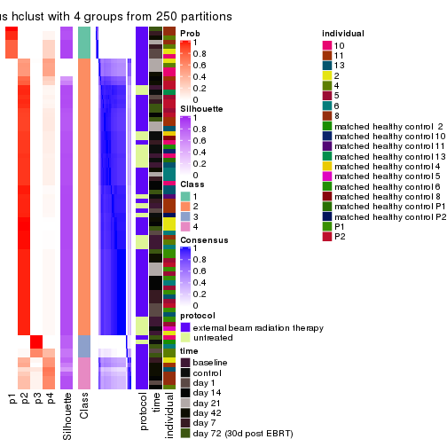
consensus_heatmap(res, k = 5)
consensus_heatmap(res, k = 6)

Heatmaps for the membership of samples in all partitions to see how consistent they are:
membership_heatmap(res, k = 2)
membership_heatmap(res, k = 3)
membership_heatmap(res, k = 4)
membership_heatmap(res, k = 5)
membership_heatmap(res, k = 6)
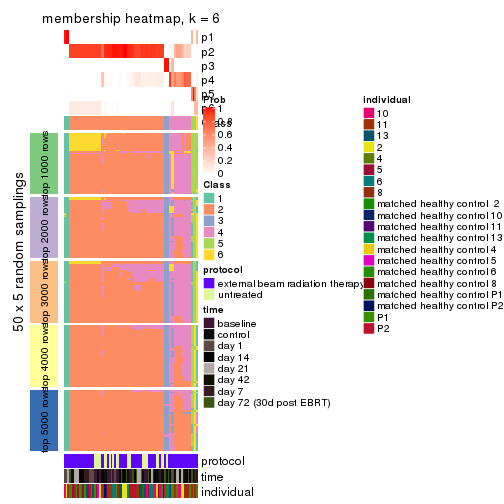
As soon as we have had the classes for columns, we can look for signatures which are significantly different between classes which can be candidate marks for certain classes. Following are the heatmaps for signatures.
Signature heatmaps where rows are scaled:
get_signatures(res, k = 2)
#> Error in mat[ceiling(1:nr/h_ratio), ceiling(1:nc/w_ratio), drop = FALSE]: subscript out of bounds

get_signatures(res, k = 3)
#> Error in mat[ceiling(1:nr/h_ratio), ceiling(1:nc/w_ratio), drop = FALSE]: subscript out of bounds

get_signatures(res, k = 4)
#> Error in mat[ceiling(1:nr/h_ratio), ceiling(1:nc/w_ratio), drop = FALSE]: subscript out of bounds

get_signatures(res, k = 5)
#> Error in mat[ceiling(1:nr/h_ratio), ceiling(1:nc/w_ratio), drop = FALSE]: subscript out of bounds

get_signatures(res, k = 6)
#> Error in mat[ceiling(1:nr/h_ratio), ceiling(1:nc/w_ratio), drop = FALSE]: subscript out of bounds

Signature heatmaps where rows are not scaled:
get_signatures(res, k = 2, scale_rows = FALSE)
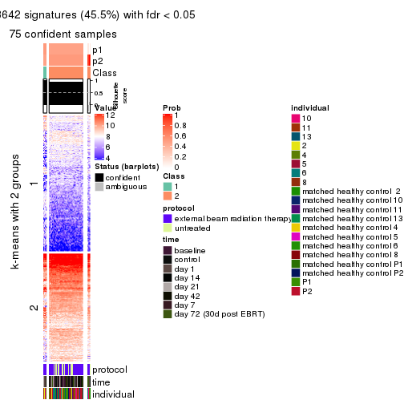
get_signatures(res, k = 3, scale_rows = FALSE)
#> Error in mat[ceiling(1:nr/h_ratio), ceiling(1:nc/w_ratio), drop = FALSE]: subscript out of bounds
get_signatures(res, k = 4, scale_rows = FALSE)
get_signatures(res, k = 5, scale_rows = FALSE)
get_signatures(res, k = 6, scale_rows = FALSE)
Compare the overlap of signatures from different k:
compare_signatures(res)
get_signature() returns a data frame invisibly. TO get the list of signatures, the function
call should be assigned to a variable explicitly. In following code, if plot argument is set
to FALSE, no heatmap is plotted while only the differential analysis is performed.
# code only for demonstration
tb = get_signature(res, k = ..., plot = FALSE)
An example of the output of tb is:
#> which_row fdr mean_1 mean_2 scaled_mean_1 scaled_mean_2 km
#> 1 38 0.042760348 8.373488 9.131774 -0.5533452 0.5164555 1
#> 2 40 0.018707592 7.106213 8.469186 -0.6173731 0.5762149 1
#> 3 55 0.019134737 10.221463 11.207825 -0.6159697 0.5749050 1
#> 4 59 0.006059896 5.921854 7.869574 -0.6899429 0.6439467 1
#> 5 60 0.018055526 8.928898 10.211722 -0.6204761 0.5791110 1
#> 6 98 0.009384629 15.714769 14.887706 0.6635654 -0.6193277 2
...
The columns in tb are:
which_row: row indices corresponding to the input matrix.fdr: FDR for the differential test. mean_x: The mean value in group x.scaled_mean_x: The mean value in group x after rows are scaled.km: Row groups if k-means clustering is applied to rows.UMAP plot which shows how samples are separated.
dimension_reduction(res, k = 2, method = "UMAP")
dimension_reduction(res, k = 3, method = "UMAP")
dimension_reduction(res, k = 4, method = "UMAP")

dimension_reduction(res, k = 5, method = "UMAP")
dimension_reduction(res, k = 6, method = "UMAP")
Following heatmap shows how subgroups are split when increasing k:
collect_classes(res)

Test correlation between subgroups and known annotations. If the known annotation is numeric, one-way ANOVA test is applied, and if the known annotation is discrete, chi-squared contingency table test is applied.
test_to_known_factors(res)
#> n protocol(p) time(p) individual(p) k
#> ATC:hclust 75 0.2452 0.5041 0.301 2
#> ATC:hclust 79 0.2496 0.1447 0.181 3
#> ATC:hclust 76 0.0877 0.0924 0.164 4
#> ATC:hclust 76 0.1290 0.1056 0.671 5
#> ATC:hclust 69 0.1891 0.1280 0.193 6
If matrix rows can be associated to genes, consider to use GO_Enrichment(res,
...) to perform function enrichment for the signature genes.
The object with results only for a single top-value method and a single partition method can be extracted as:
res = res_list["ATC", "kmeans"]
# you can also extract it by
# res = res_list["ATC:kmeans"]
A summary of res and all the functions that can be applied to it:
res
#> A 'ConsensusPartition' object with k = 2, 3, 4, 5, 6.
#> On a matrix with 51941 rows and 80 columns.
#> Top rows (1000, 2000, 3000, 4000, 5000) are extracted by 'ATC' method.
#> Subgroups are detected by 'kmeans' method.
#> Performed in total 1250 partitions by row resampling.
#> Best k for subgroups seems to be 4.
#>
#> Following methods can be applied to this 'ConsensusPartition' object:
#> [1] "cola_report" "collect_classes" "collect_plots"
#> [4] "collect_stats" "colnames" "compare_signatures"
#> [7] "consensus_heatmap" "dimension_reduction" "functional_enrichment"
#> [10] "get_anno_col" "get_anno" "get_classes"
#> [13] "get_consensus" "get_matrix" "get_membership"
#> [16] "get_param" "get_signatures" "get_stats"
#> [19] "is_best_k" "is_stable_k" "membership_heatmap"
#> [22] "ncol" "nrow" "plot_ecdf"
#> [25] "rownames" "select_partition_number" "show"
#> [28] "suggest_best_k" "test_to_known_factors"
collect_plots() function collects all the plots made from res for all k (number of partitions)
into one single page to provide an easy and fast comparison between different k.
collect_plots(res)
The plots are:
k and the heatmap of
predicted classes for each k.k.k.k.All the plots in panels can be made by individual functions and they are plotted later in this section.
select_partition_number() produces several plots showing different
statistics for choosing “optimized” k. There are following statistics:
k;k, the area increased is defined as \(A_k - A_{k-1}\).The detailed explanations of these statistics can be found in the cola vignette.
Generally speaking, lower PAC score, higher mean silhouette score or higher
concordance corresponds to better partition. Rand index and Jaccard index
measure how similar the current partition is compared to partition with k-1.
If they are too similar, we won't accept k is better than k-1.
select_partition_number(res)

The numeric values for all these statistics can be obtained by get_stats().
get_stats(res)
#> k 1-PAC mean_silhouette concordance area_increased Rand Jaccard
#> 2 2 1.000 1.000 1.000 0.2223 0.778 0.778
#> 3 3 0.595 0.856 0.892 1.1777 0.674 0.582
#> 4 4 1.000 0.934 0.968 0.3220 0.715 0.479
#> 5 5 0.692 0.837 0.885 0.1615 0.801 0.498
#> 6 6 0.757 0.858 0.871 0.0644 0.967 0.862
suggest_best_k() suggests the best \(k\) based on these statistics. The rules are as follows:
NA.suggest_best_k(res)
#> [1] 4
#> attr(,"optional")
#> [1] 2
There is also optional best \(k\) = 2 that is worth to check.
Following shows the table of the partitions (You need to click the show/hide
code output link to see it). The membership matrix (columns with name p*)
is inferred by
clue::cl_consensus()
function with the SE method. Basically the value in the membership matrix
represents the probability to belong to a certain group. The finall class
label for an item is determined with the group with highest probability it
belongs to.
In get_classes() function, the entropy is calculated from the membership
matrix and the silhouette score is calculated from the consensus matrix.
cbind(get_classes(res, k = 2), get_membership(res, k = 2))
#> class entropy silhouette p1 p2
#> GSM753604 1 0 1 1 0
#> GSM753620 2 0 1 0 1
#> GSM753628 2 0 1 0 1
#> GSM753636 2 0 1 0 1
#> GSM753644 2 0 1 0 1
#> GSM753572 2 0 1 0 1
#> GSM753580 2 0 1 0 1
#> GSM753588 2 0 1 0 1
#> GSM753596 2 0 1 0 1
#> GSM753612 2 0 1 0 1
#> GSM753603 2 0 1 0 1
#> GSM753619 2 0 1 0 1
#> GSM753627 2 0 1 0 1
#> GSM753635 2 0 1 0 1
#> GSM753643 2 0 1 0 1
#> GSM753571 2 0 1 0 1
#> GSM753579 2 0 1 0 1
#> GSM753587 2 0 1 0 1
#> GSM753595 2 0 1 0 1
#> GSM753611 2 0 1 0 1
#> GSM753605 1 0 1 1 0
#> GSM753621 2 0 1 0 1
#> GSM753629 2 0 1 0 1
#> GSM753637 2 0 1 0 1
#> GSM753645 2 0 1 0 1
#> GSM753573 1 0 1 1 0
#> GSM753581 2 0 1 0 1
#> GSM753589 2 0 1 0 1
#> GSM753597 2 0 1 0 1
#> GSM753613 2 0 1 0 1
#> GSM753606 2 0 1 0 1
#> GSM753622 1 0 1 1 0
#> GSM753630 2 0 1 0 1
#> GSM753638 2 0 1 0 1
#> GSM753646 1 0 1 1 0
#> GSM753574 2 0 1 0 1
#> GSM753582 2 0 1 0 1
#> GSM753590 2 0 1 0 1
#> GSM753598 2 0 1 0 1
#> GSM753614 2 0 1 0 1
#> GSM753607 2 0 1 0 1
#> GSM753623 2 0 1 0 1
#> GSM753631 2 0 1 0 1
#> GSM753639 2 0 1 0 1
#> GSM753647 2 0 1 0 1
#> GSM753575 2 0 1 0 1
#> GSM753583 2 0 1 0 1
#> GSM753591 2 0 1 0 1
#> GSM753599 2 0 1 0 1
#> GSM753615 2 0 1 0 1
#> GSM753608 2 0 1 0 1
#> GSM753624 2 0 1 0 1
#> GSM753632 2 0 1 0 1
#> GSM753640 2 0 1 0 1
#> GSM753648 1 0 1 1 0
#> GSM753576 2 0 1 0 1
#> GSM753584 2 0 1 0 1
#> GSM753592 2 0 1 0 1
#> GSM753600 2 0 1 0 1
#> GSM753616 2 0 1 0 1
#> GSM753609 2 0 1 0 1
#> GSM753625 1 0 1 1 0
#> GSM753633 2 0 1 0 1
#> GSM753641 2 0 1 0 1
#> GSM753649 2 0 1 0 1
#> GSM753577 2 0 1 0 1
#> GSM753585 2 0 1 0 1
#> GSM753593 2 0 1 0 1
#> GSM753601 2 0 1 0 1
#> GSM753617 2 0 1 0 1
#> GSM753610 2 0 1 0 1
#> GSM753626 2 0 1 0 1
#> GSM753634 2 0 1 0 1
#> GSM753642 1 0 1 1 0
#> GSM753650 1 0 1 1 0
#> GSM753578 1 0 1 1 0
#> GSM753586 2 0 1 0 1
#> GSM753594 2 0 1 0 1
#> GSM753602 2 0 1 0 1
#> GSM753618 2 0 1 0 1
cbind(get_classes(res, k = 3), get_membership(res, k = 3))
#> class entropy silhouette p1 p2 p3
#> GSM753604 1 0.5810 0.81200 0.664 0.000 0.336
#> GSM753620 2 0.1964 0.89041 0.000 0.944 0.056
#> GSM753628 2 0.0000 0.93457 0.000 1.000 0.000
#> GSM753636 3 0.5810 0.86288 0.000 0.336 0.664
#> GSM753644 3 0.5810 0.86288 0.000 0.336 0.664
#> GSM753572 2 0.4178 0.73545 0.000 0.828 0.172
#> GSM753580 2 0.0000 0.93457 0.000 1.000 0.000
#> GSM753588 2 0.0000 0.93457 0.000 1.000 0.000
#> GSM753596 2 0.0000 0.93457 0.000 1.000 0.000
#> GSM753612 2 0.0000 0.93457 0.000 1.000 0.000
#> GSM753603 2 0.0000 0.93457 0.000 1.000 0.000
#> GSM753619 2 0.0000 0.93457 0.000 1.000 0.000
#> GSM753627 2 0.0000 0.93457 0.000 1.000 0.000
#> GSM753635 2 0.0000 0.93457 0.000 1.000 0.000
#> GSM753643 2 0.0000 0.93457 0.000 1.000 0.000
#> GSM753571 2 0.1964 0.89041 0.000 0.944 0.056
#> GSM753579 2 0.0000 0.93457 0.000 1.000 0.000
#> GSM753587 2 0.0000 0.93457 0.000 1.000 0.000
#> GSM753595 2 0.0000 0.93457 0.000 1.000 0.000
#> GSM753611 2 0.1964 0.89041 0.000 0.944 0.056
#> GSM753605 1 0.0000 0.93046 1.000 0.000 0.000
#> GSM753621 3 0.0000 0.46553 0.000 0.000 1.000
#> GSM753629 2 0.0000 0.93457 0.000 1.000 0.000
#> GSM753637 2 0.1964 0.89041 0.000 0.944 0.056
#> GSM753645 3 0.5397 0.89629 0.000 0.280 0.720
#> GSM753573 1 0.0000 0.93046 1.000 0.000 0.000
#> GSM753581 2 0.0000 0.93457 0.000 1.000 0.000
#> GSM753589 2 0.0000 0.93457 0.000 1.000 0.000
#> GSM753597 2 0.0000 0.93457 0.000 1.000 0.000
#> GSM753613 2 0.0000 0.93457 0.000 1.000 0.000
#> GSM753606 3 0.5397 0.89629 0.000 0.280 0.720
#> GSM753622 1 0.0000 0.93046 1.000 0.000 0.000
#> GSM753630 2 0.0000 0.93457 0.000 1.000 0.000
#> GSM753638 2 0.3686 0.78777 0.000 0.860 0.140
#> GSM753646 1 0.0000 0.93046 1.000 0.000 0.000
#> GSM753574 3 0.5810 0.86288 0.000 0.336 0.664
#> GSM753582 2 0.0000 0.93457 0.000 1.000 0.000
#> GSM753590 2 0.0000 0.93457 0.000 1.000 0.000
#> GSM753598 2 0.0000 0.93457 0.000 1.000 0.000
#> GSM753614 2 0.0000 0.93457 0.000 1.000 0.000
#> GSM753607 2 0.3816 0.77567 0.000 0.852 0.148
#> GSM753623 3 0.5397 0.89629 0.000 0.280 0.720
#> GSM753631 2 0.0000 0.93457 0.000 1.000 0.000
#> GSM753639 2 0.0000 0.93457 0.000 1.000 0.000
#> GSM753647 3 0.5397 0.89629 0.000 0.280 0.720
#> GSM753575 2 0.4121 0.74284 0.000 0.832 0.168
#> GSM753583 3 0.5529 0.88987 0.000 0.296 0.704
#> GSM753591 2 0.0237 0.93194 0.000 0.996 0.004
#> GSM753599 2 0.0000 0.93457 0.000 1.000 0.000
#> GSM753615 2 0.6225 -0.21010 0.000 0.568 0.432
#> GSM753608 3 0.5431 0.89558 0.000 0.284 0.716
#> GSM753624 3 0.5397 0.89629 0.000 0.280 0.720
#> GSM753632 2 0.0000 0.93457 0.000 1.000 0.000
#> GSM753640 2 0.3686 0.78777 0.000 0.860 0.140
#> GSM753648 1 0.0000 0.93046 1.000 0.000 0.000
#> GSM753576 3 0.5397 0.89629 0.000 0.280 0.720
#> GSM753584 2 0.4121 0.74284 0.000 0.832 0.168
#> GSM753592 3 0.5810 0.86288 0.000 0.336 0.664
#> GSM753600 2 0.0000 0.93457 0.000 1.000 0.000
#> GSM753616 2 0.0000 0.93457 0.000 1.000 0.000
#> GSM753609 2 0.0000 0.93457 0.000 1.000 0.000
#> GSM753625 1 0.0000 0.93046 1.000 0.000 0.000
#> GSM753633 2 0.0000 0.93457 0.000 1.000 0.000
#> GSM753641 2 0.6095 -0.00905 0.000 0.608 0.392
#> GSM753649 3 0.0000 0.46553 0.000 0.000 1.000
#> GSM753577 3 0.5431 0.89558 0.000 0.284 0.716
#> GSM753585 3 0.5397 0.89629 0.000 0.280 0.720
#> GSM753593 3 0.5178 0.87604 0.000 0.256 0.744
#> GSM753601 2 0.0000 0.93457 0.000 1.000 0.000
#> GSM753617 3 0.5810 0.86288 0.000 0.336 0.664
#> GSM753610 2 0.4121 0.74284 0.000 0.832 0.168
#> GSM753626 3 0.0000 0.46553 0.000 0.000 1.000
#> GSM753634 3 0.5835 0.85656 0.000 0.340 0.660
#> GSM753642 1 0.5529 0.83256 0.704 0.000 0.296
#> GSM753650 1 0.0000 0.93046 1.000 0.000 0.000
#> GSM753578 1 0.5810 0.81200 0.664 0.000 0.336
#> GSM753586 3 0.5810 0.86288 0.000 0.336 0.664
#> GSM753594 2 0.0237 0.93194 0.000 0.996 0.004
#> GSM753602 2 0.0000 0.93457 0.000 1.000 0.000
#> GSM753618 2 0.2066 0.88669 0.000 0.940 0.060
cbind(get_classes(res, k = 4), get_membership(res, k = 4))
#> class entropy silhouette p1 p2 p3 p4
#> GSM753604 3 0.0592 0.959 0.016 0.000 0.984 0.000
#> GSM753620 4 0.5398 0.345 0.000 0.404 0.016 0.580
#> GSM753628 2 0.0000 0.977 0.000 1.000 0.000 0.000
#> GSM753636 4 0.1059 0.943 0.000 0.012 0.016 0.972
#> GSM753644 4 0.1059 0.943 0.000 0.012 0.016 0.972
#> GSM753572 4 0.1059 0.943 0.000 0.012 0.016 0.972
#> GSM753580 2 0.0592 0.972 0.000 0.984 0.016 0.000
#> GSM753588 2 0.0592 0.972 0.000 0.984 0.016 0.000
#> GSM753596 2 0.5364 0.267 0.000 0.592 0.016 0.392
#> GSM753612 2 0.0000 0.977 0.000 1.000 0.000 0.000
#> GSM753603 2 0.0000 0.977 0.000 1.000 0.000 0.000
#> GSM753619 2 0.0592 0.972 0.000 0.984 0.016 0.000
#> GSM753627 2 0.0000 0.977 0.000 1.000 0.000 0.000
#> GSM753635 2 0.0592 0.972 0.000 0.984 0.016 0.000
#> GSM753643 2 0.0592 0.972 0.000 0.984 0.016 0.000
#> GSM753571 4 0.3335 0.823 0.000 0.128 0.016 0.856
#> GSM753579 2 0.0592 0.972 0.000 0.984 0.016 0.000
#> GSM753587 2 0.0592 0.972 0.000 0.984 0.016 0.000
#> GSM753595 2 0.0000 0.977 0.000 1.000 0.000 0.000
#> GSM753611 4 0.2450 0.891 0.000 0.072 0.016 0.912
#> GSM753605 1 0.0188 0.996 0.996 0.000 0.000 0.004
#> GSM753621 3 0.0592 0.958 0.000 0.000 0.984 0.016
#> GSM753629 2 0.0592 0.972 0.000 0.984 0.016 0.000
#> GSM753637 4 0.5459 0.266 0.000 0.432 0.016 0.552
#> GSM753645 4 0.0469 0.949 0.000 0.012 0.000 0.988
#> GSM753573 1 0.0188 0.996 0.996 0.000 0.000 0.004
#> GSM753581 2 0.0592 0.972 0.000 0.984 0.016 0.000
#> GSM753589 2 0.0000 0.977 0.000 1.000 0.000 0.000
#> GSM753597 2 0.0000 0.977 0.000 1.000 0.000 0.000
#> GSM753613 2 0.0000 0.977 0.000 1.000 0.000 0.000
#> GSM753606 4 0.0469 0.949 0.000 0.012 0.000 0.988
#> GSM753622 1 0.0000 0.996 1.000 0.000 0.000 0.000
#> GSM753630 2 0.0000 0.977 0.000 1.000 0.000 0.000
#> GSM753638 4 0.2142 0.908 0.000 0.056 0.016 0.928
#> GSM753646 1 0.0336 0.994 0.992 0.000 0.000 0.008
#> GSM753574 4 0.1059 0.943 0.000 0.012 0.016 0.972
#> GSM753582 2 0.0592 0.972 0.000 0.984 0.016 0.000
#> GSM753590 2 0.0000 0.977 0.000 1.000 0.000 0.000
#> GSM753598 2 0.0000 0.977 0.000 1.000 0.000 0.000
#> GSM753614 2 0.1059 0.961 0.000 0.972 0.016 0.012
#> GSM753607 4 0.0469 0.949 0.000 0.012 0.000 0.988
#> GSM753623 4 0.0469 0.949 0.000 0.012 0.000 0.988
#> GSM753631 2 0.0000 0.977 0.000 1.000 0.000 0.000
#> GSM753639 2 0.0000 0.977 0.000 1.000 0.000 0.000
#> GSM753647 4 0.0469 0.949 0.000 0.012 0.000 0.988
#> GSM753575 4 0.1059 0.943 0.000 0.012 0.016 0.972
#> GSM753583 4 0.0469 0.949 0.000 0.012 0.000 0.988
#> GSM753591 4 0.0817 0.943 0.000 0.024 0.000 0.976
#> GSM753599 2 0.0000 0.977 0.000 1.000 0.000 0.000
#> GSM753615 4 0.0469 0.949 0.000 0.012 0.000 0.988
#> GSM753608 4 0.0469 0.949 0.000 0.012 0.000 0.988
#> GSM753624 4 0.0469 0.949 0.000 0.012 0.000 0.988
#> GSM753632 2 0.0000 0.977 0.000 1.000 0.000 0.000
#> GSM753640 4 0.2060 0.912 0.000 0.052 0.016 0.932
#> GSM753648 1 0.0188 0.996 0.996 0.000 0.000 0.004
#> GSM753576 4 0.0469 0.949 0.000 0.012 0.000 0.988
#> GSM753584 4 0.0469 0.949 0.000 0.012 0.000 0.988
#> GSM753592 4 0.0469 0.949 0.000 0.012 0.000 0.988
#> GSM753600 2 0.0000 0.977 0.000 1.000 0.000 0.000
#> GSM753616 2 0.0000 0.977 0.000 1.000 0.000 0.000
#> GSM753609 2 0.0000 0.977 0.000 1.000 0.000 0.000
#> GSM753625 1 0.0336 0.994 0.992 0.000 0.000 0.008
#> GSM753633 2 0.0592 0.972 0.000 0.984 0.016 0.000
#> GSM753641 4 0.1059 0.943 0.000 0.012 0.016 0.972
#> GSM753649 3 0.2281 0.855 0.000 0.000 0.904 0.096
#> GSM753577 4 0.0469 0.949 0.000 0.012 0.000 0.988
#> GSM753585 4 0.0469 0.949 0.000 0.012 0.000 0.988
#> GSM753593 4 0.0469 0.949 0.000 0.012 0.000 0.988
#> GSM753601 2 0.0000 0.977 0.000 1.000 0.000 0.000
#> GSM753617 4 0.0469 0.949 0.000 0.012 0.000 0.988
#> GSM753610 4 0.0469 0.949 0.000 0.012 0.000 0.988
#> GSM753626 3 0.0592 0.958 0.000 0.000 0.984 0.016
#> GSM753634 4 0.0469 0.949 0.000 0.012 0.000 0.988
#> GSM753642 3 0.0592 0.959 0.016 0.000 0.984 0.000
#> GSM753650 1 0.0000 0.996 1.000 0.000 0.000 0.000
#> GSM753578 3 0.0592 0.959 0.016 0.000 0.984 0.000
#> GSM753586 4 0.0469 0.949 0.000 0.012 0.000 0.988
#> GSM753594 4 0.0592 0.947 0.000 0.016 0.000 0.984
#> GSM753602 2 0.0000 0.977 0.000 1.000 0.000 0.000
#> GSM753618 4 0.2060 0.912 0.000 0.052 0.016 0.932
cbind(get_classes(res, k = 5), get_membership(res, k = 5))
#> class entropy silhouette p1 p2 p3 p4 p5
#> GSM753604 3 0.0162 0.919 0.000 0.000 0.996 0.004 0.000
#> GSM753620 2 0.1836 0.836 0.000 0.932 0.000 0.032 0.036
#> GSM753628 5 0.0609 0.969 0.000 0.020 0.000 0.000 0.980
#> GSM753636 2 0.2179 0.778 0.000 0.888 0.000 0.112 0.000
#> GSM753644 2 0.1732 0.809 0.000 0.920 0.000 0.080 0.000
#> GSM753572 2 0.1792 0.806 0.000 0.916 0.000 0.084 0.000
#> GSM753580 2 0.4045 0.578 0.000 0.644 0.000 0.000 0.356
#> GSM753588 2 0.2074 0.841 0.000 0.896 0.000 0.000 0.104
#> GSM753596 2 0.1357 0.840 0.000 0.948 0.000 0.004 0.048
#> GSM753612 5 0.3210 0.694 0.000 0.212 0.000 0.000 0.788
#> GSM753603 5 0.0609 0.969 0.000 0.020 0.000 0.000 0.980
#> GSM753619 2 0.2773 0.807 0.000 0.836 0.000 0.000 0.164
#> GSM753627 5 0.0609 0.969 0.000 0.020 0.000 0.000 0.980
#> GSM753635 2 0.3242 0.758 0.000 0.784 0.000 0.000 0.216
#> GSM753643 2 0.4101 0.511 0.000 0.628 0.000 0.000 0.372
#> GSM753571 2 0.1697 0.823 0.000 0.932 0.000 0.060 0.008
#> GSM753579 2 0.2230 0.836 0.000 0.884 0.000 0.000 0.116
#> GSM753587 2 0.2020 0.839 0.000 0.900 0.000 0.000 0.100
#> GSM753595 5 0.0609 0.969 0.000 0.020 0.000 0.000 0.980
#> GSM753611 2 0.1544 0.817 0.000 0.932 0.000 0.068 0.000
#> GSM753605 1 0.0404 0.990 0.988 0.012 0.000 0.000 0.000
#> GSM753621 3 0.0693 0.918 0.000 0.008 0.980 0.012 0.000
#> GSM753629 2 0.2690 0.823 0.000 0.844 0.000 0.000 0.156
#> GSM753637 2 0.1818 0.838 0.000 0.932 0.000 0.024 0.044
#> GSM753645 4 0.3636 0.542 0.000 0.272 0.000 0.728 0.000
#> GSM753573 1 0.0404 0.990 0.988 0.012 0.000 0.000 0.000
#> GSM753581 2 0.2230 0.836 0.000 0.884 0.000 0.000 0.116
#> GSM753589 5 0.0703 0.964 0.000 0.024 0.000 0.000 0.976
#> GSM753597 5 0.0609 0.969 0.000 0.020 0.000 0.000 0.980
#> GSM753613 5 0.0609 0.969 0.000 0.020 0.000 0.000 0.980
#> GSM753606 4 0.3242 0.607 0.000 0.216 0.000 0.784 0.000
#> GSM753622 1 0.0162 0.991 0.996 0.000 0.004 0.000 0.000
#> GSM753630 5 0.0609 0.969 0.000 0.020 0.000 0.000 0.980
#> GSM753638 2 0.1792 0.806 0.000 0.916 0.000 0.084 0.000
#> GSM753646 1 0.0566 0.988 0.984 0.012 0.000 0.000 0.004
#> GSM753574 2 0.2280 0.768 0.000 0.880 0.000 0.120 0.000
#> GSM753582 2 0.3242 0.782 0.000 0.784 0.000 0.000 0.216
#> GSM753590 5 0.0703 0.964 0.000 0.024 0.000 0.000 0.976
#> GSM753598 5 0.0703 0.964 0.000 0.024 0.000 0.000 0.976
#> GSM753614 2 0.4428 0.732 0.000 0.760 0.000 0.096 0.144
#> GSM753607 4 0.4090 0.791 0.000 0.268 0.000 0.716 0.016
#> GSM753623 4 0.3242 0.607 0.000 0.216 0.000 0.784 0.000
#> GSM753631 5 0.0609 0.969 0.000 0.020 0.000 0.000 0.980
#> GSM753639 5 0.0162 0.968 0.000 0.004 0.000 0.000 0.996
#> GSM753647 4 0.1792 0.698 0.000 0.084 0.000 0.916 0.000
#> GSM753575 4 0.3636 0.781 0.000 0.272 0.000 0.728 0.000
#> GSM753583 4 0.1270 0.766 0.000 0.052 0.000 0.948 0.000
#> GSM753591 4 0.4227 0.771 0.000 0.292 0.000 0.692 0.016
#> GSM753599 5 0.0609 0.966 0.000 0.020 0.000 0.000 0.980
#> GSM753615 4 0.3480 0.799 0.000 0.248 0.000 0.752 0.000
#> GSM753608 4 0.0609 0.714 0.000 0.020 0.000 0.980 0.000
#> GSM753624 4 0.0794 0.755 0.000 0.028 0.000 0.972 0.000
#> GSM753632 5 0.0609 0.969 0.000 0.020 0.000 0.000 0.980
#> GSM753640 2 0.1792 0.806 0.000 0.916 0.000 0.084 0.000
#> GSM753648 1 0.0404 0.990 0.988 0.012 0.000 0.000 0.000
#> GSM753576 4 0.0794 0.755 0.000 0.028 0.000 0.972 0.000
#> GSM753584 4 0.4090 0.791 0.000 0.268 0.000 0.716 0.016
#> GSM753592 4 0.3452 0.801 0.000 0.244 0.000 0.756 0.000
#> GSM753600 5 0.0162 0.968 0.000 0.004 0.000 0.000 0.996
#> GSM753616 5 0.0510 0.966 0.000 0.016 0.000 0.000 0.984
#> GSM753609 5 0.0703 0.964 0.000 0.024 0.000 0.000 0.976
#> GSM753625 1 0.0566 0.988 0.984 0.012 0.000 0.000 0.004
#> GSM753633 2 0.3857 0.671 0.000 0.688 0.000 0.000 0.312
#> GSM753641 4 0.3932 0.738 0.000 0.328 0.000 0.672 0.000
#> GSM753649 3 0.4522 0.611 0.000 0.024 0.660 0.316 0.000
#> GSM753577 4 0.0794 0.755 0.000 0.028 0.000 0.972 0.000
#> GSM753585 4 0.0794 0.755 0.000 0.028 0.000 0.972 0.000
#> GSM753593 4 0.0609 0.742 0.000 0.020 0.000 0.980 0.000
#> GSM753601 5 0.0609 0.966 0.000 0.020 0.000 0.000 0.980
#> GSM753617 4 0.3424 0.802 0.000 0.240 0.000 0.760 0.000
#> GSM753610 4 0.4090 0.791 0.000 0.268 0.000 0.716 0.016
#> GSM753626 3 0.0693 0.918 0.000 0.008 0.980 0.012 0.000
#> GSM753634 4 0.3480 0.799 0.000 0.248 0.000 0.752 0.000
#> GSM753642 3 0.0162 0.919 0.000 0.000 0.996 0.004 0.000
#> GSM753650 1 0.0162 0.991 0.996 0.004 0.000 0.000 0.000
#> GSM753578 3 0.0162 0.919 0.000 0.000 0.996 0.004 0.000
#> GSM753586 4 0.3424 0.802 0.000 0.240 0.000 0.760 0.000
#> GSM753594 4 0.4206 0.775 0.000 0.288 0.000 0.696 0.016
#> GSM753602 5 0.0609 0.966 0.000 0.020 0.000 0.000 0.980
#> GSM753618 4 0.4525 0.676 0.000 0.360 0.000 0.624 0.016
cbind(get_classes(res, k = 6), get_membership(res, k = 6))
#> class entropy silhouette p1 p2 p3 p4 p5 p6
#> GSM753604 3 0.0000 0.961 0.000 0.000 1.000 0.000 0.000 0.000
#> GSM753620 5 0.2271 0.876 0.000 0.024 0.000 0.032 0.908 0.036
#> GSM753628 2 0.2527 0.871 0.000 0.868 0.000 0.000 0.024 0.108
#> GSM753636 5 0.3327 0.850 0.000 0.000 0.000 0.088 0.820 0.092
#> GSM753644 5 0.2563 0.866 0.000 0.000 0.000 0.072 0.876 0.052
#> GSM753572 5 0.3118 0.858 0.000 0.000 0.000 0.072 0.836 0.092
#> GSM753580 5 0.3183 0.813 0.000 0.112 0.000 0.000 0.828 0.060
#> GSM753588 5 0.3183 0.877 0.000 0.048 0.000 0.048 0.856 0.048
#> GSM753596 5 0.1633 0.879 0.000 0.024 0.000 0.044 0.932 0.000
#> GSM753612 2 0.5126 0.389 0.000 0.568 0.000 0.004 0.344 0.084
#> GSM753603 2 0.1075 0.898 0.000 0.952 0.000 0.000 0.000 0.048
#> GSM753619 5 0.3468 0.814 0.000 0.068 0.000 0.000 0.804 0.128
#> GSM753627 2 0.1141 0.897 0.000 0.948 0.000 0.000 0.000 0.052
#> GSM753635 5 0.3168 0.842 0.000 0.056 0.000 0.000 0.828 0.116
#> GSM753643 5 0.3997 0.760 0.000 0.132 0.000 0.000 0.760 0.108
#> GSM753571 5 0.3315 0.859 0.000 0.000 0.000 0.076 0.820 0.104
#> GSM753579 5 0.2322 0.873 0.000 0.064 0.000 0.036 0.896 0.004
#> GSM753587 5 0.2213 0.876 0.000 0.048 0.000 0.044 0.904 0.004
#> GSM753595 2 0.0806 0.903 0.000 0.972 0.000 0.000 0.008 0.020
#> GSM753611 5 0.2066 0.872 0.000 0.000 0.000 0.072 0.904 0.024
#> GSM753605 1 0.0291 0.988 0.992 0.000 0.000 0.000 0.004 0.004
#> GSM753621 3 0.1951 0.939 0.000 0.000 0.908 0.000 0.016 0.076
#> GSM753629 5 0.1267 0.864 0.000 0.060 0.000 0.000 0.940 0.000
#> GSM753637 5 0.2541 0.874 0.000 0.024 0.000 0.032 0.892 0.052
#> GSM753645 6 0.4273 0.855 0.000 0.000 0.000 0.204 0.080 0.716
#> GSM753573 1 0.0291 0.988 0.992 0.000 0.000 0.000 0.004 0.004
#> GSM753581 5 0.2322 0.873 0.000 0.064 0.000 0.036 0.896 0.004
#> GSM753589 2 0.1801 0.894 0.000 0.924 0.000 0.004 0.016 0.056
#> GSM753597 2 0.0806 0.903 0.000 0.972 0.000 0.000 0.008 0.020
#> GSM753613 2 0.1285 0.897 0.000 0.944 0.000 0.000 0.004 0.052
#> GSM753606 6 0.4244 0.854 0.000 0.000 0.000 0.200 0.080 0.720
#> GSM753622 1 0.0000 0.988 1.000 0.000 0.000 0.000 0.000 0.000
#> GSM753630 2 0.3014 0.850 0.000 0.832 0.000 0.000 0.036 0.132
#> GSM753638 5 0.3612 0.847 0.000 0.000 0.000 0.100 0.796 0.104
#> GSM753646 1 0.0909 0.979 0.968 0.000 0.000 0.000 0.012 0.020
#> GSM753574 5 0.3735 0.822 0.000 0.000 0.000 0.124 0.784 0.092
#> GSM753582 5 0.2432 0.843 0.000 0.100 0.000 0.000 0.876 0.024
#> GSM753590 2 0.1801 0.894 0.000 0.924 0.000 0.004 0.016 0.056
#> GSM753598 2 0.1801 0.894 0.000 0.924 0.000 0.004 0.016 0.056
#> GSM753614 5 0.4652 0.775 0.000 0.032 0.000 0.164 0.728 0.076
#> GSM753607 4 0.2070 0.856 0.000 0.000 0.000 0.908 0.044 0.048
#> GSM753623 6 0.4223 0.855 0.000 0.000 0.000 0.204 0.076 0.720
#> GSM753631 2 0.2843 0.855 0.000 0.848 0.000 0.000 0.036 0.116
#> GSM753639 2 0.2361 0.876 0.000 0.880 0.000 0.004 0.012 0.104
#> GSM753647 6 0.3645 0.833 0.000 0.000 0.000 0.236 0.024 0.740
#> GSM753575 4 0.2136 0.852 0.000 0.000 0.000 0.904 0.048 0.048
#> GSM753583 4 0.1908 0.812 0.000 0.000 0.000 0.900 0.004 0.096
#> GSM753591 4 0.3376 0.800 0.000 0.028 0.000 0.840 0.072 0.060
#> GSM753599 2 0.1477 0.898 0.000 0.940 0.000 0.004 0.008 0.048
#> GSM753615 4 0.1297 0.870 0.000 0.000 0.000 0.948 0.040 0.012
#> GSM753608 6 0.3795 0.672 0.000 0.000 0.000 0.364 0.004 0.632
#> GSM753624 4 0.2191 0.805 0.000 0.000 0.000 0.876 0.004 0.120
#> GSM753632 2 0.2843 0.855 0.000 0.848 0.000 0.000 0.036 0.116
#> GSM753640 5 0.3953 0.824 0.000 0.000 0.000 0.132 0.764 0.104
#> GSM753648 1 0.0291 0.988 0.992 0.000 0.000 0.000 0.004 0.004
#> GSM753576 4 0.2191 0.805 0.000 0.000 0.000 0.876 0.004 0.120
#> GSM753584 4 0.1498 0.867 0.000 0.000 0.000 0.940 0.028 0.032
#> GSM753592 4 0.1480 0.864 0.000 0.000 0.000 0.940 0.020 0.040
#> GSM753600 2 0.0790 0.900 0.000 0.968 0.000 0.000 0.000 0.032
#> GSM753616 2 0.1010 0.902 0.000 0.960 0.000 0.004 0.000 0.036
#> GSM753609 2 0.1787 0.896 0.000 0.920 0.000 0.008 0.004 0.068
#> GSM753625 1 0.0909 0.979 0.968 0.000 0.000 0.000 0.012 0.020
#> GSM753633 5 0.4043 0.752 0.000 0.128 0.000 0.000 0.756 0.116
#> GSM753641 4 0.2776 0.812 0.000 0.000 0.000 0.860 0.052 0.088
#> GSM753649 6 0.4443 0.475 0.000 0.000 0.260 0.056 0.004 0.680
#> GSM753577 4 0.1765 0.814 0.000 0.000 0.000 0.904 0.000 0.096
#> GSM753585 4 0.1958 0.808 0.000 0.000 0.000 0.896 0.004 0.100
#> GSM753593 4 0.2445 0.787 0.000 0.000 0.000 0.872 0.020 0.108
#> GSM753601 2 0.1477 0.898 0.000 0.940 0.000 0.004 0.008 0.048
#> GSM753617 4 0.0603 0.870 0.000 0.000 0.000 0.980 0.016 0.004
#> GSM753610 4 0.2070 0.856 0.000 0.000 0.000 0.908 0.044 0.048
#> GSM753626 3 0.1951 0.939 0.000 0.000 0.908 0.000 0.016 0.076
#> GSM753634 4 0.1285 0.868 0.000 0.000 0.000 0.944 0.052 0.004
#> GSM753642 3 0.0000 0.961 0.000 0.000 1.000 0.000 0.000 0.000
#> GSM753650 1 0.0291 0.987 0.992 0.000 0.000 0.000 0.004 0.004
#> GSM753578 3 0.0000 0.961 0.000 0.000 1.000 0.000 0.000 0.000
#> GSM753586 4 0.0603 0.870 0.000 0.000 0.000 0.980 0.016 0.004
#> GSM753594 4 0.3376 0.800 0.000 0.028 0.000 0.840 0.072 0.060
#> GSM753602 2 0.1477 0.898 0.000 0.940 0.000 0.004 0.008 0.048
#> GSM753618 4 0.3464 0.762 0.000 0.000 0.000 0.808 0.108 0.084
Heatmaps for the consensus matrix. It visualizes the probability of two samples to be in a same group.
consensus_heatmap(res, k = 2)

consensus_heatmap(res, k = 3)
consensus_heatmap(res, k = 4)
consensus_heatmap(res, k = 5)
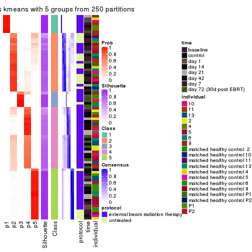
consensus_heatmap(res, k = 6)
Heatmaps for the membership of samples in all partitions to see how consistent they are:
membership_heatmap(res, k = 2)

membership_heatmap(res, k = 3)
membership_heatmap(res, k = 4)
membership_heatmap(res, k = 5)
membership_heatmap(res, k = 6)
As soon as we have had the classes for columns, we can look for signatures which are significantly different between classes which can be candidate marks for certain classes. Following are the heatmaps for signatures.
Signature heatmaps where rows are scaled:
get_signatures(res, k = 2)

get_signatures(res, k = 3)
#> Error in mat[ceiling(1:nr/h_ratio), ceiling(1:nc/w_ratio), drop = FALSE]: subscript out of bounds

get_signatures(res, k = 4)
#> Error in mat[ceiling(1:nr/h_ratio), ceiling(1:nc/w_ratio), drop = FALSE]: subscript out of bounds

get_signatures(res, k = 5)
get_signatures(res, k = 6)
#> Error: The width or height of the raster image is zero, maybe you forget to turn off the
#> previous graphic device or it was corrupted. Run `dev.off()` to close it.

Signature heatmaps where rows are not scaled:
get_signatures(res, k = 2, scale_rows = FALSE)

get_signatures(res, k = 3, scale_rows = FALSE)
get_signatures(res, k = 4, scale_rows = FALSE)
get_signatures(res, k = 5, scale_rows = FALSE)
get_signatures(res, k = 6, scale_rows = FALSE)
Compare the overlap of signatures from different k:
compare_signatures(res)
get_signature() returns a data frame invisibly. TO get the list of signatures, the function
call should be assigned to a variable explicitly. In following code, if plot argument is set
to FALSE, no heatmap is plotted while only the differential analysis is performed.
# code only for demonstration
tb = get_signature(res, k = ..., plot = FALSE)
An example of the output of tb is:
#> which_row fdr mean_1 mean_2 scaled_mean_1 scaled_mean_2 km
#> 1 38 0.042760348 8.373488 9.131774 -0.5533452 0.5164555 1
#> 2 40 0.018707592 7.106213 8.469186 -0.6173731 0.5762149 1
#> 3 55 0.019134737 10.221463 11.207825 -0.6159697 0.5749050 1
#> 4 59 0.006059896 5.921854 7.869574 -0.6899429 0.6439467 1
#> 5 60 0.018055526 8.928898 10.211722 -0.6204761 0.5791110 1
#> 6 98 0.009384629 15.714769 14.887706 0.6635654 -0.6193277 2
...
The columns in tb are:
which_row: row indices corresponding to the input matrix.fdr: FDR for the differential test. mean_x: The mean value in group x.scaled_mean_x: The mean value in group x after rows are scaled.km: Row groups if k-means clustering is applied to rows.UMAP plot which shows how samples are separated.
dimension_reduction(res, k = 2, method = "UMAP")

dimension_reduction(res, k = 3, method = "UMAP")
dimension_reduction(res, k = 4, method = "UMAP")
dimension_reduction(res, k = 5, method = "UMAP")
dimension_reduction(res, k = 6, method = "UMAP")
Following heatmap shows how subgroups are split when increasing k:
collect_classes(res)

Test correlation between subgroups and known annotations. If the known annotation is numeric, one-way ANOVA test is applied, and if the known annotation is discrete, chi-squared contingency table test is applied.
test_to_known_factors(res)
#> n protocol(p) time(p) individual(p) k
#> ATC:kmeans 80 4.35e-01 0.44390 0.25865 2
#> ATC:kmeans 75 5.45e-02 0.25648 0.17730 3
#> ATC:kmeans 77 7.44e-02 0.09842 0.04850 4
#> ATC:kmeans 80 2.70e-05 0.00142 0.01777 5
#> ATC:kmeans 78 6.28e-05 0.00101 0.00831 6
If matrix rows can be associated to genes, consider to use GO_Enrichment(res,
...) to perform function enrichment for the signature genes.
The object with results only for a single top-value method and a single partition method can be extracted as:
res = res_list["ATC", "skmeans"]
# you can also extract it by
# res = res_list["ATC:skmeans"]
A summary of res and all the functions that can be applied to it:
res
#> A 'ConsensusPartition' object with k = 2, 3, 4, 5, 6.
#> On a matrix with 51941 rows and 80 columns.
#> Top rows (1000, 2000, 3000, 4000, 5000) are extracted by 'ATC' method.
#> Subgroups are detected by 'skmeans' method.
#> Performed in total 1250 partitions by row resampling.
#> Best k for subgroups seems to be 4.
#>
#> Following methods can be applied to this 'ConsensusPartition' object:
#> [1] "cola_report" "collect_classes" "collect_plots"
#> [4] "collect_stats" "colnames" "compare_signatures"
#> [7] "consensus_heatmap" "dimension_reduction" "functional_enrichment"
#> [10] "get_anno_col" "get_anno" "get_classes"
#> [13] "get_consensus" "get_matrix" "get_membership"
#> [16] "get_param" "get_signatures" "get_stats"
#> [19] "is_best_k" "is_stable_k" "membership_heatmap"
#> [22] "ncol" "nrow" "plot_ecdf"
#> [25] "rownames" "select_partition_number" "show"
#> [28] "suggest_best_k" "test_to_known_factors"
collect_plots() function collects all the plots made from res for all k (number of partitions)
into one single page to provide an easy and fast comparison between different k.
collect_plots(res)
The plots are:
k and the heatmap of
predicted classes for each k.k.k.k.All the plots in panels can be made by individual functions and they are plotted later in this section.
select_partition_number() produces several plots showing different
statistics for choosing “optimized” k. There are following statistics:
k;k, the area increased is defined as \(A_k - A_{k-1}\).The detailed explanations of these statistics can be found in the cola vignette.
Generally speaking, lower PAC score, higher mean silhouette score or higher
concordance corresponds to better partition. Rand index and Jaccard index
measure how similar the current partition is compared to partition with k-1.
If they are too similar, we won't accept k is better than k-1.
select_partition_number(res)
The numeric values for all these statistics can be obtained by get_stats().
get_stats(res)
#> k 1-PAC mean_silhouette concordance area_increased Rand Jaccard
#> 2 2 1.000 0.998 0.999 0.4161 0.585 0.585
#> 3 3 0.942 0.901 0.966 0.4429 0.790 0.650
#> 4 4 0.901 0.924 0.953 0.1516 0.853 0.654
#> 5 5 0.871 0.891 0.927 0.0588 0.975 0.917
#> 6 6 0.736 0.674 0.818 0.0735 0.911 0.690
suggest_best_k() suggests the best \(k\) based on these statistics. The rules are as follows:
NA.suggest_best_k(res)
#> [1] 4
#> attr(,"optional")
#> [1] 2 3
There is also optional best \(k\) = 2 3 that is worth to check.
Following shows the table of the partitions (You need to click the show/hide
code output link to see it). The membership matrix (columns with name p*)
is inferred by
clue::cl_consensus()
function with the SE method. Basically the value in the membership matrix
represents the probability to belong to a certain group. The finall class
label for an item is determined with the group with highest probability it
belongs to.
In get_classes() function, the entropy is calculated from the membership
matrix and the silhouette score is calculated from the consensus matrix.
cbind(get_classes(res, k = 2), get_membership(res, k = 2))
#> class entropy silhouette p1 p2
#> GSM753604 1 0.000 1.000 1.00 0.00
#> GSM753620 2 0.000 0.999 0.00 1.00
#> GSM753628 2 0.000 0.999 0.00 1.00
#> GSM753636 2 0.000 0.999 0.00 1.00
#> GSM753644 2 0.000 0.999 0.00 1.00
#> GSM753572 2 0.000 0.999 0.00 1.00
#> GSM753580 2 0.000 0.999 0.00 1.00
#> GSM753588 2 0.000 0.999 0.00 1.00
#> GSM753596 2 0.000 0.999 0.00 1.00
#> GSM753612 2 0.000 0.999 0.00 1.00
#> GSM753603 2 0.000 0.999 0.00 1.00
#> GSM753619 2 0.000 0.999 0.00 1.00
#> GSM753627 2 0.000 0.999 0.00 1.00
#> GSM753635 2 0.000 0.999 0.00 1.00
#> GSM753643 2 0.000 0.999 0.00 1.00
#> GSM753571 2 0.000 0.999 0.00 1.00
#> GSM753579 2 0.000 0.999 0.00 1.00
#> GSM753587 2 0.000 0.999 0.00 1.00
#> GSM753595 2 0.000 0.999 0.00 1.00
#> GSM753611 2 0.000 0.999 0.00 1.00
#> GSM753605 1 0.000 1.000 1.00 0.00
#> GSM753621 1 0.000 1.000 1.00 0.00
#> GSM753629 2 0.000 0.999 0.00 1.00
#> GSM753637 2 0.000 0.999 0.00 1.00
#> GSM753645 1 0.000 1.000 1.00 0.00
#> GSM753573 1 0.000 1.000 1.00 0.00
#> GSM753581 2 0.000 0.999 0.00 1.00
#> GSM753589 2 0.000 0.999 0.00 1.00
#> GSM753597 2 0.000 0.999 0.00 1.00
#> GSM753613 2 0.000 0.999 0.00 1.00
#> GSM753606 1 0.000 1.000 1.00 0.00
#> GSM753622 1 0.000 1.000 1.00 0.00
#> GSM753630 2 0.000 0.999 0.00 1.00
#> GSM753638 2 0.000 0.999 0.00 1.00
#> GSM753646 1 0.000 1.000 1.00 0.00
#> GSM753574 2 0.000 0.999 0.00 1.00
#> GSM753582 2 0.000 0.999 0.00 1.00
#> GSM753590 2 0.000 0.999 0.00 1.00
#> GSM753598 2 0.000 0.999 0.00 1.00
#> GSM753614 2 0.000 0.999 0.00 1.00
#> GSM753607 2 0.000 0.999 0.00 1.00
#> GSM753623 1 0.000 1.000 1.00 0.00
#> GSM753631 2 0.000 0.999 0.00 1.00
#> GSM753639 2 0.000 0.999 0.00 1.00
#> GSM753647 1 0.000 1.000 1.00 0.00
#> GSM753575 2 0.000 0.999 0.00 1.00
#> GSM753583 2 0.327 0.936 0.06 0.94
#> GSM753591 2 0.000 0.999 0.00 1.00
#> GSM753599 2 0.000 0.999 0.00 1.00
#> GSM753615 2 0.000 0.999 0.00 1.00
#> GSM753608 1 0.000 1.000 1.00 0.00
#> GSM753624 1 0.000 1.000 1.00 0.00
#> GSM753632 2 0.000 0.999 0.00 1.00
#> GSM753640 2 0.000 0.999 0.00 1.00
#> GSM753648 1 0.000 1.000 1.00 0.00
#> GSM753576 1 0.000 1.000 1.00 0.00
#> GSM753584 2 0.000 0.999 0.00 1.00
#> GSM753592 2 0.000 0.999 0.00 1.00
#> GSM753600 2 0.000 0.999 0.00 1.00
#> GSM753616 2 0.000 0.999 0.00 1.00
#> GSM753609 2 0.000 0.999 0.00 1.00
#> GSM753625 1 0.000 1.000 1.00 0.00
#> GSM753633 2 0.000 0.999 0.00 1.00
#> GSM753641 2 0.000 0.999 0.00 1.00
#> GSM753649 1 0.000 1.000 1.00 0.00
#> GSM753577 1 0.000 1.000 1.00 0.00
#> GSM753585 1 0.000 1.000 1.00 0.00
#> GSM753593 1 0.000 1.000 1.00 0.00
#> GSM753601 2 0.000 0.999 0.00 1.00
#> GSM753617 2 0.000 0.999 0.00 1.00
#> GSM753610 2 0.000 0.999 0.00 1.00
#> GSM753626 1 0.000 1.000 1.00 0.00
#> GSM753634 2 0.000 0.999 0.00 1.00
#> GSM753642 1 0.000 1.000 1.00 0.00
#> GSM753650 1 0.000 1.000 1.00 0.00
#> GSM753578 1 0.000 1.000 1.00 0.00
#> GSM753586 2 0.000 0.999 0.00 1.00
#> GSM753594 2 0.000 0.999 0.00 1.00
#> GSM753602 2 0.000 0.999 0.00 1.00
#> GSM753618 2 0.000 0.999 0.00 1.00
cbind(get_classes(res, k = 3), get_membership(res, k = 3))
#> class entropy silhouette p1 p2 p3
#> GSM753604 1 0.0000 0.9998 1.000 0.000 0.000
#> GSM753620 2 0.0000 0.9558 0.000 1.000 0.000
#> GSM753628 2 0.0000 0.9558 0.000 1.000 0.000
#> GSM753636 3 0.4291 0.7589 0.000 0.180 0.820
#> GSM753644 2 0.0000 0.9558 0.000 1.000 0.000
#> GSM753572 2 0.6309 -0.0683 0.000 0.504 0.496
#> GSM753580 2 0.0000 0.9558 0.000 1.000 0.000
#> GSM753588 2 0.0000 0.9558 0.000 1.000 0.000
#> GSM753596 2 0.0000 0.9558 0.000 1.000 0.000
#> GSM753612 2 0.0000 0.9558 0.000 1.000 0.000
#> GSM753603 2 0.0000 0.9558 0.000 1.000 0.000
#> GSM753619 2 0.0000 0.9558 0.000 1.000 0.000
#> GSM753627 2 0.0000 0.9558 0.000 1.000 0.000
#> GSM753635 2 0.0000 0.9558 0.000 1.000 0.000
#> GSM753643 2 0.0000 0.9558 0.000 1.000 0.000
#> GSM753571 2 0.6309 -0.0683 0.000 0.504 0.496
#> GSM753579 2 0.0000 0.9558 0.000 1.000 0.000
#> GSM753587 2 0.0000 0.9558 0.000 1.000 0.000
#> GSM753595 2 0.0000 0.9558 0.000 1.000 0.000
#> GSM753611 2 0.0000 0.9558 0.000 1.000 0.000
#> GSM753605 1 0.0000 0.9998 1.000 0.000 0.000
#> GSM753621 1 0.0000 0.9998 1.000 0.000 0.000
#> GSM753629 2 0.0000 0.9558 0.000 1.000 0.000
#> GSM753637 2 0.0000 0.9558 0.000 1.000 0.000
#> GSM753645 1 0.0000 0.9998 1.000 0.000 0.000
#> GSM753573 1 0.0000 0.9998 1.000 0.000 0.000
#> GSM753581 2 0.0000 0.9558 0.000 1.000 0.000
#> GSM753589 2 0.0000 0.9558 0.000 1.000 0.000
#> GSM753597 2 0.0000 0.9558 0.000 1.000 0.000
#> GSM753613 2 0.0000 0.9558 0.000 1.000 0.000
#> GSM753606 1 0.0000 0.9998 1.000 0.000 0.000
#> GSM753622 1 0.0000 0.9998 1.000 0.000 0.000
#> GSM753630 2 0.0000 0.9558 0.000 1.000 0.000
#> GSM753638 3 0.5058 0.6728 0.000 0.244 0.756
#> GSM753646 1 0.0000 0.9998 1.000 0.000 0.000
#> GSM753574 3 0.0592 0.9120 0.000 0.012 0.988
#> GSM753582 2 0.0000 0.9558 0.000 1.000 0.000
#> GSM753590 2 0.0000 0.9558 0.000 1.000 0.000
#> GSM753598 2 0.0000 0.9558 0.000 1.000 0.000
#> GSM753614 2 0.0237 0.9538 0.000 0.996 0.004
#> GSM753607 2 0.0237 0.9538 0.000 0.996 0.004
#> GSM753623 1 0.0000 0.9998 1.000 0.000 0.000
#> GSM753631 2 0.0000 0.9558 0.000 1.000 0.000
#> GSM753639 2 0.0237 0.9538 0.000 0.996 0.004
#> GSM753647 1 0.0000 0.9998 1.000 0.000 0.000
#> GSM753575 3 0.0000 0.9187 0.000 0.000 1.000
#> GSM753583 3 0.0000 0.9187 0.000 0.000 1.000
#> GSM753591 2 0.0237 0.9538 0.000 0.996 0.004
#> GSM753599 2 0.0000 0.9558 0.000 1.000 0.000
#> GSM753615 3 0.0000 0.9187 0.000 0.000 1.000
#> GSM753608 1 0.0237 0.9955 0.996 0.000 0.004
#> GSM753624 3 0.0237 0.9167 0.004 0.000 0.996
#> GSM753632 2 0.0000 0.9558 0.000 1.000 0.000
#> GSM753640 2 0.6309 -0.0683 0.000 0.504 0.496
#> GSM753648 1 0.0000 0.9998 1.000 0.000 0.000
#> GSM753576 3 0.0237 0.9167 0.004 0.000 0.996
#> GSM753584 3 0.0237 0.9168 0.000 0.004 0.996
#> GSM753592 3 0.0000 0.9187 0.000 0.000 1.000
#> GSM753600 2 0.0000 0.9558 0.000 1.000 0.000
#> GSM753616 2 0.0237 0.9538 0.000 0.996 0.004
#> GSM753609 2 0.0237 0.9538 0.000 0.996 0.004
#> GSM753625 1 0.0000 0.9998 1.000 0.000 0.000
#> GSM753633 2 0.0000 0.9558 0.000 1.000 0.000
#> GSM753641 3 0.0000 0.9187 0.000 0.000 1.000
#> GSM753649 1 0.0000 0.9998 1.000 0.000 0.000
#> GSM753577 3 0.0000 0.9187 0.000 0.000 1.000
#> GSM753585 3 0.0237 0.9167 0.004 0.000 0.996
#> GSM753593 1 0.0000 0.9998 1.000 0.000 0.000
#> GSM753601 2 0.0237 0.9538 0.000 0.996 0.004
#> GSM753617 3 0.0000 0.9187 0.000 0.000 1.000
#> GSM753610 2 0.0237 0.9538 0.000 0.996 0.004
#> GSM753626 1 0.0000 0.9998 1.000 0.000 0.000
#> GSM753634 2 0.4931 0.6700 0.000 0.768 0.232
#> GSM753642 1 0.0000 0.9998 1.000 0.000 0.000
#> GSM753650 1 0.0000 0.9998 1.000 0.000 0.000
#> GSM753578 1 0.0000 0.9998 1.000 0.000 0.000
#> GSM753586 3 0.0000 0.9187 0.000 0.000 1.000
#> GSM753594 2 0.0237 0.9538 0.000 0.996 0.004
#> GSM753602 2 0.0237 0.9538 0.000 0.996 0.004
#> GSM753618 3 0.6305 0.0574 0.000 0.484 0.516
cbind(get_classes(res, k = 4), get_membership(res, k = 4))
#> class entropy silhouette p1 p2 p3 p4
#> GSM753604 1 0.0000 0.949 1.000 0.000 0.000 0.000
#> GSM753620 3 0.2216 0.960 0.000 0.092 0.908 0.000
#> GSM753628 2 0.0336 0.980 0.000 0.992 0.008 0.000
#> GSM753636 3 0.2342 0.951 0.000 0.080 0.912 0.008
#> GSM753644 3 0.2216 0.960 0.000 0.092 0.908 0.000
#> GSM753572 3 0.2149 0.959 0.000 0.088 0.912 0.000
#> GSM753580 2 0.0469 0.978 0.000 0.988 0.012 0.000
#> GSM753588 3 0.4164 0.723 0.000 0.264 0.736 0.000
#> GSM753596 3 0.2345 0.954 0.000 0.100 0.900 0.000
#> GSM753612 2 0.0336 0.980 0.000 0.992 0.008 0.000
#> GSM753603 2 0.0188 0.981 0.000 0.996 0.004 0.000
#> GSM753619 2 0.0469 0.978 0.000 0.988 0.012 0.000
#> GSM753627 2 0.0188 0.981 0.000 0.996 0.004 0.000
#> GSM753635 3 0.2281 0.958 0.000 0.096 0.904 0.000
#> GSM753643 2 0.0469 0.978 0.000 0.988 0.012 0.000
#> GSM753571 3 0.2149 0.959 0.000 0.088 0.912 0.000
#> GSM753579 2 0.0469 0.978 0.000 0.988 0.012 0.000
#> GSM753587 2 0.4134 0.616 0.000 0.740 0.260 0.000
#> GSM753595 2 0.0336 0.980 0.000 0.992 0.008 0.000
#> GSM753611 3 0.2216 0.960 0.000 0.092 0.908 0.000
#> GSM753605 1 0.0000 0.949 1.000 0.000 0.000 0.000
#> GSM753621 1 0.0000 0.949 1.000 0.000 0.000 0.000
#> GSM753629 2 0.1557 0.935 0.000 0.944 0.056 0.000
#> GSM753637 3 0.2216 0.960 0.000 0.092 0.908 0.000
#> GSM753645 1 0.2149 0.913 0.912 0.000 0.088 0.000
#> GSM753573 1 0.0000 0.949 1.000 0.000 0.000 0.000
#> GSM753581 2 0.0336 0.980 0.000 0.992 0.008 0.000
#> GSM753589 2 0.0188 0.981 0.000 0.996 0.004 0.000
#> GSM753597 2 0.0188 0.981 0.000 0.996 0.004 0.000
#> GSM753613 2 0.0336 0.980 0.000 0.992 0.008 0.000
#> GSM753606 1 0.2149 0.913 0.912 0.000 0.088 0.000
#> GSM753622 1 0.0000 0.949 1.000 0.000 0.000 0.000
#> GSM753630 2 0.0336 0.980 0.000 0.992 0.008 0.000
#> GSM753638 3 0.2334 0.957 0.000 0.088 0.908 0.004
#> GSM753646 1 0.0000 0.949 1.000 0.000 0.000 0.000
#> GSM753574 3 0.2334 0.820 0.000 0.004 0.908 0.088
#> GSM753582 2 0.0469 0.978 0.000 0.988 0.012 0.000
#> GSM753590 2 0.0000 0.980 0.000 1.000 0.000 0.000
#> GSM753598 2 0.0000 0.980 0.000 1.000 0.000 0.000
#> GSM753614 2 0.0188 0.978 0.000 0.996 0.004 0.000
#> GSM753607 2 0.0188 0.978 0.000 0.996 0.000 0.004
#> GSM753623 1 0.2149 0.913 0.912 0.000 0.088 0.000
#> GSM753631 2 0.0188 0.981 0.000 0.996 0.004 0.000
#> GSM753639 2 0.0000 0.980 0.000 1.000 0.000 0.000
#> GSM753647 1 0.2149 0.913 0.912 0.000 0.088 0.000
#> GSM753575 4 0.3032 0.811 0.000 0.124 0.008 0.868
#> GSM753583 4 0.0000 0.923 0.000 0.000 0.000 1.000
#> GSM753591 2 0.0000 0.980 0.000 1.000 0.000 0.000
#> GSM753599 2 0.0000 0.980 0.000 1.000 0.000 0.000
#> GSM753615 4 0.1004 0.910 0.000 0.024 0.004 0.972
#> GSM753608 1 0.4036 0.836 0.836 0.076 0.088 0.000
#> GSM753624 4 0.0000 0.923 0.000 0.000 0.000 1.000
#> GSM753632 2 0.0188 0.981 0.000 0.996 0.004 0.000
#> GSM753640 3 0.2466 0.955 0.000 0.096 0.900 0.004
#> GSM753648 1 0.0000 0.949 1.000 0.000 0.000 0.000
#> GSM753576 4 0.0000 0.923 0.000 0.000 0.000 1.000
#> GSM753584 4 0.2999 0.803 0.000 0.132 0.004 0.864
#> GSM753592 4 0.0376 0.922 0.000 0.004 0.004 0.992
#> GSM753600 2 0.0000 0.980 0.000 1.000 0.000 0.000
#> GSM753616 2 0.0000 0.980 0.000 1.000 0.000 0.000
#> GSM753609 2 0.0000 0.980 0.000 1.000 0.000 0.000
#> GSM753625 1 0.0000 0.949 1.000 0.000 0.000 0.000
#> GSM753633 2 0.0336 0.980 0.000 0.992 0.008 0.000
#> GSM753641 4 0.5080 0.283 0.000 0.004 0.420 0.576
#> GSM753649 1 0.0000 0.949 1.000 0.000 0.000 0.000
#> GSM753577 4 0.0000 0.923 0.000 0.000 0.000 1.000
#> GSM753585 4 0.0000 0.923 0.000 0.000 0.000 1.000
#> GSM753593 1 0.4985 0.139 0.532 0.000 0.000 0.468
#> GSM753601 2 0.0000 0.980 0.000 1.000 0.000 0.000
#> GSM753617 4 0.0188 0.923 0.000 0.004 0.000 0.996
#> GSM753610 2 0.0188 0.978 0.000 0.996 0.000 0.004
#> GSM753626 1 0.0000 0.949 1.000 0.000 0.000 0.000
#> GSM753634 2 0.2988 0.857 0.000 0.876 0.012 0.112
#> GSM753642 1 0.0000 0.949 1.000 0.000 0.000 0.000
#> GSM753650 1 0.0000 0.949 1.000 0.000 0.000 0.000
#> GSM753578 1 0.0000 0.949 1.000 0.000 0.000 0.000
#> GSM753586 4 0.0376 0.922 0.000 0.004 0.004 0.992
#> GSM753594 2 0.0188 0.978 0.000 0.996 0.000 0.004
#> GSM753602 2 0.0000 0.980 0.000 1.000 0.000 0.000
#> GSM753618 2 0.1398 0.942 0.000 0.956 0.004 0.040
cbind(get_classes(res, k = 5), get_membership(res, k = 5))
#> class entropy silhouette p1 p2 p3 p4 p5
#> GSM753604 1 0.0000 0.978 1.000 0.000 0.000 0.000 0.000
#> GSM753620 5 0.1399 0.923 0.000 0.020 0.028 0.000 0.952
#> GSM753628 2 0.1331 0.928 0.000 0.952 0.008 0.000 0.040
#> GSM753636 5 0.0693 0.925 0.000 0.012 0.000 0.008 0.980
#> GSM753644 5 0.1216 0.926 0.000 0.020 0.020 0.000 0.960
#> GSM753572 5 0.0404 0.928 0.000 0.012 0.000 0.000 0.988
#> GSM753580 2 0.1484 0.925 0.000 0.944 0.008 0.000 0.048
#> GSM753588 5 0.4218 0.488 0.000 0.324 0.004 0.004 0.668
#> GSM753596 5 0.2054 0.895 0.000 0.052 0.028 0.000 0.920
#> GSM753612 2 0.1168 0.931 0.000 0.960 0.008 0.000 0.032
#> GSM753603 2 0.0898 0.933 0.000 0.972 0.008 0.000 0.020
#> GSM753619 2 0.1522 0.925 0.000 0.944 0.012 0.000 0.044
#> GSM753627 2 0.0898 0.933 0.000 0.972 0.008 0.000 0.020
#> GSM753635 5 0.0963 0.924 0.000 0.036 0.000 0.000 0.964
#> GSM753643 2 0.1597 0.923 0.000 0.940 0.012 0.000 0.048
#> GSM753571 5 0.0510 0.929 0.000 0.016 0.000 0.000 0.984
#> GSM753579 2 0.1818 0.920 0.000 0.932 0.024 0.000 0.044
#> GSM753587 2 0.4655 0.497 0.000 0.644 0.028 0.000 0.328
#> GSM753595 2 0.1168 0.931 0.000 0.960 0.008 0.000 0.032
#> GSM753611 5 0.1117 0.927 0.000 0.016 0.020 0.000 0.964
#> GSM753605 1 0.0000 0.978 1.000 0.000 0.000 0.000 0.000
#> GSM753621 1 0.0000 0.978 1.000 0.000 0.000 0.000 0.000
#> GSM753629 2 0.2795 0.870 0.000 0.872 0.028 0.000 0.100
#> GSM753637 5 0.0771 0.930 0.000 0.020 0.004 0.000 0.976
#> GSM753645 3 0.2732 0.897 0.160 0.000 0.840 0.000 0.000
#> GSM753573 1 0.0000 0.978 1.000 0.000 0.000 0.000 0.000
#> GSM753581 2 0.1818 0.920 0.000 0.932 0.024 0.000 0.044
#> GSM753589 2 0.0451 0.933 0.000 0.988 0.004 0.000 0.008
#> GSM753597 2 0.0898 0.933 0.000 0.972 0.008 0.000 0.020
#> GSM753613 2 0.1082 0.932 0.000 0.964 0.008 0.000 0.028
#> GSM753606 3 0.2690 0.896 0.156 0.000 0.844 0.000 0.000
#> GSM753622 1 0.0000 0.978 1.000 0.000 0.000 0.000 0.000
#> GSM753630 2 0.0992 0.932 0.000 0.968 0.008 0.000 0.024
#> GSM753638 5 0.1300 0.917 0.000 0.016 0.000 0.028 0.956
#> GSM753646 1 0.0000 0.978 1.000 0.000 0.000 0.000 0.000
#> GSM753574 5 0.0693 0.925 0.000 0.012 0.000 0.008 0.980
#> GSM753582 2 0.1408 0.926 0.000 0.948 0.008 0.000 0.044
#> GSM753590 2 0.0566 0.929 0.000 0.984 0.012 0.004 0.000
#> GSM753598 2 0.0162 0.931 0.000 0.996 0.004 0.000 0.000
#> GSM753614 2 0.2615 0.882 0.000 0.892 0.020 0.080 0.008
#> GSM753607 2 0.3008 0.863 0.000 0.868 0.036 0.092 0.004
#> GSM753623 3 0.2732 0.897 0.160 0.000 0.840 0.000 0.000
#> GSM753631 2 0.0290 0.933 0.000 0.992 0.000 0.000 0.008
#> GSM753639 2 0.0566 0.929 0.000 0.984 0.012 0.004 0.000
#> GSM753647 3 0.2732 0.897 0.160 0.000 0.840 0.000 0.000
#> GSM753575 4 0.2824 0.838 0.000 0.068 0.016 0.888 0.028
#> GSM753583 4 0.2361 0.882 0.000 0.000 0.096 0.892 0.012
#> GSM753591 2 0.2654 0.875 0.000 0.884 0.032 0.084 0.000
#> GSM753599 2 0.0404 0.930 0.000 0.988 0.012 0.000 0.000
#> GSM753615 4 0.1186 0.887 0.000 0.020 0.008 0.964 0.008
#> GSM753608 3 0.2927 0.837 0.092 0.000 0.868 0.040 0.000
#> GSM753624 4 0.2361 0.882 0.000 0.000 0.096 0.892 0.012
#> GSM753632 2 0.0290 0.933 0.000 0.992 0.000 0.000 0.008
#> GSM753640 5 0.2139 0.885 0.000 0.052 0.000 0.032 0.916
#> GSM753648 1 0.0000 0.978 1.000 0.000 0.000 0.000 0.000
#> GSM753576 4 0.2361 0.882 0.000 0.000 0.096 0.892 0.012
#> GSM753584 4 0.2732 0.820 0.000 0.088 0.020 0.884 0.008
#> GSM753592 4 0.0798 0.890 0.000 0.016 0.000 0.976 0.008
#> GSM753600 2 0.0404 0.930 0.000 0.988 0.012 0.000 0.000
#> GSM753616 2 0.0566 0.929 0.000 0.984 0.012 0.004 0.000
#> GSM753609 2 0.1386 0.917 0.000 0.952 0.032 0.016 0.000
#> GSM753625 1 0.0000 0.978 1.000 0.000 0.000 0.000 0.000
#> GSM753633 2 0.1082 0.932 0.000 0.964 0.008 0.000 0.028
#> GSM753641 4 0.3821 0.724 0.000 0.020 0.000 0.764 0.216
#> GSM753649 3 0.4307 0.316 0.496 0.000 0.504 0.000 0.000
#> GSM753577 4 0.2361 0.882 0.000 0.000 0.096 0.892 0.012
#> GSM753585 4 0.2361 0.882 0.000 0.000 0.096 0.892 0.012
#> GSM753593 1 0.4034 0.721 0.812 0.000 0.096 0.080 0.012
#> GSM753601 2 0.0798 0.926 0.000 0.976 0.016 0.008 0.000
#> GSM753617 4 0.1018 0.891 0.000 0.016 0.016 0.968 0.000
#> GSM753610 2 0.3008 0.863 0.000 0.868 0.036 0.092 0.004
#> GSM753626 1 0.0000 0.978 1.000 0.000 0.000 0.000 0.000
#> GSM753634 2 0.3716 0.796 0.000 0.800 0.008 0.172 0.020
#> GSM753642 1 0.0000 0.978 1.000 0.000 0.000 0.000 0.000
#> GSM753650 1 0.0000 0.978 1.000 0.000 0.000 0.000 0.000
#> GSM753578 1 0.0000 0.978 1.000 0.000 0.000 0.000 0.000
#> GSM753586 4 0.1087 0.888 0.000 0.016 0.008 0.968 0.008
#> GSM753594 2 0.2654 0.875 0.000 0.884 0.032 0.084 0.000
#> GSM753602 2 0.0566 0.929 0.000 0.984 0.012 0.004 0.000
#> GSM753618 2 0.4501 0.623 0.000 0.696 0.020 0.276 0.008
cbind(get_classes(res, k = 6), get_membership(res, k = 6))
#> class entropy silhouette p1 p2 p3 p4 p5 p6
#> GSM753604 1 0.0146 0.997 0.996 0.000 0.004 0.000 0.000 0.000
#> GSM753620 5 0.4498 0.660 0.000 0.088 0.188 0.000 0.716 0.008
#> GSM753628 2 0.0146 0.772 0.000 0.996 0.004 0.000 0.000 0.000
#> GSM753636 5 0.0405 0.749 0.000 0.000 0.008 0.004 0.988 0.000
#> GSM753644 5 0.3963 0.684 0.000 0.048 0.188 0.000 0.756 0.008
#> GSM753572 5 0.0146 0.750 0.000 0.000 0.004 0.000 0.996 0.000
#> GSM753580 2 0.0508 0.769 0.000 0.984 0.004 0.000 0.012 0.000
#> GSM753588 5 0.4926 0.406 0.000 0.336 0.080 0.000 0.584 0.000
#> GSM753596 5 0.5511 0.551 0.000 0.184 0.212 0.000 0.596 0.008
#> GSM753612 2 0.0146 0.772 0.000 0.996 0.004 0.000 0.000 0.000
#> GSM753603 2 0.0713 0.775 0.000 0.972 0.028 0.000 0.000 0.000
#> GSM753619 2 0.1926 0.716 0.000 0.912 0.068 0.000 0.020 0.000
#> GSM753627 2 0.0547 0.774 0.000 0.980 0.020 0.000 0.000 0.000
#> GSM753635 5 0.2859 0.705 0.000 0.156 0.016 0.000 0.828 0.000
#> GSM753643 2 0.0914 0.761 0.000 0.968 0.016 0.000 0.016 0.000
#> GSM753571 5 0.2639 0.735 0.000 0.032 0.084 0.008 0.876 0.000
#> GSM753579 2 0.3424 0.610 0.000 0.780 0.196 0.000 0.020 0.004
#> GSM753587 2 0.6177 -0.013 0.000 0.444 0.252 0.000 0.296 0.008
#> GSM753595 2 0.1204 0.766 0.000 0.944 0.056 0.000 0.000 0.000
#> GSM753611 5 0.3792 0.697 0.000 0.052 0.160 0.000 0.780 0.008
#> GSM753605 1 0.0000 0.998 1.000 0.000 0.000 0.000 0.000 0.000
#> GSM753621 1 0.0146 0.997 0.996 0.000 0.004 0.000 0.000 0.000
#> GSM753629 2 0.4625 0.415 0.000 0.684 0.236 0.000 0.072 0.008
#> GSM753637 5 0.1572 0.747 0.000 0.028 0.036 0.000 0.936 0.000
#> GSM753645 6 0.0260 0.880 0.008 0.000 0.000 0.000 0.000 0.992
#> GSM753573 1 0.0000 0.998 1.000 0.000 0.000 0.000 0.000 0.000
#> GSM753581 2 0.3087 0.647 0.000 0.808 0.176 0.000 0.012 0.004
#> GSM753589 2 0.2793 0.702 0.000 0.800 0.200 0.000 0.000 0.000
#> GSM753597 2 0.1444 0.766 0.000 0.928 0.072 0.000 0.000 0.000
#> GSM753613 2 0.0146 0.774 0.000 0.996 0.004 0.000 0.000 0.000
#> GSM753606 6 0.0260 0.880 0.008 0.000 0.000 0.000 0.000 0.992
#> GSM753622 1 0.0000 0.998 1.000 0.000 0.000 0.000 0.000 0.000
#> GSM753630 2 0.0713 0.762 0.000 0.972 0.028 0.000 0.000 0.000
#> GSM753638 5 0.3631 0.685 0.000 0.032 0.168 0.012 0.788 0.000
#> GSM753646 1 0.0000 0.998 1.000 0.000 0.000 0.000 0.000 0.000
#> GSM753574 5 0.0717 0.748 0.000 0.000 0.016 0.008 0.976 0.000
#> GSM753582 2 0.0508 0.775 0.000 0.984 0.012 0.000 0.004 0.000
#> GSM753590 2 0.3126 0.643 0.000 0.752 0.248 0.000 0.000 0.000
#> GSM753598 2 0.2823 0.693 0.000 0.796 0.204 0.000 0.000 0.000
#> GSM753614 3 0.4018 0.525 0.000 0.412 0.580 0.000 0.008 0.000
#> GSM753607 3 0.3841 0.579 0.000 0.380 0.616 0.004 0.000 0.000
#> GSM753623 6 0.0260 0.880 0.008 0.000 0.000 0.000 0.000 0.992
#> GSM753631 2 0.1957 0.746 0.000 0.888 0.112 0.000 0.000 0.000
#> GSM753639 2 0.2823 0.649 0.000 0.796 0.204 0.000 0.000 0.000
#> GSM753647 6 0.0260 0.880 0.008 0.000 0.000 0.000 0.000 0.992
#> GSM753575 3 0.5805 -0.225 0.000 0.012 0.548 0.264 0.176 0.000
#> GSM753583 4 0.0363 0.708 0.000 0.000 0.012 0.988 0.000 0.000
#> GSM753591 3 0.4025 0.494 0.000 0.416 0.576 0.008 0.000 0.000
#> GSM753599 2 0.3050 0.655 0.000 0.764 0.236 0.000 0.000 0.000
#> GSM753615 4 0.4093 0.481 0.000 0.000 0.476 0.516 0.008 0.000
#> GSM753608 6 0.0632 0.864 0.000 0.000 0.024 0.000 0.000 0.976
#> GSM753624 4 0.0146 0.707 0.000 0.000 0.000 0.996 0.004 0.000
#> GSM753632 2 0.1957 0.746 0.000 0.888 0.112 0.000 0.000 0.000
#> GSM753640 5 0.4180 0.656 0.000 0.052 0.196 0.012 0.740 0.000
#> GSM753648 1 0.0000 0.998 1.000 0.000 0.000 0.000 0.000 0.000
#> GSM753576 4 0.0146 0.707 0.000 0.000 0.000 0.996 0.004 0.000
#> GSM753584 3 0.4524 -0.132 0.000 0.048 0.616 0.336 0.000 0.000
#> GSM753592 4 0.4615 0.508 0.000 0.000 0.424 0.536 0.040 0.000
#> GSM753600 2 0.2730 0.679 0.000 0.808 0.192 0.000 0.000 0.000
#> GSM753616 2 0.2969 0.636 0.000 0.776 0.224 0.000 0.000 0.000
#> GSM753609 2 0.3409 0.530 0.000 0.700 0.300 0.000 0.000 0.000
#> GSM753625 1 0.0000 0.998 1.000 0.000 0.000 0.000 0.000 0.000
#> GSM753633 2 0.1007 0.752 0.000 0.956 0.044 0.000 0.000 0.000
#> GSM753641 5 0.5650 0.208 0.000 0.000 0.332 0.168 0.500 0.000
#> GSM753649 6 0.3991 0.114 0.472 0.000 0.004 0.000 0.000 0.524
#> GSM753577 4 0.0000 0.708 0.000 0.000 0.000 1.000 0.000 0.000
#> GSM753585 4 0.0363 0.708 0.000 0.000 0.012 0.988 0.000 0.000
#> GSM753593 4 0.3727 0.165 0.388 0.000 0.000 0.612 0.000 0.000
#> GSM753601 2 0.3221 0.596 0.000 0.736 0.264 0.000 0.000 0.000
#> GSM753617 4 0.3756 0.545 0.000 0.000 0.400 0.600 0.000 0.000
#> GSM753610 3 0.3841 0.580 0.000 0.380 0.616 0.004 0.000 0.000
#> GSM753626 1 0.0146 0.997 0.996 0.000 0.004 0.000 0.000 0.000
#> GSM753634 3 0.5247 0.367 0.000 0.460 0.468 0.056 0.016 0.000
#> GSM753642 1 0.0146 0.997 0.996 0.000 0.004 0.000 0.000 0.000
#> GSM753650 1 0.0000 0.998 1.000 0.000 0.000 0.000 0.000 0.000
#> GSM753578 1 0.0146 0.997 0.996 0.000 0.004 0.000 0.000 0.000
#> GSM753586 4 0.4089 0.490 0.000 0.000 0.468 0.524 0.008 0.000
#> GSM753594 3 0.4025 0.494 0.000 0.416 0.576 0.008 0.000 0.000
#> GSM753602 2 0.3151 0.627 0.000 0.748 0.252 0.000 0.000 0.000
#> GSM753618 3 0.4434 0.588 0.000 0.284 0.668 0.040 0.008 0.000
Heatmaps for the consensus matrix. It visualizes the probability of two samples to be in a same group.
consensus_heatmap(res, k = 2)

consensus_heatmap(res, k = 3)

consensus_heatmap(res, k = 4)
consensus_heatmap(res, k = 5)
consensus_heatmap(res, k = 6)
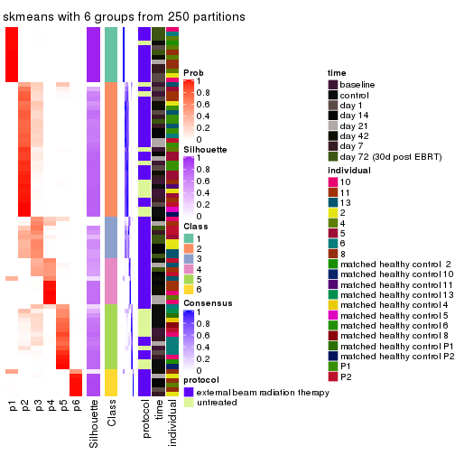
Heatmaps for the membership of samples in all partitions to see how consistent they are:
membership_heatmap(res, k = 2)
membership_heatmap(res, k = 3)
membership_heatmap(res, k = 4)
membership_heatmap(res, k = 5)
membership_heatmap(res, k = 6)
As soon as we have had the classes for columns, we can look for signatures which are significantly different between classes which can be candidate marks for certain classes. Following are the heatmaps for signatures.
Signature heatmaps where rows are scaled:
get_signatures(res, k = 2)
get_signatures(res, k = 3)
#> Error in mat[ceiling(1:nr/h_ratio), ceiling(1:nc/w_ratio), drop = FALSE]: subscript out of bounds
get_signatures(res, k = 4)
#> Error in mat[ceiling(1:nr/h_ratio), ceiling(1:nc/w_ratio), drop = FALSE]: subscript out of bounds
get_signatures(res, k = 5)
#> Error in mat[ceiling(1:nr/h_ratio), ceiling(1:nc/w_ratio), drop = FALSE]: subscript out of bounds

get_signatures(res, k = 6)
#> Error: The width or height of the raster image is zero, maybe you forget to turn off the
#> previous graphic device or it was corrupted. Run `dev.off()` to close it.

Signature heatmaps where rows are not scaled:
get_signatures(res, k = 2, scale_rows = FALSE)
get_signatures(res, k = 3, scale_rows = FALSE)
get_signatures(res, k = 4, scale_rows = FALSE)
get_signatures(res, k = 5, scale_rows = FALSE)
get_signatures(res, k = 6, scale_rows = FALSE)
Compare the overlap of signatures from different k:
compare_signatures(res)
get_signature() returns a data frame invisibly. TO get the list of signatures, the function
call should be assigned to a variable explicitly. In following code, if plot argument is set
to FALSE, no heatmap is plotted while only the differential analysis is performed.
# code only for demonstration
tb = get_signature(res, k = ..., plot = FALSE)
An example of the output of tb is:
#> which_row fdr mean_1 mean_2 scaled_mean_1 scaled_mean_2 km
#> 1 38 0.042760348 8.373488 9.131774 -0.5533452 0.5164555 1
#> 2 40 0.018707592 7.106213 8.469186 -0.6173731 0.5762149 1
#> 3 55 0.019134737 10.221463 11.207825 -0.6159697 0.5749050 1
#> 4 59 0.006059896 5.921854 7.869574 -0.6899429 0.6439467 1
#> 5 60 0.018055526 8.928898 10.211722 -0.6204761 0.5791110 1
#> 6 98 0.009384629 15.714769 14.887706 0.6635654 -0.6193277 2
...
The columns in tb are:
which_row: row indices corresponding to the input matrix.fdr: FDR for the differential test. mean_x: The mean value in group x.scaled_mean_x: The mean value in group x after rows are scaled.km: Row groups if k-means clustering is applied to rows.UMAP plot which shows how samples are separated.
dimension_reduction(res, k = 2, method = "UMAP")
dimension_reduction(res, k = 3, method = "UMAP")
dimension_reduction(res, k = 4, method = "UMAP")
dimension_reduction(res, k = 5, method = "UMAP")
dimension_reduction(res, k = 6, method = "UMAP")
Following heatmap shows how subgroups are split when increasing k:
collect_classes(res)
Test correlation between subgroups and known annotations. If the known annotation is numeric, one-way ANOVA test is applied, and if the known annotation is discrete, chi-squared contingency table test is applied.
test_to_known_factors(res)
#> n protocol(p) time(p) individual(p) k
#> ATC:skmeans 80 0.015327 0.17802 1.59e-03 2
#> ATC:skmeans 76 0.004525 0.08467 7.16e-04 3
#> ATC:skmeans 78 0.000125 0.00491 2.03e-06 4
#> ATC:skmeans 77 0.000590 0.01019 6.86e-04 5
#> ATC:skmeans 67 0.002677 0.00671 1.55e-02 6
If matrix rows can be associated to genes, consider to use GO_Enrichment(res,
...) to perform function enrichment for the signature genes.
The object with results only for a single top-value method and a single partition method can be extracted as:
res = res_list["ATC", "pam"]
# you can also extract it by
# res = res_list["ATC:pam"]
A summary of res and all the functions that can be applied to it:
res
#> A 'ConsensusPartition' object with k = 2, 3, 4, 5, 6.
#> On a matrix with 51941 rows and 80 columns.
#> Top rows (1000, 2000, 3000, 4000, 5000) are extracted by 'ATC' method.
#> Subgroups are detected by 'pam' method.
#> Performed in total 1250 partitions by row resampling.
#> Best k for subgroups seems to be 2.
#>
#> Following methods can be applied to this 'ConsensusPartition' object:
#> [1] "cola_report" "collect_classes" "collect_plots"
#> [4] "collect_stats" "colnames" "compare_signatures"
#> [7] "consensus_heatmap" "dimension_reduction" "functional_enrichment"
#> [10] "get_anno_col" "get_anno" "get_classes"
#> [13] "get_consensus" "get_matrix" "get_membership"
#> [16] "get_param" "get_signatures" "get_stats"
#> [19] "is_best_k" "is_stable_k" "membership_heatmap"
#> [22] "ncol" "nrow" "plot_ecdf"
#> [25] "rownames" "select_partition_number" "show"
#> [28] "suggest_best_k" "test_to_known_factors"
collect_plots() function collects all the plots made from res for all k (number of partitions)
into one single page to provide an easy and fast comparison between different k.
collect_plots(res)
The plots are:
k and the heatmap of
predicted classes for each k.k.k.k.All the plots in panels can be made by individual functions and they are plotted later in this section.
select_partition_number() produces several plots showing different
statistics for choosing “optimized” k. There are following statistics:
k;k, the area increased is defined as \(A_k - A_{k-1}\).The detailed explanations of these statistics can be found in the cola vignette.
Generally speaking, lower PAC score, higher mean silhouette score or higher
concordance corresponds to better partition. Rand index and Jaccard index
measure how similar the current partition is compared to partition with k-1.
If they are too similar, we won't accept k is better than k-1.
select_partition_number(res)

The numeric values for all these statistics can be obtained by get_stats().
get_stats(res)
#> k 1-PAC mean_silhouette concordance area_increased Rand Jaccard
#> 2 2 1.000 1.000 1.000 0.2223 0.778 0.778
#> 3 3 0.458 0.661 0.754 1.1482 0.640 0.542
#> 4 4 0.649 0.564 0.849 0.3341 0.794 0.591
#> 5 5 0.769 0.834 0.913 0.1833 0.772 0.453
#> 6 6 0.705 0.698 0.839 0.0264 0.971 0.886
suggest_best_k() suggests the best \(k\) based on these statistics. The rules are as follows:
NA.suggest_best_k(res)
#> [1] 2
Following shows the table of the partitions (You need to click the show/hide
code output link to see it). The membership matrix (columns with name p*)
is inferred by
clue::cl_consensus()
function with the SE method. Basically the value in the membership matrix
represents the probability to belong to a certain group. The finall class
label for an item is determined with the group with highest probability it
belongs to.
In get_classes() function, the entropy is calculated from the membership
matrix and the silhouette score is calculated from the consensus matrix.
cbind(get_classes(res, k = 2), get_membership(res, k = 2))
#> class entropy silhouette p1 p2
#> GSM753604 1 0 1 1 0
#> GSM753620 2 0 1 0 1
#> GSM753628 2 0 1 0 1
#> GSM753636 2 0 1 0 1
#> GSM753644 2 0 1 0 1
#> GSM753572 2 0 1 0 1
#> GSM753580 2 0 1 0 1
#> GSM753588 2 0 1 0 1
#> GSM753596 2 0 1 0 1
#> GSM753612 2 0 1 0 1
#> GSM753603 2 0 1 0 1
#> GSM753619 2 0 1 0 1
#> GSM753627 2 0 1 0 1
#> GSM753635 2 0 1 0 1
#> GSM753643 2 0 1 0 1
#> GSM753571 2 0 1 0 1
#> GSM753579 2 0 1 0 1
#> GSM753587 2 0 1 0 1
#> GSM753595 2 0 1 0 1
#> GSM753611 2 0 1 0 1
#> GSM753605 1 0 1 1 0
#> GSM753621 2 0 1 0 1
#> GSM753629 2 0 1 0 1
#> GSM753637 2 0 1 0 1
#> GSM753645 2 0 1 0 1
#> GSM753573 1 0 1 1 0
#> GSM753581 2 0 1 0 1
#> GSM753589 2 0 1 0 1
#> GSM753597 2 0 1 0 1
#> GSM753613 2 0 1 0 1
#> GSM753606 2 0 1 0 1
#> GSM753622 1 0 1 1 0
#> GSM753630 2 0 1 0 1
#> GSM753638 2 0 1 0 1
#> GSM753646 1 0 1 1 0
#> GSM753574 2 0 1 0 1
#> GSM753582 2 0 1 0 1
#> GSM753590 2 0 1 0 1
#> GSM753598 2 0 1 0 1
#> GSM753614 2 0 1 0 1
#> GSM753607 2 0 1 0 1
#> GSM753623 2 0 1 0 1
#> GSM753631 2 0 1 0 1
#> GSM753639 2 0 1 0 1
#> GSM753647 2 0 1 0 1
#> GSM753575 2 0 1 0 1
#> GSM753583 2 0 1 0 1
#> GSM753591 2 0 1 0 1
#> GSM753599 2 0 1 0 1
#> GSM753615 2 0 1 0 1
#> GSM753608 2 0 1 0 1
#> GSM753624 2 0 1 0 1
#> GSM753632 2 0 1 0 1
#> GSM753640 2 0 1 0 1
#> GSM753648 1 0 1 1 0
#> GSM753576 2 0 1 0 1
#> GSM753584 2 0 1 0 1
#> GSM753592 2 0 1 0 1
#> GSM753600 2 0 1 0 1
#> GSM753616 2 0 1 0 1
#> GSM753609 2 0 1 0 1
#> GSM753625 1 0 1 1 0
#> GSM753633 2 0 1 0 1
#> GSM753641 2 0 1 0 1
#> GSM753649 2 0 1 0 1
#> GSM753577 2 0 1 0 1
#> GSM753585 2 0 1 0 1
#> GSM753593 2 0 1 0 1
#> GSM753601 2 0 1 0 1
#> GSM753617 2 0 1 0 1
#> GSM753610 2 0 1 0 1
#> GSM753626 2 0 1 0 1
#> GSM753634 2 0 1 0 1
#> GSM753642 1 0 1 1 0
#> GSM753650 1 0 1 1 0
#> GSM753578 1 0 1 1 0
#> GSM753586 2 0 1 0 1
#> GSM753594 2 0 1 0 1
#> GSM753602 2 0 1 0 1
#> GSM753618 2 0 1 0 1
cbind(get_classes(res, k = 3), get_membership(res, k = 3))
#> class entropy silhouette p1 p2 p3
#> GSM753604 1 0.6824 0.774 0.576 0.016 0.408
#> GSM753620 2 0.1529 0.732 0.000 0.960 0.040
#> GSM753628 3 0.6154 0.909 0.000 0.408 0.592
#> GSM753636 2 0.0000 0.736 0.000 1.000 0.000
#> GSM753644 2 0.1411 0.733 0.000 0.964 0.036
#> GSM753572 2 0.1529 0.732 0.000 0.960 0.040
#> GSM753580 2 0.4399 0.544 0.000 0.812 0.188
#> GSM753588 2 0.4291 0.563 0.000 0.820 0.180
#> GSM753596 2 0.3619 0.640 0.000 0.864 0.136
#> GSM753612 3 0.6215 0.880 0.000 0.428 0.572
#> GSM753603 3 0.6154 0.909 0.000 0.408 0.592
#> GSM753619 2 0.3619 0.640 0.000 0.864 0.136
#> GSM753627 3 0.6154 0.909 0.000 0.408 0.592
#> GSM753635 2 0.4178 0.579 0.000 0.828 0.172
#> GSM753643 2 0.4605 0.512 0.000 0.796 0.204
#> GSM753571 2 0.1529 0.732 0.000 0.960 0.040
#> GSM753579 2 0.4346 0.555 0.000 0.816 0.184
#> GSM753587 2 0.3686 0.635 0.000 0.860 0.140
#> GSM753595 3 0.6154 0.909 0.000 0.408 0.592
#> GSM753611 2 0.3619 0.640 0.000 0.864 0.136
#> GSM753605 1 0.0000 0.939 1.000 0.000 0.000
#> GSM753621 2 0.6154 0.247 0.000 0.592 0.408
#> GSM753629 2 0.3619 0.640 0.000 0.864 0.136
#> GSM753637 2 0.1529 0.732 0.000 0.960 0.040
#> GSM753645 2 0.4062 0.600 0.000 0.836 0.164
#> GSM753573 1 0.0000 0.939 1.000 0.000 0.000
#> GSM753581 2 0.4235 0.571 0.000 0.824 0.176
#> GSM753589 3 0.6154 0.909 0.000 0.408 0.592
#> GSM753597 3 0.6154 0.909 0.000 0.408 0.592
#> GSM753613 3 0.6154 0.909 0.000 0.408 0.592
#> GSM753606 2 0.3941 0.607 0.000 0.844 0.156
#> GSM753622 1 0.0000 0.939 1.000 0.000 0.000
#> GSM753630 3 0.6154 0.909 0.000 0.408 0.592
#> GSM753638 2 0.1529 0.732 0.000 0.960 0.040
#> GSM753646 1 0.0000 0.939 1.000 0.000 0.000
#> GSM753574 2 0.0000 0.736 0.000 1.000 0.000
#> GSM753582 3 0.6307 0.767 0.000 0.488 0.512
#> GSM753590 3 0.6154 0.909 0.000 0.408 0.592
#> GSM753598 3 0.6154 0.909 0.000 0.408 0.592
#> GSM753614 3 0.6307 0.767 0.000 0.488 0.512
#> GSM753607 2 0.6299 -0.715 0.000 0.524 0.476
#> GSM753623 2 0.4062 0.600 0.000 0.836 0.164
#> GSM753631 3 0.6154 0.909 0.000 0.408 0.592
#> GSM753639 3 0.6154 0.909 0.000 0.408 0.592
#> GSM753647 2 0.4062 0.600 0.000 0.836 0.164
#> GSM753575 2 0.2356 0.708 0.000 0.928 0.072
#> GSM753583 2 0.0000 0.736 0.000 1.000 0.000
#> GSM753591 3 0.6302 0.799 0.000 0.480 0.520
#> GSM753599 3 0.6154 0.909 0.000 0.408 0.592
#> GSM753615 2 0.1163 0.735 0.000 0.972 0.028
#> GSM753608 2 0.0747 0.726 0.000 0.984 0.016
#> GSM753624 2 0.0000 0.736 0.000 1.000 0.000
#> GSM753632 3 0.6154 0.909 0.000 0.408 0.592
#> GSM753640 2 0.1529 0.732 0.000 0.960 0.040
#> GSM753648 1 0.0000 0.939 1.000 0.000 0.000
#> GSM753576 2 0.0000 0.736 0.000 1.000 0.000
#> GSM753584 3 0.6309 0.763 0.000 0.496 0.504
#> GSM753592 2 0.0000 0.736 0.000 1.000 0.000
#> GSM753600 3 0.6154 0.909 0.000 0.408 0.592
#> GSM753616 3 0.6154 0.909 0.000 0.408 0.592
#> GSM753609 3 0.6154 0.909 0.000 0.408 0.592
#> GSM753625 1 0.0000 0.939 1.000 0.000 0.000
#> GSM753633 2 0.4291 0.563 0.000 0.820 0.180
#> GSM753641 2 0.0592 0.737 0.000 0.988 0.012
#> GSM753649 2 0.6154 0.247 0.000 0.592 0.408
#> GSM753577 2 0.0000 0.736 0.000 1.000 0.000
#> GSM753585 2 0.0000 0.736 0.000 1.000 0.000
#> GSM753593 2 0.4346 0.579 0.000 0.816 0.184
#> GSM753601 3 0.6154 0.909 0.000 0.408 0.592
#> GSM753617 2 0.0892 0.729 0.000 0.980 0.020
#> GSM753610 2 0.6309 -0.758 0.000 0.504 0.496
#> GSM753626 2 0.6154 0.247 0.000 0.592 0.408
#> GSM753634 2 0.0000 0.736 0.000 1.000 0.000
#> GSM753642 1 0.6373 0.781 0.588 0.004 0.408
#> GSM753650 1 0.0000 0.939 1.000 0.000 0.000
#> GSM753578 3 0.9806 -0.474 0.244 0.348 0.408
#> GSM753586 2 0.0747 0.731 0.000 0.984 0.016
#> GSM753594 2 0.6309 -0.768 0.000 0.500 0.500
#> GSM753602 3 0.6154 0.909 0.000 0.408 0.592
#> GSM753618 2 0.6309 -0.742 0.000 0.504 0.496
cbind(get_classes(res, k = 4), get_membership(res, k = 4))
#> class entropy silhouette p1 p2 p3 p4
#> GSM753604 3 0.0000 1.0000 0 0.000 1.000 0.000
#> GSM753620 4 0.5000 0.0102 0 0.496 0.000 0.504
#> GSM753628 2 0.0000 0.7739 0 1.000 0.000 0.000
#> GSM753636 4 0.0000 0.7067 0 0.000 0.000 1.000
#> GSM753644 4 0.5000 0.0102 0 0.496 0.000 0.504
#> GSM753572 4 0.4999 0.0184 0 0.492 0.000 0.508
#> GSM753580 2 0.4996 -0.0150 0 0.516 0.000 0.484
#> GSM753588 4 0.5000 0.0102 0 0.496 0.000 0.504
#> GSM753596 4 0.5000 0.0102 0 0.496 0.000 0.504
#> GSM753612 2 0.0707 0.7590 0 0.980 0.000 0.020
#> GSM753603 2 0.0000 0.7739 0 1.000 0.000 0.000
#> GSM753619 4 0.5000 0.0102 0 0.496 0.000 0.504
#> GSM753627 2 0.0000 0.7739 0 1.000 0.000 0.000
#> GSM753635 2 0.5000 -0.0577 0 0.500 0.000 0.500
#> GSM753643 2 0.4977 0.0446 0 0.540 0.000 0.460
#> GSM753571 4 0.0000 0.7067 0 0.000 0.000 1.000
#> GSM753579 2 0.5000 -0.0583 0 0.500 0.000 0.500
#> GSM753587 2 0.5000 -0.0464 0 0.504 0.000 0.496
#> GSM753595 2 0.0000 0.7739 0 1.000 0.000 0.000
#> GSM753611 4 0.5000 0.0102 0 0.496 0.000 0.504
#> GSM753605 1 0.0000 1.0000 1 0.000 0.000 0.000
#> GSM753621 3 0.0000 1.0000 0 0.000 1.000 0.000
#> GSM753629 4 0.5000 0.0102 0 0.496 0.000 0.504
#> GSM753637 4 0.5000 0.0102 0 0.496 0.000 0.504
#> GSM753645 4 0.3486 0.5421 0 0.188 0.000 0.812
#> GSM753573 1 0.0000 1.0000 1 0.000 0.000 0.000
#> GSM753581 2 0.5000 -0.0577 0 0.500 0.000 0.500
#> GSM753589 2 0.0000 0.7739 0 1.000 0.000 0.000
#> GSM753597 2 0.0000 0.7739 0 1.000 0.000 0.000
#> GSM753613 2 0.0000 0.7739 0 1.000 0.000 0.000
#> GSM753606 4 0.0000 0.7067 0 0.000 0.000 1.000
#> GSM753622 1 0.0000 1.0000 1 0.000 0.000 0.000
#> GSM753630 2 0.0000 0.7739 0 1.000 0.000 0.000
#> GSM753638 4 0.0000 0.7067 0 0.000 0.000 1.000
#> GSM753646 1 0.0000 1.0000 1 0.000 0.000 0.000
#> GSM753574 4 0.0000 0.7067 0 0.000 0.000 1.000
#> GSM753582 2 0.2011 0.7040 0 0.920 0.000 0.080
#> GSM753590 2 0.0000 0.7739 0 1.000 0.000 0.000
#> GSM753598 2 0.0000 0.7739 0 1.000 0.000 0.000
#> GSM753614 2 0.3569 0.5765 0 0.804 0.000 0.196
#> GSM753607 4 0.4817 0.2541 0 0.388 0.000 0.612
#> GSM753623 4 0.0000 0.7067 0 0.000 0.000 1.000
#> GSM753631 2 0.0000 0.7739 0 1.000 0.000 0.000
#> GSM753639 2 0.4996 -0.0663 0 0.516 0.000 0.484
#> GSM753647 4 0.0000 0.7067 0 0.000 0.000 1.000
#> GSM753575 4 0.0000 0.7067 0 0.000 0.000 1.000
#> GSM753583 4 0.0000 0.7067 0 0.000 0.000 1.000
#> GSM753591 4 0.4948 0.1615 0 0.440 0.000 0.560
#> GSM753599 2 0.0000 0.7739 0 1.000 0.000 0.000
#> GSM753615 4 0.0000 0.7067 0 0.000 0.000 1.000
#> GSM753608 4 0.0000 0.7067 0 0.000 0.000 1.000
#> GSM753624 4 0.0000 0.7067 0 0.000 0.000 1.000
#> GSM753632 2 0.0000 0.7739 0 1.000 0.000 0.000
#> GSM753640 4 0.0000 0.7067 0 0.000 0.000 1.000
#> GSM753648 1 0.0000 1.0000 1 0.000 0.000 0.000
#> GSM753576 4 0.0000 0.7067 0 0.000 0.000 1.000
#> GSM753584 4 0.4907 0.1993 0 0.420 0.000 0.580
#> GSM753592 4 0.0000 0.7067 0 0.000 0.000 1.000
#> GSM753600 2 0.0000 0.7739 0 1.000 0.000 0.000
#> GSM753616 2 0.0000 0.7739 0 1.000 0.000 0.000
#> GSM753609 2 0.5000 -0.0884 0 0.504 0.000 0.496
#> GSM753625 1 0.0000 1.0000 1 0.000 0.000 0.000
#> GSM753633 4 0.5000 0.0102 0 0.496 0.000 0.504
#> GSM753641 4 0.0000 0.7067 0 0.000 0.000 1.000
#> GSM753649 3 0.0000 1.0000 0 0.000 1.000 0.000
#> GSM753577 4 0.0000 0.7067 0 0.000 0.000 1.000
#> GSM753585 4 0.0000 0.7067 0 0.000 0.000 1.000
#> GSM753593 4 0.4008 0.4587 0 0.000 0.244 0.756
#> GSM753601 2 0.0000 0.7739 0 1.000 0.000 0.000
#> GSM753617 4 0.0707 0.6944 0 0.020 0.000 0.980
#> GSM753610 4 0.4888 0.2144 0 0.412 0.000 0.588
#> GSM753626 3 0.0000 1.0000 0 0.000 1.000 0.000
#> GSM753634 4 0.0000 0.7067 0 0.000 0.000 1.000
#> GSM753642 3 0.0000 1.0000 0 0.000 1.000 0.000
#> GSM753650 1 0.0000 1.0000 1 0.000 0.000 0.000
#> GSM753578 3 0.0000 1.0000 0 0.000 1.000 0.000
#> GSM753586 4 0.0592 0.6971 0 0.016 0.000 0.984
#> GSM753594 4 0.4888 0.2144 0 0.412 0.000 0.588
#> GSM753602 2 0.0000 0.7739 0 1.000 0.000 0.000
#> GSM753618 4 0.4776 0.2733 0 0.376 0.000 0.624
cbind(get_classes(res, k = 5), get_membership(res, k = 5))
#> class entropy silhouette p1 p2 p3 p4 p5
#> GSM753604 3 0.0000 0.995 0.000 0.000 1.000 0.000 0.000
#> GSM753620 2 0.1410 0.860 0.000 0.940 0.000 0.060 0.000
#> GSM753628 5 0.1410 0.914 0.000 0.060 0.000 0.000 0.940
#> GSM753636 2 0.2516 0.813 0.000 0.860 0.000 0.140 0.000
#> GSM753644 2 0.1410 0.860 0.000 0.940 0.000 0.060 0.000
#> GSM753572 2 0.1410 0.860 0.000 0.940 0.000 0.060 0.000
#> GSM753580 2 0.0290 0.864 0.000 0.992 0.000 0.000 0.008
#> GSM753588 2 0.1310 0.864 0.000 0.956 0.000 0.020 0.024
#> GSM753596 2 0.0000 0.866 0.000 1.000 0.000 0.000 0.000
#> GSM753612 2 0.3074 0.679 0.000 0.804 0.000 0.000 0.196
#> GSM753603 5 0.0000 0.937 0.000 0.000 0.000 0.000 1.000
#> GSM753619 2 0.0000 0.866 0.000 1.000 0.000 0.000 0.000
#> GSM753627 5 0.0000 0.937 0.000 0.000 0.000 0.000 1.000
#> GSM753635 2 0.0898 0.867 0.000 0.972 0.000 0.020 0.008
#> GSM753643 2 0.0880 0.851 0.000 0.968 0.000 0.000 0.032
#> GSM753571 2 0.3913 0.578 0.000 0.676 0.000 0.324 0.000
#> GSM753579 2 0.0880 0.853 0.000 0.968 0.000 0.000 0.032
#> GSM753587 2 0.0000 0.866 0.000 1.000 0.000 0.000 0.000
#> GSM753595 5 0.0609 0.932 0.000 0.020 0.000 0.000 0.980
#> GSM753611 2 0.1043 0.866 0.000 0.960 0.000 0.040 0.000
#> GSM753605 1 0.0000 1.000 1.000 0.000 0.000 0.000 0.000
#> GSM753621 3 0.0290 0.995 0.000 0.000 0.992 0.008 0.000
#> GSM753629 2 0.0000 0.866 0.000 1.000 0.000 0.000 0.000
#> GSM753637 2 0.1341 0.861 0.000 0.944 0.000 0.056 0.000
#> GSM753645 2 0.2648 0.809 0.000 0.848 0.000 0.152 0.000
#> GSM753573 1 0.0000 1.000 1.000 0.000 0.000 0.000 0.000
#> GSM753581 2 0.0000 0.866 0.000 1.000 0.000 0.000 0.000
#> GSM753589 5 0.3586 0.653 0.000 0.264 0.000 0.000 0.736
#> GSM753597 5 0.0000 0.937 0.000 0.000 0.000 0.000 1.000
#> GSM753613 5 0.1341 0.917 0.000 0.056 0.000 0.000 0.944
#> GSM753606 2 0.2516 0.825 0.000 0.860 0.000 0.140 0.000
#> GSM753622 1 0.0000 1.000 1.000 0.000 0.000 0.000 0.000
#> GSM753630 5 0.1341 0.917 0.000 0.056 0.000 0.000 0.944
#> GSM753638 2 0.3895 0.585 0.000 0.680 0.000 0.320 0.000
#> GSM753646 1 0.0162 0.997 0.996 0.000 0.000 0.004 0.000
#> GSM753574 2 0.4182 0.415 0.000 0.600 0.000 0.400 0.000
#> GSM753582 2 0.1732 0.813 0.000 0.920 0.000 0.000 0.080
#> GSM753590 5 0.1197 0.911 0.000 0.048 0.000 0.000 0.952
#> GSM753598 5 0.3586 0.653 0.000 0.264 0.000 0.000 0.736
#> GSM753614 4 0.4010 0.803 0.000 0.116 0.000 0.796 0.088
#> GSM753607 4 0.3697 0.815 0.000 0.100 0.000 0.820 0.080
#> GSM753623 2 0.4227 0.451 0.000 0.580 0.000 0.420 0.000
#> GSM753631 5 0.0963 0.927 0.000 0.036 0.000 0.000 0.964
#> GSM753639 5 0.1571 0.889 0.000 0.004 0.000 0.060 0.936
#> GSM753647 4 0.4300 -0.208 0.000 0.476 0.000 0.524 0.000
#> GSM753575 4 0.3307 0.826 0.000 0.104 0.000 0.844 0.052
#> GSM753583 4 0.2648 0.758 0.000 0.152 0.000 0.848 0.000
#> GSM753591 4 0.5309 0.568 0.000 0.264 0.000 0.644 0.092
#> GSM753599 5 0.0000 0.937 0.000 0.000 0.000 0.000 1.000
#> GSM753615 4 0.1851 0.839 0.000 0.088 0.000 0.912 0.000
#> GSM753608 4 0.0609 0.836 0.000 0.020 0.000 0.980 0.000
#> GSM753624 4 0.0510 0.836 0.000 0.016 0.000 0.984 0.000
#> GSM753632 5 0.1043 0.926 0.000 0.040 0.000 0.000 0.960
#> GSM753640 2 0.3895 0.585 0.000 0.680 0.000 0.320 0.000
#> GSM753648 1 0.0000 1.000 1.000 0.000 0.000 0.000 0.000
#> GSM753576 4 0.0609 0.835 0.000 0.020 0.000 0.980 0.000
#> GSM753584 4 0.2632 0.811 0.000 0.040 0.000 0.888 0.072
#> GSM753592 4 0.1965 0.828 0.000 0.096 0.000 0.904 0.000
#> GSM753600 5 0.0000 0.937 0.000 0.000 0.000 0.000 1.000
#> GSM753616 5 0.0000 0.937 0.000 0.000 0.000 0.000 1.000
#> GSM753609 5 0.0000 0.937 0.000 0.000 0.000 0.000 1.000
#> GSM753625 1 0.0000 1.000 1.000 0.000 0.000 0.000 0.000
#> GSM753633 2 0.0000 0.866 0.000 1.000 0.000 0.000 0.000
#> GSM753641 4 0.3534 0.642 0.000 0.256 0.000 0.744 0.000
#> GSM753649 3 0.0290 0.995 0.000 0.000 0.992 0.008 0.000
#> GSM753577 4 0.0162 0.832 0.000 0.004 0.000 0.996 0.000
#> GSM753585 4 0.0404 0.835 0.000 0.012 0.000 0.988 0.000
#> GSM753593 4 0.1282 0.817 0.000 0.004 0.044 0.952 0.000
#> GSM753601 5 0.0000 0.937 0.000 0.000 0.000 0.000 1.000
#> GSM753617 4 0.1168 0.836 0.000 0.032 0.000 0.960 0.008
#> GSM753610 4 0.3704 0.811 0.000 0.092 0.000 0.820 0.088
#> GSM753626 3 0.0290 0.995 0.000 0.000 0.992 0.008 0.000
#> GSM753634 4 0.2424 0.804 0.000 0.132 0.000 0.868 0.000
#> GSM753642 3 0.0000 0.995 0.000 0.000 1.000 0.000 0.000
#> GSM753650 1 0.0000 1.000 1.000 0.000 0.000 0.000 0.000
#> GSM753578 3 0.0000 0.995 0.000 0.000 1.000 0.000 0.000
#> GSM753586 4 0.0992 0.838 0.000 0.024 0.000 0.968 0.008
#> GSM753594 4 0.5309 0.568 0.000 0.264 0.000 0.644 0.092
#> GSM753602 5 0.0000 0.937 0.000 0.000 0.000 0.000 1.000
#> GSM753618 4 0.3558 0.822 0.000 0.108 0.000 0.828 0.064
cbind(get_classes(res, k = 6), get_membership(res, k = 6))
#> class entropy silhouette p1 p2 p3 p4 p5 p6
#> GSM753604 3 0.3563 0.7925 0.00 0.000 0.664 0.000 0.000 NA
#> GSM753620 5 0.0632 0.8040 0.00 0.000 0.000 0.000 0.976 NA
#> GSM753628 2 0.3309 0.6918 0.00 0.720 0.000 0.000 0.280 NA
#> GSM753636 5 0.3993 0.3838 0.00 0.000 0.000 0.300 0.676 NA
#> GSM753644 5 0.0632 0.8040 0.00 0.000 0.000 0.000 0.976 NA
#> GSM753572 5 0.0891 0.8016 0.00 0.000 0.000 0.008 0.968 NA
#> GSM753580 5 0.1584 0.8084 0.00 0.008 0.000 0.000 0.928 NA
#> GSM753588 5 0.1261 0.8087 0.00 0.024 0.000 0.000 0.952 NA
#> GSM753596 5 0.1327 0.8110 0.00 0.000 0.000 0.000 0.936 NA
#> GSM753612 5 0.3717 0.6373 0.00 0.160 0.000 0.000 0.776 NA
#> GSM753603 2 0.0000 0.8260 0.00 1.000 0.000 0.000 0.000 NA
#> GSM753619 5 0.0865 0.8123 0.00 0.000 0.000 0.000 0.964 NA
#> GSM753627 2 0.0000 0.8260 0.00 1.000 0.000 0.000 0.000 NA
#> GSM753635 5 0.0260 0.8086 0.00 0.008 0.000 0.000 0.992 NA
#> GSM753643 5 0.1720 0.8003 0.00 0.032 0.000 0.000 0.928 NA
#> GSM753571 5 0.4116 0.1134 0.00 0.000 0.000 0.416 0.572 NA
#> GSM753579 5 0.2106 0.7961 0.00 0.032 0.000 0.000 0.904 NA
#> GSM753587 5 0.1327 0.8110 0.00 0.000 0.000 0.000 0.936 NA
#> GSM753595 2 0.0146 0.8256 0.00 0.996 0.000 0.000 0.004 NA
#> GSM753611 5 0.0806 0.8057 0.00 0.000 0.000 0.020 0.972 NA
#> GSM753605 1 0.0000 0.9563 1.00 0.000 0.000 0.000 0.000 NA
#> GSM753621 3 0.0000 0.7764 0.00 0.000 1.000 0.000 0.000 NA
#> GSM753629 5 0.1327 0.8110 0.00 0.000 0.000 0.000 0.936 NA
#> GSM753637 5 0.0632 0.8040 0.00 0.000 0.000 0.000 0.976 NA
#> GSM753645 5 0.5662 0.3197 0.00 0.000 0.196 0.000 0.524 NA
#> GSM753573 1 0.0000 0.9563 1.00 0.000 0.000 0.000 0.000 NA
#> GSM753581 5 0.1327 0.8110 0.00 0.000 0.000 0.000 0.936 NA
#> GSM753589 2 0.4301 0.5648 0.00 0.696 0.000 0.000 0.240 NA
#> GSM753597 2 0.0000 0.8260 0.00 1.000 0.000 0.000 0.000 NA
#> GSM753613 2 0.3288 0.6958 0.00 0.724 0.000 0.000 0.276 NA
#> GSM753606 5 0.6158 0.3587 0.00 0.000 0.140 0.044 0.536 NA
#> GSM753622 1 0.0000 0.9563 1.00 0.000 0.000 0.000 0.000 NA
#> GSM753630 2 0.3288 0.6958 0.00 0.724 0.000 0.000 0.276 NA
#> GSM753638 5 0.4093 0.1458 0.00 0.000 0.000 0.404 0.584 NA
#> GSM753646 1 0.3499 0.6952 0.68 0.000 0.000 0.000 0.000 NA
#> GSM753574 4 0.4348 0.3192 0.00 0.000 0.000 0.560 0.416 NA
#> GSM753582 5 0.2744 0.7627 0.00 0.072 0.000 0.000 0.864 NA
#> GSM753590 2 0.1492 0.7972 0.00 0.940 0.000 0.000 0.036 NA
#> GSM753598 2 0.4277 0.5680 0.00 0.700 0.000 0.000 0.236 NA
#> GSM753614 4 0.4131 0.7134 0.00 0.064 0.000 0.776 0.132 NA
#> GSM753607 4 0.3371 0.7529 0.00 0.056 0.000 0.844 0.052 NA
#> GSM753623 5 0.7571 0.0180 0.00 0.000 0.196 0.188 0.336 NA
#> GSM753631 2 0.3221 0.7038 0.00 0.736 0.000 0.000 0.264 NA
#> GSM753639 2 0.4389 0.6300 0.00 0.712 0.000 0.188 0.100 NA
#> GSM753647 4 0.7550 0.0139 0.00 0.000 0.148 0.312 0.260 NA
#> GSM753575 4 0.2964 0.7573 0.00 0.040 0.000 0.848 0.108 NA
#> GSM753583 4 0.2704 0.6887 0.00 0.000 0.000 0.844 0.140 NA
#> GSM753591 4 0.6113 0.3736 0.00 0.180 0.000 0.552 0.232 NA
#> GSM753599 2 0.0000 0.8260 0.00 1.000 0.000 0.000 0.000 NA
#> GSM753615 4 0.1501 0.7674 0.00 0.000 0.000 0.924 0.076 NA
#> GSM753608 4 0.3892 0.5576 0.00 0.000 0.048 0.740 0.000 NA
#> GSM753624 4 0.0806 0.7597 0.00 0.000 0.000 0.972 0.008 NA
#> GSM753632 2 0.3244 0.7010 0.00 0.732 0.000 0.000 0.268 NA
#> GSM753640 4 0.4097 0.1209 0.00 0.000 0.000 0.500 0.492 NA
#> GSM753648 1 0.0000 0.9563 1.00 0.000 0.000 0.000 0.000 NA
#> GSM753576 4 0.1409 0.7528 0.00 0.000 0.012 0.948 0.008 NA
#> GSM753584 4 0.1549 0.7555 0.00 0.044 0.000 0.936 0.000 NA
#> GSM753592 4 0.1765 0.7654 0.00 0.000 0.000 0.904 0.096 NA
#> GSM753600 2 0.0000 0.8260 0.00 1.000 0.000 0.000 0.000 NA
#> GSM753616 2 0.0000 0.8260 0.00 1.000 0.000 0.000 0.000 NA
#> GSM753609 2 0.0291 0.8245 0.00 0.992 0.000 0.000 0.004 NA
#> GSM753625 1 0.0000 0.9563 1.00 0.000 0.000 0.000 0.000 NA
#> GSM753633 5 0.1327 0.8110 0.00 0.000 0.000 0.000 0.936 NA
#> GSM753641 4 0.3586 0.6195 0.00 0.000 0.000 0.720 0.268 NA
#> GSM753649 3 0.3175 0.6008 0.00 0.000 0.744 0.000 0.000 NA
#> GSM753577 4 0.0000 0.7556 0.00 0.000 0.000 1.000 0.000 NA
#> GSM753585 4 0.0363 0.7553 0.00 0.000 0.000 0.988 0.000 NA
#> GSM753593 4 0.3374 0.5929 0.00 0.000 0.208 0.772 0.000 NA
#> GSM753601 2 0.0000 0.8260 0.00 1.000 0.000 0.000 0.000 NA
#> GSM753617 4 0.0000 0.7556 0.00 0.000 0.000 1.000 0.000 NA
#> GSM753610 4 0.3094 0.7549 0.00 0.060 0.000 0.860 0.048 NA
#> GSM753626 3 0.0000 0.7764 0.00 0.000 1.000 0.000 0.000 NA
#> GSM753634 4 0.2572 0.7502 0.00 0.000 0.000 0.852 0.136 NA
#> GSM753642 3 0.3563 0.7925 0.00 0.000 0.664 0.000 0.000 NA
#> GSM753650 1 0.0000 0.9563 1.00 0.000 0.000 0.000 0.000 NA
#> GSM753578 3 0.3563 0.7925 0.00 0.000 0.664 0.000 0.000 NA
#> GSM753586 4 0.0000 0.7556 0.00 0.000 0.000 1.000 0.000 NA
#> GSM753594 4 0.6462 0.3456 0.00 0.176 0.000 0.528 0.232 NA
#> GSM753602 2 0.0000 0.8260 0.00 1.000 0.000 0.000 0.000 NA
#> GSM753618 4 0.2923 0.7570 0.00 0.052 0.000 0.848 0.100 NA
Heatmaps for the consensus matrix. It visualizes the probability of two samples to be in a same group.
consensus_heatmap(res, k = 2)
consensus_heatmap(res, k = 3)
consensus_heatmap(res, k = 4)
consensus_heatmap(res, k = 5)
consensus_heatmap(res, k = 6)
Heatmaps for the membership of samples in all partitions to see how consistent they are:
membership_heatmap(res, k = 2)

membership_heatmap(res, k = 3)
membership_heatmap(res, k = 4)
membership_heatmap(res, k = 5)
membership_heatmap(res, k = 6)
As soon as we have had the classes for columns, we can look for signatures which are significantly different between classes which can be candidate marks for certain classes. Following are the heatmaps for signatures.
Signature heatmaps where rows are scaled:
get_signatures(res, k = 2)

get_signatures(res, k = 3)
#> Error in mat[ceiling(1:nr/h_ratio), ceiling(1:nc/w_ratio), drop = FALSE]: subscript out of bounds

get_signatures(res, k = 4)
#> Error in mat[ceiling(1:nr/h_ratio), ceiling(1:nc/w_ratio), drop = FALSE]: subscript out of bounds

get_signatures(res, k = 5)
#> Error in mat[ceiling(1:nr/h_ratio), ceiling(1:nc/w_ratio), drop = FALSE]: subscript out of bounds

get_signatures(res, k = 6)
#> Error in mat[ceiling(1:nr/h_ratio), ceiling(1:nc/w_ratio), drop = FALSE]: subscript out of bounds

Signature heatmaps where rows are not scaled:
get_signatures(res, k = 2, scale_rows = FALSE)
get_signatures(res, k = 3, scale_rows = FALSE)
get_signatures(res, k = 4, scale_rows = FALSE)
get_signatures(res, k = 5, scale_rows = FALSE)
get_signatures(res, k = 6, scale_rows = FALSE)
Compare the overlap of signatures from different k:
compare_signatures(res)
get_signature() returns a data frame invisibly. TO get the list of signatures, the function
call should be assigned to a variable explicitly. In following code, if plot argument is set
to FALSE, no heatmap is plotted while only the differential analysis is performed.
# code only for demonstration
tb = get_signature(res, k = ..., plot = FALSE)
An example of the output of tb is:
#> which_row fdr mean_1 mean_2 scaled_mean_1 scaled_mean_2 km
#> 1 38 0.042760348 8.373488 9.131774 -0.5533452 0.5164555 1
#> 2 40 0.018707592 7.106213 8.469186 -0.6173731 0.5762149 1
#> 3 55 0.019134737 10.221463 11.207825 -0.6159697 0.5749050 1
#> 4 59 0.006059896 5.921854 7.869574 -0.6899429 0.6439467 1
#> 5 60 0.018055526 8.928898 10.211722 -0.6204761 0.5791110 1
#> 6 98 0.009384629 15.714769 14.887706 0.6635654 -0.6193277 2
...
The columns in tb are:
which_row: row indices corresponding to the input matrix.fdr: FDR for the differential test. mean_x: The mean value in group x.scaled_mean_x: The mean value in group x after rows are scaled.km: Row groups if k-means clustering is applied to rows.UMAP plot which shows how samples are separated.
dimension_reduction(res, k = 2, method = "UMAP")
dimension_reduction(res, k = 3, method = "UMAP")
dimension_reduction(res, k = 4, method = "UMAP")
dimension_reduction(res, k = 5, method = "UMAP")
dimension_reduction(res, k = 6, method = "UMAP")
Following heatmap shows how subgroups are split when increasing k:
collect_classes(res)
Test correlation between subgroups and known annotations. If the known annotation is numeric, one-way ANOVA test is applied, and if the known annotation is discrete, chi-squared contingency table test is applied.
test_to_known_factors(res)
#> n protocol(p) time(p) individual(p) k
#> ATC:pam 80 4.35e-01 0.443904 0.25865 2
#> ATC:pam 72 2.12e-01 0.626200 0.03547 3
#> ATC:pam 55 3.21e-01 0.304069 0.01395 4
#> ATC:pam 77 2.00e-05 0.000823 0.01013 5
#> ATC:pam 69 5.98e-06 0.000891 0.00877 6
If matrix rows can be associated to genes, consider to use GO_Enrichment(res,
...) to perform function enrichment for the signature genes.
The object with results only for a single top-value method and a single partition method can be extracted as:
res = res_list["ATC", "mclust"]
# you can also extract it by
# res = res_list["ATC:mclust"]
A summary of res and all the functions that can be applied to it:
res
#> A 'ConsensusPartition' object with k = 2, 3, 4, 5, 6.
#> On a matrix with 51941 rows and 80 columns.
#> Top rows (1000, 2000, 3000, 4000, 5000) are extracted by 'ATC' method.
#> Subgroups are detected by 'mclust' method.
#> Performed in total 1250 partitions by row resampling.
#> Best k for subgroups seems to be 3.
#>
#> Following methods can be applied to this 'ConsensusPartition' object:
#> [1] "cola_report" "collect_classes" "collect_plots"
#> [4] "collect_stats" "colnames" "compare_signatures"
#> [7] "consensus_heatmap" "dimension_reduction" "functional_enrichment"
#> [10] "get_anno_col" "get_anno" "get_classes"
#> [13] "get_consensus" "get_matrix" "get_membership"
#> [16] "get_param" "get_signatures" "get_stats"
#> [19] "is_best_k" "is_stable_k" "membership_heatmap"
#> [22] "ncol" "nrow" "plot_ecdf"
#> [25] "rownames" "select_partition_number" "show"
#> [28] "suggest_best_k" "test_to_known_factors"
collect_plots() function collects all the plots made from res for all k (number of partitions)
into one single page to provide an easy and fast comparison between different k.
collect_plots(res)
The plots are:
k and the heatmap of
predicted classes for each k.k.k.k.All the plots in panels can be made by individual functions and they are plotted later in this section.
select_partition_number() produces several plots showing different
statistics for choosing “optimized” k. There are following statistics:
k;k, the area increased is defined as \(A_k - A_{k-1}\).The detailed explanations of these statistics can be found in the cola vignette.
Generally speaking, lower PAC score, higher mean silhouette score or higher
concordance corresponds to better partition. Rand index and Jaccard index
measure how similar the current partition is compared to partition with k-1.
If they are too similar, we won't accept k is better than k-1.
select_partition_number(res)
The numeric values for all these statistics can be obtained by get_stats().
get_stats(res)
#> k 1-PAC mean_silhouette concordance area_increased Rand Jaccard
#> 2 2 0.923 0.898 0.963 0.320 0.676 0.676
#> 3 3 0.976 0.963 0.985 0.291 0.894 0.845
#> 4 4 0.555 0.798 0.859 0.530 0.631 0.442
#> 5 5 0.590 0.816 0.860 0.106 0.862 0.662
#> 6 6 0.633 0.575 0.794 0.103 0.808 0.465
suggest_best_k() suggests the best \(k\) based on these statistics. The rules are as follows:
NA.suggest_best_k(res)
#> [1] 3
#> attr(,"optional")
#> [1] 2
There is also optional best \(k\) = 2 that is worth to check.
Following shows the table of the partitions (You need to click the show/hide
code output link to see it). The membership matrix (columns with name p*)
is inferred by
clue::cl_consensus()
function with the SE method. Basically the value in the membership matrix
represents the probability to belong to a certain group. The finall class
label for an item is determined with the group with highest probability it
belongs to.
In get_classes() function, the entropy is calculated from the membership
matrix and the silhouette score is calculated from the consensus matrix.
cbind(get_classes(res, k = 2), get_membership(res, k = 2))
#> class entropy silhouette p1 p2
#> GSM753604 1 0.0376 0.8929 0.996 0.004
#> GSM753620 2 0.2948 0.9190 0.052 0.948
#> GSM753628 2 0.0000 0.9747 0.000 1.000
#> GSM753636 2 0.0000 0.9747 0.000 1.000
#> GSM753644 2 0.9522 0.3063 0.372 0.628
#> GSM753572 2 0.0000 0.9747 0.000 1.000
#> GSM753580 2 0.0000 0.9747 0.000 1.000
#> GSM753588 2 0.0000 0.9747 0.000 1.000
#> GSM753596 2 0.0000 0.9747 0.000 1.000
#> GSM753612 2 0.0000 0.9747 0.000 1.000
#> GSM753603 2 0.0000 0.9747 0.000 1.000
#> GSM753619 2 0.0376 0.9707 0.004 0.996
#> GSM753627 2 0.0000 0.9747 0.000 1.000
#> GSM753635 2 0.0000 0.9747 0.000 1.000
#> GSM753643 2 0.0000 0.9747 0.000 1.000
#> GSM753571 2 0.0000 0.9747 0.000 1.000
#> GSM753579 2 0.0000 0.9747 0.000 1.000
#> GSM753587 2 0.0000 0.9747 0.000 1.000
#> GSM753595 2 0.0000 0.9747 0.000 1.000
#> GSM753611 2 0.0000 0.9747 0.000 1.000
#> GSM753605 1 0.0000 0.8929 1.000 0.000
#> GSM753621 1 0.0938 0.8919 0.988 0.012
#> GSM753629 2 0.0000 0.9747 0.000 1.000
#> GSM753637 2 0.0000 0.9747 0.000 1.000
#> GSM753645 1 0.9732 0.3813 0.596 0.404
#> GSM753573 1 0.0000 0.8929 1.000 0.000
#> GSM753581 2 0.0000 0.9747 0.000 1.000
#> GSM753589 2 0.0000 0.9747 0.000 1.000
#> GSM753597 2 0.0000 0.9747 0.000 1.000
#> GSM753613 2 0.0000 0.9747 0.000 1.000
#> GSM753606 1 1.0000 0.1121 0.504 0.496
#> GSM753622 1 0.0000 0.8929 1.000 0.000
#> GSM753630 2 0.0000 0.9747 0.000 1.000
#> GSM753638 2 0.0000 0.9747 0.000 1.000
#> GSM753646 1 0.0000 0.8929 1.000 0.000
#> GSM753574 2 0.0000 0.9747 0.000 1.000
#> GSM753582 2 0.0000 0.9747 0.000 1.000
#> GSM753590 2 0.0000 0.9747 0.000 1.000
#> GSM753598 2 0.0000 0.9747 0.000 1.000
#> GSM753614 2 0.0000 0.9747 0.000 1.000
#> GSM753607 2 0.0000 0.9747 0.000 1.000
#> GSM753623 1 0.9963 0.2212 0.536 0.464
#> GSM753631 2 0.0000 0.9747 0.000 1.000
#> GSM753639 2 0.0000 0.9747 0.000 1.000
#> GSM753647 2 0.3114 0.9139 0.056 0.944
#> GSM753575 2 0.0000 0.9747 0.000 1.000
#> GSM753583 2 0.0000 0.9747 0.000 1.000
#> GSM753591 2 0.0000 0.9747 0.000 1.000
#> GSM753599 2 0.0000 0.9747 0.000 1.000
#> GSM753615 2 0.0000 0.9747 0.000 1.000
#> GSM753608 2 0.9896 0.0707 0.440 0.560
#> GSM753624 2 0.0000 0.9747 0.000 1.000
#> GSM753632 2 0.0000 0.9747 0.000 1.000
#> GSM753640 2 0.0000 0.9747 0.000 1.000
#> GSM753648 1 0.0000 0.8929 1.000 0.000
#> GSM753576 2 0.0000 0.9747 0.000 1.000
#> GSM753584 2 0.0000 0.9747 0.000 1.000
#> GSM753592 2 0.0000 0.9747 0.000 1.000
#> GSM753600 2 0.0000 0.9747 0.000 1.000
#> GSM753616 2 0.0000 0.9747 0.000 1.000
#> GSM753609 2 0.0000 0.9747 0.000 1.000
#> GSM753625 1 0.0000 0.8929 1.000 0.000
#> GSM753633 2 0.0000 0.9747 0.000 1.000
#> GSM753641 2 0.0000 0.9747 0.000 1.000
#> GSM753649 1 0.4939 0.8192 0.892 0.108
#> GSM753577 2 0.0000 0.9747 0.000 1.000
#> GSM753585 2 0.0000 0.9747 0.000 1.000
#> GSM753593 2 0.9988 -0.0865 0.480 0.520
#> GSM753601 2 0.0000 0.9747 0.000 1.000
#> GSM753617 2 0.0000 0.9747 0.000 1.000
#> GSM753610 2 0.0000 0.9747 0.000 1.000
#> GSM753626 1 0.0938 0.8919 0.988 0.012
#> GSM753634 2 0.0000 0.9747 0.000 1.000
#> GSM753642 1 0.0938 0.8919 0.988 0.012
#> GSM753650 1 0.0000 0.8929 1.000 0.000
#> GSM753578 1 0.0938 0.8919 0.988 0.012
#> GSM753586 2 0.0000 0.9747 0.000 1.000
#> GSM753594 2 0.0000 0.9747 0.000 1.000
#> GSM753602 2 0.0000 0.9747 0.000 1.000
#> GSM753618 2 0.0000 0.9747 0.000 1.000
cbind(get_classes(res, k = 3), get_membership(res, k = 3))
#> class entropy silhouette p1 p2 p3
#> GSM753604 1 0.2878 0.901 0.904 0.000 0.096
#> GSM753620 3 0.2261 0.877 0.000 0.068 0.932
#> GSM753628 2 0.0000 0.989 0.000 1.000 0.000
#> GSM753636 2 0.0000 0.989 0.000 1.000 0.000
#> GSM753644 3 0.2165 0.883 0.000 0.064 0.936
#> GSM753572 2 0.0000 0.989 0.000 1.000 0.000
#> GSM753580 2 0.0000 0.989 0.000 1.000 0.000
#> GSM753588 2 0.0000 0.989 0.000 1.000 0.000
#> GSM753596 2 0.0000 0.989 0.000 1.000 0.000
#> GSM753612 2 0.0000 0.989 0.000 1.000 0.000
#> GSM753603 2 0.0000 0.989 0.000 1.000 0.000
#> GSM753619 3 0.2165 0.883 0.000 0.064 0.936
#> GSM753627 2 0.0000 0.989 0.000 1.000 0.000
#> GSM753635 2 0.0000 0.989 0.000 1.000 0.000
#> GSM753643 2 0.5465 0.586 0.000 0.712 0.288
#> GSM753571 2 0.0000 0.989 0.000 1.000 0.000
#> GSM753579 2 0.0000 0.989 0.000 1.000 0.000
#> GSM753587 2 0.0000 0.989 0.000 1.000 0.000
#> GSM753595 2 0.0000 0.989 0.000 1.000 0.000
#> GSM753611 2 0.1643 0.946 0.000 0.956 0.044
#> GSM753605 1 0.0000 0.987 1.000 0.000 0.000
#> GSM753621 3 0.0000 0.926 0.000 0.000 1.000
#> GSM753629 2 0.0000 0.989 0.000 1.000 0.000
#> GSM753637 2 0.3038 0.879 0.000 0.896 0.104
#> GSM753645 3 0.0000 0.926 0.000 0.000 1.000
#> GSM753573 1 0.0000 0.987 1.000 0.000 0.000
#> GSM753581 2 0.0000 0.989 0.000 1.000 0.000
#> GSM753589 2 0.0000 0.989 0.000 1.000 0.000
#> GSM753597 2 0.0000 0.989 0.000 1.000 0.000
#> GSM753613 2 0.0000 0.989 0.000 1.000 0.000
#> GSM753606 3 0.0424 0.923 0.000 0.008 0.992
#> GSM753622 1 0.0000 0.987 1.000 0.000 0.000
#> GSM753630 2 0.0000 0.989 0.000 1.000 0.000
#> GSM753638 2 0.0000 0.989 0.000 1.000 0.000
#> GSM753646 1 0.0000 0.987 1.000 0.000 0.000
#> GSM753574 2 0.0000 0.989 0.000 1.000 0.000
#> GSM753582 2 0.0000 0.989 0.000 1.000 0.000
#> GSM753590 2 0.0000 0.989 0.000 1.000 0.000
#> GSM753598 2 0.0000 0.989 0.000 1.000 0.000
#> GSM753614 2 0.0000 0.989 0.000 1.000 0.000
#> GSM753607 2 0.0000 0.989 0.000 1.000 0.000
#> GSM753623 3 0.0000 0.926 0.000 0.000 1.000
#> GSM753631 2 0.0000 0.989 0.000 1.000 0.000
#> GSM753639 2 0.0000 0.989 0.000 1.000 0.000
#> GSM753647 2 0.4654 0.742 0.000 0.792 0.208
#> GSM753575 2 0.0000 0.989 0.000 1.000 0.000
#> GSM753583 2 0.0000 0.989 0.000 1.000 0.000
#> GSM753591 2 0.0000 0.989 0.000 1.000 0.000
#> GSM753599 2 0.0000 0.989 0.000 1.000 0.000
#> GSM753615 2 0.0000 0.989 0.000 1.000 0.000
#> GSM753608 3 0.4702 0.630 0.000 0.212 0.788
#> GSM753624 2 0.0000 0.989 0.000 1.000 0.000
#> GSM753632 2 0.0000 0.989 0.000 1.000 0.000
#> GSM753640 2 0.0000 0.989 0.000 1.000 0.000
#> GSM753648 1 0.0000 0.987 1.000 0.000 0.000
#> GSM753576 2 0.0000 0.989 0.000 1.000 0.000
#> GSM753584 2 0.0000 0.989 0.000 1.000 0.000
#> GSM753592 2 0.0000 0.989 0.000 1.000 0.000
#> GSM753600 2 0.0000 0.989 0.000 1.000 0.000
#> GSM753616 2 0.0000 0.989 0.000 1.000 0.000
#> GSM753609 2 0.0000 0.989 0.000 1.000 0.000
#> GSM753625 1 0.0000 0.987 1.000 0.000 0.000
#> GSM753633 2 0.0000 0.989 0.000 1.000 0.000
#> GSM753641 2 0.0000 0.989 0.000 1.000 0.000
#> GSM753649 3 0.0000 0.926 0.000 0.000 1.000
#> GSM753577 2 0.0000 0.989 0.000 1.000 0.000
#> GSM753585 2 0.0000 0.989 0.000 1.000 0.000
#> GSM753593 2 0.0000 0.989 0.000 1.000 0.000
#> GSM753601 2 0.0000 0.989 0.000 1.000 0.000
#> GSM753617 2 0.0000 0.989 0.000 1.000 0.000
#> GSM753610 2 0.0000 0.989 0.000 1.000 0.000
#> GSM753626 3 0.0000 0.926 0.000 0.000 1.000
#> GSM753634 2 0.0000 0.989 0.000 1.000 0.000
#> GSM753642 3 0.0424 0.921 0.008 0.000 0.992
#> GSM753650 1 0.0000 0.987 1.000 0.000 0.000
#> GSM753578 3 0.0000 0.926 0.000 0.000 1.000
#> GSM753586 2 0.0000 0.989 0.000 1.000 0.000
#> GSM753594 2 0.0000 0.989 0.000 1.000 0.000
#> GSM753602 2 0.0000 0.989 0.000 1.000 0.000
#> GSM753618 2 0.0000 0.989 0.000 1.000 0.000
cbind(get_classes(res, k = 4), get_membership(res, k = 4))
#> class entropy silhouette p1 p2 p3 p4
#> GSM753604 3 0.0592 0.9797 0.016 0.000 0.984 0.000
#> GSM753620 2 0.7095 0.4040 0.000 0.560 0.260 0.180
#> GSM753628 2 0.0336 0.8507 0.000 0.992 0.000 0.008
#> GSM753636 4 0.2469 0.8440 0.000 0.108 0.000 0.892
#> GSM753644 2 0.7252 0.3477 0.000 0.528 0.292 0.180
#> GSM753572 4 0.2814 0.8684 0.000 0.132 0.000 0.868
#> GSM753580 2 0.3764 0.6511 0.000 0.784 0.000 0.216
#> GSM753588 4 0.3444 0.9108 0.000 0.184 0.000 0.816
#> GSM753596 2 0.2469 0.7901 0.000 0.892 0.000 0.108
#> GSM753612 2 0.0336 0.8505 0.000 0.992 0.000 0.008
#> GSM753603 2 0.0188 0.8516 0.000 0.996 0.000 0.004
#> GSM753619 2 0.7035 0.4239 0.000 0.572 0.244 0.184
#> GSM753627 2 0.0188 0.8516 0.000 0.996 0.000 0.004
#> GSM753635 4 0.2999 0.8058 0.000 0.132 0.004 0.864
#> GSM753643 2 0.6816 0.4773 0.000 0.604 0.212 0.184
#> GSM753571 4 0.3074 0.8898 0.000 0.152 0.000 0.848
#> GSM753579 2 0.0707 0.8487 0.000 0.980 0.000 0.020
#> GSM753587 2 0.0469 0.8508 0.000 0.988 0.000 0.012
#> GSM753595 2 0.0188 0.8516 0.000 0.996 0.000 0.004
#> GSM753611 4 0.1388 0.7364 0.000 0.028 0.012 0.960
#> GSM753605 1 0.0000 1.0000 1.000 0.000 0.000 0.000
#> GSM753621 3 0.0000 0.9937 0.000 0.000 1.000 0.000
#> GSM753629 2 0.0592 0.8489 0.000 0.984 0.000 0.016
#> GSM753637 4 0.7304 0.0392 0.000 0.260 0.208 0.532
#> GSM753645 2 0.7379 0.1528 0.000 0.452 0.384 0.164
#> GSM753573 1 0.0000 1.0000 1.000 0.000 0.000 0.000
#> GSM753581 2 0.0469 0.8510 0.000 0.988 0.000 0.012
#> GSM753589 2 0.0188 0.8516 0.000 0.996 0.000 0.004
#> GSM753597 2 0.0188 0.8516 0.000 0.996 0.000 0.004
#> GSM753613 4 0.4053 0.8730 0.000 0.228 0.004 0.768
#> GSM753606 2 0.7290 0.2780 0.000 0.504 0.328 0.168
#> GSM753622 1 0.0000 1.0000 1.000 0.000 0.000 0.000
#> GSM753630 2 0.0592 0.8505 0.000 0.984 0.000 0.016
#> GSM753638 4 0.3444 0.9108 0.000 0.184 0.000 0.816
#> GSM753646 1 0.0000 1.0000 1.000 0.000 0.000 0.000
#> GSM753574 4 0.3528 0.9117 0.000 0.192 0.000 0.808
#> GSM753582 4 0.4643 0.7257 0.000 0.344 0.000 0.656
#> GSM753590 2 0.0336 0.8506 0.000 0.992 0.000 0.008
#> GSM753598 2 0.0188 0.8516 0.000 0.996 0.000 0.004
#> GSM753614 4 0.3528 0.9117 0.000 0.192 0.000 0.808
#> GSM753607 2 0.0921 0.8439 0.000 0.972 0.000 0.028
#> GSM753623 2 0.7379 0.1528 0.000 0.452 0.384 0.164
#> GSM753631 2 0.0336 0.8511 0.000 0.992 0.000 0.008
#> GSM753639 2 0.4356 0.3973 0.000 0.708 0.000 0.292
#> GSM753647 4 0.4795 0.2977 0.000 0.012 0.292 0.696
#> GSM753575 4 0.3528 0.9117 0.000 0.192 0.000 0.808
#> GSM753583 4 0.3356 0.9041 0.000 0.176 0.000 0.824
#> GSM753591 2 0.0921 0.8453 0.000 0.972 0.000 0.028
#> GSM753599 2 0.0336 0.8511 0.000 0.992 0.000 0.008
#> GSM753615 4 0.3528 0.9117 0.000 0.192 0.000 0.808
#> GSM753608 2 0.6641 0.4632 0.000 0.600 0.276 0.124
#> GSM753624 4 0.3486 0.9119 0.000 0.188 0.000 0.812
#> GSM753632 2 0.0336 0.8511 0.000 0.992 0.000 0.008
#> GSM753640 4 0.3486 0.9119 0.000 0.188 0.000 0.812
#> GSM753648 1 0.0000 1.0000 1.000 0.000 0.000 0.000
#> GSM753576 4 0.3528 0.9117 0.000 0.192 0.000 0.808
#> GSM753584 4 0.3569 0.9092 0.000 0.196 0.000 0.804
#> GSM753592 4 0.3486 0.9115 0.000 0.188 0.000 0.812
#> GSM753600 2 0.0336 0.8511 0.000 0.992 0.000 0.008
#> GSM753616 2 0.3123 0.6842 0.000 0.844 0.000 0.156
#> GSM753609 2 0.0469 0.8492 0.000 0.988 0.000 0.012
#> GSM753625 1 0.0000 1.0000 1.000 0.000 0.000 0.000
#> GSM753633 2 0.0336 0.8512 0.000 0.992 0.000 0.008
#> GSM753641 4 0.3486 0.9119 0.000 0.188 0.000 0.812
#> GSM753649 3 0.0469 0.9845 0.000 0.000 0.988 0.012
#> GSM753577 4 0.3486 0.9087 0.000 0.188 0.000 0.812
#> GSM753585 4 0.3356 0.9041 0.000 0.176 0.000 0.824
#> GSM753593 4 0.5733 0.7064 0.000 0.312 0.048 0.640
#> GSM753601 2 0.4250 0.4401 0.000 0.724 0.000 0.276
#> GSM753617 4 0.3444 0.9070 0.000 0.184 0.000 0.816
#> GSM753610 2 0.0707 0.8480 0.000 0.980 0.000 0.020
#> GSM753626 3 0.0000 0.9937 0.000 0.000 1.000 0.000
#> GSM753634 2 0.0707 0.8472 0.000 0.980 0.000 0.020
#> GSM753642 3 0.0000 0.9937 0.000 0.000 1.000 0.000
#> GSM753650 1 0.0000 1.0000 1.000 0.000 0.000 0.000
#> GSM753578 3 0.0000 0.9937 0.000 0.000 1.000 0.000
#> GSM753586 4 0.3486 0.9115 0.000 0.188 0.000 0.812
#> GSM753594 2 0.0921 0.8453 0.000 0.972 0.000 0.028
#> GSM753602 2 0.0336 0.8511 0.000 0.992 0.000 0.008
#> GSM753618 4 0.3528 0.9117 0.000 0.192 0.000 0.808
cbind(get_classes(res, k = 5), get_membership(res, k = 5))
#> class entropy silhouette p1 p2 p3 p4 p5
#> GSM753604 3 0.2424 1.000 0 0.000 0.868 0.000 0.132
#> GSM753620 5 0.2753 0.822 0 0.136 0.000 0.008 0.856
#> GSM753628 2 0.0833 0.868 0 0.976 0.004 0.004 0.016
#> GSM753636 4 0.4016 0.813 0 0.112 0.024 0.816 0.048
#> GSM753644 5 0.2563 0.834 0 0.120 0.000 0.008 0.872
#> GSM753572 4 0.4135 0.808 0 0.128 0.024 0.804 0.044
#> GSM753580 2 0.2423 0.826 0 0.896 0.000 0.080 0.024
#> GSM753588 4 0.4002 0.829 0 0.144 0.024 0.804 0.028
#> GSM753596 2 0.1943 0.838 0 0.924 0.000 0.020 0.056
#> GSM753612 2 0.0727 0.868 0 0.980 0.004 0.004 0.012
#> GSM753603 2 0.0613 0.869 0 0.984 0.004 0.004 0.008
#> GSM753619 5 0.4130 0.589 0 0.292 0.000 0.012 0.696
#> GSM753627 2 0.0613 0.869 0 0.984 0.004 0.004 0.008
#> GSM753635 2 0.5440 0.613 0 0.660 0.000 0.156 0.184
#> GSM753643 2 0.4232 0.495 0 0.676 0.000 0.012 0.312
#> GSM753571 4 0.3391 0.851 0 0.100 0.024 0.852 0.024
#> GSM753579 2 0.0798 0.869 0 0.976 0.000 0.008 0.016
#> GSM753587 2 0.0671 0.868 0 0.980 0.000 0.004 0.016
#> GSM753595 2 0.0566 0.868 0 0.984 0.004 0.000 0.012
#> GSM753611 4 0.4326 0.756 0 0.080 0.004 0.776 0.140
#> GSM753605 1 0.0000 1.000 1 0.000 0.000 0.000 0.000
#> GSM753621 3 0.2424 1.000 0 0.000 0.868 0.000 0.132
#> GSM753629 2 0.0865 0.866 0 0.972 0.000 0.004 0.024
#> GSM753637 2 0.5904 0.461 0 0.596 0.000 0.172 0.232
#> GSM753645 5 0.2959 0.833 0 0.100 0.036 0.000 0.864
#> GSM753573 1 0.0000 1.000 1 0.000 0.000 0.000 0.000
#> GSM753581 2 0.0566 0.869 0 0.984 0.000 0.004 0.012
#> GSM753589 2 0.0613 0.869 0 0.984 0.004 0.008 0.004
#> GSM753597 2 0.0451 0.868 0 0.988 0.004 0.000 0.008
#> GSM753613 2 0.4686 0.717 0 0.736 0.000 0.160 0.104
#> GSM753606 5 0.2669 0.838 0 0.104 0.020 0.000 0.876
#> GSM753622 1 0.0000 1.000 1 0.000 0.000 0.000 0.000
#> GSM753630 2 0.0566 0.868 0 0.984 0.004 0.000 0.012
#> GSM753638 4 0.3945 0.859 0 0.112 0.024 0.820 0.044
#> GSM753646 1 0.0000 1.000 1 0.000 0.000 0.000 0.000
#> GSM753574 4 0.3794 0.835 0 0.112 0.024 0.828 0.036
#> GSM753582 2 0.3037 0.804 0 0.860 0.000 0.100 0.040
#> GSM753590 2 0.0486 0.869 0 0.988 0.004 0.004 0.004
#> GSM753598 2 0.0613 0.869 0 0.984 0.004 0.008 0.004
#> GSM753614 4 0.2915 0.855 0 0.116 0.024 0.860 0.000
#> GSM753607 2 0.4985 0.707 0 0.744 0.028 0.152 0.076
#> GSM753623 5 0.3012 0.835 0 0.104 0.036 0.000 0.860
#> GSM753631 2 0.0613 0.870 0 0.984 0.004 0.008 0.004
#> GSM753639 2 0.2889 0.815 0 0.872 0.000 0.084 0.044
#> GSM753647 4 0.5386 0.622 0 0.036 0.040 0.668 0.256
#> GSM753575 4 0.1671 0.863 0 0.076 0.000 0.924 0.000
#> GSM753583 4 0.4658 0.804 0 0.048 0.100 0.784 0.068
#> GSM753591 2 0.5429 0.660 0 0.696 0.028 0.196 0.080
#> GSM753599 2 0.0324 0.869 0 0.992 0.004 0.004 0.000
#> GSM753615 4 0.2819 0.863 0 0.076 0.008 0.884 0.032
#> GSM753608 2 0.5543 -0.129 0 0.500 0.016 0.036 0.448
#> GSM753624 4 0.3907 0.843 0 0.044 0.096 0.828 0.032
#> GSM753632 2 0.0613 0.870 0 0.984 0.004 0.008 0.004
#> GSM753640 4 0.3455 0.847 0 0.112 0.024 0.844 0.020
#> GSM753648 1 0.0000 1.000 1 0.000 0.000 0.000 0.000
#> GSM753576 4 0.4216 0.849 0 0.064 0.100 0.808 0.028
#> GSM753584 4 0.3543 0.829 0 0.112 0.000 0.828 0.060
#> GSM753592 4 0.3692 0.852 0 0.056 0.084 0.840 0.020
#> GSM753600 2 0.0854 0.870 0 0.976 0.004 0.012 0.008
#> GSM753616 2 0.2673 0.828 0 0.892 0.004 0.060 0.044
#> GSM753609 2 0.0451 0.868 0 0.988 0.000 0.008 0.004
#> GSM753625 1 0.0000 1.000 1 0.000 0.000 0.000 0.000
#> GSM753633 2 0.0609 0.866 0 0.980 0.000 0.000 0.020
#> GSM753641 4 0.2843 0.863 0 0.076 0.000 0.876 0.048
#> GSM753649 5 0.3730 0.372 0 0.000 0.288 0.000 0.712
#> GSM753577 4 0.4032 0.828 0 0.032 0.100 0.820 0.048
#> GSM753585 4 0.4726 0.806 0 0.052 0.100 0.780 0.068
#> GSM753593 4 0.4726 0.802 0 0.052 0.100 0.780 0.068
#> GSM753601 2 0.2782 0.819 0 0.880 0.000 0.072 0.048
#> GSM753617 4 0.4795 0.813 0 0.064 0.100 0.776 0.060
#> GSM753610 2 0.4863 0.718 0 0.756 0.028 0.140 0.076
#> GSM753626 3 0.2424 1.000 0 0.000 0.868 0.000 0.132
#> GSM753634 2 0.6059 0.248 0 0.544 0.028 0.364 0.064
#> GSM753642 3 0.2424 1.000 0 0.000 0.868 0.000 0.132
#> GSM753650 1 0.0000 1.000 1 0.000 0.000 0.000 0.000
#> GSM753578 3 0.2424 1.000 0 0.000 0.868 0.000 0.132
#> GSM753586 4 0.4360 0.850 0 0.072 0.084 0.804 0.040
#> GSM753594 2 0.5365 0.668 0 0.704 0.028 0.188 0.080
#> GSM753602 2 0.0486 0.869 0 0.988 0.004 0.004 0.004
#> GSM753618 4 0.3023 0.853 0 0.112 0.024 0.860 0.004
cbind(get_classes(res, k = 6), get_membership(res, k = 6))
#> class entropy silhouette p1 p2 p3 p4 p5 p6
#> GSM753604 3 0.1007 0.8984 0 0.000 0.956 0.000 0.000 0.044
#> GSM753620 6 0.4687 0.4514 0 0.072 0.000 0.000 0.296 0.632
#> GSM753628 2 0.1749 0.7688 0 0.932 0.024 0.000 0.036 0.008
#> GSM753636 5 0.4809 0.1866 0 0.044 0.000 0.296 0.640 0.020
#> GSM753644 6 0.1616 0.5694 0 0.048 0.000 0.000 0.020 0.932
#> GSM753572 5 0.4024 0.4931 0 0.064 0.000 0.180 0.752 0.004
#> GSM753580 5 0.4566 0.0407 0 0.428 0.004 0.000 0.540 0.028
#> GSM753588 5 0.2702 0.6258 0 0.092 0.000 0.036 0.868 0.004
#> GSM753596 5 0.4772 -0.0405 0 0.452 0.004 0.000 0.504 0.040
#> GSM753612 2 0.3644 0.5814 0 0.732 0.000 0.008 0.252 0.008
#> GSM753603 2 0.1196 0.7597 0 0.952 0.040 0.000 0.000 0.008
#> GSM753619 6 0.5512 0.1386 0 0.100 0.008 0.000 0.420 0.472
#> GSM753627 2 0.1196 0.7597 0 0.952 0.040 0.000 0.000 0.008
#> GSM753635 5 0.4902 0.4516 0 0.172 0.004 0.000 0.672 0.152
#> GSM753643 6 0.6083 0.2452 0 0.240 0.004 0.000 0.316 0.440
#> GSM753571 5 0.3670 0.5409 0 0.056 0.000 0.152 0.788 0.004
#> GSM753579 2 0.4622 0.0581 0 0.488 0.004 0.016 0.484 0.008
#> GSM753587 2 0.4628 0.1017 0 0.500 0.004 0.012 0.472 0.012
#> GSM753595 2 0.1196 0.7597 0 0.952 0.040 0.000 0.000 0.008
#> GSM753611 5 0.3259 0.5730 0 0.024 0.000 0.044 0.844 0.088
#> GSM753605 1 0.0000 1.0000 1 0.000 0.000 0.000 0.000 0.000
#> GSM753621 3 0.3175 0.7483 0 0.000 0.744 0.000 0.000 0.256
#> GSM753629 2 0.4517 0.1899 0 0.536 0.004 0.012 0.440 0.008
#> GSM753637 5 0.4602 0.3656 0 0.068 0.004 0.000 0.668 0.260
#> GSM753645 6 0.1542 0.5520 0 0.004 0.052 0.000 0.008 0.936
#> GSM753573 1 0.0000 1.0000 1 0.000 0.000 0.000 0.000 0.000
#> GSM753581 2 0.4528 0.1563 0 0.524 0.004 0.012 0.452 0.008
#> GSM753589 2 0.0508 0.7709 0 0.984 0.000 0.004 0.012 0.000
#> GSM753597 2 0.1196 0.7597 0 0.952 0.040 0.000 0.000 0.008
#> GSM753613 5 0.5727 -0.1043 0 0.420 0.004 0.012 0.464 0.100
#> GSM753606 6 0.1080 0.5625 0 0.004 0.032 0.000 0.004 0.960
#> GSM753622 1 0.0000 1.0000 1 0.000 0.000 0.000 0.000 0.000
#> GSM753630 2 0.0951 0.7665 0 0.968 0.020 0.000 0.004 0.008
#> GSM753638 5 0.4493 0.0900 0 0.040 0.000 0.364 0.596 0.000
#> GSM753646 1 0.0000 1.0000 1 0.000 0.000 0.000 0.000 0.000
#> GSM753574 5 0.4377 0.1443 0 0.044 0.000 0.312 0.644 0.000
#> GSM753582 5 0.3983 0.3002 0 0.348 0.004 0.000 0.640 0.008
#> GSM753590 2 0.0622 0.7708 0 0.980 0.000 0.000 0.012 0.008
#> GSM753598 2 0.0508 0.7713 0 0.984 0.000 0.004 0.012 0.000
#> GSM753614 5 0.3412 0.6076 0 0.064 0.000 0.128 0.808 0.000
#> GSM753607 5 0.3852 0.6075 0 0.116 0.000 0.088 0.788 0.008
#> GSM753623 6 0.1873 0.5642 0 0.020 0.048 0.000 0.008 0.924
#> GSM753631 2 0.0632 0.7708 0 0.976 0.000 0.000 0.024 0.000
#> GSM753639 2 0.3911 0.4366 0 0.624 0.000 0.000 0.368 0.008
#> GSM753647 4 0.7292 0.1565 0 0.012 0.060 0.344 0.272 0.312
#> GSM753575 4 0.4453 0.2686 0 0.028 0.000 0.528 0.444 0.000
#> GSM753583 4 0.0603 0.7750 0 0.004 0.000 0.980 0.016 0.000
#> GSM753591 5 0.3800 0.5897 0 0.052 0.000 0.132 0.796 0.020
#> GSM753599 2 0.0146 0.7706 0 0.996 0.000 0.000 0.004 0.000
#> GSM753615 4 0.4118 0.5045 0 0.028 0.000 0.660 0.312 0.000
#> GSM753608 5 0.6171 0.2589 0 0.284 0.008 0.004 0.480 0.224
#> GSM753624 4 0.2623 0.7456 0 0.016 0.000 0.852 0.132 0.000
#> GSM753632 2 0.0713 0.7698 0 0.972 0.000 0.000 0.028 0.000
#> GSM753640 5 0.3624 0.5312 0 0.060 0.000 0.156 0.784 0.000
#> GSM753648 1 0.0000 1.0000 1 0.000 0.000 0.000 0.000 0.000
#> GSM753576 4 0.2491 0.7525 0 0.020 0.000 0.868 0.112 0.000
#> GSM753584 5 0.4246 0.1389 0 0.016 0.000 0.452 0.532 0.000
#> GSM753592 4 0.2618 0.7581 0 0.024 0.000 0.860 0.116 0.000
#> GSM753600 2 0.0508 0.7710 0 0.984 0.000 0.000 0.012 0.004
#> GSM753616 2 0.2865 0.7136 0 0.840 0.000 0.012 0.140 0.008
#> GSM753609 2 0.3553 0.6847 0 0.804 0.000 0.064 0.128 0.004
#> GSM753625 1 0.0000 1.0000 1 0.000 0.000 0.000 0.000 0.000
#> GSM753633 2 0.4525 0.1684 0 0.528 0.004 0.012 0.448 0.008
#> GSM753641 4 0.4453 0.3182 0 0.028 0.000 0.528 0.444 0.000
#> GSM753649 6 0.2730 0.3747 0 0.000 0.192 0.000 0.000 0.808
#> GSM753577 4 0.0790 0.7770 0 0.000 0.000 0.968 0.032 0.000
#> GSM753585 4 0.0508 0.7744 0 0.004 0.000 0.984 0.012 0.000
#> GSM753593 4 0.0551 0.7681 0 0.004 0.000 0.984 0.004 0.008
#> GSM753601 2 0.4271 0.5357 0 0.672 0.000 0.028 0.292 0.008
#> GSM753617 4 0.0603 0.7756 0 0.004 0.000 0.980 0.016 0.000
#> GSM753610 5 0.3892 0.6052 0 0.120 0.000 0.080 0.788 0.012
#> GSM753626 3 0.2631 0.8401 0 0.000 0.820 0.000 0.000 0.180
#> GSM753634 5 0.3617 0.5967 0 0.144 0.000 0.012 0.800 0.044
#> GSM753642 3 0.1007 0.8984 0 0.000 0.956 0.000 0.000 0.044
#> GSM753650 1 0.0000 1.0000 1 0.000 0.000 0.000 0.000 0.000
#> GSM753578 3 0.1007 0.8984 0 0.000 0.956 0.000 0.000 0.044
#> GSM753586 4 0.2282 0.7641 0 0.024 0.000 0.888 0.088 0.000
#> GSM753594 5 0.3834 0.5937 0 0.060 0.000 0.132 0.792 0.016
#> GSM753602 2 0.0520 0.7705 0 0.984 0.000 0.000 0.008 0.008
#> GSM753618 5 0.3066 0.5629 0 0.044 0.000 0.124 0.832 0.000
Heatmaps for the consensus matrix. It visualizes the probability of two samples to be in a same group.
consensus_heatmap(res, k = 2)
consensus_heatmap(res, k = 3)
consensus_heatmap(res, k = 4)
consensus_heatmap(res, k = 5)
consensus_heatmap(res, k = 6)
Heatmaps for the membership of samples in all partitions to see how consistent they are:
membership_heatmap(res, k = 2)
membership_heatmap(res, k = 3)
membership_heatmap(res, k = 4)
membership_heatmap(res, k = 5)
membership_heatmap(res, k = 6)
As soon as we have had the classes for columns, we can look for signatures which are significantly different between classes which can be candidate marks for certain classes. Following are the heatmaps for signatures.
Signature heatmaps where rows are scaled:
get_signatures(res, k = 2)
#> Error in mat[ceiling(1:nr/h_ratio), ceiling(1:nc/w_ratio), drop = FALSE]: subscript out of bounds
get_signatures(res, k = 3)
get_signatures(res, k = 4)
#> Error in mat[ceiling(1:nr/h_ratio), ceiling(1:nc/w_ratio), drop = FALSE]: subscript out of bounds

get_signatures(res, k = 5)
#> Error in mat[ceiling(1:nr/h_ratio), ceiling(1:nc/w_ratio), drop = FALSE]: subscript out of bounds

get_signatures(res, k = 6)
#> Error: The width or height of the raster image is zero, maybe you forget to turn off the
#> previous graphic device or it was corrupted. Run `dev.off()` to close it.

Signature heatmaps where rows are not scaled:
get_signatures(res, k = 2, scale_rows = FALSE)
get_signatures(res, k = 3, scale_rows = FALSE)
get_signatures(res, k = 4, scale_rows = FALSE)
get_signatures(res, k = 5, scale_rows = FALSE)
get_signatures(res, k = 6, scale_rows = FALSE)
Compare the overlap of signatures from different k:
compare_signatures(res)
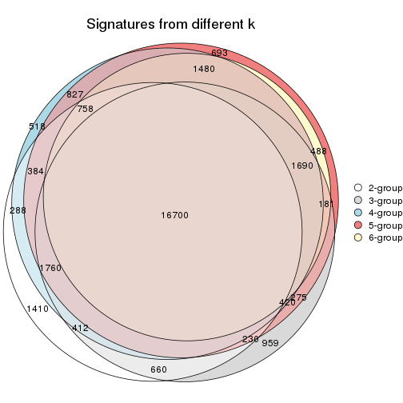
get_signature() returns a data frame invisibly. TO get the list of signatures, the function
call should be assigned to a variable explicitly. In following code, if plot argument is set
to FALSE, no heatmap is plotted while only the differential analysis is performed.
# code only for demonstration
tb = get_signature(res, k = ..., plot = FALSE)
An example of the output of tb is:
#> which_row fdr mean_1 mean_2 scaled_mean_1 scaled_mean_2 km
#> 1 38 0.042760348 8.373488 9.131774 -0.5533452 0.5164555 1
#> 2 40 0.018707592 7.106213 8.469186 -0.6173731 0.5762149 1
#> 3 55 0.019134737 10.221463 11.207825 -0.6159697 0.5749050 1
#> 4 59 0.006059896 5.921854 7.869574 -0.6899429 0.6439467 1
#> 5 60 0.018055526 8.928898 10.211722 -0.6204761 0.5791110 1
#> 6 98 0.009384629 15.714769 14.887706 0.6635654 -0.6193277 2
...
The columns in tb are:
which_row: row indices corresponding to the input matrix.fdr: FDR for the differential test. mean_x: The mean value in group x.scaled_mean_x: The mean value in group x after rows are scaled.km: Row groups if k-means clustering is applied to rows.UMAP plot which shows how samples are separated.
dimension_reduction(res, k = 2, method = "UMAP")

dimension_reduction(res, k = 3, method = "UMAP")
dimension_reduction(res, k = 4, method = "UMAP")
dimension_reduction(res, k = 5, method = "UMAP")
dimension_reduction(res, k = 6, method = "UMAP")
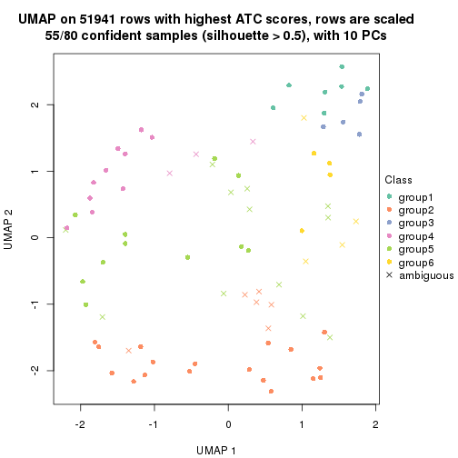
Following heatmap shows how subgroups are split when increasing k:
collect_classes(res)
Test correlation between subgroups and known annotations. If the known annotation is numeric, one-way ANOVA test is applied, and if the known annotation is discrete, chi-squared contingency table test is applied.
test_to_known_factors(res)
#> n protocol(p) time(p) individual(p) k
#> ATC:mclust 74 0.199 0.197 1.16e-02 2
#> ATC:mclust 80 0.685 0.889 1.00e-02 3
#> ATC:mclust 68 0.359 0.525 5.19e-05 4
#> ATC:mclust 75 0.280 0.274 4.61e-04 5
#> ATC:mclust 55 0.343 0.214 8.17e-04 6
If matrix rows can be associated to genes, consider to use GO_Enrichment(res,
...) to perform function enrichment for the signature genes.
The object with results only for a single top-value method and a single partition method can be extracted as:
res = res_list["ATC", "NMF"]
# you can also extract it by
# res = res_list["ATC:NMF"]
A summary of res and all the functions that can be applied to it:
res
#> A 'ConsensusPartition' object with k = 2, 3, 4, 5, 6.
#> On a matrix with 51941 rows and 80 columns.
#> Top rows (1000, 2000, 3000, 4000, 5000) are extracted by 'ATC' method.
#> Subgroups are detected by 'NMF' method.
#> Performed in total 1250 partitions by row resampling.
#> Best k for subgroups seems to be 2.
#>
#> Following methods can be applied to this 'ConsensusPartition' object:
#> [1] "cola_report" "collect_classes" "collect_plots"
#> [4] "collect_stats" "colnames" "compare_signatures"
#> [7] "consensus_heatmap" "dimension_reduction" "functional_enrichment"
#> [10] "get_anno_col" "get_anno" "get_classes"
#> [13] "get_consensus" "get_matrix" "get_membership"
#> [16] "get_param" "get_signatures" "get_stats"
#> [19] "is_best_k" "is_stable_k" "membership_heatmap"
#> [22] "ncol" "nrow" "plot_ecdf"
#> [25] "rownames" "select_partition_number" "show"
#> [28] "suggest_best_k" "test_to_known_factors"
collect_plots() function collects all the plots made from res for all k (number of partitions)
into one single page to provide an easy and fast comparison between different k.
collect_plots(res)
The plots are:
k and the heatmap of
predicted classes for each k.k.k.k.All the plots in panels can be made by individual functions and they are plotted later in this section.
select_partition_number() produces several plots showing different
statistics for choosing “optimized” k. There are following statistics:
k;k, the area increased is defined as \(A_k - A_{k-1}\).The detailed explanations of these statistics can be found in the cola vignette.
Generally speaking, lower PAC score, higher mean silhouette score or higher
concordance corresponds to better partition. Rand index and Jaccard index
measure how similar the current partition is compared to partition with k-1.
If they are too similar, we won't accept k is better than k-1.
select_partition_number(res)
The numeric values for all these statistics can be obtained by get_stats().
get_stats(res)
#> k 1-PAC mean_silhouette concordance area_increased Rand Jaccard
#> 2 2 1.000 0.982 0.993 0.2329 0.778 0.778
#> 3 3 0.759 0.866 0.921 0.6534 0.886 0.854
#> 4 4 0.414 0.709 0.821 0.5727 0.701 0.556
#> 5 5 0.425 0.566 0.727 0.1441 0.955 0.884
#> 6 6 0.419 0.462 0.682 0.0462 0.838 0.604
suggest_best_k() suggests the best \(k\) based on these statistics. The rules are as follows:
NA.suggest_best_k(res)
#> [1] 2
Following shows the table of the partitions (You need to click the show/hide
code output link to see it). The membership matrix (columns with name p*)
is inferred by
clue::cl_consensus()
function with the SE method. Basically the value in the membership matrix
represents the probability to belong to a certain group. The finall class
label for an item is determined with the group with highest probability it
belongs to.
In get_classes() function, the entropy is calculated from the membership
matrix and the silhouette score is calculated from the consensus matrix.
cbind(get_classes(res, k = 2), get_membership(res, k = 2))
#> class entropy silhouette p1 p2
#> GSM753604 1 0.000 1.000 1.000 0.000
#> GSM753620 2 0.000 0.992 0.000 1.000
#> GSM753628 2 0.000 0.992 0.000 1.000
#> GSM753636 2 0.000 0.992 0.000 1.000
#> GSM753644 2 0.000 0.992 0.000 1.000
#> GSM753572 2 0.000 0.992 0.000 1.000
#> GSM753580 2 0.000 0.992 0.000 1.000
#> GSM753588 2 0.000 0.992 0.000 1.000
#> GSM753596 2 0.000 0.992 0.000 1.000
#> GSM753612 2 0.000 0.992 0.000 1.000
#> GSM753603 2 0.000 0.992 0.000 1.000
#> GSM753619 2 0.000 0.992 0.000 1.000
#> GSM753627 2 0.000 0.992 0.000 1.000
#> GSM753635 2 0.000 0.992 0.000 1.000
#> GSM753643 2 0.000 0.992 0.000 1.000
#> GSM753571 2 0.000 0.992 0.000 1.000
#> GSM753579 2 0.000 0.992 0.000 1.000
#> GSM753587 2 0.000 0.992 0.000 1.000
#> GSM753595 2 0.000 0.992 0.000 1.000
#> GSM753611 2 0.000 0.992 0.000 1.000
#> GSM753605 1 0.000 1.000 1.000 0.000
#> GSM753621 2 0.753 0.725 0.216 0.784
#> GSM753629 2 0.000 0.992 0.000 1.000
#> GSM753637 2 0.000 0.992 0.000 1.000
#> GSM753645 2 0.000 0.992 0.000 1.000
#> GSM753573 1 0.000 1.000 1.000 0.000
#> GSM753581 2 0.000 0.992 0.000 1.000
#> GSM753589 2 0.000 0.992 0.000 1.000
#> GSM753597 2 0.000 0.992 0.000 1.000
#> GSM753613 2 0.000 0.992 0.000 1.000
#> GSM753606 2 0.000 0.992 0.000 1.000
#> GSM753622 1 0.000 1.000 1.000 0.000
#> GSM753630 2 0.000 0.992 0.000 1.000
#> GSM753638 2 0.000 0.992 0.000 1.000
#> GSM753646 1 0.000 1.000 1.000 0.000
#> GSM753574 2 0.000 0.992 0.000 1.000
#> GSM753582 2 0.000 0.992 0.000 1.000
#> GSM753590 2 0.000 0.992 0.000 1.000
#> GSM753598 2 0.000 0.992 0.000 1.000
#> GSM753614 2 0.000 0.992 0.000 1.000
#> GSM753607 2 0.000 0.992 0.000 1.000
#> GSM753623 2 0.000 0.992 0.000 1.000
#> GSM753631 2 0.000 0.992 0.000 1.000
#> GSM753639 2 0.000 0.992 0.000 1.000
#> GSM753647 2 0.000 0.992 0.000 1.000
#> GSM753575 2 0.000 0.992 0.000 1.000
#> GSM753583 2 0.000 0.992 0.000 1.000
#> GSM753591 2 0.000 0.992 0.000 1.000
#> GSM753599 2 0.000 0.992 0.000 1.000
#> GSM753615 2 0.000 0.992 0.000 1.000
#> GSM753608 2 0.000 0.992 0.000 1.000
#> GSM753624 2 0.000 0.992 0.000 1.000
#> GSM753632 2 0.000 0.992 0.000 1.000
#> GSM753640 2 0.000 0.992 0.000 1.000
#> GSM753648 1 0.000 1.000 1.000 0.000
#> GSM753576 2 0.000 0.992 0.000 1.000
#> GSM753584 2 0.000 0.992 0.000 1.000
#> GSM753592 2 0.000 0.992 0.000 1.000
#> GSM753600 2 0.000 0.992 0.000 1.000
#> GSM753616 2 0.000 0.992 0.000 1.000
#> GSM753609 2 0.000 0.992 0.000 1.000
#> GSM753625 1 0.000 1.000 1.000 0.000
#> GSM753633 2 0.000 0.992 0.000 1.000
#> GSM753641 2 0.000 0.992 0.000 1.000
#> GSM753649 2 0.000 0.992 0.000 1.000
#> GSM753577 2 0.000 0.992 0.000 1.000
#> GSM753585 2 0.000 0.992 0.000 1.000
#> GSM753593 2 0.000 0.992 0.000 1.000
#> GSM753601 2 0.000 0.992 0.000 1.000
#> GSM753617 2 0.000 0.992 0.000 1.000
#> GSM753610 2 0.000 0.992 0.000 1.000
#> GSM753626 2 0.943 0.446 0.360 0.640
#> GSM753634 2 0.000 0.992 0.000 1.000
#> GSM753642 1 0.000 1.000 1.000 0.000
#> GSM753650 1 0.000 1.000 1.000 0.000
#> GSM753578 1 0.000 1.000 1.000 0.000
#> GSM753586 2 0.000 0.992 0.000 1.000
#> GSM753594 2 0.000 0.992 0.000 1.000
#> GSM753602 2 0.000 0.992 0.000 1.000
#> GSM753618 2 0.000 0.992 0.000 1.000
cbind(get_classes(res, k = 3), get_membership(res, k = 3))
#> class entropy silhouette p1 p2 p3
#> GSM753604 3 0.3573 0.714 0.120 0.004 0.876
#> GSM753620 2 0.5948 0.462 0.000 0.640 0.360
#> GSM753628 2 0.1529 0.919 0.000 0.960 0.040
#> GSM753636 2 0.1860 0.918 0.000 0.948 0.052
#> GSM753644 2 0.6225 0.259 0.000 0.568 0.432
#> GSM753572 2 0.1753 0.915 0.000 0.952 0.048
#> GSM753580 2 0.1529 0.918 0.000 0.960 0.040
#> GSM753588 2 0.0747 0.923 0.000 0.984 0.016
#> GSM753596 2 0.1964 0.912 0.000 0.944 0.056
#> GSM753612 2 0.1529 0.918 0.000 0.960 0.040
#> GSM753603 2 0.1289 0.921 0.000 0.968 0.032
#> GSM753619 2 0.6267 0.183 0.000 0.548 0.452
#> GSM753627 2 0.1411 0.920 0.000 0.964 0.036
#> GSM753635 2 0.2796 0.889 0.000 0.908 0.092
#> GSM753643 2 0.3412 0.856 0.000 0.876 0.124
#> GSM753571 2 0.1289 0.921 0.000 0.968 0.032
#> GSM753579 2 0.1163 0.922 0.000 0.972 0.028
#> GSM753587 2 0.1643 0.918 0.000 0.956 0.044
#> GSM753595 2 0.1163 0.923 0.000 0.972 0.028
#> GSM753611 2 0.2537 0.897 0.000 0.920 0.080
#> GSM753605 1 0.0000 1.000 1.000 0.000 0.000
#> GSM753621 3 0.3802 0.784 0.032 0.080 0.888
#> GSM753629 2 0.1753 0.916 0.000 0.952 0.048
#> GSM753637 2 0.3267 0.864 0.000 0.884 0.116
#> GSM753645 3 0.4555 0.689 0.000 0.200 0.800
#> GSM753573 1 0.0000 1.000 1.000 0.000 0.000
#> GSM753581 2 0.1163 0.922 0.000 0.972 0.028
#> GSM753589 2 0.1289 0.921 0.000 0.968 0.032
#> GSM753597 2 0.1031 0.922 0.000 0.976 0.024
#> GSM753613 2 0.1529 0.918 0.000 0.960 0.040
#> GSM753606 2 0.5785 0.538 0.000 0.668 0.332
#> GSM753622 1 0.0000 1.000 1.000 0.000 0.000
#> GSM753630 2 0.1964 0.915 0.000 0.944 0.056
#> GSM753638 2 0.1031 0.924 0.000 0.976 0.024
#> GSM753646 1 0.0000 1.000 1.000 0.000 0.000
#> GSM753574 2 0.1529 0.924 0.000 0.960 0.040
#> GSM753582 2 0.0892 0.923 0.000 0.980 0.020
#> GSM753590 2 0.1529 0.919 0.000 0.960 0.040
#> GSM753598 2 0.1411 0.925 0.000 0.964 0.036
#> GSM753614 2 0.2165 0.912 0.000 0.936 0.064
#> GSM753607 2 0.2165 0.916 0.000 0.936 0.064
#> GSM753623 3 0.4654 0.678 0.000 0.208 0.792
#> GSM753631 2 0.1411 0.920 0.000 0.964 0.036
#> GSM753639 2 0.0892 0.923 0.000 0.980 0.020
#> GSM753647 2 0.5948 0.497 0.000 0.640 0.360
#> GSM753575 2 0.1964 0.913 0.000 0.944 0.056
#> GSM753583 2 0.2066 0.913 0.000 0.940 0.060
#> GSM753591 2 0.2165 0.912 0.000 0.936 0.064
#> GSM753599 2 0.1289 0.922 0.000 0.968 0.032
#> GSM753615 2 0.1964 0.913 0.000 0.944 0.056
#> GSM753608 2 0.3752 0.846 0.000 0.856 0.144
#> GSM753624 2 0.2066 0.918 0.000 0.940 0.060
#> GSM753632 2 0.1031 0.922 0.000 0.976 0.024
#> GSM753640 2 0.0424 0.924 0.000 0.992 0.008
#> GSM753648 1 0.0000 1.000 1.000 0.000 0.000
#> GSM753576 2 0.2537 0.912 0.000 0.920 0.080
#> GSM753584 2 0.1964 0.913 0.000 0.944 0.056
#> GSM753592 2 0.2165 0.912 0.000 0.936 0.064
#> GSM753600 2 0.1163 0.923 0.000 0.972 0.028
#> GSM753616 2 0.1163 0.922 0.000 0.972 0.028
#> GSM753609 2 0.0747 0.924 0.000 0.984 0.016
#> GSM753625 1 0.0000 1.000 1.000 0.000 0.000
#> GSM753633 2 0.1529 0.918 0.000 0.960 0.040
#> GSM753641 2 0.1964 0.915 0.000 0.944 0.056
#> GSM753649 3 0.2878 0.776 0.000 0.096 0.904
#> GSM753577 2 0.2165 0.911 0.000 0.936 0.064
#> GSM753585 2 0.2356 0.909 0.000 0.928 0.072
#> GSM753593 2 0.4555 0.790 0.000 0.800 0.200
#> GSM753601 2 0.1860 0.915 0.000 0.948 0.052
#> GSM753617 2 0.1964 0.913 0.000 0.944 0.056
#> GSM753610 2 0.2261 0.915 0.000 0.932 0.068
#> GSM753626 3 0.2663 0.773 0.024 0.044 0.932
#> GSM753634 2 0.1529 0.924 0.000 0.960 0.040
#> GSM753642 3 0.5098 0.579 0.248 0.000 0.752
#> GSM753650 1 0.0000 1.000 1.000 0.000 0.000
#> GSM753578 3 0.4834 0.641 0.204 0.004 0.792
#> GSM753586 2 0.2066 0.913 0.000 0.940 0.060
#> GSM753594 2 0.2165 0.912 0.000 0.936 0.064
#> GSM753602 2 0.1643 0.919 0.000 0.956 0.044
#> GSM753618 2 0.1860 0.915 0.000 0.948 0.052
cbind(get_classes(res, k = 4), get_membership(res, k = 4))
#> class entropy silhouette p1 p2 p3 p4
#> GSM753604 3 0.3741 0.725 0.108 0.004 0.852 0.036
#> GSM753620 2 0.4540 0.684 0.000 0.772 0.196 0.032
#> GSM753628 2 0.1807 0.809 0.000 0.940 0.052 0.008
#> GSM753636 4 0.6079 0.648 0.000 0.380 0.052 0.568
#> GSM753644 2 0.5599 0.532 0.000 0.664 0.288 0.048
#> GSM753572 2 0.4990 0.114 0.000 0.640 0.008 0.352
#> GSM753580 2 0.1706 0.812 0.000 0.948 0.036 0.016
#> GSM753588 2 0.4955 0.173 0.000 0.648 0.008 0.344
#> GSM753596 2 0.1398 0.813 0.000 0.956 0.040 0.004
#> GSM753612 2 0.1584 0.812 0.000 0.952 0.036 0.012
#> GSM753603 2 0.2124 0.809 0.000 0.932 0.040 0.028
#> GSM753619 2 0.4716 0.671 0.000 0.764 0.196 0.040
#> GSM753627 2 0.1677 0.810 0.000 0.948 0.040 0.012
#> GSM753635 2 0.3427 0.769 0.000 0.860 0.112 0.028
#> GSM753643 2 0.4104 0.716 0.000 0.808 0.164 0.028
#> GSM753571 2 0.4546 0.486 0.000 0.732 0.012 0.256
#> GSM753579 2 0.1635 0.805 0.000 0.948 0.008 0.044
#> GSM753587 2 0.1488 0.810 0.000 0.956 0.012 0.032
#> GSM753595 2 0.1174 0.814 0.000 0.968 0.012 0.020
#> GSM753611 2 0.3732 0.766 0.000 0.852 0.056 0.092
#> GSM753605 1 0.1624 0.971 0.952 0.000 0.020 0.028
#> GSM753621 3 0.5261 0.779 0.064 0.064 0.796 0.076
#> GSM753629 2 0.1398 0.811 0.000 0.956 0.040 0.004
#> GSM753637 2 0.4289 0.714 0.000 0.796 0.172 0.032
#> GSM753645 3 0.4420 0.605 0.000 0.240 0.748 0.012
#> GSM753573 1 0.1174 0.979 0.968 0.000 0.012 0.020
#> GSM753581 2 0.1209 0.809 0.000 0.964 0.004 0.032
#> GSM753589 2 0.1576 0.808 0.000 0.948 0.004 0.048
#> GSM753597 2 0.1297 0.814 0.000 0.964 0.016 0.020
#> GSM753613 2 0.1706 0.812 0.000 0.948 0.036 0.016
#> GSM753606 2 0.4932 0.621 0.000 0.728 0.240 0.032
#> GSM753622 1 0.0000 0.987 1.000 0.000 0.000 0.000
#> GSM753630 2 0.2522 0.793 0.000 0.908 0.076 0.016
#> GSM753638 4 0.5738 0.567 0.000 0.432 0.028 0.540
#> GSM753646 1 0.0000 0.987 1.000 0.000 0.000 0.000
#> GSM753574 4 0.5599 0.704 0.000 0.352 0.032 0.616
#> GSM753582 2 0.1398 0.805 0.000 0.956 0.004 0.040
#> GSM753590 2 0.2611 0.770 0.000 0.896 0.008 0.096
#> GSM753598 2 0.2329 0.796 0.000 0.916 0.012 0.072
#> GSM753614 4 0.5193 0.619 0.000 0.412 0.008 0.580
#> GSM753607 4 0.5268 0.618 0.000 0.396 0.012 0.592
#> GSM753623 3 0.4274 0.723 0.000 0.148 0.808 0.044
#> GSM753631 2 0.1059 0.813 0.000 0.972 0.012 0.016
#> GSM753639 2 0.1398 0.810 0.000 0.956 0.004 0.040
#> GSM753647 4 0.6578 0.415 0.000 0.108 0.300 0.592
#> GSM753575 4 0.4220 0.812 0.000 0.248 0.004 0.748
#> GSM753583 4 0.4079 0.818 0.000 0.180 0.020 0.800
#> GSM753591 4 0.5268 0.615 0.000 0.396 0.012 0.592
#> GSM753599 2 0.2124 0.790 0.000 0.924 0.008 0.068
#> GSM753615 4 0.3688 0.823 0.000 0.208 0.000 0.792
#> GSM753608 2 0.5512 0.664 0.000 0.728 0.100 0.172
#> GSM753624 4 0.4335 0.801 0.000 0.168 0.036 0.796
#> GSM753632 2 0.0779 0.811 0.000 0.980 0.004 0.016
#> GSM753640 2 0.5147 -0.335 0.000 0.536 0.004 0.460
#> GSM753648 1 0.0927 0.981 0.976 0.000 0.008 0.016
#> GSM753576 4 0.4444 0.753 0.000 0.120 0.072 0.808
#> GSM753584 4 0.4295 0.809 0.000 0.240 0.008 0.752
#> GSM753592 4 0.3494 0.815 0.000 0.172 0.004 0.824
#> GSM753600 2 0.1209 0.810 0.000 0.964 0.004 0.032
#> GSM753616 2 0.2530 0.774 0.000 0.896 0.004 0.100
#> GSM753609 2 0.2675 0.771 0.000 0.892 0.008 0.100
#> GSM753625 1 0.0000 0.987 1.000 0.000 0.000 0.000
#> GSM753633 2 0.1388 0.813 0.000 0.960 0.028 0.012
#> GSM753641 4 0.4737 0.799 0.000 0.252 0.020 0.728
#> GSM753649 3 0.3398 0.776 0.000 0.068 0.872 0.060
#> GSM753577 4 0.3958 0.790 0.000 0.144 0.032 0.824
#> GSM753585 4 0.4149 0.794 0.000 0.152 0.036 0.812
#> GSM753593 4 0.3899 0.740 0.000 0.108 0.052 0.840
#> GSM753601 2 0.4422 0.531 0.000 0.736 0.008 0.256
#> GSM753617 4 0.4136 0.820 0.000 0.196 0.016 0.788
#> GSM753610 2 0.5155 -0.226 0.000 0.528 0.004 0.468
#> GSM753626 3 0.5306 0.751 0.124 0.028 0.780 0.068
#> GSM753634 2 0.5290 -0.361 0.000 0.516 0.008 0.476
#> GSM753642 3 0.4399 0.629 0.212 0.000 0.768 0.020
#> GSM753650 1 0.0000 0.987 1.000 0.000 0.000 0.000
#> GSM753578 3 0.5171 0.666 0.112 0.000 0.760 0.128
#> GSM753586 4 0.3881 0.817 0.000 0.172 0.016 0.812
#> GSM753594 4 0.5269 0.672 0.000 0.364 0.016 0.620
#> GSM753602 2 0.2918 0.752 0.000 0.876 0.008 0.116
#> GSM753618 4 0.4814 0.758 0.000 0.316 0.008 0.676
cbind(get_classes(res, k = 5), get_membership(res, k = 5))
#> class entropy silhouette p1 p2 p3 p4 p5
#> GSM753604 3 0.6891 0.06122 0.340 0.016 0.472 0.004 NA
#> GSM753620 2 0.6466 0.50075 0.000 0.556 0.164 0.016 NA
#> GSM753628 2 0.2588 0.74462 0.000 0.884 0.008 0.008 NA
#> GSM753636 3 0.7643 0.15054 0.000 0.124 0.424 0.344 NA
#> GSM753644 2 0.7140 0.07174 0.000 0.408 0.384 0.032 NA
#> GSM753572 2 0.8335 -0.15143 0.000 0.340 0.288 0.228 NA
#> GSM753580 2 0.3298 0.73775 0.000 0.856 0.012 0.036 NA
#> GSM753588 2 0.7373 0.20838 0.000 0.496 0.068 0.260 NA
#> GSM753596 2 0.3876 0.72933 0.000 0.796 0.024 0.012 NA
#> GSM753612 2 0.2017 0.74929 0.000 0.912 0.008 0.000 NA
#> GSM753603 2 0.2407 0.74701 0.000 0.896 0.012 0.004 NA
#> GSM753619 2 0.5410 0.61341 0.000 0.660 0.104 0.004 NA
#> GSM753627 2 0.2289 0.74866 0.000 0.904 0.012 0.004 NA
#> GSM753635 2 0.6177 0.59434 0.000 0.648 0.144 0.044 NA
#> GSM753643 2 0.4465 0.67809 0.000 0.732 0.056 0.000 NA
#> GSM753571 2 0.8234 0.05894 0.000 0.408 0.200 0.212 NA
#> GSM753579 2 0.2228 0.74623 0.000 0.912 0.000 0.048 NA
#> GSM753587 2 0.3219 0.74861 0.000 0.840 0.004 0.020 NA
#> GSM753595 2 0.2286 0.74455 0.000 0.888 0.004 0.000 NA
#> GSM753611 2 0.7519 0.41587 0.000 0.524 0.168 0.128 NA
#> GSM753605 1 0.2300 0.93545 0.908 0.000 0.052 0.000 NA
#> GSM753621 3 0.3641 0.65646 0.012 0.004 0.844 0.088 NA
#> GSM753629 2 0.2886 0.74239 0.000 0.864 0.016 0.004 NA
#> GSM753637 2 0.6786 0.47074 0.000 0.560 0.232 0.040 NA
#> GSM753645 3 0.5337 0.50988 0.000 0.176 0.684 0.004 NA
#> GSM753573 1 0.1195 0.95765 0.960 0.000 0.028 0.000 NA
#> GSM753581 2 0.1579 0.74726 0.000 0.944 0.000 0.032 NA
#> GSM753589 2 0.2719 0.73557 0.000 0.852 0.000 0.004 NA
#> GSM753597 2 0.2629 0.74350 0.000 0.880 0.012 0.004 NA
#> GSM753613 2 0.2390 0.74869 0.000 0.908 0.008 0.024 NA
#> GSM753606 2 0.6287 0.47357 0.000 0.552 0.184 0.004 NA
#> GSM753622 1 0.0451 0.96211 0.988 0.000 0.008 0.000 NA
#> GSM753630 2 0.3152 0.73760 0.000 0.840 0.024 0.000 NA
#> GSM753638 3 0.8290 -0.00877 0.000 0.208 0.348 0.300 NA
#> GSM753646 1 0.1329 0.95518 0.956 0.000 0.004 0.008 NA
#> GSM753574 4 0.7677 -0.04797 0.000 0.132 0.352 0.412 NA
#> GSM753582 2 0.3354 0.71650 0.000 0.844 0.000 0.068 NA
#> GSM753590 2 0.3916 0.68881 0.000 0.804 0.000 0.092 NA
#> GSM753598 2 0.3194 0.73034 0.000 0.832 0.000 0.020 NA
#> GSM753614 4 0.5527 0.36217 0.000 0.388 0.000 0.540 NA
#> GSM753607 4 0.5568 0.30684 0.000 0.412 0.000 0.516 NA
#> GSM753623 3 0.3923 0.62750 0.004 0.080 0.836 0.040 NA
#> GSM753631 2 0.1485 0.74633 0.000 0.948 0.000 0.020 NA
#> GSM753639 2 0.3176 0.72204 0.000 0.856 0.000 0.064 NA
#> GSM753647 3 0.5268 0.43722 0.000 0.008 0.628 0.312 NA
#> GSM753575 4 0.4767 0.60060 0.000 0.144 0.040 0.764 NA
#> GSM753583 4 0.3076 0.59763 0.000 0.052 0.028 0.880 NA
#> GSM753591 4 0.5706 0.32781 0.000 0.400 0.008 0.528 NA
#> GSM753599 2 0.3477 0.71811 0.000 0.832 0.000 0.056 NA
#> GSM753615 4 0.2623 0.62401 0.000 0.096 0.016 0.884 NA
#> GSM753608 2 0.6358 0.56327 0.000 0.632 0.072 0.092 NA
#> GSM753624 4 0.5415 0.22367 0.000 0.012 0.308 0.624 NA
#> GSM753632 2 0.1918 0.74190 0.000 0.928 0.000 0.036 NA
#> GSM753640 4 0.8112 0.19323 0.000 0.344 0.168 0.352 NA
#> GSM753648 1 0.1818 0.95078 0.932 0.000 0.044 0.000 NA
#> GSM753576 4 0.4032 0.44239 0.000 0.004 0.192 0.772 NA
#> GSM753584 4 0.4226 0.60208 0.000 0.176 0.000 0.764 NA
#> GSM753592 4 0.3456 0.56817 0.000 0.028 0.092 0.852 NA
#> GSM753600 2 0.1914 0.74456 0.000 0.924 0.000 0.016 NA
#> GSM753616 2 0.3416 0.70189 0.000 0.840 0.000 0.072 NA
#> GSM753609 2 0.3862 0.68810 0.000 0.808 0.000 0.088 NA
#> GSM753625 1 0.1082 0.95750 0.964 0.000 0.000 0.008 NA
#> GSM753633 2 0.2206 0.74791 0.000 0.912 0.004 0.016 NA
#> GSM753641 4 0.6694 0.26457 0.000 0.076 0.280 0.564 NA
#> GSM753649 3 0.2900 0.65195 0.000 0.000 0.864 0.108 NA
#> GSM753577 4 0.2989 0.53381 0.000 0.004 0.080 0.872 NA
#> GSM753585 4 0.3175 0.55938 0.000 0.020 0.044 0.872 NA
#> GSM753593 4 0.3413 0.48924 0.000 0.000 0.044 0.832 NA
#> GSM753601 2 0.4752 0.56392 0.000 0.724 0.000 0.184 NA
#> GSM753617 4 0.3727 0.61409 0.000 0.096 0.012 0.832 NA
#> GSM753610 2 0.5740 0.28259 0.000 0.580 0.000 0.308 NA
#> GSM753626 3 0.4495 0.64583 0.060 0.000 0.780 0.136 NA
#> GSM753634 2 0.5904 -0.14521 0.000 0.468 0.012 0.452 NA
#> GSM753642 3 0.4524 0.45644 0.208 0.000 0.736 0.004 NA
#> GSM753650 1 0.0566 0.96176 0.984 0.000 0.000 0.004 NA
#> GSM753578 3 0.5849 0.58991 0.112 0.000 0.680 0.164 NA
#> GSM753586 4 0.3097 0.61310 0.000 0.068 0.024 0.876 NA
#> GSM753594 4 0.5535 0.40074 0.000 0.372 0.008 0.564 NA
#> GSM753602 2 0.4158 0.67993 0.000 0.784 0.000 0.092 NA
#> GSM753618 4 0.5071 0.55509 0.000 0.284 0.008 0.660 NA
cbind(get_classes(res, k = 6), get_membership(res, k = 6))
#> class entropy silhouette p1 p2 p3 p4 p5 p6
#> GSM753604 3 0.5588 0.37574 0.236 0.020 0.644 0.000 0.056 NA
#> GSM753620 5 0.6140 0.44372 0.000 0.220 0.188 0.008 0.560 NA
#> GSM753628 2 0.3712 0.56624 0.000 0.788 0.016 0.024 0.168 NA
#> GSM753636 5 0.6915 0.11006 0.000 0.044 0.236 0.256 0.452 NA
#> GSM753644 5 0.6128 0.24179 0.000 0.120 0.312 0.016 0.532 NA
#> GSM753572 5 0.7313 0.41303 0.000 0.192 0.180 0.156 0.464 NA
#> GSM753580 2 0.4443 0.48969 0.000 0.708 0.012 0.044 0.232 NA
#> GSM753588 2 0.6657 0.01477 0.000 0.432 0.024 0.236 0.300 NA
#> GSM753596 5 0.5755 0.41435 0.000 0.352 0.064 0.020 0.544 NA
#> GSM753612 2 0.2125 0.62342 0.000 0.908 0.016 0.004 0.068 NA
#> GSM753603 2 0.1933 0.62756 0.000 0.920 0.032 0.000 0.044 NA
#> GSM753619 2 0.5858 0.22709 0.000 0.584 0.136 0.008 0.252 NA
#> GSM753627 2 0.1821 0.62823 0.000 0.928 0.024 0.000 0.040 NA
#> GSM753635 2 0.6413 -0.02002 0.000 0.508 0.108 0.056 0.320 NA
#> GSM753643 2 0.4848 0.43727 0.000 0.700 0.088 0.004 0.192 NA
#> GSM753571 2 0.7622 -0.28469 0.000 0.344 0.136 0.208 0.304 NA
#> GSM753579 2 0.4752 0.30681 0.000 0.620 0.004 0.040 0.328 NA
#> GSM753587 5 0.5621 0.27469 0.000 0.412 0.040 0.020 0.504 NA
#> GSM753595 2 0.3261 0.57465 0.000 0.820 0.024 0.000 0.144 NA
#> GSM753611 5 0.6236 0.54492 0.000 0.284 0.112 0.056 0.544 NA
#> GSM753605 1 0.3030 0.88665 0.848 0.000 0.056 0.000 0.004 NA
#> GSM753621 3 0.5262 0.43890 0.012 0.004 0.604 0.036 0.324 NA
#> GSM753629 2 0.5022 0.08189 0.000 0.552 0.028 0.008 0.396 NA
#> GSM753637 5 0.6499 0.53345 0.000 0.308 0.188 0.032 0.468 NA
#> GSM753645 3 0.4683 0.49023 0.000 0.096 0.748 0.012 0.120 NA
#> GSM753573 1 0.1829 0.92109 0.920 0.000 0.024 0.000 0.000 NA
#> GSM753581 2 0.4158 0.49824 0.000 0.724 0.000 0.044 0.224 NA
#> GSM753589 2 0.2792 0.63036 0.000 0.880 0.028 0.008 0.068 NA
#> GSM753597 2 0.2537 0.60696 0.000 0.880 0.024 0.000 0.088 NA
#> GSM753613 2 0.2586 0.62986 0.000 0.880 0.008 0.032 0.080 NA
#> GSM753606 2 0.6092 0.01549 0.000 0.444 0.420 0.004 0.096 NA
#> GSM753622 1 0.1226 0.92549 0.952 0.000 0.004 0.000 0.004 NA
#> GSM753630 2 0.3454 0.59491 0.000 0.836 0.036 0.012 0.100 NA
#> GSM753638 4 0.8201 -0.15141 0.000 0.228 0.208 0.276 0.260 NA
#> GSM753646 1 0.1556 0.90569 0.920 0.000 0.000 0.000 0.000 NA
#> GSM753574 5 0.7020 0.17060 0.000 0.064 0.180 0.296 0.448 NA
#> GSM753582 2 0.4108 0.56535 0.000 0.756 0.000 0.060 0.172 NA
#> GSM753590 2 0.3164 0.63584 0.000 0.860 0.008 0.072 0.024 NA
#> GSM753598 2 0.3138 0.63503 0.000 0.868 0.032 0.024 0.056 NA
#> GSM753614 2 0.5766 -0.07246 0.000 0.460 0.008 0.440 0.064 NA
#> GSM753607 2 0.5871 0.08629 0.000 0.504 0.016 0.392 0.036 NA
#> GSM753623 3 0.6095 0.56955 0.008 0.060 0.680 0.072 0.096 NA
#> GSM753631 2 0.2369 0.64532 0.000 0.904 0.008 0.048 0.032 NA
#> GSM753639 2 0.4739 0.59179 0.000 0.744 0.008 0.140 0.056 NA
#> GSM753647 3 0.6814 0.19795 0.000 0.016 0.424 0.380 0.120 NA
#> GSM753575 4 0.5253 0.52784 0.000 0.264 0.024 0.640 0.064 NA
#> GSM753583 4 0.4842 0.62394 0.000 0.092 0.016 0.752 0.052 NA
#> GSM753591 2 0.5668 -0.09854 0.000 0.468 0.000 0.432 0.040 NA
#> GSM753599 2 0.2796 0.64048 0.000 0.884 0.008 0.052 0.032 NA
#> GSM753615 4 0.3662 0.64787 0.000 0.148 0.004 0.800 0.036 NA
#> GSM753608 2 0.6634 0.43647 0.000 0.596 0.168 0.124 0.048 NA
#> GSM753624 4 0.6217 0.30573 0.000 0.024 0.204 0.584 0.164 NA
#> GSM753632 2 0.2302 0.64335 0.000 0.900 0.000 0.060 0.032 NA
#> GSM753640 2 0.7384 -0.13668 0.000 0.376 0.112 0.328 0.176 NA
#> GSM753648 1 0.2333 0.90977 0.884 0.000 0.024 0.000 0.000 NA
#> GSM753576 4 0.4940 0.45088 0.000 0.020 0.132 0.728 0.100 NA
#> GSM753584 4 0.5364 0.43784 0.000 0.316 0.012 0.600 0.028 NA
#> GSM753592 4 0.4115 0.63126 0.000 0.112 0.040 0.796 0.040 NA
#> GSM753600 2 0.2358 0.64435 0.000 0.908 0.016 0.044 0.020 NA
#> GSM753616 2 0.3663 0.62700 0.000 0.828 0.008 0.088 0.032 NA
#> GSM753609 2 0.4062 0.62204 0.000 0.812 0.024 0.076 0.036 NA
#> GSM753625 1 0.1007 0.92256 0.956 0.000 0.000 0.000 0.000 NA
#> GSM753633 2 0.3121 0.61287 0.000 0.844 0.008 0.032 0.112 NA
#> GSM753641 4 0.6838 0.45988 0.000 0.128 0.168 0.564 0.116 NA
#> GSM753649 3 0.3668 0.63906 0.000 0.008 0.824 0.092 0.056 NA
#> GSM753577 4 0.3729 0.57591 0.000 0.044 0.048 0.836 0.024 NA
#> GSM753585 4 0.4550 0.54910 0.000 0.040 0.012 0.748 0.036 NA
#> GSM753593 4 0.5025 0.37678 0.000 0.004 0.020 0.644 0.056 NA
#> GSM753601 2 0.4580 0.56742 0.000 0.744 0.008 0.164 0.036 NA
#> GSM753617 4 0.4351 0.63521 0.000 0.136 0.008 0.760 0.012 NA
#> GSM753610 2 0.5674 0.36704 0.000 0.616 0.028 0.272 0.032 NA
#> GSM753626 3 0.5078 0.59567 0.020 0.000 0.700 0.072 0.188 NA
#> GSM753634 2 0.5912 0.00285 0.000 0.464 0.008 0.404 0.112 NA
#> GSM753642 3 0.4962 0.44305 0.280 0.000 0.640 0.020 0.000 NA
#> GSM753650 1 0.0363 0.92884 0.988 0.000 0.000 0.000 0.000 NA
#> GSM753578 3 0.5991 0.57974 0.112 0.000 0.628 0.188 0.012 NA
#> GSM753586 4 0.3419 0.65029 0.000 0.148 0.008 0.812 0.004 NA
#> GSM753594 4 0.5924 0.17329 0.000 0.416 0.004 0.464 0.032 NA
#> GSM753602 2 0.3817 0.62622 0.000 0.828 0.020 0.064 0.036 NA
#> GSM753618 4 0.5691 0.28645 0.000 0.372 0.008 0.528 0.064 NA
Heatmaps for the consensus matrix. It visualizes the probability of two samples to be in a same group.
consensus_heatmap(res, k = 2)
consensus_heatmap(res, k = 3)
consensus_heatmap(res, k = 4)
consensus_heatmap(res, k = 5)
consensus_heatmap(res, k = 6)
Heatmaps for the membership of samples in all partitions to see how consistent they are:
membership_heatmap(res, k = 2)
membership_heatmap(res, k = 3)
membership_heatmap(res, k = 4)
membership_heatmap(res, k = 5)
membership_heatmap(res, k = 6)
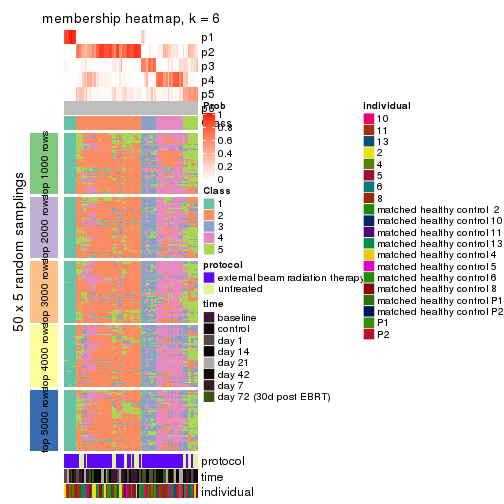
As soon as we have had the classes for columns, we can look for signatures which are significantly different between classes which can be candidate marks for certain classes. Following are the heatmaps for signatures.
Signature heatmaps where rows are scaled:
get_signatures(res, k = 2)
#> Error in mat[ceiling(1:nr/h_ratio), ceiling(1:nc/w_ratio), drop = FALSE]: subscript out of bounds
get_signatures(res, k = 3)
#> Error in mat[ceiling(1:nr/h_ratio), ceiling(1:nc/w_ratio), drop = FALSE]: subscript out of bounds

get_signatures(res, k = 4)
#> Error in mat[ceiling(1:nr/h_ratio), ceiling(1:nc/w_ratio), drop = FALSE]: subscript out of bounds

get_signatures(res, k = 5)
#> Error in mat[ceiling(1:nr/h_ratio), ceiling(1:nc/w_ratio), drop = FALSE]: subscript out of bounds

get_signatures(res, k = 6)
#> Error: The width or height of the raster image is zero, maybe you forget to turn off the
#> previous graphic device or it was corrupted. Run `dev.off()` to close it.

Signature heatmaps where rows are not scaled:
get_signatures(res, k = 2, scale_rows = FALSE)
#> Error in mat[ceiling(1:nr/h_ratio), ceiling(1:nc/w_ratio), drop = FALSE]: subscript out of bounds
get_signatures(res, k = 3, scale_rows = FALSE)
get_signatures(res, k = 4, scale_rows = FALSE)
get_signatures(res, k = 5, scale_rows = FALSE)
get_signatures(res, k = 6, scale_rows = FALSE)
#> Error in mat[ceiling(1:nr/h_ratio), ceiling(1:nc/w_ratio), drop = FALSE]: subscript out of bounds
Compare the overlap of signatures from different k:
compare_signatures(res)
get_signature() returns a data frame invisibly. TO get the list of signatures, the function
call should be assigned to a variable explicitly. In following code, if plot argument is set
to FALSE, no heatmap is plotted while only the differential analysis is performed.
# code only for demonstration
tb = get_signature(res, k = ..., plot = FALSE)
An example of the output of tb is:
#> which_row fdr mean_1 mean_2 scaled_mean_1 scaled_mean_2 km
#> 1 38 0.042760348 8.373488 9.131774 -0.5533452 0.5164555 1
#> 2 40 0.018707592 7.106213 8.469186 -0.6173731 0.5762149 1
#> 3 55 0.019134737 10.221463 11.207825 -0.6159697 0.5749050 1
#> 4 59 0.006059896 5.921854 7.869574 -0.6899429 0.6439467 1
#> 5 60 0.018055526 8.928898 10.211722 -0.6204761 0.5791110 1
#> 6 98 0.009384629 15.714769 14.887706 0.6635654 -0.6193277 2
...
The columns in tb are:
which_row: row indices corresponding to the input matrix.fdr: FDR for the differential test. mean_x: The mean value in group x.scaled_mean_x: The mean value in group x after rows are scaled.km: Row groups if k-means clustering is applied to rows.UMAP plot which shows how samples are separated.
dimension_reduction(res, k = 2, method = "UMAP")
dimension_reduction(res, k = 3, method = "UMAP")
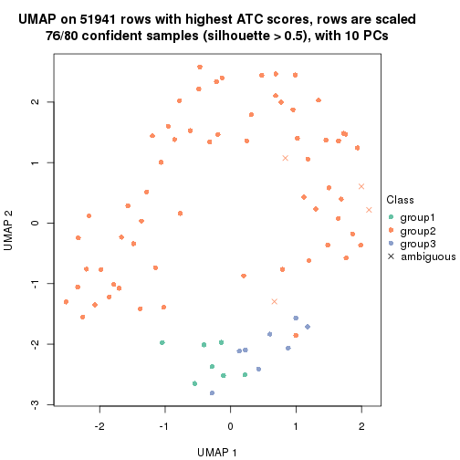
dimension_reduction(res, k = 4, method = "UMAP")
dimension_reduction(res, k = 5, method = "UMAP")

dimension_reduction(res, k = 6, method = "UMAP")
Following heatmap shows how subgroups are split when increasing k:
collect_classes(res)
Test correlation between subgroups and known annotations. If the known annotation is numeric, one-way ANOVA test is applied, and if the known annotation is discrete, chi-squared contingency table test is applied.
test_to_known_factors(res)
#> n protocol(p) time(p) individual(p) k
#> ATC:NMF 79 0.42209 0.3744 0.23701 2
#> ATC:NMF 76 0.22433 0.4349 0.01817 3
#> ATC:NMF 73 0.00498 0.0362 0.01325 4
#> ATC:NMF 56 0.00810 0.1088 0.01785 5
#> ATC:NMF 43 0.15522 0.4109 0.00625 6
If matrix rows can be associated to genes, consider to use GO_Enrichment(res,
...) to perform function enrichment for the signature genes.
sessionInfo()
#> R version 3.6.0 (2019-04-26)
#> Platform: x86_64-pc-linux-gnu (64-bit)
#> Running under: CentOS Linux 7 (Core)
#>
#> Matrix products: default
#> BLAS: /usr/lib64/libblas.so.3.4.2
#> LAPACK: /usr/lib64/liblapack.so.3.4.2
#>
#> locale:
#> [1] LC_CTYPE=en_GB.UTF-8 LC_NUMERIC=C LC_TIME=en_GB.UTF-8
#> [4] LC_COLLATE=en_GB.UTF-8 LC_MONETARY=en_GB.UTF-8 LC_MESSAGES=en_GB.UTF-8
#> [7] LC_PAPER=en_GB.UTF-8 LC_NAME=C LC_ADDRESS=C
#> [10] LC_TELEPHONE=C LC_MEASUREMENT=en_GB.UTF-8 LC_IDENTIFICATION=C
#>
#> attached base packages:
#> [1] grid parallel stats graphics grDevices utils datasets methods base
#>
#> other attached packages:
#> [1] genefilter_1.66.0 ComplexHeatmap_2.1.1 markdown_1.1 knitr_1.26
#> [5] preprocessCore_1.46.0 cola_1.3.2 GEOquery_2.52.0 Biobase_2.44.0
#> [9] BiocGenerics_0.30.0 GetoptLong_0.1.7
#>
#> loaded via a namespace (and not attached):
#> [1] bitops_1.0-6 matrixStats_0.55.0 bit64_0.9-7 doParallel_1.0.15
#> [5] RColorBrewer_1.1-2 httr_1.4.1 tools_3.6.0 backports_1.1.5
#> [9] R6_2.4.1 DBI_1.0.0 lazyeval_0.2.2 colorspace_1.4-1
#> [13] withr_2.1.2 tidyselect_0.2.5 gridExtra_2.3 bit_1.1-14
#> [17] compiler_3.6.0 xml2_1.2.2 microbenchmark_1.4-7 pkgmaker_0.28
#> [21] slam_0.1-46 scales_1.1.0 readr_1.3.1 NMF_0.23.6
#> [25] stringr_1.4.0 digest_0.6.23 pkgconfig_2.0.3 bibtex_0.4.2
#> [29] highr_0.8 limma_3.40.6 rlang_0.4.2 GlobalOptions_0.1.1
#> [33] RSQLite_2.1.2 impute_1.58.0 shape_1.4.4 mclust_5.4.5
#> [37] dendextend_1.12.0 dplyr_0.8.3 RCurl_1.95-4.12 magrittr_1.5
#> [41] Matrix_1.2-17 Rcpp_1.0.3 munsell_0.5.0 S4Vectors_0.22.1
#> [45] viridis_0.5.1 lifecycle_0.1.0 stringi_1.4.3 plyr_1.8.4
#> [49] blob_1.2.0 crayon_1.3.4 lattice_0.20-38 splines_3.6.0
#> [53] annotate_1.62.0 circlize_0.4.9 hms_0.5.2 zeallot_0.1.0
#> [57] pillar_1.4.2 rjson_0.2.20 rngtools_1.4 reshape2_1.4.3
#> [61] codetools_0.2-16 stats4_3.6.0 XML_3.98-1.20 glue_1.3.1
#> [65] evaluate_0.14 png_0.1-7 vctrs_0.2.0 foreach_1.4.7
#> [69] polyclip_1.10-0 gtable_0.3.0 purrr_0.3.3 tidyr_1.0.0
#> [73] clue_0.3-57 assertthat_0.2.1 ggplot2_3.2.1 xfun_0.11
#> [77] gridBase_0.4-7 eulerr_6.0.0 xtable_1.8-4 skmeans_0.2-11
#> [81] survival_2.44-1.1 viridisLite_0.3.0 tibble_2.1.3 iterators_1.0.12
#> [85] AnnotationDbi_1.46.1 registry_0.5-1 memoise_1.1.0 IRanges_2.18.3
#> [89] cluster_2.1.0 brew_1.0-6